<title>Разведка: заборы МО</title>
<meta name="claude:viewport-fit-sides" content="cover">
<meta name="description" content="Конкурентная разведка ниши заборов под ключ и откатных ворот в Москве и МО для «Дома гирлянд»: критерии выбора, оценка 10 конкурентов, трафик, офферы, гипотезы теста рекламы.">
<link rel="preconnect" href="https://fonts.googleapis.com">
<link rel="preconnect" href="https://fonts.gstatic.com" crossorigin>
<link rel="stylesheet" href="https://fonts.googleapis.com/css2?family=Golos+Text:wght@400;500;600;700&family=Onest:wght@600;700&display=swap">
<style>
/* Layout: sticky tab bar over a single reading column (max 1180px); charts are HTML bars, heatmaps are tables. */
:root{
  --bg:#f3f4f1; --surface:#ffffff; --ink:#18201b; --ink2:#4b554f; --muted:#7b8580; --line:#dde1dc;
  --accent:#2e5a43; --accent-soft:#e4ede7; --w2:#9a6510; --w2-bg:#fbf3e3; --w2-line:#e3c27e;
  --c1:#2a78d6; --c2:#eb6834; --c3:#1baf7a; --cg:#a9aca6;
  --y1:#86b6ef; --y2:#3987e5; --y3:#1c5cab;
  --h0:#eeefec; --h1:#cde2fb; --h2:#9ec5f4; --h3:#6da7ec; --h4:#3987e5; --h5:#1c5cab; --h6:#0d366b;
  --ht0:#7b8580; --ht1:#18201b; --ht2:#18201b; --ht3:#18201b; --ht4:#ffffff; --ht5:#ffffff; --ht6:#ffffff;
  --good:#1f7a3a; --warn:#9a6510; --bad:#b33a2e;
  --f-display:"Onest","Golos Text",system-ui,-apple-system,"Segoe UI",sans-serif;
  --f-body:"Golos Text",system-ui,-apple-system,"Segoe UI",sans-serif;
}
@media (prefers-color-scheme: dark){:root:not([data-theme="light"]){
  --bg:#111513; --surface:#191e1b; --ink:#e8ece9; --ink2:#b6bfb9; --muted:#88928c; --line:#2c332f;
  --accent:#8cc2a2; --accent-soft:#1d2b23; --w2:#e6b25a; --w2-bg:#2a2214; --w2-line:#6b5428;
  --c1:#3987e5; --c2:#d95926; --c3:#199e70; --cg:#5d625e;
  --y1:#184f95; --y2:#3987e5; --y3:#9ec5f4;
  --h0:#202622; --h1:#0d366b; --h2:#184f95; --h3:#256abf; --h4:#3987e5; --h5:#6da7ec; --h6:#b7d3f6;
  --ht0:#88928c; --ht1:#e8ece9; --ht2:#e8ece9; --ht3:#ffffff; --ht4:#ffffff; --ht5:#0b1a2e; --ht6:#0b1a2e;
  --good:#5cc27a; --warn:#e6b25a; --bad:#ef7f72; color-scheme:dark}}
:root[data-theme="dark"]{
  --bg:#111513; --surface:#191e1b; --ink:#e8ece9; --ink2:#b6bfb9; --muted:#88928c; --line:#2c332f;
  --accent:#8cc2a2; --accent-soft:#1d2b23; --w2:#e6b25a; --w2-bg:#2a2214; --w2-line:#6b5428;
  --c1:#3987e5; --c2:#d95926; --c3:#199e70; --cg:#5d625e;
  --y1:#184f95; --y2:#3987e5; --y3:#9ec5f4;
  --h0:#202622; --h1:#0d366b; --h2:#184f95; --h3:#256abf; --h4:#3987e5; --h5:#6da7ec; --h6:#b7d3f6;
  --ht0:#88928c; --ht1:#e8ece9; --ht2:#e8ece9; --ht3:#ffffff; --ht4:#ffffff; --ht5:#0b1a2e; --ht6:#0b1a2e;
  --good:#5cc27a; --warn:#e6b25a; --bad:#ef7f72; color-scheme:dark}
*{box-sizing:border-box}
body{background:var(--bg);color:var(--ink);font-family:var(--f-body);font-size:15px;line-height:1.55;margin:0}
body::before{content:"";position:fixed;inset:0 0 auto;height:env(safe-area-inset-top,0px);z-index:10;background:var(--surface)}
a{color:var(--accent)}
a:focus-visible,summary:focus-visible,[tabindex]:focus-visible{outline:2px solid var(--c1);outline-offset:2px}
.wrap{max-width:1180px;margin:0 auto;padding-left:max(16px,env(safe-area-inset-left,0px));padding-right:max(16px,env(safe-area-inset-right,0px))}
.top{background:var(--surface);border-bottom:1px solid var(--line)}
.top .wrap{padding-block:28px 20px}
.eyebrow{font-size:12px;letter-spacing:.08em;text-transform:uppercase;color:var(--muted);margin:0 0 8px}
h1{font-family:var(--f-display);font-weight:700;font-size:clamp(24px,3.6vw,36px);line-height:1.15;margin:0 0 10px;text-wrap:balance;letter-spacing:-.01em}
.meta{display:flex;flex-wrap:wrap;gap:8px 18px;color:var(--ink2);font-size:14px;margin:0}
.meta b{color:var(--ink)}
.chip-date{display:inline-flex;gap:6px;align-items:center;background:var(--accent-soft);color:var(--accent);border-radius:999px;padding:2px 10px;font-weight:600}
.legend-tags{display:flex;flex-wrap:wrap;gap:6px;margin-top:12px;font-size:13px;color:var(--ink2);align-items:center}
.tabs{position:sticky;top:env(safe-area-inset-top,0px);z-index:9;background:var(--surface);border-bottom:1px solid var(--line)}
.tabs-in{max-width:1180px;margin:0 auto;display:flex;gap:2px;overflow-x:auto;scrollbar-width:thin;padding-left:max(10px,env(safe-area-inset-left,0px));padding-right:max(10px,env(safe-area-inset-right,0px))}
.tabs a{flex:0 0 auto;padding:12px 12px 10px;text-decoration:none;color:var(--ink2);font-size:14px;border-bottom:3px solid transparent;white-space:nowrap}
.tabs a:hover{color:var(--ink)}
.tabs a[aria-selected="true"]{color:var(--ink);border-bottom-color:var(--accent);font-weight:600}
main{padding-block:24px 64px}
.ph{margin:4px 0 18px}
.ph h2{font-family:var(--f-display);font-size:clamp(22px,2.8vw,30px);margin:0;line-height:1.2;text-wrap:balance}
.ph p{margin:4px 0 0;color:var(--muted)}
.blk{background:var(--surface);border:1px solid var(--line);border-radius:10px;padding:20px clamp(14px,2.4vw,24px);margin-top:16px;min-width:0}
.blk h3{font-family:var(--f-display);font-size:19px;margin:0 0 6px;text-wrap:balance}
.blk h4{font-size:15px;margin:18px 0 8px}
.lead{color:var(--ink2);margin:0 0 14px;max-width:78ch;font-size:14px}
.note{color:var(--muted);font-size:13px;max-width:90ch}
.blk p,.blk li{max-width:90ch}
.obs{margin:10px 0 0;padding:12px 16px;background:var(--accent-soft);border-radius:10px;display:grid;gap:4px}
.obs-k{font-size:11px;letter-spacing:.09em;text-transform:uppercase;font-weight:700;color:var(--accent)}
.obs p{margin:0;max-width:95ch}
.tag{display:inline-block;font-size:11px;letter-spacing:.03em;padding:0 6px;border-radius:4px;border:1px solid var(--line);color:var(--ink2);margin-right:4px;vertical-align:1px;white-space:normal}
.tag-fact{border-color:var(--c1);color:var(--c1)}
.tag-hyp,.tag-est{border-color:var(--w2-line);color:var(--w2)}
.tag-concl{border-color:var(--c3);color:var(--good)}
/* tiles */
.tiles{display:grid;grid-template-columns:repeat(auto-fit,minmax(170px,1fr));gap:12px}
.tile{border:1px solid var(--line);border-radius:10px;padding:14px;display:grid;gap:4px;align-content:start}
.tile-v{font-family:var(--f-display);font-size:28px;font-weight:700;line-height:1.1}
.tile-l{font-size:14px;color:var(--ink)}
.tile-s{font-size:12px;color:var(--muted)}
/* answers */
.answers{display:grid;grid-template-columns:repeat(auto-fit,minmax(320px,1fr));gap:12px}
.ans{border:1px solid var(--line);border-radius:10px;padding:14px 16px;min-width:0}
.ans h4{margin:0 0 6px;display:flex;gap:10px;align-items:baseline;font-size:16px;text-wrap:balance}
.qn{font-family:var(--f-display);color:var(--accent);font-weight:700}
.ans>p{margin:0 0 8px}
details{border-top:1px dashed var(--line);margin-top:8px}
summary{cursor:pointer;color:var(--accent);font-size:14px;padding:8px 0;font-weight:600}
.det{font-size:14px;color:var(--ink2)}
.det ul,.det ol{padding-left:18px}
.testlist{padding-left:20px;display:grid;gap:8px}
.testlist span{color:var(--ink2);font-size:14px}
/* legend */
.legend{display:flex;flex-wrap:wrap;gap:6px 16px;font-size:13px;color:var(--ink2);margin:4px 0 10px}
.legend span{display:inline-flex;align-items:center;gap:6px}
.sw{width:12px;height:12px;border-radius:3px;display:inline-block}
.s1{background:var(--c1)}.s2{background:var(--c2)}.s3{background:var(--c3)}.sg{background:var(--cg)}
.y1{background:var(--y1)}.y2{background:var(--y2)}.y3{background:var(--y3)}
.sw.h0{background:var(--h0);border:1px solid var(--line)}.sw.h1{background:var(--h1)}.sw.h2{background:var(--h2)}.sw.h3{background:var(--h3)}.sw.h4{background:var(--h4)}.sw.h5{background:var(--h5)}.sw.h6{background:var(--h6)}
/* horizontal bars */
.hb{display:grid;gap:2px;margin:6px 0 4px}
.hb-row{display:grid;grid-template-columns:minmax(150px,32%) minmax(0,1fr);gap:12px;align-items:center;padding:5px 4px;border-radius:6px}
.hb-row:hover{background:var(--bg)}
.hb-lab{font-size:14px;min-width:0;line-height:1.3}
.hb-lab small{display:block;color:var(--muted);font-size:12px;margin-top:1px}
.hb-lab .rk{display:inline-block;min-width:24px;color:var(--muted);font-variant-numeric:tabular-nums}
.hb-track{position:relative;display:grid;gap:3px;min-width:0}
.hb-line{display:flex;align-items:center;gap:6px;min-height:16px;min-width:0}
.hb-bar{display:block;height:14px;width:calc(var(--w) * .74);border-radius:0 4px 4px 0;flex:0 0 auto}
.hb-val{font-size:13px;color:var(--ink);font-variant-numeric:tabular-nums;line-height:1.25;min-width:0;overflow-wrap:anywhere}
.hb-miss{font-size:12px;color:var(--muted);font-style:italic;position:relative;z-index:1;background:var(--surface);padding-right:4px}
.hb-row:hover .hb-miss,.hb-row:hover .hb-val{background:var(--bg)}
.hb-val{position:relative;z-index:1;background:var(--surface);padding-right:3px}
.hb-ref{position:absolute;top:-4px;bottom:-4px;left:calc(var(--x) * .74);border-left:1px dashed var(--ink2);pointer-events:none}
.hb-ref em{position:absolute;top:-14px;left:3px;font-size:11px;color:var(--ink2);font-style:normal;white-space:nowrap}
.hb-crit .hb-row{grid-template-columns:minmax(200px,44%) minmax(0,1fr)}
.hb .hb-row:first-child .hb-ref em{display:inline}
.hb-row:not(:first-child) .hb-ref em{display:none}
.hb-row:first-child{margin-top:12px}
/* tables */
.tscroll{overflow-x:auto;margin:8px 0;-webkit-overflow-scrolling:touch}
.tbl{border-collapse:collapse;width:100%;font-size:14px}
.tbl th,.tbl td{border-bottom:1px solid var(--line);padding:8px 10px;text-align:left;vertical-align:top}
.tbl thead th{font-size:12px;color:var(--muted);font-weight:600;text-transform:none;background:var(--surface);position:sticky;top:0}
.tbl tbody th{font-weight:600}
.tbl th small,.heat th small{display:block;color:var(--muted);font-weight:400;font-size:12px}
.tbl td.n{text-align:right;font-variant-numeric:tabular-nums;white-space:nowrap}
.tbl.small{font-size:13px}
.tbl.small td{min-width:140px}
.heat{border-collapse:separate;border-spacing:2px;font-size:13px}
.heat th{font-weight:600;text-align:left;padding:6px 8px}
.heat thead th{font-size:12px;vertical-align:bottom;min-width:84px}
.heat thead th.corner{color:var(--muted);font-weight:400;min-width:240px}
.heat tbody th{min-width:240px;max-width:320px;font-weight:500}
.heat td{text-align:center;font-variant-numeric:tabular-nums;padding:6px 4px;border-radius:4px;min-width:56px;font-weight:600}
.heat td.h0{background:var(--h0);color:var(--ht0)}.heat td.h1{background:var(--h1);color:var(--ht1)}.heat td.h2{background:var(--h2);color:var(--ht2)}
.heat td.h3{background:var(--h3);color:var(--ht3)}.heat td.h4{background:var(--h4);color:var(--ht4)}.heat td.h5{background:var(--h5);color:var(--ht5)}.heat td.h6{background:var(--h6);color:var(--ht6)}
.heat tr.sum th,.heat tr.sum td{border-top:2px solid var(--line);background:var(--bg);color:var(--ink)}
/* svg chart */
.svgwrap svg{min-width:720px;width:100%;height:auto;display:block}
.svgc .grid{stroke:var(--line);stroke-width:1}
.svgc .axis{stroke:var(--muted);stroke-width:1}
.svgc .bar{fill:var(--c1)}
.svgc .bar.rep{fill:var(--y1)}
.svgc .tick{fill:var(--muted);font-size:12px;font-family:var(--f-body)}
.svgc .tick.yr{fill:var(--ink2);font-weight:600}
.svgc .val{fill:var(--ink);font-size:12px;font-family:var(--f-body)}
/* quotes */
.quotes{display:grid;grid-template-columns:repeat(auto-fit,minmax(300px,1fr));gap:14px}
.qgroup h4{margin:0 0 8px}
blockquote{margin:0 0 8px;padding:8px 12px;border:1px solid var(--line);border-radius:8px}
blockquote p{margin:0;font-size:14px}
cite{display:block;font-style:normal;font-size:12px;color:var(--muted);margin-top:4px}
/* companies */
.comps{display:grid;grid-template-columns:repeat(auto-fit,minmax(320px,1fr));gap:12px}
.comp{border:1px solid var(--line);border-radius:10px;padding:12px 14px}
.comp h4{margin:0 0 6px;display:flex;flex-wrap:wrap;gap:8px;align-items:center}
.comp p{margin:0;font-size:14px;color:var(--ink2)}
.pill{font-size:12px;background:var(--bg);border:1px solid var(--line);border-radius:999px;padding:0 8px;font-weight:600;color:var(--ink)}
.grid2{display:grid;grid-template-columns:repeat(auto-fit,minmax(320px,1fr));gap:18px}
.grid2>div{min-width:0}
/* wave 2 placeholder */
.w2{border:1.5px dashed var(--w2-line);background:var(--w2-bg);border-radius:10px;padding:14px 16px;margin:10px 0}
.w2-head{display:flex;flex-wrap:wrap;gap:8px 12px;align-items:center}
.w2 p{margin:6px 0 0;color:var(--ink2);font-size:14px}
.chip-w2{font-size:12px;font-weight:700;color:var(--w2);border:1px solid var(--w2-line);border-radius:999px;padding:1px 10px;letter-spacing:.02em;background:var(--surface)}
/* screenshots */
.fsgrid{display:grid;gap:14px}
.fs{display:grid;grid-template-columns:minmax(0,1.25fr) minmax(0,1fr);gap:16px;border:1px solid var(--line);border-radius:10px;padding:12px}
.fs-imgs{display:flex;gap:10px;align-items:flex-start;min-width:0}
.fs-imgs a{display:block;min-width:0}
.fs-imgs a:first-child{flex:1 1 auto}
.fs-imgs a.mob{flex:0 0 26%}
.fs-imgs img,.shot img,.ideal img{display:block;width:100%;height:auto;border:1px solid var(--line);border-radius:6px;background:var(--bg)}
.fs-txt{min-width:0}
.fs-txt h4{margin:0 0 4px}
.h1q{margin:0 0 8px;font-weight:600}
.fs dl{display:grid;grid-template-columns:max-content 1fr;gap:4px 12px;margin:0;font-size:13px}
.fs dt{color:var(--muted)}
.fs dd{margin:0;min-width:0}
.shots{display:grid;grid-template-columns:repeat(auto-fill,minmax(220px,1fr));gap:12px}
.shot{margin:0}
.shot figcaption{font-size:12px;color:var(--muted);margin-top:4px}
.ideals{display:grid;gap:12px}
.ideal{display:grid;grid-template-columns:44px minmax(0,1fr) minmax(0,300px);gap:14px;border:1px solid var(--line);border-radius:10px;padding:12px;align-items:start}
.ideal-n{font-family:var(--f-display);font-size:26px;font-weight:700;color:var(--accent);line-height:1}
.ideal h4{margin:0 0 4px}
.ideal p{margin:0 0 6px;font-size:14px}
.ideal .src{color:var(--ink2);font-size:13px}
.ideal figure{margin:0}
.noimg{font-size:12px;color:var(--muted);border:1px dashed var(--line);border-radius:6px;padding:16px;text-align:center}
/* hypotheses */
.hyps{display:grid;gap:14px}
.hyp{border:1px solid var(--line);border-radius:10px;padding:14px 16px}
.hyp header{display:flex;gap:14px;align-items:flex-start}
.hid{font-family:var(--f-display);font-weight:700;font-size:22px;color:var(--surface);background:var(--accent);border-radius:8px;padding:4px 10px;flex:0 0 auto}
.hyp h4{margin:0;font-size:16px;text-wrap:pretty}
.hmeta{margin:4px 0 0;color:var(--muted);font-size:13px}
.hdl{display:grid;grid-template-columns:minmax(150px,220px) minmax(0,1fr);gap:6px 16px;font-size:14px;margin:12px 0 0}
.hdl dt{color:var(--muted)}
.hdl dd{margin:0;min-width:0}
.hdl dt.stop{color:var(--bad);font-weight:600}
.hdl dt.go{color:var(--good);font-weight:600}
.qual{font-weight:600}
/* qa */
.lvl,.st{font-size:12px;border-radius:999px;padding:1px 8px;white-space:nowrap;border:1px solid var(--line)}
.lvl-c{color:var(--bad);border-color:var(--bad)}.lvl-i{color:var(--warn);border-color:var(--w2-line)}.lvl-m{color:var(--muted)}
.st-ok{color:var(--good);border-color:var(--good)}.st-wait{color:var(--warn);border-color:var(--w2-line)}.st-part{color:var(--warn)}.st-open{color:var(--bad);border-color:var(--bad)}
.qa td{min-width:110px}
.dl{list-style:none;padding:0;display:grid;grid-template-columns:repeat(auto-fit,minmax(300px,1fr));gap:6px 18px}
.dl li{display:grid;gap:0}
.dl span{font-size:13px;color:var(--muted)}
.clinks{display:flex;flex-wrap:wrap;gap:8px 18px}
.clinks small{display:block;color:var(--muted);font-size:12px}
footer{color:var(--muted);font-size:13px;padding-block:20px 40px;border-top:1px solid var(--line)}
/* tooltip + lightbox */
#tip{position:fixed;z-index:30;max-width:340px;background:var(--ink);color:var(--surface);font-size:13px;line-height:1.4;padding:8px 10px;border-radius:6px;pointer-events:none;box-shadow:0 4px 18px rgba(0,0,0,.18)}
#lb{position:fixed;inset:0;z-index:40;background:rgba(10,14,12,.86);display:flex;align-items:flex-start;justify-content:center;overflow:auto;padding:calc(16px + env(safe-area-inset-top,0px)) max(16px,env(safe-area-inset-right,0px)) 16px max(16px,env(safe-area-inset-left,0px))}
#lb[hidden]{display:none}
.gloss{margin:6px 0 0;font-size:13px}.gloss summary{cursor:pointer;color:var(--muted,#555)}.gloss dl{display:grid;grid-template-columns:max-content 1fr;gap:2px 12px;margin:8px 0 0}.gloss dt{font-weight:600}.gloss dd{margin:0}@media(max-width:600px){.gloss dl{grid-template-columns:1fr}.gloss dd{margin:0 0 6px}}
#lb img{max-width:min(1200px,100%);height:auto;border-radius:6px;background:#fff}
#lb button{position:fixed;top:calc(10px + env(safe-area-inset-top,0px));right:calc(12px + env(safe-area-inset-right,0px));font-size:15px;padding:6px 12px;border-radius:6px;border:0;background:#fff;color:#111;cursor:pointer}
@media (max-width:640px){
  .hb-row,.hb-crit .hb-row{grid-template-columns:minmax(0,1fr);gap:4px}
  .fs{grid-template-columns:1fr}
  .ideal{grid-template-columns:34px minmax(0,1fr)}
  .ideal figure,.ideal .noimg{grid-column:1/-1}
  .hdl{grid-template-columns:1fr;gap:2px}
  .hdl dd{margin-bottom:8px}
  .answers,.quotes,.comps,.grid2{grid-template-columns:1fr}
  .heat tbody th,.heat thead th.corner{min-width:170px}
}

/* v2 additions */
.chip-demo{display:inline-block;font-size:12px;font-weight:700;color:var(--w2);border:1px dashed var(--w2-line);border-radius:999px;padding:0 8px;margin-right:6px;background:var(--w2-bg)}
.svgc .trend{stroke:var(--ink2);stroke-width:1.5;stroke-dasharray:5 4;fill:none}
.svgc .trend.tlog{stroke:var(--c2);stroke-dasharray:2 3;stroke-width:2}
.lg-line{display:inline-block;width:22px;border-top:2px dashed var(--ink2);vertical-align:middle;margin-right:6px}
.lg-line.tlog{border-top:2px dotted var(--c2)}
.svgc .trendlab{fill:var(--ink2)}
.svgc .bar.neg{fill:var(--c2)}
.fins{display:grid;grid-template-columns:repeat(auto-fill,minmax(min(100%,460px),1fr));gap:12px}
.fin{border:1px solid var(--line);border-radius:10px;padding:10px 12px;min-width:0}
.fin h4{margin:0 0 6px;font-size:15px}
.fin h4 small{display:block;font-weight:400;color:var(--muted);font-size:12px}
.fin-g{display:grid;grid-template-columns:repeat(4,minmax(0,1fr));gap:6px}
.fin-g figure{margin:0;min-width:0}
.fin-g figcaption{font-size:11px;color:var(--muted);line-height:1.2;min-height:2.4em}
.svgc.mini{width:100%;height:auto;display:block}
.svgc.mini .val{font-size:15px}
.svgc.mini .tick{font-size:14px}
.mini-empty{font-size:12px;color:var(--muted);padding:20px 0}
.adcards{display:grid;grid-template-columns:repeat(auto-fit,minmax(min(100%,420px),1fr));gap:12px}
.adcard{border:1px solid var(--line);border-radius:10px;padding:12px 14px;min-width:0}
.adcard h4{margin:0 0 8px}
.ads{list-style:none;padding:0;margin:0;display:grid;gap:8px}
.ad{border-left:3px solid var(--c1);padding:4px 0 4px 10px}
.ad p{margin:0}
.ad-h{color:var(--c1);font-weight:600;font-size:14px}
.ad-t{font-size:14px}
.ad-sl{font-size:12px;color:var(--ink2)}
.ad-m{font-size:12px;color:var(--muted)}
.funnel{list-style:none;padding:0;margin:4px 0 14px;display:grid;grid-template-columns:repeat(auto-fit,minmax(130px,1fr));gap:6px}
.funnel li{background:var(--bg);border:1px solid var(--line);border-radius:8px;padding:8px 10px;display:grid;gap:2px;align-content:start}
.fn-n{font-family:var(--f-display);font-weight:700;color:var(--accent);font-size:18px;line-height:1}
.fn-t{font-weight:600;font-size:13px}
.fn-v{font-size:12px;color:var(--ink2)}
.stages{display:grid;grid-template-columns:repeat(auto-fit,minmax(min(100%,360px),1fr));gap:12px}
.stage{border:1px solid var(--line);border-radius:10px;padding:10px 14px}
.stage h4{margin:0 0 6px}
.stage ul{padding-left:18px;margin:0;display:grid;gap:6px;font-size:14px}
.stage p{margin:0}
.impl{color:var(--accent);font-size:13px}
.variant{border:1px solid var(--line);border-radius:10px;padding:12px 14px;margin-top:12px}
.variant h4{margin:0 0 4px}
.oneline{font-weight:600;margin:0 0 6px}
.tbl td.ev{color:var(--ink2);font-size:12px}
.tbl td.dg{font-weight:700;color:var(--accent)}
.mark{display:inline-block;font-size:11px;border:1px dashed var(--w2-line);color:var(--w2);border-radius:4px;padding:0 5px;margin:2px 4px 0 0}
.swot{display:grid;grid-template-columns:repeat(2,minmax(0,1fr));gap:10px}
.swq{border:1px solid var(--line);border-radius:10px;padding:10px 14px}
.swq h4{margin:0 0 6px}
.swq ul{padding-left:18px;margin:0;font-size:14px;display:grid;gap:4px}
.sw-s{border-top:3px solid var(--c3)}.sw-w{border-top:3px solid var(--c2)}.sw-o{border-top:3px solid var(--c1)}.sw-t{border-top:3px solid var(--bad)}
.mxt td.mx{min-width:150px;vertical-align:top}
.mxt td.mx b{display:block;font-variant-numeric:tabular-nums}
.mxt td.mx small{display:block;font-size:12px;color:var(--ink2)}
.mxt td.mx small.ck{color:var(--muted)}
.mx-ok{background:color-mix(in srgb,var(--good) 14%,transparent)}
.mx-wait{background:color-mix(in srgb,var(--warn) 14%,transparent)}
.mx-part{background:color-mix(in srgb,var(--c2) 16%,transparent)}
.mx-open{background:color-mix(in srgb,var(--bad) 14%,transparent)}
.st-na{color:var(--muted)}
.st-part{border-color:var(--c2);color:var(--c2)}
.upd{margin:4px 0 0;font-size:12px;color:var(--accent)}
.compl td{min-width:120px}
.ovm th[scope=row]{min-width:190px}
.ovm td:nth-child(5){min-width:260px}
.ovm td{min-width:70px}
@media (max-width:640px){.swot{grid-template-columns:1fr}.fin-g{grid-template-columns:repeat(2,minmax(0,1fr))}}

@media (prefers-reduced-motion:reduce){*{scroll-behavior:auto!important}}
</style>
<header class="top"><div class="wrap">
<p class="eyebrow">Конкурентная разведка · заборы под ключ и откатные ворота · Москва и Московская область</p>
<h1>Как заходить в нишу заборов и откатных ворот</h1>
<p class="meta"><span class="chip-date">Данные актуальны на 21.10.2026</span><span>Для «Дома гирлянд» · тест рекламы с 22.10.2026</span>
<span>10 компаний полного разбора, 10 облегчённо, 8 специалистов по воротам</span></p>
<p class="legend-tags">Метки в тексте: <span class="tag tag-fact">факт</span> снято с источника <span class="tag tag-concl">вывод</span> следует из цифр
<span class="tag tag-hyp">гипотеза</span> <span class="tag tag-est">оценка</span> расчёт на допущениях · <span class="chip-w2">в работе: досъём</span> — данные ещё не сняты, причина указана в блоке</p>
<details class="gloss"><summary>Термины и сокращения</summary><dl><dt>CPC</dt><dd>цена клика в рекламе</dd><dt>CTR</dt><dd>доля показов объявления, по которым кликнули</dd><dt>РСЯ</dt><dd>Рекламная сеть Яндекса: объявления на сайтах-партнёрах, не в поиске</dd><dt>ГИР БО</dt><dd>государственный ресурс бухгалтерской отчётности ФНС</dd><dt>ЕРИР</dt><dd>единый реестр интернет-рекламы (маркировка)</dd><dt>УТП</dt><dd>уникальное торговое предложение: чем предложение отличается от конкурентов</dd><dt>SWOT</dt><dd>сильные и слабые стороны, возможности и угрозы</dd><dt>оффер</dt><dd>предложение клиенту: что, на каких условиях и почему сейчас</dd><dt>лендинг</dt><dd>одностраничный сайт под рекламу</dd><dt>квиз</dt><dd>опрос из нескольких вопросов на сайте, после которого клиент получает расчёт</dd><dt>ретаргетинг</dt><dd>показ рекламы тем, кто уже был на сайте</dd><dt>медиана</dt><dd>середина ряда: половина значений меньше, половина больше</dd><dt>Q1–Q3</dt><dd>границы средней половины значений (первый и третий квартили)</dd><dt>n</dt><dd>число наблюдений, на которых стоит цифра</dd><dt>SLA</dt><dd>обещанный срок ответа или работы</dd><dt>CRM</dt><dd>база клиентов и сделок</dd><dt>Lighthouse, LCP</dt><dd>замер скорости страницы; LCP — время до появления главного блока</dd><dt>UTM</dt><dd>метки в ссылке объявления, по которым видна кампания</dd><dt>ИКС</dt><dd>индекс качества сайта Яндекса</dd><dt>Keys.so, Spywords, Similarweb</dt><dd>сервисы оценки рекламы, запросов и посещаемости сайтов</dd></dl></details>
</div></header>
<nav class="tabs" aria-label="Разделы отчёта"><div class="tabs-in" role="tablist"><a role="tab" href="#korotko" id="t-korotko" data-tab="korotko" aria-selected="true">Коротко</a><a role="tab" href="#klient" id="t-klient" data-tab="klient" aria-selected="false">Как выбирает клиент</a><a role="tab" href="#otvet" id="t-otvet" data-tab="otvet" aria-selected="false">Кто и как отвечает</a><a role="tab" href="#reklama" id="t-reklama" data-tab="reklama" aria-selected="false">Реклама</a><a role="tab" href="#trafik" id="t-trafik" data-tab="trafik" aria-selected="false">Откуда клиенты</a><a role="tab" href="#avito" id="t-avito" data-tab="avito" aria-selected="false">Авито</a><a role="tab" href="#saity" id="t-saity" data-tab="saity" aria-selected="false">Сайты и офферы</a><a role="tab" href="#prozvon" id="t-prozvon" data-tab="prozvon" aria-selected="false">Прозвон</a><a role="tab" href="#vorota" id="t-vorota" data-tab="vorota" aria-selected="false">Откатные ворота</a><a role="tab" href="#predlozhenie" id="t-predlozhenie" data-tab="predlozhenie" aria-selected="false">Предложение</a><a role="tab" href="#gipotezy" id="t-gipotezy" data-tab="gipotezy" aria-selected="false">Гипотезы</a><a role="tab" href="#finansy" id="t-finansy" data-tab="finansy" aria-selected="false">Финансы и рынок</a><a role="tab" href="#istochniki" id="t-istochniki" data-tab="istochniki" aria-selected="false">Источники и данные</a></div></nav>
<main class="wrap"><section class="panel" id="korotko" role="tabpanel" aria-labelledby="t-korotko"><header class="ph"><h2>Коротко</h2><p>Ответы на вопросы заказчика</p></header><section class="blk"><h3>Цифры ниши</h3><p class="lead">Шесть цифр для старта рекламы 22.10.2026. Цена клика — диапазон двух оценок, фактическую цену покажет тест.</p><div class="tiles"><div class="tile"><div class="tile-v">13 560</div><div class="tile-l">запросов «забор под ключ» в сентябре 2026</div><div class="tile-s">Вордстат, Москва и область, все устройства</div></div><div class="tile"><div class="tile-v">×6,0</div><div class="tile-l">разница спроса май / январь 2026</div><div class="tile-s">январь — 3 607, май — 21 768; в 2024–2025 — ×2,7–3,4; Вордстат, Москва и МО</div></div><div class="tile"><div class="tile-v">8 из 10</div><div class="tile-l">компаний крутят Яндекс Директ</div><div class="tile-s">Keys.so и Spywords, Москва, 21.10.2026</div></div><div class="tile"><div class="tile-v">85–124 ₽</div><div class="tile-l">цена клика на поиске</div><div class="tile-s">прогноз Keys.so — расчёт Spywords по masterovit.ru; по запросам 71–245 ₽; оценка</div></div><div class="tile"><div class="tile-v">4 270–6 200 ₽</div><div class="tile-l">цена заявки с поиска</div><div class="tile-s">медиаплан, конверсия страницы 2%; оценка</div></div><div class="tile"><div class="tile-v">350–450 тыс. ₽</div><div class="tile-l">чек объекта с воротами под ключ</div><div class="tile-s">прозвон команды 21.10; забор без ворот — медиана сумм в отзывах 259 825 ₽</div></div></div></section><aside class="obs"><span class="obs-k">Наблюдение</span><p>Спрос сезонный: в январе запросов «забор под ключ» в 2,7–6,0 раза меньше, чем в мае, в ноябре — 50–84% сентябрьских (Вордстат, Москва и МО, 2024–2026). Осенний тест покажет цену заявки и конверсию страницы; объём весенних заказов по нему не прогнозируется. Окупаемость поиска зависит от чека: при чеке пакета 350–450 тыс. ₽ реклама занимает 10,5–19,7% чека, при модельном чеке 170–226 тыс. ₽ — 21–40%.</p></aside><section class="blk"><h3>Ответы на вопросы заказчика</h3><p class="lead">По 2–3 предложения; под каждым ответом — факты с источниками. Метки: факт — снято с источника, вывод — следует из приведённых цифр, гипотеза и оценка — расчёт на допущениях.</p><div class="answers"><article class="ans"><h4><span class="qn">1</span>Какую долю рынка может забрать новый игрок</h4><p>Рынок заборов под ключ Москвы и МО оценивается в 12–30 млрд ₽ в год (центральная оценка 20 млрд ₽), откатных ворот — 2,8–5,2 млрд ₽. Потолок 5 бригад — 210–400 объектов в год; выручка зависит от чека: консервативно 14–91 млн ₽ (0,07–0,45% рынка), при базовом чеке — 55–104 млн ₽ на заборах и 74–180 млн ₽ на пакетах с воротами (0,27–0,90%), все цифры — оценка. Крупнейший игрок, группа «Мастеровит», — 3 295 млн ₽ выручки за 2025 год.</p><details><summary>На каких фактах</summary><div class="det"><ul><li><span class="tag tag-hyp">гипотеза</span> Рынок заборов под ключ Москвы и МО — 12–30 млрд ₽ в год, центральная оценка 20 млрд ₽ (исследование заборов); откатные ворота — 2,8–5,2 млрд ₽, база 4,0 млрд ₽ (исследование ворот).</li><li><span class="tag tag-fact">факт</span> Группа «Мастеровит» — 3 295 млн ₽ выручки за 2025 год, следующая ООО «Мособлстрой» (zavodzaborov.ru) — 478 млн ₽ (ГИР БО); в выручке Мастеровита есть материалы и кровля, поэтому долю рынка из неё не вывести.</li><li><span class="tag tag-hyp">гипотеза</span> Потолок нового игрока задают бригады: 5 бригад × 6–10 объектов в месяц × 7–8 месяцев сезона = 210–400 объектов в год. Выручка зависит от чека:<ul><li>консервативный (модель «длина 40–73 м × цена «от» 1 690 ₽», пакет + ворота 103 025 ₽): 67 600–226 395 ₽ → 14–91 млн ₽ в год, 0,07–0,45% центральной оценки рынка 20 млрд ₽;</li><li>база: забор — медиана сумм заказов в отзывах 259 825 ₽ (n=20; Q1 165 000, Q3 407 500; 19 из 20 сумм — из негативных отзывов) → 55–104 млн ₽ (0,27–0,52%); пакет с воротами по прозвону 350–450 тыс. ₽ → 74–180 млн ₽ (0,37–0,90%);</li><li>верхний: КП конкурента 730–950 тыс. ₽ за пакет → 153–380 млн ₽ (0,77–1,9%).</li></ul></li><li>Не найдено: фактическая доля новичков и выживаемость компаний. Как закрыть: после теста посчитать заказы на бригаду в месяц и цену заказа; через 3–6 месяцев пересчитать потолок по своим цифрам.</li></ul></div></details></article><article class="ans"><h4><span class="qn">2</span>Насколько конкуренты зависят от платного трафика</h4><p>Директ крутят 8 из 10 компаний; бюджет Мастеровита — около 518 тыс. ₽ в месяц по Spywords (нижняя оценка, Keys.so даёт 1,97 млн ₽ без периода). У всех 10 первых карточек Яндекс Карт по 4 запросам есть реклама, за карты платят 6 из 10 компаний; на Авито 44 из первых 50 объявлений «забор под ключ» продвигаются. Доля платных каналов по Similarweb — от 4,8% у zaborkin.ru до 64–68% у prof-zabory.ru и oblzabor.ru (оценка).</p><details><summary>На каких фактах</summary><div class="det"><ul><li><span class="tag tag-fact">факт, оценка Similarweb, июль–сентябрь 2026, весь мир</span> Доля платных каналов: oblzabor.ru — 67,9%, prof-zabory.ru — 64,1% (235,2 тыс. визитов за 3 месяца), zavodzaborov.ru — 27,3%, masterovit.ru — 15,1%, dostup-zabor.ru — 8,1%, zaborkin.ru — 4,8%.</li><li><span class="tag tag-fact">факт</span> Противоположные модели: zaborkin.ru получает 65,9% визитов из органики, masterovit.ru — 63,9% из прямых заходов (бренд).</li><li><span class="tag tag-concl">вывод, оценка Similarweb, n=2 против n=1</span> У двух сайтов с долей платных каналов 64–68% размах посещаемости по месяцам больше: prof-zabory.ru — 111,9 / 181,1 / 73,8 тыс. (июль / август / сентябрь, максимум к минимуму 2,5 раза), oblzabor.ru — 10,2 / 23,9 / 16,1 тыс. (2,3 раза); у органического zaborkin.ru — 42,8 / 44,0 / 26,8 тыс. (1,6 раза). В сентябре посещаемость падает у всех трёх — часть размаха даёт сезон.</li><li><span class="tag tag-fact">факт</span> Коммерческие расходы ООО «Мастеровит» выросли со 138,6 до 199,0 млн ₽ (+44%) при падении выручки на 12% — 7,7% выручки 2025 года (ГИР БО).</li><li><span class="tag tag-fact">факт, Keys.so, Москва</span> Рекламодателей в выдаче по 9 запросам — от 0 («забор из евроштакетника») до 9 («установка забора»).</li><li><span class="tag tag-fact">факт, Keys.so и Spywords, Москва, 21.10.2026</span> Директ крутят 8 из 10 компаний; по dostup-zabor.ru и pskzabor.ru данных нет. Больше всех запросов в контексте — raduga-zaborov.ru (2 998, 1 573 объявления) и masterovit.ru (5 739 по Keys.so или 1 591 по Spywords).</li><li><span class="tag tag-est">оценка, Spywords</span> Бюджет masterovit.ru — около 518 тыс. ₽ в месяц (17 276 ₽ в день × 30), около 4,2 тыс. переходов, клик около 124 ₽ (одна точка: бюджет / переходы одного домена, включает бренд и навесы; по запросам Spywords — 71–245 ₽, прогноз Keys.so по 8 запросам о заборах — 85 ₽); Keys.so даёт прогноз 1,97 млн ₽ без указания периода (в 3,8 раза больше), поэтому 518 тыс. ₽ — нижняя оценка. sales.prof-zabory.ru — от 41,5 тыс. ₽ в месяц (нижняя граница).</li><li><span class="tag tag-fact">факт, 21.10.2026</span> Яндекс Карты: у всех 10 первых карточек по 4 запросам есть реклама; платят за карты 6 из 10 компаний (masterovit.ru — реклама в 17 из 20 появлений). Авито: 44 из первых 50 объявлений «забор под ключ» продвигаются платно (88%, 21.10.2026); по запросу «откатные ворота» — 48 из 50 (96%, исследование ворот, 19.10.2026). В 2ГИС заборные компании из списка рекламу не покупают.</li><li><span class="tag tag-fact">факт, Авито, 21.10.2026, 3 запроса × 100 объявлений, 249 уникальных; </span> Больше всего активных объявлений в профиле: МАСТЕРОВИТ — 655 (15 в выдаче трёх запросов), «ДИАС» — 400, Линия Заборов — 365, Заборкин — 317 (по названию, оценка), МОСКВАЗАБОР24 — 171, Центр Ограждений — 162; ЗАБОРОВО — 95, Профзаборы — 87, Облзабор — 84. Медиана активных объявлений: компании 88 (n=55), частные мастера 36 (n=47). Из 10 компаний полного разбора на Авито найдены 5 (МАСТЕРОВИТ, Облзабор, Заборкин, ЗАБОРОВО, Профзаборы); не найдены по названию Доступные заборы, ПСК Забор, Радуга заборов, Zaboroff, Завод заборов. Верх выдачи: в Москве — компании (17 из первых 20 по «забор под ключ», 14 из 20 по «откатные ворота»), в МО — частные мастера (17 из 20 по «установка забора»). Объявления поднимают регулярно: у 84 из 246 дата публикации или поднятия не старше 7 дней; цена продвижения снаружи не видна.</li><li><span class="tag tag-concl">вывод</span> Органический лидер zaborkin.ru (65,9% визитов из поиска) тоже держит Директ (190 объявлений) и рекламу на Яндекс Картах. У dostup-zabor.ru и pskzabor.ru объявлений Директа не найдено (данных нет), рекламы на картах нет; платные каналы по Similarweb — 8,1% и 17,6% (оценка).</li></ul></div></details></article><article class="ans"><h4><span class="qn">3</span>Насколько легко масштабировать работы</h4><p>Начать одной бригадой просто, трудность — удержать качество при росте: жалоб на качество монтажа на 100 отзывов Яндекс Карт — от 0,6 у pskzabor.ru до 10,6 у крупнейшего игрока. Рост ограничивают сезон (спрос в январе в 2,7–6 раз ниже майского, Вордстат) и контроль бригад: после 4–5 бригад нужны прораб, контроль скрытых работ и сервисная служба (гипотеза).</p><details><summary>На каких фактах</summary><div class="det"><ul><li><span class="tag tag-concl">вывод</span> Войти одной бригадой легко, удерживать качество при росте трудно: у самого крупного игрока 10,6 жалобы на качество монтажа на 100 отзывов Яндекс Карт (138 из 1 306), у компаний с 300–460 отзывами — от 0,6 (pskzabor.ru) до 9,3 (zavodzaborov.ru).</li><li><span class="tag tag-fact">факт</span> Тема «сторонний монтаж» — 19 из 851 негативных отзывов (14 у Мастеровита, ручная разметка); выручка на сотрудника у ООО — 3,6–53,5 млн ₽, у zaborkin.ru 107 млн ₽ при 2 сотрудниках (оценка: монтаж через субподряд).</li><li><span class="tag tag-fact">факт</span> Скорость бригады по сайтам — 70–100 м забора за день (dostup-zabor.ru, zaboroff.ru); по воротам — 15–17 ворот на бригаду в месяц (Landal, Etalon, исследование ворот).</li><li><span class="tag tag-hyp">гипотеза</span> Рост упирается в 4–5 бригад: дальше нужен прораб на несколько бригад, контроль скрытых работ и сервисная служба (исследование ворот). Сезон ограничивает загрузку: «забор под ключ» — 3 607 запросов в январе 2026 против 21 768 в мае (Вордстат, Москва и МО; ×6,0, в 2024–2025 — ×2,7–3,5); в отзывах сотрудников Мастеровита — «зимой заказов практически нет».</li></ul></div></details></article><article class="ans"><h4><span class="qn">4</span>Сколько оборотного капитала нужно для роста</h4><p>Рынок берёт предоплату от 5 000 ₽ до 40% (прозвон 21.10), оплату после монтажа обещают 3 из 10 компаний. При оплате после приёмки 10 объектов одновременно требуют около 2,0 млн ₽ на заборах и 2,7–3,5 млн ₽ на пакетах при базовом чеке, 0,5–1,7 млн ₽ при консервативном; при авансе 50% — 0,7–1,2 млн ₽ (оценки). Условия отсрочки у поставщиков открытые источники не показывают.</p><details><summary>На каких фактах</summary><div class="det"><ul><li>Аванс <span class="tag tag-fact">факт, прозвон команды 21.10.2026</span>: после замера предоплата от 5 000 ₽ наличными до 40%; ЗаводЗаборов — аванс 40% при договоре (юрлица 100%).</li><li>Аванс <span class="tag tag-fact">факт, сайты, 20.10.2026</span>: оплата после монтажа — 3 из 10 (raduga-zaborov.ru, oblzabor.ru, dostup-zabor.ru); выезд без предоплаты на типовые заборы, аванс перед монтажом — zaborovo.ru; 10% — prof-zabory.ru; 40% — zavodzaborov.ru; от 50% — zaborkin.ru; предоплата за материал без размера — masterovit.ru; не указана — zaboroff.ru, pskzabor.ru. По воротам медиана предоплаты — 0% (исследование ворот, 10 компаний).</li><li>Закупка до оплаты [оценка]: себестоимость ООО «Мастеровит» — около 77% выручки (76,6–76,8%, ГИР БО 2024–2025). При оплате после монтажа до оплаты уходит: забор по медиане сумм в отзывах 259 825 ₽ — около 200 тыс. ₽; пакет по прозвону 350–450 тыс. ₽ — 270–347 тыс. ₽; консервативно (модель) — 52–174 тыс. ₽.</li><li>10 объектов одновременно [оценка]: база — около 2,0 млн ₽ (заборы) и 2,7–3,5 млн ₽ (пакеты); консервативно — 0,5–1,7 млн ₽; по КП конкурента 730–950 тыс. ₽ — 5,6–7,3 млн ₽; ворота отдельно — 0,90 млн ₽ (исследование ворот). При предоплате 50% (модель стратегии 19.10) в работе остаётся около 27% чека на объект (77% − 50%): база — около 0,7 млн ₽ на 10 заборов и 0,95–1,2 млн ₽ на 10 пакетов (оценка).</li><li>Цикл денег [оценка]: от договора до монтажа на рынке 2–5 дней (zavodzaborov.ru «через 3 дня», dostup-zabor.ru 2–3 дня, p-z-z.ru 5 дней), оплата при приёмке — 1–2 недели от закупки до денег; ворота — около 14 дней (исследование ворот). Оборачиваемость дебиторки ООО ниши — медиана 40 дней (ГИР БО 2025, n=13).</li><li>Отсрочка поставщиков — не найдено. Как закрыть: запросить условия у 2–3 металлобаз и производителей профнастила и штакетника (отсрочка, дилерская скидка, хранение).</li><li><span class="tag tag-fact">факт</span> Продажа на весну с хранением материала уже есть у prof-zabory.ru (при предоплате за материал) и zavodzaborov.ru (фиксация цены и хранение при заявке в сезон).</li></ul></div></details></article><article class="ans"><h4><span class="qn">5</span>Какие скрытые расходы съедают прибыль после монтажа</h4><p>Главные потери — переделки и гарантийные выезды: качество монтажа — 31,4% жалоб, гарантия — 27,6%, ошибка замера — 9,5%, столбы после зимы — 8,2%. К ним добавляются выезды замерщика без договора (рынок берёт за них 2 000–5 500 ₽), доплаты за грунт при фиксированной смете, простой бригад зимой и НДС на УСН с 2027 года. Стоимость гарантийных выездов в рублях не найдена.</p><details><summary>На каких фактах</summary><div class="det"><ul><li><span class="tag tag-fact">факт</span> Доплаты на объекте: в отзывах бригады требовали 30 тыс. ₽ за «тяжёлый грунт» к договору на 182 тыс. ₽ (Радуга заборов) и 25 тыс. ₽ наличными за «сложный грунт» (ЗаводЗаборов). При фиксированной смете этот риск переходит на подрядчика; закрывается оценкой грунта, уклона и проноса на замере.</li><li><span class="tag tag-fact">факт</span> Переделки и гарантия: качество монтажа — 31,4% негатива, гарантия — 27,6%, ошибка замера — 9,5% (не хватило материала, не подошло), фундамент и столбы после зимы — 8,2% (n=851). Стоимость гарантийных выездов в рублях — не найдено.</li><li><span class="tag tag-fact">факт</span> Доставка: у zaborovo.ru от 3 750 ₽ и 70 ₽/км от Пушкино; в отзыве о Мастеровите — платная повторная доставка.</li><li><span class="tag tag-fact">факт, прозвон 21.10.2026</span> Выезд замерщика: 2 000–4 000 ₽ у части компаний, у ЗаводЗаборов без договора 3 000–5 500 ₽ по удалённости; генератор на объект — аргумент продажи («не будем тратить ваше электричество»), у masterovit.ru — опция калькулятора. При бесплатном замере эти расходы несёт подрядчик: выезд без договора — расход на продажу (оценка).</li><li><span class="tag tag-fact">факт</span> Суды: ООО «Мастеровит» — 38 арбитражных дел на 37,1 млн ₽ (1,4% выручки), ООО «Мособлстрой» — 14 дел на 16,3 млн ₽ (3,4%).</li><li><span class="tag tag-fact">факт</span> НДС на УСН: с 2027 года порог 15 млн ₽ дохода, ставка 5% (исследование ворот, методичка ФНС).</li><li><span class="tag tag-concl">вывод</span> Простой бригад зимой: спрос в январе — 17–38% майского (Вордстат, «забор под ключ», Москва и МО, 2024–2026).</li><li>Как закрыть пробел: завести учёт плановой и фактической себестоимости по первым 20–30 объектам и резерв на гарантию в процентах от чека.</li></ul></div></details></article><article class="ans"><h4><span class="qn">6</span>Есть ли окно возможностей на 2–3 года</h4><p>Рынок не закрывает связь после оплаты (28,4% жалоб, закрыта у 2 из 10), пакет «забор + ворота» с итоговой суммой (0 из 13 страниц), письменное КП (в прозвоне — 1 компания), неустойку в рублях, гарантию с проверкой после первой зимы и подсветку въезда (0 из 10). У 10 из 12 ООО выручка 2025 года ниже 2024-го; бренд-спрос за год вырос у Заборово (+38,6%), падает у Заборкина, а также по частично общим запросам «доступные заборы» и «завод заборов» (Вордстат). Окно сужают акции «автоматика за 1 ₽» у лидеров, плотная платная конкуренция на Картах и Авито и НДС с 2027 года.</p><details><summary>На каких фактах</summary><div class="det"><ul><li><span class="tag tag-fact">факт</span> Что рынок не закрывает (свободные критерии): связь после оплаты — 28,4% негатива при оценке 3 и выше у 2 из 10 компаний; пакет «забор + ворота» с итоговой суммой — нет ни на одной из 13 страниц; неустойка за срыв срока в рублях — нет ни у кого (dostup-zabor.ru ссылается на пункт договора без суммы); гарантия с проверкой после первой зимы — нет ни у кого.</li><li><span class="tag tag-fact">факт</span> У Мастеровита на Яндекс Картах доля 1–3★ росла с 27% (2021) до 43% (2024) и 47% (2025) и упала до 24% в 2026 году (до 20.10): 77 негативных из 315 текстов против 108 из 229 за 2025. Рост числа отзывов при падении доли негатива — повод проверить приглашённые отзывы (оценка). У 10 из 12 ООО выручка 2025 года ниже 2024 (ГИР БО).</li><li><span class="tag tag-fact">факт</span> Спрос на ворота смещается к уже стоящим: запросы о приводах +20,8% за год при падении коммерческих запросов о новых воротах на 20–55%; ввод жилья в МО за январь–август 2026 — −29,6% (исследование ворот).</li><li><span class="tag tag-concl">вывод</span> Окно закрывают: «ворота и автоматика за 1 ₽» при заборе от 100 м у Мастеровита и Заборово, 3 года обслуживания автоматики у ПрофЗаборов, НДС с 2027 года и рост цены клика (не измерен).</li><li><span class="tag tag-fact">факт</span> Вордстат, январь–сентябрь: в 2025 году «забор под ключ» в Москве и МО вырос сильнее, чем в остальной России (+84,5% против +30,2% к 2024-му). В 2026-м по трём заборным запросам Москва и МО −43…−52% к 2025-му при +16…+17% в остальной России, по воротам −8,6% против +15,3%; доля Москвы и МО в России по «забор под ключ» за 12 месяцев — 30,4% против 45,4% годом раньше. Бренд-спрос за 12 месяцев к предыдущим 12: Мастеровит +4,0%, Заборово +38,6% (устойчивый рост), Заборкин −15,2%; «доступные заборы» −37,3% и «завод заборов» −7,5% — частично общие запросы.</li><li><span class="tag tag-est">оценка</span> Причина падения 2026 года в Москве и МО не установлена; Keys.so по тем же месяцам даёт другой знак (май 2026 к маю 2025: +31% против −39% по Вордстату), поэтому вывод о сжатии рынка не делается.</li></ul></div></details></article><article class="ans"><h4><span class="qn">7</span>Как меняются цены материалов относительно монтажа</h4><p>На сайтах с раздельной ценой монтаж евроштакетника — около 33% цены метра (pskzabor.ru), установка откатных ворот — 28% цены (zaborkin.ru); по исследованию ворот в воротах с автоматикой материалы — 50% чека, работа — 23%. На Авито медиана профнастила — 700 ₽ за п.м. против 1 690 ₽ «от» на сайтах: карточка Авито чаще показывает нижнюю границу без состава. Динамику цен металла за 2–3 года открытые данные не показали.</p><details><summary>На каких фактах</summary><div class="det"><ul><li><span class="tag tag-fact">факт, 1 сайт</span> pskzabor.ru: евроштакетник 2 010 ₽/п.м. и монтаж +995 ₽/п.м. — работа около 33% цены метра.</li><li><span class="tag tag-fact">факт, 1 сайт</span> zaborkin.ru, откатные ворота 3,5 × 2 м: полотно 22 000 ₽ + сваи и швеллер 14 100 ₽ + роликовая система 16 050 ₽ = 52 150 ₽ материалов, установка — 20 000 ₽ (28% цены 72 150 ₽); автоматика — комплект 31 200 ₽ + установка 20 000 ₽.</li><li><span class="tag tag-hyp">гипотеза</span> Ворота с автоматикой: материалы 50,3% чека, работа 23,2% (исследование ворот, розничные цены материалов).</li><li><span class="tag tag-fact">факт</span> Клиенты отдельно ищут цену работы: подсказки Яндекса «установка забора цена за метр без материала», «цена за работу»; монтаж из материалов заказчика продаёт zaborkin.ru.</li><li><span class="tag tag-fact">факт, Авито, 21.10.2026</span> Цена в карточке Авито — нижняя граница без состава: профнастил — медиана 700 ₽/п.м. (n=33; Q1–Q3 650–1 210; единица — оценка, указана у 16 из 249 объявлений) против 1 690 ₽ на сайтах 10 компаний (−59%); откатные ворота — медиана 41 000 ₽ (n=13, размер не указан) против 103 025 ₽ за 4 м с автоматикой на сайтах; у 17 из 34 объявлений об установке ворот цена ниже 15 000 ₽ (работа или приманка). Цены одной компании: МАСТЕРОВИТ на Авито и на сайте совпадают (3D-сетка 1 658 ₽, рабица 624 ₽), Облзабор на Авито ниже сайта (профнастил 1 220 против 1 485 ₽), Заборкин выше (2 900 против 1 670 ₽, n=1).</li><li>Не найдено: как изменились цены металла и монтажа за 2–3 года. Как закрыть: прайсы 2–3 металлобаз и подрядчиков за 2023–2026 через веб-архив.</li></ul></div></details></article><article class="ans"><h4><span class="qn">8</span>На что клиенты чаще всего жалуются</h4><p>В 851 негативном отзыве о 10 компаниях: качество монтажа — 31,4%, связь после оплаты — 28,4%, материал и покраска — 27,7%, гарантия — 27,6%, смета и замер — 18,0%. Прозвон подтверждает смету изнутри продажи: «эта цена обычно на замере увеличивается на 20%». У специалистов по откатным воротам первое место — связь (54,3%); на Авито негатив мягче — 5,7% отзывов 1–3★.</p><details><summary>На каких фактах</summary><div class="det"><p><span class="tag tag-fact">факт, 851 отзыв 1–3★ десяти компаний, ручная разметка, один отзыв — несколько тем</span></p>
<ol><li>Качество монтажа (перекос, волна, калитка не закрывается) — 31,4%.</li><li>Связь и менеджер после оплаты — 28,4%.</li><li>Материал и покраска (ржавчина, толщина) — 27,7%; за последние 24 месяца — 31,7%, первое место.</li><li>Гарантия (отказ, «не гарантийный случай») — 27,6%.</li><li>Смета и замер (цена выросла после замера на 25–70% в цитатах, платный замер 2–5 тыс. ₽) — 18,0%.</li><li>Сроки и переносы — 10,3%; ошибка замера — 9,5%; фундамент и столбы после зимы — 8,2%.</li></ol>
<p>У специалистов по откатным воротам (n=35): связь — 54,3%, сроки — 34,3%, гарантия — 25,7%.</p>
<p>Авито (368 отзывов 11 компаний, до 75 последних на профиль, 21.10.2026): 1–3★ — 19 из 335 оценённых (5,7%); темы негатива — договор и документы 7, смета и замер (цена выросла после замера) 6, гарантия 5, связь 5, качество монтажа 5 (n=19, доли ориентировочные). Похвала — скорость монтажа 49%, качество 34%, консультация 21% (n=316). У МАСТЕРОВИТ на Авито 1–3★ — 7% (11 из 157) против 27,2% в текстах всех площадок: отзывы на Авито оставляют клиенты, которые связались через Авито, и они мягче, чем на картах. Обещания в 249 объявлениях: гарантия — 83%, договор или смета — 83%, бесплатный замер — 49%, скидки и подарки — 44%, срок монтажа с числом дней — 33%, толщина металла — 21%, оплата после монтажа — 19%, рассрочка — 8%; набор одинаков у компаний и частных мастеров.</p>
<p>Прозвон команды 21.10.2026 подтверждает две темы изнутри продажи: менеджер одной компании говорит, что цена «на замере обычно увеличивается на 20%»; часть компаний не выясняет, кто принимает решение, и ничего не спрашивает; КП прислала одна компания.</p></div></details></article></div></section><aside class="obs"><span class="obs-k">Наблюдение</span><p>Ответы на вопросы 3, 5, 6 и 8 сходятся в одном: рынок теряет клиентов после оплаты — на монтаже, гарантии и связи. Прозвон добавляет второе слабое место: смету «уточняют» на замере, а письменное КП присылает одна компания.</p></aside><section class="blk"><h3>Что брать в тест с 22.10</h3><ol class="testlist"><li><strong>H1</strong> · Яндекс Директ, поиск · бюджет 60 000 ₽ (допущение)<br><span>Забор под ключ: итоговая сумма в договоре после бесплатного замера, гарантия на покраску и столбы «после первой зимы» с весенним осмотром; оплата — по решению заказчика (после приёмки или аванс)</span></li><li><strong>H2</strong> · Яндекс Директ, поиск · бюджет 14 000 ₽ (допущение)<br><span>Пакет «забор + откатные ворота 4 м с автоматикой + калитка» с итоговой суммой для участка 6, 10 и 12 соток; монтаж одной бригадой; 3 года обслуживания автоматики</span></li><li><strong>H3</strong> · Яндекс Директ, РСЯ · бюджет 30 000 ₽ (допущение)<br><span>«Весна по цене октября»: договор и замер сейчас, цена и дата монтажа закрепляются в договоре</span></li><li><strong>H4</strong> · VK Реклама (лид-форма или сообщения) · бюджет 30 000 ₽ (допущение)<br><span>Смета в мессенджер за 1 час и цена, которая не меняется после замера; пакет с воротами</span></li><li><strong>H5</strong> · Яндекс Директ, поиск · бюджет 4 500 ₽ (допущение)<br><span>Привод на уже стоящие откатные ворота за 1 день с монтажом и настройкой; 3 года обслуживания</span></li><li><strong>H6</strong> · База клиентов «Дома гирлянд»: сообщение в мессенджер или СМС + звонок менеджера · бюджет 10 000 ₽ (допущение)<br><span>Клиентам «Дома гирлянд» с частными домами: «Периметр под ключ» — забор и въезд с итоговой суммой в договоре, подсветка въезда в пакете</span></li><li><strong>H7</strong> · Яндекс Карты: приоритетное размещение (Яндекс Бизнес) · бюджет 15 000 ₽ (допущение)<br><span>Карточка «Дома гирлянд — заборы и въездные группы»: витрина трёх пакетов с итоговой суммой, акция «итоговая сумма в договоре», сторис с фото-актом</span></li><li><strong>H8</strong> · Авито: продвижение объявлений «забор под ключ» и «откатные ворота» · бюджет 20 000 ₽ (допущение)<br><span>Забор и въезд под ключ: итоговая сумма в договоре; в объявлении цена с единицей и составом (единица цены указана у 16 из 249 уникальных объявлений, 21.10)</span></li></ol><p class="note">Подробно — на вкладке «Гипотезы». Бюджет всех гипотез 183 500 ₽ — допущение аналитика, заказчик бюджет не называл.</p></section><aside class="obs"><span class="obs-k">Наблюдение</span><p>Пакет «забор + ворота» (H2) ближе всех к окупаемости на поиске, но его объём в ноябре ограничен 161–172 кликами. Авито (H8) по кейсу укладывается в 11% базового чека, кейс один. Карты (H7) и база клиентов (H6) не считаются заранее: цена обращения с карт и размер базы не найдены.</p></aside></section><section class="panel" id="klient" role="tabpanel" aria-labelledby="t-klient" hidden><header class="ph"><h2>Как выбирает клиент</h2><p>Критерии выбора и голос клиента</p></header><section class="blk"><h3>Критерии выбора по весу</h3><p class="lead">38 критериев. Вес считается только по голосу клиента: отзывам и уточнениям поисковых запросов. Под названием — класс, сколько компаний бьются этим критерием в оффере и сколько его закрывают.</p><p class="note">Вес = 100 × (0,7 × доля отзывов с темой / максимум + 0,3 × уточнения запроса с критерием / максимум). Отзывы: 851 негативный (1–3★) и 3 985 позитивных (4–5★) о 10 компаниях; уточнения: 49 формулировок (9 похожих фраз Keys.so и 40 подсказок Яндекса). Вес — относительная важность, долю покупателей он не показывает. Класс — важность (вес от 10) × охват рынка (сколько компаний из 10 получили 3 балла и выше).</p><div class="legend"><span><i class="sw s1"></i>ключевой: важен, закрыт у 4–7 компаний</span><span><i class="sw s3"></i>обязательный: важен, есть у 8–10</span><span><i class="sw s2"></i>свободный: важен, рынок не закрывает (0–3)</span><span><i class="sw sg"></i>второстепенный: вес ниже 10</span></div><div class="hb hb-crit" role="img" aria-label="Вес критериев выбора по голосу клиента"><div class="hb-row" data-tip="Качество монтажа: ровно, калитка закрывается: вес 70,0; голос клиента — тема «качество монтажа»; позитив «ровно»"><div class="hb-lab"><span class="rk">1</span>Качество монтажа: ровно, калитка закрывается<small>ключевой · в оффере у 2 из 10 · закрыто (3+) у 4 из 10</small></div><div class="hb-track"><div class="hb-line"><span class="hb-bar s1" style="--w:70.00%"></span><span class="hb-val">70,0</span></div></div></div><div class="hb-row" data-tip="Связь после оплаты: ответственный и статус работ: вес 63,4; голос клиента — тема «связь и менеджер»"><div class="hb-lab"><span class="rk">2</span>Связь после оплаты: ответственный и статус работ<small>свободный · в оффере у 1 из 10 · закрыто (3+) у 2 из 10</small></div><div class="hb-track"><div class="hb-line"><span class="hb-bar s2" style="--w:63.40%"></span><span class="hb-val">63,4</span></div></div></div><div class="hb-row" data-tip="Антикоррозия и покраска: вес 61,9; голос клиента — тема «материал и покраска» (ржавчина, покраска, толщина листа)"><div class="hb-lab"><span class="rk">3</span>Антикоррозия и покраска<small>ключевой · в оффере у 2 из 10 · закрыто (3+) у 6 из 10</small></div><div class="hb-track"><div class="hb-line"><span class="hb-bar s1" style="--w:61.90%"></span><span class="hb-val">61,9</span></div></div></div><div class="hb-row" data-tip="Гарантия: срок и одинаковость на всех страницах: вес 61,6; голос клиента — тема «гарантия»; позитив «договор, гарантия, оплата по факту»"><div class="hb-lab"><span class="rk">4</span>Гарантия: срок и одинаковость на всех страницах<small>обязательный · в оффере у 8 из 10 · закрыто (3+) у 8 из 10</small></div><div class="hb-track"><div class="hb-line"><span class="hb-bar s3" style="--w:61.60%"></span><span class="hb-val">61,6</span></div></div></div><div class="hb-row" data-tip="Фиксированная смета: цена после замера не меняется: вес 40,1; голос клиента — тема «смета и замер»; позитив «цена не изменилась»"><div class="hb-lab"><span class="rk">5</span>Фиксированная смета: цена после замера не меняется<small>ключевой · в оффере у 5 из 10 · закрыто (3+) у 7 из 10</small></div><div class="hb-track"><div class="hb-line"><span class="hb-bar s1" style="--w:40.10%"></span><span class="hb-val">40,1</span></div></div></div><div class="hb-row" data-tip="Срок от договора до монтажа: вес 36,8; голос клиента — тема «сроки»; позитив «вовремя, в срок»"><div class="hb-lab"><span class="rk">6</span>Срок от договора до монтажа<small>обязательный · в оффере у 3 из 10 · закрыто (3+) у 9 из 10</small></div><div class="hb-track"><div class="hb-line"><span class="hb-bar s3" style="--w:36.80%"></span><span class="hb-val">36,8</span></div></div></div><div class="hb-row" data-tip="Квалификация и консультация при первом контакте: вес 35,6; голос клиента — позитив: консультация, «объяснил», «подсказал», «рассчитал», менеджер и замерщик с оценкой (тема «консультация» без общей похвалы «профессионал, грамотный, вежливый, внимательный»); пересекается с C33; прозвон 21.10: часть компаний ничего не спрашивает"><div class="hb-lab"><span class="rk">7</span>Квалификация и консультация при первом контакте<small>ключевой · в оффере у 2 из 10 · закрыто (3+) у 6 из 10</small></div><div class="hb-track"><div class="hb-line"><span class="hb-bar s1" style="--w:35.60%"></span><span class="hb-val">35,6</span></div></div></div><div class="hb-row" data-tip="Прозрачность цены: таблицы с составом, итог без контакта: вес 34,7; голос клиента — уточнения запроса с ценой за метр и стоимостью; слова «калькулятор, прайс»"><div class="hb-lab"><span class="rk">8</span>Прозрачность цены: таблицы с составом, итог без контакта<small>ключевой · в оффере у 1 из 10 · закрыто (3+) у 7 из 10</small></div><div class="hb-track"><div class="hb-line"><span class="hb-bar s1" style="--w:34.70%"></span><span class="hb-val">34,7</span></div></div></div><div class="hb-row" data-tip="Уровень цены: профнастил «от» с монтажом: вес 31,5; голос клиента — темы «дорого» (негатив) и «цена выгодна» (позитив); уточнение «недорого»"><div class="hb-lab"><span class="rk">9</span>Уровень цены: профнастил «от» с монтажом<small>ключевой · в оффере у 5 из 10 · закрыто (3+) у 4 из 10</small></div><div class="hb-track"><div class="hb-line"><span class="hb-bar s1" style="--w:31.50%"></span><span class="hb-val">31,5</span></div></div></div><div class="hb-row" data-tip="Аккуратность бригады и уборка участка: вес 30,6; голос клиента — темы «поведение бригады» и «чистота, уборка»"><div class="hb-lab"><span class="rk">10</span>Аккуратность бригады и уборка участка<small>ключевой · в оффере у 0 из 10 · закрыто (3+) у 6 из 10</small></div><div class="hb-track"><div class="hb-line"><span class="hb-bar s1" style="--w:30.60%"></span><span class="hb-val">30,6</span></div></div></div><div class="hb-row" data-tip="Бесплатный замер с консультацией на участке: вес 29,9; голос клиента — негатив о платном замере; позитив о замерщике (консультация на участке)"><div class="hb-lab"><span class="rk">11</span>Бесплатный замер с консультацией на участке<small>обязательный · в оффере у 6 из 10 · закрыто (3+) у 9 из 10</small></div><div class="hb-track"><div class="hb-line"><span class="hb-bar s3" style="--w:29.90%"></span><span class="hb-val">29,9</span></div></div></div><div class="hb-row" data-tip="Пакет «забор + ворота» с выгодой: вес 26,8; голос клиента — заказ забора вместе с воротами в одном отзыве; уточнения «с калиткой, с откатными»"><div class="hb-lab"><span class="rk">12</span>Пакет «забор + ворота» с выгодой<small>свободный · в оффере у 4 из 10 · закрыто (3+) у 3 из 10</small></div><div class="hb-track"><div class="hb-line"><span class="hb-bar s2" style="--w:26.80%"></span><span class="hb-val">26,8</span></div></div></div><div class="hb-row" data-tip="Фундамент и столбы (сваи, забутовка): вес 25,0; голос клиента — тема «фундамент и столбы»; уточнения «на сваях, фундамент»"><div class="hb-lab"><span class="rk">13</span>Фундамент и столбы (сваи, забутовка)<small>обязательный · в оффере у 4 из 10 · закрыто (3+) у 10 из 10</small></div><div class="hb-track"><div class="hb-line"><span class="hb-bar s3" style="--w:25.00%"></span><span class="hb-val">25,0</span></div></div></div><div class="hb-row" data-tip="География выезда и страницы городов МО: вес 18,1; голос клиента — уточнения с городом или МО; отзывы о дальнем выезде"><div class="hb-lab"><span class="rk">14</span>География выезда и страницы городов МО<small>обязательный · в оффере у 6 из 10 · закрыто (3+) у 10 из 10</small></div><div class="hb-track"><div class="hb-line"><span class="hb-bar s3" style="--w:18.10%"></span><span class="hb-val">18,1</span></div></div></div><div class="hb-row" data-tip="Монтаж за 1 день: вес 17,2; голос клиента — позитив «за один день, за N часов»"><div class="hb-lab"><span class="rk">15</span>Монтаж за 1 день<small>ключевой · в оффере у 2 из 10 · закрыто (3+) у 6 из 10</small></div><div class="hb-track"><div class="hb-line"><span class="hb-bar s1" style="--w:17.20%"></span><span class="hb-val">17,2</span></div></div></div><div class="hb-row" data-tip="Стандарт конструкции цифрами (лист, столбы, лаги, грунт): вес 16,0; голос клиента — слова о каркасе: профтруба, лаги, толщина труб и столбов"><div class="hb-lab"><span class="rk">16</span>Стандарт конструкции цифрами (лист, столбы, лаги, грунт)<small>ключевой · в оффере у 1 из 10 · закрыто (3+) у 7 из 10</small></div><div class="hb-track"><div class="hb-line"><span class="hb-bar s1" style="--w:16.00%"></span><span class="hb-val">16,0</span></div></div></div><div class="hb-row" data-tip="Скорость ответа на заявку: вес 15,5; голос клиента — негатив «не дозвониться, не перезванивают»; позитив «оперативно, сразу ответили»"><div class="hb-lab"><span class="rk">17</span>Скорость ответа на заявку<small>ключевой · в оффере у 1 из 10 · закрыто (3+) у 5 из 10</small></div><div class="hb-track"><div class="hb-line"><span class="hb-bar s1" style="--w:15.50%"></span><span class="hb-val">15,5</span></div></div></div><div class="hb-row" data-tip="Сервис автоматики и послегарантийное обслуживание: вес 15,0; голос клиента — тема «ворота и автоматика» (поломки); позитив о работе автоматики и обслуживании"><div class="hb-lab"><span class="rk">18</span>Сервис автоматики и послегарантийное обслуживание<small>свободный · в оффере у 2 из 10 · закрыто (3+) у 3 из 10</small></div><div class="hb-track"><div class="hb-line"><span class="hb-bar s2" style="--w:15.00%"></span><span class="hb-val">15,0</span></div></div></div><div class="hb-row" data-tip="Откатные ворота: открытая цена 4 м с автоматикой и без: вес 11,7; голос клиента — цена ворот в отзывах; уточнения о воротах с ценой"><div class="hb-lab"><span class="rk">19</span>Откатные ворота: открытая цена 4 м с автоматикой и без<small>ключевой · в оффере у 7 из 10 · закрыто (3+) у 7 из 10</small></div><div class="hb-track"><div class="hb-line"><span class="hb-bar s1" style="--w:11.70%"></span><span class="hb-val">11,7</span></div></div></div><div class="hb-row" data-tip="Скидки и подарки: вес 10,7; голос клиента — слова «акция, подарок, скидка»"><div class="hb-lab"><span class="rk">20</span>Скидки и подарки<small>обязательный · в оффере у 10 из 10 · закрыто (3+) у 9 из 10</small></div><div class="hb-track"><div class="hb-line"><span class="hb-bar s3" style="--w:10.70%"></span><span class="hb-val">10,7</span></div></div></div><div class="hb-row" data-tip="Контроль толщины металла (микрометр, толщина в договоре): вес 8,7; голос клиента — слова «толщина», «микрометр»"><div class="hb-lab"><span class="rk">21</span>Контроль толщины металла (микрометр, толщина в договоре)<small>второстепенный · в оффере у 5 из 10 · закрыто (3+) у 6 из 10</small></div><div class="hb-track"><div class="hb-line"><span class="hb-bar sg" style="--w:8.70%"></span><span class="hb-val">8,7</span></div></div></div><div class="hb-row" data-tip="Оплата после монтажа / размер предоплаты: вес 8,7; голос клиента — тема «предоплата и деньги»; позитив «оплата по факту»"><div class="hb-lab"><span class="rk">22</span>Оплата после монтажа / размер предоплаты<small>второстепенный · в оффере у 5 из 10 · закрыто (3+) у 5 из 10</small></div><div class="hb-track"><div class="hb-line"><span class="hb-bar sg" style="--w:8.70%"></span><span class="hb-val">8,7</span></div></div></div><div class="hb-row" data-tip="Приёмка по акту, паспорт объекта: вес 6,6; голос клиента — слова «акт, приёмка, фотоотчёт»"><div class="hb-lab"><span class="rk">23</span>Приёмка по акту, паспорт объекта<small>второстепенный · в оффере у 1 из 10 · закрыто (3+) у 1 из 10</small></div><div class="hb-track"><div class="hb-line"><span class="hb-bar sg" style="--w:6.60%"></span><span class="hb-val">6,6</span></div></div></div><div class="hb-row" data-tip="Рекомендация соседей и бонус за неё: вес 6,3; голос клиента — заказ по рекомендации соседа или знакомых"><div class="hb-lab"><span class="rk">24</span>Рекомендация соседей и бонус за неё<small>второстепенный · в оффере у 3 из 10 · закрыто (3+) у 2 из 10</small></div><div class="hb-track"><div class="hb-line"><span class="hb-bar sg" style="--w:6.30%"></span><span class="hb-val">6,3</span></div></div></div><div class="hb-row" data-tip="Демонтаж старого забора: вес 6,3; голос клиента — слова «демонтаж, старый забор»"><div class="hb-lab"><span class="rk">25</span>Демонтаж старого забора<small>второстепенный · в оффере у 0 из 10 · закрыто (3+) у 2 из 10</small></div><div class="hb-track"><div class="hb-line"><span class="hb-bar sg" style="--w:6.30%"></span><span class="hb-val">6,3</span></div></div></div><div class="hb-row" data-tip="Собственное производство: вес 6,2; голос клиента — упоминания производства и производителя; уточнения «от производителя», «производители»"><div class="hb-lab"><span class="rk">26</span>Собственное производство<small>второстепенный · в оффере у 6 из 10 · закрыто (3+) у 8 из 10</small></div><div class="hb-track"><div class="hb-line"><span class="hb-bar sg" style="--w:6.20%"></span><span class="hb-val">6,2</span></div></div></div><div class="hb-row" data-tip="Заявка в мессенджер (WhatsApp, Telegram, MAX): вес 5,5; голос клиента — упоминания мессенджеров"><div class="hb-lab"><span class="rk">27</span>Заявка в мессенджер (WhatsApp, Telegram, MAX)<small>второстепенный · в оффере у 1 из 10 · закрыто (3+) у 8 из 10</small></div><div class="hb-track"><div class="hb-line"><span class="hb-bar sg" style="--w:5.50%"></span><span class="hb-val">5,5</span></div></div></div><div class="hb-row" data-tip="Проект, образцы, визуализация на замере: вес 5,2; голос клиента — слова «образцы, эскиз, дизайн»"><div class="hb-lab"><span class="rk">28</span>Проект, образцы, визуализация на замере<small>второстепенный · в оффере у 1 из 10 · закрыто (3+) у 5 из 10</small></div><div class="hb-track"><div class="hb-line"><span class="hb-bar sg" style="--w:5.20%"></span><span class="hb-val">5,2</span></div></div></div><div class="hb-row" data-tip="Своя бригада, известная заранее: вес 5,0; голос клиента — тема «сторонний монтаж» (19 из 851, ручная разметка)"><div class="hb-lab"><span class="rk">29</span>Своя бригада, известная заранее<small>второстепенный · в оффере у 2 из 10 · закрыто (3+) у 3 из 10</small></div><div class="hb-track"><div class="hb-line"><span class="hb-bar sg" style="--w:5.00%"></span><span class="hb-val">5,0</span></div></div></div><div class="hb-row" data-tip="Помощь с нормами СНТ и границами: вес 4,6; голос клиента — слова «СНТ, граница, кадастр»; уточнение «правила и нормативы»"><div class="hb-lab"><span class="rk">30</span>Помощь с нормами СНТ и границами<small>второстепенный · в оффере у 1 из 10 · закрыто (3+) у 3 из 10</small></div><div class="hb-track"><div class="hb-line"><span class="hb-bar sg" style="--w:4.60%"></span><span class="hb-val">4,6</span></div></div></div><div class="hb-row" data-tip="Отзывы и рейтинг на картах (доля 1–3★): вес 4,2; голос клиента — упоминания выбора по отзывам и рейтингу; у 8 из 10 брендов в подсказках есть «… отзывы» (brand_demand.csv)"><div class="hb-lab"><span class="rk">31</span>Отзывы и рейтинг на картах (доля 1–3★)<small>второстепенный · в оффере у 2 из 10 · закрыто (3+) у 6 из 10</small></div><div class="hb-track"><div class="hb-line"><span class="hb-bar sg" style="--w:4.20%"></span><span class="hb-val">4,2</span></div></div></div><div class="hb-row" data-tip="Ответственность за срыв сроков в договоре: вес 4,2; голос клиента — слова «неустойка, компенсация, штраф» в негативе"><div class="hb-lab"><span class="rk">32</span>Ответственность за срыв сроков в договоре<small>второстепенный · в оффере у 1 из 10 · закрыто (3+) у 1 из 10</small></div><div class="hb-track"><div class="hb-line"><span class="hb-bar sg" style="--w:4.20%"></span><span class="hb-val">4,2</span></div></div></div><div class="hb-row" data-tip="Письменное КП или смета после замера: вес 3,1; голос клиента — упоминания КП и присланной сметы; прозвон 21.10: КП прислала 1 компания"><div class="hb-lab"><span class="rk">33</span>Письменное КП или смета после замера<small>второстепенный · в оффере у 1 из 10 · закрыто (3+) у 5 из 10</small></div><div class="hb-track"><div class="hb-line"><span class="hb-bar sg" style="--w:3.10%"></span><span class="hb-val">3,1</span></div></div></div><div class="hb-row" data-tip="Опыт и масштаб, подтверждённые реестром: вес 2,4; голос клиента — упоминания «крупная / солидная компания, давно на рынке»"><div class="hb-lab"><span class="rk">34</span>Опыт и масштаб, подтверждённые реестром<small>второстепенный · в оффере у 5 из 10 · закрыто (3+) у 5 из 10</small></div><div class="hb-track"><div class="hb-line"><span class="hb-bar sg" style="--w:2.40%"></span><span class="hb-val">2,4</span></div></div></div><div class="hb-row" data-tip="Рассрочка и кредит: вес 2,2; голос клиента — слова «рассрочка, кредит»; уточнение «в рассрочку»"><div class="hb-lab"><span class="rk">35</span>Рассрочка и кредит<small>второстепенный · в оффере у 0 из 10 · закрыто (3+) у 6 из 10</small></div><div class="hb-track"><div class="hb-line"><span class="hb-bar sg" style="--w:2.20%"></span><span class="hb-val">2,2</span></div></div></div><div class="hb-row" data-tip="Квиз или калькулятор со сметой в мессенджер: вес 0,3; голос клиента — смета или расчёт, присланные клиенту"><div class="hb-lab"><span class="rk">36</span>Квиз или калькулятор со сметой в мессенджер<small>второстепенный · в оффере у 4 из 10 · закрыто (3+) у 9 из 10</small></div><div class="hb-track"><div class="hb-line"><span class="hb-bar sg" style="--w:0.60%"></span><span class="hb-val">0,3</span></div></div></div><div class="hb-row" data-tip="Доказательства на сайте (видеоотзывы, номера договоров, карта объектов): вес 0,3; голос клиента — упоминания фото работ, видеоотзывов на сайте"><div class="hb-lab"><span class="rk">37</span>Доказательства на сайте (видеоотзывы, номера договоров, карта объектов)<small>второстепенный · в оффере у 3 из 10 · закрыто (3+) у 9 из 10</small></div><div class="hb-track"><div class="hb-line"><span class="hb-bar sg" style="--w:0.60%"></span><span class="hb-val">0,3</span></div></div></div><div class="hb-row" data-tip="Посадочная: оффер на первом экране и скорость на телефоне: вес 0,0; голос клиента — прямого свидетельства в отзывах и запросах нет (r=0)"><div class="hb-lab"><span class="rk">38</span>Посадочная: оффер на первом экране и скорость на телефоне<small>второстепенный · в оффере у 0 из 10 · закрыто (3+) у 5 из 10</small></div><div class="hb-track"><div class="hb-line"><span class="hb-bar sg" style="--w:0.00%"></span><span class="hb-val">0,0</span></div></div></div></div></section><aside class="obs"><span class="obs-k">Наблюдение</span><p>Первые четыре критерия — исполнение и поведение после оплаты: качество монтажа (70,0), связь после оплаты (63,4), покраска (61,9), гарантия (61,6). Рынок бьётся в офферах скидками и подарками (10 из 10) и гарантией (8 из 10), а связь после оплаты обещает 1 компания из 10. Гипотеза: оффер с обязательствами после монтажа выделится сильнее скидки.</p></aside><section class="blk"><h3>На что жалуются и за что хвалят</h3><p class="lead">Негатив размечен вручную, один отзыв может содержать несколько тем. Позитив — по ключевым словам.</p><h4>Негатив, доля отзывов 1–3★ с темой</h4><div class="legend"><span><i class="sw s1"></i>все годы, n=851</span><span><i class="sw s2"></i>последние 24 месяца, n=407</span></div><div class="hb " role="img" aria-label="Темы негативных отзывов"><div class="hb-row" data-tip="Качество монтажа (перекос, волна, калитка не закрывается): все годы 31,4%, за 24 месяца 31,0%, без Мастеровита 29,8%"><div class="hb-lab">Качество монтажа (перекос, волна, калитка не закрывается)</div><div class="hb-track"><div class="hb-line"><span class="hb-bar s1" style="--w:99.05%"></span><span class="hb-val">31,4%</span></div><div class="hb-line"><span class="hb-bar s2" style="--w:97.79%"></span><span class="hb-val">31,0%</span></div></div></div><div class="hb-row" data-tip="Связь и менеджер после оплаты: все годы 28,4%, за 24 месяца 26,8%, без Мастеровита 30,8%"><div class="hb-lab">Связь и менеджер после оплаты</div><div class="hb-track"><div class="hb-line"><span class="hb-bar s1" style="--w:89.59%"></span><span class="hb-val">28,4%</span></div><div class="hb-line"><span class="hb-bar s2" style="--w:84.54%"></span><span class="hb-val">26,8%</span></div></div></div><div class="hb-row" data-tip="Материал и покраска (ржавчина, толщина, сколы): все годы 27,7%, за 24 месяца 31,7%, без Мастеровита 22,8%"><div class="hb-lab">Материал и покраска (ржавчина, толщина, сколы)</div><div class="hb-track"><div class="hb-line"><span class="hb-bar s1" style="--w:87.38%"></span><span class="hb-val">27,7%</span></div><div class="hb-line"><span class="hb-bar s2" style="--w:100.00%"></span><span class="hb-val">31,7%</span></div></div></div><div class="hb-row" data-tip="Гарантия (отказ, «не гарантийный случай», короткий срок на краску): все годы 27,6%, за 24 месяца 30,7%, без Мастеровита 18,2%"><div class="hb-lab">Гарантия (отказ, «не гарантийный случай», короткий срок на краску)</div><div class="hb-track"><div class="hb-line"><span class="hb-bar s1" style="--w:87.07%"></span><span class="hb-val">27,6%</span></div><div class="hb-line"><span class="hb-bar s2" style="--w:96.85%"></span><span class="hb-val">30,7%</span></div></div></div><div class="hb-row" data-tip="Смета и замер (цена выросла после замера, платный замер, доплаты): все годы 18,0%, за 24 месяца 14,7%, без Мастеровита 22,8%"><div class="hb-lab">Смета и замер (цена выросла после замера, платный замер, доплаты)</div><div class="hb-track"><div class="hb-line"><span class="hb-bar s1" style="--w:56.78%"></span><span class="hb-val">18,0%</span></div><div class="hb-line"><span class="hb-bar s2" style="--w:46.37%"></span><span class="hb-val">14,7%</span></div></div></div><div class="hb-row" data-tip="Сроки и переносы: все годы 10,3%, за 24 месяца 7,6%, без Мастеровита 13,1%"><div class="hb-lab">Сроки и переносы</div><div class="hb-track"><div class="hb-line"><span class="hb-bar s1" style="--w:32.49%"></span><span class="hb-val">10,3%</span></div><div class="hb-line"><span class="hb-bar s2" style="--w:23.97%"></span><span class="hb-val">7,6%</span></div></div></div><div class="hb-row" data-tip="Ошибка замера (не подошло по размеру, не хватило материала): все годы 9,5%, за 24 месяца 11,3%, без Мастеровита 8,0%"><div class="hb-lab">Ошибка замера (не подошло по размеру, не хватило материала)</div><div class="hb-track"><div class="hb-line"><span class="hb-bar s1" style="--w:29.97%"></span><span class="hb-val">9,5%</span></div><div class="hb-line"><span class="hb-bar s2" style="--w:35.65%"></span><span class="hb-val">11,3%</span></div></div></div><div class="hb-row" data-tip="Фундамент и столбы (выдавило морозом, шатаются): все годы 8,2%, за 24 месяца 10,1%, без Мастеровита 6,4%"><div class="hb-lab">Фундамент и столбы (выдавило морозом, шатаются)</div><div class="hb-track"><div class="hb-line"><span class="hb-bar s1" style="--w:25.87%"></span><span class="hb-val">8,2%</span></div><div class="hb-line"><span class="hb-bar s2" style="--w:31.86%"></span><span class="hb-val">10,1%</span></div></div></div><div class="hb-row" data-tip="Договор и документы: все годы 7,3%, за 24 месяца 7,1%, без Мастеровита 5,9%"><div class="hb-lab">Договор и документы</div><div class="hb-track"><div class="hb-line"><span class="hb-bar s1" style="--w:23.03%"></span><span class="hb-val">7,3%</span></div><div class="hb-line"><span class="hb-bar s2" style="--w:22.40%"></span><span class="hb-val">7,1%</span></div></div></div><div class="hb-row" data-tip="Отказ выполнять заказ после замера или на объекте: все годы 6,2%, за 24 месяца 4,9%, без Мастеровита 7,2%"><div class="hb-lab">Отказ выполнять заказ после замера или на объекте</div><div class="hb-track"><div class="hb-line"><span class="hb-bar s1" style="--w:19.56%"></span><span class="hb-val">6,2%</span></div><div class="hb-line"><span class="hb-bar s2" style="--w:15.46%"></span><span class="hb-val">4,9%</span></div></div></div><div class="hb-row" data-tip="Ворота и автоматика: все годы 6,0%, за 24 месяца 8,4%, без Мастеровита 3,5%"><div class="hb-lab">Ворота и автоматика</div><div class="hb-track"><div class="hb-line"><span class="hb-bar s1" style="--w:18.93%"></span><span class="hb-val">6,0%</span></div><div class="hb-line"><span class="hb-bar s2" style="--w:26.50%"></span><span class="hb-val">8,4%</span></div></div></div><div class="hb-row" data-tip="Поведение бригады (грубость, мусор, мат): все годы 6,0%, за 24 месяца 4,7%, без Мастеровита 6,2%"><div class="hb-lab">Поведение бригады (грубость, мусор, мат)</div><div class="hb-track"><div class="hb-line"><span class="hb-bar s1" style="--w:18.93%"></span><span class="hb-val">6,0%</span></div><div class="hb-line"><span class="hb-bar s2" style="--w:14.83%"></span><span class="hb-val">4,7%</span></div></div></div></div><h4>Позитив, доля отзывов 4–5★ с темой (n=3 985)</h4><div class="hb " role="img" aria-label="Темы позитивных отзывов"><div class="hb-row"><div class="hb-lab">Скорость и соблюдение сроков</div><div class="hb-track"><div class="hb-line"><span class="hb-bar s3" style="--w:100.00%"></span><span class="hb-val">52,0%</span></div></div></div><div class="hb-row"><div class="hb-lab">Качество результата («ровно», «надёжно», «красиво»)</div><div class="hb-track"><div class="hb-line"><span class="hb-bar s3" style="--w:90.96%"></span><span class="hb-val">47,3%</span></div></div></div><div class="hb-row"><div class="hb-lab">Консультация и вежливость менеджера, замерщика</div><div class="hb-track"><div class="hb-line"><span class="hb-bar s3" style="--w:64.42%"></span><span class="hb-val">33,5%</span></div></div></div><div class="hb-row"><div class="hb-lab">Чистота и аккуратность</div><div class="hb-track"><div class="hb-line"><span class="hb-bar s3" style="--w:26.35%"></span><span class="hb-val">13,7%</span></div></div></div><div class="hb-row"><div class="hb-lab">Похвала конкретной бригаде</div><div class="hb-track"><div class="hb-line"><span class="hb-bar s3" style="--w:25.38%"></span><span class="hb-val">13,2%</span></div></div></div><div class="hb-row"><div class="hb-lab">Цена выгодна</div><div class="hb-track"><div class="hb-line"><span class="hb-bar s3" style="--w:21.35%"></span><span class="hb-val">11,1%</span></div></div></div><div class="hb-row"><div class="hb-lab">Договор, гарантия, оплата по факту</div><div class="hb-track"><div class="hb-line"><span class="hb-bar s3" style="--w:9.81%"></span><span class="hb-val">5,1%</span></div></div></div></div></section><aside class="obs"><span class="obs-k">Наблюдение</span><p>Претензии к изделию — 55,0% негатива, к обслуживанию после продажи — 47,4%, к цене и смете — 28,1%. Самые частые похвалы — скорость и соблюдение сроков (52,0%) и ровный результат (47,3%); выгодную цену хвалят в 11,1% отзывов.</p></aside><section class="blk"><h3>Голос клиента: цитаты по ключевым темам</h3><p class="lead">Цитаты укорочены до одной фразы, орфография авторов сохранена, имена удалены. Яндекс Карты, 2ГИС, Отзовик.</p><div class="quotes"><div class="qgroup"><h4>Материал и покраска: ржавчина в первые месяцы (27,7% негатива по заборным компаниям, n=851)</h4><blockquote><p>«В договоре толщина профнастила 0,4, по факту привезли 0,3.»</p><cite>Яндекс Карты, Радуга заборов, 11.08.2026, 1★</cite></blockquote><blockquote><p>«Сварные швы начали ржаветь сразу же.»</p><cite>Яндекс Карты, ЗаводЗаборов, 02.03.2025, 1★</cite></blockquote><blockquote><p>«Читала отзывы про ржавчину и думала, что меня это не коснется.»</p><cite>Яндекс Карты, Мастеровит, 07.10.2025, 1★</cite></blockquote><blockquote><p>«Покраска явно осуществлялась на сырой материал.»</p><cite>Яндекс Карты, ЗаводЗаборов, 03.11.2023, 3★</cite></blockquote><blockquote><p>«В рекламе всё красиво- якобы заводская покраска и тд, по факту- обычная халтура…»</p><cite>Яндекс Карты, Мастеровит, 03.09.2026, 1★</cite></blockquote></div><div class="qgroup"><h4>Гарантия: отказ или «не гарантийный случай» (27,6%)</h4><blockquote><p>«…краска стала отваливаться кусками, а под ней ржавчина, только теперь гарантия закончилась, придется все делать за свой счет.»</p><cite>Яндекс Карты, ЗаводЗаборов, 15.05.2025, 1★</cite></blockquote><blockquote><p>«Обратилась в эту компанию из-за гарантии 3 года.» (далее</p><cite>отказ по гарантии) — Яндекс Карты, Мастеровит, 13.10.2025, 1★</cite></blockquote><blockquote><p>«В Мастеровит сказали, что гарантия на краску один год.»</p><cite>Отзовик, Мастеровит, 21.04.2026, 1★ (пересказ тизера)</cite></blockquote><blockquote><p>«После зимы выдавило столбы - в итоге 2-й год пытаюсь добиться исправления ситуации.»</p><cite>Яндекс Карты, Мастеровит, 19.07.2025, 2★</cite></blockquote></div><div class="qgroup"><h4>Связь после оплаты: «кормят завтраками» (28,4%)</h4><blockquote><p>«Два дня по телефону никто не отвечал.»</p><cite>Яндекс Карты, Доступные заборы, 13.09.2026, 2★</cite></blockquote><blockquote><p>«На вотс апп никто не отвечает на сообщения - полный игнор.»</p><cite>Яндекс Карты, Алюсис, 16.09.2026, 1★</cite></blockquote><blockquote><p>«…он около 2-х месяцев кормит завтраками &quot;приедем обязательно и исправим&quot;.»</p><cite>Яндекс Карты, Алюсис, 12.09.2024, 3★</cite></blockquote><blockquote><p>«Как в предыдущих негативных отзывах написано, после предоплаты начинаются проблемы.»</p><cite>Яндекс Карты, Заборкин, 22.04.2026, 1★</cite></blockquote><blockquote><p>«Само отношение к клиентам после предоплаты - отвратительное.»</p><cite>Яндекс Карты, ЗаводЗаборов, 20.11.2019, 1★</cite></blockquote></div><div class="qgroup"><h4>Смета и замер: цена растёт после выезда замерщика, замер платный (18,0%)</h4><blockquote><p>«После приезда замерщика цена увеличилась на 70%, это у них обычное дело.»</p><cite>Яндекс Карты, Мастеровит, 23.06.2025, 1★</cite></blockquote><blockquote><p>«Смета, рассчитанная после выезда замерщика, в 1,5 раза выше той что в предварительном расчете.»</p><cite>Яндекс Карты, Заборкин, 04.10.2025, 1★</cite></blockquote><blockquote><p>«После замера цена выросла при тех же размерах почти на сорок тысяч.»</p><cite>Яндекс Карты, Алюсис, 10.06.2022, 1★</cite></blockquote><blockquote><p>«Приехал замерщик, взял 4 тысячи.»</p><cite>Яндекс Карты, Заборкин, 29.09.2026, 1★</cite></blockquote><blockquote><p>«Приехал выездной менеджер и после замеров рассчитал цену на треть дороже, чем было посчитано в офисе.»</p><cite>Яндекс Карты, Мастеровит, 05.04.2025, 1★</cite></blockquote></div><div class="qgroup"><h4>Качество монтажа: перекос, волна, калитка не закрывается (31,4%)</h4><blockquote><p>«Через 6 месяцев забор стоит весь кривой, столбы шатаются.»</p><cite>Яндекс Карты, ЗаводЗаборов, 21.05.2026, 1★</cite></blockquote><blockquote><p>«В декабре начались морозы и опять калитку перекосило (на замок не закрывается).»</p><cite>Яндекс Карты, Мастеровит, 17.12.2024, 2★</cite></blockquote><blockquote><p>«С 9 июня прошлого года не могут устранить перекос.»</p><cite>Яндекс Карты, Радуга заборов, 21.04.2025, 1★</cite></blockquote><blockquote><p>«Ну в общем дешево, долго и &quot;криво&quot;.»</p><cite>Яндекс Карты, Заборкин, 15.06.2022, 2★</cite></blockquote></div><div class="qgroup"><h4>Фундамент и столбы: выдавливание морозом, шатание (8,2%)</h4><blockquote><p>«Ну и забор то гулять не ушёл, а ворота ушли, в феврале их выперло и столб скрутило.»</p><cite>Яндекс Карты, Радуга заборов, 17.07.2024, 1★</cite></blockquote><blockquote><p>«…весь 40 метровый участок шатается в едином порыве.»</p><cite>Яндекс Карты, Заборофф, 21.04.2021, 1★</cite></blockquote><blockquote><p>«Ворота ржавые, столбы шатаются.»</p><cite>Яндекс Карты, Доступные заборы, 26.05.2022, 1★</cite></blockquote></div><div class="qgroup"><h4>Бригада «как повезёт», сторонний монтаж, доплаты на месте</h4><blockquote><p>«С бригадой как повезет, лотерея.»</p><cite>Яндекс Карты, Заборово, 05.11.2020, 1★</cite></blockquote><blockquote><p>«…качество работы видимо зависит от команды которая её выполняет, а тут как повезёт.»</p><cite>Яндекс Карты, Мастеровит, 20.06.2025, 3★</cite></blockquote><blockquote><p>«…Мастеровит продает вам только материал, а вот монтаж осуществляет какой-то якобы рекомендуемый им подрядчик…»</p><cite>Отзовик, Мастеровит, 29.10.2025, 1★</cite></blockquote><blockquote><p>Пересказ: бригада на месте объявила грунт «тяжёлым» и отказалась работать без доплаты 30 тыс. ₽ к договору на 182 тыс. ₽</p><cite>Яндекс Карты, Радуга заборов, 02.06.2024, 2★.</cite></blockquote><blockquote><p>Пересказ: монтажники потребовали 25 тыс. ₽ наличными за «сложный грунт», хотя менеджер называл этот пункт договора формальностью</p><cite>Яндекс Карты, ЗаводЗаборов, 14.09.2022, 1★.</cite></blockquote></div><div class="qgroup"><h4>Отказ от заказа после замера или на объекте (6,2%)</h4><blockquote><p>«После замеров и всех согласований, отказались ставить без объяснения причин.»</p><cite>2ГИС, ЗаводЗаборов, 06.12.2021, 1★</cite></blockquote><blockquote><p>«Бросили часть забор на участке и отказались устанавливать.»</p><cite>Яндекс Карты, ЗаводЗаборов, 14.08.2024, 1★</cite></blockquote><blockquote><p>«Как только возникла проблема с бурением, монтажники отказались делать свою работу и давать гарантию.»</p><cite>Яндекс Карты, Мастеровит, 14.10.2023, 1★</cite></blockquote></div><div class="qgroup"><h4>Позитив: за что хвалят (выборка 4–5★ последних двух лет)</h4><blockquote><p>«Указанная в смете стоимость работ после выезда замерщика не изменилась.»</p><cite>Яндекс Карты, Заборово, 24.06.2026, 5★</cite></blockquote><blockquote><p>«Утвердили стоимость, которая не поменялась после работы.»</p><cite>Яндекс Карты, Доступные заборы, 19.05.2025, 5★</cite></blockquote><blockquote><p>«Ребята сделали всю работу всего за один день!»</p><cite>Яндекс Карты, Заборофф, 24.11.2025, 5★</cite></blockquote><blockquote><p>«Забор 26 метров установили за 4 часа.»</p><cite>Яндекс Карты, Радуга заборов, 12.08.2025, 5★</cite></blockquote><blockquote><p>«Сначала приезжал замерщик, всё объяснил, проконсультировал.»</p><cite>Яндекс Карты, Радуга заборов, 12.08.2026, 5★</cite></blockquote><blockquote><p>«Все чётко: своевременный выезд замерщика, подробное объяснение, предупредили о наклоне участка.»</p><cite>Яндекс Карты, Проф-заборы, 17.08.2026, 5★</cite></blockquote><blockquote><p>«Бригада работает аккуратно, мусор убрали.»</p><cite>Яндекс Карты, Заборкин, 08.10.2025, 5★</cite></blockquote><blockquote><p>«…уже порекомендовала компанию соседу - он тоже заказал здесь установку забора.»</p><cite>Яндекс Карты, Заборово, 23.06.2026, 5★</cite></blockquote></div></div></section><aside class="obs"><span class="obs-k">Наблюдение</span><p>Одни и те же сюжеты повторяются у разных компаний: «после предоплаты начинаются проблемы», «цена выросла после замера», «после зимы выдавило столбы». В позитиве отдельно хвалят то, что цена после замера не изменилась.</p></aside><section class="blk"><h3>Скрытые мотивы</h3><p class="lead">То, что клиент не называет критерием прямо, но что повторяется в отзывах.</p><p>Ищутся по повторяющимся сюжетам, которые клиент не называет критерием выбора напрямую. <span class="tag tag-concl">вывод, на базе n=851 негатива и n=3 985 позитива с текстом от 15 знаков</span></p>
<ol><li>Страх остаться одному после оплаты. Почти половина негатива (47,4%) — о гарантии и связи после монтажа; формулы «до оплаты все вежливые», «после предоплаты начинаются проблемы» повторяются у разных компаний. Клиент покупает уверенность, что его не бросят, когда что-то пойдёт не так.</li><li>Страх неподконтрольной цены. Смета и замер — 18,0% негатива; в позитиве отдельно хвалят то, что «цена после замера не изменилась» (57 отзывов). Предварительная цена воспринимается как обещание.</li><li>Проверка забора зимой. Клиент оценивает результат после первой зимы: выдавленные столбы, перекошенные калитки и ворота, ржавчина «через пару месяцев». Гарантия на краску, которую клиенты цитируют в отзывах (20 дней, 6 месяцев, 1 год), короче этого срока.</li><li>Забор виден соседям. Соседи упоминаются в 6,6% негатива (неровная линия, заход на чужой участок, «соседи смеются») и в 5,7% позитива (рекомендация, «сосед тоже заказал»). Забор — публичный объект, ошибка в нём видна всем.</li><li>Цена потерянного дня. Участок чаще за городом; перенос монтажа означает поездку и отгул («пришлось отпрашиваться с работы»). Пунктуальность — самая частая похвала (17,4% позитива).</li><li>Недоверие к «невидимым» параметрам. Толщина металла, грунт под покраской, глубина столбов не проверяются глазом; клиенты пишут о замерах микрометром и о «0,3 вместо 0,4» (3,9% негатива).</li><li>Кто приедет на участок. Клиенты просят русскоязычную бригаду, жалуются на сторонних монтажников и хвалят конкретную бригаду по номеру или имени (5,0% позитива).</li></ol></section><aside class="obs"><span class="obs-k">Наблюдение</span><p>Клиент покупает уверенность, что его не бросят после оплаты и что забор переживёт первую зиму. Гарантия на покраску, которую клиенты цитируют в отзывах (20 дней — 1 год), короче этого срока.</p></aside></section><section class="panel" id="otvet" role="tabpanel" aria-labelledby="t-otvet" hidden><header class="ph"><h2>Кто и как отвечает</h2><p>Оценка 10 конкурентов по критериям</p></header><section class="blk"><h3>Тепловая карта: критерии × компании</h3><p class="lead">Оценка 0–5: лучшее на рынке — 5, отсутствие или худшее — 0. Строки — по убыванию веса, столбцы — по взвешенному баллу. Наведите на ячейку, чтобы увидеть факт, на котором стоит оценка. Обещания оценены по сайтам 20.10.2026, исполнение — по жалобам на 100 отзывов Яндекс Карт.</p><div class="legend"><span><i class="sw h0"></i>0 — нет или худшее</span><span><i class="sw h1"></i>1</span><span><i class="sw h2"></i>2</span><span><i class="sw h3"></i>3</span><span><i class="sw h4"></i>4</span><span><i class="sw h5"></i>5 — лучшее на рынке</span></div><div class="tscroll"><table class="heat"><thead><tr><th class="corner">Критерий · класс · вес</th><th scope="col">Заборово<small>zaborovo.ru</small></th><th scope="col">Доступные заборы<small>dostup-zabor.ru</small></th><th scope="col">ПрофЗаборы<small>prof-zabory.ru</small></th><th scope="col">Заборкин<small>zaborkin.ru</small></th><th scope="col">ПСК Забор<small>pskzabor.ru</small></th><th scope="col">Заборофф<small>zaboroff.ru</small></th><th scope="col">Радуга заборов<small>raduga-zaborov.ru</small></th><th scope="col">ЗаводЗаборов<small>zavodzaborov.ru</small></th><th scope="col">Облзабор<small>oblzabor.ru</small></th><th scope="col">Мастеровит<small>masterovit.ru</small></th></tr></thead><tbody><tr><th scope="row">Качество монтажа: ровно, калитка закрывается<small>ключевой · вес 70,0</small></th><td class="h4" data-tip="Заборово — Качество монтажа: ровно, калитка закрывается: 4 из 5. жалоб на монтаж: 1,4 на 100 отзывов (5 из 346)">4</td><td class="h4" data-tip="Доступные заборы — Качество монтажа: ровно, калитка закрывается: 4 из 5. жалоб на монтаж: 1,8 на 100 отзывов (3 из 169)">4</td><td class="h2" data-tip="ПрофЗаборы — Качество монтажа: ровно, калитка закрывается: 2 из 5. жалоб на монтаж: 5,1 на 100 отзывов (19 из 370)">2</td><td class="h2" data-tip="Заборкин — Качество монтажа: ровно, калитка закрывается: 2 из 5. жалоб на монтаж: 5,9 на 100 отзывов (7 из 119)">2</td><td class="h5" data-tip="ПСК Забор — Качество монтажа: ровно, калитка закрывается: 5 из 5. жалоб на монтаж: 0,6 на 100 отзывов (2 из 327)">5</td><td class="h3" data-tip="Заборофф — Качество монтажа: ровно, калитка закрывается: 3 из 5. жалоб на монтаж: 2,1 на 100 отзывов (4 из 192)">3</td><td class="h2" data-tip="Радуга заборов — Качество монтажа: ровно, калитка закрывается: 2 из 5. жалоб на монтаж: 5,3 на 100 отзывов (24 из 457)">2</td><td class="h1" data-tip="ЗаводЗаборов — Качество монтажа: ровно, калитка закрывается: 1 из 5. жалоб на монтаж: 9,3 на 100 отзывов (40 из 428)">1</td><td class="h2" data-tip="Облзабор — Качество монтажа: ровно, калитка закрывается: 2 из 5. жалоб на монтаж: 5,4 на 100 отзывов (3 из 56)">2</td><td class="h0" data-tip="Мастеровит — Качество монтажа: ровно, калитка закрывается: 0 из 5. жалоб на монтаж: 10,6 на 100 отзывов (138 из 1306)">0</td></tr><tr><th scope="row">Связь после оплаты: ответственный и статус работ<small>свободный · вес 63,4</small></th><td class="h2" data-tip="Заборово — Связь после оплаты: ответственный и статус работ: 2 из 5. не заявлено; жалоб по теме: 2,3 на 100 отзывов (8 из 346)">2</td><td class="h2" data-tip="Доступные заборы — Связь после оплаты: ответственный и статус работ: 2 из 5. не заявлено; жалоб по теме: 3,0 на 100 отзывов (5 из 169)">2</td><td class="h3" data-tip="ПрофЗаборы — Связь после оплаты: ответственный и статус работ: 3 из 5. уведомления о статусе в мессенджерах; жалоб по теме: 6,8 на 100 отзывов (25 из 370)">3</td><td class="h3" data-tip="Заборкин — Связь после оплаты: ответственный и статус работ: 3 из 5. гарантийный отдел; жалоб по теме: 5,0 на 100 отзывов (6 из 119)">3</td><td class="h2" data-tip="ПСК Забор — Связь после оплаты: ответственный и статус работ: 2 из 5. не заявлено; жалоб по теме: 2,8 на 100 отзывов (9 из 327)">2</td><td class="h1" data-tip="Заборофф — Связь после оплаты: ответственный и статус работ: 1 из 5. не заявлено; жалоб по теме: 5,7 на 100 отзывов (11 из 192)">1</td><td class="h1" data-tip="Радуга заборов — Связь после оплаты: ответственный и статус работ: 1 из 5. не заявлено; жалоб по теме: 4,2 на 100 отзывов (19 из 457)">1</td><td class="h2" data-tip="ЗаводЗаборов — Связь после оплаты: ответственный и статус работ: 2 из 5. отдел контроля качества; жалоб по теме: 5,6 на 100 отзывов (24 из 428)">2</td><td class="h1" data-tip="Облзабор — Связь после оплаты: ответственный и статус работ: 1 из 5. не заявлено; жалоб по теме: 5,4 на 100 отзывов (3 из 56)">1</td><td class="h2" data-tip="Мастеровит — Связь после оплаты: ответственный и статус работ: 2 из 5. личный кабинет, чат-бот; жалоб по теме: 8,3 на 100 отзывов (109 из 1306)">2</td></tr><tr><th scope="row">Антикоррозия и покраска<small>ключевой · вес 61,9</small></th><td class="h5" data-tip="Заборово — Антикоррозия и покраска: 5 из 5. порошковая покраска каркасов бесплатно; жалоб по теме: 1,4 на 100 отзывов (5 из 346)">5</td><td class="h3" data-tip="Доступные заборы — Антикоррозия и покраска: 3 из 5. не раскрыто; жалоб по теме: 0,6 на 100 отзывов (1 из 169)">3</td><td class="h3" data-tip="ПрофЗаборы — Антикоррозия и покраска: 3 из 5. порошковая покраска; гарантия покраски 1 год, грунта 1 мес.; жалоб по теме: 2,4 на 100 отзывов (9 из 370)">3</td><td class="h3" data-tip="Заборкин — Антикоррозия и покраска: 3 из 5. Hammerite на воротах; по заборам не раскрыто; жалоб по теме: 2,5 на 100 отзывов (3 из 119)">3</td><td class="h2" data-tip="ПСК Забор — Антикоррозия и покраска: 2 из 5. не раскрыто; жалоб по теме: 1,5 на 100 отзывов (5 из 327)">2</td><td class="h2" data-tip="Заборофф — Антикоррозия и покраска: 2 из 5. одностороннее покрытие листа; жалоб по теме: 3,1 на 100 отзывов (6 из 192)">2</td><td class="h3" data-tip="Радуга заборов — Антикоррозия и покраска: 3 из 5. покраска 1 год; полимер «от 15 лет»; жалоб по теме: 5,0 на 100 отзывов (23 из 457)">3</td><td class="h2" data-tip="ЗаводЗаборов — Антикоррозия и покраска: 2 из 5. грунт ГФ-021, гарантия на грунт 1 месяц; жалоб по теме: 6,8 на 100 отзывов (29 из 428)">2</td><td class="h3" data-tip="Облзабор — Антикоррозия и покраска: 3 из 5. не раскрыто; жалоб по теме: 0,0 на 100 отзывов (0 из 56)">3</td><td class="h2" data-tip="Мастеровит — Антикоррозия и покраска: 2 из 5. «швейцарская окраска» на производстве; жалоб по теме: 10,1 на 100 отзывов (132 из 1306)">2</td></tr><tr><th scope="row">Гарантия: срок и одинаковость на всех страницах<small>обязательный · вес 61,6</small></th><td class="h4" data-tip="Заборово — Гарантия: срок и одинаковость на всех страницах: 4 из 5. 24 мес. (в FAQ 12–36); жалоб по теме: 0,6 на 100 отзывов (2 из 346)">4</td><td class="h4" data-tip="Доступные заборы — Гарантия: срок и одинаковость на всех страницах: 4 из 5. 2 года с даты акта; жалоб по теме: 1,2 на 100 отзывов (2 из 169)">4</td><td class="h3" data-tip="ПрофЗаборы — Гарантия: срок и одинаковость на всех страницах: 3 из 5. до 2 лет; покраска 1 год, ворота 6 мес.; жалоб по теме: 2,7 на 100 отзывов (10 из 370)">3</td><td class="h5" data-tip="Заборкин — Гарантия: срок и одинаковость на всех страницах: 5 из 5. 2 года с даты акта + бессрочное обслуживание; жалоб по теме: 0,8 на 100 отзывов (1 из 119)">5</td><td class="h4" data-tip="ПСК Забор — Гарантия: срок и одинаковость на всех страницах: 4 из 5. 5 лет на первом экране, 2 года в разделе; жалоб по теме: 0,3 на 100 отзывов (1 из 327)">4</td><td class="h4" data-tip="Заборофф — Гарантия: срок и одинаковость на всех страницах: 4 из 5. 2 года + «до 5 лет» по сертификату; жалоб по теме: 1,0 на 100 отзывов (2 из 192)">4</td><td class="h3" data-tip="Радуга заборов — Гарантия: срок и одинаковость на всех страницах: 3 из 5. 24 мес.; покраска 1 год; жалоб по теме: 3,9 на 100 отзывов (18 из 457)">3</td><td class="h2" data-tip="ЗаводЗаборов — Гарантия: срок и одинаковость на всех страницах: 2 из 5. 24 мес.; грунт 1 месяц; жалоб по теме: 6,1 на 100 отзывов (26 из 428)">2</td><td class="h3" data-tip="Облзабор — Гарантия: срок и одинаковость на всех страницах: 3 из 5. четыре разных срока: 6 мес. — 5 лет; жалоб по теме: 0,0 на 100 отзывов (0 из 56)">3</td><td class="h1" data-tip="Мастеровит — Гарантия: срок и одинаковость на всех страницах: 1 из 5. «до 5 лет» в H1 против 24 мес. (+12 на сваях) в карточках; жалоб по теме: 10,9 на 100 отзывов (143 из 1306)">1</td></tr><tr><th scope="row">Фиксированная смета: цена после замера не меняется<small>ключевой · вес 40,1</small></th><td class="h3" data-tip="Заборово — Фиксированная смета: цена после замера не меняется: 3 из 5. обещания нет («найдёте дешевле — объясним»); жалоб по теме: 1,2 на 100 отзывов (4 из 346)">3</td><td class="h4" data-tip="Доступные заборы — Фиксированная смета: цена после замера не меняется: 4 из 5. итог калькулятора «без доплат», фиксация на 7 дней; жалоб по теме: 2,4 на 100 отзывов (4 из 169)">4</td><td class="h3" data-tip="ПрофЗаборы — Фиксированная смета: цена после замера не меняется: 3 из 5. «сумма фиксируется в договоре» — только на лендинге; жалоб по теме: 3,0 на 100 отзывов (11 из 370)">3</td><td class="h2" data-tip="Заборкин — Фиксированная смета: цена после замера не меняется: 2 из 5. «по смете, без скрытых платежей» (страница гарантии); жалоб по теме: 11,8 на 100 отзывов (14 из 119)">2</td><td class="h5" data-tip="ПСК Забор — Фиксированная смета: цена после замера не меняется: 5 из 5. «точная стоимость до рубля фиксируется после замера»; жалоб по теме: 0,0 на 100 отзывов (0 из 327)">5</td><td class="h4" data-tip="Заборофф — Фиксированная смета: цена после замера не меняется: 4 из 5. «неизменность цен после договора»; жалоб по теме: 2,1 на 100 отзывов (4 из 192)">4</td><td class="h4" data-tip="Радуга заборов — Фиксированная смета: цена после замера не меняется: 4 из 5. «фиксируем смету до начала работ, никаких доплат»; жалоб по теме: 2,6 на 100 отзывов (12 из 457)">4</td><td class="h2" data-tip="ЗаводЗаборов — Фиксированная смета: цена после замера не меняется: 2 из 5. «фиксированная цена в договоре» (второй сайт); жалоб по теме: 7,5 на 100 отзывов (32 из 428)">2</td><td class="h3" data-tip="Облзабор — Фиксированная смета: цена после замера не меняется: 3 из 5. «заморозка цены» при раннем заказе; жалоб по теме: 1,8 на 100 отзывов (1 из 56)">3</td><td class="h2" data-tip="Мастеровит — Фиксированная смета: цена после замера не меняется: 2 из 5. прямого обещания нет; жалоб по теме: 4,5 на 100 отзывов (59 из 1306)">2</td></tr><tr><th scope="row">Срок от договора до монтажа<small>обязательный · вес 36,8</small></th><td class="h5" data-tip="Заборово — Срок от договора до монтажа: 5 из 5. «5 дней от договора до монтажа» (p-z-z.ru); жалоб по теме: 1,2 на 100 отзывов (4 из 346)">5</td><td class="h5" data-tip="Доступные заборы — Срок от договора до монтажа: 5 из 5. бригада через 2–3 дня после договора; жалоб по теме: 0,0 на 100 отзывов (0 из 169)">5</td><td class="h4" data-tip="ПрофЗаборы — Срок от договора до монтажа: 4 из 5. 3–7 дней; лендинг «замер + монтаж от 2 дней»; жалоб по теме: 1,4 на 100 отзывов (5 из 370)">4</td><td class="h3" data-tip="Заборкин — Срок от договора до монтажа: 3 из 5. монтаж 1–3 дня, срок от договора не назван; жалоб по теме: 5,0 на 100 отзывов (6 из 119)">3</td><td class="h3" data-tip="ПСК Забор — Срок от договора до монтажа: 3 из 5. для заборов не указан; жалоб по теме: 1,5 на 100 отзывов (5 из 327)">3</td><td class="h3" data-tip="Заборофф — Срок от договора до монтажа: 3 из 5. установка за 1 день, ожидание не названо; жалоб по теме: 2,1 на 100 отзывов (4 из 192)">3</td><td class="h3" data-tip="Радуга заборов — Срок от договора до монтажа: 3 из 5. до 80 м за 1–2 дня; ворота за 3 дня; жалоб по теме: 2,6 на 100 отзывов (12 из 457)">3</td><td class="h5" data-tip="ЗаводЗаборов — Срок от договора до монтажа: 5 из 5. «забор через 3 дня»; жалоб по теме: 1,9 на 100 отзывов (8 из 428)">5</td><td class="h3" data-tip="Облзабор — Срок от договора до монтажа: 3 из 5. «кратчайшие сроки»; жалоб по теме: 1,8 на 100 отзывов (1 из 56)">3</td><td class="h2" data-tip="Мастеровит — Срок от договора до монтажа: 2 из 5. срок не указан; жалоб по теме: 2,8 на 100 отзывов (37 из 1306)">2</td></tr><tr><th scope="row">Квалификация и консультация при первом контакте<small>ключевой · вес 35,6</small></th><td class="h4" data-tip="Заборово — Квалификация и консультация при первом контакте: 4 из 5. квиз 6 шагов (p-z-z.ru), квиз Marquiz на главной">4</td><td class="h3" data-tip="Доступные заборы — Квалификация и консультация при первом контакте: 3 из 5. квиз с выбором подарка">3</td><td class="h4" data-tip="ПрофЗаборы — Квалификация и консультация при первом контакте: 4 из 5. выбор типа забора и параметры на лендинге; после расчёта — сообщение с примерами работ, отзывами, статьёй «как не попасть на обманщиков» (прозвон 21.10)">4</td><td class="h3" data-tip="Заборкин — Квалификация и консультация при первом контакте: 3 из 5. опрос со скидкой 3%, калькулятор">3</td><td class="h2" data-tip="ПСК Забор — Квалификация и консультация при первом контакте: 2 из 5. калькуляторы, поле телефона">2</td><td class="h1" data-tip="Заборофф — Квалификация и консультация при первом контакте: 1 из 5. обратный звонок">1</td><td class="h4" data-tip="Радуга заборов — Квалификация и консультация при первом контакте: 4 из 5. квиз 6–8 вопросов, расчёт в мессенджер">4</td><td class="h5" data-tip="ЗаводЗаборов — Квалификация и консультация при первом контакте: 5 из 5. после звонка письменно просят шоссе и расстояние от МКАД, населённый пункт, СНТ/ДНП, дату; требования к участку — границы, прокос (прозвон 21.10)">5</td><td class="h1" data-tip="Облзабор — Квалификация и консультация при первом контакте: 1 из 5. калькулятор с капчей">1</td><td class="h2" data-tip="Мастеровит — Квалификация и консультация при первом контакте: 2 из 5. калькулятор без контакта и выезд мобильного менеджера; в форме 2 поля">2</td></tr><tr><th scope="row">Прозрачность цены: таблицы с составом, итог без контакта<small>ключевой · вес 34,7</small></th><td class="h2" data-tip="Заборово — Прозрачность цены: таблицы с составом, итог без контакта: 2 из 5. расчёт через форму с капчей">2</td><td class="h5" data-tip="Доступные заборы — Прозрачность цены: таблицы с составом, итог без контакта: 5 из 5. калькулятор с итогом без контакта + фиксация цены на 7 дней">5</td><td class="h4" data-tip="ПрофЗаборы — Прозрачность цены: таблицы с составом, итог без контакта: 4 из 5. калькуляторы, таблица ворот ширина × высота; прайс от 28.04.22">4</td><td class="h5" data-tip="Заборкин — Прозрачность цены: таблицы с составом, итог без контакта: 5 из 5. таблица цен с монтажом под первым экраном; смета «до гвоздя»">5</td><td class="h3" data-tip="ПСК Забор — Прозрачность цены: таблицы с составом, итог без контакта: 3 из 5. два калькулятора; часть цен в руб./м²">3</td><td class="h3" data-tip="Заборофф — Прозрачность цены: таблицы с составом, итог без контакта: 3 из 5. цены в карточках каталога">3</td><td class="h1" data-tip="Радуга заборов — Прозрачность цены: таблицы с составом, итог без контакта: 1 из 5. «от 850 ₽» во всех 8 карточках, включая ворота">1</td><td class="h3" data-tip="ЗаводЗаборов — Прозрачность цены: таблицы с составом, итог без контакта: 3 из 5. калькуляторы на отдельной странице">3</td><td class="h1" data-tip="Облзабор — Прозрачность цены: таблицы с составом, итог без контакта: 1 из 5. калькулятор с капчей; шаблонная цена ворот">1</td><td class="h5" data-tip="Мастеровит — Прозрачность цены: таблицы с составом, итог без контакта: 5 из 5. калькулятор с итогом без контакта; таблицы по высотам с составом">5</td></tr><tr><th scope="row">Уровень цены: профнастил «от» с монтажом<small>ключевой · вес 31,5</small></th><td class="h0" data-tip="Заборово — Уровень цены: профнастил «от» с монтажом: 0 из 5. от 2 150 ₽/п.м.">0</td><td class="h1" data-tip="Доступные заборы — Уровень цены: профнастил «от» с монтажом: 1 из 5. от 1 934 ₽/п.м.">1</td><td class="h3" data-tip="ПрофЗаборы — Уровень цены: профнастил «от» с монтажом: 3 из 5. от 1 491 ₽/п.м.; лендинг 1 490 ₽, таблица 1,5 м 2 095 ₽">3</td><td class="h2" data-tip="Заборкин — Уровень цены: профнастил «от» с монтажом: 2 из 5. от 1 670 ₽/п.м.">2</td><td class="h2" data-tip="ПСК Забор — Уровень цены: профнастил «от» с монтажом: 2 из 5. от 1 710 ₽/п.м.">2</td><td class="h3" data-tip="Заборофф — Уровень цены: профнастил «от» с монтажом: 3 из 5. от 1 340 ₽/п.м.">3</td><td class="h5" data-tip="Радуга заборов — Уровень цены: профнастил «от» с монтажом: 5 из 5. от 850 ₽/п.м.; на странице цен 2 100 ₽">5</td><td class="h1" data-tip="ЗаводЗаборов — Уровень цены: профнастил «от» с монтажом: 1 из 5. от 1 854 ₽/п.м.; второй сайт 1 376 ₽">1</td><td class="h3" data-tip="Облзабор — Уровень цены: профнастил «от» с монтажом: 3 из 5. от 1 485 ₽/п.м.">3</td><td class="h1" data-tip="Мастеровит — Уровень цены: профнастил «от» с монтажом: 1 из 5. от 1 907 ₽/п.м.; на той же странице 1 960 и 2 004 ₽">1</td></tr><tr><th scope="row">Аккуратность бригады и уборка участка<small>ключевой · вес 30,6</small></th><td class="h4" data-tip="Заборово — Аккуратность бригады и уборка участка: 4 из 5. уборка территории — этап работ; жалоб по теме: 0,6 на 100 отзывов (2 из 346)">4</td><td class="h3" data-tip="Доступные заборы — Аккуратность бригады и уборка участка: 3 из 5. не заявлено; жалоб по теме: 0,6 на 100 отзывов (1 из 169)">3</td><td class="h3" data-tip="ПрофЗаборы — Аккуратность бригады и уборка участка: 3 из 5. не заявлено; жалоб по теме: 0,5 на 100 отзывов (2 из 370)">3</td><td class="h3" data-tip="Заборкин — Аккуратность бригады и уборка участка: 3 из 5. не заявлено; жалоб по теме: 0,0 на 100 отзывов (0 из 119)">3</td><td class="h3" data-tip="ПСК Забор — Аккуратность бригады и уборка участка: 3 из 5. не заявлено; жалоб по теме: 0,3 на 100 отзывов (1 из 327)">3</td><td class="h2" data-tip="Заборофф — Аккуратность бригады и уборка участка: 2 из 5. не заявлено; жалоб по теме: 1,6 на 100 отзывов (3 из 192)">2</td><td class="h2" data-tip="Радуга заборов — Аккуратность бригады и уборка участка: 2 из 5. не заявлено; жалоб по теме: 1,8 на 100 отзывов (8 из 457)">2</td><td class="h3" data-tip="ЗаводЗаборов — Аккуратность бригады и уборка участка: 3 из 5. не заявлено; жалоб по теме: 0,7 на 100 отзывов (3 из 428)">3</td><td class="h2" data-tip="Облзабор — Аккуратность бригады и уборка участка: 2 из 5. не заявлено; жалоб по теме: 1,8 на 100 отзывов (1 из 56)">2</td><td class="h2" data-tip="Мастеровит — Аккуратность бригады и уборка участка: 2 из 5. не заявлено; жалоб по теме: 2,1 на 100 отзывов (27 из 1306)">2</td></tr><tr><th scope="row">Бесплатный замер с консультацией на участке<small>обязательный · вес 29,9</small></th><td class="h3" data-tip="Заборово — Бесплатный замер с консультацией на участке: 3 из 5. бесплатно при договоре на участке">3</td><td class="h4" data-tip="Доступные заборы — Бесплатный замер с консультацией на участке: 4 из 5. бесплатно, выездной менеджер">4</td><td class="h4" data-tip="ПрофЗаборы — Бесплатный замер с консультацией на участке: 4 из 5. бесплатно, в день заявки; в отзыве ВК — 2 тыс. ₽">4</td><td class="h3" data-tip="Заборкин — Бесплатный замер с консультацией на участке: 3 из 5. бесплатно в МО; в отзывах — платный 3–5 тыс. ₽">3</td><td class="h4" data-tip="ПСК Забор — Бесплатный замер с консультацией на участке: 4 из 5. бесплатно">4</td><td class="h4" data-tip="Заборофф — Бесплатный замер с консультацией на участке: 4 из 5. бесплатно, договор на месте">4</td><td class="h4" data-tip="Радуга заборов — Бесплатный замер с консультацией на участке: 4 из 5. бесплатно, без выходных">4</td><td class="h3" data-tip="ЗаводЗаборов — Бесплатный замер с консультацией на участке: 3 из 5. бесплатно только при договоре и авансе 40%, иначе 3 000–5 500 ₽ по удалённости (сообщение после звонка 21.10); в объявлениях «Бесплатный замер»">3</td><td class="h3" data-tip="Облзабор — Бесплатный замер с консультацией на участке: 3 из 5. бесплатно при договоре">3</td><td class="h1" data-tip="Мастеровит — Бесплатный замер с консультацией на участке: 1 из 5. замер в допуслугах, бесплатность не заявлена">1</td></tr><tr><th scope="row">Пакет «забор + ворота» с выгодой<small>свободный · вес 26,8</small></th><td class="h5" data-tip="Заборово — Пакет «забор + ворота» с выгодой: 5 из 5. рама ворот за 1 ₽ при заборе от 100 м">5</td><td class="h2" data-tip="Доступные заборы — Пакет «забор + ворота» с выгодой: 2 из 5. фурнитура на ворота и калитку в подарок">2</td><td class="h2" data-tip="ПрофЗаборы — Пакет «забор + ворота» с выгодой: 2 из 5. 3 года обслуживания автоматики при заказе ворот">2</td><td class="h1" data-tip="Заборкин — Пакет «забор + ворота» с выгодой: 1 из 5. ворота отдельно, −10% к зачёркнутой цене">1</td><td class="h0" data-tip="ПСК Забор — Пакет «забор + ворота» с выгодой: 0 из 5. не найдено">0</td><td class="h3" data-tip="Заборофф — Пакет «забор + ворота» с выгодой: 3 из 5. подарки к связке забор + ворота">3</td><td class="h0" data-tip="Радуга заборов — Пакет «забор + ворота» с выгодой: 0 из 5. не найдено">0</td><td class="h1" data-tip="ЗаводЗаборов — Пакет «забор + ворота» с выгодой: 1 из 5. ворота отдельно в каталоге">1</td><td class="h2" data-tip="Облзабор — Пакет «забор + ворота» с выгодой: 2 из 5. «спецусловия ворота + забор», не раскрыты">2</td><td class="h5" data-tip="Мастеровит — Пакет «забор + ворота» с выгодой: 5 из 5. автоматика за 1 ₽ при заборе от 100 м с откатными воротами">5</td></tr><tr><th scope="row">Фундамент и столбы (сваи, забутовка)<small>обязательный · вес 25,0</small></th><td class="h5" data-tip="Заборово — Фундамент и столбы (сваи, забутовка): 5 из 5. свои многовитковые сваи; жалоб по теме: 0,3 на 100 отзывов (1 из 346)">5</td><td class="h5" data-tip="Доступные заборы — Фундамент и столбы (сваи, забутовка): 5 из 5. забутовка щебнем каждому; жалоб по теме: 0,6 на 100 отзывов (1 из 169)">5</td><td class="h4" data-tip="ПрофЗаборы — Фундамент и столбы (сваи, забутовка): 4 из 5. столбы 80×80×2, заглубление 1 500 мм (калитки); жалоб по теме: 0,8 на 100 отзывов (3 из 370)">4</td><td class="h4" data-tip="Заборкин — Фундамент и столбы (сваи, забутовка): 4 из 5. забутованные опоры, сваи; жалоб по теме: 1,7 на 100 отзывов (2 из 119)">4</td><td class="h4" data-tip="ПСК Забор — Фундамент и столбы (сваи, забутовка): 4 из 5. заливка фундамента отдельной услугой; жалоб по теме: 0,0 на 100 отзывов (0 из 327)">4</td><td class="h4" data-tip="Заборофф — Фундамент и столбы (сваи, забутовка): 4 из 5. сваи и лента в каталоге; жалоб по теме: 1,6 на 100 отзывов (3 из 192)">4</td><td class="h4" data-tip="Радуга заборов — Фундамент и столбы (сваи, забутовка): 4 из 5. трамбовка щебнем в подарок; сваи vs лента в FAQ; жалоб по теме: 1,1 на 100 отзывов (5 из 457)">4</td><td class="h3" data-tip="ЗаводЗаборов — Фундамент и столбы (сваи, забутовка): 3 из 5. сваи и фундаменты отдельной услугой; жалоб по теме: 2,1 на 100 отзывов (9 из 428)">3</td><td class="h4" data-tip="Облзабор — Фундамент и столбы (сваи, забутовка): 4 из 5. лента для ворот; для забора не раскрыто; жалоб по теме: 0,0 на 100 отзывов (0 из 56)">4</td><td class="h4" data-tip="Мастеровит — Фундамент и столбы (сваи, забутовка): 4 из 5. свая «Шуруп» за 1 ₽; +12 мес. гарантии на сваях; жалоб по теме: 3,1 на 100 отзывов (40 из 1306)">4</td></tr><tr><th scope="row">География выезда и страницы городов МО<small>обязательный · вес 18,1</small></th><td class="h3" data-tip="Заборово — География выезда и страницы городов МО: 3 из 5. доставка по МО">3</td><td class="h5" data-tip="Доступные заборы — География выезда и страницы городов МО: 5 из 5. поддомены по городам МО">5</td><td class="h4" data-tip="ПрофЗаборы — География выезда и страницы городов МО: 4 из 5. до 400 км; заголовок под 6 областей">4</td><td class="h3" data-tip="Заборкин — География выезда и страницы городов МО: 3 из 5. выезд до 500 км">3</td><td class="h4" data-tip="ПСК Забор — География выезда и страницы городов МО: 4 из 5. 12 филиалов в 2ГИС, 10 карточек Яндекса">4</td><td class="h3" data-tip="Заборофф — География выезда и страницы городов МО: 3 из 5. доставка до 300 км">3</td><td class="h3" data-tip="Радуга заборов — География выезда и страницы городов МО: 3 из 5. «50+ городов»">3</td><td class="h4" data-tip="ЗаводЗаборов — География выезда и страницы городов МО: 4 из 5. офисы в Москве и Люберцах; замер до 300 км">4</td><td class="h5" data-tip="Облзабор — География выезда и страницы городов МО: 5 из 5. поддомены по городам МО">5</td><td class="h4" data-tip="Мастеровит — География выезда и страницы городов МО: 4 из 5. 7–8 офисов; доставка 0 ₽ до 70 км">4</td></tr><tr><th scope="row">Монтаж за 1 день<small>ключевой · вес 17,2</small></th><td class="h5" data-tip="Заборово — Монтаж за 1 день: 5 из 5. монтаж любого забора за 1 день (p-z-z.ru)">5</td><td class="h5" data-tip="Доступные заборы — Монтаж за 1 день: 5 из 5. до 100 м за 1 день (в FAQ — 70 м)">5</td><td class="h2" data-tip="ПрофЗаборы — Монтаж за 1 день: 2 из 5. 3–7 дней в среднем">2</td><td class="h4" data-tip="Заборкин — Монтаж за 1 день: 4 из 5. рабица и профнастил — за день">4</td><td class="h0" data-tip="ПСК Забор — Монтаж за 1 день: 0 из 5. не указано">0</td><td class="h5" data-tip="Заборофф — Монтаж за 1 день: 5 из 5. за 1 день, до 100 м в день">5</td><td class="h4" data-tip="Радуга заборов — Монтаж за 1 день: 4 из 5. до 80 м за 1–2 дня">4</td><td class="h4" data-tip="ЗаводЗаборов — Монтаж за 1 день: 4 из 5. 15–20 п.м. в день (второй сайт)">4</td><td class="h0" data-tip="Облзабор — Монтаж за 1 день: 0 из 5. не указано">0</td><td class="h0" data-tip="Мастеровит — Монтаж за 1 день: 0 из 5. не указано">0</td></tr><tr><th scope="row">Стандарт конструкции цифрами (лист, столбы, лаги, грунт)<small>ключевой · вес 16,0</small></th><td class="h4" data-tip="Заборово — Стандарт конструкции цифрами (лист, столбы, лаги, грунт): 4 из 5. «Наш стандарт» цифрами (p-z-z.ru); лист 0,3 мм">4</td><td class="h2" data-tip="Доступные заборы — Стандарт конструкции цифрами (лист, столбы, лаги, грунт): 2 из 5. параметров на главной нет; образец договора">2</td><td class="h4" data-tip="ПрофЗаборы — Стандарт конструкции цифрами (лист, столбы, лаги, грунт): 4 из 5. столбы 60×60×2, С8 0,4, лаги 40×20, грунт">4</td><td class="h3" data-tip="Заборкин — Стандарт конструкции цифрами (лист, столбы, лаги, грунт): 3 из 5. комплектации с составом в смете">3</td><td class="h3" data-tip="ПСК Забор — Стандарт конструкции цифрами (лист, столбы, лаги, грунт): 3 из 5. 0,35 мм, столбы 60×60×2, 2 лаги">3</td><td class="h2" data-tip="Заборофф — Стандарт конструкции цифрами (лист, столбы, лаги, грунт): 2 из 5. 1,8 м, 2 лаги; толщина не названа">2</td><td class="h1" data-tip="Радуга заборов — Стандарт конструкции цифрами (лист, столбы, лаги, грунт): 1 из 5. С8, 1,8–2 м; толщина не названа">1</td><td class="h3" data-tip="ЗаводЗаборов — Стандарт конструкции цифрами (лист, столбы, лаги, грунт): 3 из 5. С-8 0,4 мм; столбы 60×60, шаг 2,5 м">3</td><td class="h3" data-tip="Облзабор — Стандарт конструкции цифрами (лист, столбы, лаги, грунт): 3 из 5. лист 0,3 мм, столбы 60×60×1,5">3</td><td class="h4" data-tip="Мастеровит — Стандарт конструкции цифрами (лист, столбы, лаги, грунт): 4 из 5. лист 0,4, столбы 60×60×1,5, лаги 40×20, грунт ГФ-021">4</td></tr><tr><th scope="row">Скорость ответа на заявку<small>ключевой · вес 15,5</small></th><td class="h4" data-tip="Заборово — Скорость ответа на заявку: 4 из 5. «перезвоним через 10 минут»">4</td><td class="h4" data-tip="Доступные заборы — Скорость ответа на заявку: 4 из 5. 5 минут (калькулятор), 15 минут (форма)">4</td><td class="h2" data-tip="ПрофЗаборы — Скорость ответа на заявку: 2 из 5. «в течение рабочего дня»">2</td><td class="h5" data-tip="Заборкин — Скорость ответа на заявку: 5 из 5. 2 минуты в мессенджерах">5</td><td class="h1" data-tip="ПСК Забор — Скорость ответа на заявку: 1 из 5. «в самый короткий срок»">1</td><td class="h5" data-tip="Заборофф — Скорость ответа на заявку: 5 из 5. 1–2 минуты">5</td><td class="h1" data-tip="Радуга заборов — Скорость ответа на заявку: 1 из 5. «в ближайшее время»">1</td><td class="h3" data-tip="ЗаводЗаборов — Скорость ответа на заявку: 3 из 5. смета «сегодня», «45 минут» (второй сайт)">3</td><td class="h0" data-tip="Облзабор — Скорость ответа на заявку: 0 из 5. не указано">0</td><td class="h1" data-tip="Мастеровит — Скорость ответа на заявку: 1 из 5. «в ближайшее время»">1</td></tr><tr><th scope="row">Сервис автоматики и послегарантийное обслуживание<small>свободный · вес 15,0</small></th><td class="h0" data-tip="Заборово — Сервис автоматики и послегарантийное обслуживание: 0 из 5. не найдено">0</td><td class="h1" data-tip="Доступные заборы — Сервис автоматики и послегарантийное обслуживание: 1 из 5. гарантия 2 года на ворота">1</td><td class="h5" data-tip="ПрофЗаборы — Сервис автоматики и послегарантийное обслуживание: 5 из 5. 3 года бесплатного обслуживания автоматики">5</td><td class="h4" data-tip="Заборкин — Сервис автоматики и послегарантийное обслуживание: 4 из 5. бессрочное послегарантийное обслуживание; ремонт ворот">4</td><td class="h2" data-tip="ПСК Забор — Сервис автоматики и послегарантийное обслуживание: 2 из 5. 2 года на ворота и автоматику">2</td><td class="h3" data-tip="Заборофф — Сервис автоматики и послегарантийное обслуживание: 3 из 5. постгарантийное обслуживание">3</td><td class="h2" data-tip="Радуга заборов — Сервис автоматики и послегарантийное обслуживание: 2 из 5. гарантия 2 года на автоматику">2</td><td class="h1" data-tip="ЗаводЗаборов — Сервис автоматики и послегарантийное обслуживание: 1 из 5. отдел контроля качества">1</td><td class="h0" data-tip="Облзабор — Сервис автоматики и послегарантийное обслуживание: 0 из 5. не найдено">0</td><td class="h1" data-tip="Мастеровит — Сервис автоматики и послегарантийное обслуживание: 1 из 5. сервиса ворот на странице нет">1</td></tr><tr><th scope="row">Откатные ворота: открытая цена 4 м с автоматикой и без<small>ключевой · вес 11,7</small></th><td class="h4" data-tip="Заборово — Откатные ворота: открытая цена 4 м с автоматикой и без: 4 из 5. 4 м: 74 200 ₽; авто 103 200 ₽ без наполнения">4</td><td class="h2" data-tip="Доступные заборы — Откатные ворота: открытая цена 4 м с автоматикой и без: 2 из 5. 26 500 ₽ без состава; авто 72 080 ₽ без размера">2</td><td class="h5" data-tip="ПрофЗаборы — Откатные ворота: открытая цена 4 м с автоматикой и без: 5 из 5. 4 × 2 м: 72 050 ₽; с ALUTECH 110 050 ₽">5</td><td class="h4" data-tip="Заборкин — Откатные ворота: открытая цена 4 м с автоматикой и без: 4 из 5. 3,5 × 2 м: 72 150 ₽; с автоматикой 123 350 ₽">4</td><td class="h3" data-tip="ПСК Забор — Откатные ворота: открытая цена 4 м с автоматикой и без: 3 из 5. 4 × 2 м: 65 000 ₽; авто 59 000 ₽ без размера">3</td><td class="h2" data-tip="Заборофф — Откатные ворота: открытая цена 4 м с автоматикой и без: 2 из 5. 75 000 ₽ и для мех., и для авто">2</td><td class="h3" data-tip="Радуга заборов — Откатные ворота: открытая цена 4 м с автоматикой и без: 3 из 5. 4 × 2 м: 70 173 ₽; авто не опубликовано">3</td><td class="h5" data-tip="ЗаводЗаборов — Откатные ворота: открытая цена 4 м с автоматикой и без: 5 из 5. 4 × 2 м на сваях: 80 760 ₽, с автоматикой 123 460 ₽ (на бетоне 101 400 / 144 100 ₽)">5</td><td class="h1" data-tip="Облзабор — Откатные ворота: открытая цена 4 м с автоматикой и без: 1 из 5. 31 428 ₽ — шаблонная цена «от»">1</td><td class="h3" data-tip="Мастеровит — Откатные ворота: открытая цена 4 м с автоматикой и без: 3 из 5. 4 м: 78 793 ₽ без наполнения; авто «от 116 713 ₽»">3</td></tr><tr><th scope="row">Скидки и подарки<small>обязательный · вес 10,7</small></th><td class="h4" data-tip="Заборово — Скидки и подарки: 4 из 5. рама ворот за 1 ₽ при заборе от 100 м, доставка до 31.10 (5); на p-z-z.ru просроченные акции «сентября» (−1)">4</td><td class="h4" data-tip="Доступные заборы — Скидки и подарки: 4 из 5. забутовка и фурнитура в подарок каждому">4</td><td class="h4" data-tip="ПрофЗаборы — Скидки и подарки: 4 из 5. дровница от 150 тыс. ₽, кешбэк за отзыв и друга">4</td><td class="h3" data-tip="Заборкин — Скидки и подарки: 3 из 5. −10% от 50 м, −3% за опрос; «осталось мест: 2»">3</td><td class="h3" data-tip="ПСК Забор — Скидки и подарки: 3 из 5. −10% за телефон, −7% на материалы, без даты">3</td><td class="h3" data-tip="Заборофф — Скидки и подарки: 3 из 5. 3 подарка при заборе от 40 000 ₽ (4); акции до 31.08.2026 висят на странице (−1)">3</td><td class="h4" data-tip="Радуга заборов — Скидки и подарки: 4 из 5. трамбовка щебнем в подарок к каждому заказу с монтажом">4</td><td class="h4" data-tip="ЗаводЗаборов — Скидки и подарки: 4 из 5. подарки с порогом 100 и 150 тыс. ₽">4</td><td class="h2" data-tip="Облзабор — Скидки и подарки: 2 из 5. −12% «до 25 октября», 21.10 — «до 26 октября»: срок сдвигается (3); просроченный слайд «на весну» (−1)">2</td><td class="h5" data-tip="Мастеровит — Скидки и подарки: 5 из 5. до −28%, автоматика и свая за 1 ₽; даты 19–25.10.2026 актуальны">5</td></tr><tr><th scope="row">Контроль толщины металла (микрометр, толщина в договоре)<small>второстепенный · вес 8,7</small></th><td class="h3" data-tip="Заборово — Контроль толщины металла (микрометр, толщина в договоре): 3 из 5. «честная толщина металла в договоре»">3</td><td class="h1" data-tip="Доступные заборы — Контроль толщины металла (микрометр, толщина в договоре): 1 из 5. толщина не заявлена, упомянут ГОСТ">1</td><td class="h4" data-tip="ПрофЗаборы — Контроль толщины металла (микрометр, толщина в договоре): 4 из 5. толщина в договоре; микрометр в день монтажа (лендинг)">4</td><td class="h3" data-tip="Заборкин — Контроль толщины металла (микрометр, толщина в договоре): 3 из 5. привоз микрометра на выгрузку; толщина в договоре не заявлена">3</td><td class="h0" data-tip="ПСК Забор — Контроль толщины металла (микрометр, толщина в договоре): 0 из 5. не заявлено">0</td><td class="h0" data-tip="Заборофф — Контроль толщины металла (микрометр, толщина в договоре): 0 из 5. не заявлено">0</td><td class="h0" data-tip="Радуга заборов — Контроль толщины металла (микрометр, толщина в договоре): 0 из 5. не заявлено; в отзыве «в договоре 0,4, привезли 0,3»">0</td><td class="h3" data-tip="ЗаводЗаборов — Контроль толщины металла (микрометр, толщина в договоре): 3 из 5. толщина в договоре">3</td><td class="h3" data-tip="Облзабор — Контроль толщины металла (микрометр, толщина в договоре): 3 из 5. толщина в договоре, входной контроль микрометром">3</td><td class="h5" data-tip="Мастеровит — Контроль толщины металла (микрометр, толщина в договоре): 5 из 5. микрометр при клиенте, толщина в договоре, «забор за наш счёт» при нарушении">5</td></tr><tr><th scope="row">Оплата после монтажа / размер предоплаты<small>второстепенный · вес 8,7</small></th><td class="h3" data-tip="Заборово — Оплата после монтажа / размер предоплаты: 3 из 5. выезд без предоплаты на типовые заборы; аванс перед монтажом">3</td><td class="h5" data-tip="Доступные заборы — Оплата после монтажа / размер предоплаты: 5 из 5. без предоплаты, оплата по факту (в H1)">5</td><td class="h4" data-tip="ПрофЗаборы — Оплата после монтажа / размер предоплаты: 4 из 5. 10% для физлиц (рядом — «Без предоплаты»)">4</td><td class="h0" data-tip="Заборкин — Оплата после монтажа / размер предоплаты: 0 из 5. от 50%, остаток после акта">0</td><td class="h1" data-tip="ПСК Забор — Оплата после монтажа / размер предоплаты: 1 из 5. не указана; в рассрочке взнос 30–50%">1</td><td class="h1" data-tip="Заборофф — Оплата после монтажа / размер предоплаты: 1 из 5. не указана на сайте 20.10.2026 (в исследовании 13.10 — «без предоплаты», страница не найдена)">1</td><td class="h5" data-tip="Радуга заборов — Оплата после монтажа / размер предоплаты: 5 из 5. оплата после монтажа (первый экран)">5</td><td class="h2" data-tip="ЗаводЗаборов — Оплата после монтажа / размер предоплаты: 2 из 5. 40% после договора (подтверждено сообщением после звонка 21.10); рабица без предоплаты">2</td><td class="h5" data-tip="Облзабор — Оплата после монтажа / размер предоплаты: 5 из 5. оплата после монтажа">5</td><td class="h2" data-tip="Мастеровит — Оплата после монтажа / размер предоплаты: 2 из 5. предоплата за материал, размер не указан; работы после приёмки">2</td></tr><tr><th scope="row">Приёмка по акту, паспорт объекта<small>второстепенный · вес 6,6</small></th><td class="h1" data-tip="Заборово — Приёмка по акту, паспорт объекта: 1 из 5. проверка качества и передача объекта">1</td><td class="h2" data-tip="Доступные заборы — Приёмка по акту, паспорт объекта: 2 из 5. гарантия с даты акта; образец договора">2</td><td class="h2" data-tip="ПрофЗаборы — Приёмка по акту, паспорт объекта: 2 из 5. акты приёмки; оплата после приёмки">2</td><td class="h4" data-tip="Заборкин — Приёмка по акту, паспорт объекта: 4 из 5. QR-паспорт забора; акт — этап работ">4</td><td class="h0" data-tip="ПСК Забор — Приёмка по акту, паспорт объекта: 0 из 5. не найдено">0</td><td class="h0" data-tip="Заборофф — Приёмка по акту, паспорт объекта: 0 из 5. не найдено">0</td><td class="h0" data-tip="Радуга заборов — Приёмка по акту, паспорт объекта: 0 из 5. не найдено">0</td><td class="h1" data-tip="ЗаводЗаборов — Приёмка по акту, паспорт объекта: 1 из 5. сдача после одобрения клиента">1</td><td class="h0" data-tip="Облзабор — Приёмка по акту, паспорт объекта: 0 из 5. не найдено">0</td><td class="h2" data-tip="Мастеровит — Приёмка по акту, паспорт объекта: 2 из 5. работы оплачиваются после приёмки">2</td></tr><tr><th scope="row">Рекомендация соседей и бонус за неё<small>второстепенный · вес 6,3</small></th><td class="h5" data-tip="Заборово — Рекомендация соседей и бонус за неё: 5 из 5. «Приведи соседа»: 2 000 ₽ + 2 000 ₽">5</td><td class="h0" data-tip="Доступные заборы — Рекомендация соседей и бонус за неё: 0 из 5. не найдено">0</td><td class="h5" data-tip="ПрофЗаборы — Рекомендация соседей и бонус за неё: 5 из 5. −3 000 ₽ новому клиенту, 3 000 ₽ рекомендателю">5</td><td class="h0" data-tip="Заборкин — Рекомендация соседей и бонус за неё: 0 из 5. не найдено">0</td><td class="h0" data-tip="ПСК Забор — Рекомендация соседей и бонус за неё: 0 из 5. не найдено">0</td><td class="h2" data-tip="Заборофф — Рекомендация соседей и бонус за неё: 2 из 5. −5% трём соседям — срок истёк 31.08.2026">2</td><td class="h0" data-tip="Радуга заборов — Рекомендация соседей и бонус за неё: 0 из 5. не найдено">0</td><td class="h0" data-tip="ЗаводЗаборов — Рекомендация соседей и бонус за неё: 0 из 5. не найдено">0</td><td class="h0" data-tip="Облзабор — Рекомендация соседей и бонус за неё: 0 из 5. не найдено">0</td><td class="h0" data-tip="Мастеровит — Рекомендация соседей и бонус за неё: 0 из 5. не найдено">0</td></tr><tr><th scope="row">Демонтаж старого забора<small>второстепенный · вес 6,3</small></th><td class="h0" data-tip="Заборово — Демонтаж старого забора: 0 из 5. не найдено">0</td><td class="h0" data-tip="Доступные заборы — Демонтаж старого забора: 0 из 5. не найдено">0</td><td class="h4" data-tip="ПрофЗаборы — Демонтаж старого забора: 4 из 5. демонтаж — отдельная страница, входит в «под ключ»">4</td><td class="h4" data-tip="Заборкин — Демонтаж старого забора: 4 из 5. демонтаж, в т. ч. бетонного забора">4</td><td class="h0" data-tip="ПСК Забор — Демонтаж старого забора: 0 из 5. не найдено">0</td><td class="h0" data-tip="Заборофф — Демонтаж старого забора: 0 из 5. не найдено">0</td><td class="h0" data-tip="Радуга заборов — Демонтаж старого забора: 0 из 5. не найдено">0</td><td class="h2" data-tip="ЗаводЗаборов — Демонтаж старого забора: 2 из 5. демонтаж как фактор цены (второй сайт)">2</td><td class="h0" data-tip="Облзабор — Демонтаж старого забора: 0 из 5. не найдено">0</td><td class="h0" data-tip="Мастеровит — Демонтаж старого забора: 0 из 5. не найдено">0</td></tr><tr><th scope="row">Собственное производство<small>второстепенный · вес 6,2</small></th><td class="h4" data-tip="Заборово — Собственное производство: 4 из 5. Пушкино, свои многовитковые сваи">4</td><td class="h3" data-tip="Доступные заборы — Собственное производство: 3 из 5. 3 производственные линии">3</td><td class="h1" data-tip="ПрофЗаборы — Собственное производство: 1 из 5. «от производителя», детали не раскрыты">1</td><td class="h4" data-tip="Заборкин — Собственное производство: 4 из 5. своё производство в Москве, экскурсии">4</td><td class="h4" data-tip="ПСК Забор — Собственное производство: 4 из 5. производство 4 000 м²">4</td><td class="h4" data-tip="Заборофф — Собственное производство: 4 из 5. завод 4 000 м²">4</td><td class="h3" data-tip="Радуга заборов — Собственное производство: 3 из 5. «наш завод», без деталей">3</td><td class="h3" data-tip="ЗаводЗаборов — Собственное производство: 3 из 5. заявлено; «материалы с нашего завода»">3</td><td class="h2" data-tip="Облзабор — Собственное производство: 2 из 5. заявлено без деталей">2</td><td class="h5" data-tip="Мастеровит — Собственное производство: 5 из 5. 3 базы, линии штакетника, своя окраска">5</td></tr><tr><th scope="row">Заявка в мессенджер (WhatsApp, Telegram, MAX)<small>второстепенный · вес 5,5</small></th><td class="h4" data-tip="Заборово — Заявка в мессенджер (WhatsApp, Telegram, MAX): 4 из 5. Telegram-бот, MAX-бот">4</td><td class="h5" data-tip="Доступные заборы — Заявка в мессенджер (WhatsApp, Telegram, MAX): 5 из 5. Telegram, MAX, WhatsApp, ВК">5</td><td class="h2" data-tip="ПрофЗаборы — Заявка в мессенджер (WhatsApp, Telegram, MAX): 2 из 5. телефон и ВК; мессенджеры только для уведомлений">2</td><td class="h4" data-tip="Заборкин — Заявка в мессенджер (WhatsApp, Telegram, MAX): 4 из 5. MAX, Telegram">4</td><td class="h4" data-tip="ПСК Забор — Заявка в мессенджер (WhatsApp, Telegram, MAX): 4 из 5. Telegram, MAX">4</td><td class="h4" data-tip="Заборофф — Заявка в мессенджер (WhatsApp, Telegram, MAX): 4 из 5. Telegram, MAX">4</td><td class="h5" data-tip="Радуга заборов — Заявка в мессенджер (WhatsApp, Telegram, MAX): 5 из 5. WhatsApp, Telegram, MAX">5</td><td class="h3" data-tip="ЗаводЗаборов — Заявка в мессенджер (WhatsApp, Telegram, MAX): 3 из 5. на главной нет; на втором сайте WhatsApp, MAX, Telegram">3</td><td class="h0" data-tip="Облзабор — Заявка в мессенджер (WhatsApp, Telegram, MAX): 0 из 5. мессенджеров нет">0</td><td class="h5" data-tip="Мастеровит — Заявка в мессенджер (WhatsApp, Telegram, MAX): 5 из 5. Telegram, MAX, WhatsApp, ВК, чат">5</td></tr><tr><th scope="row">Проект, образцы, визуализация на замере<small>второстепенный · вес 5,2</small></th><td class="h4" data-tip="Заборово — Проект, образцы, визуализация на замере: 4 из 5. замер с выездным шоу-румом (p-z-z.ru)">4</td><td class="h1" data-tip="Доступные заборы — Проект, образцы, визуализация на замере: 1 из 5. выездной менеджер">1</td><td class="h3" data-tip="ПрофЗаборы — Проект, образцы, визуализация на замере: 3 из 5. дизайн-проект в составе «под ключ»; 200 оттенков">3</td><td class="h3" data-tip="Заборкин — Проект, образцы, визуализация на замере: 3 из 5. эскиз-проект (акция); штакетник с фотопечатью">3</td><td class="h3" data-tip="ПСК Забор — Проект, образцы, визуализация на замере: 3 из 5. архитектурный проект — раздел услуг">3</td><td class="h0" data-tip="Заборофф — Проект, образцы, визуализация на замере: 0 из 5. не найдено">0</td><td class="h0" data-tip="Радуга заборов — Проект, образцы, визуализация на замере: 0 из 5. не найдено">0</td><td class="h1" data-tip="ЗаводЗаборов — Проект, образцы, визуализация на замере: 1 из 5. мобильный офис">1</td><td class="h0" data-tip="Облзабор — Проект, образцы, визуализация на замере: 0 из 5. не найдено">0</td><td class="h4" data-tip="Мастеровит — Проект, образцы, визуализация на замере: 4 из 5. выезд мобильного менеджера с образцами">4</td></tr><tr><th scope="row">Своя бригада, известная заранее<small>второстепенный · вес 5,0</small></th><td class="h1" data-tip="Заборово — Своя бригада, известная заранее: 1 из 5. число бригад не названо">1</td><td class="h1" data-tip="Доступные заборы — Своя бригада, известная заранее: 1 из 5. не названо; ИП, штат неизвестен">1</td><td class="h3" data-tip="ПрофЗаборы — Своя бригада, известная заранее: 3 из 5. более 30 бригад, бригадир звонит накануне (лендинг)">3</td><td class="h2" data-tip="Заборкин — Своя бригада, известная заранее: 2 из 5. «10 бригад в штате» при штате 2">2</td><td class="h0" data-tip="ПСК Забор — Своя бригада, известная заранее: 0 из 5. не названо; 3 сотрудника по реестру">0</td><td class="h4" data-tip="Заборофф — Своя бригада, известная заранее: 4 из 5. 30 мобильных бригад со своим оборудованием">4</td><td class="h3" data-tip="Радуга заборов — Своя бригада, известная заранее: 3 из 5. 12 бригад">3</td><td class="h1" data-tip="ЗаводЗаборов — Своя бригада, известная заранее: 1 из 5. число бригад не названо">1</td><td class="h1" data-tip="Облзабор — Своя бригада, известная заранее: 1 из 5. не названо; ИП, штат неизвестен">1</td><td class="h2" data-tip="Мастеровит — Своя бригада, известная заранее: 2 из 5. 250 бригад; в отзывах 14 жалоб на сторонний монтаж (ручная разметка)">2</td></tr><tr><th scope="row">Помощь с нормами СНТ и границами<small>второстепенный · вес 4,6</small></th><td class="h4" data-tip="Заборово — Помощь с нормами СНТ и границами: 4 из 5. консультации по размещению забора и границам">4</td><td class="h0" data-tip="Доступные заборы — Помощь с нормами СНТ и границами: 0 из 5. не найдено">0</td><td class="h1" data-tip="ПрофЗаборы — Помощь с нормами СНТ и границами: 1 из 5. текст о заборе на границе с соседом">1</td><td class="h3" data-tip="Заборкин — Помощь с нормами СНТ и границами: 3 из 5. FAQ о нормах СНТ">3</td><td class="h0" data-tip="ПСК Забор — Помощь с нормами СНТ и границами: 0 из 5. не найдено">0</td><td class="h1" data-tip="Заборофф — Помощь с нормами СНТ и границами: 1 из 5. статья о нормах для соседних участков">1</td><td class="h4" data-tip="Радуга заборов — Помощь с нормами СНТ и границами: 4 из 5. помощь в согласовании с СНТ или администрацией">4</td><td class="h2" data-tip="ЗаводЗаборов — Помощь с нормами СНТ и границами: 2 из 5. FAQ о нормах (второй сайт)">2</td><td class="h0" data-tip="Облзабор — Помощь с нормами СНТ и границами: 0 из 5. не найдено">0</td><td class="h0" data-tip="Мастеровит — Помощь с нормами СНТ и границами: 0 из 5. не найдено">0</td></tr><tr><th scope="row">Отзывы и рейтинг на картах (доля 1–3★)<small>второстепенный · вес 4,2</small></th><td class="h4" data-tip="Заборово — Отзывы и рейтинг на картах (доля 1–3★): 4 из 5. 7,5% 1–3★ (n=346); 4 пятёрки с текстом от отдела контроля качества">4</td><td class="h4" data-tip="Доступные заборы — Отзывы и рейтинг на картах (доля 1–3★): 4 из 5. 7,1% 1–3★ (n=169)">4</td><td class="h3" data-tip="ПрофЗаборы — Отзывы и рейтинг на картах (доля 1–3★): 3 из 5. 12,7% 1–3★ (n=370)">3</td><td class="h1" data-tip="Заборкин — Отзывы и рейтинг на картах (доля 1–3★): 1 из 5. 26,9% 1–3★ (n=119); в 2ГИС 1,6% (189 оценок)">1</td><td class="h5" data-tip="ПСК Забор — Отзывы и рейтинг на картах (доля 1–3★): 5 из 5. 4,3% 1–3★ (n=327); 9,9% пятёрок с совпадающими фразами (2ГИС)">5</td><td class="h3" data-tip="Заборофф — Отзывы и рейтинг на картах (доля 1–3★): 3 из 5. 12,0% 1–3★ (n=192)">3</td><td class="h2" data-tip="Радуга заборов — Отзывы и рейтинг на картах (доля 1–3★): 2 из 5. 15,3% 1–3★ (n=457)">2</td><td class="h0" data-tip="ЗаводЗаборов — Отзывы и рейтинг на картах (доля 1–3★): 0 из 5. 29,2% 1–3★ (n=428)">0</td><td class="h3" data-tip="Облзабор — Отзывы и рейтинг на картах (доля 1–3★): 3 из 5. 12,5% 1–3★ (n=56); малая база">3</td><td class="h0" data-tip="Мастеровит — Отзывы и рейтинг на картах (доля 1–3★): 0 из 5. 31,9% 1–3★ (n=1306)">0</td></tr><tr><th scope="row">Ответственность за срыв сроков в договоре<small>второстепенный · вес 4,2</small></th><td class="h0" data-tip="Заборово — Ответственность за срыв сроков в договоре: 0 из 5. не заявлено">0</td><td class="h4" data-tip="Доступные заборы — Ответственность за срыв сроков в договоре: 4 из 5. санкции за срыв сроков, п. 5.8 договора; сумма не названа">4</td><td class="h0" data-tip="ПрофЗаборы — Ответственность за срыв сроков в договоре: 0 из 5. не заявлено">0</td><td class="h0" data-tip="Заборкин — Ответственность за срыв сроков в договоре: 0 из 5. не заявлено">0</td><td class="h0" data-tip="ПСК Забор — Ответственность за срыв сроков в договоре: 0 из 5. не заявлено">0</td><td class="h0" data-tip="Заборофф — Ответственность за срыв сроков в договоре: 0 из 5. не заявлено">0</td><td class="h0" data-tip="Радуга заборов — Ответственность за срыв сроков в договоре: 0 из 5. не заявлено">0</td><td class="h0" data-tip="ЗаводЗаборов — Ответственность за срыв сроков в договоре: 0 из 5. не заявлено">0</td><td class="h0" data-tip="Облзабор — Ответственность за срыв сроков в договоре: 0 из 5. не заявлено">0</td><td class="h0" data-tip="Мастеровит — Ответственность за срыв сроков в договоре: 0 из 5. не заявлено">0</td></tr><tr><th scope="row">Письменное КП или смета после замера<small>второстепенный · вес 3,1</small></th><td class="h2" data-tip="Заборово — Письменное КП или смета после замера: 2 из 5. смета и договор на участке">2</td><td class="h3" data-tip="Доступные заборы — Письменное КП или смета после замера: 3 из 5. звонок со сметой; образец договора">3</td><td class="h4" data-tip="ПрофЗаборы — Письменное КП или смета после замера: 4 из 5. письменное сообщение «Вам выполнен расчёт» со ссылками (прозвон 21.10)">4</td><td class="h4" data-tip="Заборкин — Письменное КП или смета после замера: 4 из 5. смета после замера на почту">4</td><td class="h2" data-tip="ПСК Забор — Письменное КП или смета после замера: 2 из 5. смета и договор после замера">2</td><td class="h2" data-tip="Заборофф — Письменное КП или смета после замера: 2 из 5. смета и договор на месте">2</td><td class="h3" data-tip="Радуга заборов — Письменное КП или смета после замера: 3 из 5. расчёт в мессенджер после квиза">3</td><td class="h3" data-tip="ЗаводЗаборов — Письменное КП или смета после замера: 3 из 5. смета и замер остаются у клиента (сообщение 21.10); смета в мессенджер после квиза (второй сайт)">3</td><td class="h1" data-tip="Облзабор — Письменное КП или смета после замера: 1 из 5. не заявлено">1</td><td class="h2" data-tip="Мастеровит — Письменное КП или смета после замера: 2 из 5. предварительный расчёт, договор на месте у мобильного менеджера; письменное КП не заявлено">2</td></tr><tr><th scope="row">Опыт и масштаб, подтверждённые реестром<small>второстепенный · вес 2,4</small></th><td class="h4" data-tip="Заборово — Опыт и масштаб, подтверждённые реестром: 4 из 5. 16–17 лет, производство в Пушкино; 159,5 млн ₽, 26 сотрудников">4</td><td class="h1" data-tip="Доступные заборы — Опыт и масштаб, подтверждённые реестром: 1 из 5. лет и объектов не названо; ИП">1</td><td class="h3" data-tip="ПрофЗаборы — Опыт и масштаб, подтверждённые реестром: 3 из 5. с 2014 г., более 30 бригад (лендинг); ИП, отчётности нет">3</td><td class="h2" data-tip="Заборкин — Опыт и масштаб, подтверждённые реестром: 2 из 5. 10 лет, «10 бригад в штате» при штате 2 человека по реестру; 107 млн ₽">2</td><td class="h2" data-tip="ПСК Забор — Опыт и масштаб, подтверждённые реестром: 2 из 5. более 1 000 объектов; 60,1 млн ₽ при 3 сотрудниках">2</td><td class="h3" data-tip="Заборофф — Опыт и масштаб, подтверждённые реестром: 3 из 5. 20 лет, завод 4 000 м², 30 бригад; 46,2 млн ₽ (−61% к 2024)">3</td><td class="h2" data-tip="Радуга заборов — Опыт и масштаб, подтверждённые реестром: 2 из 5. 10 лет, 12 бригад; «70 000+ км» и «3 000 п.м.» на одном сайте; ИП">2</td><td class="h4" data-tip="ЗаводЗаборов — Опыт и масштаб, подтверждённые реестром: 4 из 5. с 2012 г., офисы в 3 городах; 478 млн ₽ (2025)">4</td><td class="h1" data-tip="Облзабор — Опыт и масштаб, подтверждённые реестром: 1 из 5. © 2014, цифр масштаба нет; ИП">1</td><td class="h5" data-tip="Мастеровит — Опыт и масштаб, подтверждённые реестром: 5 из 5. с 1998 г., 250 бригад, 3 базы; группа — 3 295 млн ₽ выручки (2025)">5</td></tr><tr><th scope="row">Рассрочка и кредит<small>второстепенный · вес 2,2</small></th><td class="h0" data-tip="Заборово — Рассрочка и кредит: 0 из 5. не указана">0</td><td class="h3" data-tip="Доступные заборы — Рассрочка и кредит: 3 из 5. рассрочка и кредит">3</td><td class="h3" data-tip="ПрофЗаборы — Рассрочка и кредит: 3 из 5. кредит через банк-партнёр">3</td><td class="h4" data-tip="Заборкин — Рассрочка и кредит: 4 из 5. Почта-Банк до 12 мес., взнос от 10%">4</td><td class="h5" data-tip="ПСК Забор — Рассрочка и кредит: 5 из 5. своя беспроцентная до 3 мес., взнос 30–50%">5</td><td class="h0" data-tip="Заборофф — Рассрочка и кредит: 0 из 5. не указана">0</td><td class="h0" data-tip="Радуга заборов — Рассрочка и кредит: 0 из 5. не указана">0</td><td class="h3" data-tip="ЗаводЗаборов — Рассрочка и кредит: 3 из 5. «забор в кредит»">3</td><td class="h2" data-tip="Облзабор — Рассрочка и кредит: 2 из 5. «включая рассрочку», условия не раскрыты">2</td><td class="h4" data-tip="Мастеровит — Рассрочка и кредит: 4 из 5. рассрочка до 3 месяцев">4</td></tr><tr><th scope="row">Квиз или калькулятор со сметой в мессенджер<small>второстепенный · вес 0,3</small></th><td class="h3" data-tip="Заборово — Квиз или калькулятор со сметой в мессенджер: 3 из 5. квиз Marquiz −10 000 ₽ на главной и p-z-z.ru; форма с капчей">3</td><td class="h5" data-tip="Доступные заборы — Квиз или калькулятор со сметой в мессенджер: 5 из 5. квиз с выбором подарка + калькулятор с фиксацией">5</td><td class="h3" data-tip="ПрофЗаборы — Квиз или калькулятор со сметой в мессенджер: 3 из 5. калькуляторы; расчёт по телефону">3</td><td class="h4" data-tip="Заборкин — Квиз или калькулятор со сметой в мессенджер: 4 из 5. квиз −3%; смета на почту">4</td><td class="h3" data-tip="ПСК Забор — Квиз или калькулятор со сметой в мессенджер: 3 из 5. калькуляторы; скидка за телефон">3</td><td class="h3" data-tip="Заборофф — Квиз или калькулятор со сметой в мессенджер: 3 из 5. «получить расчёт» в карточке">3</td><td class="h5" data-tip="Радуга заборов — Квиз или калькулятор со сметой в мессенджер: 5 из 5. квиз со сметой в WhatsApp, Telegram, MAX">5</td><td class="h5" data-tip="ЗаводЗаборов — Квиз или калькулятор со сметой в мессенджер: 5 из 5. квиз 7 вопросов со сметой в мессенджер (второй сайт)">5</td><td class="h1" data-tip="Облзабор — Квиз или калькулятор со сметой в мессенджер: 1 из 5. калькулятор с капчей">1</td><td class="h4" data-tip="Мастеровит — Квиз или калькулятор со сметой в мессенджер: 4 из 5. калькулятор без контакта; чат-бот">4</td></tr><tr><th scope="row">Доказательства на сайте (видеоотзывы, номера договоров, карта объектов)<small>второстепенный · вес 0,3</small></th><td class="h3" data-tip="Заборово — Доказательства на сайте (видеоотзывы, номера договоров, карта объектов): 3 из 5. видеоотзывы; виджет карт (p-z-z.ru)">3</td><td class="h4" data-tip="Доступные заборы — Доказательства на сайте (видеоотзывы, номера договоров, карта объектов): 4 из 5. развёрнутые отзывы, карта объектов, образец договора">4</td><td class="h4" data-tip="ПрофЗаборы — Доказательства на сайте (видеоотзывы, номера договоров, карта объектов): 4 из 5. видеоотзывы, номера договоров, сертификаты">4</td><td class="h4" data-tip="Заборкин — Доказательства на сайте (видеоотзывы, номера договоров, карта объектов): 4 из 5. отзывы организаций, фото с городами, карта объектов">4</td><td class="h4" data-tip="ПСК Забор — Доказательства на сайте (видеоотзывы, номера договоров, карта объектов): 4 из 5. виджет карт, сертификаты, карта объектов">4</td><td class="h3" data-tip="Заборофф — Доказательства на сайте (видеоотзывы, номера договоров, карта объектов): 3 из 5. фото работ, видеоотзывы">3</td><td class="h3" data-tip="Радуга заборов — Доказательства на сайте (видеоотзывы, номера договоров, карта объектов): 3 из 5. виджет Яндекс Карт">3</td><td class="h2" data-tip="ЗаводЗаборов — Доказательства на сайте (видеоотзывы, номера договоров, карта объектов): 2 из 5. звёзды без источника">2</td><td class="h3" data-tip="Облзабор — Доказательства на сайте (видеоотзывы, номера договоров, карта объектов): 3 из 5. виджет карт, отзывы, галерея">3</td><td class="h5" data-tip="Мастеровит — Доказательства на сайте (видеоотзывы, номера договоров, карта объектов): 5 из 5. 11 видеоотзывов, номера договоров, видео монтажа">5</td></tr><tr><th scope="row">Посадочная: оффер на первом экране и скорость на телефоне<small>второстепенный · вес 0,0</small></th><td class="h2" data-tip="Заборово — Посадочная: оффер на первом экране и скорость на телефоне: 2 из 5. слайдер товарных баннеров не по запросу, H1 на 3 500 px; 36/100">2</td><td class="h5" data-tip="Доступные заборы — Посадочная: оффер на первом экране и скорость на телефоне: 5 из 5. «без предоплаты и бесплатный замер» в H1; 53/100">5</td><td class="h2" data-tip="ПрофЗаборы — Посадочная: оффер на первом экране и скорость на телефоне: 2 из 5. первый экран про ворота; телефон 14/100, CLS 0,30">2</td><td class="h1" data-tip="Заборкин — Посадочная: оффер на первом экране и скорость на телефоне: 1 из 5. горизонтальная прокрутка на телефоне; 25/100">1</td><td class="h3" data-tip="ПСК Забор — Посадочная: оффер на первом экране и скорость на телефоне: 3 из 5. оффер и скидка на первом экране; 42/100">3</td><td class="h3" data-tip="Заборофф — Посадочная: оффер на первом экране и скорость на телефоне: 3 из 5. H1 из ключевых слов; 43/100">3</td><td class="h5" data-tip="Радуга заборов — Посадочная: оффер на первом экране и скорость на телефоне: 5 из 5. 6 условий на первом экране; 56/100 — лучший">5</td><td class="h1" data-tip="ЗаводЗаборов — Посадочная: оффер на первом экране и скорость на телефоне: 1 из 5. H1 ниже 1 800 px; 27/100">1</td><td class="h1" data-tip="Облзабор — Посадочная: оффер на первом экране и скорость на телефоне: 1 из 5. устаревший слайд «на весну»; 29/100">1</td><td class="h3" data-tip="Мастеровит — Посадочная: оффер на первом экране и скорость на телефоне: 3 из 5. оффер на первом экране; телефон 34/100, 24 блока">3</td></tr><tr class="sum"><th scope="row">Сумма баллов (из 190)</th><td>117</td><td>115</td><td>119</td><td>112</td><td>91</td><td>93</td><td>94</td><td>93</td><td>65</td><td>95</td></tr><tr class="sum"><th scope="row">Взвешенный балл 0–5</th><td>3,45</td><td>3,30</td><td>3,17</td><td>3,07</td><td>2,81</td><td>2,71</td><td>2,56</td><td>2,46</td><td>2,13</td><td>2,07</td></tr><tr class="sum"><th scope="row">Балл по ключевым и свободным</th><td>3,33</td><td>3,04</td><td>3,02</td><td>2,89</td><td>2,68</td><td>2,55</td><td>2,36</td><td>2,28</td><td>1,81</td><td>1,98</td></tr></tbody></table></div></section><aside class="obs"><span class="obs-k">Наблюдение</span><p>Лучшие решения рассыпаны по разным компаниям: оплата после монтажа — у Радуги, Облзабора и Доступных заборов, фиксированная смета — у ПСК Забор, цена ворот рядом с автоматикой — у ПрофЗаборов и ЗаводЗаборов, связь после оплаты не закрыта ни у кого выше 3 баллов. Их сборка в одном предложении проверяется гипотезой H1.</p></aside><section class="blk"><h3>Итоговые баллы</h3><p class="lead">Взвешенный балл = Σ(балл × вес) / Σ вес. Сумма по 38 критериям — в нижних строках тепловой карты.</p><div class="legend"><span><i class="sw s1"></i>взвешенный балл по всем 38 критериям</span><span><i class="sw s2"></i>только ключевые и свободные</span></div><div class="hb " role="img" aria-label="Взвешенные баллы компаний"><div class="hb-row" data-tip="Заборово: взвешенный 3,45, по ключевым и свободным 3,33, сумма 117 из 190"><div class="hb-lab">Заборово<small>zaborovo.ru</small></div><div class="hb-track"><div class="hb-line"><span class="hb-bar s1" style="--w:69.00%"></span><span class="hb-val">3,45</span></div><div class="hb-line"><span class="hb-bar s2" style="--w:66.60%"></span><span class="hb-val">3,33</span></div></div></div><div class="hb-row" data-tip="Доступные заборы: взвешенный 3,30, по ключевым и свободным 3,04, сумма 115 из 190"><div class="hb-lab">Доступные заборы<small>dostup-zabor.ru</small></div><div class="hb-track"><div class="hb-line"><span class="hb-bar s1" style="--w:66.00%"></span><span class="hb-val">3,30</span></div><div class="hb-line"><span class="hb-bar s2" style="--w:60.80%"></span><span class="hb-val">3,04</span></div></div></div><div class="hb-row" data-tip="ПрофЗаборы: взвешенный 3,17, по ключевым и свободным 3,02, сумма 119 из 190"><div class="hb-lab">ПрофЗаборы<small>prof-zabory.ru</small></div><div class="hb-track"><div class="hb-line"><span class="hb-bar s1" style="--w:63.40%"></span><span class="hb-val">3,17</span></div><div class="hb-line"><span class="hb-bar s2" style="--w:60.40%"></span><span class="hb-val">3,02</span></div></div></div><div class="hb-row" data-tip="Заборкин: взвешенный 3,07, по ключевым и свободным 2,89, сумма 112 из 190"><div class="hb-lab">Заборкин<small>zaborkin.ru</small></div><div class="hb-track"><div class="hb-line"><span class="hb-bar s1" style="--w:61.40%"></span><span class="hb-val">3,07</span></div><div class="hb-line"><span class="hb-bar s2" style="--w:57.80%"></span><span class="hb-val">2,89</span></div></div></div><div class="hb-row" data-tip="ПСК Забор: взвешенный 2,81, по ключевым и свободным 2,68, сумма 91 из 190"><div class="hb-lab">ПСК Забор<small>pskzabor.ru</small></div><div class="hb-track"><div class="hb-line"><span class="hb-bar s1" style="--w:56.20%"></span><span class="hb-val">2,81</span></div><div class="hb-line"><span class="hb-bar s2" style="--w:53.60%"></span><span class="hb-val">2,68</span></div></div></div><div class="hb-row" data-tip="Заборофф: взвешенный 2,71, по ключевым и свободным 2,55, сумма 93 из 190"><div class="hb-lab">Заборофф<small>zaboroff.ru</small></div><div class="hb-track"><div class="hb-line"><span class="hb-bar s1" style="--w:54.20%"></span><span class="hb-val">2,71</span></div><div class="hb-line"><span class="hb-bar s2" style="--w:51.00%"></span><span class="hb-val">2,55</span></div></div></div><div class="hb-row" data-tip="Радуга заборов: взвешенный 2,56, по ключевым и свободным 2,36, сумма 94 из 190"><div class="hb-lab">Радуга заборов<small>raduga-zaborov.ru</small></div><div class="hb-track"><div class="hb-line"><span class="hb-bar s1" style="--w:51.20%"></span><span class="hb-val">2,56</span></div><div class="hb-line"><span class="hb-bar s2" style="--w:47.20%"></span><span class="hb-val">2,36</span></div></div></div><div class="hb-row" data-tip="ЗаводЗаборов: взвешенный 2,46, по ключевым и свободным 2,28, сумма 93 из 190"><div class="hb-lab">ЗаводЗаборов<small>zavodzaborov.ru</small></div><div class="hb-track"><div class="hb-line"><span class="hb-bar s1" style="--w:49.20%"></span><span class="hb-val">2,46</span></div><div class="hb-line"><span class="hb-bar s2" style="--w:45.60%"></span><span class="hb-val">2,28</span></div></div></div><div class="hb-row" data-tip="Облзабор: взвешенный 2,13, по ключевым и свободным 1,81, сумма 65 из 190"><div class="hb-lab">Облзабор<small>oblzabor.ru</small></div><div class="hb-track"><div class="hb-line"><span class="hb-bar s1" style="--w:42.60%"></span><span class="hb-val">2,13</span></div><div class="hb-line"><span class="hb-bar s2" style="--w:36.20%"></span><span class="hb-val">1,81</span></div></div></div><div class="hb-row" data-tip="Мастеровит: взвешенный 2,07, по ключевым и свободным 1,98, сумма 95 из 190"><div class="hb-lab">Мастеровит<small>masterovit.ru</small></div><div class="hb-track"><div class="hb-line"><span class="hb-bar s1" style="--w:41.40%"></span><span class="hb-val">2,07</span></div><div class="hb-line"><span class="hb-bar s2" style="--w:39.60%"></span><span class="hb-val">1,98</span></div></div></div></div></section><aside class="obs"><span class="obs-k">Наблюдение</span><p>Масштаб не поднимает балл: Мастеровит — первый по силе конкурента (выручка группы 3 295 млн ₽, Директ, реклама на картах) и 10-й по взвешенному баллу (2,07). Высокий балл дают низкий негатив, снятие риска оплаты и квалификация: Заборово — 3,45, Доступные заборы — 3,30, ПрофЗаборы — 3,17.</p></aside><section class="blk"><h3>Сила конкурента</h3><p class="lead">Визиты, реклама, оценки, подписчики и выручка описывают силу компании; критериями выбора клиента они не являются и в сумму баллов не входят. Директ, Карты и Авито — 21.10.2026; визиты — Similarweb, оценка.</p><div class="grid2"><div><h4>Визитов в месяц, июль–сентябрь 2026</h4><div class="hb " role="img" aria-label="Визиты в месяц"><div class="hb-row"><div class="hb-lab">Мастеровит<small>masterovit.ru</small></div><div class="hb-track"><div class="hb-line"><span class="hb-bar s1" style="--w:100.00%"></span><span class="hb-val">129 606</span></div></div></div><div class="hb-row"><div class="hb-lab">ПрофЗаборы<small>prof-zabory.ru</small></div><div class="hb-track"><div class="hb-line"><span class="hb-bar s1" style="--w:94.36%"></span><span class="hb-val">122 301</span></div></div></div><div class="hb-row"><div class="hb-lab">Заборкин<small>zaborkin.ru</small></div><div class="hb-track"><div class="hb-line"><span class="hb-bar s1" style="--w:29.23%"></span><span class="hb-val">37 885</span></div></div></div><div class="hb-row"><div class="hb-lab">ЗаводЗаборов<small>zavodzaborov.ru</small></div><div class="hb-track"><div class="hb-line"><span class="hb-bar s1" style="--w:24.86%"></span><span class="hb-val">32 223</span></div></div></div><div class="hb-row"><div class="hb-lab">Облзабор<small>oblzabor.ru</small></div><div class="hb-track"><div class="hb-line"><span class="hb-bar s1" style="--w:12.92%"></span><span class="hb-val">16 747</span></div></div></div><div class="hb-row"><div class="hb-lab">Доступные заборы<small>dostup-zabor.ru</small></div><div class="hb-track"><div class="hb-line"><span class="hb-bar s1" style="--w:11.25%"></span><span class="hb-val">14 586</span></div></div></div><div class="hb-row"><div class="hb-lab">Заборово<small>zaborovo.ru · модель Similarweb</small></div><div class="hb-track"><div class="hb-line"><span class="hb-bar s1" style="--w:9.75%"></span><span class="hb-val">12 643</span></div></div></div><div class="hb-row"><div class="hb-lab">Заборофф<small>zaboroff.ru · модель Similarweb</small></div><div class="hb-track"><div class="hb-line"><span class="hb-bar s1" style="--w:5.62%"></span><span class="hb-val">7 281</span></div></div></div><div class="hb-row"><div class="hb-lab">Радуга заборов<small>raduga-zaborov.ru · модель Similarweb</small></div><div class="hb-track"><div class="hb-line"><span class="hb-bar s1" style="--w:3.56%"></span><span class="hb-val">4 620</span></div></div></div><div class="hb-row"><div class="hb-lab">ПСК Забор<small>pskzabor.ru · модель Similarweb</small></div><div class="hb-track"><div class="hb-line"><span class="hb-bar s1" style="--w:1.88%"></span><span class="hb-val">2 439</span></div></div></div></div><p class="note">Similarweb, весь мир, оценка. У raduga-zaborov.ru и pskzabor.ru меньше 5 000 визитов в месяц — цифры модельные.</p></div><div><h4>Оценок на Яндекс Картах</h4><div class="hb " role="img" aria-label="Оценки на картах"><div class="hb-row"><div class="hb-lab">Мастеровит<small>ответов на отзывы 87%</small></div><div class="hb-track"><div class="hb-line"><span class="hb-bar s1" style="--w:100.00%"></span><span class="hb-val">2 113</span></div></div></div><div class="hb-row"><div class="hb-lab">ЗаводЗаборов<small>ответов на отзывы 97%</small></div><div class="hb-track"><div class="hb-line"><span class="hb-bar s1" style="--w:31.24%"></span><span class="hb-val">660</span></div></div></div><div class="hb-row"><div class="hb-lab">Радуга заборов<small>ответов на отзывы 83%</small></div><div class="hb-track"><div class="hb-line"><span class="hb-bar s1" style="--w:25.13%"></span><span class="hb-val">531</span></div></div></div><div class="hb-row"><div class="hb-lab">ПрофЗаборы<small>ответов на отзывы 88%</small></div><div class="hb-track"><div class="hb-line"><span class="hb-bar s1" style="--w:23.90%"></span><span class="hb-val">505</span></div></div></div><div class="hb-row"><div class="hb-lab">Заборово<small>ответов на отзывы 95%</small></div><div class="hb-track"><div class="hb-line"><span class="hb-bar s1" style="--w:21.53%"></span><span class="hb-val">455</span></div></div></div><div class="hb-row"><div class="hb-lab">ПСК Забор<small>ответов на отзывы 60%</small></div><div class="hb-track"><div class="hb-line"><span class="hb-bar s1" style="--w:19.21%"></span><span class="hb-val">406</span></div></div></div><div class="hb-row"><div class="hb-lab">Заборофф<small>ответов на отзывы 82%</small></div><div class="hb-track"><div class="hb-line"><span class="hb-bar s1" style="--w:12.12%"></span><span class="hb-val">256</span></div></div></div><div class="hb-row"><div class="hb-lab">Доступные заборы<small>ответов на отзывы 98%</small></div><div class="hb-track"><div class="hb-line"><span class="hb-bar s1" style="--w:9.47%"></span><span class="hb-val">200</span></div></div></div><div class="hb-row"><div class="hb-lab">Облзабор<small>ответов на отзывы 100%</small></div><div class="hb-track"><div class="hb-line"><span class="hb-bar s1" style="--w:7.71%"></span><span class="hb-val">163</span></div></div></div><div class="hb-row"><div class="hb-lab">Заборкин<small>ответов на отзывы 99%</small></div><div class="hb-track"><div class="hb-line"><span class="hb-bar s1" style="--w:6.44%"></span><span class="hb-val">136</span></div></div></div></div><h4>Доля 1–3★ в текстовых отзывах Яндекс Карт</h4><div class="hb " role="img" aria-label="Доля негатива"><div class="hb-row"><div class="hb-lab">ПСК Забор<small>текстов 327</small></div><div class="hb-track"><div class="hb-line"><span class="hb-bar s2" style="--w:13.48%"></span><span class="hb-val">4,3%</span></div></div></div><div class="hb-row"><div class="hb-lab">Доступные заборы<small>текстов 169</small></div><div class="hb-track"><div class="hb-line"><span class="hb-bar s2" style="--w:22.26%"></span><span class="hb-val">7,1%</span></div></div></div><div class="hb-row"><div class="hb-lab">Заборово<small>текстов 346</small></div><div class="hb-track"><div class="hb-line"><span class="hb-bar s2" style="--w:23.51%"></span><span class="hb-val">7,5%</span></div></div></div><div class="hb-row"><div class="hb-lab">Заборофф<small>текстов 192</small></div><div class="hb-track"><div class="hb-line"><span class="hb-bar s2" style="--w:37.62%"></span><span class="hb-val">12,0%</span></div></div></div><div class="hb-row"><div class="hb-lab">Облзабор<small>текстов 56</small></div><div class="hb-track"><div class="hb-line"><span class="hb-bar s2" style="--w:39.18%"></span><span class="hb-val">12,5%</span></div></div></div><div class="hb-row"><div class="hb-lab">ПрофЗаборы<small>текстов 370</small></div><div class="hb-track"><div class="hb-line"><span class="hb-bar s2" style="--w:39.81%"></span><span class="hb-val">12,7%</span></div></div></div><div class="hb-row"><div class="hb-lab">Радуга заборов<small>текстов 457</small></div><div class="hb-track"><div class="hb-line"><span class="hb-bar s2" style="--w:47.96%"></span><span class="hb-val">15,3%</span></div></div></div><div class="hb-row"><div class="hb-lab">Заборкин<small>текстов 119</small></div><div class="hb-track"><div class="hb-line"><span class="hb-bar s2" style="--w:84.33%"></span><span class="hb-val">26,9%</span></div></div></div><div class="hb-row"><div class="hb-lab">ЗаводЗаборов<small>текстов 428</small></div><div class="hb-track"><div class="hb-line"><span class="hb-bar s2" style="--w:91.54%"></span><span class="hb-val">29,2%</span></div></div></div><div class="hb-row"><div class="hb-lab">Мастеровит<small>текстов 1 306</small></div><div class="hb-track"><div class="hb-line"><span class="hb-bar s2" style="--w:100.00%"></span><span class="hb-val">31,9%</span></div></div></div></div></div></div><div class="tscroll"><table class="tbl"><thead><tr><th>Компания</th><th>Визитов в месяц</th><th>Платные каналы</th><th>Оценок на Яндекс Картах</th><th>Ответов на отзывы</th><th>Директ: объявлений / запросов</th><th>Бюджет Директа, оценка</th><th>Реклама на Яндекс Картах</th><th>Авито, первые 50</th><th>Соцсети</th><th>Выручка 2025, млн ₽</th></tr></thead><tbody><tr><th scope="row">Мастеровит<small>masterovit.ru</small></th><td class="n">129 606</td><td class="n">15,1%</td><td class="n">2 113</td><td class="n">87%</td><td>1 039 объявлений / 5 739 запросов (Keys.so); 1 247 / 1 591 (Spywords)</td><td>около 518 тыс. ₽ в месяц, клик около 124 ₽ (Spywords, оценка); Keys.so — 1,97 млн ₽ без периода</td><td>да: 10 карточек, реклама в 17 из 20 появлений</td><td>1 объявление в первых 50, «Продвинуто»</td><td>ВК 10,4 тыс., YouTube 55,5 тыс., Telegram 1,49 тыс.</td><td class="n">2 598,8</td></tr><tr><th scope="row">ПрофЗаборы<small>prof-zabory.ru</small></th><td class="n">122 301</td><td class="n">64,1%</td><td class="n">505</td><td class="n">88%</td><td>через sales.prof-zabory.ru: 1 058 / 2 398 (Keys.so)</td><td>sales.prof-zabory.ru — от 41,5 тыс. ₽ в месяц (Spywords, нижняя граница)</td><td>да: 3 из 5</td><td>по названию «Профзаборы» (оценка)</td><td>ВК: 1 пост за 13 недель</td><td class="n">ИП, отчётности нет</td></tr><tr><th scope="row">Заборкин<small>zaborkin.ru</small></th><td class="n">37 885</td><td class="n">4,8%</td><td class="n">136</td><td class="n">99%</td><td>190 / 418 (Keys.so)</td><td>не снято</td><td>да: 2 из 2</td><td>не найдено</td><td>ВК 4,9 тыс., 65 постов; Telegram 705</td><td class="n">107,1</td></tr><tr><th scope="row">ЗаводЗаборов<small>zavodzaborov.ru</small></th><td class="n">32 223</td><td class="n">27,3%</td><td class="n">660</td><td class="n">97%</td><td>395 / 1 517 (Keys.so)</td><td>Keys.so — 1,08 млн ₽ без периода</td><td>нет</td><td>не найдено</td><td>ВК: 0 постов с 27.05.2026</td><td class="n">477,6</td></tr><tr><th scope="row">Облзабор<small>oblzabor.ru</small></th><td class="n">16 747</td><td class="n">67,9%</td><td class="n">163</td><td class="n">100%</td><td>301 / 889 (Keys.so)</td><td>не снято</td><td>нет</td><td>4 объявления в первых 50, все «Продвинуто»</td><td>сообщества ВК нет</td><td class="n">ИП, отчётности нет</td></tr><tr><th scope="row">Доступные заборы<small>dostup-zabor.ru</small></th><td class="n">14 586</td><td class="n">8,1%</td><td class="n">200</td><td class="n">98%</td><td>не найдено</td><td>не снято</td><td>нет</td><td>не найдено</td><td>ВК: 1 пост за 13 недель</td><td class="n">ИП, отчётности нет</td></tr><tr><th scope="row">Заборово<small>zaborovo.ru</small></th><td class="n">12 643</td><td class="n">22,6%</td><td class="n">455</td><td class="n">95%</td><td>853 / 2 060 (Keys.so)</td><td>Keys.so — 1,33 млн ₽ без периода</td><td>да: 4 из 4</td><td>не найдено</td><td>ВК 4,1 тыс., 72 поста</td><td class="n">159,5</td></tr><tr><th scope="row">Заборофф<small>zaboroff.ru</small></th><td class="n">7 281</td><td class="n">17,4%</td><td class="n">256</td><td class="n">82%</td><td>912 / 2 321 (Keys.so)</td><td>не снято</td><td>да: 3 из 3</td><td>не найдено</td><td>ВК: 20 постов за 13 недель</td><td class="n">46,2</td></tr><tr><th scope="row">Радуга заборов<small>raduga-zaborov.ru</small></th><td class="n">4 620</td><td class="n">17,1%</td><td class="n">531</td><td class="n">83%</td><td>1 573 / 2 998 (Keys.so)</td><td>не снято</td><td>да: 3 из 3</td><td>не найдено</td><td>сообщества ВК нет</td><td class="n">ИП, отчётности нет</td></tr><tr><th scope="row">ПСК Забор<small>pskzabor.ru</small></th><td class="n">2 439</td><td class="n">17,6%</td><td class="n">406</td><td class="n">60%</td><td>не найдено</td><td>не снято</td><td>нет</td><td>не найдено</td><td>ВК: 38 постов; Telegram 855</td><td class="n">60,1</td></tr></tbody></table></div></section><aside class="obs"><span class="obs-k">Наблюдение</span><p>Рейтинг на карточке плохо различает компании: у шести из десяти он 4,9–5,0, а доля 1–3★ в текстах — от 4,3% до 31,9%. Для сравнения надёжности подходит доля негатива в текстовых отзывах.</p></aside><section class="blk"><h3>Компании по очереди</h3><p class="lead">В чём силён и где проседает каждый из 10 конкурентов полного разбора.</p><div class="comps"><article class="comp"><h4>Заборово (zaborovo.ru + p-z-z.ru) <span class="pill">балл 3,45</span></h4><p>Силён в исполнении: 7,5% негатива на Яндекс Картах (n=346), 1,4 жалобы на монтаж на 100 отзывов, порошковая окраска каркасов бесплатно, «5 дней от договора до монтажа» и монтаж за 1 день, рама откатных ворот за 1 ₽ при заборе от 100 м, «Приведи соседа» 2 000 + 2 000 ₽. Проседает на сайте: слайдер товарных баннеров вместо оффера и H1 на 3 500 px (пересъёмка 21.10), капча в форме расчёта, акции «сентября» на p-z-z.ru, самая высокая цена «от» — 2 150 ₽/п.м. за лист 0,3 мм, фиксация сметы не обещана. 4 пятёрки с текстом отдела контроля качества.</p></article><article class="comp"><h4>Доступные заборы (dostup-zabor.ru) <span class="pill">балл 3,30</span></h4><p>Посадочная с наибольшим набором условий, снимающих риск: «без предоплаты и бесплатный замер» в H1, санкции за срыв сроков в п. 5.8 договора, итог калькулятора с фиксацией на 7 дней, забутовка в подарок каждому, ответ за 5 минут, Lighthouse 53/100 и LCP 3,3 с, 7,1% негатива, 1,8 жалобы на монтаж на 100 отзывов. Проседает на доказательствах масштаба: лет и объектов не названо, цены ворот без состава (26 500 ₽), 200 оценок на картах.</p></article><article class="comp"><h4>ПрофЗаборы (prof-zabory.ru + sales.prof-zabory.ru) <span class="pill">балл 3,17</span></h4><p>Силён в воротах, снижении порога и прогреве: после расчёта присылает письменное сообщение с примерами работ, отзывами и статьёй «как не попасть на обманщиков» (прозвон 21.10); таблица ворот 4 × 2 м — 72 050 ₽ механические и 110 050 ₽ с ALUTECH, 3 года бесплатного обслуживания автоматики, предоплата 10%, реферальная программа −3 000 / +3 000 ₽, лендинг с подменой заголовка по 24 меткам кампаний. Проседает: телефонная версия 14/100 по Lighthouse и сдвиг вёрстки 0,30, рядом «предоплата 10%» и «Без предоплаты», связь — 53% его негатива (25 из 47), 6,8 жалобы на связь на 100 отзывов.</p></article><article class="comp"><h4>Заборкин (zaborkin.ru) <span class="pill">балл 3,07</span></h4><p>Силён прозрачностью и сервисом: таблица цен с монтажом сразу под первым экраном, ответ в мессенджере за 2 минуты, QR-паспорт забора, бессрочное послегарантийное обслуживание, пересчёт чужой сметы, демонтаж; органика — 65,9% визитов. Проседает на смете и деньгах: предоплата от 50%, 11,8 жалобы на смету на 100 отзывов (15 из 35 его негативных отзывов, все площадки), платный замер 3–5 тыс. ₽ в отзывах, 26,9% негатива на Яндекс Картах против 1,6% в 2ГИС, горизонтальная прокрутка на телефоне.</p></article><article class="comp"><h4>ПСК Забор (pskzabor.ru) <span class="pill">балл 2,81</span></h4><p>Силён по отзывам: 4,3% негатива (n=327), 0,6 жалобы на монтаж и 0 на смету на 100 отзывов, своя беспроцентная рассрочка до 3 месяцев. Проседает: «5 лет» на первом экране против 2 лет в разделе гарантий, цены в руб./м², срок монтажа не указан, связь после оплаты не обещана; 9,9% пятёрок с совпадающими фразами.</p></article><article class="comp"><h4>Заборофф (zaboroff.ru) <span class="pill">балл 2,71</span></h4><p>Силён скоростью: ответ за 1–2 минуты, монтаж за 1 день до 100 м, 30 мобильных бригад, обещание неизменной цены; 1-е место в органике по «забор с откатными воротами». Проседает: «фиксируем цены 2025 года» и акции до 31.08.2026, одна цена 75 000 ₽ для механических и автоматических ворот, предоплата на сайте не указана.</p></article><article class="comp"><h4>Радуга заборов (raduga-zaborov.ru) <span class="pill">балл 2,56</span></h4><p>Силён первым экраном: «оплата после монтажа» и подарок, квиз со сметой в мессенджер, лучший результат Lighthouse на телефоне (56/100), помощь с СНТ. Проседает: «от 850 ₽» во всех 8 карточках против 2 100 ₽ на странице цен, 15,3% негатива, 5,0 жалобы на материал на 100 отзывов, ответ на 49% негатива (34 из 70), 2,6 в 2ГИС.</p></article><article class="comp"><h4>ЗаводЗаборов (zavodzaborov.ru + zabor-dlya-vseh.site) <span class="pill">балл 2,46</span></h4><p>Силён сроком «забор через 3 дня», открытой ценой ворот 4 × 2 м (на сваях 80 760 / 123 460 ₽, на бетоне 101 400 / 144 100 ₽) и вторым сайтом с квизом и сметой в мессенджер. Проседает: в объявлениях «Бесплатный замер», а по сообщению после звонка выезд бесплатен только при договоре и авансе 40%, иначе 3 000–5 500 ₽; 29,2% негатива, 9,3 жалобы на монтаж и 7,5 на смету на 100 отзывов, отказ на объекте — 10% его негатива, предоплата 40%, H1 ниже 1 800 px, мессенджеров на главной нет; ворота на бетоне с автоматикой — самые дорогие среди 10 компаний полного разбора.</p></article><article class="comp"><h4>Облзабор (oblzabor.ru) <span class="pill">балл 2,13</span></h4><p>Силён оплатой после монтажа и поддоменами городов МО. Проседает: четыре разных срока гарантии (6 мес. — 5 лет), скидка «до 25 октября» сдвигается на день вперёд (20.10 → 21.10), шаблонная цена ворот 31 428 ₽, мессенджеров нет, капча в калькуляторе, устаревший слайд «заморозь цены на весну»; 56 отзывов — малая база.</p></article><article class="comp"><h4>Мастеровит (masterovit.ru) <span class="pill">балл 2,07</span></h4><p>Силён упаковкой металла и акциями: микрометр при клиенте и «забор за наш счёт», недельные акции с датами, автоматика ворот и свая за 1 ₽, калькулятор с итогом без контакта. Проседает в исполнении, а это первые критерии по голосу клиента: 31,9% негатива (n=1 306), 10,6 жалобы на монтаж, 10,9 — на гарантию, 10,1 — на материал, 8,3 — на связь на 100 отзывов, 14 жалоб на сторонний монтаж, «до 5 лет» в H1 против 24 мес. в карточках, срок монтажа не назван, замер в допуслугах. По силе конкурента — первый (выручка группы 3 295 млн ₽, 2 113 оценок).</p></article></div></section><aside class="obs"><span class="obs-k">Наблюдение</span><p>У лидеров по объёму (Мастеровит, ЗаводЗаборов) жалобы смещены на «после монтажа»: ржавчина, гарантия, столбы. У средних игроков — на «до монтажа»: смета, связь, сроки. Оффер новичка может закрывать обе группы сразу.</p></aside></section><section class="panel" id="reklama" role="tabpanel" aria-labelledby="t-reklama" hidden><header class="ph"><h2>Реклама</h2><p>Директ, РСЯ, Яндекс Карты, 2ГИС, Услуги, ВКонтакте</p></header><section class="blk"><h3>Кто крутит Директ</h3><p class="lead">Keys.so (база «Москва») и Spywords (регион «Москва»), 21.10.2026. Отсутствие компании в списках «Конкуренты» не доказывает, что она не крутит Директ: списки показывают 10 доменов с наибольшим пересечением запросов.</p><div class="legend"><span><i class="sw s1"></i>запросов в контексте</span><span><i class="sw s2"></i>объявлений на поиске</span></div><div class="hb " role="img" aria-label="Директ по компаниям"><div class="hb-row" data-tip="Мастеровит: 5 739 запросов в контексте, 1 039 объявлений; Keys.so"><div class="hb-lab">Мастеровит<small>masterovit.ru · Keys.so</small></div><div class="hb-track"><div class="hb-line"><span class="hb-bar s1" style="--w:100.00%"></span><span class="hb-val">5 739</span></div><div class="hb-line"><span class="hb-bar s2" style="--w:18.10%"></span><span class="hb-val">1 039</span></div></div></div><div class="hb-row" data-tip="Радуга заборов: 2 998 запросов в контексте, 1 573 объявлений; Keys.so"><div class="hb-lab">Радуга заборов<small>raduga-zaborov.ru · Keys.so</small></div><div class="hb-track"><div class="hb-line"><span class="hb-bar s1" style="--w:52.24%"></span><span class="hb-val">2 998</span></div><div class="hb-line"><span class="hb-bar s2" style="--w:27.41%"></span><span class="hb-val">1 573</span></div></div></div><div class="hb-row" data-tip="ПрофЗаборы: 2 398 запросов в контексте, 1 058 объявлений; Keys.so, лендинг sales.prof-zabory.ru"><div class="hb-lab">ПрофЗаборы<small>prof-zabory.ru · Keys.so, лендинг sales.prof-zabory.ru</small></div><div class="hb-track"><div class="hb-line"><span class="hb-bar s1" style="--w:41.78%"></span><span class="hb-val">2 398</span></div><div class="hb-line"><span class="hb-bar s2" style="--w:18.44%"></span><span class="hb-val">1 058</span></div></div></div><div class="hb-row" data-tip="Заборофф: 2 321 запросов в контексте, 912 объявлений; Keys.so"><div class="hb-lab">Заборофф<small>zaboroff.ru · Keys.so</small></div><div class="hb-track"><div class="hb-line"><span class="hb-bar s1" style="--w:40.44%"></span><span class="hb-val">2 321</span></div><div class="hb-line"><span class="hb-bar s2" style="--w:15.89%"></span><span class="hb-val">912</span></div></div></div><div class="hb-row" data-tip="Заборово: 2 060 запросов в контексте, 853 объявлений; Keys.so"><div class="hb-lab">Заборово<small>zaborovo.ru · Keys.so</small></div><div class="hb-track"><div class="hb-line"><span class="hb-bar s1" style="--w:35.89%"></span><span class="hb-val">2 060</span></div><div class="hb-line"><span class="hb-bar s2" style="--w:14.86%"></span><span class="hb-val">853</span></div></div></div><div class="hb-row" data-tip="ЗаводЗаборов: 1 517 запросов в контексте, 395 объявлений; Keys.so"><div class="hb-lab">ЗаводЗаборов<small>zavodzaborov.ru · Keys.so</small></div><div class="hb-track"><div class="hb-line"><span class="hb-bar s1" style="--w:26.43%"></span><span class="hb-val">1 517</span></div><div class="hb-line"><span class="hb-bar s2" style="--w:6.88%"></span><span class="hb-val">395</span></div></div></div><div class="hb-row" data-tip="Облзабор: 889 запросов в контексте, 301 объявлений; Keys.so"><div class="hb-lab">Облзабор<small>oblzabor.ru · Keys.so</small></div><div class="hb-track"><div class="hb-line"><span class="hb-bar s1" style="--w:15.49%"></span><span class="hb-val">889</span></div><div class="hb-line"><span class="hb-bar s2" style="--w:5.24%"></span><span class="hb-val">301</span></div></div></div><div class="hb-row" data-tip="Заборкин: 418 запросов в контексте, 190 объявлений; Keys.so"><div class="hb-lab">Заборкин<small>zaborkin.ru · Keys.so</small></div><div class="hb-track"><div class="hb-line"><span class="hb-bar s1" style="--w:7.28%"></span><span class="hb-val">418</span></div><div class="hb-line"><span class="hb-bar s2" style="--w:3.31%"></span><span class="hb-val">190</span></div></div></div><div class="hb-row"><div class="hb-lab">Доступные заборы<small>dostup-zabor.ru</small></div><div class="hb-track"><div class="hb-line"><span class="hb-miss">не найдено в отчётах Keys.so и Spywords; отдельный отчёт не открыт (лимит)</span></div><div class="hb-line"><span class="hb-miss">—</span></div></div></div><div class="hb-row"><div class="hb-lab">ПСК Забор<small>pskzabor.ru</small></div><div class="hb-track"><div class="hb-line"><span class="hb-miss">не найдено в отчётах Keys.so и Spywords; отдельный отчёт не открыт (лимит)</span></div><div class="hb-line"><span class="hb-miss">—</span></div></div></div></div></section><aside class="obs"><span class="obs-k">Наблюдение</span><p>Директ фиксируется у 8 из 10 компаний. Больше всех запросов — у Мастеровита (5 739 по Keys.so или 1 591 по Spywords) и Радуги заборов (2 998 запросов, 1 573 объявления). ПрофЗаборы рекламирует не основной сайт, а лендинг-калькулятор sales.prof-zabory.ru (2 398 запросов). Рядом в рекламе стоят продавцы материалов и агрегаторы: robaz.ru, ni-max.ru, Профи.ру, Яндекс Услуги.</p></aside><section class="blk"><h3>Бюджеты: оценки с диапазоном</h3><p class="lead">Spywords: «бюджет на контекст» в день × 30 и переходы за последний месяц; цена клика = бюджет / переходы, заявки — при конверсии 1% (допущение). Keys.so показывает «прогноз бюджета» без периода — его можно использовать только как ранг. Все цифры — оценка.</p><div class="legend"><span><i class="sw s2"></i>Spywords: дневной бюджет × 30, оценка</span><span><i class="sw sg"></i>Keys.so: «прогноз бюджета» без периода</span></div><div class="hb " role="img" aria-label="Бюджеты Директа"><div class="hb-row"><div class="hb-lab">masterovit.ru<small>Мастеровит</small></div><div class="hb-track"><div class="hb-line"><span class="hb-bar s2" style="--w:26.27%"></span><span class="hb-val">518 280 ₽ в месяц</span></div><div class="hb-line"><span class="hb-bar sg" style="--w:100.00%"></span><span class="hb-val">1 972 900 ₽, период не указан</span></div></div></div><div class="hb-row"><div class="hb-lab">zaborovo.ru<small>Заборово</small></div><div class="hb-track"><div class="hb-line"><span class="hb-miss">Spywords не снят</span></div><div class="hb-line"><span class="hb-bar sg" style="--w:67.50%"></span><span class="hb-val">1 331 670 ₽, период не указан</span></div></div></div><div class="hb-row"><div class="hb-lab">zavodzaborov.ru<small>ЗаводЗаборов</small></div><div class="hb-track"><div class="hb-line"><span class="hb-miss">Spywords не снят</span></div><div class="hb-line"><span class="hb-bar sg" style="--w:54.79%"></span><span class="hb-val">1 080 872 ₽, период не указан</span></div></div></div><div class="hb-row"><div class="hb-lab">sales.prof-zabory.ru<small>лендинг ПрофЗаборов</small></div><div class="hb-track"><div class="hb-line"><span class="hb-bar s2" style="--w:2.11%"></span><span class="hb-val">41 545 ₽ в месяц</span></div><div class="hb-line"><span class="hb-miss">Keys.so не снят</span></div></div></div><div class="hb-row"><div class="hb-lab">prof-zabory.ru<small>ПрофЗаборы</small></div><div class="hb-track"><div class="hb-line"><span class="hb-bar s2" style="--w:0.60%"></span><span class="hb-val">570 ₽ в месяц</span></div><div class="hb-line"><span class="hb-bar sg" style="--w:0.60%"></span><span class="hb-val">959 ₽, период не указан</span></div></div></div></div><div class="tscroll"><table class="tbl"><thead><tr><th>Домен</th><th>Бюджет в день</th><th>В месяц (× 30)</th><th>Переходов из рекламы в месяц</th><th>Цена клика</th><th>Заявок при конверсии 1%</th><th>Цена заявки</th></tr></thead><tbody><tr><th scope="row">masterovit.ru</th><td class="n">17 276 ₽</td><td class="n">518 280 ₽</td><td class="n">4 164</td><td class="n">124 ₽</td><td class="n">41,6</td><td class="n">12 447 ₽</td></tr><tr><th scope="row">prof-zabory.ru</th><td class="n">19 ₽</td><td class="n">570 ₽</td><td class="n">18</td><td class="n">32 ₽</td><td class="n">0,2</td><td class="n">3 167 ₽</td></tr><tr><th scope="row">sales.prof-zabory.ru</th><td class="n">1 385 ₽</td><td class="n">41 545 ₽</td><td class="n">3 192</td><td class="n">13 ₽</td><td class="n">31,9</td><td class="n">1 302 ₽</td></tr></tbody></table></div></section><aside class="obs"><span class="obs-k">Наблюдение</span><p>Бюджет Мастеровита — от 518 тыс. ₽ в месяц (Spywords) до 1,97 млн ₽ (Keys.so, без периода): расхождение в 3,8 раза, поэтому 518 тыс. ₽ — нижняя оценка. Цена клика Мастеровита около 124 ₽ лежит внутри CPC его запросов (71–173 ₽). У лендинга ПрофЗаборов расчётный клик 13 ₽ в 3–19 раз ниже CPC его же запросов — бюджет 41,5 тыс. ₽ взят как нижняя граница.</p></aside><section class="blk"><h3>Стоимость рекламного трафика: визиты × цена клика</h3><p class="lead">Методика: платные визиты Similarweb (весь мир, июль–сентябрь 2026, в среднем за месяц) × цена клика 85–124 ₽ из медиаплана. Для медийной рекламы и соцсетей цена клика не измерена, они показаны визитами. Всё — оценка.</p><div class="tscroll"><table class="tbl small"><thead><tr><th>Компания</th><th>Визитов из платного поиска в месяц</th><th>× 85–124 ₽ = тыс. ₽ в месяц</th><th>Прочих платных визитов (медийная, соцсети)</th><th>Бюджеты из Spywords и Keys.so</th><th>Надёжность Similarweb</th></tr></thead><tbody><tr><th scope="row">ПрофЗаборы<small>prof-zabory.ru</small></th><td class="n">16 520</td><td class="n">1 404–2 048</td><td class="n">61 869</td><td>Keys.so: 959 ₽ (период не указан); Spywords: 570 ₽; Spywords: 41 545 ₽</td><td>выше порога</td></tr><tr><th scope="row">Облзабор<small>oblzabor.ru</small></th><td class="n">1 721</td><td class="n">146–213</td><td class="n">9 649</td><td>—</td><td>выше порога</td></tr><tr><th scope="row">ЗаводЗаборов<small>zavodzaborov.ru</small></th><td class="n">1 653</td><td class="n">141–205</td><td class="n">7 153</td><td>Keys.so: 1 080 872 ₽ (период не указан)</td><td>выше порога</td></tr><tr><th scope="row">Мастеровит<small>masterovit.ru</small></th><td class="n">1 308</td><td class="n">111–162</td><td class="n">18 324</td><td>Keys.so: 1 972 900 ₽ (период не указан); Spywords: 518 280 ₽</td><td>выше порога</td></tr><tr><th scope="row">Заборкин<small>zaborkin.ru</small></th><td class="n">616</td><td class="n">52–76</td><td class="n">1 186</td><td>—</td><td>выше порога</td></tr><tr><th scope="row">Заборово<small>zaborovo.ru</small></th><td class="n">569</td><td class="n">48–71</td><td class="n">2 286</td><td>Keys.so: 1 331 670 ₽ (период не указан)</td><td>модель Similarweb: шаблонная структура каналов</td></tr><tr><th scope="row">Заборофф<small>zaboroff.ru</small></th><td class="n">171</td><td class="n">15–21</td><td class="n">1 099</td><td>—</td><td>модель Similarweb: шаблонная структура каналов</td></tr><tr><th scope="row">Доступные заборы<small>dostup-zabor.ru</small></th><td class="n">149</td><td class="n">13–18</td><td class="n">1 026</td><td>—</td><td>выше порога</td></tr><tr><th scope="row">Радуга заборов<small>raduga-zaborov.ru</small></th><td class="n">94</td><td class="n">8–12</td><td class="n">697</td><td>—</td><td>модель Similarweb: шаблонная структура каналов; меньше 5 000 визитов в месяц</td></tr><tr><th scope="row">ПСК Забор<small>pskzabor.ru</small></th><td class="n">50</td><td class="n">4–6</td><td class="n">380</td><td>—</td><td>модель Similarweb: шаблонная структура каналов; меньше 5 000 визитов в месяц</td></tr></tbody></table></div></section><aside class="obs"><span class="obs-k">Наблюдение</span><p>По Similarweb платный поиск Мастеровита стоит 111–162 тыс. ₽ в месяц, по Spywords — 518 тыс. ₽, по Keys.so — 1,97 млн ₽ без периода; у ПрофЗаборов — 1,4–2,0 млн ₽ против 41,5 тыс. ₽ по Spywords (лендинг sales.prof-zabory.ru; по основному домену Spywords и Keys.so показывают меньше 1 тыс. ₽). Источники расходятся в 3–50 раз и в разные стороны: у Мастеровита Similarweb ниже Spywords, у ПрофЗаборов — выше; Similarweb, вероятно, относит часть кликов Директа к медийной рекламе и переходам с yandex.ru. Перевести рекламу конкурентов в рубли по внешним данным надёжно нельзя. По Similarweb больше всех платного трафика у ПрофЗаборов, Мастеровита, Облзабора и ЗаводЗаборов; по прогнозу Keys.so порядок другой: Мастеровит, Заборово, ЗаводЗаборов (по Облзабору данных Keys.so нет).</p></aside><section class="blk"><h3>Объявления на поиске и в РСЯ</h3><p class="lead">Тексты, быстрые ссылки и уточнения — Keys.so (демо: 10 строк на домен) и Spywords (превью: 5 строк), 21.10.2026. Для поиска — сколько запросов ведут на объявление; для РСЯ — дни в показе. Долгий показ — косвенный признак работающего объявления; окупаемость снаружи не видна.</p><div class="adcards"><article class="adcard"><h4>Мастеровит</h4><ul class="ads"><li class="ad"><p class="ad-h">Закажите расчет забора от производителя в Москве и МО!</p><p class="ad-t">Замеряем толщину металла при Вас! Заводская покраска! Выезд на замер = 0Р*! Звоните!</p><p class="ad-sl">Быстрые ссылки: 7 Шоурумов в Москве; 90 экспозиций в МО; 250 монтажных бригад; Гарантия до 5 лет</p><p class="ad-m">поиск · 586 запросов · … — 15.10.2026</p></li><li class="ad"><p class="ad-h">Завод заборов «МАСТЕРОВИТ». Москва</p><p class="ad-t">Замеряем толщину металла при Вас! Заводская покраска! Скидка до 24%! Звоните!</p><p class="ad-sl">Быстрые ссылки: 7 Шоурумов в Москве; 90 экспозиций в МО; 250 монтажных бригад; Гарантия до 5 лет</p><p class="ad-m">поиск · 243 запросов · … — 12.10.2026</p></li><li class="ad"><p class="ad-h">Навесы для автомобилей в Москве — низкие цены, купить металлические навесы для машин с установкой под ключ от производителя МАСТЕРОВИТ</p><p class="ad-t">Купить навесы для автомобилей от компании МАСТЕРОВИТ. Бесплатная доставка по Москве и Московской области в пределах 70 км от МКАД*. Низкие цены на установку навеса для машины...</p><p class="ad-sl">Быстрые ссылки: Купон на скидку 10 000 рублей; Навесы из поликарбоната; Навесы из профнастила; Арочные навесы</p><p class="ad-m">поиск · 195 запросов · … — 12.09.2026</p></li><li class="ad"><p class="ad-h">Закажите расчет стоимости автонавеса от производителя! Москва</p><p class="ad-t">Навесы от производителя! Скидка 10 000 рублей! Закажите сейчас!</p><p class="ad-sl">Быстрые ссылки: Выезд на замер = 0 Р; Купон на скидку 10 000 рублей; Навесы из поликарбоната; Навесы из профнастила</p><p class="ad-m">поиск · 168 запросов · … — 12.09.2026</p></li><li class="ad"><p class="ad-h">Забор из Сетки Рабица от МАСТЕРОВИТ! Цена от 624 Р п/м!</p><p class="ad-t">Замеряем толщину металла и покрытия при Вас! Заводская покраска! Звоните!</p><p class="ad-m">РСЯ · 13 дн. в показе · 03.10.26 07:48 — 16.10.26 05:00</p></li><li class="ad"><p class="ad-h">Заборы из сетки 3Д от производителя в Москве и МО!</p><p class="ad-t">Замеряем толщину металла при Вас! Заводская покраска! Скидка до 14%! Звоните!</p><p class="ad-m">РСЯ · 12 дн. в показе · 06.10.26 00:34 — 18.10.26 20:00</p></li></ul><details><summary>Ещё 21 объявлений</summary><div class="det"><ul class="ads"><li class="ad"><p class="ad-h">Надежные заборы под ключ от МАСТЕРОВИТ! Скидка до 24%! Москва</p><p class="ad-t">Замеряем толщину металла при Вас! Заводская покраска! Скидка до 24%! Звоните!</p><p class="ad-sl">Быстрые ссылки: 7 Шоурумов в Москве; 90 экспозиций в МО; 250 монтажных бригад; Гарантия до 5 лет</p><p class="ad-m">поиск · 141 запросов · … — 14.10.2026</p></li><li class="ad"><p class="ad-h">Закажите расчет стоимости автонавеса от производителя! Москва</p><p class="ad-t">Навесы от МАСТЕРОВИТ! Скидка 10 000 рублей! Закажите сейчас!</p><p class="ad-sl">Быстрые ссылки: Купон на скидку 10 000 рублей; Навесы из поликарбоната; Навесы из профнастила; Арочные навесы</p><p class="ad-m">поиск · 117 запросов · … — 11.09.2026</p></li><li class="ad"><p class="ad-h">Закажите расчет забора из профнастила от производителя!</p><p class="ad-t">Замеряем толщину металла при Вас! Заводская покраска! Скидка до 14%! Звоните!</p><p class="ad-sl">Быстрые ссылки: 7 Шоурумов в Москве; 90 экспозиций в МО; 250 монтажных бригад; Гарантия до 5 лет; Шоурум в центре Москвы; Производство полного цикла; Исключительный уровень сервиса; Реализованные проекты</p><p class="ad-m">поиск · 105 запросов · … — 25.08.2026</p></li><li class="ad"><p class="ad-h">Завод заборов «МАСТЕРОВИТ». Москва</p><p class="ad-t">Замеряем толщину металла при Вас! Заводская покраска! Выезд на замер = 0Р*! Звоните!</p><p class="ad-sl">Быстрые ссылки: 7 Шоурумов в Москве; 90 экспозиций в МО; 250 монтажных бригад; Гарантия до 5 лет</p><p class="ad-m">поиск · 100 запросов · … — 19.10.2026</p></li><li class="ad"><p class="ad-h">Надежные заборы под ключ от МАСТЕРОВИТ! Скидка до 24%! Москва</p><p class="ad-t">Замеряем толщину металла при Вас! Заводская покраска! Выезд на замер = 0Р*! Звоните!</p><p class="ad-sl">Быстрые ссылки: 7 Шоурумов в Москве; 90 экспозиций в МО; 250 монтажных бригад; Гарантия до 5 лет</p><p class="ad-m">поиск · 94 запросов · … — 19.10.2026</p></li><li class="ad"><p class="ad-h">Установка надежных заборов от МАСТЕРОВИТ в Москве и МО! Выезд до 350 км от МКАД</p><p class="ad-t">Замеряем толщину металла при Вас! Заводская покраска! Скидка до 24%! Звоните!</p><p class="ad-sl">Быстрые ссылки: 7 Шоурумов в Москве; 90 экспозиций в МО; 250 монтажных бригад; Гарантия до 5 лет</p><p class="ad-m">поиск · 87 запросов · … — 10.10.2026</p></li><li class="ad"><p class="ad-h">Закажите забор для дачи, дома и участка от МАСТЕРОВИТ!</p><p class="ad-t">... Скидка до 24%! ... Выезд до 350 км от МКАД. Свое производство. Нам доверяют 25 лет. Металл по ГОСТу.</p><p class="ad-m">поиск · 22 запросов</p></li><li class="ad"><p class="ad-h">Установка надежных заборов от МАСТЕРОВИТ в Москве и МО!</p><p class="ad-t">... Скидка до 25%! ...</p><p class="ad-m">поиск · 11 запросов</p></li><li class="ad"><p class="ad-h">Установка надежных заборов от МАСТЕРОВИТ в Москве и МО!</p><p class="ad-t">Замеряем толщину металла при Вас! Заводская покраска! Скидка до 24%! Звоните!</p><p class="ad-sl">Уточнения: Выезд до 350 км от МКАД. Свое производство. Нам доверяют 25 лет. Металл по ГОСТу. Всегда в наличии. Работаем с 1998 года. Заводская покраска</p><p class="ad-m">поиск · позиция CP1</p></li><li class="ad"><p class="ad-h">Закажите забор для дачи, дома и участка от МАСТЕРОВИТ!</p><p class="ad-t">Замеряем толщину металла при Вас! Заводская покраска! Скидка до 24%! Звоните!</p><p class="ad-sl">Уточнения: Выезд до 350 км от МКАД. Свое производство. Нам доверяют 25 лет. Металл по ГОСТу. Всегда в наличии. Работаем с 1998 года. Заводская покраска</p><p class="ad-m">поиск · позиция CP1</p></li><li class="ad"><p class="ad-h">Надежные заборы из профлиста от производителя МАСТЕРОВИТ</p><p class="ad-t">Замеряем толщину металла при Вас! Заводская покраска! Скидка до 14%! Звоните!</p><p class="ad-sl">Уточнения: Выезд до 350 км от МКАД. ...</p><p class="ad-m">поиск · позиция CP2</p></li><li class="ad"><p class="ad-h">Односкатные навесы для автомобиля в Москве...</p><p class="ad-t">Если вы хотите защитить ваш автомобиль с помощью надежного и стильного односкатного навеса в Москве, обращайтесь в компанию...</p><p class="ad-m">поиск · позиция CP1</p></li><li class="ad"><p class="ad-h">Закажите забор из евроштакетника от производителя!</p><p class="ad-t">Замеряем толщину металла при Вас! Заводская покраска! Скидка до 14%! Звоните!</p><p class="ad-sl">Уточнения: Выезд до 350 км от МКАД. ...</p><p class="ad-m">поиск · позиция CP1</p></li><li class="ad"><p class="ad-h">Заборы жалюзи в Москве и отпроизводителя со скидкой!</p><p class="ad-t">Собственное производство в Москве. Металлические заборы жалюзи по ценам завода.</p><p class="ad-m">РСЯ · 1 дн. в показе · 08.10.26 12:33 — 09.10.26 11:00</p></li><li class="ad"><p class="ad-h">Заборы жалюзи в Москве и отпроизводителя со скидкой!</p><p class="ad-t">Замеряем толщину металла при Вас! Заводская покраска! Скидка до 24%! Звоните!</p><p class="ad-m">РСЯ · 1 дн. в показе · 08.10.26 09:06 — 09.10.26 08:00</p></li><li class="ad"><p class="ad-h">Скидка до 24% на заборы жалюзи от МАСТЕРОВИТ!</p><p class="ad-t">Замеряем толщину металла при Вас! Заводская покраска! Скидка до 24%! Звоните!</p><p class="ad-m">РСЯ · 1 дн. в показе · 08.10.26 09:05 — 09.10.26 08:00</p></li><li class="ad"><p class="ad-h">Заборы жалюзи в Москве и отпроизводителя со скидкой!</p><p class="ad-t">Замеряем толщину металла при Вас! Заводская покраска! Скидка до 24%! Звоните!</p><p class="ad-m">РСЯ · 16.10.26 09:55 — 16.10.26 10:00</p></li><li class="ad"><p class="ad-h">Надежные заборы под ключ от МАСТЕРОВИТ! Скидка до 24%!</p><p class="ad-t">Замеряем толщину металла при Вас! Заводская покраска! Выезд на замер = 0Р*! Звоните!</p><p class="ad-m">РСЯ · 12.10.26 12:02 — 12.10.26 13:00</p></li><li class="ad"><p class="ad-h">Заборы жалюзи от производителя со скидкой до 24%!</p><p class="ad-t">Собственное производство в Москве. Металлические заборы жалюзи по ценам завода.</p><p class="ad-m">РСЯ · 08.10.26 11:07 — 08.10.26 12:00</p></li><li class="ad"><p class="ad-h">Скидка до 24% на заборы жалюзи от МАСТЕРОВИТ!</p><p class="ad-t">Надежные ограждения с уникальным дизайном. Непросматриваемый участок с вентиляцией.</p><p class="ad-m">РСЯ · 08.10.26 09:05 — 08.10.26 10:00</p></li><li class="ad"><p class="ad-h">Заборы жалюзи от производителя со скидкой до 24%!</p><p class="ad-t">Собственное производство в Москве. Металлические заборы жалюзи по ценам завода.</p><p class="ad-m">РСЯ · 06.10.26 07:14 — 06.10.26 08:00</p></li></ul></div></details></article><article class="adcard"><h4>ПрофЗаборы (лендинг sales.prof-zabory.ru)</h4><ul class="ads"><li class="ad"><p class="ad-h">Рассчитай стоимость забора на сайте. Удобный калькулятор</p><p class="ad-t">Заборы под ключ по низкой цене! Закажите расчет прямо на сайте: быстро и точно</p><p class="ad-sl">Быстрые ссылки: Гарантия толщины 100%; Выезд до 400 км от МКАД; Российский металл; Min. цены</p><p class="ad-m">поиск · 109 запросов · … — 11.10.2026</p></li><li class="ad"><p class="ad-h">Рассчитай стоимость забора на сайте. Удобный калькулятор</p><p class="ad-t">Выгодная цена на заборы. Все виды заборов от 750 р/пог.м. Красим порошком. Звоните!</p><p class="ad-sl">Быстрые ссылки: Гарантия толщины 100%; Выезд до 400 км от МКАД; Российский металл; Min. цены</p><p class="ad-m">поиск · 89 запросов · … — 12.10.2026</p></li><li class="ad"><p class="ad-h">Заборы под ключ по лучшей цене от 750 ₽ за погонный метр</p><p class="ad-t">Заборы под ключ по низкой цене! Закажите расчет прямо на сайте: быстро и точно</p><p class="ad-sl">Быстрые ссылки: Гарантия толщины 100%; Выезд до 400 км от МКАД; Российский металл; Min. цены</p><p class="ad-m">поиск · 43 запросов · … — 11.10.2026</p></li><li class="ad"><p class="ad-h">Рассчитай стоимость забора на сайте. Удобный калькулятор</p><p class="ad-t">Гарантируем заявленную толщину металла. Щебень в подарок. Max заглубление столбов.</p><p class="ad-sl">Быстрые ссылки: Гарантия толщины 100%; Выезд до 400 км от МКАД; Российский металл; Min. цены</p><p class="ad-m">поиск · 40 запросов · … — 11.10.2026</p></li><li class="ad"><p class="ad-h">Рассчитай стоимость забора на сайте. Удобный калькулятор</p><p class="ad-t">Заборы под ключ по низкой цене! Закажите расчет прямо на сайте: быстро и точно</p><p class="ad-m">РСЯ · 107 дн. в показе · 19.06.26 04:14 — 04.10.26 18:00</p></li><li class="ad"><p class="ad-h">Забор «жалюзи» из ламелей «под ключ»</p><p class="ad-t">Цена за пог. м. Высота от 1,5 до 2,5 метров. 15 цветов и 5 текстур. 2 формы.</p><p class="ad-m">РСЯ · 72 дн. в показе · 09.06.26 04:17 — 20.08.26 19:00</p></li></ul><details><summary>Ещё 18 объявлений</summary><div class="det"><ul class="ads"><li class="ad"><p class="ad-h">Заборы под ключ по лучшей цене от 750 ₽ за погонный метр</p><p class="ad-t">Гарантируем заявленную толщину металла. Щебень в подарок. Max заглубление столбов.</p><p class="ad-sl">Быстрые ссылки: Гарантия толщины 100%; Выезд до 400 км от МКАД; Российский металл; Минимальные цены</p><p class="ad-m">поиск · 39 запросов · … — 18.10.2026</p></li><li class="ad"><p class="ad-h">sales.prof-zabory.</p><p class="ad-t"></p><p class="ad-sl">Быстрые ссылки: Примеры наших работ; Выгодные акции; Удобный расчет стоимости; Бесплатный замер</p><p class="ad-m">поиск · 38 запросов · … — 19.10.2026</p></li><li class="ad"><p class="ad-h">Откатные ворота — установи своими руками</p><p class="ad-t">Переходите на сайт и узнайте стоимость своих будущих откатных ворот</p><p class="ad-sl">Быстрые ссылки: Расчет откатных ворот; Расчет забора</p><p class="ad-m">поиск · 25 запросов · … — 19.10.2026</p></li><li class="ad"><p class="ad-h">Забор из сетки-рабицы оцинкованной «под ключ»</p><p class="ad-t">Купите сетку-рабицу по выгодной цене!</p><p class="ad-sl">Быстрые ссылки: Гарантия толщины 100%; Выезд до 400 км от МКАД; Российский металл; Минимальные цены</p><p class="ad-m">поиск · 24 запросов · … — 11.10.2026</p></li><li class="ad"><p class="ad-h">Забор - это просто!</p><p class="ad-t">Выгодная цена на заборы. Все виды заборов от 750 р/пог.м. Красим порошком. Звоните!</p><p class="ad-sl">Быстрые ссылки: Гарантия толщины 100%; Выезд до 400 км от МКАД; Российский металл; Min. цены</p><p class="ad-m">поиск · 24 запросов · … — 11.10.2026</p></li><li class="ad"><p class="ad-h">Схема забора. Удобный калькулятор</p><p class="ad-t">Гарантируем заявленную толщину металла. Щебень в подарок. Max заглубление столбов</p><p class="ad-sl">Быстрые ссылки: Гарантия толщины 100%; Выезд до 400 км от МКАД; Российский металл; Min. цены</p><p class="ad-m">поиск · 24 запросов · … — 14.08.2026</p></li><li class="ad"><p class="ad-h">Заборы из сетки-рабицы</p><p class="ad-t">Заборы под ключ по низкой цене! Закажите расчет прямо на сайте: быстро и точно</p><p class="ad-m">поиск · позиция Д5</p></li><li class="ad"><p class="ad-h">Забор из евроштакетника для вашего участка</p><p class="ad-t">Забор из евроштакетника под ключ. Высота от 1,8 до 2.0-х метров. 15 цветов</p><p class="ad-m">поиск · позиция Д6</p></li><li class="ad"><p class="ad-h">Заборы под ключ по наилучшей цене. На дачных участках и…</p><p class="ad-t">Узнайте точную стоимость прямо сейчас — закажите расчет забора онлайн!</p><p class="ad-sl">Уточнения: Гарантия 24 мес.. Min цены+подарки. Персональный менеджер. Порошковая покраска. Бесшумные калитки. Ставим сетку под забором. Российский металл</p><p class="ad-m">поиск · позиция Д5</p></li><li class="ad"><p class="ad-h">Забор под ключ по низкой цене</p><p class="ad-t">Заборы под ключ по низкой цене! Закажите расчет прямо на сайте: быстро и точно</p><p class="ad-m">поиск · позиция Д9</p></li><li class="ad"><p class="ad-h">Установка забора из профнастила «под ключ»</p><p class="ad-t">Рассчитайте стоимость забора на сайте — удобно и быстро!</p><p class="ad-m">РСЯ · 42 дн. в показе · 08.09.26 22:05 — 20.10.26 05:00</p></li><li class="ad"><p class="ad-h">Заказывайте горизонтальный забор с установкой «под ключ»</p><p class="ad-t">Удобный калькулятор. Рассчитайте стоимость забора на сайте — удобно и быстро!</p><p class="ad-m">РСЯ · 37 дн. в показе · 09.09.26 21:32 — 16.10.26 19:00</p></li><li class="ad"><p class="ad-h">Установка забора из сетки-рабицы «под ключ» —...</p><p class="ad-t">Своё производство. Рассчитай стоимость забора на сайте. Удобный калькулятор</p><p class="ad-m">РСЯ · 1 дн. в показе · 19.08.26 23:18 — 20.08.26 00:00</p></li><li class="ad"><p class="ad-h">Рассчитай стоимость забора на сайте. Удобный калькулятор</p><p class="ad-t">Выгодная цена на заборы. Все виды заборов от 750 р/пог.м. Красим порошком. Звоните!</p><p class="ad-m">РСЯ · 1 дн. в показе · 09.03.26 23:10 — 10.03.26 00:00</p></li><li class="ad"><p class="ad-h">Готовые комплекты откатных ворот - установи сам</p><p class="ad-t">Переходите на сайт и узнайте стоимость своих будущих откатных ворот</p><p class="ad-m">РСЯ · 08.10.26 15:47 — 08.10.26 16:00</p></li><li class="ad"><p class="ad-h">Калькулятор забора из евроштакетника</p><p class="ad-t">Удобный калькулятор. Рассчитайте стоимость забора на сайте — удобно и быстро!</p><p class="ad-m">РСЯ · 11.09.26 08:32 — 11.09.26 09:00</p></li><li class="ad"><p class="ad-h">Рассчитай стоимость забора на сайте. Удобный калькулятор</p><p class="ad-t">Гарантируем заявленную толщину металла. Щебень в подарок. Max заглубление столбов.</p><p class="ad-m">РСЯ · 28.08.26 12:07 — 28.08.26 13:00</p></li><li class="ad"><p class="ad-h">Рассчитай стоимость забора на сайте. Удобный калькулятор</p><p class="ad-t">Выгодная цена на заборы. Все виды заборов от 750 р/пог.м. Красим порошком. Звоните!</p><p class="ad-m">РСЯ · 10.03.26 16:09 — 10.03.26 17:00</p></li></ul></div></details></article><article class="adcard"><h4>ЗаводЗаборов</h4><ul class="ads"><li class="ad"><p class="ad-h">Заборы в Москве под ключ от 742 руб/п.м. Своё производство. Под ключ. Срочная установка</p><p class="ad-t">Гарантия 2 года. Более 10 лет на рынке. Бесплатный замер. Онлайн калькулятор.</p><p class="ad-sl">Быстрые ссылки: Профнастил; Штакетник; Рабица; 3D заборы</p><p class="ad-m">поиск · 75 запросов · … — 10.10.2026</p></li><li class="ad"><p class="ad-h">Калькулятор стоимость забора с установкой в Москве. Своё производство. Под ключ</p><p class="ad-t">Гарантия 2 года. Более 10 лет на рынке. Бесплатный замер. Онлайн калькулятор.</p><p class="ad-sl">Быстрые ссылки: Профнастил; Штакетник; Рабица; 3D заборы</p><p class="ad-m">поиск · 73 запросов · … — 07.10.2026</p></li><li class="ad"><p class="ad-h">Калькулятор стоимости забора под ключ в Москве и области. Своё производство. Под ключ</p><p class="ad-t">Гарантия 2 года. Более 10 лет на рынке. Бесплатный замер. Онлайн калькулятор.</p><p class="ad-sl">Быстрые ссылки: Профнастил; Штакетник; Рабица; 3D заборы</p><p class="ad-m">поиск · 62 запросов · … — 07.10.2026</p></li><li class="ad"><p class="ad-h">Заборы под ключ — установка и монтаж с гарантией</p><p class="ad-t">Заборы под ключ: производство, доставка и установка по договору. Профнастил, евроштакетник, 3D и сетка рабица. Бесплатный замер, гарантия на работы.</p><p class="ad-sl">Быстрые ссылки: Профнастил; Штакетник; Рабица; 3D заборы</p><p class="ad-m">поиск · 58 запросов · … — 13.10.2026</p></li><li class="ad"><p class="ad-h">Получите бесплатно точную смету забора по цене 2025 года</p><p class="ad-t">Онлайн-калькулятор стоимости забора под ключ в Москве. Бесплатный выезд замерщика.</p><p class="ad-m">РСЯ · 5 дн. в показе · 01.10.26 09:16 — 06.10.26 14:00</p></li><li class="ad"><p class="ad-h">Рассчитайте стоимость забора по цене 2025 года! Звоните!</p><p class="ad-t">Забор из профнастила, евроштакетника и 3д-панелей. Скидка до 15% Рассчитайте онлайн</p><p class="ad-m">РСЯ · 1 дн. в показе · 30.09.26 22:13 — 01.10.26 10:00</p></li></ul><details><summary>Ещё 11 объявлений</summary><div class="det"><ul class="ads"><li class="ad"><p class="ad-h">Заборы в Москве под ключ от 742 руб/п.м. ЗаводЗаборов.ру. Своё производство. Под ключ</p><p class="ad-t">Гарантия 2 года. Более 10 лет на рынке. Бесплатный замер. Онлайн калькулятор.</p><p class="ad-sl">Быстрые ссылки: Профнастил; Штакетник; Рабица; 3D заборы</p><p class="ad-m">поиск · 48 запросов · … — 10.08.2026</p></li><li class="ad"><p class="ad-h">Забор на участок под ключ от 742 руб/п.м. Звоните! Своё производство. Под ключ</p><p class="ad-t">Гарантия 2 года. Более 10 лет на рынке. Бесплатный замер. Онлайн калькулятор.</p><p class="ad-sl">Быстрые ссылки: Профнастил; Штакетник; Рабица; 3D заборы</p><p class="ad-m">поиск · 43 запросов · … — 02.10.2026</p></li><li class="ad"><p class="ad-h">Заборы под ключ от ЗаводЗаборов.ру. Доставка и установка. Своё производство. Под ключ</p><p class="ad-t">Своё производство! Любой размер и цвет. Звоните!</p><p class="ad-sl">Быстрые ссылки: Калькулятор — Онлайн калькулятор расчета материалов и стоимости; Вызов замерщика — Бесплатный вызов замерщика на ваш объект; Наши работы — Фото с объектов строительства; Контакты</p><p class="ad-m">поиск · 38 запросов · … — 05.10.2026</p></li><li class="ad"><p class="ad-h">Заказать забор с доставкой недорого от 742 руб/п.м. Своё производство. Под ключ</p><p class="ad-t">Гарантия 2 года. Более 10 лет на рынке. Бесплатный замер. Онлайн калькулятор.</p><p class="ad-sl">Быстрые ссылки: Профнастил; Штакетник; Рабица; 3D заборы</p><p class="ad-m">поиск · 32 запросов · … — 10.10.2026</p></li><li class="ad"><p class="ad-h">Калькулятор для расчета стоимости забора для дачи онлайн. Своё производство. Под ключ</p><p class="ad-t">Гарантия 2 года. Более 10 лет на рынке. Бесплатный замер. Онлайн калькулятор.</p><p class="ad-sl">Быстрые ссылки: Профнастил; Штакетник; Рабица; 3D заборы</p><p class="ad-m">поиск · 30 запросов · … — 17.10.2026</p></li><li class="ad"><p class="ad-h">Установить металлический забор под ключ от 1765 р Москва. Своё производство. Под ключ</p><p class="ad-t">Гарантия 2 года. Более 10 лет на рынке. Бесплатный замер. Онлайн калькулятор.</p><p class="ad-sl">Быстрые ссылки: Профнастил; Штакетник; Рабица; 3D заборы</p><p class="ad-m">поиск · 30 запросов · … — 10.10.2026</p></li><li class="ad"><p class="ad-h">Купите кованый забор с гарантией. Звоните сейчас!</p><p class="ad-t">Кованые заборы от производителя в Москве. Заказывайте онлайн! Доставим и установим!</p><p class="ad-m">РСЯ · 20.10.26 12:24 — 20.10.26 13:00</p></li><li class="ad"><p class="ad-h">Получите бесплатно точную смету забора по цене 2025 года</p><p class="ad-t">Онлайн-калькулятор стоимости забора под ключ в Москве. Бесплатный выезд замерщика.</p><p class="ad-m">РСЯ · 03.10.26 07:02 — 03.10.26 08:00</p></li><li class="ad"><p class="ad-h">Рассчитайте стоимость забора по цене 2025 года! Звоните!</p><p class="ad-t">Забор из профнастила, евроштакетника и 3д-панелей. Скидка до 15% Рассчитайте онлайн</p><p class="ad-m">РСЯ · 02.10.26 17:22 — 02.10.26 18:00</p></li><li class="ad"><p class="ad-h">Забора за 3 дня по цене 2025 года! Бесплатный замер!</p><p class="ad-t">Онлайн-калькулятор стоимости забора под ключ в Москве. Бесплатный выезд замерщика.</p><p class="ad-m">РСЯ · 01.10.26 10:00 — 01.10.26 11:00</p></li><li class="ad"><p class="ad-h">Закажите забор из рабицы со скидкой от производителя</p><p class="ad-t">Заборы из рабицы от производителя в Москве. Закажите онлайн! Доставим и установим!</p><p class="ad-m">РСЯ · 28.09.26 18:30 — 28.09.26 19:00</p></li></ul></div></details></article><article class="adcard"><h4>Заборово</h4><ul class="ads"><li class="ad"><p class="ad-h">Заборы из профнастила: цена за метр с установкой под ключ · Cколько стоит монтаж забора из профлиста в Москве и Московской области</p><p class="ad-t">Заборы из профнастила. Компания «Заборово» занимается изготовлением заборов в Москве. Производим недорогие заборы, ограждения и прочие конструкции под ключ.</p><p class="ad-sl">Быстрые ссылки: Цены; Контакты; О компании; Фотогалерея</p><p class="ad-m">поиск · 115 запросов · … — 11.10.2026</p></li><li class="ad"><p class="ad-h">Изготовление заборов с установкой в Москве и Московской области: купить забор с монтажом под ключ по недорогой цене</p><p class="ad-t">Строительство заборов с установкой под ключ в Москве и Московской области. Компания «Заборово» занимается изготовлением заборов в Москве.</p><p class="ad-sl">Быстрые ссылки: Цены; Контакты; О компании; Фотогалерея</p><p class="ad-m">поиск · 71 запросов · … — 11.10.2026</p></li><li class="ad"><p class="ad-h">Заборы от производителя с установкой в Москве и МО</p><p class="ad-t">Заборово" - доступные заборы премиум-класса из профнастила, штакетника и 3D сетки</p><p class="ad-sl">Быстрые ссылки: 10 км забора в наличии; Гарантия 2 года; 16 лет опыта; Сезонные скидки</p><p class="ad-m">поиск · 64 запросов · … — 19.10.2026</p></li><li class="ad"><p class="ad-h">Цены на строительство и установку заборов под ключ: стоимость забора за погонный метр в Москве и Московской области</p><p class="ad-t">Компания «Заборово» занимается изготовлением заборов в Москве. ... Цены на установку забора из профнастила.</p><p class="ad-sl">Быстрые ссылки: Цены; Контакты; О компании; Фотогалерея</p><p class="ad-m">поиск · 51 запросов · … — 16.09.2026</p></li><li class="ad"><p class="ad-h">Заборы под ключ - Мы повысили качество, не повышая цену!</p><p class="ad-t">Делаем по ГОСТ. Бесплатно доставим по области. Точная смета, гарантия 2 года.</p><p class="ad-m">РСЯ · 1 дн. в показе · 22.07.26 21:00 — 23.07.26 04:00</p></li><li class="ad"><p class="ad-h">Заборы с установкой от 2150 ₽/ пог. м. От производителя!</p><p class="ad-t">Скидки для пенсионеров и многодетных семей. Собственное производство 3500 м².</p><p class="ad-m">РСЯ · 18.08.26 11:32 — 18.08.26 12:00</p></li></ul><details><summary>Ещё 8 объявлений</summary><div class="det"><ul class="ads"><li class="ad"><p class="ad-h">Заборы из металлического евроштакетника: цена за погонный метр с установкой под ключ в Москве и Московской области</p><p class="ad-t">Заборы из евроштакетника. Компания «Заборово» занимается изготовлением заборов в Москве. ...</p><p class="ad-sl">Быстрые ссылки: Цены; Контакты; О компании; Фотогалерея</p><p class="ad-m">поиск · 38 запросов · … — 07.10.2026</p></li><li class="ad"><p class="ad-h">Установка заборов под ключ в Москве и области</p><p class="ad-t">Скоро будет дороже — зафиксируйте цену сейчас. Доступный премиум для вас</p><p class="ad-sl">Быстрые ссылки: Цены; Контакты; О компании; Фотогалерея</p><p class="ad-m">поиск · 30 запросов · … — 13.08.2026</p></li><li class="ad"><p class="ad-h">Заборы с установкой в Москве и МО под ключ!</p><p class="ad-t">Заборово" - доступные заборы премиум-класса из профнастила, штакетника и 3D сетки</p><p class="ad-sl">Быстрые ссылки: 10 км забора в наличии; Гарантия 2 года; 16 лет опыта; Сезонные скидки</p><p class="ad-m">поиск · 29 запросов · … — 19.10.2026</p></li><li class="ad"><p class="ad-h">Заборы под ключ от производителя. Металл по ГОСТ</p><p class="ad-t">Скидки для пенсионеров и многодетных семей. Собственное производство 3500 м².</p><p class="ad-m">РСЯ · 22.07.26 21:05 — 22.07.26 22:00</p></li><li class="ad"><p class="ad-h">Изготовим и бесплатно привизем забор из профнастила</p><p class="ad-t">Сертифицированная продукция. Честная толщина металла с указанием в договоре</p><p class="ad-m">РСЯ · 25.06.26 14:35 — 25.06.26 15:00</p></li><li class="ad"><p class="ad-h">Распашные ворота Эконом</p><p class="ad-t">Успейте заказать!</p><p class="ad-m">РСЯ · 16.06.26 01:15 — 16.06.26 02:00</p></li><li class="ad"><p class="ad-h">Забор из профнастила С20 Премиум</p><p class="ad-t">Успейте заказать!</p><p class="ad-m">РСЯ · 12.06.26 14:03 — 12.06.26 15:00</p></li><li class="ad"><p class="ad-h">Распашные ворота Премиум +</p><p class="ad-t">Успейте заказать!</p><p class="ad-m">РСЯ · 04.06.26 05:37 — 04.06.26 06:00</p></li></ul></div></details></article></div></section><aside class="obs"><span class="obs-k">Наблюдение</span><p>Три из четырёх рекламодателей выносят в объявление честную толщину металла («Замеряем толщину металла при Вас», «Гарантия толщины 100%»), цену «от» за метр — тоже три (742 ₽, 750 ₽, 2 150 ₽), бесплатный замер — три. Дольше всех в видимой выборке РСЯ держится калькулятор sales.prof-zabory.ru — 107 дней. Объявлений про откатные ворота под ключ с автоматикой в видимых строках нет.</p></aside><section class="blk"><h3>Чем бьются в объявлениях</h3><div class="tscroll"><table class="tbl"><thead><tr><th>Довод</th><th>Кто использует (n из 4 доменов с текстами)</th><th>Примеры формулировок</th></tr></thead><tbody><tr><td>Цена «от … за метр»</td><td>3: zavodzaborov.ru, sales.prof-zabory.ru, zaborovo.ru; masterovit.ru — только по рабице</td><td>«от 742 руб/п.м.», «от 750 ₽ за погонный метр», «от 2150 ₽/пог. м.», «Сетка рабица от 624 Р п/м»</td></tr><tr><td>Скидка</td><td>3: masterovit.ru, zavodzaborov.ru, zaborovo.ru</td><td>«Скидка до 24%», «до 14%», «до 25%»; «Скидка до 15%»; «Скидки для пенсионеров и многодетных семей», «Сезонные скидки»; навесы masterovit.ru — «Купон на скидку 10 000 рублей»</td></tr><tr><td>Честная толщина металла</td><td>3: masterovit.ru, sales.prof-zabory.ru, zaborovo.ru</td><td>«Замеряем толщину металла при Вас!», «Гарантия толщины 100%», «Честная толщина металла с указанием в договоре», «Металл по ГОСТ»</td></tr><tr><td>Бесплатный замер / выезд</td><td>3: masterovit.ru, zavodzaborov.ru, sales.prof-zabory.ru</td><td>«Выезд на замер = 0Р*», «Бесплатный замер», быстрая ссылка «Бесплатный замер»</td></tr><tr><td>Гарантия</td><td>4</td><td>masterovit.ru — «до 5 лет»; остальные — «2 года» / «24 мес.»</td></tr><tr><td>Онлайн-калькулятор</td><td>2: sales.prof-zabory.ru, zavodzaborov.ru</td><td>«Рассчитай стоимость забора на сайте. Удобный калькулятор», «Калькулятор стоимости забора под ключ»</td></tr><tr><td>Подарок</td><td>1: sales.prof-zabory.ru</td><td>«Щебень в подарок», «Утрамбовка щебнем — бонус», «Min цены+подарки»</td></tr><tr><td>Сроки</td><td>2: zavodzaborov.ru, prof-zabory.ru</td><td>«Срочная установка», «Забор за 3 дня», «монтаж 2 дня»</td></tr><tr><td>Срочность из-за роста цен</td><td>2: zaborovo.ru, zavodzaborov.ru</td><td>«Скоро будет дороже — зафиксируйте цену сейчас», «по цене 2025 года» (ретаргетинг)</td></tr><tr><td>Масштаб и производство</td><td>4</td><td>«7 шоурумов в Москве, 90 экспозиций в МО, 250 монтажных бригад»; «Своё производство», «Собственное производство 3500 м²», «10 км забора в наличии», «16 лет опыта»; «Выезд до 350 / 400 км от МКАД»</td></tr></tbody></table></div><details><summary>Структура кампаний и РСЯ</summary><div class="det"><p>Откатные ворота в объявлениях: sales.prof-zabory.ru ведёт отдельную кампанию «otkatnye» на страницу /otkatnye-vorota с офером комплекта для самостоятельной установки («Откатные ворота — установи своими руками», «Готовые комплекты откатных ворот — установи сам»); zavodzaborov.ru стоит в спецразмещении по «ручные откатные ворота» (позиция в премиум-блоке). Отдельных объявлений про откатные ворота с монтажом под ключ в видимых строках нет (n — 10 строк на домен в демо).</p>
<p>Структура кампаний по UTM (факт из ссылок объявлений):</p>
<ul><li>zavodzaborov.ru: «reg-yd-search-obshie-keyword-msk» (общие запросы), «reg-yd-search-konkurenty-msk» (запросы с названиями конкурентов), «reg-yd-context-retargeting-msk» (ретаргетинг в РСЯ), «reg-yd-context-zabor-material-…» (по материалам: кованые, рабица).</li><li>masterovit.ru: «2026_MK_Obshhaya» (мастер кампаний, общая), «2025_MK_Navesy_Sajt», отдельные кампании под жалюзи, 3D, рабицу; в РСЯ — автотаргетинг; метка roistat (сквозная аналитика).</li><li>zaborovo.ru: «master_campanii|…|search» и «…|context» — мастер кампаний.</li><li>sales.prof-zabory.ru: «tovarnaya» (товарная кампания), «seti_…_mskmo» по материалам, «otkatnye».</li></ul>
<p>РСЯ: видимые креативы — графика 1080×1080, 1280×720, адаптивные и видео (Тип «Видео» у masterovit.ru, sales.prof-zabory.ru, zaborovo.ru). Самые долгие показы в видимой выборке: sales.prof-zabory.ru «Рассчитай стоимость забора на сайте. Удобный калькулятор» — 107 дней (19.06–04.10.2026); «Забор «жалюзи» из ламелей» — 72 дня; горизонтальный забор и профнастил — 37 и 42 дня; masterovit.ru — 12–13 дней (3D-сетка, рабица). Демо показывает 10 последних обнаруженных объявлений, поэтому выборка смещена к новым и коротким показам. Долгий показ — косвенный признак рабочего объявления; окупаемость снаружи не видна.</p>
<p>Маркировка: во всех строках РСЯ 2026 г. указаны рекламодатель, ИНН и номер в ЕРИР: ООО «МАСТЕРОВИТ» ИНН 5027164485 (#321873083); ИП ИНН 112103967667 (#7010286); ООО «МОСОБЛСТРОЙ» ИНН 7720405275 (#73823554); ООО «ЗАБОРОВО» ИНН 5038104294 (#99350519). ИНН совпадают с реестром проекта.</p></div></details><details><summary>Чек-лист объявления по методике: 4 компании</summary><div class="det"><p>Обозначения: + есть, − нет, ? не видно в сервисе. Визитка, фавикон, рейтинг и дата первого показа поисковых объявлений в Keys.so и Spywords без подписки не отображаются — отмечены «?». Lighthouse — локальный замер этапа сайтов 20.10.2026, PageSpeed API не снят (квота).</p>
<p><strong>masterovit.ru</strong></p>
<div class="tscroll"><table class="tbl"><thead><tr><th>Пункт</th><th>«Закажите расчет забора от производителя в Москве и МО!» (586 запросов)</th><th>«Надежные заборы под ключ от МАСТЕРОВИТ! Скидка до 24%! Москва» (141)</th><th>«Установка надежных заборов от МАСТЕРОВИТ в Москве и МО!» (Spywords, запрос «мастеровит»)</th></tr></thead><tbody><tr><td>Запрос в заголовке</td><td>+ «расчет забора»</td><td>+ «заборы под ключ»</td><td>+ бренд</td></tr><tr><td>Конкретика / цена</td><td>гео; цены нет</td><td>скидка 24%; цены нет</td><td>гео; цены нет</td></tr><tr><td>Прилагательное</td><td>−</td><td>+ «Надежные»</td><td>+ «надежных»</td></tr><tr><td>Второй заголовок с выгодой</td><td>? (отдельно не выделен)</td><td>?</td><td>?</td></tr><tr><td>Текст</td><td>контроль толщины металла, заводская покраска, замер 0 ₽</td><td>толщина, покраска, скидка</td><td>толщина, покраска, скидка; уточнения: выезд до 350 км, своё производство, 25 лет, металл по ГОСТу</td></tr><tr><td>Быстрые ссылки с выгодой</td><td>+ 7 шоурумов, 90 экспозиций, 250 бригад, гарантия до 5 лет</td><td>+ те же</td><td>?</td></tr><tr><td>Отображаемая ссылка</td><td>masterovit.ru/zabory-i-navesy/ (целевая)</td><td>та же</td><td>«Заборы-Мастеровит»</td></tr><tr><td>Позиция</td><td>?</td><td>?</td><td>СР1 (спецразмещение, 1-е место)</td></tr><tr><td>Посадочная</td><td>H1 «Надежные заборы и навесы» — частично совпадает; Lighthouse: телефон 34, компьютер 69</td><td>то же</td><td>то же</td></tr></tbody></table></div>
<p><strong>prof-zabory.ru / sales.prof-zabory.ru (ИП)</strong></p>
<div class="tscroll"><table class="tbl"><thead><tr><th>Пункт</th><th>«Рассчитай стоимость забора на сайте. Удобный калькулятор» (109 запросов, Keys.so)</th><th>«Заборы под ключ по лучшей цене от 750 ₽ за погонный метр» (43)</th><th>«Заборы под ключ по наилучшей цене. На дачных участках и…» (Spywords, «заборы в московской области под ключ»)</th></tr></thead><tbody><tr><td>Запрос в заголовке</td><td>− (калькулятор)</td><td>+ «заборы под ключ»</td><td>+ «заборы под ключ»</td></tr><tr><td>Конкретика / цена</td><td>−</td><td>+ от 750 ₽/п.м.</td><td>−</td></tr><tr><td>Прилагательное</td><td>+ «Удобный»</td><td>+ «лучшей»</td><td>+ «наилучшей»</td></tr><tr><td>Текст</td><td>цена от 750 ₽/п.м., порошковая покраска / толщина, щебень в подарок, заглубление столбов</td><td>расчёт на сайте</td><td>расчёт онлайн; уточнения: гарантия 24 мес., Min цены + подарки, персональный менеджер, порошковая покраска, бесшумные калитки, сетка под забором, российский металл</td></tr><tr><td>Быстрые ссылки</td><td>+ гарантия толщины 100%, выезд до 400 км, российский металл, Min. цены</td><td>+ те же</td><td>?</td></tr><tr><td>Отображаемая ссылка</td><td>sales.prof-zabory.ru (лендинг-калькулятор)</td><td>та же</td><td>та же</td></tr><tr><td>Позиция</td><td>?</td><td>?</td><td>Д5 (динамические показы); CPC 244,92 ₽</td></tr><tr><td>Посадочная</td><td>H1 нет; заголовок подменяется под кампанию (этап сайтов); Lighthouse: телефон 23, компьютер 34</td><td>то же</td><td>то же</td></tr></tbody></table></div>
<p><strong>zavodzaborov.ru</strong></p>
<div class="tscroll"><table class="tbl"><thead><tr><th>Пункт</th><th>«Заборы в Москве под ключ от 742 руб/п.м. Своё производство. Под ключ. Срочная установка» (75)</th><th>«Калькулятор стоимости забора под ключ в Москве и области…» (62)</th><th>«Заборы под ключ от ЗаводЗаборов.ру. Доставка и установка…» (кампания «konkurenty», 38)</th></tr></thead><tbody><tr><td>Запрос в заголовке</td><td>+</td><td>+</td><td>+</td></tr><tr><td>Конкретика / цена</td><td>+ от 742 руб/п.м., срочная установка</td><td>+ калькулятор</td><td>−</td></tr><tr><td>Прилагательное</td><td>−</td><td>−</td><td>−</td></tr><tr><td>Текст</td><td>гарантия 2 года, более 10 лет, бесплатный замер, онлайн-калькулятор</td><td>то же</td><td>своё производство, любой размер и цвет</td></tr><tr><td>Быстрые ссылки</td><td>профнастил, штакетник, рабица, 3D (без выгоды)</td><td>то же</td><td>+ калькулятор, бесплатный вызов замерщика, фото работ, контакты (с описанием)</td></tr><tr><td>Отображаемая ссылка</td><td>zavodzaborov.ru/ (главная)</td><td>/calculate-price/ (целевая)</td><td>главная</td></tr><tr><td>Позиция</td><td>?</td><td>?</td><td>?</td></tr><tr><td>Посадочная</td><td>title «Заборы под ключ — установка и монтаж с гарантией» совпадает, первый экран — каталог, H1 ниже 1 800 px (этап сайтов); Lighthouse: телефон 27, компьютер 68</td><td>калькулятор</td><td>главная</td></tr></tbody></table></div>
<p><strong>zaborovo.ru</strong></p>
<div class="tscroll"><table class="tbl"><thead><tr><th>Пункт</th><th>«Заборы от производителя с установкой в Москве и МО» (64)</th><th>«Установка заборов под ключ в Москве и области» (30)</th><th>РСЯ «Заборы с установкой от 2150 ₽/ пог. м. От производителя!»</th></tr></thead><tbody><tr><td>Запрос в заголовке</td><td>+</td><td>+</td><td>+</td></tr><tr><td>Конкретика / цена</td><td>гео</td><td>гео</td><td>+ от 2150 ₽/п.м.</td></tr><tr><td>Прилагательное</td><td>−</td><td>−</td><td>−</td></tr><tr><td>Текст</td><td>«доступные заборы премиум-класса из профнастила, штакетника и 3D сетки»</td><td>«Скоро будет дороже — зафиксируйте цену сейчас. Доступный премиум для вас»</td><td>скидки пенсионерам и многодетным, производство 3 500 м²</td></tr><tr><td>Быстрые ссылки</td><td>+ 10 км забора в наличии, гарантия 2 года, 16 лет опыта, сезонные скидки</td><td>цены, контакты, о компании, фотогалерея (без выгоды)</td><td>—</td></tr><tr><td>Отображаемая ссылка</td><td>zaborovo.ru (главная)</td><td>/zabory</td><td>главная</td></tr><tr><td>Позиция</td><td>?</td><td>?</td><td>—</td></tr><tr><td>Посадочная</td><td>первый экран — пустой слайдер, H1 на 3 500 px (этап сайтов); Lighthouse: телефон 36, компьютер 69</td><td>раздел заборов</td><td>главная</td></tr></tbody></table></div>
<p>Часть объявлений zaborovo.ru (115, 71, 51 запрос) и prof-zabory.ru собрана из title и description страниц — признак динамических объявлений: заголовок повторяет title, текст — первый абзац страницы.</p>
<p>raduga-zaborov.ru, zaboroff.ru, oblzabor.ru, zaborkin.ru, dostup-zabor.ru, pskzabor.ru, zabor-dlya-vseh.site, p-z-z.ru — тексты объявлений не сняты (раздел 6), чек-лист не заполнен.</p></div></details></section><section class="blk"><h3>Яндекс Карты: реклама в каждой из первых 10 карточек</h3><p class="lead">Яндекс Карты, Москва, 4 запроса, 21.10.2026. Признак рекламы — рекламный блок с маркировкой в данных карточки. Компания может появляться в выдаче несколькими филиалами.</p><div class="legend"><span><i class="sw s2"></i>карточек с рекламным блоком</span><span><i class="sw sg"></i>карточек без рекламы</span></div><div class="hb " role="img" aria-label="Реклама на Яндекс Картах"><div class="hb-row"><div class="hb-lab">«заборы»<small>карточек в списке 74 · в первых 10 с рекламой 10 из 10 · приоритетное размещение 9</small></div><div class="hb-track"><div class="hb-line"><span class="hb-bar s2" style="--w:42.42%"></span><span class="hb-val">28 с рекламой</span></div><div class="hb-line"><span class="hb-bar sg" style="--w:69.70%"></span><span class="hb-val">46 без рекламы</span></div></div></div><div class="hb-row"><div class="hb-lab">«установка заборов»<small>карточек в списке 75 · в первых 10 с рекламой 10 из 10 · приоритетное размещение 4</small></div><div class="hb-track"><div class="hb-line"><span class="hb-bar s2" style="--w:30.30%"></span><span class="hb-val">20 с рекламой</span></div><div class="hb-line"><span class="hb-bar sg" style="--w:83.33%"></span><span class="hb-val">55 без рекламы</span></div></div></div><div class="hb-row"><div class="hb-lab">«забор под ключ»<small>карточек в списке 68 · в первых 10 с рекламой 10 из 10 · приоритетное размещение 7</small></div><div class="hb-track"><div class="hb-line"><span class="hb-bar s2" style="--w:39.39%"></span><span class="hb-val">26 с рекламой</span></div><div class="hb-line"><span class="hb-bar sg" style="--w:63.64%"></span><span class="hb-val">42 без рекламы</span></div></div></div><div class="hb-row"><div class="hb-lab">«откатные ворота»<small>карточек в списке 95 · в первых 10 с рекламой 10 из 10 · приоритетное размещение 3</small></div><div class="hb-track"><div class="hb-line"><span class="hb-bar s2" style="--w:43.94%"></span><span class="hb-val">29 с рекламой</span></div><div class="hb-line"><span class="hb-bar sg" style="--w:100.00%"></span><span class="hb-val">66 без рекламы</span></div></div></div></div><h4>10 компаний полного разбора на картах</h4><div class="tscroll"><table class="tbl small"><thead><tr><th>Компания</th><th>Появлений в 4 выдачах</th><th>С рекламой</th><th>Приоритетное размещение</th><th>Лучшее место с рекламой</th><th>Акция в карточке</th><th>Витрина с ценами</th></tr></thead><tbody><tr><th scope="row">Мастеровит<small>masterovit.ru</small></th><td class="n">20</td><td class="n">17</td><td class="n">12</td><td class="n">2</td><td>—</td><td>Забор из профнастила — 2 004 р.; Забор из евроштакетника — 2 128 р.; Забор из сетки-рабицы — 624 р.; Металлический забор под дерево — 2 278…</td></tr><tr><th scope="row">ПрофЗаборы<small>prof-zabory.ru</small></th><td class="n">5</td><td class="n">3</td><td class="n">1</td><td class="n">15</td><td>—</td><td>Забор из профнастила под ключ — 1 490 р.; Забор из евроштакетника — 1 540 р.; Забор из сетки-рабицы — 740 р.; Секционный 3D забор — 1 570 р.</td></tr><tr><th scope="row">Заборкин<small>zaborkin.ru</small></th><td class="n">2</td><td class="n">2</td><td class="n">0</td><td class="n">30</td><td>Бесплатный замер — Бесплатный замер</td><td>Заборы из евроштакетника — 3850 р.; Заборы 3D — 2300 р.; Заборы из сетки рабица — 2000 р.; Деревянные заборы — 3650 р.</td></tr><tr><th scope="row">ЗаводЗаборов<small>zavodzaborov.ru</small></th><td class="n">5</td><td class="n">0</td><td class="n">0</td><td class="n">—</td><td>Не попадитесь недобросовестным продавцам, проверяйте толщину металла. — Гарантируем качество материалов из которых будем изготавливать Ваше…</td><td>—</td></tr><tr><th scope="row">Радуга заборов<small>raduga-zaborov.ru</small></th><td class="n">3</td><td class="n">3</td><td class="n">0</td><td class="n">17</td><td>Кешбэк за отзыв. — Поделитесь впечатлениями о нашей работе после завершения монтажа и получите приятный кешбэк.</td><td>—</td></tr><tr><th scope="row">Заборово<small>zaborovo.ru</small></th><td class="n">4</td><td class="n">4</td><td class="n">0</td><td class="n">1</td><td>Откатные ворота в подарок в Заборово в Пушкино! — ОТКАТНЫЕ ВОРОТА В ПОДАРОК! При заказе забора от 100 м рама откатных ворот в подарок!…</td><td>Забор из одностороннего профнастила 0,4мм высота 1.8 — 2 397 р.; Забор из евроштакетника 0.4мм высота 1,8 от — 2 717 р.; Забор из…</td></tr><tr><th scope="row">Облзабор<small>oblzabor.ru</small></th><td class="n">2</td><td class="n">0</td><td class="n">0</td><td class="n">—</td><td>—</td><td>—</td></tr><tr><th scope="row">Доступные заборы<small>dostup-zabor.ru</small></th><td class="n">1</td><td class="n">0</td><td class="n">0</td><td class="n">—</td><td>—</td><td>—</td></tr><tr><th scope="row">Заборофф<small>zaboroff.ru</small></th><td class="n">3</td><td class="n">3</td><td class="n">0</td><td class="n">15</td><td>Акция на забор из профнастила 8017/7024 RAL — Всю осень действует акция на самые популярные цвета забор из профнастила 8017/7024 RAL</td><td>Забор из евроштакетника с кирпичными столбами — 11500 р.; Забор из евроштакетника на ленточном фундаменте — 7000 р.; Забор из…</td></tr><tr><th scope="row">ПСК Забор<small>pskzabor.ru</small></th><td class="n">14</td><td class="n">0</td><td class="n">0</td><td class="n">—</td><td>Дарим скидку 10 000₽ — При оформлении заказа в течение 3-х дней после выезда замерщика  – Бесплатный замер – Гарантия 1 год – Установка…</td><td>—</td></tr></tbody></table></div><div class="shots"><figure class="shot"><a class="zoom" href="img/mp_yandex.ru_maps_zabor_pod_klyuch_l.jpg" target="_blank" rel="noopener">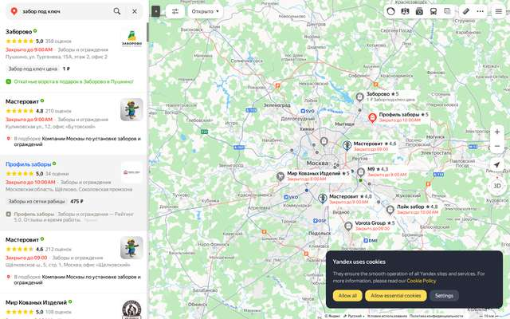</a><figcaption>Яндекс Карты: «забор под ключ»</figcaption></figure><figure class="shot"><a class="zoom" href="img/mp_yandex.ru_maps_otkatnye_vorota_l.jpg" target="_blank" rel="noopener">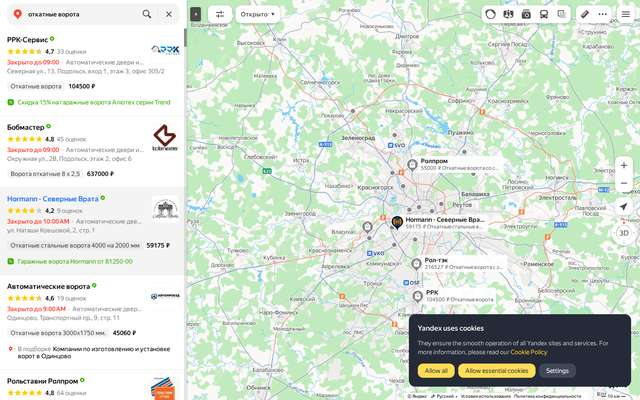</a><figcaption>Яндекс Карты: «откатные ворота»</figcaption></figure><figure class="shot"><a class="zoom" href="img/mp_2gis.ru_search_zabor_pod_klyuch_l.jpg" target="_blank" rel="noopener">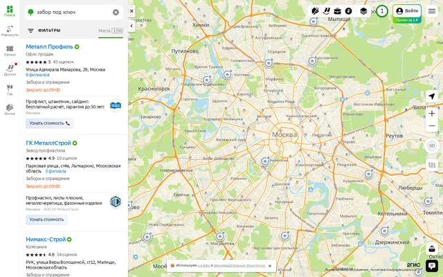</a><figcaption>2ГИС: «забор под ключ»</figcaption></figure></div></section><aside class="obs"><span class="obs-k">Наблюдение</span><p>По всем 4 запросам у всех 10 первых карточек есть реклама; за карты платят 6 из 10 компаний полного разбора. Мастеровит — реклама в 17 из 20 появлений, Заборово — 1-е место по «забор под ключ» с акцией «рама откатных ворот за 1 ₽». По «откатные ворота» реклама у 27 компаний — производители и дилеры ворот, ни одной из 10 заборных.</p></aside><section class="blk"><h3>2ГИС и Яндекс Услуги</h3><p><strong>2ГИС: заборные компании почти не рекламируются.</strong> <span class="tag tag-fact">факт</span> На стр. 1 рубрики «Заборы и ограждения» — 8 рекламных карточек: продавцы профлиста и кровли (Металл Профиль, ГК МеталлСтрой, Grand Line), Нимакс-Строй («Установим любой забор стандартной комплектации без предоплаты»), Ферумсталь (жалюзи), лесобаза, металлоконструкции, стройбаза. Ни одной из 30 компаний брифа. Органические места 9–36 заняты сетевыми магазинами (Лемана Про, Дом Лента, Петрович). По «откатные ворота» — 1 рекламная карточка (Дорхан). У карточек конкурентов, найденных по названию (Заборкин 5,0 / 190 оценок, ЗаводЗаборов.ру 4,6 / 73, ПСК Забор 13 филиалов, Zaboroff, Заборово, Радуга заборов 2,6 / 5), пометки «Реклама» нет.</p><p><strong>Яндекс Услуги: исполнители — частные мастера, деньги — Директ.</strong> <span class="tag tag-fact">факт</span> Среди 110 исполнителей по 4 рыночным запросам 104 — частные лица; продвижение — у 2–4 исполнителей и только на стр. 1. Компании из разбора есть в Услугах карточками организаций (Заборово 442 отзыва, Радуга заборов 527, ПСК Забор 613, Zaboroff 203, Облзабор 161 и 9 карточек поддоменов городов, Мастеровит 64, Завод заборов 4,8 / 24), без продвижения. Продвигается Лига Заборов (облегчённый разбор) — 2-е место по «откатные ворота». На тех же страницах показан Директ: Мастеровит — на 14 из 21 снятой страницы (19 показов), с двумя сайтами (masterovit.ru: «Замеряем толщину металла при Вас! Заводская покраска! Скидка до 24%»; masterovip.ru — отдельный лендинг жалюзи: «Заборы-жалюзи под ключ с гарантией до 5 лет»); Мособлстрой — три сайта (забор-металлический.рф «под ключ за 1 день… от 493 руб/п.м.», zabori-i-vorota.site, zavodzaborov.ru); ИП (sales.prof-zabory.ru, «от 750 ₽ / пог. метр»); Заборово («−50% на монтаж до 30.09» — акция показывается после срока); zabormo.ru («без предоплаты за материал»).</p><p class="note">Объявления Директа конкурентов на страницах Яндекс Услуг (показов в снятых страницах): Мастеровит — 6, metalsystems.ru — 5, Заборово — 3, ПрофЗаборы — 3, zabormo.ru — 2, ЗаводЗаборов — 1.</p></section><aside class="obs"><span class="obs-k">Наблюдение</span><p>2ГИС заборные компании из списка для рекламы не используют: там платят продавцы профлиста и стройбазы. На Яндекс Услугах исполнители — в основном частные мастера (104 из 110), а деньги компаний идут в Директ на тех же страницах.</p></aside><section class="blk"><h3>ВКонтакте, Telegram, MAX</h3><p class="lead">Посты с пометкой «Реклама» на стенах сообществ и посевы в библиотеке SeedHunter (съём 20.10.2026). Таргетированная реклама без поста на стене снаружи не видна.</p><div class="tscroll"><table class="tbl"><thead><tr><th>Дата</th><th>Компания</th><th>Формат</th><th>Текст и оффер</th><th>Лайков</th><th>Ссылка</th></tr></thead><tbody><tr><td>2026-10-19</td><td>МАСТЕРОВИТ</td><td>промопост (фото)</td><td>Новый забор — со скидкой до 28%*; забор под ключ от изготовления до монтажа; гарантия до 5 лет; «Пишите в личные сообщения слово «РАСЧЕТ» — бесплатно посчитаем»</td><td class="n">5</td><td><a href="https://vk.ru/wall-86599547_7616" target="_blank" rel="noopener">пост</a></td></tr><tr><td>2026-10-12</td><td>МАСТЕРОВИТ</td><td>промопост (фото)</td><td>Забор, который выглядит достойно, а стоит разумно: евроштакетник полукруглый Омега 130 мм</td><td class="n">8</td><td><a href="https://vk.ru/wall-86599547_7611" target="_blank" rel="noopener">пост</a></td></tr><tr><td>2026-09-28</td><td>МАСТЕРОВИТ</td><td>промопост (фото)</td><td>Успейте до 04.10! Навесы под ключ со скидкой до 24%</td><td class="n">6</td><td><a href="https://vk.ru/wall-86599547_7604" target="_blank" rel="noopener">пост</a></td></tr><tr><td>2026-09-21</td><td>МАСТЕРОВИТ</td><td>промопост (фото)</td><td>Акция! Скидка 20% на евроштакетник при заказе забора под ключ: Finfold 72 ₽ вместо 91 ₽, Омега 64 ₽ вместо 80 ₽, Олимп 52 ₽ вместо 65 ₽</td><td class="n">6</td><td><a href="https://vk.ru/wall-86599547_7597" target="_blank" rel="noopener">пост</a></td></tr><tr><td>2026-09-14</td><td>МАСТЕРОВИТ</td><td>промопост (фото)</td><td>Акция! Автоматика для откатных ворот за 1 рубль* при заказе забора от 100 м вместе с откатными воротами</td><td class="n">4</td><td><a href="https://vk.ru/wall-86599547_7595" target="_blank" rel="noopener">пост</a></td></tr><tr><td>2026-08-31</td><td>МАСТЕРОВИТ</td><td>промопост (фото)</td><td>Акция! Винтовая свая всего за 1 рубль — забор на винтовых сваях; установка круглый год</td><td class="n">2</td><td><a href="https://vk.ru/wall-86599547_7590" target="_blank" rel="noopener">пост</a></td></tr><tr><td>2026-10-08</td><td>ПРО-ЗАБОР</td><td>промопост (видео)</td><td>текст поста пустой (видео)</td><td class="n">35</td><td>стена vk.ru/pro_zabor_ru, пост 1085</td></tr><tr><td>2026-10-16</td><td>ЗАБОРОВО</td><td>посев в сообществе (маркет-платформа ВК)</td><td>«Первый снег уже скоро… Забор лучше поставить сейчас». Производство и установка ворот, заборов, навесов по МО 18 лет; «Только в октябре откатные ворота всего за 1р, ответив на несколько вопросов» (квиз); выездной…</td><td class="n">8</td><td>SeedHunter (seed.targethunter.ru) → Библиотека рекламы, ключ «откатные ворота» и «заборово»</td></tr><tr><td>2026-10-17</td><td>местная компания (vk.com/milleniumsp, г. Пересвет)</td><td>посев в сообществе</td><td>Изготавливаем и устанавливаем заборы и ворота круглый год; профлист, рабица, евроштакетник, жалюзи; кирпичные столбы, фундамент; откатные ворота, автоматика; договор, гарантия, бесплатный замер; скидки пенсионерам и…</td><td class="n">3</td><td>SeedHunter, ключи «заборы», «евроштакетник»</td></tr></tbody></table></div><figure class="shot"><a class="zoom" href="img/vk_zaborovo_posev.jpg" target="_blank" rel="noopener">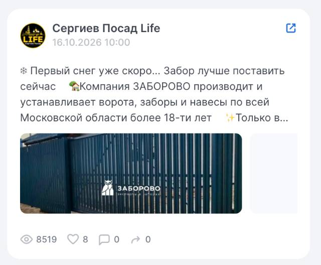</a><figcaption>Посев Заборово 16.10.2026: 8 519 просмотров, оффер «откатные ворота за 1 ₽» через квиз</figcaption></figure><h4>Что снято и что нет</h4><div class="tscroll"><table class="tbl small"><thead><tr><th>Площадка</th><th>Что искали</th><th>Статус</th><th>Причина</th></tr></thead><tbody><tr><td>SeedHunter (seed.targethunter.ru) → Библиотека рекламы / Маркет-платформа</td><td>посевы маркет-платформы ВК</td><td>не снято 21.10</td><td>в браузере пользователя расширение перестало пускать сайты («This site is blocked by your site permissions»), затем отключилось («Browser extension is not connected»); из облака SeedHunter без входа…</td></tr><tr><td>поиск ВК по записям (vk.ru/search/statuses) по доменам masterovit.ru, zaborovo.ru и др.</td><td>посты-реклама в городских пабликах</td><td>не снято</td><td>без входа страница поиска остаётся пустой «Загружается…» с кнопками «Войти / Регистрация»: поиск по записям требует входа; curl получает vk.com/badbrowser.php; браузер…</td></tr><tr><td>стены сообществ, записи с пометкой «Реклама» за 20.07–20.10.2026</td><td>промопосты</td><td>снято 20.10.2026, повторно не снималось</td><td>при съёме 20.10.2026 стены всех 10 просмотрены за 3 месяца: пометка «Реклама» — только у Мастеровита (6 постов 31.08–19.10); у Про-Забора (облегчённый) — 1 видеопост 08.10; новых дней после съёма 20.10 — один</td></tr><tr><td>VK Реклама (таргет без поста на стене)</td><td>таргетированная реклама</td><td>снаружи не наблюдается</td><td>публичной библиотеки объявлений VK Рекламы нет; объявления без публикации на стене снаружи не видны</td></tr><tr><td>TGStat — поиск по публикациям (tgstat.ru/search)</td><td>посевы и упоминания конкурентов в каналах МО</td><td>не снято</td><td>открывается описание тарифов: бесплатный тариф — 20 последних постов за 7 дней и только после входа; вход не выполнялся</td></tr><tr><td>Telemetr (telemetr.me)</td><td>поиск каналов и постов</td><td>не снято</td><td>главная открывается (HTTP 200), страница поиска каналов по адресу /channels/?search= — 404; поиск постов требует входа</td></tr><tr><td>Telegram Ads</td><td>официальные объявления в каналах</td><td>снаружи не наблюдается</td><td>публичной библиотеки объявлений нет</td></tr><tr><td>MAX</td><td>рекламные посты и посевы</td><td>не снято</td><td>поиска по публикациям без входа нет; при съёме 20.10.2026 каналы MAX с контентом найдены только у Мастеровита и Про-Забора</td></tr></tbody></table></div></section><aside class="obs"><span class="obs-k">Наблюдение</span><p>Рекламу во ВК видно у 2 из 10 компаний, механизм повторяется: «элемент за 1 ₽» при заказе забора. Гипотеза авитолога «ВК-таргет и Макс» снаружи не подтверждается и не опровергается — её проверяет собственный тест H4.</p></aside><section class="blk"><h3>Telegram: каналы Мастеровита и Заборкина, июль–октябрь 2026</h3><div class="tiles"><div class="tile"><div class="tile-v">8 из 24</div><div class="tile-l">постов Мастеровита с пометкой «Реклама» и Erid</div></div><div class="tile"><div class="tile-v">153–781</div><div class="tile-l">просмотров на пост у Мастеровита</div></div><div class="tile"><div class="tile-v">15 из 68</div><div class="tile-l">постов Заборкина с полной стоимостью объекта</div></div><div class="tile"><div class="tile-v">395 тыс. ₽</div><div class="tile-l">медиана стоимости объекта у Заборкина (n=15)</div></div></div><details><summary>Все посты: 92</summary><div class="det"><div class="tscroll"><table class="tbl small"><thead><tr><th>Канал</th><th>Просмотров</th><th>Маркировка рекламы</th><th>Стоимость объекта, ₽</th><th>Содержание</th><th>Ссылка</th></tr></thead><tbody><tr><th scope="row">Заборкин<small>2026-10-21</small></th><td class="n">12</td><td>нет</td><td class="n">—</td><td>Забор из серого евроштакетника в шахматном порядке Станьте счастливым обладателем нового забора: 📞 МСК [телефон] 📞 СПБ [телефон] 👉 Скидка 33% на монтаж любого забора, бесплатный эскиз-проект, отложенный монтаж на 6…</td><td><a href="https://t.me/zaborkin_ru/1154" target="_blank" rel="noopener">пост</a></td></tr><tr><th scope="row">Заборкин<small>2026-10-20</small></th><td class="n">20</td><td>нет</td><td class="n">300 880</td><td>Завершили монтаж ограждения из евроштакетника 🌼 📍Выборгский район, Ленинградская область ✅ Длина ограждения — 20 м.п. ✅ Евроштакетник выполнен вертикально в одностороннем порядке ✅ Забор установлен свайным методом ✅…</td><td><a href="https://t.me/zaborkin_ru/1151" target="_blank" rel="noopener">пост</a></td></tr><tr><th scope="row">Заборкин<small>2026-10-18</small></th><td class="n">22</td><td>нет</td><td class="n">—</td><td>Почему заказчики выбирают забор из евроштакетника? Станьте счастливым обладателем нового забора: 📞 МСК [телефон] 📞 СПБ [телефон] 👉 Скидка 33% на монтаж любого забора, бесплатный эскиз-проект, отложенный монтаж на 6…</td><td><a href="https://t.me/zaborkin_ru/1150" target="_blank" rel="noopener">пост</a></td></tr><tr><th scope="row">Заборкин<small>2026-10-17</small></th><td class="n">27</td><td>нет</td><td class="n">—</td><td></td><td><a href="https://t.me/zaborkin_ru/1148" target="_blank" rel="noopener">пост</a></td></tr><tr><th scope="row">Заборкин<small>2026-10-17</small></th><td class="n">28</td><td>нет</td><td class="n">—</td><td></td><td><a href="https://t.me/zaborkin_ru/1149" target="_blank" rel="noopener">пост</a></td></tr><tr><th scope="row">Заборкин<small>2026-10-16</small></th><td class="n">31</td><td>нет</td><td class="n">—</td><td>А как &quot;копите&quot; вы? 👀 Станьте счастливым обладателем нового забора: 📞 МСК [телефон] 📞 СПБ [телефон] 👉 Скидка 33% на монтаж любого забора, бесплатный эскиз-проект, отложенный монтаж на 6 месяцев. Успевайте до конца…</td><td><a href="https://t.me/zaborkin_ru/1147" target="_blank" rel="noopener">пост</a></td></tr><tr><th scope="row">Заборкин<small>2026-10-14</small></th><td class="n">34</td><td>нет</td><td class="n">—</td><td>Въездная группа из сварных секций за 1 090 000 руб. 🔥 Станьте счастливым обладателем нового забора: 📞 МСК [телефон] 📞 СПБ [телефон] 👉 Скидка 33% на монтаж любого забора, бесплатный эскиз-проект, отложенный монтаж на 6…</td><td><a href="https://t.me/zaborkin_ru/1146" target="_blank" rel="noopener">пост</a></td></tr><tr><th scope="row">Заборкин<small>2026-10-13</small></th><td class="n">38</td><td>нет</td><td class="n">1 093 592</td><td>Делимся результатом работ по монтажу откатных ворот из нашего последнего обзора 🤩 📍г. Жуковский, Московская область ✅ Ворота выполнены из сварных секций ✅ Размер въездной группы — 3900х2200 мм ✅ Ворота установлены на…</td><td><a href="https://t.me/zaborkin_ru/1143" target="_blank" rel="noopener">пост</a></td></tr><tr><th scope="row">Заборкин<small>2026-10-11</small></th><td class="n">37</td><td>нет</td><td class="n">—</td><td>В общем, вы знаете, что делать 😉 Станьте счастливым обладателем нового забора: 📞 МСК [телефон] 📞 СПБ [телефон] 👉 Скидка 33% на монтаж любого забора, бесплатный эскиз-проект, отложенный монтаж на 6 месяцев. Успевайте до…</td><td><a href="https://t.me/zaborkin_ru/1142" target="_blank" rel="noopener">пост</a></td></tr><tr><th scope="row">Заборкин<small>2026-10-10</small></th><td class="n">34</td><td>нет</td><td class="n">—</td><td>Въездная группа с откатными воротами и калиткой нестандартного размера Станьте счастливым обладателем нового забора: 📞 МСК [телефон] 📞 СПБ [телефон] 👉 Скидка 33% на монтаж любого забора, бесплатный эскиз-проект…</td><td><a href="https://t.me/zaborkin_ru/1141" target="_blank" rel="noopener">пост</a></td></tr><tr><th scope="row">Заборкин<small>2026-10-09</small></th><td class="n">38</td><td>нет</td><td class="n">—</td><td>Сегодня мы расскажем о масштабном проекте обустройства въездной группы, но не для обычного загородного дома, а для целого научного центра в Московской области. На данном объекте мы выполнили полный комплекс работ «под…</td><td><a href="https://t.me/zaborkin_ru/1140" target="_blank" rel="noopener">пост</a></td></tr><tr><th scope="row">Заборкин<small>2026-10-07</small></th><td class="n">44</td><td>нет</td><td class="n">—</td><td>Забор из евроштакетника на ленточном фундаменте заказчика Станьте счастливым обладателем нового забора: 📞 МСК [телефон] 📞 СПБ [телефон] 👉 Скидка 33% на монтаж любого забора, бесплатный эскиз-проект, отложенный монтаж на…</td><td><a href="https://t.me/zaborkin_ru/1139" target="_blank" rel="noopener">пост</a></td></tr><tr><th scope="row">Заборкин<small>2026-10-06</small></th><td class="n">42</td><td>нет</td><td class="n">261 563</td><td>Завершили монтаж ограждения из евроштакетника 🙌 📍Всеволожский район, Ленинградская область ✅ Длина ограждения — 21 м.п. ✅ Евроштакетник выполнен вертикально в одностороннем порядке ✅ Забор установлен методом бутования ✅…</td><td><a href="https://t.me/zaborkin_ru/1137" target="_blank" rel="noopener">пост</a></td></tr><tr><th scope="row">Заборкин<small>2026-10-04</small></th><td class="n">40</td><td>нет</td><td class="n">—</td><td>Почему важно соблюдать требования по возведению построек на участке? Станьте счастливым обладателем нового забора: 📞 МСК [телефон] 📞 СПБ [телефон] 👉 Скидка 33% на монтаж любого забора, бесплатный эскиз-проект…</td><td><a href="https://t.me/zaborkin_ru/1136" target="_blank" rel="noopener">пост</a></td></tr><tr><th scope="row">Заборкин<small>2026-10-03</small></th><td class="n">48</td><td>нет</td><td class="n">241 100</td><td>Делимся результатом работ по монтажу распашных ворот ⚡ 📍Выборгский район, Ленинградская область ✅ Сварные ворота зашиты поликарбонатом ✅ Размер ворот — 3980х2050 мм ✅ Откатные ворота оснащены автоматикой заказчика ✅ Все…</td><td><a href="https://t.me/zaborkin_ru/1135" target="_blank" rel="noopener">пост</a></td></tr><tr><th scope="row">Заборкин<small>2026-10-01</small></th><td class="n">54</td><td>нет</td><td class="n">—</td><td>Подберем идеальный забор под ваш бюджет и без переплат 👌🏻 Станьте счастливым обладателем нового забора: 📞 МСК [телефон] 📞 СПБ [телефон] 👉 Скидка 33% на монтаж любого забора, бесплатный эскиз-проект, отложенный монтаж на…</td><td><a href="https://t.me/zaborkin_ru/1134" target="_blank" rel="noopener">пост</a></td></tr><tr><th scope="row">Заборкин<small>2026-09-30</small></th><td class="n">45</td><td>нет</td><td class="n">—</td><td>О въездной группе и боковой части забора из евроштакетника Станьте счастливым обладателем нового забора: 📞 МСК [телефон] 📞 СПБ [телефон] 👉 Скидка 33% на монтаж любого забора, бесплатный эскиз-проект, отложенный монтаж…</td><td><a href="https://t.me/zaborkin_ru/1133" target="_blank" rel="noopener">пост</a></td></tr><tr><th scope="row">Заборкин<small>2026-09-29</small></th><td class="n">53</td><td>нет</td><td class="n">683 300</td><td>Делимся результатом работ по монтажу ограждения из нашего последнего обзора 🏡 📍Всеволожский район, Ленинградская область ✅ Длина ограждения — 83 м.п. ✅ С лицевой стороны участка евроштакетник выполнен в шахматном…</td><td><a href="https://t.me/zaborkin_ru/1130" target="_blank" rel="noopener">пост</a></td></tr><tr><th scope="row">Заборкин<small>2026-09-27</small></th><td class="n">50</td><td>нет</td><td class="n">—</td><td>Такому успеху можно и позавидовать 😎 Станьте счастливым обладателем нового забора: 📞 МСК [телефон] 📞 СПБ [телефон] 👉 Скидка 33% на монтаж любого забора, бесплатный эскиз-проект, отложенный монтаж на 6 месяцев. Успевайте…</td><td><a href="https://t.me/zaborkin_ru/1129" target="_blank" rel="noopener">пост</a></td></tr><tr><th scope="row">Заборкин<small>2026-09-25</small></th><td class="n">55</td><td>нет</td><td class="n">—</td><td>Евроштакетник или профлист — что чаще выбирают для участка и почему? 🤔 Сегодня покажем вам забор, который мы установили в одном из СНТ Ленинградской области, а также разберем, почему евроштакетник в цвете RAL 7024 стал…</td><td><a href="https://t.me/zaborkin_ru/1128" target="_blank" rel="noopener">пост</a></td></tr><tr><th scope="row">Заборкин<small>2026-09-24</small></th><td class="n">59</td><td>нет</td><td class="n">—</td><td>Забор из профлиста с распашными воротами. Часть 2 Станьте счастливым обладателем нового забора: 📞 МСК [телефон] 📞 СПБ [телефон] 👉 Скидка 33% на монтаж любого забора, бесплатный эскиз-проект, отложенный монтаж на 6…</td><td><a href="https://t.me/zaborkin_ru/1127" target="_blank" rel="noopener">пост</a></td></tr><tr><th scope="row">Заборкин<small>2026-09-22</small></th><td class="n">64</td><td>нет</td><td class="n">927 834</td><td>Делимся результатом работ по монтажу ограждения из нашего последнего обзора 🤩 📍Приозерский район, Ленинградская область ✅ Евроштакетник выполнен вертикально в шахматном и одностороннем порядке ✅ Длина ограждения — 50…</td><td><a href="https://t.me/zaborkin_ru/1122" target="_blank" rel="noopener">пост</a></td></tr><tr><th scope="row">Заборкин<small>2026-09-21</small></th><td class="n">60</td><td>нет</td><td class="n">—</td><td>Забор из профлиста с распашными воротами. Часть 1 Станьте счастливым обладателем нового забора: 📞 МСК [телефон] 📞 СПБ [телефон] 👉 Скидка 33% на монтаж любого забора, бесплатный эскиз-проект, отложенный монтаж на 6…</td><td><a href="https://t.me/zaborkin_ru/1121" target="_blank" rel="noopener">пост</a></td></tr><tr><th scope="row">Заборкин<small>2026-09-19</small></th><td class="n">55</td><td>нет</td><td class="n">—</td><td>Евроштакетник с откатными воротами и калиткой за 459 000 руб. 🔥 Станьте счастливым обладателем нового забора: 📞 МСК [телефон] 📞 СПБ [телефон] 👉 Скидка 33% на монтаж любого забора, бесплатный эскиз-проект, отложенный…</td><td><a href="https://t.me/zaborkin_ru/1120" target="_blank" rel="noopener">пост</a></td></tr><tr><th scope="row">Заборкин<small>2026-09-18</small></th><td class="n">58</td><td>нет</td><td class="n">—</td><td>Шикарный забор для шикарного участка 🔥 Сегодня мы вновь подготовили для вас обзор ограждения из евроштакетника в стильном светло-сером цвете. Но чем же он примечателен? Сейчас расскажем 😉 ✅ 50 метров забора ✅ Ленточный…</td><td><a href="https://t.me/zaborkin_ru/1119" target="_blank" rel="noopener">пост</a></td></tr><tr><th scope="row">Заборкин<small>2026-09-17</small></th><td class="n">56</td><td>нет</td><td class="n">—</td><td>Просчитались, но где? 🤔 Станьте счастливым обладателем нового забора: 📞 МСК [телефон] 📞 СПБ [телефон] 👉 Скидка 33% на монтаж любого забора, бесплатный эскиз-проект, отложенный монтаж на 6 месяцев. Успевайте до конца…</td><td><a href="https://t.me/zaborkin_ru/1118" target="_blank" rel="noopener">пост</a></td></tr><tr><th scope="row">Заборкин<small>2026-09-15</small></th><td class="n">66</td><td>нет</td><td class="n">459 061</td><td>Делимся результатом работ по монтажу комбинированного ограждения 💫 📍Всеволожский район, Ленинградская область ✅ Забор выполнен из евроштакетника в одностороннем порядке и сетки 3D Гиттер ✅ Длина ограждения — 50 м.п. ✅…</td><td><a href="https://t.me/zaborkin_ru/1113" target="_blank" rel="noopener">пост</a></td></tr><tr><th scope="row">Заборкин<small>2026-09-14</small></th><td class="n">53</td><td>нет</td><td class="n">—</td><td>Об особенностях фасадной части забора из евроштакетника Станьте счастливым обладателем нового забора: 📞 МСК [телефон] 📞 СПБ [телефон] 👉 Скидка 33% на монтаж любого забора, бесплатный эскиз-проект, отложенный монтаж на 6…</td><td><a href="https://t.me/zaborkin_ru/1112" target="_blank" rel="noopener">пост</a></td></tr><tr><th scope="row">Заборкин<small>2026-09-13</small></th><td class="n">57</td><td>нет</td><td class="n">—</td><td>О въездной группе забора из евроштакетника Станьте счастливым обладателем нового забора: 📞 МСК [телефон] 📞 СПБ [телефон] 👉 Скидка 33% на монтаж любого забора, бесплатный эскиз-проект, отложенный монтаж на 6 месяцев.…</td><td><a href="https://t.me/zaborkin_ru/1111" target="_blank" rel="noopener">пост</a></td></tr><tr><th scope="row">Заборкин<small>2026-09-11</small></th><td class="n">58</td><td>нет</td><td class="n">—</td><td>Мы никогда не устанем повторять, что забор из евроштакетника — это бюджетно, надежно и функционально! 🤩 Сегодня [имя] покажет вам один из наших свежих проектов и расскажет: 👉🏻 Как мы решили проблему перепада высот из-за…</td><td><a href="https://t.me/zaborkin_ru/1110" target="_blank" rel="noopener">пост</a></td></tr><tr><th scope="row">Заборкин<small>2026-09-10</small></th><td class="n">61</td><td>нет</td><td class="n">—</td><td>Забор вашей мечты ждет вас в офисе «Заборкин» в Москве по адресу: 📍 Каширское шоссе, вл63к1 📞 [телефон] Напоминаем, что у нас действует акция: 👉🏻 Скидка 33% на монтаж любого забора, бесплатный эскиз-проект, отложенный…</td><td><a href="https://t.me/zaborkin_ru/1109" target="_blank" rel="noopener">пост</a></td></tr><tr><th scope="row">Заборкин<small>2026-09-08</small></th><td class="n">63</td><td>нет</td><td class="n">305 422</td><td>Завершили монтаж ограждения из профлиста 🌱 📍Ломоносовский район, Ленинградская область ✅ Забор выполнен из профлиста С8 ✅ Длина ограждения — 24 м.п. ✅ Забор установлен методом бутования ✅ Ограждение оборудовано…</td><td><a href="https://t.me/zaborkin_ru/1104" target="_blank" rel="noopener">пост</a></td></tr><tr><th scope="row">Заборкин<small>2026-09-07</small></th><td class="n">60</td><td>нет</td><td class="n">—</td><td>Возможно ли установить забор без личного присутствия заказчика? Станьте счастливым обладателем нового забора: 📞 МСК [телефон] 📞 СПБ [телефон] 👉 Скидка 33% на монтаж любого забора, бесплатный эскиз-проект, отложенный…</td><td><a href="https://t.me/zaborkin_ru/1103" target="_blank" rel="noopener">пост</a></td></tr><tr><th scope="row">Заборкин<small>2026-09-05</small></th><td class="n">63</td><td>нет</td><td class="n">—</td><td>А вот и вторая часть заборов по знаку зодиака ✨ Согласны или нет, пишите в комментариях 👇😉 👉 Скидка 33% на монтаж любого забора, бесплатный эскиз-проект, отложенный монтаж на 6 месяцев. Успевайте до конца сентября 2026…</td><td><a href="https://t.me/zaborkin_ru/1097" target="_blank" rel="noopener">пост</a></td></tr><tr><th scope="row">Заборкин<small>2026-09-04</small></th><td class="n">66</td><td>нет</td><td class="n">—</td><td>Почему заказчик решил установить врезную калитку? Станьте счастливым обладателем нового забора: 📞 МСК [телефон] 📞 СПБ [телефон] 👉 Скидка 33% на монтаж любого забора, бесплатный эскиз-проект, отложенный монтаж на 6…</td><td><a href="https://t.me/zaborkin_ru/1096" target="_blank" rel="noopener">пост</a></td></tr><tr><th scope="row">Заборкин<small>2026-09-03</small></th><td class="n">60</td><td>нет</td><td class="n">—</td><td>Забор для участка из коричневого евроштакетника Станьте счастливым обладателем нового забора: 📞 МСК [телефон] 📞 СПБ [телефон] 👉 Скидка 33% на монтаж любого забора, бесплатный эскиз-проект, отложенный монтаж на 6…</td><td><a href="https://t.me/zaborkin_ru/1095" target="_blank" rel="noopener">пост</a></td></tr><tr><th scope="row">Заборкин<small>2026-09-01</small></th><td class="n">62</td><td>нет</td><td class="n">309 000</td><td>Делимся результатом работ по монтажу ограждения из нашего последнего обзора 👍 📍Всеволожский район, Ленинградская область ✅ Длина ограждения — 14 м.п. ✅ Евроштакетник установлен вертикально в шахматном порядке ✅ Забор…</td><td><a href="https://t.me/zaborkin_ru/1092" target="_blank" rel="noopener">пост</a></td></tr><tr><th scope="row">Заборкин<small>2026-08-31</small></th><td class="n">57</td><td>нет</td><td class="n">—</td><td>Какие работы были проделаны перед монтажом ограждения? Станьте счастливым обладателем нового забора: 📞 МСК [телефон] 📞 СПБ [телефон] 👉 Скидка 33% на монтаж любого забора, бесплатный эскиз-проект, отложенный монтаж на 6…</td><td><a href="https://t.me/zaborkin_ru/1091" target="_blank" rel="noopener">пост</a></td></tr><tr><th scope="row">Заборкин<small>2026-08-30</small></th><td class="n">56</td><td>нет</td><td class="n">—</td><td>Как правильно выбрать растения для участка? Станьте счастливым обладателем нового забора: 📞 МСК [телефон] 📞 СПБ [телефон] 👉 Скидка 33% на монтаж любого забора, бесплатный эскиз-проект, отложенный монтаж на 6 месяцев.…</td><td><a href="https://t.me/zaborkin_ru/1090" target="_blank" rel="noopener">пост</a></td></tr><tr><th scope="row">Заборкин<small>2026-08-28</small></th><td class="n">52</td><td>нет</td><td class="n">—</td><td>Узкая дорога, ворота нестандартного размера и заказчик, который находится в другой стране — этот объект точно не из обычных... 👀 Сегодня [имя] покажет вам результат одной из наших крайних работ, а именно забор из…</td><td><a href="https://t.me/zaborkin_ru/1089" target="_blank" rel="noopener">пост</a></td></tr><tr><th scope="row">Заборкин<small>2026-08-27</small></th><td class="n">49</td><td>нет</td><td class="n">—</td><td>О штакетнике производства Grand Line Станьте счастливым обладателем нового забора: 📞 МСК [телефон] 📞 СПБ [телефон] 👉 Скидка 33% на монтаж любого забора, бесплатный эскиз-проект, отложенный монтаж на 6 месяцев. Успевайте…</td><td><a href="https://t.me/zaborkin_ru/1088" target="_blank" rel="noopener">пост</a></td></tr><tr><th scope="row">Заборкин<small>2026-08-25</small></th><td class="n">60</td><td>нет</td><td class="n">395 000</td><td>Завершили монтаж ограждения из профлиста 🌼 📍Курортный район, Ленинградская область ✅ Длина ограждения — 54 м.п. ✅ Забор выполнен из профлиста С8 ✅ Забор установлен методом бутования ✅ Все материалы и комплектующие в…</td><td><a href="https://t.me/zaborkin_ru/1085" target="_blank" rel="noopener">пост</a></td></tr><tr><th scope="row">Заборкин<small>2026-08-24</small></th><td class="n">60</td><td>нет</td><td class="n">—</td><td>В чем отличие данных откатных ворот от других? Станьте счастливым обладателем нового забора: 📞 МСК [телефон] 📞 СПБ [телефон] 👉 Скидка 33% на монтаж любого забора, бесплатный эскиз-проект, отложенный монтаж на 6 месяцев.…</td><td><a href="https://t.me/zaborkin_ru/1084" target="_blank" rel="noopener">пост</a></td></tr><tr><th scope="row">Заборкин<small>2026-08-23</small></th><td class="n">54</td><td>нет</td><td class="n">—</td><td>Что необходимо сделать перед началом строительства дома? Станьте счастливым обладателем нового забора: 📞 МСК [телефон] 📞 СПБ [телефон] 👉 Скидка 33% на монтаж любого забора, бесплатный эскиз-проект, отложенный монтаж на…</td><td><a href="https://t.me/zaborkin_ru/1083" target="_blank" rel="noopener">пост</a></td></tr><tr><th scope="row">Заборкин<small>2026-08-22</small></th><td class="n">48</td><td>нет</td><td class="n">—</td><td>Какой забор подойдет вам по знаку зодиака? ✨ Ставьте ❤️, если хотите продолжение 👉 Скидка 33% на монтаж любого забора, бесплатный эскиз-проект, отложенный монтаж на 6 месяцев. Успевайте до конца августа 2026 года до…</td><td><a href="https://t.me/zaborkin_ru/1077" target="_blank" rel="noopener">пост</a></td></tr><tr><th scope="row">Заборкин<small>2026-08-20</small></th><td class="n">54</td><td>нет</td><td class="n">—</td><td>Вселенная плохого не посоветует 👌🏻 Станьте счастливым обладателем нового забора: 📞 МСК [телефон] 📞 СПБ [телефон] 👉 Скидка 33% на монтаж любого забора, бесплатный эскиз-проект, отложенный монтаж на 6 месяцев. Успевайте…</td><td><a href="https://t.me/zaborkin_ru/1076" target="_blank" rel="noopener">пост</a></td></tr><tr><th scope="row">Заборкин<small>2026-08-19</small></th><td class="n">51</td><td>нет</td><td class="n">—</td><td>О монтаже боковых сторон забора Станьте счастливым обладателем нового забора: 📞 МСК [телефон] 📞 СПБ [телефон] 👉 Скидка 33% на монтаж любого забора, бесплатный эскиз-проект, отложенный монтаж на 6 месяцев. Успевайте до…</td><td><a href="https://t.me/zaborkin_ru/1075" target="_blank" rel="noopener">пост</a></td></tr><tr><th scope="row">Заборкин<small>2026-08-18</small></th><td class="n">54</td><td>нет</td><td class="n">320 000</td><td>Делимся результатом работ по монтажу забора из евроштакетника ☘️ 📍Гатчинский район, Ленинградская область ✅ Длина ограждения — 56 м.п. ✅ Евроштакетник установлен вертикально в одностороннем порядке ✅ Забор установлен…</td><td><a href="https://t.me/zaborkin_ru/1072" target="_blank" rel="noopener">пост</a></td></tr><tr><th scope="row">Заборкин<small>2026-08-16</small></th><td class="n">56</td><td>нет</td><td class="n">—</td><td>Об этапах строительства дома Станьте счастливым обладателем нового забора: 📞 МСК [телефон] 📞 СПБ [телефон] 👉 Скидка 33% на монтаж любого забора, бесплатный эскиз-проект, отложенный монтаж на 6 месяцев. Успевайте до…</td><td><a href="https://t.me/zaborkin_ru/1071" target="_blank" rel="noopener">пост</a></td></tr><tr><th scope="row">Заборкин<small>2026-08-15</small></th><td class="n">51</td><td>нет</td><td class="n">—</td><td>Забор из сварных секций для жилого дома в Санкт-Петербурге Станьте счастливым обладателем нового забора: 📞 МСК [телефон] 📞 СПБ [телефон] 👉 Скидка 33% на монтаж любого забора, бесплатный эскиз-проект, отложенный монтаж…</td><td><a href="https://t.me/zaborkin_ru/1070" target="_blank" rel="noopener">пост</a></td></tr><tr><th scope="row">Заборкин<small>2026-08-14</small></th><td class="n">57</td><td>нет</td><td class="n">—</td><td>Представьте СНТ, где все участки оформлены в едином стиле: дома, фасады, заборы — всё гармонично и без визуального хаоса ✨ Представили? А нам и представлять не нужно! На одном из таких объектов мы установили…</td><td><a href="https://t.me/zaborkin_ru/1069" target="_blank" rel="noopener">пост</a></td></tr><tr><th scope="row">Заборкин<small>2026-08-12</small></th><td class="n">61</td><td>нет</td><td class="n">—</td><td>Доделали существующий забор заказчика Станьте счастливым обладателем нового забора: 📞 МСК [телефон] 📞 СПБ [телефон] 👉 Скидка 33% на монтаж любого забора, бесплатный эскиз-проект, отложенный монтаж на 6 месяцев.…</td><td><a href="https://t.me/zaborkin_ru/1068" target="_blank" rel="noopener">пост</a></td></tr><tr><th scope="row">Заборкин<small>2026-08-11</small></th><td class="n">69</td><td>нет</td><td class="n">1 224 000</td><td>Наша бригада завершила монтаж ограждения из евроштакетника ☀️ 📍Выборгский район, Ленинградская область ✅ Длина ограждения — 180 м.п. ✅ Евроштакетник установлен вертикально в одностороннем порядке ✅ Забор установлен…</td><td><a href="https://t.me/zaborkin_ru/1064" target="_blank" rel="noopener">пост</a></td></tr><tr><th scope="row">Заборкин<small>2026-08-09</small></th><td class="n">70</td><td>нет</td><td class="n">—</td><td>👷 День строителя — это особенный праздник для нашей компании. Мы не понаслышке знаем, что за каждым готовым объектом стоит большой и тяжелый труд команды профессионалов. Проектирование, подготовка, монтаж, внимание к…</td><td><a href="https://t.me/zaborkin_ru/1063" target="_blank" rel="noopener">пост</a></td></tr><tr><th scope="row">Заборкин<small>2026-08-07</small></th><td class="n">65</td><td>нет</td><td class="n">—</td><td>На какие визуальные недостатки стоит обратить внимание перед покупкой участка? Станьте счастливым обладателем нового забора: 📞 МСК [телефон] 📞 СПБ [телефон] 👉 Скидка 33% на монтаж любого забора, бесплатный эскиз-проект…</td><td><a href="https://t.me/zaborkin_ru/1062" target="_blank" rel="noopener">пост</a></td></tr><tr><th scope="row">Заборкин<small>2026-08-05</small></th><td class="n">73</td><td>нет</td><td class="n">—</td><td>ШОК❗️От нас сбежал заказчик... Вот и что мы сделали не так? 🥲 Станьте счастливым обладателем нового забора: 📞 МСК [телефон] 📞 СПБ [телефон] 👉 Скидка 33% на монтаж любого забора, бесплатный эскиз-проект, отложенный…</td><td><a href="https://t.me/zaborkin_ru/1061" target="_blank" rel="noopener">пост</a></td></tr><tr><th scope="row">Заборкин<small>2026-08-04</small></th><td class="n">85</td><td>нет</td><td class="n">596 391</td><td>Делимся результатом работ по монтажу ограждения 🙌 📍Тосненский район, Ленинградская область ✅ Забор выполнен из профлиста С8 ✅ Длина ограждения — 73 м.п. ✅ Забор установлен методом бутования ✅ Ограждение оборудовано…</td><td><a href="https://t.me/zaborkin_ru/1058" target="_blank" rel="noopener">пост</a></td></tr><tr><th scope="row">Заборкин<small>2026-08-03</small></th><td class="n">84</td><td>нет</td><td class="n">—</td><td>Электронный замок для калитки Станьте счастливым обладателем нового забора: 📞 МСК [телефон] 📞 СПБ [телефон] 👉 Скидка 33% на монтаж любого забора, бесплатный эскиз-проект, отложенный монтаж на 6 месяцев. Успевайте до…</td><td><a href="https://t.me/zaborkin_ru/1057" target="_blank" rel="noopener">пост</a></td></tr><tr><th scope="row">Заборкин<small>2026-08-01</small></th><td class="n">84</td><td>нет</td><td class="n">—</td><td>Фундамент для откатных ворот нестандартного размера Станьте счастливым обладателем нового забора: 📞 МСК [телефон] 📞 СПБ [телефон] 👉 Скидка 33% на монтаж любого забора, бесплатный эскиз-проект, отложенный монтаж на 6…</td><td><a href="https://t.me/zaborkin_ru/1056" target="_blank" rel="noopener">пост</a></td></tr><tr><th scope="row">Заборкин<small>2026-07-31</small></th><td class="n">82</td><td>нет</td><td class="n">—</td><td>Сегодняшний обзор необычен сразу по нескольким причинам... 👇🏻 Первая, наш забор предназначен не для коттеджа, дачи или склада. Он находится прямо в городе — у одного из жилых домов Санкт-Петербурга. А еще у него есть…</td><td><a href="https://t.me/zaborkin_ru/1055" target="_blank" rel="noopener">пост</a></td></tr><tr><th scope="row">Заборкин<small>2026-07-29</small></th><td class="n">86</td><td>нет</td><td class="n">—</td><td>Мечтаете о шикарном заборе для своего участка? Звоните 😉👇🏻 📞 МСК [телефон] 📞 СПБ [телефон] 👉 Скидка 33% на монтаж любого забора, бесплатный эскиз-проект, отложенный монтаж на 6 месяцев. Успевайте до конца августа 2026…</td><td><a href="https://t.me/zaborkin_ru/1054" target="_blank" rel="noopener">пост</a></td></tr><tr><th scope="row">Заборкин<small>2026-07-28</small></th><td class="n">84</td><td>нет</td><td class="n">273 570</td><td>Завершили монтаж ограждения во Всеволожском районе Ленинградской области 🌳 ✅ Забор выполнен из профлиста С8 ✅ Длина ограждения — 16 м.п. ✅ Забор установлен методом бутования ✅ Ограждение оборудовано откатными воротами и…</td><td><a href="https://t.me/zaborkin_ru/1051" target="_blank" rel="noopener">пост</a></td></tr><tr><th scope="row">Заборкин<small>2026-07-27</small></th><td class="n">84</td><td>нет</td><td class="n">—</td><td>Забор от компании «Заборкин» — ваша лучшая инвестиция в свой участок 😉 Станьте счастливым обладателем нового забора: 📞 МСК [телефон] 📞 СПБ [телефон] 👉 Скидка 33% на монтаж любого забора, бесплатный эскиз-проект…</td><td><a href="https://t.me/zaborkin_ru/1050" target="_blank" rel="noopener">пост</a></td></tr><tr><th scope="row">Заборкин<small>2026-07-25</small></th><td class="n">82</td><td>нет</td><td class="n">—</td><td>О монтаже забора из евроштакетника Станьте счастливым обладателем нового забора: 📞 МСК [телефон] 📞 СПБ [телефон] 👉 Скидка 33% на монтаж любого забора, бесплатный эскиз-проект, отложенный монтаж на 6 месяцев. Успевайте…</td><td><a href="https://t.me/zaborkin_ru/1049" target="_blank" rel="noopener">пост</a></td></tr><tr><th scope="row">Заборкин<small>2026-07-24</small></th><td class="n">74</td><td>нет</td><td class="n">—</td><td>Принимать работу по монтажу забора тоже нужно правильно 🙌 Многие обращают внимание только на внешний вид, хотя надёжность ограждения зависит от десятков деталей: устойчивости столбов, креплений и обработки материалов. В…</td><td><a href="https://t.me/zaborkin_ru/1047" target="_blank" rel="noopener">пост</a></td></tr><tr><th scope="row">Заборкин<small>2026-07-23</small></th><td class="n">84</td><td>нет</td><td class="n">—</td><td>Если вам тоже «морально страшно», и вы просто хотите, чтобы было красиво, обращайтесь в компанию Заборкин ✔️ Сделаем забор «под ключ» и оградим вас от забот: 📞 МСК [телефон] 📞 СПБ [телефон] 👉 Скидка 33% на монтаж любого…</td><td><a href="https://t.me/zaborkin_ru/1046" target="_blank" rel="noopener">пост</a></td></tr><tr><th scope="row">Заборкин<small>2026-07-21</small></th><td class="n">91</td><td>нет</td><td class="n">459 000</td><td>Делимся с вами фотографиями забора из нашего последнего обзора 🌳 📍Всеволожский район, Ленинградская область ✅ Евроштакетник установлен вертикально в шахматном порядке ✅ Длина ограждения — 30 м.п. ✅ Ограждение…</td><td><a href="https://t.me/zaborkin_ru/1042" target="_blank" rel="noopener">пост</a></td></tr><tr><th scope="row">Заборкин<small>2026-07-20</small></th><td class="n">76</td><td>нет</td><td class="n">—</td><td>Трое автоматических ворот на участке заказчика Станьте счастливым обладателем нового забора: 📞 МСК [телефон] 📞 СПБ [телефон] 👉 Скидка 33% на монтаж любого забора, бесплатный эскиз-проект, отложенный монтаж на 6 месяцев.…</td><td><a href="https://t.me/zaborkin_ru/1041" target="_blank" rel="noopener">пост</a></td></tr><tr><th scope="row">Мастеровит<small>2026-10-19</small></th><td class="n">153</td><td>да (Erid)</td><td class="n">—</td><td>✅Новый забор — со скидкой до 28%* В МАСТЕРОВИТ можно заказать забор под ключ: от изготовления до монтажа на участке. Гарантия ➡️до 5 лет. Пишите слово «РАСЧЕТ», и мы бесплатно посчитаем стоимость забора для вашего…</td><td><a href="https://t.me/masterovit_zabory/1018" target="_blank" rel="noopener">пост</a></td></tr><tr><th scope="row">Мастеровит<small>2026-10-16</small></th><td class="n">260</td><td>нет</td><td class="n">—</td><td>➡️Обычный день в МАСТЕРОВИТ Работают станки, летят искры, готовые изделия отправляются на установку. Показываем будни производства — как всё выглядит изнутри.</td><td><a href="https://t.me/masterovit_zabory/1017" target="_blank" rel="noopener">пост</a></td></tr><tr><th scope="row">Мастеровит<small>2026-10-12</small></th><td class="n">395</td><td>да (Erid)</td><td class="n">—</td><td>➡️Забор, который выглядит достойно, а стоит разумно Евроштакетник полукруглый Омега с широким профилем 130 мм — это современный вид вашего участка без лишних деталей. Ограждение выглядит основательно и чисто. • Гарантия…</td><td><a href="https://t.me/masterovit_zabory/1016" target="_blank" rel="noopener">пост</a></td></tr><tr><th scope="row">Мастеровит<small>2026-10-08</small></th><td class="n">412</td><td>нет</td><td class="n">—</td><td>🎙️ Эксперт на связи — сваи в деле! Рассказываем, когда используют винтовые сваи для забора и какие задачи они решают.</td><td><a href="https://t.me/masterovit_zabory/1015" target="_blank" rel="noopener">пост</a></td></tr><tr><th scope="row">Мастеровит<small>2026-10-06</small></th><td class="n">424</td><td>нет</td><td class="n">—</td><td>Привычный штакетник➡️ в горизонтальном исполнении Делимся фотографиями забора, который изготовила и установила наша команда. 📞[телефон]</td><td><a href="https://t.me/masterovit_zabory/1008" target="_blank" rel="noopener">пост</a></td></tr><tr><th scope="row">Мастеровит<small>2026-10-02</small></th><td class="n">476</td><td>нет</td><td class="n">—</td><td>Что на самом деле сокращает срок службы забора? ➡️Отвечает [имя] [имя] [имя], руководитель департамента продаж МАСТЕРОВИТ с опытом работы в компании более 10 лет. Смотрите ролик — ответ может оказаться не таким…</td><td><a href="https://t.me/masterovit_zabory/1007" target="_blank" rel="noopener">пост</a></td></tr><tr><th scope="row">Мастеровит<small>2026-09-28</small></th><td class="n">528</td><td>да (Erid)</td><td class="n">—</td><td>🔥Успейте до 04.10! Навесы под ключ со скидкой до 24% Осень — лучшее время, чтобы установить навес. Пока нет снега и экстремальных холодов, монтаж проходит быстрее, а весной у вас уже будет готовая парковка или зона…</td><td><a href="https://t.me/masterovit_zabory/1006" target="_blank" rel="noopener">пост</a></td></tr><tr><th scope="row">Мастеровит<small>2026-09-24</small></th><td class="n">496</td><td>нет</td><td class="n">—</td><td>➡️ Часть 8 Ведущий специалист «МАСТЕРОВИТ» [имя] со стажем более 15 лет расскажет о схемах обмана на рынке ограждающих конструкций.</td><td><a href="https://t.me/masterovit_zabory/1005" target="_blank" rel="noopener">пост</a></td></tr><tr><th scope="row">Мастеровит<small>2026-09-21</small></th><td class="n">582</td><td>да (Erid)</td><td class="n">—</td><td>🔥Акция! Скидка 20% на евроштакетник при заказе забора под ключ. Выбирайте свой вариант: ✅Finfold — 72 ₽ вместо 91 ₽. ✅Омега — 64 ₽ вместо 80 ₽. ✅Олимп — 52 ₽ вместо 65 ₽. Перед монтажом наш специалист измерит толщину…</td><td><a href="https://t.me/masterovit_zabory/1004" target="_blank" rel="noopener">пост</a></td></tr><tr><th scope="row">Мастеровит<small>2026-09-17</small></th><td class="n">587</td><td>да (Erid)</td><td class="n">—</td><td>✅Мы снова на выставке Open Village и ждем вас с 18 по 20 сентября! Где: КП «Грин Лаундж», 58 км от МКАД. Стенды: 3.11 и 3.12. Специально для гостей выставки: 🎁 Промокод МАСТЕРОВИТ26 — скидка 20% на входной билет. 🎁На…</td><td><a href="https://t.me/masterovit_zabory/1003" target="_blank" rel="noopener">пост</a></td></tr><tr><th scope="row">Мастеровит<small>2026-09-14</small></th><td class="n">535</td><td>да (Erid)</td><td class="n">—</td><td>🔥Акция! Автоматика для откатных ворот за 1 рубль!* Планируете установить забор? Закажите его у нас от 100 метров вместе с откатными воротами — и привод вы получите всего за символический рубль. ✅В комплекте: •…</td><td><a href="https://t.me/masterovit_zabory/1002" target="_blank" rel="noopener">пост</a></td></tr><tr><th scope="row">Мастеровит<small>2026-09-11</small></th><td class="n">555</td><td>нет</td><td class="n">—</td><td>➡️Часть 7 Ведущий специалист «МАСТЕРОВИТ» [имя] со стажем более 15 лет расскажет о схемах обмана на рынке ограждающих конструкций.</td><td><a href="https://t.me/masterovit_zabory/1001" target="_blank" rel="noopener">пост</a></td></tr><tr><th scope="row">Мастеровит<small>2026-09-07</small></th><td class="n">663</td><td>нет</td><td class="n">—</td><td>✅Делимся фотографиями ограждения, выполненного нашей компанией - забор из евроштакетника Омега полукруглый. Подробная консультация по номеру: 📞[телефон].</td><td><a href="https://t.me/masterovit_zabory/992" target="_blank" rel="noopener">пост</a></td></tr><tr><th scope="row">Мастеровит<small>2026-09-03</small></th><td class="n">683</td><td>нет</td><td class="n">—</td><td>➡️Часть 6 Ведущий специалист «МАСТЕРОВИТ» [имя] со стажем более 15 лет расскажет о схемах обмана на рынке ограждающих конструкций.</td><td><a href="https://t.me/masterovit_zabory/991" target="_blank" rel="noopener">пост</a></td></tr><tr><th scope="row">Мастеровит<small>2026-08-31</small></th><td class="n">618</td><td>да (Erid)</td><td class="n">—</td><td>🔥Акция! Винтовая свая всего за 1 рубль! Закажите забор на винтовых сваях - 1 свая шуруп за 1 рубль. ✅Почему выбирают наши сваи? - Установка возможна круглый год, независимо от погодных условий. - Гарантия — до 5 лет.…</td><td><a href="https://t.me/masterovit_zabory/990" target="_blank" rel="noopener">пост</a></td></tr><tr><th scope="row">Мастеровит<small>2026-08-28</small></th><td class="n">572</td><td>нет</td><td class="n">—</td><td>➡️Делимся адресами наших офисов продаж МАСТЕРОВИТ. Здесь вы можете посмотреть образцы заборов, ворот, калиток и навесов, а также оценить качество материалов перед началом работ. ⚠️Обратите внимание: часть офисов…</td><td><a href="https://t.me/masterovit_zabory/989" target="_blank" rel="noopener">пост</a></td></tr><tr><th scope="row">Мастеровит<small>2026-08-21</small></th><td class="n">616</td><td>нет</td><td class="n">—</td><td>✅ Делимся фотографиями ограждения, выполненного нашей компанией - забор ранчо. Как вам такое решение для ограждения? Подробная консультация по номеру: 📞[телефон].</td><td><a href="https://t.me/masterovit_zabory/980" target="_blank" rel="noopener">пост</a></td></tr><tr><th scope="row">Мастеровит<small>2026-08-12</small></th><td class="n">683</td><td>нет</td><td class="n">—</td><td>➡️Часть 4 Ведущий специалист «МАСТЕРОВИТ» [имя] со стажем более 15 лет расскажет о схемах обмана на рынке ограждающих конструкций.</td><td><a href="https://t.me/masterovit_zabory/978" target="_blank" rel="noopener">пост</a></td></tr><tr><th scope="row">Мастеровит<small>2026-08-07</small></th><td class="n">781</td><td>нет</td><td class="n">—</td><td>✅Делимся фотографиями ограждения, выполненного нашей компанией - забор ранчо. Подробная консультация по номеру: 📞[телефон].</td><td><a href="https://t.me/masterovit_zabory/970" target="_blank" rel="noopener">пост</a></td></tr><tr><th scope="row">Мастеровит<small>2026-08-05</small></th><td class="n">647</td><td>нет</td><td class="n">—</td><td>➡️Часть 3 Ведущий специалист «МАСТЕРОВИТ» [имя] со стажем более 15 лет расскажет о схемах обмана на рынке ограждающих конструкций.</td><td><a href="https://t.me/masterovit_zabory/969" target="_blank" rel="noopener">пост</a></td></tr><tr><th scope="row">Мастеровит<small>2026-08-03</small></th><td class="n">626</td><td>нет</td><td class="n">—</td><td>➡️Часть 2 Ведущий специалист «МАСТЕРОВИТ» [имя] со стажем более 15 лет расскажет о схемах обмана на рынке ограждающих конструкций.</td><td><a href="https://t.me/masterovit_zabory/968" target="_blank" rel="noopener">пост</a></td></tr><tr><th scope="row">Мастеровит<small>2026-07-30</small></th><td class="n">634</td><td>нет</td><td class="n">—</td><td>✅Делимся фото с выставки Open Village 2026.</td><td><a href="https://t.me/masterovit_zabory/957" target="_blank" rel="noopener">пост</a></td></tr><tr><th scope="row">Мастеровит<small>2026-07-24</small></th><td class="n">659</td><td>да (Erid)</td><td class="n">—</td><td>🔥Тренды 2026: заборы и навесы В этом выпуске мы отправляемся на крупнейшую выставку загородной недвижимости Open Village 2026. Мы покажем вам не просто макеты, а реальные конструкции МАСТЕРОВИТ в натуральную величину…</td><td><a href="https://t.me/masterovit_zabory/955" target="_blank" rel="noopener">пост</a></td></tr><tr><th scope="row">Мастеровит<small>2026-07-21</small></th><td class="n">630</td><td>нет</td><td class="n">—</td><td>✅Чтобы итоговая сумма не стала сюрпризом, мы всегда начинаем с выезда специалиста на участок. Это стандартная часть нашей работы перед заключением договора. Что происходит во время встречи: • Специалист делает замер…</td><td><a href="https://t.me/masterovit_zabory/954" target="_blank" rel="noopener">пост</a></td></tr></tbody></table></div></div></details><p class="note">Telegram, публичные ленты каналов t.me/s, все посты с 20.07 по 21.10.2026. Имена сотрудников и телефоны в тексте скрыты. Посевы в чужих каналах снаружи не найдены: TGStat и Telemetr требуют входа, поиск по публичным страницам вернул только собственные каналы.</p></section><aside class="obs"><span class="obs-k">Наблюдение</span><p>У Мастеровита 8 из 24 постов за три месяца — реклама с Erid (треть ленты), остальное — серия «схемы обмана на рынке», ролики с производства, адреса офисов. Механики рекламных постов те же, что на сайте и в Директе: «автоматика за 1 ₽», «свая за 1 ₽», скидки 20–28%, бот «РАСЧЕТ»; отдельно — замер толщины металла при клиенте, без замера можно не оплачивать остаток. Просмотров — 153–781 на пост. Заборкин публикует 68 постов, из них 15 — кейсы с полной стоимостью объекта: 241–1 224 тыс. ₽, медиана 395 тыс. ₽ (в основном Ленинградская область), со скидкой 33% на монтаж и отложенным монтажом на 6 месяцев; просмотров 12–91. Гипотеза для «Дома гирлянд»: формат «кейс + полная смета объекта» закрывает критерий прозрачной цены; у Заборкина он есть, но при таких просмотрах эффект снаружи не виден.</p></aside><section class="blk"><h3>Рекламодатели в выдаче по 9 запросам (Keys.so)</h3><p class="lead">Keys.so, Москва, топ выдачи, 05.09–05.10.2026. Цена клика здесь — прогноз сервиса «Средняя ставка».</p><div class="hb " role="img" aria-label="Рекламодатели в выдаче по запросам"><div class="hb-row" data-tip="установка забора: рекламодатели — raduga-zaborov.ru, liniya-zaborov.ru, masterovit.ru, zabor-z.ru, profi.ru, zaborkin.ru, ni-max.ru, vseinstrumenti.ru, zabor-y-doma.ru"><div class="hb-lab">«установка забора»<small>68 503 запросов · прогноз клика 138 ₽</small></div><div class="hb-track"><div class="hb-line"><span class="hb-bar s1" style="--w:100.00%"></span><span class="hb-val">9 · из списка: Радуга заборов, Мастеровит, Заборкин</span></div></div></div><div class="hb-row" data-tip="забор из профнастила под ключ: рекламодатели — zaboroff.ru, pro-lider.ru, ligazaborov.ru, zavodzaborov.ru, amosproekt.ru, zabor-gard.ru, zabory-deshevo.ru, zabory-prestige.ru"><div class="hb-lab">«забор из профнастила под ключ»<small>9 749 запросов · прогноз клика 20 ₽</small></div><div class="hb-track"><div class="hb-line"><span class="hb-bar s1" style="--w:88.89%"></span><span class="hb-val">8 · из списка: Заборофф, ЗаводЗаборов</span></div></div></div><div class="hb-row" data-tip="забор в московской области: рекламодатели — raduga-zaborov.ru, masterovit.ru, zaboroff.ru, svai-vertikal.ru, zavodzaborov.ru"><div class="hb-lab">«забор в московской области»<small>7 073 запросов · прогноз клика 97 ₽</small></div><div class="hb-track"><div class="hb-line"><span class="hb-bar s1" style="--w:55.56%"></span><span class="hb-val">5 · из списка: Радуга заборов, Мастеровит, Заборофф, ЗаводЗаборов</span></div></div></div><div class="hb-row" data-tip="забор жалюзи: рекламодатели — profmetall50.ru, ferumstal.ru, airo-zabor.ru"><div class="hb-lab">«забор жалюзи»<small>48 854 запросов · прогноз клика 82 ₽</small></div><div class="hb-track"><div class="hb-line"><span class="hb-bar s1" style="--w:33.33%"></span><span class="hb-val">3</span></div></div></div><div class="hb-row" data-tip="забор под ключ: рекламодатели — masterovit.ru, raduga-zaborov.ru"><div class="hb-lab">«забор под ключ»<small>57 377 запросов · прогноз клика 25 ₽</small></div><div class="hb-track"><div class="hb-line"><span class="hb-bar s1" style="--w:22.22%"></span><span class="hb-val">2 · из списка: Мастеровит, Радуга заборов</span></div></div></div><div class="hb-row" data-tip="забор с откатными воротами: рекламодатели — palitrazaborov.ru, заборы-жалюзи-москва.рф"><div class="hb-lab">«забор с откатными воротами»<small>4 825 запросов · прогноз клика 107 ₽</small></div><div class="hb-track"><div class="hb-line"><span class="hb-bar s1" style="--w:22.22%"></span><span class="hb-val">2</span></div></div></div><div class="hb-row" data-tip="монтаж забора цена: рекламодатели — raduga-zaborov.ru, avito.ru"><div class="hb-lab">«монтаж забора цена»<small>2 925 запросов · прогноз клика 17 ₽</small></div><div class="hb-track"><div class="hb-line"><span class="hb-bar s1" style="--w:22.22%"></span><span class="hb-val">2 · из списка: Радуга заборов</span></div></div></div><div class="hb-row" data-tip="заказать забор: рекламодатели — grandline.ru"><div class="hb-lab">«заказать забор»<small>8 980 запросов · прогноз клика 146 ₽</small></div><div class="hb-track"><div class="hb-line"><span class="hb-bar s1" style="--w:11.11%"></span><span class="hb-val">1</span></div></div></div><div class="hb-row" data-tip="забор из евроштакетника: рекламодатели — нет"><div class="hb-lab">«забор из евроштакетника»<small>32 518 запросов · прогноз клика 93 ₽</small></div><div class="hb-track"><div class="hb-line"><span class="hb-miss">рекламодателей в выдаче нет</span></div></div></div></div></section><section class="blk"><h3>Что ещё не снято</h3><div class="w2"><div class="w2-head"><span class="chip-w2">в работе: досъём</span><strong>Директ по 6 компаниям: тексты объявлений</strong></div><p>raduga-zaborov.ru, zaboroff.ru, oblzabor.ru, zaborkin.ru (Директ идёт, тексты не сняты), dostup-zabor.ru и pskzabor.ru (данных нет). Нужен отчёт Keys.so по каждому домену после сброса дневного лимита и Spywords.</p></div><div class="w2"><div class="w2-head"><span class="chip-w2">в работе: досъём</span><strong>Живая выдача Яндекса и скриншоты 5–8 лучших объявлений</strong></div><p>Визитка, фавикон, рейтинг и позиция объявлений без подписки сервисов не видны; выдача Яндекса и снимки объявлений не сняты (браузер был недоступен 21.10).</p></div></section></section><section class="panel" id="trafik" role="tabpanel" aria-labelledby="t-trafik" hidden><header class="ph"><h2>Откуда клиенты</h2><p>Каналы, спрос, SEO, площадки, соцсети</p></header><section class="blk"><h3>Каналы трафика</h3><p class="lead">Доля визитов по каналам, июль–сентябрь 2026, Similarweb, весь мир, оценка. Под названием — визиты за 3 месяца. У четырёх сайтов с пометкой «модель» структура каналов почти одинаковая — вероятно, шаблон модели Similarweb; выводы о них не делаются.</p><div class="legend"><span><i class="sw h1"></i>до 2%</span><span><i class="sw h2"></i>2–5%</span><span><i class="sw h3"></i>5–15%</span><span><i class="sw h4"></i>15–30%</span><span><i class="sw h5"></i>30–50%</span><span><i class="sw h6"></i>50% и выше</span></div><div class="tscroll"><table class="heat"><thead><tr><th class="corner">Компания · визитов за 3 мес.</th><th scope="col">Прямые</th><th scope="col">Поиск, органика</th><th scope="col">Поиск, платный</th><th scope="col">Медийная</th><th scope="col">Соцсети</th><th scope="col">Переходы</th><th scope="col">Почта</th><th scope="col">ИИ-ассистенты</th><th scope="col">Партнёрские</th></tr></thead><tbody><tr><th scope="row">Мастеровит<small>388 817</small></th><td class="h6" data-tip="Мастеровит · Прямые: 63,9% = 248 613 визитов за 3 месяца">63,9%</td><td class="h4" data-tip="Мастеровит · Поиск, органика: 17,7% = 68 917 визитов за 3 месяца">17,7%</td><td class="h1" data-tip="Мастеровит · Поиск, платный: 1,0% = 3 923 визитов за 3 месяца">1,0%</td><td class="h3" data-tip="Мастеровит · Медийная: 14,1% = 54 965 визитов за 3 месяца">14,1%</td><td class="h1" data-tip="Мастеровит · Соцсети: 0,3% = 1 282 визитов за 3 месяца">0,3%</td><td class="h2" data-tip="Мастеровит · Переходы: 2,3% = 8 978 визитов за 3 месяца">2,3%</td><td class="h1" data-tip="Мастеровит · Почта: 0,5% = 1 768 визитов за 3 месяца">0,5%</td><td class="h1" data-tip="Мастеровит · ИИ-ассистенты: 0,1% = 359 визитов за 3 месяца">0,1%</td><td class="h0" data-tip="Мастеровит · Партнёрские: 0,0% = 11 визитов за 3 месяца">0,0%</td></tr><tr><th scope="row">ПрофЗаборы<small>366 903</small></th><td class="h3" data-tip="ПрофЗаборы · Прямые: 7,1% = 25 887 визитов за 3 месяца">7,1%</td><td class="h4" data-tip="ПрофЗаборы · Поиск, органика: 22,0% = 80 854 визитов за 3 месяца">22,0%</td><td class="h3" data-tip="ПрофЗаборы · Поиск, платный: 13,5% = 49 560 визитов за 3 месяца">13,5%</td><td class="h5" data-tip="ПрофЗаборы · Медийная: 46,6% = 170 931 визитов за 3 месяца">46,6%</td><td class="h2" data-tip="ПрофЗаборы · Соцсети: 4,1% = 14 878 визитов за 3 месяца">4,1%</td><td class="h2" data-tip="ПрофЗаборы · Переходы: 2,1% = 7 575 визитов за 3 месяца">2,1%</td><td class="h2" data-tip="ПрофЗаборы · Почта: 4,7% = 17 219 визитов за 3 месяца">4,7%</td><td class="h0" data-tip="ПрофЗаборы · ИИ-ассистенты: 0,0% = 0 визитов за 3 месяца">0,0%</td><td class="h0" data-tip="ПрофЗаборы · Партнёрские: 0,0% = 0 визитов за 3 месяца">0,0%</td></tr><tr><th scope="row">Заборкин<small>113 654</small></th><td class="h4" data-tip="Заборкин · Прямые: 19,5% = 22 198 визитов за 3 месяца">19,5%</td><td class="h6" data-tip="Заборкин · Поиск, органика: 65,9% = 74 894 визитов за 3 месяца">65,9%</td><td class="h1" data-tip="Заборкин · Поиск, платный: 1,6% = 1 848 визитов за 3 месяца">1,6%</td><td class="h2" data-tip="Заборкин · Медийная: 3,0% = 3 463 визитов за 3 месяца">3,0%</td><td class="h1" data-tip="Заборкин · Соцсети: 1,9% = 2 111 визитов за 3 месяца">1,9%</td><td class="h3" data-tip="Заборкин · Переходы: 5,0% = 5 727 визитов за 3 месяца">5,0%</td><td class="h1" data-tip="Заборкин · Почта: 1,0% = 1 099 визитов за 3 месяца">1,0%</td><td class="h1" data-tip="Заборкин · ИИ-ассистенты: 1,9% = 2 214 визитов за 3 месяца">1,9%</td><td class="h1" data-tip="Заборкин · Партнёрские: 0,1% = 101 визитов за 3 месяца">0,1%</td></tr><tr><th scope="row">ЗаводЗаборов<small>96 670</small></th><td class="h4" data-tip="ЗаводЗаборов · Прямые: 16,9% = 16 298 визитов за 3 месяца">16,9%</td><td class="h5" data-tip="ЗаводЗаборов · Поиск, органика: 42,2% = 40 814 визитов за 3 месяца">42,2%</td><td class="h3" data-tip="ЗаводЗаборов · Поиск, платный: 5,1% = 4 959 визитов за 3 месяца">5,1%</td><td class="h4" data-tip="ЗаводЗаборов · Медийная: 21,9% = 21 219 визитов за 3 месяца">21,9%</td><td class="h1" data-tip="ЗаводЗаборов · Соцсети: 1,4% = 1 327 визитов за 3 месяца">1,4%</td><td class="h3" data-tip="ЗаводЗаборов · Переходы: 10,3% = 9 978 визитов за 3 месяца">10,3%</td><td class="h1" data-tip="ЗаводЗаборов · Почта: 1,5% = 1 466 визитов за 3 месяца">1,5%</td><td class="h1" data-tip="ЗаводЗаборов · ИИ-ассистенты: 0,5% = 437 визитов за 3 месяца">0,5%</td><td class="h1" data-tip="ЗаводЗаборов · Партнёрские: 0,2% = 174 визитов за 3 месяца">0,2%</td></tr><tr><th scope="row">Облзабор<small>50 242</small></th><td class="h3" data-tip="Облзабор · Прямые: 9,2% = 4 612 визитов за 3 месяца">9,2%</td><td class="h4" data-tip="Облзабор · Поиск, органика: 15,6% = 7 813 визитов за 3 месяца">15,6%</td><td class="h3" data-tip="Облзабор · Поиск, платный: 10,3% = 5 162 визитов за 3 месяца">10,3%</td><td class="h6" data-tip="Облзабор · Медийная: 56,9% = 28 588 визитов за 3 месяца">56,9%</td><td class="h1" data-tip="Облзабор · Соцсети: 0,7% = 360 визитов за 3 месяца">0,7%</td><td class="h2" data-tip="Облзабор · Переходы: 3,4% = 1 714 визитов за 3 месяца">3,4%</td><td class="h2" data-tip="Облзабор · Почта: 4,0% = 1 992 визитов за 3 месяца">4,0%</td><td class="h0" data-tip="Облзабор · ИИ-ассистенты: 0,0% = 0 визитов за 3 месяца">0,0%</td><td class="h0" data-tip="Облзабор · Партнёрские: 0,0% = 0 визитов за 3 месяца">0,0%</td></tr><tr><th scope="row">Доступные заборы<small>43 758</small></th><td class="h5" data-tip="Доступные заборы · Прямые: 38,2% = 16 728 визитов за 3 месяца">38,2%</td><td class="h5" data-tip="Доступные заборы · Поиск, органика: 35,4% = 15 479 визитов за 3 месяца">35,4%</td><td class="h1" data-tip="Доступные заборы · Поиск, платный: 1,0% = 446 визитов за 3 месяца">1,0%</td><td class="h3" data-tip="Доступные заборы · Медийная: 6,6% = 2 903 визитов за 3 месяца">6,6%</td><td class="h2" data-tip="Доступные заборы · Соцсети: 2,5% = 1 111 визитов за 3 месяца">2,5%</td><td class="h3" data-tip="Доступные заборы · Переходы: 11,8% = 5 182 визитов за 3 месяца">11,8%</td><td class="h2" data-tip="Доступные заборы · Почта: 2,4% = 1 027 визитов за 3 месяца">2,4%</td><td class="h1" data-tip="Доступные заборы · ИИ-ассистенты: 1,7% = 748 визитов за 3 месяца">1,7%</td><td class="h1" data-tip="Доступные заборы · Партнёрские: 0,3% = 134 визитов за 3 месяца">0,3%</td></tr><tr><th scope="row">Заборово<small>37 928 · модель</small></th><td class="h5" data-tip="Заборово · Прямые: 31,9% = 12 104 визитов за 3 месяца">31,9%</td><td class="h4" data-tip="Заборово · Поиск, органика: 24,9% = 9 461 визитов за 3 месяца">24,9%</td><td class="h2" data-tip="Заборово · Поиск, платный: 4,5% = 1 707 визитов за 3 месяца">4,5%</td><td class="h4" data-tip="Заборово · Медийная: 17,4% = 6 579 визитов за 3 месяца">17,4%</td><td class="h2" data-tip="Заборово · Соцсети: 4,2% = 1 606 визитов за 3 месяца">4,2%</td><td class="h3" data-tip="Заборово · Переходы: 9,6% = 3 632 визитов за 3 месяца">9,6%</td><td class="h3" data-tip="Заборово · Почта: 5,5% = 2 097 визитов за 3 месяца">5,5%</td><td class="h1" data-tip="Заборово · ИИ-ассистенты: 1,5% = 567 визитов за 3 месяца">1,5%</td><td class="h1" data-tip="Заборово · Партнёрские: 0,5% = 175 визитов за 3 месяца">0,5%</td></tr><tr><th scope="row">Заборофф<small>21 842 · модель</small></th><td class="h5" data-tip="Заборофф · Прямые: 33,9% = 7 398 визитов за 3 месяца">33,9%</td><td class="h4" data-tip="Заборофф · Поиск, органика: 24,6% = 5 368 визитов за 3 месяца">24,6%</td><td class="h2" data-tip="Заборофф · Поиск, платный: 2,3% = 512 визитов за 3 месяца">2,3%</td><td class="h3" data-tip="Заборофф · Медийная: 14,1% = 3 087 визитов за 3 месяца">14,1%</td><td class="h3" data-tip="Заборофф · Соцсети: 5,2% = 1 146 визитов за 3 месяца">5,2%</td><td class="h3" data-tip="Заборофф · Переходы: 10,9% = 2 383 визитов за 3 месяца">10,9%</td><td class="h3" data-tip="Заборофф · Почта: 5,5% = 1 201 визитов за 3 месяца">5,5%</td><td class="h2" data-tip="Заборофф · ИИ-ассистенты: 2,0% = 447 визитов за 3 месяца">2,0%</td><td class="h1" data-tip="Заборофф · Партнёрские: 1,4% = 299 визитов за 3 месяца">1,4%</td></tr><tr><th scope="row">Радуга заборов<small>13 860 · модель</small></th><td class="h5" data-tip="Радуга заборов · Прямые: 32,8% = 4 548 визитов за 3 месяца">32,8%</td><td class="h4" data-tip="Радуга заборов · Поиск, органика: 26,2% = 3 630 визитов за 3 месяца">26,2%</td><td class="h2" data-tip="Радуга заборов · Поиск, платный: 2,0% = 282 визитов за 3 месяца">2,0%</td><td class="h3" data-tip="Радуга заборов · Медийная: 14,2% = 1 969 визитов за 3 месяца">14,2%</td><td class="h3" data-tip="Радуга заборов · Соцсети: 5,3% = 742 визитов за 3 месяца">5,3%</td><td class="h3" data-tip="Радуга заборов · Переходы: 11,1% = 1 543 визитов за 3 месяца">11,1%</td><td class="h3" data-tip="Радуга заборов · Почта: 5,4% = 748 визитов за 3 месяца">5,4%</td><td class="h2" data-tip="Радуга заборов · ИИ-ассистенты: 2,0% = 280 визитов за 3 месяца">2,0%</td><td class="h1" data-tip="Радуга заборов · Партнёрские: 0,8% = 117 визитов за 3 месяца">0,8%</td></tr><tr><th scope="row">ПСК Забор<small>7 316 · модель</small></th><td class="h5" data-tip="ПСК Забор · Прямые: 34,4% = 2 515 визитов за 3 месяца">34,4%</td><td class="h4" data-tip="ПСК Забор · Поиск, органика: 24,2% = 1 769 визитов за 3 месяца">24,2%</td><td class="h2" data-tip="ПСК Забор · Поиск, платный: 2,0% = 150 визитов за 3 месяца">2,0%</td><td class="h3" data-tip="ПСК Забор · Медийная: 14,7% = 1 077 визитов за 3 месяца">14,7%</td><td class="h3" data-tip="ПСК Забор · Соцсети: 5,2% = 378 визитов за 3 месяца">5,2%</td><td class="h3" data-tip="ПСК Забор · Переходы: 11,2% = 817 визитов за 3 месяца">11,2%</td><td class="h3" data-tip="ПСК Забор · Почта: 5,5% = 400 визитов за 3 месяца">5,5%</td><td class="h1" data-tip="ПСК Забор · ИИ-ассистенты: 2,0% = 145 визитов за 3 месяца">2,0%</td><td class="h1" data-tip="ПСК Забор · Партнёрские: 0,9% = 65 визитов за 3 месяца">0,9%</td></tr></tbody></table></div></section><aside class="obs"><span class="obs-k">Наблюдение</span><p>Работают три разные модели: бренд и прямые заходы (Мастеровит — 63,9% прямых), платные каналы (Облзабор 67,9%, ПрофЗаборы 64,1%), органика (Заборкин — 65,9%). Соцсети дают каждому сайту от 0,3 до 5,4% визитов; Авито, Профи.ру и Яндекс Услуги среди видимых источников переходов не встречаются.</p></aside><section class="blk"><h3>Посещаемость по месяцам</h3><p class="lead">Similarweb, весь мир, оценка.</p><div class="legend"><span><i class="sw y1"></i>июль 2026</span><span><i class="sw y2"></i>август 2026</span><span><i class="sw y3"></i>сентябрь 2026</span></div><div class="hb " role="img" aria-label="Визиты по месяцам"><div class="hb-row"><div class="hb-lab">Мастеровит<small>платные каналы 15,1%</small></div><div class="hb-track"><div class="hb-line"><span class="hb-bar y1" style="--w:82.27%"></span><span class="hb-val">149 020</span></div><div class="hb-line"><span class="hb-bar y2" style="--w:72.87%"></span><span class="hb-val">132 000</span></div><div class="hb-line"><span class="hb-bar y3" style="--w:59.51%"></span><span class="hb-val">107 798</span></div></div></div><div class="hb-row"><div class="hb-lab">ПрофЗаборы<small>платные каналы 64,1%</small></div><div class="hb-track"><div class="hb-line"><span class="hb-bar y1" style="--w:61.79%"></span><span class="hb-val">111 929</span></div><div class="hb-line"><span class="hb-bar y2" style="--w:100.00%"></span><span class="hb-val">181 134</span></div><div class="hb-line"><span class="hb-bar y3" style="--w:40.77%"></span><span class="hb-val">73 841</span></div></div></div><div class="hb-row"><div class="hb-lab">Заборкин<small>платные каналы 4,8%</small></div><div class="hb-track"><div class="hb-line"><span class="hb-bar y1" style="--w:23.65%"></span><span class="hb-val">42 832</span></div><div class="hb-line"><span class="hb-bar y2" style="--w:24.30%"></span><span class="hb-val">44 018</span></div><div class="hb-line"><span class="hb-bar y3" style="--w:14.80%"></span><span class="hb-val">26 804</span></div></div></div><div class="hb-row"><div class="hb-lab">ЗаводЗаборов<small>платные каналы 27,3%</small></div><div class="hb-track"><div class="hb-line"><span class="hb-bar y1" style="--w:24.12%"></span><span class="hb-val">43 686</span></div><div class="hb-line"><span class="hb-bar y2" style="--w:8.10%"></span><span class="hb-val">14 666</span></div><div class="hb-line"><span class="hb-bar y3" style="--w:21.15%"></span><span class="hb-val">38 318</span></div></div></div><div class="hb-row"><div class="hb-lab">Облзабор<small>платные каналы 67,9%</small></div><div class="hb-track"><div class="hb-line"><span class="hb-bar y1" style="--w:5.64%"></span><span class="hb-val">10 219</span></div><div class="hb-line"><span class="hb-bar y2" style="--w:13.21%"></span><span class="hb-val">23 933</span></div><div class="hb-line"><span class="hb-bar y3" style="--w:8.88%"></span><span class="hb-val">16 090</span></div></div></div><div class="hb-row"><div class="hb-lab">Доступные заборы<small>платные каналы 8,1%</small></div><div class="hb-track"><div class="hb-line"><span class="hb-bar y1" style="--w:4.74%"></span><span class="hb-val">8 593</span></div><div class="hb-line"><span class="hb-bar y2" style="--w:13.35%"></span><span class="hb-val">24 189</span></div><div class="hb-line"><span class="hb-bar y3" style="--w:6.06%"></span><span class="hb-val">10 976</span></div></div></div><div class="hb-row"><div class="hb-lab">Заборово<small>платные каналы 22,6%</small></div><div class="hb-track"><div class="hb-line"><span class="hb-bar y1" style="--w:3.89%"></span><span class="hb-val">7 042</span></div><div class="hb-line"><span class="hb-bar y2" style="--w:2.60%"></span><span class="hb-val">4 704</span></div><div class="hb-line"><span class="hb-bar y3" style="--w:14.45%"></span><span class="hb-val">26 181</span></div></div></div><div class="hb-row"><div class="hb-lab">Заборофф<small>платные каналы 17,4%</small></div><div class="hb-track"><div class="hb-line"><span class="hb-bar y1" style="--w:4.61%"></span><span class="hb-val">8 349</span></div><div class="hb-line"><span class="hb-bar y2" style="--w:4.53%"></span><span class="hb-val">8 211</span></div><div class="hb-line"><span class="hb-bar y3" style="--w:2.92%"></span><span class="hb-val">5 282</span></div></div></div><div class="hb-row"><div class="hb-lab">Радуга заборов<small>платные каналы 17,1%</small></div><div class="hb-track"><div class="hb-line"><span class="hb-bar y1" style="--w:2.50%"></span><span class="hb-val">4 520</span></div><div class="hb-line"><span class="hb-bar y2" style="--w:2.82%"></span><span class="hb-val">5 101</span></div><div class="hb-line"><span class="hb-bar y3" style="--w:2.34%"></span><span class="hb-val">4 238</span></div></div></div><div class="hb-row"><div class="hb-lab">ПСК Забор<small>платные каналы 17,6%</small></div><div class="hb-track"><div class="hb-line"><span class="hb-bar y1" style="--w:1.50%"></span><span class="hb-val">2 725</span></div><div class="hb-line"><span class="hb-bar y2" style="--w:1.31%"></span><span class="hb-val">2 380</span></div><div class="hb-line"><span class="hb-bar y3" style="--w:1.22%"></span><span class="hb-val">2 212</span></div></div></div></div></section><aside class="obs"><span class="obs-k">Наблюдение</span><p>У сайтов с долей платных каналов 64–68% посещаемость колеблется в 2,3–2,5 раза за квартал, у органического Заборкина — в 1,6 раза. В сентябре падение есть у всех: часть колебаний даёт сезон.</p></aside><section class="blk"><h3>Спрос и сезонность: «забор под ключ», Москва и МО</h3><div class="tscroll svgwrap"><svg class="svgc" viewBox="0 0 960 300" role="img" aria-label="Частотность «забор под ключ» по месяцам, Москва и МО"><line class="grid" x1="8" x2="952" y1="199.0" y2="199.0"/><line class="grid" x1="8" x2="952" y1="144.0" y2="144.0"/><line class="grid" x1="8" x2="952" y1="89.0" y2="89.0"/><line class="grid" x1="8" x2="952" y1="34.0" y2="34.0"/><line class="axis" x1="8" x2="952" y1="254" y2="254"/><text class="tick" x="22.3" y="270" text-anchor="middle">янв</text><text class="tick yr" x="22.3" y="286" text-anchor="middle">2024</text><path class="bar" d="M13.4,254 L13.4,223.7 Q13.4,219.7 17.4,219.7 L27.2,219.7 Q31.2,219.7 31.2,223.7 L31.2,254 Z" data-tip="янв 2024: 6 024 запросов"/><text class="val" x="22.3" y="213.7" text-anchor="middle">6,0</text><path class="bar" d="M42.0,254 L42.0,202.9 Q42.0,198.9 46.0,198.9 L55.8,198.9 Q59.8,198.9 59.8,202.9 L59.8,254 Z" data-tip="фев 2024: 9 684 запросов"/><text class="tick" x="79.5" y="270" text-anchor="middle">мар</text><path class="bar" d="M70.6,254 L70.6,187.1 Q70.6,183.1 74.6,183.1 L84.4,183.1 Q88.4,183.1 88.4,187.1 L88.4,254 Z" data-tip="мар 2024: 12 463 запросов"/><path class="bar" d="M99.3,254 L99.3,127.6 Q99.3,123.6 103.3,123.6 L113.0,123.6 Q117.0,123.6 117.0,127.6 L117.0,254 Z" data-tip="апр 2024: 22 913 запросов"/><text class="val" x="108.1" y="117.6" text-anchor="middle">22,9</text><text class="tick" x="136.7" y="270" text-anchor="middle">май</text><path class="bar" d="M127.9,254 L127.9,139.9 Q127.9,135.9 131.9,135.9 L141.6,135.9 Q145.6,135.9 145.6,139.9 L145.6,254 Z" data-tip="май 2024: 20 759 запросов"/><path class="bar" d="M156.5,254 L156.5,186.6 Q156.5,182.6 160.5,182.6 L170.2,182.6 Q174.2,182.6 174.2,186.6 L174.2,254 Z" data-tip="июн 2024: 12 542 запросов"/><text class="tick" x="193.9" y="270" text-anchor="middle">июл</text><path class="bar" d="M185.1,254 L185.1,198.9 Q185.1,194.9 189.1,194.9 L198.8,194.9 Q202.8,194.9 202.8,198.9 L202.8,254 Z" data-tip="июл 2024: 10 389 запросов"/><path class="bar" d="M213.7,254 L213.7,191.0 Q213.7,187.0 217.7,187.0 L227.4,187.0 Q231.4,187.0 231.4,191.0 L231.4,254 Z" data-tip="авг 2024: 11 774 запросов"/><text class="tick" x="251.2" y="270" text-anchor="middle">сен</text><path class="bar" d="M242.3,254 L242.3,203.7 Q242.3,199.7 246.3,199.7 L256.0,199.7 Q260.0,199.7 260.0,203.7 L260.0,254 Z" data-tip="сен 2024: 9 545 запросов"/><path class="bar" d="M270.9,254 L270.9,202.4 Q270.9,198.4 274.9,198.4 L284.6,198.4 Q288.6,198.4 288.6,202.4 L288.6,254 Z" data-tip="окт 2024: 9 772 запросов"/><text class="tick" x="308.4" y="270" text-anchor="middle">ноя</text><path class="bar" d="M299.5,254 L299.5,212.4 Q299.5,208.4 303.5,208.4 L313.2,208.4 Q317.2,208.4 317.2,212.4 L317.2,254 Z" data-tip="ноя 2024: 8 008 запросов"/><path class="bar" d="M328.1,254 L328.1,211.6 Q328.1,207.6 332.1,207.6 L341.8,207.6 Q345.8,207.6 345.8,211.6 L345.8,254 Z" data-tip="дек 2024: 8 157 запросов"/><text class="tick" x="365.6" y="270" text-anchor="middle">янв</text><text class="tick yr" x="365.6" y="286" text-anchor="middle">2025</text><path class="bar" d="M356.7,254 L356.7,182.0 Q356.7,178.0 360.7,178.0 L370.4,178.0 Q374.4,178.0 374.4,182.0 L374.4,254 Z" data-tip="янв 2025: 13 353 запросов"/><path class="bar" d="M385.3,254 L385.3,178.4 Q385.3,174.4 389.3,174.4 L399.0,174.4 Q403.0,174.4 403.0,178.4 L403.0,254 Z" data-tip="фев 2025: 13 990 запросов"/><text class="tick" x="422.8" y="270" text-anchor="middle">мар</text><path class="bar" d="M413.9,254 L413.9,143.0 Q413.9,139.0 417.9,139.0 L427.7,139.0 Q431.7,139.0 431.7,143.0 L431.7,254 Z" data-tip="мар 2025: 20 210 запросов"/><path class="bar" d="M442.5,254 L442.5,139.2 Q442.5,135.2 446.5,135.2 L456.3,135.2 Q460.3,135.2 460.3,139.2 L460.3,254 Z" data-tip="апр 2025: 20 873 запросов"/><text class="tick" x="480.0" y="270" text-anchor="middle">май</text><path class="bar" d="M471.1,254 L471.1,55.4 Q471.1,51.4 475.1,51.4 L484.9,51.4 Q488.9,51.4 488.9,55.4 L488.9,254 Z" data-tip="май 2025: 35 602 запросов"/><path class="bar" d="M499.7,254 L499.7,55.6 Q499.7,51.6 503.7,51.6 L513.5,51.6 Q517.5,51.6 517.5,55.6 L517.5,254 Z" data-tip="июн 2025: 35 572 запросов"/><text class="tick" x="537.2" y="270" text-anchor="middle">июл</text><path class="bar" d="M528.3,254 L528.3,54.3 Q528.3,50.3 532.3,50.3 L542.1,50.3 Q546.1,50.3 546.1,54.3 L546.1,254 Z" data-tip="июл 2025: 35 797 запросов"/><text class="val" x="537.2" y="44.3" text-anchor="middle">35,8</text><path class="bar" d="M557.0,254 L557.0,114.6 Q557.0,110.6 561.0,110.6 L570.7,110.6 Q574.7,110.6 574.7,114.6 L574.7,254 Z" data-tip="авг 2025: 25 197 запросов"/><text class="tick" x="594.4" y="270" text-anchor="middle">сен</text><path class="bar" d="M585.6,254 L585.6,180.5 Q585.6,176.5 589.6,176.5 L599.3,176.5 Q603.3,176.5 603.3,180.5 L603.3,254 Z" data-tip="сен 2025: 13 612 запросов"/><path class="bar" d="M614.2,254 L614.2,203.0 Q614.2,199.0 618.2,199.0 L627.9,199.0 Q631.9,199.0 631.9,203.0 L631.9,254 Z" data-tip="окт 2025: 9 661 запросов"/><text class="tick" x="651.6" y="270" text-anchor="middle">ноя</text><path class="bar" d="M642.8,254 L642.8,219.3 Q642.8,215.3 646.8,215.3 L656.5,215.3 Q660.5,215.3 660.5,219.3 L660.5,254 Z" data-tip="ноя 2025: 6 808 запросов"/><path class="bar" d="M671.4,254 L671.4,239.4 Q671.4,235.4 675.4,235.4 L685.1,235.4 Q689.1,235.4 689.1,239.4 L689.1,254 Z" data-tip="дек 2025: 3 267 запросов"/><text class="val" x="680.2" y="229.4" text-anchor="middle">3,3</text><text class="tick" x="708.8" y="270" text-anchor="middle">янв</text><text class="tick yr" x="708.8" y="286" text-anchor="middle">2026</text><path class="bar" d="M700.0,254 L700.0,237.5 Q700.0,233.5 704.0,233.5 L713.7,233.5 Q717.7,233.5 717.7,237.5 L717.7,254 Z" data-tip="янв 2026: 3 607 запросов"/><text class="val" x="708.8" y="227.5" text-anchor="middle">3,6</text><path class="bar" d="M728.6,254 L728.6,234.6 Q728.6,230.6 732.6,230.6 L742.3,230.6 Q746.3,230.6 746.3,234.6 L746.3,254 Z" data-tip="фев 2026: 4 116 запросов"/><text class="tick" x="766.1" y="270" text-anchor="middle">мар</text><path class="bar" d="M757.2,254 L757.2,199.5 Q757.2,195.5 761.2,195.5 L770.9,195.5 Q774.9,195.5 774.9,199.5 L774.9,254 Z" data-tip="мар 2026: 10 282 запросов"/><path class="bar" d="M785.8,254 L785.8,139.1 Q785.8,135.1 789.8,135.1 L799.5,135.1 Q803.5,135.1 803.5,139.1 L803.5,254 Z" data-tip="апр 2026: 20 898 запросов"/><text class="tick" x="823.3" y="270" text-anchor="middle">май</text><path class="bar" d="M814.4,254 L814.4,134.1 Q814.4,130.1 818.4,130.1 L828.1,130.1 Q832.1,130.1 832.1,134.1 L832.1,254 Z" data-tip="май 2026: 21 768 запросов"/><text class="val" x="823.3" y="124.1" text-anchor="middle">21,8</text><path class="bar" d="M843.0,254 L843.0,171.1 Q843.0,167.1 847.0,167.1 L856.7,167.1 Q860.7,167.1 860.7,171.1 L860.7,254 Z" data-tip="июн 2026: 15 274 запросов"/><text class="tick" x="880.5" y="270" text-anchor="middle">июл</text><path class="bar" d="M871.6,254 L871.6,169.1 Q871.6,165.1 875.6,165.1 L885.4,165.1 Q889.4,165.1 889.4,169.1 L889.4,254 Z" data-tip="июл 2026: 15 619 запросов"/><path class="bar" d="M900.2,254 L900.2,161.5 Q900.2,157.5 904.2,157.5 L914.0,157.5 Q918.0,157.5 918.0,161.5 L918.0,254 Z" data-tip="авг 2026: 16 953 запросов"/><text class="tick" x="937.7" y="270" text-anchor="middle">сен</text><path class="bar" d="M928.8,254 L928.8,180.8 Q928.8,176.8 932.8,176.8 L942.6,176.8 Q946.6,176.8 946.6,180.8 L946.6,254 Z" data-tip="сен 2026: 13 560 запросов"/><polyline class="trend " fill="none" points="22.3,174.1 50.9,173.7 79.5,173.3 108.1,173.0 136.7,172.6 165.3,172.2 193.9,171.9 222.5,171.5 251.2,171.1 279.8,170.7 308.4,170.4 337.0,170.0 365.6,169.6 394.2,169.2 422.8,168.9 451.4,168.5 480.0,168.1 508.6,167.7 537.2,167.4 565.8,167.0 594.4,166.6 623.0,166.3 651.6,165.9 680.2,165.5 708.8,165.1 737.5,164.8 766.1,164.4 794.7,164.0 823.3,163.6 851.9,163.3 880.5,162.9 909.1,162.5 937.7,162.1"/><polyline class="trend tlog" fill="none" points="22.3,191.1 50.9,184.9 79.5,181.3 108.1,178.7 136.7,176.8 165.3,175.1 193.9,173.8 222.5,172.6 251.2,171.5 279.8,170.6 308.4,169.7 337.0,168.9 365.6,168.2 394.2,167.6 422.8,166.9 451.4,166.4 480.0,165.8 508.6,165.3 537.2,164.8 565.8,164.4 594.4,163.9 623.0,163.5 651.6,163.1 680.2,162.8 708.8,162.4 737.5,162.0 766.1,161.7 794.7,161.4 823.3,161.1 851.9,160.8 880.5,160.5 909.1,160.2 937.7,159.9"/></svg></div><p class="note"><span class="lg-line"></span>линейный тренд · <span class="lg-line tlog"></span>логарифмический тренд · R² 0,01 и 0,02: тренды объясняют малую часть колебаний, направление считается по скользящей сумме за 12 месяцев — не определяется (R² &lt; 0,3)</p><h4>«Откатные ворота», Москва и МО</h4><div class="tscroll svgwrap"><svg class="svgc" viewBox="0 0 960 300" role="img" aria-label="Частотность «откатные ворота» по месяцам, Москва и МО"><line class="grid" x1="8" x2="952" y1="199.0" y2="199.0"/><line class="grid" x1="8" x2="952" y1="144.0" y2="144.0"/><line class="grid" x1="8" x2="952" y1="89.0" y2="89.0"/><line class="grid" x1="8" x2="952" y1="34.0" y2="34.0"/><line class="axis" x1="8" x2="952" y1="254" y2="254"/><text class="tick" x="22.3" y="270" text-anchor="middle">янв</text><text class="tick yr" x="22.3" y="286" text-anchor="middle">2024</text><path class="bar" d="M13.4,254 L13.4,184.3 Q13.4,180.3 17.4,180.3 L27.2,180.3 Q31.2,180.3 31.2,184.3 L31.2,254 Z" data-tip="янв 2024: 42 119 запросов"/><text class="val" x="22.3" y="174.3" text-anchor="middle">42,1</text><path class="bar" d="M42.0,254 L42.0,179.1 Q42.0,175.1 46.0,175.1 L55.8,175.1 Q59.8,175.1 59.8,179.1 L59.8,254 Z" data-tip="фев 2024: 45 115 запросов"/><text class="tick" x="79.5" y="270" text-anchor="middle">мар</text><path class="bar" d="M70.6,254 L70.6,164.2 Q70.6,160.2 74.6,160.2 L84.4,160.2 Q88.4,160.2 88.4,164.2 L88.4,254 Z" data-tip="мар 2024: 53 609 запросов"/><path class="bar" d="M99.3,254 L99.3,121.8 Q99.3,117.8 103.3,117.8 L113.0,117.8 Q117.0,117.8 117.0,121.8 L117.0,254 Z" data-tip="апр 2024: 77 850 запросов"/><text class="tick" x="136.7" y="270" text-anchor="middle">май</text><path class="bar" d="M127.9,254 L127.9,100.0 Q127.9,96.0 131.9,96.0 L141.6,96.0 Q145.6,96.0 145.6,100.0 L145.6,254 Z" data-tip="май 2024: 90 339 запросов"/><text class="val" x="136.7" y="90.0" text-anchor="middle">90,3</text><path class="bar" d="M156.5,254 L156.5,128.7 Q156.5,124.7 160.5,124.7 L170.2,124.7 Q174.2,124.7 174.2,128.7 L174.2,254 Z" data-tip="июн 2024: 73 921 запросов"/><text class="tick" x="193.9" y="270" text-anchor="middle">июл</text><path class="bar" d="M185.1,254 L185.1,124.9 Q185.1,120.9 189.1,120.9 L198.8,120.9 Q202.8,120.9 202.8,124.9 L202.8,254 Z" data-tip="июл 2024: 76 074 запросов"/><path class="bar" d="M213.7,254 L213.7,121.2 Q213.7,117.2 217.7,117.2 L227.4,117.2 Q231.4,117.2 231.4,121.2 L231.4,254 Z" data-tip="авг 2024: 78 203 запросов"/><text class="tick" x="251.2" y="270" text-anchor="middle">сен</text><path class="bar" d="M242.3,254 L242.3,134.6 Q242.3,130.6 246.3,130.6 L256.0,130.6 Q260.0,130.6 260.0,134.6 L260.0,254 Z" data-tip="сен 2024: 70 565 запросов"/><path class="bar" d="M270.9,254 L270.9,144.2 Q270.9,140.2 274.9,140.2 L284.6,140.2 Q288.6,140.2 288.6,144.2 L288.6,254 Z" data-tip="окт 2024: 65 065 запросов"/><text class="tick" x="308.4" y="270" text-anchor="middle">ноя</text><path class="bar" d="M299.5,254 L299.5,158.2 Q299.5,154.2 303.5,154.2 L313.2,154.2 Q317.2,154.2 317.2,158.2 L317.2,254 Z" data-tip="ноя 2024: 57 046 запросов"/><path class="bar" d="M328.1,254 L328.1,174.3 Q328.1,170.3 332.1,170.3 L341.8,170.3 Q345.8,170.3 345.8,174.3 L345.8,254 Z" data-tip="дек 2024: 47 847 запросов"/><text class="tick" x="365.6" y="270" text-anchor="middle">янв</text><text class="tick yr" x="365.6" y="286" text-anchor="middle">2025</text><path class="bar" d="M356.7,254 L356.7,166.4 Q356.7,162.4 360.7,162.4 L370.4,162.4 Q374.4,162.4 374.4,166.4 L374.4,254 Z" data-tip="янв 2025: 52 359 запросов"/><path class="bar" d="M385.3,254 L385.3,143.0 Q385.3,139.0 389.3,139.0 L399.0,139.0 Q403.0,139.0 403.0,143.0 L403.0,254 Z" data-tip="фев 2025: 65 751 запросов"/><text class="tick" x="422.8" y="270" text-anchor="middle">мар</text><path class="bar" d="M413.9,254 L413.9,143.0 Q413.9,139.0 417.9,139.0 L427.7,139.0 Q431.7,139.0 431.7,143.0 L431.7,254 Z" data-tip="мар 2025: 65 735 запросов"/><path class="bar" d="M442.5,254 L442.5,141.0 Q442.5,137.0 446.5,137.0 L456.3,137.0 Q460.3,137.0 460.3,141.0 L460.3,254 Z" data-tip="апр 2025: 66 888 запросов"/><text class="tick" x="480.0" y="270" text-anchor="middle">май</text><path class="bar" d="M471.1,254 L471.1,105.1 Q471.1,101.1 475.1,101.1 L484.9,101.1 Q488.9,101.1 488.9,105.1 L488.9,254 Z" data-tip="май 2025: 87 418 запросов"/><path class="bar" d="M499.7,254 L499.7,61.9 Q499.7,57.9 503.7,57.9 L513.5,57.9 Q517.5,57.9 517.5,61.9 L517.5,254 Z" data-tip="июн 2025: 112 099 запросов"/><text class="tick" x="537.2" y="270" text-anchor="middle">июл</text><path class="bar" d="M528.3,254 L528.3,61.0 Q528.3,57.0 532.3,57.0 L542.1,57.0 Q546.1,57.0 546.1,61.0 L546.1,254 Z" data-tip="июл 2025: 112 614 запросов"/><text class="val" x="537.2" y="51.0" text-anchor="middle">112,6</text><path class="bar" d="M557.0,254 L557.0,89.5 Q557.0,85.5 561.0,85.5 L570.7,85.5 Q574.7,85.5 574.7,89.5 L574.7,254 Z" data-tip="авг 2025: 96 310 запросов"/><text class="tick" x="594.4" y="270" text-anchor="middle">сен</text><path class="bar" d="M585.6,254 L585.6,121.6 Q585.6,117.6 589.6,117.6 L599.3,117.6 Q603.3,117.6 603.3,121.6 L603.3,254 Z" data-tip="сен 2025: 77 974 запросов"/><path class="bar" d="M614.2,254 L614.2,146.5 Q614.2,142.5 618.2,142.5 L627.9,142.5 Q631.9,142.5 631.9,146.5 L631.9,254 Z" data-tip="окт 2025: 63 731 запросов"/><text class="tick" x="651.6" y="270" text-anchor="middle">ноя</text><path class="bar" d="M642.8,254 L642.8,174.7 Q642.8,170.7 646.8,170.7 L656.5,170.7 Q660.5,170.7 660.5,174.7 L660.5,254 Z" data-tip="ноя 2025: 47 640 запросов"/><path class="bar" d="M671.4,254 L671.4,191.8 Q671.4,187.8 675.4,187.8 L685.1,187.8 Q689.1,187.8 689.1,191.8 L689.1,254 Z" data-tip="дек 2025: 37 828 запросов"/><text class="val" x="680.2" y="181.8" text-anchor="middle">37,8</text><text class="tick" x="708.8" y="270" text-anchor="middle">янв</text><text class="tick yr" x="708.8" y="286" text-anchor="middle">2026</text><path class="bar" d="M700.0,254 L700.0,181.4 Q700.0,177.4 704.0,177.4 L713.7,177.4 Q717.7,177.4 717.7,181.4 L717.7,254 Z" data-tip="янв 2026: 43 779 запросов"/><text class="val" x="708.8" y="171.4" text-anchor="middle">43,8</text><path class="bar" d="M728.6,254 L728.6,178.9 Q728.6,174.9 732.6,174.9 L742.3,174.9 Q746.3,174.9 746.3,178.9 L746.3,254 Z" data-tip="фев 2026: 45 190 запросов"/><text class="tick" x="766.1" y="270" text-anchor="middle">мар</text><path class="bar" d="M757.2,254 L757.2,157.6 Q757.2,153.6 761.2,153.6 L770.9,153.6 Q774.9,153.6 774.9,157.6 L774.9,254 Z" data-tip="мар 2026: 57 407 запросов"/><path class="bar" d="M785.8,254 L785.8,135.0 Q785.8,131.0 789.8,131.0 L799.5,131.0 Q803.5,131.0 803.5,135.0 L803.5,254 Z" data-tip="апр 2026: 70 336 запросов"/><text class="tick" x="823.3" y="270" text-anchor="middle">май</text><path class="bar" d="M814.4,254 L814.4,123.5 Q814.4,119.5 818.4,119.5 L828.1,119.5 Q832.1,119.5 832.1,123.5 L832.1,254 Z" data-tip="май 2026: 76 860 запросов"/><path class="bar" d="M843.0,254 L843.0,123.1 Q843.0,119.1 847.0,119.1 L856.7,119.1 Q860.7,119.1 860.7,123.1 L860.7,254 Z" data-tip="июн 2026: 77 097 запросов"/><text class="tick" x="880.5" y="270" text-anchor="middle">июл</text><path class="bar" d="M871.6,254 L871.6,90.4 Q871.6,86.4 875.6,86.4 L885.4,86.4 Q889.4,86.4 889.4,90.4 L889.4,254 Z" data-tip="июл 2026: 95 794 запросов"/><path class="bar" d="M900.2,254 L900.2,54.3 Q900.2,50.3 904.2,50.3 L914.0,50.3 Q918.0,50.3 918.0,54.3 L918.0,254 Z" data-tip="авг 2026: 116 442 запросов"/><text class="val" x="909.1" y="44.3" text-anchor="middle">116,4</text><text class="tick" x="937.7" y="270" text-anchor="middle">сен</text><path class="bar" d="M928.8,254 L928.8,99.0 Q928.8,95.0 932.8,95.0 L942.6,95.0 Q946.6,95.0 946.6,99.0 L946.6,254 Z" data-tip="сен 2026: 90 905 запросов"/><polyline class="trend " fill="none" points="22.3,145.9 50.9,145.0 79.5,144.0 108.1,143.0 136.7,142.0 165.3,141.0 193.9,140.0 222.5,139.0 251.2,138.0 279.8,137.0 308.4,136.0 337.0,135.0 365.6,134.0 394.2,133.0 422.8,132.0 451.4,131.1 480.0,130.1 508.6,129.1 537.2,128.1 565.8,127.1 594.4,126.1 623.0,125.1 651.6,124.1 680.2,123.1 708.8,122.1 737.5,121.1 766.1,120.1 794.7,119.1 823.3,118.2 851.9,117.2 880.5,116.2 909.1,115.2 937.7,114.2"/><polyline class="trend tlog" fill="none" points="22.3,162.9 50.9,154.0 79.5,148.9 108.1,145.2 136.7,142.4 165.3,140.1 193.9,138.1 222.5,136.4 251.2,134.9 279.8,133.6 308.4,132.3 337.0,131.2 365.6,130.2 394.2,129.3 422.8,128.4 451.4,127.6 480.0,126.8 508.6,126.1 537.2,125.4 565.8,124.7 594.4,124.1 623.0,123.5 651.6,123.0 680.2,122.4 708.8,121.9 737.5,121.4 766.1,120.9 794.7,120.5 823.3,120.0 851.9,119.6 880.5,119.2 909.1,118.8 937.7,118.4"/></svg></div><p class="note"><span class="lg-line"></span>линейный тренд · <span class="lg-line tlog"></span>логарифмический тренд · R² 0,07 и 0,09: тренды объясняют малую часть колебаний, направление считается по скользящей сумме за 12 месяцев — не определяется (R² &lt; 0,3)</p><h4>Четыре запроса рынка: сезон и динамика</h4><div class="tscroll"><table class="tbl small"><thead><tr><th>Запрос</th><th>В месяц, среднее за 12 мес.</th><th>Сентябрь 2026</th><th>Май / январь 2026</th><th>Ноябрь / сентябрь 2025</th><th>Янв–сен 2026 к 2025</th><th>Янв–сен 2026 к 2024</th><th>Остальная Россия: янв–сен 2026 к 2025</th><th>Доля Москвы и МО в России, окт 2025 — сен 2026</th><th>То же годом раньше</th></tr></thead><tbody><tr><th scope="row">забор под ключ</th><td class="n">11 818</td><td class="n">13 560</td><td class="n">×6,0</td><td class="n">50%</td><td class="n">−43,0%</td><td class="n">+5,2%</td><td class="n">+17,3%</td><td class="n">30,4%</td><td class="n">45,4%</td></tr><tr><th scope="row">установка забора</th><td class="n">13 579</td><td class="n">15 121</td><td class="n">×4,9</td><td class="n">48%</td><td class="n">−42,6%</td><td class="n">−25,7%</td><td class="n">не снято</td><td class="n">не снято</td><td class="n">не снято</td></tr><tr><th scope="row">забор из профнастила</th><td class="n">10 585</td><td class="n">12 412</td><td class="n">×5,1</td><td class="n">46%</td><td class="n">−52,0%</td><td class="n">−49,5%</td><td class="n">+16,5%</td><td class="n">17,1%</td><td class="n">32,2%</td></tr><tr><th scope="row">откатные ворота</th><td class="n">68 584</td><td class="n">90 905</td><td class="n">×1,8</td><td class="n">61%</td><td class="n">−8,6%</td><td class="n">+10,9%</td><td class="n">+15,3%</td><td class="n">22,4%</td><td class="n">26,7%</td></tr></tbody></table></div><p class="note">Значения на столбцах — тысячи запросов. Вордстат, «Динамика», по месяцам, январь 2024 — сентябрь 2026, Москва и область, все устройства; выгрузка 21.10.2026. «Остальная Россия» — регион «Россия, кроме Москвы и области»; по «установка забора» он не выгружался.</p><p class="note">Сверка с Keys.so: широкая частотность «забор под ключ» в базе «Москва» за сентябрь 2026 — 57 377, Вордстат по Москве и области — 13 560. Отношение Keys.so к Вордстату по месяцам — от 1,6 до 4,2; год к году источники расходятся по знаку (май 2026 к маю 2025: Keys.so +31,0%, Вордстат −39,0%). В отчёте взят Вордстат как первоисточник; динамика 2026 года к 2025-му — оценка. Ёмкость кликов медиаплана = широкая частотность Keys.so × 0,248, что близко к Вордстату (расхождение 5–12%), сезонный множитель 0,51–0,70 совпадает с Вордстатом (ноябрь / сентябрь 2025 — 0,50), поэтому медиаплан не меняется.</p></section><aside class="obs"><span class="obs-k">Наблюдение</span><p>«Забор под ключ», Москва и МО: май / январь — ×3,4 в 2024 году, ×2,7 в 2025-м и ×6,0 в 2026-м; ноябрь — 84% и 50% сентября, декабрь — 85% и 24% (2024 и 2025 годы). «Откатные ворота» ровнее: май / январь ×1,7–2,1, ноябрь — 61–81% сентября, пик — август 2026 (116 442). В 2025 году «забор под ключ» в Москве и МО вырос сильнее, чем в остальной России (+84,5% против +30,2% за январь–сентябрь). В 2026-м по трём заборным запросам Москва и МО — −42,6%…−52,0% к 2025-му при +16,5%…+17,3% в остальной России, по воротам −8,6% против +15,3%; доля Москвы и МО в России по «забор под ключ» за 12 месяцев — 30,4% против 45,4% годом раньше. Причина не установлена, Keys.so даёт по тем же месяцам другой знак, вывод о сжатии рынка не делается; бренд-спрос Мастеровита за год не упал. Тест в ноябре–декабре идёт на спаде: по заборам запросов меньше сентябрьских, ворота проседают слабее.</p></aside><section class="blk"><h3>Бренд-спрос и география спроса</h3><h4>Бренд-спрос 10 конкурентов</h4><p>Вордстат, «Динамика», помесячно, январь 2024 — сентябрь 2026, Москва и область. Справа — среднее в месяц за последние 12 месяцев и доля в сумме 10 брендов. Год к году — октябрь 2025 — сентябрь 2026 против октября 2024 — сентября 2025.</p><div class="hb " role="img" aria-label="Бренд-спрос 10 конкурентов, запросов в месяц"><div class="hb-row"><div class="hb-lab">мастеровит<small>Мастеровит · за год +4,0%</small></div><div class="hb-track"><div class="hb-line"><span class="hb-bar s1" style="--w:100.00%"></span><span class="hb-val">13 701 в месяц · 70,3%</span></div></div></div><div class="hb-row" data-tip="запрос частично общий (ищут любой завод заборов), бренд-доля завышена"><div class="hb-lab">завод заборов<small>ЗаводЗаборов · за год −7,5%</small></div><div class="hb-track"><div class="hb-line"><span class="hb-bar s1" style="--w:18.96%"></span><span class="hb-val">2 598 в месяц · 13,3%</span></div></div></div><div class="hb-row"><div class="hb-lab">заборово<small>Заборово · за год +38,6%</small></div><div class="hb-track"><div class="hb-line"><span class="hb-bar s1" style="--w:8.12%"></span><span class="hb-val">1 112 в месяц · 5,7%</span></div></div></div><div class="hb-row"><div class="hb-lab">радуга заборов<small>Радуга заборов · за год +21,0%</small></div><div class="hb-track"><div class="hb-line"><span class="hb-bar s1" style="--w:4.23%"></span><span class="hb-val">579 в месяц · 3,0%</span></div></div></div><div class="hb-row"><div class="hb-lab">профзаборы<small>ПрофЗаборы · за год +8,4%</small></div><div class="hb-track"><div class="hb-line"><span class="hb-bar s1" style="--w:2.54%"></span><span class="hb-val">348 в месяц · 1,8%</span></div></div></div><div class="hb-row"><div class="hb-lab">заборофф<small>Заборофф · за год +12,6%</small></div><div class="hb-track"><div class="hb-line"><span class="hb-bar s1" style="--w:2.43%"></span><span class="hb-val">333 в месяц · 1,7%</span></div></div></div><div class="hb-row"><div class="hb-lab">пск забор<small>ПСК Забор · за год −14,8%</small></div><div class="hb-track"><div class="hb-line"><span class="hb-bar s1" style="--w:2.09%"></span><span class="hb-val">286 в месяц · 1,5%</span></div></div></div><div class="hb-row"><div class="hb-lab">заборкин<small>Заборкин · за год −15,2%</small></div><div class="hb-track"><div class="hb-line"><span class="hb-bar s1" style="--w:1.73%"></span><span class="hb-val">237 в месяц · 1,2%</span></div></div></div><div class="hb-row" data-tip="всплески 2025-02, 2025-06, 2025-07, 2025-08, 2025-09 (больше 5 медиан) исключены из «год к году без всплесков» и тренда"><div class="hb-lab">облзабор<small>Облзабор · за год −94,5% (всплески 2025 года)</small></div><div class="hb-track"><div class="hb-line"><span class="hb-bar s1" style="--w:1.23%"></span><span class="hb-val">169 в месяц · 0,9%</span></div></div></div><div class="hb-row" data-tip="запрос частично общий («доступные» = недорогие), бренд-доля завышена"><div class="hb-lab">доступные заборы<small>Доступные заборы · за год −37,3%</small></div><div class="hb-track"><div class="hb-line"><span class="hb-bar s1" style="--w:0.96%"></span><span class="hb-val">132 в месяц · 0,7%</span></div></div></div></div><h4>Мастеровит: бренд-спрос по месяцам и тренды</h4><div class="tscroll svgwrap"><svg class="svgc" viewBox="0 0 960 300" role="img" aria-label="Бренд-спрос «мастеровит» по месяцам, Москва и МО"><line class="grid" x1="8" x2="952" y1="199.0" y2="199.0"/><line class="grid" x1="8" x2="952" y1="144.0" y2="144.0"/><line class="grid" x1="8" x2="952" y1="89.0" y2="89.0"/><line class="grid" x1="8" x2="952" y1="34.0" y2="34.0"/><line class="axis" x1="8" x2="952" y1="254" y2="254"/><text class="tick" x="22.3" y="270" text-anchor="middle">янв</text><text class="tick yr" x="22.3" y="286" text-anchor="middle">2024</text><path class="bar" d="M13.4,254 L13.4,215.6 Q13.4,211.6 17.4,211.6 L27.2,211.6 Q31.2,211.6 31.2,215.6 L31.2,254 Z" data-tip="янв 2024: 4 900 запросов"/><path class="bar" d="M42.0,254 L42.0,209.1 Q42.0,205.1 46.0,205.1 L55.8,205.1 Q59.8,205.1 59.8,209.1 L59.8,254 Z" data-tip="фев 2024: 5 654 запросов"/><text class="tick" x="79.5" y="270" text-anchor="middle">мар</text><path class="bar" d="M70.6,254 L70.6,184.4 Q70.6,180.4 74.6,180.4 L84.4,180.4 Q88.4,180.4 88.4,184.4 L88.4,254 Z" data-tip="мар 2024: 8 509 запросов"/><path class="bar" d="M99.3,254 L99.3,91.2 Q99.3,87.2 103.3,87.2 L113.0,87.2 Q117.0,87.2 117.0,91.2 L117.0,254 Z" data-tip="апр 2024: 19 274 запросов"/><text class="tick" x="136.7" y="270" text-anchor="middle">май</text><path class="bar" d="M127.9,254 L127.9,83.4 Q127.9,79.4 131.9,79.4 L141.6,79.4 Q145.6,79.4 145.6,83.4 L145.6,254 Z" data-tip="май 2024: 20 180 запросов"/><text class="val" x="136.7" y="73.4" text-anchor="middle">20,2</text><path class="bar" d="M156.5,254 L156.5,100.7 Q156.5,96.7 160.5,96.7 L170.2,96.7 Q174.2,96.7 174.2,100.7 L174.2,254 Z" data-tip="июн 2024: 18 174 запросов"/><text class="tick" x="193.9" y="270" text-anchor="middle">июл</text><path class="bar" d="M185.1,254 L185.1,103.7 Q185.1,99.7 189.1,99.7 L198.8,99.7 Q202.8,99.7 202.8,103.7 L202.8,254 Z" data-tip="июл 2024: 17 828 запросов"/><path class="bar" d="M213.7,254 L213.7,126.8 Q213.7,122.8 217.7,122.8 L227.4,122.8 Q231.4,122.8 231.4,126.8 L231.4,254 Z" data-tip="авг 2024: 15 159 запросов"/><text class="tick" x="251.2" y="270" text-anchor="middle">сен</text><path class="bar" d="M242.3,254 L242.3,138.2 Q242.3,134.2 246.3,134.2 L256.0,134.2 Q260.0,134.2 260.0,138.2 L260.0,254 Z" data-tip="сен 2024: 13 848 запросов"/><path class="bar" d="M270.9,254 L270.9,155.2 Q270.9,151.2 274.9,151.2 L284.6,151.2 Q288.6,151.2 288.6,155.2 L288.6,254 Z" data-tip="окт 2024: 11 883 запросов"/><text class="tick" x="308.4" y="270" text-anchor="middle">ноя</text><path class="bar" d="M299.5,254 L299.5,181.6 Q299.5,177.6 303.5,177.6 L313.2,177.6 Q317.2,177.6 317.2,181.6 L317.2,254 Z" data-tip="ноя 2024: 8 833 запросов"/><path class="bar" d="M328.1,254 L328.1,220.3 Q328.1,216.3 332.1,216.3 L341.8,216.3 Q345.8,216.3 345.8,220.3 L345.8,254 Z" data-tip="дек 2024: 4 362 запросов"/><text class="val" x="337.0" y="210.3" text-anchor="middle">4,4</text><text class="tick" x="365.6" y="270" text-anchor="middle">янв</text><text class="tick yr" x="365.6" y="286" text-anchor="middle">2025</text><path class="bar" d="M356.7,254 L356.7,203.9 Q356.7,199.9 360.7,199.9 L370.4,199.9 Q374.4,199.9 374.4,203.9 L374.4,254 Z" data-tip="янв 2025: 6 253 запросов"/><path class="bar" d="M385.3,254 L385.3,182.9 Q385.3,178.9 389.3,178.9 L399.0,178.9 Q403.0,178.9 403.0,182.9 L403.0,254 Z" data-tip="фев 2025: 8 677 запросов"/><text class="tick" x="422.8" y="270" text-anchor="middle">мар</text><path class="bar" d="M413.9,254 L413.9,126.2 Q413.9,122.2 417.9,122.2 L427.7,122.2 Q431.7,122.2 431.7,126.2 L431.7,254 Z" data-tip="мар 2025: 15 232 запросов"/><path class="bar" d="M442.5,254 L442.5,121.3 Q442.5,117.3 446.5,117.3 L456.3,117.3 Q460.3,117.3 460.3,121.3 L460.3,254 Z" data-tip="апр 2025: 15 793 запросов"/><text class="tick" x="480.0" y="270" text-anchor="middle">май</text><path class="bar" d="M471.1,254 L471.1,115.5 Q471.1,111.5 475.1,111.5 L484.9,111.5 Q488.9,111.5 488.9,115.5 L488.9,254 Z" data-tip="май 2025: 16 463 запросов"/><path class="bar" d="M499.7,254 L499.7,99.9 Q499.7,95.9 503.7,95.9 L513.5,95.9 Q517.5,95.9 517.5,99.9 L517.5,254 Z" data-tip="июн 2025: 18 268 запросов"/><text class="val" x="508.6" y="89.9" text-anchor="middle">18,3</text><text class="tick" x="537.2" y="270" text-anchor="middle">июл</text><path class="bar" d="M528.3,254 L528.3,106.0 Q528.3,102.0 532.3,102.0 L542.1,102.0 Q546.1,102.0 546.1,106.0 L546.1,254 Z" data-tip="июл 2025: 17 572 запросов"/><path class="bar" d="M557.0,254 L557.0,111.3 Q557.0,107.3 561.0,107.3 L570.7,107.3 Q574.7,107.3 574.7,111.3 L574.7,254 Z" data-tip="авг 2025: 16 951 запросов"/><text class="tick" x="594.4" y="270" text-anchor="middle">сен</text><path class="bar" d="M585.6,254 L585.6,103.8 Q585.6,99.8 589.6,99.8 L599.3,99.8 Q603.3,99.8 603.3,103.8 L603.3,254 Z" data-tip="сен 2025: 17 820 запросов"/><path class="bar" d="M614.2,254 L614.2,144.0 Q614.2,140.0 618.2,140.0 L627.9,140.0 Q631.9,140.0 631.9,144.0 L631.9,254 Z" data-tip="окт 2025: 13 171 запросов"/><text class="tick" x="651.6" y="270" text-anchor="middle">ноя</text><path class="bar" d="M642.8,254 L642.8,191.2 Q642.8,187.2 646.8,187.2 L656.5,187.2 Q660.5,187.2 660.5,191.2 L660.5,254 Z" data-tip="ноя 2025: 7 724 запросов"/><path class="bar" d="M671.4,254 L671.4,217.3 Q671.4,213.3 675.4,213.3 L685.1,213.3 Q689.1,213.3 689.1,217.3 L689.1,254 Z" data-tip="дек 2025: 4 701 запросов"/><text class="val" x="680.2" y="207.3" text-anchor="middle">4,7</text><text class="tick" x="708.8" y="270" text-anchor="middle">янв</text><text class="tick yr" x="708.8" y="286" text-anchor="middle">2026</text><path class="bar" d="M700.0,254 L700.0,221.6 Q700.0,217.6 704.0,217.6 L713.7,217.6 Q717.7,217.6 717.7,221.6 L717.7,254 Z" data-tip="янв 2026: 4 201 запросов"/><text class="val" x="708.8" y="211.6" text-anchor="middle">4,2</text><path class="bar" d="M728.6,254 L728.6,211.9 Q728.6,207.9 732.6,207.9 L742.3,207.9 Q746.3,207.9 746.3,211.9 L746.3,254 Z" data-tip="фев 2026: 5 332 запросов"/><text class="tick" x="766.1" y="270" text-anchor="middle">мар</text><path class="bar" d="M757.2,254 L757.2,169.1 Q757.2,165.1 761.2,165.1 L770.9,165.1 Q774.9,165.1 774.9,169.1 L774.9,254 Z" data-tip="мар 2026: 10 274 запросов"/><path class="bar" d="M785.8,254 L785.8,95.1 Q785.8,91.1 789.8,91.1 L799.5,91.1 Q803.5,91.1 803.5,95.1 L803.5,254 Z" data-tip="апр 2026: 18 822 запросов"/><text class="tick" x="823.3" y="270" text-anchor="middle">май</text><path class="bar" d="M814.4,254 L814.4,54.3 Q814.4,50.3 818.4,50.3 L828.1,50.3 Q832.1,50.3 832.1,54.3 L832.1,254 Z" data-tip="май 2026: 23 542 запросов"/><text class="val" x="823.3" y="44.3" text-anchor="middle">23,5</text><path class="bar" d="M843.0,254 L843.0,80.3 Q843.0,76.3 847.0,76.3 L856.7,76.3 Q860.7,76.3 860.7,80.3 L860.7,254 Z" data-tip="июн 2026: 20 535 запросов"/><text class="tick" x="880.5" y="270" text-anchor="middle">июл</text><path class="bar" d="M871.6,254 L871.6,83.6 Q871.6,79.6 875.6,79.6 L885.4,79.6 Q889.4,79.6 889.4,83.6 L889.4,254 Z" data-tip="июл 2026: 20 154 запросов"/><path class="bar" d="M900.2,254 L900.2,82.9 Q900.2,78.9 904.2,78.9 L914.0,78.9 Q918.0,78.9 918.0,82.9 L918.0,254 Z" data-tip="авг 2026: 20 234 запросов"/><text class="tick" x="937.7" y="270" text-anchor="middle">сен</text><path class="bar" d="M928.8,254 L928.8,121.9 Q928.8,117.9 932.8,117.9 L942.6,117.9 Q946.6,117.9 946.6,121.9 L946.6,254 Z" data-tip="сен 2026: 15 727 запросов"/><polyline class="trend " fill="none" points="22.3,157.5 50.9,156.3 79.5,155.0 108.1,153.7 136.7,152.4 165.3,151.1 193.9,149.9 222.5,148.6 251.2,147.3 279.8,146.0 308.4,144.7 337.0,143.5 365.6,142.2 394.2,140.9 422.8,139.6 451.4,138.3 480.0,137.0 508.6,135.8 537.2,134.5 565.8,133.2 594.4,131.9 623.0,130.6 651.6,129.4 680.2,128.1 708.8,126.8 737.5,125.5 766.1,124.2 794.7,122.9 823.3,121.7 851.9,120.4 880.5,119.1 909.1,117.8 937.7,116.5"/><polyline class="trend tlog" fill="none" points="22.3,177.1 50.9,166.3 79.5,160.0 108.1,155.6 136.7,152.1 165.3,149.3 193.9,146.9 222.5,144.8 251.2,143.0 279.8,141.3 308.4,139.8 337.0,138.5 365.6,137.2 394.2,136.1 422.8,135.0 451.4,134.0 480.0,133.1 508.6,132.2 537.2,131.3 565.8,130.5 594.4,129.8 623.0,129.1 651.6,128.4 680.2,127.7 708.8,127.1 737.5,126.5 766.1,125.9 794.7,125.3 823.3,124.8 851.9,124.2 880.5,123.7 909.1,123.2 937.7,122.8"/></svg></div><p class="note"><span class="lg-line"></span>линейный тренд · <span class="lg-line tlog"></span>логарифмический тренд · R² 0,06 и 0,07: тренды объясняют малую часть колебаний, направление считается по скользящей сумме за 12 месяцев — рост (слабый, R² 0,3–0,5)</p><p class="note">Линейный тренд y = a + b·t, логарифмический y = a + b·ln(t), t — номер месяца (1 = январь 2024). У сырого ряда R² низкий из-за сезона, поэтому направление бренда определяется по скользящей сумме за 12 месяцев: в ней сезон взаимно гасится.</p><details><summary>Таблица: бренд-спрос, тренд и выручка на брендовый запрос</summary><div class="det"><div class="tscroll"><table class="tbl small"><thead><tr><th>Бренд</th><th>Запросов за 12 мес. (окт 2025 — сен 2026)</th><th>Сентябрь 2026</th><th>Год к году</th><th>Тренд (скользящая сумма 12 мес.)</th><th>Выручка на брендовый запрос / оценка выручки 2025</th><th>Пометка</th></tr></thead><tbody><tr><th scope="row">мастеровит<small>masterovit.ru</small></th><td class="n">164 417</td><td class="n">15 727</td><td class="n">+4,0%</td><td>рост (слабый, R² 0,3–0,5); наклон 0,30% в месяц</td><td>16 383 ₽ на запрос (ГИР БО)</td><td>—</td></tr><tr><th scope="row">завод заборов<small>zavodzaborov.ru</small></th><td class="n">31 179</td><td class="n">3 420</td><td class="n">−7,5%</td><td>падение (устойчивый, R² ≥ 0,5); наклон -1,07% в месяц</td><td>14 682 ₽ на запрос (ГИР БО)</td><td>запрос частично общий (ищут любой завод заборов), бренд-доля завышена</td></tr><tr><th scope="row">заборово<small>zaborovo.ru</small></th><td class="n">13 343</td><td class="n">1 273</td><td class="n">+38,6%</td><td>рост (устойчивый, R² ≥ 0,5); наклон 1,30% в месяц</td><td>15 730 ₽ на запрос (ГИР БО)</td><td>—</td></tr><tr><th scope="row">радуга заборов<small>raduga-zaborov.ru</small></th><td class="n">6 949</td><td class="n">680</td><td class="n">+21,0%</td><td>не определяется (R² &lt; 0,3); наклон -0,78% в месяц</td><td>79–210 млн ₽ (медиана 91 млн ₽) — оценка</td><td>—</td></tr><tr><th scope="row">профзаборы<small>prof-zabory.ru</small></th><td class="n">4 181</td><td class="n">488</td><td class="n">+8,4%</td><td>не определяется (R² &lt; 0,3); наклон 0,25% в месяц</td><td>49–131 млн ₽ (медиана 57 млн ₽) — оценка</td><td>—</td></tr><tr><th scope="row">заборофф<small>zaboroff.ru</small></th><td class="n">3 996</td><td class="n">357</td><td class="n">+12,6%</td><td>не определяется (R² &lt; 0,3); наклон 0,00% в месяц</td><td>13 047 ₽ на запрос (ГИР БО)</td><td>—</td></tr><tr><th scope="row">пск забор<small>pskzabor.ru</small></th><td class="n">3 426</td><td class="n">209</td><td class="n">−14,8%</td><td>рост (слабый, R² 0,3–0,5); за последние 12 мес. к предыдущим — обратный знак; наклон 1,98% в месяц</td><td>12 850 ₽ на запрос (ГИР БО)</td><td>—</td></tr><tr><th scope="row">заборкин<small>zaborkin.ru</small></th><td class="n">2 843</td><td class="n">210</td><td class="n">−15,2%</td><td>падение (устойчивый, R² ≥ 0,5); наклон -1,14% в месяц</td><td>33 944 ₽ на запрос (ГИР БО)</td><td>—</td></tr><tr><th scope="row">облзабор<small>oblzabor.ru</small></th><td class="n">2 031</td><td class="n">208</td><td class="n">−94,5%</td><td>не определяется (всплески 2025 года); наклон 4,00% в месяц</td><td>23–60 млн ₽ (медиана 26 млн ₽) — оценка</td><td>всплески 2025-02, 2025-06, 2025-07, 2025-08, 2025-09 (больше 5 медиан) исключены из «год к году без всплесков» и тренда</td></tr><tr><th scope="row">доступные заборы<small>dostup-zabor.ru</small></th><td class="n">1 583</td><td class="n">146</td><td class="n">−37,3%</td><td>падение (устойчивый, R² ≥ 0,5); наклон -2,07% в месяц</td><td>33–87 млн ₽ (медиана 38 млн ₽) — оценка</td><td>запрос частично общий («доступные» = недорогие), бренд-доля завышена</td></tr></tbody></table></div><p class="note">Выручка на брендовый запрос = выручка ООО за 2025 год (ГИР БО) / бренд-запросы за 2025 год по Москве и МО. Для ИП отчётности нет, выручка оценена как бренд-запросы × выручка на запрос у пяти ООО без Мастеровита. Ограничения: бренд-запросы взяты только по Москве и МО, выручка — по всем регионам и товарам компании; «завод заборов» и «доступные заборы» частично общие запросы.</p></div></details><h4>Где в МО ищут: округа</h4><p>Вордстат, «Регионы», 20.09–20.10.2026, все устройства. Длина столбца — число запросов за месяц; после точки — доля в сумме «Москва и область». Индекс интереса — насколько чаще среднего по России жители округа задают этот запрос (100% — как в среднем).</p><div class="grid2"><div><h4>«Забор под ключ»</h4><div class="hb " role="img" aria-label="Округа МО: забор под ключ"><div class="hb-row"><div class="hb-lab">Раменский район<small>индекс интереса 448%</small></div><div class="hb-track"><div class="hb-line"><span class="hb-bar s1" style="--w:100.00%"></span><span class="hb-val">541 · 4,1%</span></div></div></div><div class="hb-row"><div class="hb-lab">Одинцовский район<small>индекс интереса 213%</small></div><div class="hb-track"><div class="hb-line"><span class="hb-bar s1" style="--w:70.24%"></span><span class="hb-val">380 · 2,9%</span></div></div></div><div class="hb-row"><div class="hb-lab">Люберцы<small>индекс интереса 195%</small></div><div class="hb-track"><div class="hb-line"><span class="hb-bar s1" style="--w:60.81%"></span><span class="hb-val">329 · 2,5%</span></div></div></div><div class="hb-row"><div class="hb-lab">Истра<small>индекс интереса 339%</small></div><div class="hb-track"><div class="hb-line"><span class="hb-bar s1" style="--w:51.76%"></span><span class="hb-val">280 · 2,1%</span></div></div></div><div class="hb-row"><div class="hb-lab">Пушкинский район<small>индекс интереса 210%</small></div><div class="hb-track"><div class="hb-line"><span class="hb-bar s1" style="--w:44.18%"></span><span class="hb-val">239 · 1,8%</span></div></div></div><div class="hb-row"><div class="hb-lab">Дмитровский<small>индекс интереса 288%</small></div><div class="hb-track"><div class="hb-line"><span class="hb-bar s1" style="--w:40.48%"></span><span class="hb-val">219 · 1,7%</span></div></div></div><div class="hb-row"><div class="hb-lab">Наро-Фоминский<small>индекс интереса 310%</small></div><div class="hb-track"><div class="hb-line"><span class="hb-bar s1" style="--w:38.26%"></span><span class="hb-val">207 · 1,6%</span></div></div></div><div class="hb-row"><div class="hb-lab">Мытищи<small>индекс интереса 145%</small></div><div class="hb-track"><div class="hb-line"><span class="hb-bar s1" style="--w:38.08%"></span><span class="hb-val">206 · 1,6%</span></div></div></div><div class="hb-row"><div class="hb-lab">Богородский<small>индекс интереса 244%</small></div><div class="hb-track"><div class="hb-line"><span class="hb-bar s1" style="--w:37.52%"></span><span class="hb-val">203 · 1,5%</span></div></div></div><div class="hb-row"><div class="hb-lab">Красногорск<small>индекс интереса 159%</small></div><div class="hb-track"><div class="hb-line"><span class="hb-bar s1" style="--w:36.97%"></span><span class="hb-val">200 · 1,5%</span></div></div></div><div class="hb-row"><div class="hb-lab">Ленинский район<small>индекс интереса 162%</small></div><div class="hb-track"><div class="hb-line"><span class="hb-bar s1" style="--w:36.60%"></span><span class="hb-val">198 · 1,5%</span></div></div></div><div class="hb-row"><div class="hb-lab">Солнечногорский район<small>индекс интереса 290%</small></div><div class="hb-track"><div class="hb-line"><span class="hb-bar s1" style="--w:36.60%"></span><span class="hb-val">198 · 1,5%</span></div></div></div></div></div><div><h4>«Откатные ворота»</h4><div class="hb " role="img" aria-label="Округа МО: откатные ворота"><div class="hb-row"><div class="hb-lab">Раменский район<small>индекс интереса 266%</small></div><div class="hb-track"><div class="hb-line"><span class="hb-bar s1" style="--w:100.00%"></span><span class="hb-val">3 186 · 3,8%</span></div></div></div><div class="hb-row"><div class="hb-lab">Одинцовский район<small>индекс интереса 142%</small></div><div class="hb-track"><div class="hb-line"><span class="hb-bar s1" style="--w:79.28%"></span><span class="hb-val">2 526 · 3,0%</span></div></div></div><div class="hb-row"><div class="hb-lab">Истра<small>индекс интереса 280%</small></div><div class="hb-track"><div class="hb-line"><span class="hb-bar s1" style="--w:71.81%"></span><span class="hb-val">2 288 · 2,7%</span></div></div></div><div class="hb-row"><div class="hb-lab">Чехов<small>индекс интереса 370%</small></div><div class="hb-track"><div class="hb-line"><span class="hb-bar s1" style="--w:66.64%"></span><span class="hb-val">2 123 · 2,5%</span></div></div></div><div class="hb-row"><div class="hb-lab">Дмитровский<small>индекс интереса 281%</small></div><div class="hb-track"><div class="hb-line"><span class="hb-bar s1" style="--w:66.42%"></span><span class="hb-val">2 116 · 2,5%</span></div></div></div><div class="hb-row"><div class="hb-lab">Богородский<small>индекс интереса 256%</small></div><div class="hb-track"><div class="hb-line"><span class="hb-bar s1" style="--w:66.16%"></span><span class="hb-val">2 108 · 2,5%</span></div></div></div><div class="hb-row"><div class="hb-lab">Пушкинский район<small>индекс интереса 166%</small></div><div class="hb-track"><div class="hb-line"><span class="hb-bar s1" style="--w:58.73%"></span><span class="hb-val">1 871 · 2,2%</span></div></div></div><div class="hb-row"><div class="hb-lab">Щёлковский район<small>индекс интереса 214%</small></div><div class="hb-track"><div class="hb-line"><span class="hb-bar s1" style="--w:57.63%"></span><span class="hb-val">1 836 · 2,2%</span></div></div></div><div class="hb-row"><div class="hb-lab">Мытищи<small>индекс интереса 124%</small></div><div class="hb-track"><div class="hb-line"><span class="hb-bar s1" style="--w:54.74%"></span><span class="hb-val">1 744 · 2,1%</span></div></div></div><div class="hb-row"><div class="hb-lab">Солнечногорский район<small>индекс интереса 251%</small></div><div class="hb-track"><div class="hb-line"><span class="hb-bar s1" style="--w:53.39%"></span><span class="hb-val">1 701 · 2,0%</span></div></div></div><div class="hb-row"><div class="hb-lab">Ленинский район<small>индекс интереса 131%</small></div><div class="hb-track"><div class="hb-line"><span class="hb-bar s1" style="--w:49.62%"></span><span class="hb-val">1 581 · 1,9%</span></div></div></div><div class="hb-row"><div class="hb-lab">Люберцы<small>индекс интереса 91%</small></div><div class="hb-track"><div class="hb-line"><span class="hb-bar s1" style="--w:47.52%"></span><span class="hb-val">1 514 · 1,8%</span></div></div></div></div></div></div><p class="note">Москва отдельно в выгрузке не выделена; часть округов (Подольск, Балашиха, Химки, Домодедово, Серпухов, Коломна и др.) отдельной строки не получила. Их сумма вместе с Москвой — 65,5% запросов «забор под ключ» и 56,3% — «откатные ворота». Региональный коэффициент методики (частотность округа / частотность Москвы и области) и оценка визитов конкурента масштаба Мастеровита в округе — в файле regional_coef.csv.</p><details><summary>Таблица: все округа МО по двум запросам</summary><div class="det"><div class="tscroll"><table class="tbl small"><thead><tr><th>Запрос</th><th>Округ</th><th>Запросов за месяц</th><th>Доля Москвы и МО</th><th>Индекс интереса</th></tr></thead><tbody><tr><td>забор под ключ</td><th scope="row">Раменский район</th><td class="n">541</td><td class="n">4,09%</td><td class="n">448%</td></tr><tr><td>забор под ключ</td><th scope="row">Одинцовский район</th><td class="n">380</td><td class="n">2,87%</td><td class="n">213%</td></tr><tr><td>забор под ключ</td><th scope="row">Люберцы (городской округ)</th><td class="n">329</td><td class="n">2,49%</td><td class="n">195%</td></tr><tr><td>забор под ключ</td><th scope="row">Истра (городской округ)</th><td class="n">280</td><td class="n">2,12%</td><td class="n">339%</td></tr><tr><td>забор под ключ</td><th scope="row">Пушкинский район</th><td class="n">239</td><td class="n">1,81%</td><td class="n">210%</td></tr><tr><td>забор под ключ</td><th scope="row">Дмитровский городской округ</th><td class="n">219</td><td class="n">1,66%</td><td class="n">288%</td></tr><tr><td>забор под ключ</td><th scope="row">Наро-Фоминский городской округ</th><td class="n">207</td><td class="n">1,57%</td><td class="n">310%</td></tr><tr><td>забор под ключ</td><th scope="row">Мытищи (городской округ)</th><td class="n">206</td><td class="n">1,56%</td><td class="n">145%</td></tr><tr><td>забор под ключ</td><th scope="row">Богородский (городской округ)</th><td class="n">203</td><td class="n">1,54%</td><td class="n">244%</td></tr><tr><td>забор под ключ</td><th scope="row">Красногорск (городской округ)</th><td class="n">200</td><td class="n">1,51%</td><td class="n">159%</td></tr><tr><td>забор под ключ</td><th scope="row">Ленинский район</th><td class="n">198</td><td class="n">1,50%</td><td class="n">162%</td></tr><tr><td>забор под ключ</td><th scope="row">Солнечногорский район</th><td class="n">198</td><td class="n">1,50%</td><td class="n">290%</td></tr><tr><td>забор под ключ</td><th scope="row">Ступино (городской округ)</th><td class="n">194</td><td class="n">1,47%</td><td class="n">247%</td></tr><tr><td>забор под ключ</td><th scope="row">Чехов (городской округ)</th><td class="n">194</td><td class="n">1,47%</td><td class="n">335%</td></tr><tr><td>забор под ключ</td><th scope="row">Щёлковский район</th><td class="n">193</td><td class="n">1,46%</td><td class="n">223%</td></tr><tr><td>забор под ключ</td><th scope="row">Сергиево-Посадский район</th><td class="n">150</td><td class="n">1,13%</td><td class="n">192%</td></tr><tr><td>забор под ключ</td><th scope="row">Клин (городской округ)</th><td class="n">113</td><td class="n">0,85%</td><td class="n">259%</td></tr><tr><td>забор под ключ</td><th scope="row">Рузский городской округ</th><td class="n">99</td><td class="n">0,75%</td><td class="n">381%</td></tr><tr><td>забор под ключ</td><th scope="row">Воскресенский район</th><td class="n">82</td><td class="n">0,62%</td><td class="n">182%</td></tr><tr><td>забор под ключ</td><th scope="row">Можайский (городской округ)</th><td class="n">81</td><td class="n">0,61%</td><td class="n">355%</td></tr><tr><td>забор под ключ</td><th scope="row">Павловский Посад (городской округ)</th><td class="n">61</td><td class="n">0,46%</td><td class="n">220%</td></tr><tr><td>забор под ключ</td><th scope="row">Волоколамский район</th><td class="n">59</td><td class="n">0,45%</td><td class="n">316%</td></tr><tr><td>забор под ключ</td><th scope="row">Егорьевск (городской округ)</th><td class="n">40</td><td class="n">0,30%</td><td class="n">142%</td></tr><tr><td>забор под ключ</td><th scope="row">Кашира (городской округ)</th><td class="n">36</td><td class="n">0,27%</td><td class="n">220%</td></tr><tr><td>забор под ключ</td><th scope="row">Шатура (городской округ)</th><td class="n">30</td><td class="n">0,23%</td><td class="n">189%</td></tr><tr><td>забор под ключ</td><th scope="row">Луховицы (городской округ)</th><td class="n">22</td><td class="n">0,17%</td><td class="n">138%</td></tr><tr><td>забор под ключ</td><th scope="row">Зарайск (городской округ)</th><td class="n">6</td><td class="n">0,05%</td><td class="n">69%</td></tr><tr><td>забор под ключ</td><th scope="row">Москва и округа без строки в выгрузке (остаток: Подольск, Балашиха, Химки, Домодедово, Серпухов, Коломна и др.)</th><td class="n">8 664</td><td class="n">65,52%</td><td class="n">—</td></tr><tr><td>забор под ключ</td><th scope="row">ИТОГО Москва и область</th><td class="n">13 224</td><td class="n">100,00%</td><td class="n">166%</td></tr><tr><td>забор под ключ</td><th scope="row">Россия (Москва и область — 32.3%)</th><td class="n">40 904</td><td class="n">—</td><td class="n">—</td></tr><tr><td>откатные ворота</td><th scope="row">Раменский район</th><td class="n">3 186</td><td class="n">3,79%</td><td class="n">266%</td></tr><tr><td>откатные ворота</td><th scope="row">Одинцовский район</th><td class="n">2 526</td><td class="n">3,00%</td><td class="n">142%</td></tr><tr><td>откатные ворота</td><th scope="row">Истра (городской округ)</th><td class="n">2 288</td><td class="n">2,72%</td><td class="n">280%</td></tr><tr><td>откатные ворота</td><th scope="row">Чехов (городской округ)</th><td class="n">2 123</td><td class="n">2,52%</td><td class="n">370%</td></tr><tr><td>откатные ворота</td><th scope="row">Дмитровский городской округ</th><td class="n">2 116</td><td class="n">2,52%</td><td class="n">281%</td></tr><tr><td>откатные ворота</td><th scope="row">Богородский (городской округ)</th><td class="n">2 108</td><td class="n">2,51%</td><td class="n">256%</td></tr><tr><td>откатные ворота</td><th scope="row">Пушкинский район</th><td class="n">1 871</td><td class="n">2,23%</td><td class="n">166%</td></tr><tr><td>откатные ворота</td><th scope="row">Щёлковский район</th><td class="n">1 836</td><td class="n">2,18%</td><td class="n">214%</td></tr><tr><td>откатные ворота</td><th scope="row">Мытищи (городской округ)</th><td class="n">1 744</td><td class="n">2,07%</td><td class="n">124%</td></tr><tr><td>откатные ворота</td><th scope="row">Солнечногорский район</th><td class="n">1 701</td><td class="n">2,02%</td><td class="n">251%</td></tr><tr><td>откатные ворота</td><th scope="row">Ленинский район</th><td class="n">1 581</td><td class="n">1,88%</td><td class="n">131%</td></tr><tr><td>откатные ворота</td><th scope="row">Люберцы (городской округ)</th><td class="n">1 514</td><td class="n">1,80%</td><td class="n">91%</td></tr><tr><td>откатные ворота</td><th scope="row">Сергиево-Посадский район</th><td class="n">1 467</td><td class="n">1,74%</td><td class="n">189%</td></tr><tr><td>откатные ворота</td><th scope="row">Наро-Фоминский городской округ</th><td class="n">1 337</td><td class="n">1,59%</td><td class="n">202%</td></tr><tr><td>откатные ворота</td><th scope="row">Ступино (городской округ)</th><td class="n">1 282</td><td class="n">1,52%</td><td class="n">164%</td></tr><tr><td>откатные ворота</td><th scope="row">Клин (городской округ)</th><td class="n">1 274</td><td class="n">1,52%</td><td class="n">294%</td></tr><tr><td>откатные ворота</td><th scope="row">Воскресенский район</th><td class="n">1 269</td><td class="n">1,51%</td><td class="n">284%</td></tr><tr><td>откатные ворота</td><th scope="row">Красногорск (городской округ)</th><td class="n">1 150</td><td class="n">1,37%</td><td class="n">92%</td></tr><tr><td>откатные ворота</td><th scope="row">Рузский городской округ</th><td class="n">856</td><td class="n">1,02%</td><td class="n">332%</td></tr><tr><td>откатные ворота</td><th scope="row">Волоколамский район</th><td class="n">656</td><td class="n">0,78%</td><td class="n">354%</td></tr><tr><td>откатные ворота</td><th scope="row">Павловский Посад (городской округ)</th><td class="n">647</td><td class="n">0,77%</td><td class="n">236%</td></tr><tr><td>откатные ворота</td><th scope="row">Егорьевск (городской округ)</th><td class="n">549</td><td class="n">0,65%</td><td class="n">197%</td></tr><tr><td>откатные ворота</td><th scope="row">Можайский (городской округ)</th><td class="n">549</td><td class="n">0,65%</td><td class="n">243%</td></tr><tr><td>откатные ворота</td><th scope="row">Кашира (городской округ)</th><td class="n">398</td><td class="n">0,47%</td><td class="n">245%</td></tr><tr><td>откатные ворота</td><th scope="row">Луховицы (городской округ)</th><td class="n">323</td><td class="n">0,38%</td><td class="n">204%</td></tr><tr><td>откатные ворота</td><th scope="row">Шатура (городской округ)</th><td class="n">271</td><td class="n">0,32%</td><td class="n">172%</td></tr><tr><td>откатные ворота</td><th scope="row">Зарайск (городской округ)</th><td class="n">106</td><td class="n">0,13%</td><td class="n">123%</td></tr><tr><td>откатные ворота</td><th scope="row">Москва и округа без строки в выгрузке (остаток: Подольск, Балашиха, Химки, Домодедово, Серпухов, Коломна и др.)</th><td class="n">47 354</td><td class="n">56,32%</td><td class="n">—</td></tr><tr><td>откатные ворота</td><th scope="row">ИТОГО Москва и область</th><td class="n">84 082</td><td class="n">100,00%</td><td class="n">106%</td></tr><tr><td>откатные ворота</td><th scope="row">Россия (Москва и область — 20.7%)</th><td class="n">406 268</td><td class="n">—</td><td class="n">—</td></tr></tbody></table></div></div></details></section><aside class="obs"><span class="obs-k">Наблюдение</span><p>Бренд-спрос Мастеровита — 13 701 в месяц, 70,3% суммы 10 брендов, за год +4,0%. Следом «завод заборов» — 2 598 (частично общий запрос) и Заборово — 1 112, +38,6% за год. У остальных семи — 132–579 в месяц. Устойчиво растёт: Заборово; устойчиво падает: ЗаводЗаборов, Заборкин, Доступные заборы (у ЗаводЗаборов и Доступных заборов запросы частично общие). У Облзабора в 2025 году всплески до 12 278 запросов при медиане 208; в расчётах они исключены. Выручка на брендовый запрос у четырёх ООО — 12 850–15 730 ₽, у Заборкина — 33 944 ₽ (65,9% визитов из органики, Similarweb). Оценка выручки ИП за 2025 год по всему диапазону пяти ООО (12 850–33 944 ₽ на запрос): Радуга заборов 79–210 млн ₽, ПрофЗаборы 49–131 млн ₽, Облзабор 23–60 млн ₽ — у этих двух 64–68% платного трафика, оценка занижена; Доступные заборы 33–87 млн ₽ — завышена частично общим запросом.</p></aside><aside class="obs"><span class="obs-k">Наблюдение</span><p>За 20.09–20.10.2026 Москва и область дали 32,3% запросов «забор под ключ» по России и 20,7% — «откатные ворота». Больше всего запросов о заборе — Раменский (541), Одинцовский (380), Люберцы (329), Истра (280); самый высокий интерес — Раменский (448%), Рузский (381%), Можайский (355%), Истра (339%), Чехов (335%). О воротах чаще спрашивают Раменский (3 186), Одинцовский (2 526), Истра (2 288), Чехов (2 123). Это выгрузка за один месяц вне сезона, а Москва и крупные округа без отдельной строки дают 65,5% и 56,3% запросов, поэтому приоритет округов по этим данным не устанавливается. Гипотеза для теста: сравнить цену заявки в округах с индексом интереса выше 250% и в остальной области.</p></aside><section class="blk"><h3>Что ищут вместе с запросом: «Топы запросов» Вордстата</h3><h4>«откатные ворота», Россия, кроме Москва и область: 286 570 запросов за месяц, 1 999 фраз</h4><div class="grid2"><div><h4>Намерение (доля частот фраз)</h4><div class="hb " role="img" aria-label="Намерения: откатные ворота"><div class="hb-row"><div class="hb-lab">своими руками</div><div class="hb-track"><div class="hb-line"><span class="hb-bar s1" style="--w:25.30%"></span><span class="hb-val">25,3%</span></div></div></div><div class="hb-row"><div class="hb-lab">комплектующие и автоматика</div><div class="hb-track"><div class="hb-line"><span class="hb-bar s1" style="--w:23.10%"></span><span class="hb-val">23,1%</span></div></div></div><div class="hb-row"><div class="hb-lab">общий / прочее</div><div class="hb-track"><div class="hb-line"><span class="hb-bar s1" style="--w:17.60%"></span><span class="hb-val">17,6%</span></div></div></div><div class="hb-row"><div class="hb-lab">цена и заказ</div><div class="hb-track"><div class="hb-line"><span class="hb-bar s1" style="--w:9.70%"></span><span class="hb-val">9,7%</span></div></div></div><div class="hb-row"><div class="hb-lab">выбор и параметры</div><div class="hb-track"><div class="hb-line"><span class="hb-bar s1" style="--w:9.10%"></span><span class="hb-val">9,1%</span></div></div></div><div class="hb-row"><div class="hb-lab">бренд производителя</div><div class="hb-track"><div class="hb-line"><span class="hb-bar s1" style="--w:6.50%"></span><span class="hb-val">6,5%</span></div></div></div><div class="hb-row"><div class="hb-lab">монтаж и изготовление</div><div class="hb-track"><div class="hb-line"><span class="hb-bar s1" style="--w:4.20%"></span><span class="hb-val">4,2%</span></div></div></div><div class="hb-row"><div class="hb-lab">гео (город, регион)</div><div class="hb-track"><div class="hb-line"><span class="hb-bar s1" style="--w:3.00%"></span><span class="hb-val">3,0%</span></div></div></div><div class="hb-row"><div class="hb-lab">ремонт и обслуживание</div><div class="hb-track"><div class="hb-line"><span class="hb-bar s1" style="--w:1.50%"></span><span class="hb-val">1,5%</span></div></div></div></div></div><div><h4>Критерии и материалы в формулировках</h4><div class="hb " role="img" aria-label="Критерии: откатные ворота"><div class="hb-row"><div class="hb-lab">автоматика<small>критерий</small></div><div class="hb-track"><div class="hb-line"><span class="hb-bar s2" style="--w:100.00%"></span><span class="hb-val">11,0%</span></div></div></div><div class="hb-row"><div class="hb-lab">фундамент и столбы<small>критерий</small></div><div class="hb-track"><div class="hb-line"><span class="hb-bar s2" style="--w:19.09%"></span><span class="hb-val">2,1%</span></div></div></div><div class="hb-row"><div class="hb-lab">цена за метр<small>критерий</small></div><div class="hb-track"><div class="hb-line"><span class="hb-bar s2" style="--w:10.00%"></span><span class="hb-val">1,1%</span></div></div></div><div class="hb-row"><div class="hb-lab">бетон / кирпич<small>материал</small></div><div class="hb-track"><div class="hb-line"><span class="hb-bar s2" style="--w:2.73%"></span><span class="hb-val">0,3%</span></div></div></div></div></div></div><details><summary>Самые частые фразы «цена и заказ»</summary><div class="det"><ul><li>откатные ворота купить — 20 967</li><li>откатные ворота цена — 8 229</li><li>откатные ворота под ключ — 3 765</li><li>ворота откатные с установкой цена — 2 758</li><li>откатные ворота под ключ цена — 2 445</li><li>откатные ворота ключ установкой — 2 040</li><li>сколько стоят откатные ворота — 1 892</li><li>откатные ворота с установкой под ключ — 1 868</li><li>откатные ворота с установкой под ключ цена — 1 653</li><li>откатные ворота отзывы — 1 271</li><li>стоимость откатных ворот — 1 216</li><li>авито откатные ворота — 1 191</li></ul></div></details><h4>«установка забора», Россия, кроме Москва и область: 42 295 запросов за месяц, 800 фраз</h4><div class="grid2"><div><h4>Намерение (доля частот фраз)</h4><div class="hb " role="img" aria-label="Намерения: установка забора"><div class="hb-row"><div class="hb-lab">цена и заказ</div><div class="hb-track"><div class="hb-line"><span class="hb-bar s1" style="--w:36.10%"></span><span class="hb-val">36,1%</span></div></div></div><div class="hb-row"><div class="hb-lab">монтаж и изготовление</div><div class="hb-track"><div class="hb-line"><span class="hb-bar s1" style="--w:30.40%"></span><span class="hb-val">30,4%</span></div></div></div><div class="hb-row"><div class="hb-lab">своими руками</div><div class="hb-track"><div class="hb-line"><span class="hb-bar s1" style="--w:7.70%"></span><span class="hb-val">7,7%</span></div></div></div><div class="hb-row"><div class="hb-lab">комплектующие и автоматика</div><div class="hb-track"><div class="hb-line"><span class="hb-bar s1" style="--w:7.70%"></span><span class="hb-val">7,7%</span></div></div></div><div class="hb-row"><div class="hb-lab">правовой вопрос</div><div class="hb-track"><div class="hb-line"><span class="hb-bar s1" style="--w:7.00%"></span><span class="hb-val">7,0%</span></div></div></div><div class="hb-row"><div class="hb-lab">гео (город, регион)</div><div class="hb-track"><div class="hb-line"><span class="hb-bar s1" style="--w:5.30%"></span><span class="hb-val">5,3%</span></div></div></div><div class="hb-row"><div class="hb-lab">выбор и параметры</div><div class="hb-track"><div class="hb-line"><span class="hb-bar s1" style="--w:5.20%"></span><span class="hb-val">5,2%</span></div></div></div><div class="hb-row"><div class="hb-lab">сметы, коды и закупки</div><div class="hb-track"><div class="hb-line"><span class="hb-bar s1" style="--w:0.60%"></span><span class="hb-val">0,5%</span></div></div></div><div class="hb-row"><div class="hb-lab">бренд производителя</div><div class="hb-track"><div class="hb-line"><span class="hb-bar s1" style="--w:0.60%"></span><span class="hb-val">0,1%</span></div></div></div></div></div><div><h4>Критерии и материалы в формулировках</h4><div class="hb " role="img" aria-label="Критерии: установка забора"><div class="hb-row"><div class="hb-lab">профнастил / профлист<small>материал</small></div><div class="hb-track"><div class="hb-line"><span class="hb-bar s2" style="--w:100.00%"></span><span class="hb-val">13,3%</span></div></div></div><div class="hb-row"><div class="hb-lab">фундамент и столбы<small>критерий</small></div><div class="hb-track"><div class="hb-line"><span class="hb-bar s2" style="--w:70.68%"></span><span class="hb-val">9,4%</span></div></div></div><div class="hb-row"><div class="hb-lab">рабица / сетка<small>материал</small></div><div class="hb-track"><div class="hb-line"><span class="hb-bar s2" style="--w:40.60%"></span><span class="hb-val">5,4%</span></div></div></div><div class="hb-row"><div class="hb-lab">3D-сетка / гиттер<small>материал</small></div><div class="hb-track"><div class="hb-line"><span class="hb-bar s2" style="--w:39.10%"></span><span class="hb-val">5,2%</span></div></div></div><div class="hb-row"><div class="hb-lab">соседи и границы<small>критерий</small></div><div class="hb-track"><div class="hb-line"><span class="hb-bar s2" style="--w:27.07%"></span><span class="hb-val">3,6%</span></div></div></div><div class="hb-row"><div class="hb-lab">цена за метр<small>критерий</small></div><div class="hb-track"><div class="hb-line"><span class="hb-bar s2" style="--w:24.81%"></span><span class="hb-val">3,3%</span></div></div></div><div class="hb-row"><div class="hb-lab">цена работы отдельно от материала<small>критерий</small></div><div class="hb-track"><div class="hb-line"><span class="hb-bar s2" style="--w:21.80%"></span><span class="hb-val">2,9%</span></div></div></div><div class="hb-row"><div class="hb-lab">евроштакетник / штакетник<small>материал</small></div><div class="hb-track"><div class="hb-line"><span class="hb-bar s2" style="--w:15.04%"></span><span class="hb-val">2,0%</span></div></div></div><div class="hb-row"><div class="hb-lab">бетон / кирпич<small>материал</small></div><div class="hb-track"><div class="hb-line"><span class="hb-bar s2" style="--w:11.28%"></span><span class="hb-val">1,5%</span></div></div></div><div class="hb-row"><div class="hb-lab">с воротами и калиткой<small>критерий</small></div><div class="hb-track"><div class="hb-line"><span class="hb-bar s2" style="--w:9.02%"></span><span class="hb-val">1,2%</span></div></div></div><div class="hb-row"><div class="hb-lab">договор и документы<small>критерий</small></div><div class="hb-track"><div class="hb-line"><span class="hb-bar s2" style="--w:6.77%"></span><span class="hb-val">0,9%</span></div></div></div><div class="hb-row"><div class="hb-lab">дерево<small>материал</small></div><div class="hb-track"><div class="hb-line"><span class="hb-bar s2" style="--w:6.02%"></span><span class="hb-val">0,8%</span></div></div></div><div class="hb-row"><div class="hb-lab">жалюзи<small>материал</small></div><div class="hb-track"><div class="hb-line"><span class="hb-bar s2" style="--w:4.51%"></span><span class="hb-val">0,6%</span></div></div></div><div class="hb-row"><div class="hb-lab">уклон и сложный участок<small>критерий</small></div><div class="hb-track"><div class="hb-line"><span class="hb-bar s2" style="--w:2.26%"></span><span class="hb-val">0,3%</span></div></div></div></div></div></div><details><summary>Самые частые фразы «цена и заказ»</summary><div class="det"><ul><li>установка забора цена — 6 588</li><li>установка заборов ключ установка заборов — 2 316</li><li>установка забора под ключ — 2 295</li><li>стоимость установки забора — 1 955</li><li>сколько стоит установка забора — 1 625</li><li>установка забора цена за метр — 1 295</li><li>установка забора цена за работу — 1 054</li><li>установка забора из профлиста цена — 906</li><li>заборы под ключ цена с установкой — 737</li><li>установка забора цена за погонный метр — 602</li><li>авито установка забора — 594</li><li>установка забора из сетки цена — 546</li></ul></div></details><h4>Регион с Москвой и МО: доли намерений против России без Москвы и МО</h4><div class="tscroll"><table class="tbl small"><thead><tr><th>Запрос</th><th>Намерение</th><th>Россия без Москвы и МО</th><th>Россия без 16 областей Центра (Москва и МО входят)</th></tr></thead><tbody><tr><td>откатные ворота</td><th scope="row">цена и заказ</th><td class="n">9,7%</td><td class="n">10,5%</td></tr><tr><td>откатные ворота</td><th scope="row">монтаж и изготовление</th><td class="n">4,2%</td><td class="n">4,3%</td></tr><tr><td>откатные ворота</td><th scope="row">своими руками</th><td class="n">25,3%</td><td class="n">23,4%</td></tr><tr><td>откатные ворота</td><th scope="row">комплектующие и автоматика</th><td class="n">23,1%</td><td class="n">23,3%</td></tr><tr><td>откатные ворота</td><th scope="row">правовой вопрос</th><td class="n">0,0%</td><td class="n">0,0%</td></tr><tr><td>откатные ворота</td><th scope="row">бренд производителя</th><td class="n">6,5%</td><td class="n">6,7%</td></tr><tr><td>установка забора</td><th scope="row">цена и заказ</th><td class="n">36,1%</td><td class="n">41,4%</td></tr><tr><td>установка забора</td><th scope="row">монтаж и изготовление</th><td class="n">30,4%</td><td class="n">30,3%</td></tr><tr><td>установка забора</td><th scope="row">своими руками</th><td class="n">7,7%</td><td class="n">6,0%</td></tr><tr><td>установка забора</td><th scope="row">комплектующие и автоматика</th><td class="n">7,7%</td><td class="n">6,2%</td></tr><tr><td>установка забора</td><th scope="row">правовой вопрос</th><td class="n">7,0%</td><td class="n">5,9%</td></tr><tr><td>установка забора</td><th scope="row">бренд производителя</th><td class="n">0,1%</td><td class="n">0,1%</td></tr></tbody></table></div><details><summary>Фразы с Москвой, МО и городами области (по 15 на запрос)</summary><div class="det"><div class="tscroll"><table class="tbl small"><thead><tr><th>Запрос</th><th>Фраза</th><th>Регион с Москвой и МО</th><th>Россия без Москвы и МО</th></tr></thead><tbody><tr><td>откатные ворота</td><th scope="row">откатные ворота московская область</th><td class="n">722</td><td class="n">43</td></tr><tr><td>откатные ворота</td><th scope="row">откатные ворота москва</th><td class="n">624</td><td class="n">153</td></tr><tr><td>откатные ворота</td><th scope="row">откатные ворота под ключ московская область</th><td class="n">398</td><td class="n">0</td></tr><tr><td>откатные ворота</td><th scope="row">установка откатных ворот в московской области</th><td class="n">372</td><td class="n">0</td></tr><tr><td>откатные ворота</td><th scope="row">откатные ворота с установкой в московской</th><td class="n">351</td><td class="n">0</td></tr><tr><td>откатные ворота</td><th scope="row">откатные ворота купить москва</th><td class="n">310</td><td class="n">59</td></tr><tr><td>откатные ворота</td><th scope="row">установка откатных ворот под ключ московская область</th><td class="n">298</td><td class="n">0</td></tr><tr><td>откатные ворота</td><th scope="row">откатные ворота чехов</th><td class="n">247</td><td class="n">0</td></tr><tr><td>откатные ворота</td><th scope="row">откатные ворота раменское</th><td class="n">179</td><td class="n">0</td></tr><tr><td>откатные ворота</td><th scope="row">откатные ворота клин</th><td class="n">162</td><td class="n">0</td></tr><tr><td>откатные ворота</td><th scope="row">откатные ворота ногинск</th><td class="n">143</td><td class="n">0</td></tr><tr><td>откатные ворота</td><th scope="row">откатные ворота подольск</th><td class="n">141</td><td class="n">0</td></tr><tr><td>откатные ворота</td><th scope="row">откатные ворота серпухов</th><td class="n">139</td><td class="n">0</td></tr><tr><td>откатные ворота</td><th scope="row">откатные ворота сергиев посад</th><td class="n">126</td><td class="n">0</td></tr><tr><td>откатные ворота</td><th scope="row">откатные ворота истра</th><td class="n">125</td><td class="n">0</td></tr><tr><td>установка забора</td><th scope="row">установка заборов московские заборы</th><td class="n">2 539</td><td class="n">159</td></tr><tr><td>установка забора</td><th scope="row">установка заборов в московской области</th><td class="n">1 652</td><td class="n">71</td></tr><tr><td>установка забора</td><th scope="row">установка забора под ключ в московской</th><td class="n">1 310</td><td class="n">30</td></tr><tr><td>установка забора</td><th scope="row">установка забора под ключ в московской области</th><td class="n">1 258</td><td class="n">30</td></tr><tr><td>установка забора</td><th scope="row">забор установка цена московская</th><td class="n">1 211</td><td class="n">54</td></tr><tr><td>установка забора</td><th scope="row">установка заборов в московской области цены</th><td class="n">604</td><td class="n">26</td></tr><tr><td>установка забора</td><th scope="row">забор евроштакетник цена с установкой московская область</th><td class="n">327</td><td class="n">8</td></tr><tr><td>установка забора</td><th scope="row">установка заборов в москве</th><td class="n">162</td><td class="n">31</td></tr><tr><td>установка забора</td><th scope="row">установка забора в подмосковье</th><td class="n">158</td><td class="n">7</td></tr><tr><td>установка забора</td><th scope="row">установка забора серпухов</th><td class="n">85</td><td class="n">4</td></tr><tr><td>установка забора</td><th scope="row">установка забора под ключ цена в подмосковье</th><td class="n">75</td><td class="n">4</td></tr><tr><td>установка забора</td><th scope="row">установка заборов в московской области недорого</th><td class="n">72</td><td class="n">3</td></tr><tr><td>установка забора</td><th scope="row">установка забора сергиев посад</th><td class="n">67</td><td class="n">1</td></tr><tr><td>установка забора</td><th scope="row">установка забора в дмитрове</th><td class="n">54</td><td class="n">4</td></tr><tr><td>установка забора</td><th scope="row">установка заборов в чехове</th><td class="n">48</td><td class="n">0</td></tr></tbody></table></div></div></details><p class="note">Вордстат, «Топы запросов», 20.09–20.10.2026, все устройства; две выгрузки 21.10.2026: «Россия, кроме Москва и область» и «Россия, кроме 16 областей Центра» (Москва и МО в неё входят, выгрузки только по Москве и МО нет). Графики выше — по первой. Фразы вложены друг в друга (частота «установка забора цена» входит в «установка забора»), поэтому доли показывают структуру спроса; число людей по ним не считается. Классы назначены по словам во фразе (словарь классов — в файле ws_tops_intents.csv и скрипте разбора). Выгрузка строго по Москве и МО не делалась. «0» во втором столбце таблицы фраз — фраза ниже порога выгрузки (Вордстат отдаёт до 2 000 фраз). При выборочной проверке 60 фраз 9 были отнесены к классу неточно; на направление выводов это не влияет.</p></section><aside class="obs"><span class="obs-k">Наблюдение</span><p>Об откатных воротах чаще спрашивают, как сделать самому (25,3% частот фраз) и какие взять комплектующие и автоматику (23,1%), чем цену и заказ (9,7%); фразы с брендом ворот или автоматики (Алютех, DoorHan, CAME, Nice) — 7,1%. В «установка забора» на цену и заказ приходится 36,1%, на вопросы о соседях, правилах и нормах — 7,0%; в формулировках есть фундамент и столбы (9,4%), цена работы без материала (2,9%), уклон участка (0,3%) и рассрочка (0,1%). В регионе, куда входят Москва и МО, доля цены и заказа в «установка забора» выше — 41,4% против 36,1%; среди фраз с Москвой и МО — «установка заборов в московской области» (1 652 в месяц) и брендовая «установка заборов московские заборы» (2 539). Гипотеза: объявление о воротах с названием бренда автоматики против объявления без него при равном бюджете; оставить вариант, если CTR выше на 20% и цена заявки не выше. В предложении по забору — цена работы отдельной строкой и согласование границы с соседом.</p></aside><section class="blk"><h3>SEO: гео-страницы и поддомены городов</h3><p class="lead">Гео-страница — посадочная под город или район («заборы в Одинцово»). Поддомен города — отдельный адрес вида odincovo.oblzabor.ru. ИКС — индекс качества сайта Яндекса. Органика — переходы из нерекламной выдачи.</p><div class="legend"><span><i class="sw s1"></i>гео-страниц на основном домене</span><span><i class="sw s2"></i>поддоменов городов</span></div><div class="hb " role="img" aria-label="Гео-страницы и поддомены"><div class="hb-row"><div class="hb-lab">Доступные заборы<small>в топ-10 по 3 из 9 запросов · ИКС 170</small></div><div class="hb-track"><div class="hb-line"><span class="hb-bar s1" style="--w:57.04%"></span><span class="hb-val">413</span></div><div class="hb-line"><span class="hb-bar s2" style="--w:23.07%"></span><span class="hb-val">167</span></div></div></div><div class="hb-row"><div class="hb-lab">Заборофф<small>в топ-10 по 5 из 9 запросов · ИКС 330</small></div><div class="hb-track"><div class="hb-line"><span class="hb-bar s1" style="--w:100.00%"></span><span class="hb-val">724</span></div><div class="hb-line"><span class="hb-bar s2" style="--w:0.00%"></span><span class="hb-val">0</span></div></div></div><div class="hb-row"><div class="hb-lab">Облзабор<small>в топ-10 по 4 из 9 запросов · ИКС 210</small></div><div class="hb-track"><div class="hb-line"><span class="hb-bar s1" style="--w:0.60%"></span><span class="hb-val">1</span></div><div class="hb-line"><span class="hb-bar s2" style="--w:12.98%"></span><span class="hb-val">94</span></div></div></div><div class="hb-row"><div class="hb-lab">ЗаводЗаборов<small>в топ-10 по 0 из 9 запросов · ИКС 440</small></div><div class="hb-track"><div class="hb-line"><span class="hb-bar s1" style="--w:14.09%"></span><span class="hb-val">102</span></div><div class="hb-line"><span class="hb-bar s2" style="--w:0.00%"></span><span class="hb-val">0</span></div></div></div><div class="hb-row"><div class="hb-lab">ПрофЗаборы<small>в топ-10 по 2 из 9 запросов · ИКС 360</small></div><div class="hb-track"><div class="hb-line"><span class="hb-bar s1" style="--w:12.43%"></span><span class="hb-val">90</span></div><div class="hb-line"><span class="hb-bar s2" style="--w:0.00%"></span><span class="hb-val">0</span></div></div></div><div class="hb-row"><div class="hb-lab">Заборкин<small>в топ-10 по 8 из 9 запросов · ИКС 230</small></div><div class="hb-track"><div class="hb-line"><span class="hb-bar s1" style="--w:8.15%"></span><span class="hb-val">59</span></div><div class="hb-line"><span class="hb-bar s2" style="--w:0.60%"></span><span class="hb-val">1</span></div></div></div><div class="hb-row"><div class="hb-lab">Заборово<small>в топ-10 по 5 из 9 запросов · ИКС 300</small></div><div class="hb-track"><div class="hb-line"><span class="hb-bar s1" style="--w:7.87%"></span><span class="hb-val">57</span></div><div class="hb-line"><span class="hb-bar s2" style="--w:0.00%"></span><span class="hb-val">0</span></div></div></div><div class="hb-row"><div class="hb-lab">Радуга заборов<small>в топ-10 по 1 из 9 запросов · ИКС 210</small></div><div class="hb-track"><div class="hb-line"><span class="hb-bar s1" style="--w:6.49%"></span><span class="hb-val">47</span></div><div class="hb-line"><span class="hb-bar s2" style="--w:0.00%"></span><span class="hb-val">0</span></div></div></div><div class="hb-row"><div class="hb-lab">Мастеровит<small>в топ-10 по 5 из 9 запросов · ИКС 1020</small></div><div class="hb-track"><div class="hb-line"><span class="hb-bar s1" style="--w:0.00%"></span><span class="hb-val">0</span></div><div class="hb-line"><span class="hb-bar s2" style="--w:0.00%"></span><span class="hb-val">0</span></div></div></div><div class="hb-row"><div class="hb-lab">ПСК Забор<small>в топ-10 по 0 из 9 запросов · ИКС 160</small></div><div class="hb-track"><div class="hb-line"><span class="hb-bar s1" style="--w:0.00%"></span><span class="hb-val">0</span></div><div class="hb-line"><span class="hb-bar s2" style="--w:0.00%"></span><span class="hb-val">0</span></div></div></div></div><h4>Модель «поддомены городов»</h4><div class="tscroll"><table class="tbl"><thead><tr><th></th><th>oblzabor.ru</th><th>dostup-zabor.ru</th><th>zabormo.ru</th><th>kupitzabor.ru</th></tr></thead><tbody><tr><td>Поддоменов</td><td>94 (МО)</td><td>167 (МО, Тверская, Калужская, Тульская, Ярославская, Владимирская, Рязанская обл.)</td><td>7 (областные центры)</td><td>≥2 найдено (moscow, arhangelsk); полный список в HTML не найден</td></tr><tr><td>Страниц на поддомен</td><td>2 551</td><td>1 782</td><td>21</td><td>731 (moscow)</td></tr><tr><td>URL всего (оценка)</td><td>≈239,8 тыс.</td><td>≈297,6 тыс.</td><td>≈150</td><td>—</td></tr><tr><td>Город в title главной</td><td>да</td><td>да</td><td>да</td><td>да</td></tr><tr><td>Город в H1 главной</td><td>да</td><td>нет («Установка заборов под ключ»)</td><td>да</td><td>да</td></tr><tr><td>Город на внутренних страницах</td><td>да (проверено odincovo, страница профнастила)</td><td>нет (title «…в Москве и МО»)</td><td>не проверялось</td><td>не проверялось</td></tr><tr><td>Схожесть текста главной с основным доменом</td><td>0,99</td><td>0,70–0,79</td><td>0,94</td><td>0,96–0,97</td></tr><tr><td>robots.txt</td><td>открыт</td><td>Disallow: / для Googlebot, Яндекс не ограничен; свой Host</td><td>открыт</td><td>открыт, свой Host</td></tr><tr><td>ИКС</td><td>210 (общий)</td><td>170 (общий)</td><td>60 (общий)</td><td>200 (общий)</td></tr></tbody></table></div><h4>Органические визиты за 3 месяца</h4><div class="hb " role="img" aria-label="Органические визиты"><div class="hb-row"><div class="hb-lab">ПрофЗаборы<small>доля органики 22,04%</small></div><div class="hb-track"><div class="hb-line"><span class="hb-bar s3" style="--w:100.00%"></span><span class="hb-val">80 854</span></div></div></div><div class="hb-row"><div class="hb-lab">Заборкин<small>доля органики 65,90%</small></div><div class="hb-track"><div class="hb-line"><span class="hb-bar s3" style="--w:92.63%"></span><span class="hb-val">74 894</span></div></div></div><div class="hb-row"><div class="hb-lab">Мастеровит<small>доля органики 17,72%</small></div><div class="hb-track"><div class="hb-line"><span class="hb-bar s3" style="--w:85.24%"></span><span class="hb-val">68 917</span></div></div></div><div class="hb-row"><div class="hb-lab">ЗаводЗаборов<small>доля органики 42,22%</small></div><div class="hb-track"><div class="hb-line"><span class="hb-bar s3" style="--w:50.48%"></span><span class="hb-val">40 814</span></div></div></div><div class="hb-row"><div class="hb-lab">Доступные заборы<small>доля органики 35,37%</small></div><div class="hb-track"><div class="hb-line"><span class="hb-bar s3" style="--w:19.14%"></span><span class="hb-val">15 479</span></div></div></div><div class="hb-row"><div class="hb-lab">Заборово<small>доля органики 24,94%</small></div><div class="hb-track"><div class="hb-line"><span class="hb-bar s3" style="--w:11.70%"></span><span class="hb-val">9 461</span></div></div></div><div class="hb-row"><div class="hb-lab">Облзабор<small>доля органики 15,55%</small></div><div class="hb-track"><div class="hb-line"><span class="hb-bar s3" style="--w:9.66%"></span><span class="hb-val">7 813</span></div></div></div><div class="hb-row"><div class="hb-lab">Заборофф<small>доля органики 24,58%</small></div><div class="hb-track"><div class="hb-line"><span class="hb-bar s3" style="--w:6.64%"></span><span class="hb-val">5 368</span></div></div></div><div class="hb-row"><div class="hb-lab">Радуга заборов<small>доля органики 26,19%</small></div><div class="hb-track"><div class="hb-line"><span class="hb-bar s3" style="--w:4.49%"></span><span class="hb-val">3 630</span></div></div></div><div class="hb-row"><div class="hb-lab">ПСК Забор<small>доля органики 24,18%</small></div><div class="hb-track"><div class="hb-line"><span class="hb-bar s3" style="--w:2.19%"></span><span class="hb-val">1 769</span></div></div></div></div></section><aside class="obs"><span class="obs-k">Наблюдение</span><p>Число гео-страниц само по себе видимость не объясняет: у ЗаводЗаборов 102 гео-страницы и ни одного запроса из 9 в топ-10, у Доступных заборов 413 страниц и 167 поддоменов при лучшей позиции 8. Заборкин держит 8 из 9 запросов за счёт 206 статей, гео-слоя и разметки; рядом в топ-10 стоят малые сайты на 27–103 страницы с запросом в заголовке.</p></aside><section class="blk"><h3>Что нужно, чтобы получить органику, и за какой срок</h3><p>Сроки и пороги ниже — оценки по выборке 20 сайтов и 9 запросов. Они не учитывают будущие изменения алгоритмов Яндекса.</p>
<p><strong>Шаг 1. Основа сайта, 0–1 месяц.</strong></p>
<ul><li>Домен, HTTPS с переходом с http, robots.txt, sitemap.xml, Яндекс Вебмастер и Метрика.</li><li>25–40 страниц: главная; по странице на материал (профнастил, евроштакетник, рабица, 3D, жалюзи, дерево, кирпичные столбы); откатные ворота отдельным разделом из 4–6 страниц (с автоматикой, с калиткой, на сваях, промышленные — так устроены zaborovo.ru и ligazaborov.ru); цены и калькулятор; портфолио; FAQ; контакты и реквизиты.</li><li>Разметка как у zabormo.ru и zaborkin.ru: LocalBusiness, Product + Offer с ценой, FAQPage, BreadcrumbList, AggregateRating.</li><li>Один H1 с запросом, title до 70–80 знаков, canonical на себя, лёгкая главная (ориентир — zabormo.ru, 0,4 МБ).</li><li><span class="tag tag-hyp">гипотеза</span> Индексация основных страниц за 2–4 недели. Метрика — страниц в поиске по Вебмастеру. Порог — 80% страниц из sitemap.</li></ul>
<p><strong>Шаг 2. Гео-слой, 1–4 месяца.</strong></p>
<ul><li>30–60 страниц городов и районов МО на основном домене. Объём — по образцу zaborkin.ru (59) и zaborovo.ru (57).</li><li>На каждой — объекты в этом городе с фото, цена, срок выезда бригады.</li><li>Поддомены по образцу oblzabor.ru — следующий шаг, после проверки, что гео-страницы основного домена индексируются и получают показы. Причина — риск дублей.</li><li><span class="tag tag-hyp">гипотеза</span> Через 3–6 месяцев после публикации часть запросов «забор + город МО» и «материал + город» в топ-10. Метрика — показы и клики в Вебмастере по гео-запросам. Порог — 20% гео-страниц с кликами за 6 месяцев.</li></ul>
<p><strong>Шаг 3. Объекты и ответы, постоянно с 1-го месяца.</strong></p>
<ul><li>Каждый выполненный забор — отдельная страница: материал, город, длина, цена, фото. Образцы — pro-zabor.ru (182) и moscow.kupitzabor.ru (699).</li><li>Это содержание нельзя скопировать шаблоном, и оно же даёт уникальность гео-страницам.</li><li>Раздел ответов на бытовые вопросы — по образцу dostup-zabor.ru (633).</li><li><span class="tag tag-hyp">гипотеза</span> 8–10 объектов в месяц с первого сезона монтажа.</li></ul>
<p><strong>Шаг 4. Внешние площадки — параллельно с шагом 1.</strong></p>
<ul><li>В топ-10 по «установка забора», «забор из профнастила под ключ», «монтаж забора цена» стоят Яндекс Услуги, Авито и Профи (7 из 89 мест).</li><li>Карточка в Яндекс Бизнесе с отзывами и профиль на Яндекс Услугах дают присутствие в выдаче без возраста домена. Авито — отдельная задача.</li></ul>
<p><strong>Ожидаемые сроки по типам запросов (оценка):</strong></p>
<div class="tscroll"><table class="tbl"><thead><tr><th>Запросы</th><th>Пример (широкая частотность Keys.so)</th><th>Кто в топ-10 сейчас</th><th>Срок для нового домена</th></tr></thead><tbody><tr><td>Низкочастотные «материал + город»</td><td>«забор из профнастила Клин»</td><td>гео-страницы zaboroff.ru, dostup-zabor.ru, ligazaborov.ru</td><td>3–6 мес</td></tr><tr><td>Среднечастотные</td><td>«забор с откатными воротами» (4,8 тыс.), «забор из профнастила под ключ» (9,7 тыс.), «забор в московской области» (7,1 тыс.), «забор из евроштакетника» (32,5 тыс.)</td><td>есть сайты с ИКС 50–60 (gorodzaborov.ru — 1-е место)</td><td>6–12 мес</td></tr><tr><td>Высокочастотные</td><td>«установка забора» (68,5 тыс.), «забор под ключ» (57,4 тыс.)</td><td>в основном домены 5–20 лет с ИКС 150–1020; исключения — moskvazabor24.ru (ИКС 10), moszabory.ru (ИКС 20), zabormo.ru (ИКС 60)</td><td>9–18 мес, без гарантии попадания</td></tr></tbody></table></div>
<p><span class="tag tag-concl">вывод</span> Органика не заменит рекламный запуск 22.10.2026. Это канал на 6–18 месяцев. Его основной вклад, который нельзя купить, — страницы объектов и гео-страницы с реальными фото.</p>
<p>---</p></section><aside class="obs"><span class="obs-k">Наблюдение</span><p>Органика не заменит рекламный запуск: это канал на 6–18 месяцев. Вклад, который нельзя купить, — страницы выполненных объектов и гео-страницы с реальными фото.</p></aside><section class="blk"><h3>Выдача Яндекса по Москве и МО: кто в топ-10 органики</h3><div class="hb " role="img" aria-label="Домены в топ-10 органики Яндекса, Москва и МО"><div class="hb-row"><div class="hb-lab">Мастеровит<small>полный разбор · лучшая позиция 1</small></div><div class="hb-track"><div class="hb-line"><span class="hb-bar s1" style="--w:60.00%"></span><span class="hb-val">9 из 15</span></div></div></div><div class="hb-row"><div class="hb-lab">Заборкин<small>полный разбор · лучшая позиция 2</small></div><div class="hb-track"><div class="hb-line"><span class="hb-bar s1" style="--w:53.33%"></span><span class="hb-val">8 из 15</span></div></div></div><div class="hb-row"><div class="hb-lab">zabory-deshevo.ru<small>лучшая позиция 2</small></div><div class="hb-track"><div class="hb-line"><span class="hb-bar sg" style="--w:46.67%"></span><span class="hb-val">7 из 15</span></div></div></div><div class="hb-row"><div class="hb-lab">avito.ru<small>лучшая позиция 2</small></div><div class="hb-track"><div class="hb-line"><span class="hb-bar sg" style="--w:46.67%"></span><span class="hb-val">7 из 15</span></div></div></div><div class="hb-row"><div class="hb-lab">Заборофф<small>полный разбор · лучшая позиция 1</small></div><div class="hb-track"><div class="hb-line"><span class="hb-bar s1" style="--w:40.00%"></span><span class="hb-val">6 из 15</span></div></div></div><div class="hb-row"><div class="hb-lab">Заборово<small>полный разбор · лучшая позиция 2</small></div><div class="hb-track"><div class="hb-line"><span class="hb-bar s1" style="--w:40.00%"></span><span class="hb-val">6 из 15</span></div></div></div><div class="hb-row"><div class="hb-lab">Облзабор<small>полный разбор · лучшая позиция 1</small></div><div class="hb-track"><div class="hb-line"><span class="hb-bar s1" style="--w:33.33%"></span><span class="hb-val">5 из 15</span></div></div></div><div class="hb-row"><div class="hb-lab">vorota750.ru<small>лучшая позиция 1</small></div><div class="hb-track"><div class="hb-line"><span class="hb-bar sg" style="--w:26.67%"></span><span class="hb-val">4 из 15</span></div></div></div><div class="hb-row"><div class="hb-lab">ПрофЗаборы<small>полный разбор · лучшая позиция 2</small></div><div class="hb-track"><div class="hb-line"><span class="hb-bar s1" style="--w:26.67%"></span><span class="hb-val">4 из 15</span></div></div></div><div class="hb-row"><div class="hb-lab">uslugi.yandex.ru<small>лучшая позиция 2</small></div><div class="hb-track"><div class="hb-line"><span class="hb-bar sg" style="--w:26.67%"></span><span class="hb-val">4 из 15</span></div></div></div><div class="hb-row"><div class="hb-lab">Радуга заборов<small>полный разбор · лучшая позиция 3</small></div><div class="hb-track"><div class="hb-line"><span class="hb-bar s1" style="--w:26.67%"></span><span class="hb-val">4 из 15</span></div></div></div><div class="hb-row"><div class="hb-lab">moskovskie-zabory.ru<small>лучшая позиция 7</small></div><div class="hb-track"><div class="hb-line"><span class="hb-bar sg" style="--w:26.67%"></span><span class="hb-val">4 из 15</span></div></div></div><div class="hb-row"><div class="hb-lab">gorodzaborov.ru<small>лучшая позиция 1</small></div><div class="hb-track"><div class="hb-line"><span class="hb-bar sg" style="--w:20.00%"></span><span class="hb-val">3 из 15</span></div></div></div><div class="hb-row"><div class="hb-lab">otkatnye-vorota-tut.ru<small>лучшая позиция 1</small></div><div class="hb-track"><div class="hb-line"><span class="hb-bar sg" style="--w:20.00%"></span><span class="hb-val">3 из 15</span></div></div></div><div class="hb-row"><div class="hb-lab">vorota-group.ru<small>лучшая позиция 2</small></div><div class="hb-track"><div class="hb-line"><span class="hb-bar sg" style="--w:20.00%"></span><span class="hb-val">3 из 15</span></div></div></div><div class="hb-row"><div class="hb-lab">монтаж-заборов.рф<small>лучшая позиция 4</small></div><div class="hb-track"><div class="hb-line"><span class="hb-bar sg" style="--w:20.00%"></span><span class="hb-val">3 из 15</span></div></div></div><div class="hb-row"><div class="hb-lab">zabor-sad.ru<small>лучшая позиция 5</small></div><div class="hb-track"><div class="hb-line"><span class="hb-bar sg" style="--w:20.00%"></span><span class="hb-val">3 из 15</span></div></div></div><div class="hb-row"><div class="hb-lab">moszabory.ru<small>лучшая позиция 5</small></div><div class="hb-track"><div class="hb-line"><span class="hb-bar sg" style="--w:20.00%"></span><span class="hb-val">3 из 15</span></div></div></div><div class="hb-row"><div class="hb-lab">gruppa-masterov.ru<small>лучшая позиция 5</small></div><div class="hb-track"><div class="hb-line"><span class="hb-bar sg" style="--w:20.00%"></span><span class="hb-val">3 из 15</span></div></div></div><div class="hb-row"><div class="hb-lab">automaticheskie-vorota.ru<small>лучшая позиция 6</small></div><div class="hb-track"><div class="hb-line"><span class="hb-bar sg" style="--w:20.00%"></span><span class="hb-val">3 из 15</span></div></div></div><div class="hb-row"><div class="hb-lab">Доступные заборы<small>полный разбор · лучшая позиция 8</small></div><div class="hb-track"><div class="hb-line"><span class="hb-bar s1" style="--w:20.00%"></span><span class="hb-val">3 из 15</span></div></div></div><div class="hb-row"><div class="hb-lab">pro-zabor.ru<small>лучшая позиция 1</small></div><div class="hb-track"><div class="hb-line"><span class="hb-bar sg" style="--w:13.33%"></span><span class="hb-val">2 из 15</span></div></div></div><div class="hb-row"><div class="hb-lab">grandline.ru<small>лучшая позиция 1</small></div><div class="hb-track"><div class="hb-line"><span class="hb-bar sg" style="--w:13.33%"></span><span class="hb-val">2 из 15</span></div></div></div><div class="hb-row"><div class="hb-lab">avtoproezd.ru<small>лучшая позиция 3</small></div><div class="hb-track"><div class="hb-line"><span class="hb-bar sg" style="--w:13.33%"></span><span class="hb-val">2 из 15</span></div></div></div><div class="hb-row"><div class="hb-lab">ЗаводЗаборов<small>полный разбор · лучшая позиция 7</small></div><div class="hb-track"><div class="hb-line"><span class="hb-bar s1" style="--w:6.67%"></span><span class="hb-val">1 из 15</span></div></div></div><div class="hb-row"><div class="hb-lab">ПСК Забор<small>полный разбор · лучшая позиция 14</small></div><div class="hb-track"><div class="hb-line"><span class="hb-bar s1" style="--w:0.00%"></span><span class="hb-val">0 из 15</span></div></div></div></div><details><summary>«Связанные запросы» внизу выдачи (6 запросов из 15)</summary><div class="det"><p><strong>установка забора</strong>: установка забора из профнастила под ключ цена в подмосковье; установка забора под ключ в московской области цена; установка забора из евроштакетника; установка забора жалюзи; установка забора цена; установка забора под ключ в московской области; установка забора 3д своими руками пошаговая инструкция; установка забора из профнастила; установка забора своими руками; установка забора между соседями в частном доме по закону</p><p><strong>забор из профнастила под ключ</strong>: забор из профнастила под ключ московская область цена; забор из профнастила под ключ московская область с установкой; забор из профнастила под ключ сергиев посад; забор из профнастила под ключ цена за метр погонный; забор из профнастила под ключ спб цена; забор из профнастила под ключ московская область; забор из профнастила под ключ цена; забор из профнастила под ключ московская область с установкой калькулятор; забор из профнастила под ключ московская; забор из профнастила под ключ фото</p><p><strong>монтаж забора цена</strong>: монтаж забора цена за погонный метр; монтаж забора цена за погонный метр за работу; монтаж забора цена за работу; монтаж забора из штакетника цена за работу; монтаж забора из профнастила цена; монтаж забора цена за метр; монтаж забора из металлического штакетника цена за работу; монтаж 3д забора цена; монтаж забора из профлиста цена за работу; монтаж забора из 3д сетки цена за работу</p><p><strong>забор под ключ московская область цена</strong>: забор под ключ московская область цена с установкой из профнастила за метр; забор на ленточном фундаменте цена под ключ московская область; забор жалюзи под ключ московская область цена; забор из профнастила под ключ московская область цена; забор под ключ московская область цена с установкой из евроштакетника; забор под ключ московская область цена с установкой; забор из евроштакетника под ключ московская область с установкой цена; забор под ключ московская область цена недорого; забор из штакетника металлического цена под ключ московская область; забор под ключ московская область цена с установкой из профнастила</p><p><strong>забор из профнастила под ключ цена</strong>: забор из профнастила под ключ цена за метр погонный; забор из профнастила под ключ цена за метр погонный в московской области; забор из профнастила под ключ цена за метр; сделать забор из профнастила на даче цена с установкой под ключ; забор из профнастила цена за метр под ключ московская область; забор из профнастила под ключ московская область цена; забор из профнастила под ключ цена за метр с установкой; забор из профнастила под ключ спб цена; забор из профнастила под ключ ижевск цена; забор из профнастила цена за метр под ключ уфа</p><p><strong>установка откатных ворот</strong>: установка откатных ворот видео; установка откатных ворот под ключ московская область цена; установка откатных ворот своими руками пошаговая инструкция видео; установка откатных ворот на винтовых сваях; установка откатных ворот своими руками на винтовые сваи; установка откатных ворот своими руками видео; установка откатных ворот под ключ московская область; установка откатных ворот своими руками; установка откатных ворот под ключ; установка откатных ворот цена</p></div></details><p class="note">Яндекс, регион «Москва и Московская область» (lr=1), 15 запросов, первые 20 органических результатов; выгрузка Apify 21.10.2026. Синие столбцы — 10 компаний полного разбора (показаны все, в том числе без топ-10). Набор запросов и регион другие, чем в блоке SEO ниже (там Москва, 9 запросов, Keys.so). Рекламные места выгрузка не отдала, поэтому объявления Директа здесь не показаны.</p></section><aside class="obs"><span class="obs-k">Наблюдение</span><p>В органике по Москве и МО чаще всех в топ-10 Мастеровит (9 из 15) и Заборкин (8); Авито — в 7, Яндекс Услуги — в 4. ЗаводЗаборов в топ-10 по 1 запросу, ПСК Забор — ни по одному (лучшая позиция 14). По запросам о воротах в топ-10 стоят специалисты, которых нет среди 10 заборных компаний: vorota750.ru, otkatnye-vorota-tut.ru, vorota-group.ru, automaticheskie-vorota.ru. «Связанные запросы» повторяют «Топы» Вордстата: цена за погонный метр, цена за работу, с установкой, калькулятор, Московская область, винтовые сваи, своими руками.</p></aside><section class="blk"><h3>Similarweb, сентябрь 2026: 29 доменов из 31 и похожие сайты</h3><div class="tscroll"><table class="tbl small"><thead><tr><th>Сайт</th><th>Визитов, сентябрь 2026</th><th>Доля России, %</th><th>Платный поиск в поисковом трафике, %</th><th>Похожие сайты по Similarweb</th><th>Надёжность</th></tr></thead><tbody><tr><th scope="row">Мастеровит<small>masterovit.ru</small></th><td class="n">107 798</td><td class="n">90,0</td><td class="n">16,3</td><td>uralzabor.com; zaborkin.ru; prof-zabory.ru; navesm.ru; good-zabor.ru; zavodzaborov.ru; mosnavesi.ru; profzabor.ru; zaborgrad.ru; zaborivorota.ru</td><td>выше порога</td></tr><tr><th scope="row">ПрофЗаборы<small>prof-zabory.ru</small></th><td class="n">73 841</td><td class="n">85,0</td><td class="n">36,7</td><td>zaborkin.ru; zavodzaborov.ru; good-zabor.ru; masterovit.ru; grandline.ru; xn--80ajidrinhdbfg.xn--p1ai; bascom.ru; billion72.ru</td><td>выше порога</td></tr><tr><th scope="row">sales.prof-zabory.ru<small>sales.prof-zabory.ru</small></th><td class="n">58 873</td><td class="n">100,0</td><td class="n">60,9</td><td>f-systems.ru; raduga-zaborov.ru; zavod-profil.ru; electropompa.ru; zabortver.ru; metproflist.ru; zaborbest.ru; profence.ru; vsemzabory.ru; zabor-sever.ru</td><td>выше порога</td></tr><tr><th scope="row">ЗаводЗаборов<small>zavodzaborov.ru</small></th><td class="n">38 318</td><td class="n">79,0</td><td class="n">20,7</td><td>zaborkin.ru; kupitzabor.ru; dostup-zabor.ru; zavod-aviskom.ru; lenzk.ru; kuno-fence.com; officinevergani.it; gartenluex.de; trimlight.com; deponti.com</td><td>выше порога</td></tr><tr><th scope="row">Заборкин<small>zaborkin.ru</small></th><td class="n">26 804</td><td class="n">67,3</td><td class="n">0,0</td><td>good-zabor.ru; prof-zabory.ru; zavodzaborov.ru; russkiyzabor.ru; masterovit.ru; poetalon.ru; profnastil.moscow; krasnodar.metallprofil.ru; latitudo.ru; bus-rus.com</td><td>выше порога</td></tr><tr><th scope="row">Заборово<small>zaborovo.ru</small></th><td class="n">26 181</td><td class="n">100,0</td><td class="n">8,0</td><td>yandex.ru</td><td>выше порога</td></tr><tr><th scope="row">Облзабор<small>oblzabor.ru</small></th><td class="n">16 090</td><td class="n">96,9</td><td class="n">21,5</td><td>prof-zabory.ru; russkiyzabor.ru; latitudo.ru; dsk-stolica.ru; tophouse.ru; kamkam.by; stone-park.ru; zaborkin.ru; aorlk.ru; xn--80ajidrinhdbfg.xn--p1ai</td><td>выше порога</td></tr><tr><th scope="row">Доступные заборы<small>dostup-zabor.ru</small></th><td class="n">10 976</td><td class="n">92,1</td><td class="n">0,0</td><td>—</td><td>выше порога</td></tr><tr><th scope="row">kupitzabor.ru<small>kupitzabor.ru</small></th><td class="n">7 895</td><td class="n">100,0</td><td class="n">0,0</td><td>grandline.ru; zabor-v-spb.ru; ral1.ru; fenceall.com; thedeckguysjax.com; outsideingardenrooms.co.uk; summertimepools.com.au; thefibreglasspoolcompany.com.au; azvalleypools.com; arizonagaragebuilders.com</td><td>выше порога</td></tr><tr><th scope="row">good-zabor.ru<small>good-zabor.ru</small></th><td class="n">7 024</td><td class="n">85,9</td><td class="n">0,0</td><td>zaborkin.ru; masterovit.ru; lesollp.ru; stroy-gid.su; vladimir.metallprofil.ru; properimetr.ru; geotekstil.ru; vorota750.ru; domavlad.ru</td><td>выше порога</td></tr><tr><th scope="row">zabor-vam.ru<small>zabor-vam.ru</small></th><td class="n">7 020</td><td class="n">—</td><td class="n">0,0</td><td>zabor.bz; zavodzaborov.ru; thefencingwarehouse.com.au; usa-shade.com; zaunteam.de; kowboyfence.com; verasol.nl; starnetsindia.com; azenco.fr; kd-ueberdachung.de</td><td>выше порога</td></tr><tr><th scope="row">vorota750.ru<small>vorota750.ru</small></th><td class="n">6 607</td><td class="n">100,0</td><td class="n">0,0</td><td>vorota.net; kupi-vorota.ru; rolls.ru; alutech.ru; industrial.doorhan.ru; prometey-ural.ru; vorotnet.ru; russkiyzabor.ru; good-zabor.ru; terol.by</td><td>выше порога</td></tr><tr><th scope="row">Заборофф<small>zaboroff.ru</small></th><td class="n">5 282</td><td class="n">95,0</td><td class="n">0,6</td><td>zaborkin.ru; profence.ru; zavodzaborov.ru; russkiyzabor.ru; zabor-v-spb.ru; f24.su; vodostokstroy.ru; setka-kit.ru; 3dzabor.ua; traststroy.ru</td><td>выше порога</td></tr><tr><th scope="row">gruppa-masterov.ru<small>gruppa-masterov.ru</small></th><td class="n">4 267</td><td class="n">65,6</td><td class="n">—</td><td>—</td><td>меньше 5 000 визитов — модельная оценка</td></tr><tr><th scope="row">Радуга заборов<small>raduga-zaborov.ru</small></th><td class="n">4 238</td><td class="n">79,5</td><td class="n">—</td><td>masterovit.ru; prof-zabory.ru; sk-domostroi.ru; metallprofil.by; russkiyzabor.ru; spb.zaborkin.ru; kszavod.ru; lhp.by; sk-pestovo.ru; beregpesochnoy.ru</td><td>меньше 5 000 визитов — модельная оценка</td></tr><tr><th scope="row">moskovskie-zabory.ru<small>moskovskie-zabory.ru</small></th><td class="n">3 873</td><td class="n">100,0</td><td class="n">—</td><td>zabor-y-doma.ru; mosweld.ru; zaborgrad.ru; profzabor.ru; stroyzabor.ru; zaboroff.ru; prof-alliance.ru; rocmk.ru; zaborvam.ru; zabor-sad.ru</td><td>меньше 5 000 визитов — модельная оценка</td></tr><tr><th scope="row">ligazaborov.ru<small>ligazaborov.ru</small></th><td class="n">3 247</td><td class="n">100,0</td><td class="n">—</td><td>—</td><td>меньше 5 000 визитов — модельная оценка</td></tr><tr><th scope="row">metalsystems.ru<small>metalsystems.ru</small></th><td class="n">2 458</td><td class="n">100,0</td><td class="n">—</td><td>db-beton.ru; lundedoors.ru; zabor2000.ru; metzabor.ru; dveri-armada.ru; cvant-plus.ru; massivdoors.ru; amanit-doors.ru; mos-metal.ru; dvery.ru</td><td>меньше 5 000 визитов — модельная оценка</td></tr><tr><th scope="row">pro-zabor.ru<small>pro-zabor.ru</small></th><td class="n">2 420</td><td class="n">100,0</td><td class="n">—</td><td>—</td><td>меньше 5 000 визитов — модельная оценка</td></tr><tr><th scope="row">atlantzabor.ru<small>atlantzabor.ru</small></th><td class="n">2 371</td><td class="n">—</td><td class="n">—</td><td>—</td><td>меньше 5 000 визитов — модельная оценка</td></tr><tr><th scope="row">zabory-deshevo.ru<small>zabory-deshevo.ru</small></th><td class="n">2 216</td><td class="n">100,0</td><td class="n">—</td><td>—</td><td>меньше 5 000 визитов — модельная оценка</td></tr><tr><th scope="row">ПСК Забор<small>pskzabor.ru</small></th><td class="n">2 212</td><td class="n">100,0</td><td class="n">—</td><td>—</td><td>меньше 5 000 визитов — модельная оценка</td></tr><tr><th scope="row">gorodzaborov.ru<small>gorodzaborov.ru</small></th><td class="n">1 572</td><td class="n">100,0</td><td class="n">—</td><td>—</td><td>меньше 5 000 визитов — модельная оценка</td></tr><tr><th scope="row">alusys.ru<small>alusys.ru</small></th><td class="n">1 336</td><td class="n">100,0</td><td class="n">—</td><td>krovli-m.ru; uasstroy.ru; medexe.ru</td><td>меньше 5 000 визитов — модельная оценка</td></tr><tr><th scope="row">p-z-z.ru<small>p-z-z.ru</small></th><td class="n">1 113</td><td class="n">100,0</td><td class="n">—</td><td>—</td><td>меньше 5 000 визитов — модельная оценка</td></tr><tr><th scope="row">otkatnie-vorota.com<small>otkatnie-vorota.com</small></th><td class="n">578</td><td class="n">100,0</td><td class="n">—</td><td>—</td><td>меньше 5 000 визитов — модельная оценка</td></tr><tr><th scope="row">zabormo.ru<small>zabormo.ru</small></th><td class="n">—</td><td class="n">—</td><td class="n">—</td><td>—</td><td>меньше 5 000 визитов — модельная оценка</td></tr><tr><th scope="row">zabory-prestige.ru<small>zabory-prestige.ru</small></th><td class="n">—</td><td class="n">—</td><td class="n">—</td><td>—</td><td>меньше 5 000 визитов — модельная оценка</td></tr><tr><th scope="row">33zabora.ru<small>33zabora.ru</small></th><td class="n">—</td><td class="n">—</td><td class="n">—</td><td>zabor-online.ru; zabor-sad.ru; stroyzabor.ru; concrete-fences.com; palitrazaborov.ru; postroyzabor.ru; zaboriya-spb.ru; zaboriki.ru; elcador.ru; zabor-piter.ru</td><td>меньше 5 000 визитов — модельная оценка</td></tr></tbody></table></div><p class="note">Similarweb, публичная страница сайта, снимок за сентябрь 2026; выгрузка Apify 21.10.2026: ответ по 29 доменам из 31 (без ответа — naves-pod-avto-msk.ru и moscow.kupitzabor.ru), у трёх из 29 визитов нет. «Платный поиск» здесь — доля внутри поискового трафика; во вкладке «Каналы трафика» выше — доля от всех визитов за июль–сентябрь (Pro), поэтому числа не совпадают. Для сайтов меньше 5 000 визитов доля не показывается: цифры модельные.</p></section><aside class="obs"><span class="obs-k">Наблюдение</span><p>Сентябрьские визиты по публичной странице Similarweb совпадают с полной версией, снятой 20.10 (Мастеровит — 107 798, ПрофЗаборы — 73 841). Лендинг sales.prof-zabory.ru получает 58 873 визита, из поискового трафика 60,9% — платный. В «похожих сайтах» у четырёх компаний полного разбора встречается russkiyzabor.ru, которого нет в списке конкурентов; в топ-10 выдачи по Москве и МО он есть по 1 запросу из 15 («забор с откатными воротами», 3-е место) — кандидат на проверку. Входят ли визиты лендинга в 73 841 визит prof-zabory.ru, по публичной странице не видно. У трёх доменов (zabory-prestige.ru, zabormo.ru, 33zabora.ru) Similarweb данных не показывает.</p></aside><section class="blk"><h3>Площадки в выдаче</h3><p class="lead">По 9 запросам в топ-10 Яндекса (Москва) площадки занимают 7 из 89 мест. Авито в этот прогон не входит — отдельная задача.</p><div class="legend"><span><i class="sw s1"></i>запросов, где площадка в топ-10 органики</span><span><i class="sw s2"></i>запросов, где площадка в рекламе</span></div><div class="hb " role="img" aria-label="Площадки в выдаче"><div class="hb-row"><div class="hb-lab">Авито<small>лучшая позиция в органике — 1</small></div><div class="hb-track"><div class="hb-line"><span class="hb-bar s1" style="--w:33.33%"></span><span class="hb-val">3 из 9 в органике</span></div><div class="hb-line"><span class="hb-bar s2" style="--w:11.11%"></span><span class="hb-val">1 из 9 в рекламе</span></div></div></div><div class="hb-row"><div class="hb-lab">Яндекс Услуги<small>лучшая позиция в органике — 2</small></div><div class="hb-track"><div class="hb-line"><span class="hb-bar s1" style="--w:33.33%"></span><span class="hb-val">3 из 9 в органике</span></div><div class="hb-line"><span class="hb-bar s2" style="--w:0.00%"></span><span class="hb-val">0 из 9 в рекламе</span></div></div></div><div class="hb-row"><div class="hb-lab">Профи.ру<small>лучшая позиция в органике — 3</small></div><div class="hb-track"><div class="hb-line"><span class="hb-bar s1" style="--w:11.11%"></span><span class="hb-val">1 из 9 в органике</span></div><div class="hb-line"><span class="hb-bar s2" style="--w:11.11%"></span><span class="hb-val">1 из 9 в рекламе</span></div></div></div></div></section><aside class="obs"><span class="obs-k">Наблюдение</span><p>Яндекс Услуги и Авито стоят в органике по «установка забора» и «забор из профнастила под ключ»: профиль на Яндекс Услугах и карточка в Яндекс Бизнесе дают присутствие в выдаче без возраста домена.</p></aside><section class="blk"><h3>Соцсети и MAX</h3><p class="lead">Сообщества ВКонтакте 10 компаний полного разбора и облегчённого списка, где сообщество найдено; окно 20.07–20.10.2026.</p><div class="tscroll"><table class="tbl"><thead><tr><th>Сайт</th><th>Список</th><th>Подписчиков</th><th>Постов за 13 недель</th><th>Постов в неделю</th><th>Лайков на пост</th><th>Рекламных постов</th><th>Последний пост</th></tr></thead><tbody><tr><th scope="row">Мастеровит<small>masterovit.ru</small></th><td>полный</td><td class="n">10,4 тыс.</td><td class="n">27</td><td class="n">2.1</td><td class="n">6.3</td><td class="n">6</td><td>19.10.2026</td></tr><tr><th scope="row">ПрофЗаборы<small>prof-zabory.ru</small></th><td>полный</td><td class="n">1,1 тыс.</td><td class="n">1</td><td class="n">0.1</td><td class="n">0.0</td><td class="n">0</td><td>16.10.2026</td></tr><tr><th scope="row">Заборкин<small>zaborkin.ru</small></th><td>полный</td><td class="n">4,9 тыс.</td><td class="n">65</td><td class="n">5.0</td><td class="n">2.9</td><td class="n">0</td><td>20.10.2026</td></tr><tr><th scope="row">ЗаводЗаборов<small>zavodzaborov.ru</small></th><td>полный</td><td class="n">1,4 тыс.</td><td class="n">0</td><td class="n">0.0</td><td class="n">—</td><td class="n">0</td><td>27.05.2026</td></tr><tr><th scope="row">Радуга заборов<small>raduga-zaborov.ru</small></th><td>полный</td><td class="n">сообщества нет</td><td class="n">—</td><td class="n">—</td><td class="n">—</td><td class="n">—</td><td>—</td></tr><tr><th scope="row">Заборово<small>zaborovo.ru</small></th><td>полный</td><td class="n">4,1 тыс.</td><td class="n">72</td><td class="n">5.5</td><td class="n">25.3</td><td class="n">0</td><td>20.10.2026</td></tr><tr><th scope="row">Облзабор<small>oblzabor.ru</small></th><td>полный</td><td class="n">сообщества нет</td><td class="n">—</td><td class="n">—</td><td class="n">—</td><td class="n">—</td><td>—</td></tr><tr><th scope="row">Доступные заборы<small>dostup-zabor.ru</small></th><td>полный</td><td class="n">57</td><td class="n">1</td><td class="n">0.1</td><td class="n">0.0</td><td class="n">0</td><td>05.08.2026</td></tr><tr><th scope="row">Заборофф<small>zaboroff.ru</small></th><td>полный</td><td class="n">195</td><td class="n">20</td><td class="n">1.5</td><td class="n">0.9</td><td class="n">0</td><td>16.10.2026</td></tr><tr><th scope="row">ПСК Забор<small>pskzabor.ru</small></th><td>полный</td><td class="n">133</td><td class="n">38</td><td class="n">2.9</td><td class="n">3.5</td><td class="n">0</td><td>16.10.2026</td></tr><tr><th scope="row">pro-zabor.ru<small>pro-zabor.ru</small></th><td>облегчённый</td><td class="n">5,9 тыс.</td><td class="n">≥133</td><td class="n">≥10,2</td><td class="n">30.2</td><td class="n">1</td><td>20.10.2026</td></tr><tr><th scope="row">moscow.kupitzabor.ru<small>moscow.kupitzabor.ru</small></th><td>облегчённый</td><td class="n">8,7 тыс.</td><td class="n">6</td><td class="n">0.5</td><td class="n">29.7</td><td class="n">0</td><td>03.08.2026</td></tr><tr><th scope="row">moskovskie-zabory.ru<small>moskovskie-zabory.ru</small></th><td>облегчённый</td><td class="n">11,9 тыс.</td><td class="n">0</td><td class="n">0.0</td><td class="n">—</td><td class="n">0</td><td>04.06.2025</td></tr><tr><th scope="row">ligazaborov.ru<small>ligazaborov.ru</small></th><td>облегчённый</td><td class="n">130</td><td class="n">1</td><td class="n">0.1</td><td class="n">1.0</td><td class="n">0</td><td>12.08.2026</td></tr></tbody></table></div><ol><li><strong>MAX и Telegram.</strong> <span class="tag tag-fact">факт</span> Ссылка на MAX есть на сайтах 7 из 10 компаний полного разбора (у 6 — чат с аккаунтом или бот, у Мастеровита ещё и канал) и у 6 из 10 облегчённых. Каналы MAX с контентом — только у Мастеровита и Про-Забора; число подписчиков без входа не видно. Telegram-каналы: Мастеровит 1,49 тыс. подписчиков (24 поста за 13 недель, в среднем 549 просмотров), ПСК Забор 855 (73 поста, 279), Заборкин 705 (67 постов, 57), Про-Забор 465 (5 постов, 63). Боты для заявок в Telegram — у Мастеровита, Заборкина, Заборово, КупитьЗабор.</li><li><strong>Видео.</strong> <span class="tag tag-fact">факт</span> Крупные YouTube-каналы есть у КупитьЗабор (114 тыс. подписчиков, последний длинный ролик год назад) и Мастеровита (55,5 тыс., последний — 2 месяца назад, 141–204 просмотра у последних четырёх). Rutube ведут Мастеровит (12 роликов за 13 недель, в среднем 120 просмотров) и ПСК Забор (28 роликов, около 86). Дзен: найден только канал «МАСТЕРОВИТ СПБ» с публикацией годичной давности.</li></ol></section><aside class="obs"><span class="obs-k">Наблюдение</span><p>Регулярно во ВК пишут 5 из 10 компаний; вовлечённость заметна только у Заборово (25,3 лайка и 21,6 репоста на пост). Подписчиков у Московских заборов (11,9 тыс.) больше, чем у Мастеровита (10,4 тыс.); у КупитьЗабор (8,7 тыс.) и Про-Забора (5,9 тыс.) — больше, чем у остальных девяти компаний полного разбора.</p></aside><section class="blk"><h3>Проверка гипотезы авитолога: «в стройке работают ВК-таргет и Макс»</h3><ul><li>ВК: <span class="tag tag-fact">факт</span> рекламные посты видны у 1 из 10 компаний полного разбора (Мастеровит, 6 промопостов за 7 недель), посев — у 1 (Заборово), у облегчённых — 1 видеопост Про-Забора. <span class="tag tag-lim">ограничение</span> Таргетированная реклама VK Реклама без поста на стене снаружи не видна: публичной библиотеки объявлений ВК нет, SeedHunter показывает только посевы маркет-платформы. Подтвердить или опровергнуть таргет у остальных 8 компаний по внешним данным нельзя.</li><li>MAX: <span class="tag tag-fact">факт</span> у 7 из 10 компаний полного разбора MAX стоит на сайте как способ написать (чат, бот), контентный канал — у 1. <span class="tag tag-concl">вывод</span> Снаружи MAX выглядит каналом связи и приёма заявок; как источник трафика он не подтверждается.</li><li><span class="tag tag-hyp">гипотеза</span> Регулярный продвигаемый пост с оффером «элемент за 1 ₽» и переходом в сообщения или квиз — формат, который уже используют два игрока; проверяется своим тестом в VK Рекламе (метрика — цена заявки, порог и срок задаются в медиаплане).</li></ul></section><aside class="obs"><span class="obs-k">Наблюдение</span><p>Снаружи гипотеза подтверждается частично: промопосты ВК видны у 1 из 10 компаний, посев — у 1, MAX стоит на сайтах 7 из 10 как способ написать. Таргет без поста снаружи не виден — его проверяет собственный тест H4.</p></aside></section><section class="panel" id="avito" role="tabpanel" aria-labelledby="t-avito" hidden><header class="ph"><h2>Авито</h2><p>Компании и частные мастера, цены, обещания, отзывы</p></header><section class="blk"><h3>Кто в выдаче: компании и частные мастера</h3><p class="lead">Авито, раздел «Предложение услуг», 21.10.2026: «забор под ключ» и «откатные ворота» — Москва, «установка забора» — Московская область, по 100 объявлений с описанием. Порядок строк выгрузки принят как порядок выдачи (оценка). Имена частных мастеров не сохранялись.</p><div class="legend"><span><i class="sw s1"></i>объявления компаний</span><span><i class="sw s2"></i>объявления частных мастеров</span></div><div class="hb " role="img" aria-label="Компании и частные на Авито"><div class="hb-row"><div class="hb-lab">«забор под ключ», Москва<small>все 100 объявлений</small></div><div class="hb-track"><div class="hb-line"><span class="hb-bar s1" style="--w:89.04%"></span><span class="hb-val">компании 65</span></div><div class="hb-line"><span class="hb-bar s2" style="--w:47.95%"></span><span class="hb-val">частные 35</span></div></div></div><div class="hb-row"><div class="hb-lab">«забор под ключ», Москва<small>первые 20 строк выдачи</small></div><div class="hb-track"><div class="hb-line"><span class="hb-bar s1" style="--w:23.29%"></span><span class="hb-val">компании 17</span></div><div class="hb-line"><span class="hb-bar s2" style="--w:4.11%"></span><span class="hb-val">частные 3</span></div></div></div><div class="hb-row"><div class="hb-lab">«откатные ворота», Москва<small>все 100 объявлений</small></div><div class="hb-track"><div class="hb-line"><span class="hb-bar s1" style="--w:73.97%"></span><span class="hb-val">компании 54</span></div><div class="hb-line"><span class="hb-bar s2" style="--w:63.01%"></span><span class="hb-val">частные 46</span></div></div></div><div class="hb-row"><div class="hb-lab">«откатные ворота», Москва<small>первые 20 строк выдачи</small></div><div class="hb-track"><div class="hb-line"><span class="hb-bar s1" style="--w:19.18%"></span><span class="hb-val">компании 14</span></div><div class="hb-line"><span class="hb-bar s2" style="--w:8.22%"></span><span class="hb-val">частные 6</span></div></div></div><div class="hb-row"><div class="hb-lab">«установка забора», МО<small>все 100 объявлений · не отдано 3</small></div><div class="hb-track"><div class="hb-line"><span class="hb-bar s1" style="--w:32.88%"></span><span class="hb-val">компании 24</span></div><div class="hb-line"><span class="hb-bar s2" style="--w:100.00%"></span><span class="hb-val">частные 73</span></div></div></div><div class="hb-row"><div class="hb-lab">«установка забора», МО<small>первые 20 строк выдачи</small></div><div class="hb-track"><div class="hb-line"><span class="hb-bar s1" style="--w:4.11%"></span><span class="hb-val">компании 3</span></div><div class="hb-line"><span class="hb-bar s2" style="--w:23.29%"></span><span class="hb-val">частные 17</span></div></div></div></div></section><aside class="obs"><span class="obs-k">Наблюдение</span><p>В Москве верх выдачи занимают компании (17 из первых 20 по «забор под ключ»), в МО — частные мастера (17 из 20 по «установка забора»). По 249 уникальным объявлениям частных 55%, компаний 44%. Сравнение — по одному съёму на запрос.</p></aside><section class="blk"><h3>У кого больше всего объявлений</h3><p class="lead">Активные и закрытые объявления — из профиля продавца; «в выдаче» — уникальные объявления в трёх запросах. Связь с компаниями брифа по названию помечена «оценка».</p><div class="tscroll"><table class="tbl"><thead><tr><th>Продавец</th><th>Связь с брифом</th><th>Активных</th><th>Закрытых</th><th>В выдаче</th><th>На Авито с</th><th>Рейтинг / отзывы</th><th>Ответ</th><th>Медиана просмотров объявления</th></tr></thead><tbody><tr><td>МАСТЕРОВИТ</td><td>masterovit.ru, полный</td><td>655</td><td>1 071</td><td>15</td><td>янв. 2018</td><td>4,7 / 157</td><td>~30 мин</td><td>105</td></tr><tr><td>«ДИАС» Заборы и ограждения</td><td>вне брифа</td><td>400</td><td>698</td><td>3</td><td>авг. 2015</td><td>4,9 / 46</td><td>~30 мин</td><td>2 058</td></tr><tr><td>Линия Заборов</td><td>вне брифа</td><td>365</td><td>106</td><td>5</td><td>фев. 2024</td><td>5,0 / 3</td><td>несколько часов</td><td>227</td></tr><tr><td>Заборкин</td><td>zaborkin.ru, по названию (оценка)</td><td>317</td><td>не снято</td><td>2</td><td>окт. 2020</td><td>5,0 / 10</td><td>~30 мин</td><td>402</td></tr><tr><td>МОСКВАЗАБОР24</td><td>вне брифа</td><td>171</td><td>393</td><td>2</td><td>авг. 2020</td><td>4,7 / 94</td><td>несколько часов</td><td>3 633</td></tr><tr><td>Центр Ограждений</td><td>вне брифа</td><td>162</td><td>2 842</td><td>5</td><td>авг. 2021</td><td>4,9 / 38</td><td>~30 мин</td><td>412</td></tr><tr><td>ЗАБОР / НАВЕС ЗА 2 ДНЯ</td><td>вне брифа</td><td>120</td><td>203</td><td>3</td><td>май 2025</td><td>5,0 / 14</td><td>~30 мин</td><td>2 701</td></tr><tr><td>Заборы Ворота Навесы</td><td>вне брифа</td><td>106</td><td>166</td><td>3</td><td>март 2025</td><td>5,0 / 21</td><td>~30 мин</td><td>2 279</td></tr><tr><td>ЗАБОРОВО</td><td>zaborovo.ru, по названию (оценка)</td><td>95</td><td>не снято</td><td>1</td><td>июнь 2017</td><td>5,0 / 4</td><td>в течение дня</td><td>452</td></tr><tr><td>Забор М9</td><td>вне брифа</td><td>89</td><td>1</td><td>6</td><td>март 2025</td><td>4,9 / 12</td><td>~1 час</td><td>32</td></tr><tr><td>Профзаборы</td><td>prof-zabory.ru, по названию (оценка)</td><td>87</td><td>не снято</td><td>1</td><td>авг. 2022</td><td>4,8 / 61</td><td>~1 час</td><td>1 315</td></tr><tr><td>Облзабор</td><td>oblzabor.ru, полный</td><td>84</td><td>136</td><td>2</td><td>апр. 2026</td><td>5,0 / 8</td><td>~30 мин</td><td>286</td></tr><tr><td>Новый забор</td><td>вне брифа</td><td>53</td><td>0</td><td>3</td><td>май 2026</td><td>— / 0</td><td>не отдано</td><td>237</td></tr><tr><td>Заборы Престиж</td><td>zabory-prestige.ru, по названию (оценка)</td><td>39</td><td>3</td><td>3</td><td>окт. 2024</td><td>4,7 / 34</td><td>~30 мин</td><td>1 774</td></tr><tr><td>Zabor-Sever</td><td>вне брифа</td><td>19</td><td>12</td><td>4</td><td>дек. 2025</td><td>5,0 / 9</td><td>~30 мин</td><td>315</td></tr></tbody></table></div></section><aside class="obs"><span class="obs-k">Наблюдение</span><p>Самый крупный аккаунт из списка — Мастеровит: 655 активных и 1 071 закрытое объявление, 15 объявлений в трёх выдачах, но медиана просмотров на объявление — 105. Медиана 2 000–3 600 — у продавцов с 3–4 объявлениями в трёх выдачах (ДИАС, МОСКВАЗАБОР24, «ЗАБОР / НАВЕС ЗА 2 ДНЯ», «Заборы Ворота Навесы»), хотя в профиле у них 106–400 активных объявлений; у Облзабора с 2 объявлениями в выдаче — 286: связь просмотров с числом карточек слабая (n=15 продавцов, оценка). Из 10 компаний полного разбора в выдаче найдены 5, у трёх — по совпадению названия; Облзабор завёл аккаунт в апреле 2026.</p></aside><section class="blk"><h3>Цены: Авито и сайты</h3><p class="lead">Единица цены указана у 16 из 249 объявлений; остальное — оценка единицы: заборы до 10 000 ₽ — за п.м., ворота от 15 000 ₽ — за комплект. Цены 1 ₽ (4 объявления) из медиан исключены.</p><div class="tscroll"><table class="tbl"><thead><tr><th>Продукт</th><th>n</th><th>Медиана</th><th>Q1–Q3</th><th>Диапазон</th></tr></thead><tbody><tr><td>Профнастил, ₽ за п.м. (оценка единицы)</td><td>33</td><td>700</td><td>650–1 210</td><td>350–2 900</td></tr><tr><td>Евроштакетник, ₽ за п.м.</td><td>9</td><td>1 050</td><td>945–2 435</td><td>890–2 700</td></tr><tr><td>3D-сетка, ₽ за п.м.</td><td>6</td><td>1 554</td><td>1 325–1 744</td><td>950–2 000</td></tr><tr><td>Забор без материала в заголовке, ₽ за п.м.</td><td>108</td><td>650</td><td>500–900</td><td>200–10 000</td></tr><tr><td>Откатные ворота, изготовление или установка, цена от 15 000 ₽, ₽ за комплект (оценка единицы, размер не указан)</td><td>13</td><td>41 000</td><td>—</td><td>15 000–205 000</td></tr><tr><td>Ремонт ворот и автоматики, ₽ за выезд или работу</td><td>12</td><td>2 500</td><td>—</td><td>999–5 500</td></tr></tbody></table></div><h4>Те же компании на Авито и на сайте</h4><div class="tscroll"><table class="tbl"><thead><tr><th>Компания</th><th>Продукт</th><th>Объявлений</th><th>Авито, мин–макс</th><th>Авито, медиана</th><th>Сайт, «от»</th><th>Минимум Авито к сайту</th></tr></thead><tbody><tr><th scope="row">МАСТЕРОВИТ<small>masterovit.ru</small></th><td>3D-сетка</td><td class="n">2</td><td class="n">1 658–1 658 ₽</td><td class="n">1 658 ₽</td><td class="n">1 658 ₽</td><td class="n">0%</td></tr><tr><th scope="row">МАСТЕРОВИТ<small>masterovit.ru</small></th><td>профнастил</td><td class="n">4</td><td class="n">2 004–2 004 ₽</td><td class="n">2 004 ₽</td><td class="n">1 907 ₽</td><td class="n">+5%</td></tr><tr><th scope="row">МАСТЕРОВИТ<small>masterovit.ru</small></th><td>рабица</td><td class="n">1</td><td class="n">624–624 ₽</td><td class="n">624 ₽</td><td class="n">624 ₽</td><td class="n">0%</td></tr><tr><th scope="row">Облзабор<small>oblzabor.ru</small></th><td>профнастил</td><td class="n">9</td><td class="n">800–2 500 ₽</td><td class="n">1 220 ₽</td><td class="n">1 485 ₽</td><td class="n">-46%</td></tr><tr><th scope="row">Заборкин<small>zaborkin.ru</small></th><td>профнастил</td><td class="n">1</td><td class="n">2 900–2 900 ₽</td><td class="n">2 900 ₽</td><td class="n">1 670 ₽</td><td class="n">+74%</td></tr></tbody></table></div><p class="note">Только пары «продукт — единица», сопоставимые с ценой сайта (за п.м.). Сайты — съём 20.10.2026.</p></section><aside class="obs"><span class="obs-k">Наблюдение</span><p>Медиана профнастила на Авито — 700 ₽ за п.м. (n=33), на 59% ниже медианы цены «от» на сайтах (1 690 ₽): карточка Авито чаще показывает нижнюю границу без состава. У Мастеровита цены Авито и сайта совпадают, у Облзабора Авито дешевле на 46% по минимуму, у Заборкина дороже (n=1).</p></aside><section class="blk"><h3>Что обещают в объявлениях</h3><p class="lead">Разметка по заголовку и полному описанию 249 уникальных объявлений, доля объявлений с обещанием.</p><div class="legend"><span><i class="sw s1"></i>компании, n=109</span><span><i class="sw s2"></i>частные мастера, n=137</span></div><div class="hb " role="img" aria-label="Что обещают на Авито"><div class="hb-row"><div class="hb-lab">гарантия<small>все объявления: 207 (83%)</small></div><div class="hb-track"><div class="hb-line"><span class="hb-bar s1" style="--w:82.00%"></span><span class="hb-val">82%</span></div><div class="hb-line"><span class="hb-bar s2" style="--w:85.00%"></span><span class="hb-val">85%</span></div></div></div><div class="hb-row"><div class="hb-lab">договор или смета<small>все объявления: 207 (83%)</small></div><div class="hb-track"><div class="hb-line"><span class="hb-bar s1" style="--w:84.00%"></span><span class="hb-val">84%</span></div><div class="hb-line"><span class="hb-bar s2" style="--w:84.00%"></span><span class="hb-val">84%</span></div></div></div><div class="hb-row"><div class="hb-lab">ворота или автоматика<small>все объявления: 198 (80%)</small></div><div class="hb-track"><div class="hb-line"><span class="hb-bar s1" style="--w:86.00%"></span><span class="hb-val">86%</span></div><div class="hb-line"><span class="hb-bar s2" style="--w:76.00%"></span><span class="hb-val">76%</span></div></div></div><div class="hb-row"><div class="hb-lab">бригады или опыт<small>все объявления: 164 (66%)</small></div><div class="hb-track"><div class="hb-line"><span class="hb-bar s1" style="--w:61.00%"></span><span class="hb-val">61%</span></div><div class="hb-line"><span class="hb-bar s2" style="--w:72.00%"></span><span class="hb-val">72%</span></div></div></div><div class="hb-row"><div class="hb-lab">своё производство, «без посредников»<small>все объявления: 144 (58%)</small></div><div class="hb-track"><div class="hb-line"><span class="hb-bar s1" style="--w:62.00%"></span><span class="hb-val">62%</span></div><div class="hb-line"><span class="hb-bar s2" style="--w:55.00%"></span><span class="hb-val">55%</span></div></div></div><div class="hb-row"><div class="hb-lab">бесплатный замер или выезд<small>все объявления: 122 (49%)</small></div><div class="hb-track"><div class="hb-line"><span class="hb-bar s1" style="--w:50.00%"></span><span class="hb-val">50%</span></div><div class="hb-line"><span class="hb-bar s2" style="--w:50.00%"></span><span class="hb-val">50%</span></div></div></div><div class="hb-row"><div class="hb-lab">скидки и подарки<small>все объявления: 110 (44%)</small></div><div class="hb-track"><div class="hb-line"><span class="hb-bar s1" style="--w:42.00%"></span><span class="hb-val">42%</span></div><div class="hb-line"><span class="hb-bar s2" style="--w:47.00%"></span><span class="hb-val">47%</span></div></div></div><div class="hb-row"><div class="hb-lab">срок монтажа с числом дней<small>все объявления: 82 (33%)</small></div><div class="hb-track"><div class="hb-line"><span class="hb-bar s1" style="--w:39.00%"></span><span class="hb-val">39%</span></div><div class="hb-line"><span class="hb-bar s2" style="--w:29.00%"></span><span class="hb-val">29%</span></div></div></div><div class="hb-row"><div class="hb-lab">толщина металла<small>все объявления: 53 (21%)</small></div><div class="hb-track"><div class="hb-line"><span class="hb-bar s1" style="--w:34.00%"></span><span class="hb-val">34%</span></div><div class="hb-line"><span class="hb-bar s2" style="--w:12.00%"></span><span class="hb-val">12%</span></div></div></div><div class="hb-row"><div class="hb-lab">оплата после монтажа, «без предоплаты»<small>все объявления: 47 (19%)</small></div><div class="hb-track"><div class="hb-line"><span class="hb-bar s1" style="--w:22.00%"></span><span class="hb-val">22%</span></div><div class="hb-line"><span class="hb-bar s2" style="--w:17.00%"></span><span class="hb-val">17%</span></div></div></div><div class="hb-row"><div class="hb-lab">рассрочка<small>все объявления: 21 (8%)</small></div><div class="hb-track"><div class="hb-line"><span class="hb-bar s1" style="--w:15.00%"></span><span class="hb-val">15%</span></div><div class="hb-line"><span class="hb-bar s2" style="--w:4.00%"></span><span class="hb-val">4%</span></div></div></div><div class="hb-row"><div class="hb-lab">цена за п.м. в тексте<small>все объявления: 16 (6%)</small></div><div class="hb-track"><div class="hb-line"><span class="hb-bar s1" style="--w:12.00%"></span><span class="hb-val">12%</span></div><div class="hb-line"><span class="hb-bar s2" style="--w:2.00%"></span><span class="hb-val">2%</span></div></div></div><div class="hb-row"><div class="hb-lab">предоплата<small>все объявления: 14 (6%)</small></div><div class="hb-track"><div class="hb-line"><span class="hb-bar s1" style="--w:8.00%"></span><span class="hb-val">8%</span></div><div class="hb-line"><span class="hb-bar s2" style="--w:4.00%"></span><span class="hb-val">4%</span></div></div></div><div class="hb-row"><div class="hb-lab">платный замер<small>все объявления: 3 (1%)</small></div><div class="hb-track"><div class="hb-line"><span class="hb-bar s1" style="--w:3.00%"></span><span class="hb-val">3%</span></div><div class="hb-line"><span class="hb-bar s2" style="--w:0.00%"></span><span class="hb-val">0%</span></div></div></div></div></section><aside class="obs"><span class="obs-k">Наблюдение</span><p>Набор обещаний у компаний и частных мастеров почти одинаков: гарантия (82% и 85%), договор, бесплатный замер. Различают толщина металла (34% против 12%), рассрочка (15% против 4%) и цена за метр в тексте (12% против 2%). Цену с единицей и составом в тексте пишут 6% объявлений — это место свободно.</p></aside><section class="blk"><h3>Отзывы на Авито</h3><p class="lead">До 75 последних отзывов на профиль у 11 компаний; темы размечены тем же списком тем, что отзывы с карт.</p><p>Отзывов 368 у 11 компаний; с оценкой 335, из них 1–3★ — 19 (5,7%); ответ продавца — у 256 из 368.</p><div class="grid2"><div><h4>Темы негатива (1–3★)</h4><div class="hb " role="img" aria-label="Темы негатива Авито"><div class="hb-row"><div class="hb-lab">договор и документы</div><div class="hb-track"><div class="hb-line"><span class="hb-bar s2" style="--w:100.00%"></span><span class="hb-val">7 из 19</span></div></div></div><div class="hb-row"><div class="hb-lab">смета и замер</div><div class="hb-track"><div class="hb-line"><span class="hb-bar s2" style="--w:85.71%"></span><span class="hb-val">6 из 19</span></div></div></div><div class="hb-row"><div class="hb-lab">гарантия</div><div class="hb-track"><div class="hb-line"><span class="hb-bar s2" style="--w:71.43%"></span><span class="hb-val">5 из 19</span></div></div></div><div class="hb-row"><div class="hb-lab">связь</div><div class="hb-track"><div class="hb-line"><span class="hb-bar s2" style="--w:71.43%"></span><span class="hb-val">5 из 19</span></div></div></div><div class="hb-row"><div class="hb-lab">качество монтажа</div><div class="hb-track"><div class="hb-line"><span class="hb-bar s2" style="--w:71.43%"></span><span class="hb-val">5 из 19</span></div></div></div><div class="hb-row"><div class="hb-lab">предоплата и деньги</div><div class="hb-track"><div class="hb-line"><span class="hb-bar s2" style="--w:42.86%"></span><span class="hb-val">3 из 19</span></div></div></div><div class="hb-row"><div class="hb-lab">материал</div><div class="hb-track"><div class="hb-line"><span class="hb-bar s2" style="--w:42.86%"></span><span class="hb-val">3 из 19</span></div></div></div><div class="hb-row"><div class="hb-lab">ворота автоматика</div><div class="hb-track"><div class="hb-line"><span class="hb-bar s2" style="--w:28.57%"></span><span class="hb-val">2 из 19</span></div></div></div></div><p class="note">База мала: доли по темам ориентировочные.</p></div><div><h4>Темы позитива (4–5★)</h4><div class="hb " role="img" aria-label="Темы позитива Авито"><div class="hb-row"><div class="hb-lab">скорость монтажа</div><div class="hb-track"><div class="hb-line"><span class="hb-bar s3" style="--w:100.00%"></span><span class="hb-val">154 из 316 (49%)</span></div></div></div><div class="hb-row"><div class="hb-lab">качество</div><div class="hb-track"><div class="hb-line"><span class="hb-bar s3" style="--w:70.78%"></span><span class="hb-val">109 из 316 (34%)</span></div></div></div><div class="hb-row"><div class="hb-lab">консультация</div><div class="hb-track"><div class="hb-line"><span class="hb-bar s3" style="--w:43.51%"></span><span class="hb-val">67 из 316 (21%)</span></div></div></div><div class="hb-row"><div class="hb-lab">цена выгодно</div><div class="hb-track"><div class="hb-line"><span class="hb-bar s3" style="--w:30.52%"></span><span class="hb-val">47 из 316 (15%)</span></div></div></div><div class="hb-row"><div class="hb-lab">бригада позитив</div><div class="hb-track"><div class="hb-line"><span class="hb-bar s3" style="--w:25.32%"></span><span class="hb-val">39 из 316 (12%)</span></div></div></div><div class="hb-row"><div class="hb-lab">чистота уборка</div><div class="hb-track"><div class="hb-line"><span class="hb-bar s3" style="--w:21.43%"></span><span class="hb-val">33 из 316 (10%)</span></div></div></div><div class="hb-row"><div class="hb-lab">договор гарантия позитив</div><div class="hb-track"><div class="hb-line"><span class="hb-bar s3" style="--w:6.49%"></span><span class="hb-val">10 из 316 (3%)</span></div></div></div></div></div></div></section><aside class="obs"><span class="obs-k">Наблюдение</span><p>Отзывы на Авито мягче, чем на картах: у Мастеровита 1–3★ на Авито — 7% по всем 157 оценкам профиля (11) и 9% среди 75 последних отзывов (7) против 27,2% в текстах всех площадок. Среди редких жалоб первые темы — договор и смета после замера, как и на картах.</p></aside><section class="blk"><h3>Гипотеза авитолога «ворота через Авито — 400–700 ₽ за заявку»</h3><ul><li>Что видно снаружи. <span class="tag tag-fact">факт</span> Выдача «откатные ворота» (Москва, 21.10, n=100): 74 продавца, 34 объявления об установке ворот (компании 21, частные 13). Медиана просмотров объявления об установке — 125 всего и 11,3 в день (оценка сверху; Q1–Q3 4,7–229). Цена комплекта от 15 000 ₽ — у 13 из 34, медиана 41 000 ₽; у 17 из 34 цена ниже 15 000 ₽. Продвижение в этой выдаче не измерено; по «забор под ключ» на стр. 1 — 88% «Продвинуто» (снимок 21.10.2026).</li><li>Чего не видно. <span class="tag tag-lim">ограничение</span> Цена продвижения (просмотры, XL, выделение), число контактов и звонков, доля целевых заявок и продаж видны только в кабинете продавца. Цена заявки снаружи не измеряется.</li><li><span class="tag tag-hyp">гипотеза, расчёт на допущении</span> При конверсии просмотра в контакт 2% (допущение, не данные) объявление с 11 просмотрами в день даёт около 6–7 контактов в месяц; при цене заявки 400–700 ₽ бюджет на одно такое объявление — 2 700–4 700 ₽ в месяц. Проверка: тест 2–4 недели с метриками «расход продвижения», «контакты», «целевые заявки», «замеры»; критерий остановки — цена целевой заявки выше 700 ₽ после 30 контактов.</li></ul></section><aside class="obs"><span class="obs-k">Наблюдение</span><p>Цена заявки снаружи не измеряется: продвижение, контакты и продажи видны только в кабинете продавца. Гипотезу проверяет тест H8 с метриками «расход», «контакты», «целевые заявки», «замеры».</p></aside><section class="blk"><h3>Ограничения съёма</h3><ul><li>«забор из профнастила» и страницы 2–3 по каждому запросу — не выгружались (лимит бюджета выгрузки); выдача ограничена первыми 100 объявлениями на запрос.</li><li>Отметки продвижения (XL, выделение, поднятие), значки проверки и «Надёжный партнёр» — выгрузка не отдаёт.</li><li>Профили Заборкина, ЗАБОРОВО и Профзаборов сняты 21.10 (Apify, датасет v8bHTrMVgoLX03N9U) — блок «Профили Заборкина, Заборово и ПрофЗаборов»; Московские заборы — не снимались.</li><li>Все рубрики профиля — есть только у 3 профилей через подборки (МАСТЕРОВИТ: профнастил 55, «забор под ключ» 35, жалюзи 31, 3D 12, рабица 8, распашные ворота 4); у остальных — рубрика первых 16 активных объявлений («Предложение услуг» у всех, «Ремонт и строительство» — 1–2 объявления у 3 профилей).</li><li>Просмотры и избранное в витрине профиля — 0 у всех 48 объявлений витрины, не используются.</li><li>Просмотры «сегодня» — неполный день (съём около 10:00 МСК).</li><li>Отзывы — до 75 последних на профиль: у МАСТЕРОВИТ 75 из 157, у МОСКВАЗАБОР24 75 из 94.</li></ul></section><section class="blk"><h3>Запрос «забор из профнастила под ключ», Москва и МО: 100 объявлений</h3><p class="lead">Авито, регион «Москва и Московская область», 21.10.2026; выгрузка Apify. Частные мастера обезличены. Обещания — тот же список, что выше.</p><div class="tiles"><div class="tile"><div class="tile-v">10 из 20</div><div class="tile-l">первых объявлений — компании</div></div><div class="tile"><div class="tile-v">43 из 100</div><div class="tile-l">компании во всей выдаче</div></div><div class="tile"><div class="tile-v">800 ₽</div><div class="tile-l">медиана профнастила за п.м. (n=40; половина цен — 650–862 ₽)</div></div><div class="tile"><div class="tile-v">310</div><div class="tile-l">медиана просмотров объявления</div></div></div><div class="tscroll"><table class="tbl small"><thead><tr><th>Продавец</th><th>Объявлений в первых 100</th><th>Лучшая позиция</th><th>Активных в профиле</th><th>Рейтинг · отзывов</th></tr></thead><tbody><tr><th scope="row">частный мастер №59<small>частный мастер</small></th><td class="n">8</td><td class="n">33</td><td class="n">36</td><td class="n">5 · 46</td></tr><tr><th scope="row">частный мастер №10<small>частный мастер</small></th><td class="n">7</td><td class="n">1</td><td class="n">180</td><td class="n">5 · 223</td></tr><tr><th scope="row">ПрофЗаборСтрой<small>компания</small></th><td class="n">7</td><td class="n">19</td><td class="n">23</td><td class="n">5 · 6</td></tr><tr><th scope="row">компания с личным именем в названии<small>компания</small></th><td class="n">7</td><td class="n">32</td><td class="n">78</td><td class="n">4.7 · 9</td></tr><tr><th scope="row">частный мастер №72<small>частный мастер</small></th><td class="n">7</td><td class="n">52</td><td class="n">64</td><td class="n">4.8 · 52</td></tr><tr><th scope="row">Заборы Престиж<small>zabory-prestige.ru</small></th><td class="n">6</td><td class="n">14</td><td class="n">36</td><td class="n">4.7 · 34</td></tr><tr><th scope="row">частный мастер №70<small>частный мастер</small></th><td class="n">4</td><td class="n">28</td><td class="n">45</td><td class="n">5 · 7</td></tr><tr><th scope="row">Облзабор<small>oblzabor.ru</small></th><td class="n">3</td><td class="n">5</td><td class="n">84</td><td class="n">5 · 8</td></tr><tr><th scope="row">Zabor-Sever<small>компания</small></th><td class="n">3</td><td class="n">27</td><td class="n">19</td><td class="n">5 · 9</td></tr><tr><th scope="row">частный мастер №8<small>частный мастер</small></th><td class="n">3</td><td class="n">43</td><td class="n">410</td><td class="n">4.9 · 88</td></tr><tr><th scope="row">частный мастер №52<small>частный мастер</small></th><td class="n">3</td><td class="n">53</td><td class="n">3031</td><td class="n">4.3 · 39</td></tr><tr><th scope="row">частный мастер №55<small>частный мастер</small></th><td class="n">3</td><td class="n">55</td><td class="n">78</td><td class="n">5 · 34</td></tr></tbody></table></div></section><aside class="obs"><span class="obs-k">Наблюдение</span><p>По «забор из профнастила под ключ» в первых 20 объявлениях компаний и частных мастеров поровну (10 и 10), во всех 100 частных больше (57); объявления принадлежат 40 продавцам. Из компаний брифа в выдаче (по названию, оценка) Мастеровит, Облзабор, ПрофЗаборы и Заборы Престиж; больше всего объявлений — у трёх частных мастеров и двух небольших компаний (7–8 из 100). Медиана цены профнастила — 800 ₽ за п.м. (n=40), в первых 20 — 900 ₽ (n=7); в трёх основных запросах — 700 ₽: другой запрос и регион. Обещания: гарантия — 83% (в трёх основных запросах — 83%), бесплатный замер — 74% (49%), своё производство — 73% (58%), оплата после монтажа — 23% (19%).</p></aside><section class="blk"><h3>Профили Заборкина, Заборово и ПрофЗаборов</h3><p class="lead">Авито, профили продавцов, 21.10.2026; выгрузка Apify. Связь профиля с сайтом — по названию, оценка. Имена в отзывах скрыты.</p><div class="tscroll"><table class="tbl small"><thead><tr><th>Компания</th><th>Активных объявлений</th><th>Закрытых</th><th>Рейтинг</th><th>Отзывов с оценкой</th><th>Оценки 1/2/3/4/5</th><th>Ответ продавца</th><th>На Авито с</th><th>Отвечает</th></tr></thead><tbody><tr><th scope="row">Заборкин<small>zaborkin.ru</small></th><td class="n">317</td><td class="n">24 089</td><td class="n">5</td><td class="n">10</td><td>0/0/0/0/10</td><td class="n">2 из 23</td><td>октября 2020</td><td>около 30 минут</td></tr><tr><th scope="row">ЗАБОРОВО<small>zaborovo.ru</small></th><td class="n">95</td><td class="n">2 051</td><td class="n">5</td><td class="n">4</td><td>0/0/0/0/4</td><td class="n">6 из 6</td><td>июня 2017</td><td>в течение дня</td></tr><tr><th scope="row">Профзаборы<small>prof-zabory.ru</small></th><td class="n">87</td><td class="n">17</td><td class="n">4.8</td><td class="n">61</td><td>2/2/0/1/56</td><td class="n">64 из 75</td><td>августа 2022</td><td>около часа</td></tr></tbody></table></div></section><aside class="obs"><span class="obs-k">Наблюдение</span><p>У Заборкина 24 089 закрытых объявлений при 317 активных и 10 оценках, у Заборово — 2 051 закрытое и 4 оценки: объявлений много, отзывов на Авито почти нет. ПрофЗаборы на Авито с 2022 года: 61 оценка, средняя 4,8, четыре оценки 1–2★; продавец отвечает на 64 из 75 отзывов. Три из четырёх негативных отзывов ПрофЗаборов — об ошибках замера (не учтён уровень дороги, не досчитана планка, неверное задание монтажникам), два — о качестве работы бригады. Гипотеза для оффера: контроль замера (фото и подпись клиента под схемой) как отдельное обещание.</p></aside></section><section class="panel" id="saity" role="tabpanel" aria-labelledby="t-saity" hidden><header class="ph"><h2>Сайты и офферы</h2><p>Первые экраны, цены, сверка, идеальная страница</p></header><section class="blk"><h3>Первые экраны</h3><p class="lead">13 посадочных: снимок компьютера (1440 px) и телефона (390 px) через 3 секунды после загрузки, 20.10.2026. Нажмите на снимок, чтобы открыть крупно. Регион просмотра — без привязки к Москве.</p><div class="fsgrid"><article class="fs"><div class="fs-imgs"><a class="zoom" href="img/fs_masterovit.ru_dl.jpg" target="_blank" rel="noopener">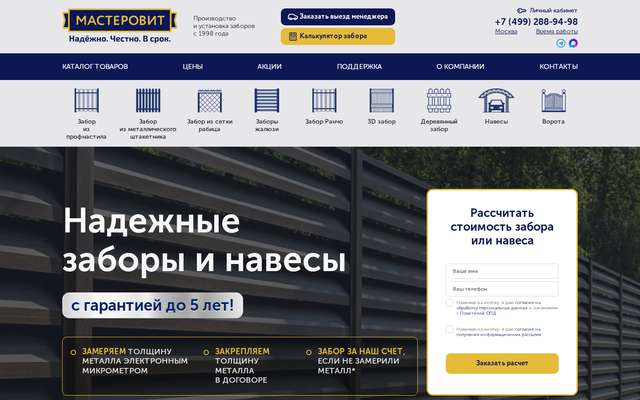</a><a class="zoom mob" href="img/fs_masterovit.ru_ml.jpg" target="_blank" rel="noopener">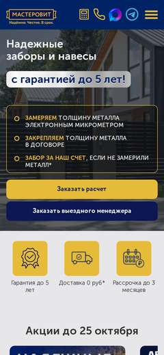</a></div><div class="fs-txt"><h4><a href="https://masterovit.ru" target="_blank" rel="noopener">masterovit.ru</a></h4><p class="h1q">«Надежные заборы и навесы с гарантией до 5 лет!»</p><dl><dt>Предоплата</dt><dd>Предоплата за материал при договоре, остаток за материалы при доставке, работы оплачиваются после приёмки; размер предоплаты не указан</dd><dt>Следующий шаг</dt><dd>Заявка → консультация и предварительный расчёт → выезд мобильного менеджера на участок → договор на месте</dd><dt>Ответ на заявку</dt><dd>«Свяжемся в ближайшее время» — срок не указан</dd><dt>Lighthouse, телефон</dt><dd>34/100</dd></dl></div></article><article class="fs"><div class="fs-imgs"><a class="zoom" href="img/fs_prof-zabory.ru_dl.jpg" target="_blank" rel="noopener">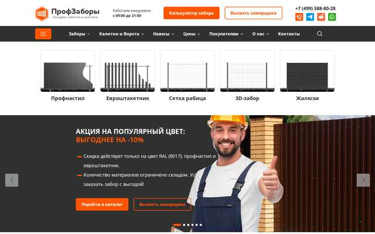</a><a class="zoom mob" href="img/fs_prof-zabory.ru_ml.jpg" target="_blank" rel="noopener">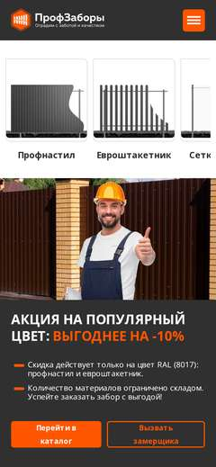</a></div><div class="fs-txt"><h4><a href="https://prof-zabory.ru" target="_blank" rel="noopener">prof-zabory.ru</a></h4><p class="h1q">«Установка заборов под ключ (первый экран — слайдер акций «Бесплатное сервисное обслуживание автоматики откатных ворот»)»</p><dl><dt>Предоплата</dt><dd>Физлица 10%, юрлица 50%, поэтапно 10/50/40; остальное после приёмки. В блоке преимуществ одновременно «Без предоплаты»</dd><dt>Следующий шаг</dt><dd>Заявка → бесплатный выезд замерщика (возможно в день заявки) → договор на месте с предоплатой 10%</dd><dt>Ответ на заявку</dt><dd>«Свяжемся с вами в течение рабочего дня» (форма кешбэка)</dd><dt>Lighthouse, телефон</dt><dd>14/100</dd></dl></div></article><article class="fs"><div class="fs-imgs"><a class="zoom" href="img/fs_sales.prof-zabory.ru_dl.jpg" target="_blank" rel="noopener">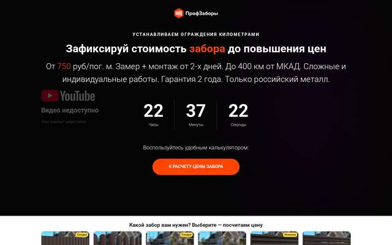</a><a class="zoom mob" href="img/fs_sales.prof-zabory.ru_ml.jpg" target="_blank" rel="noopener">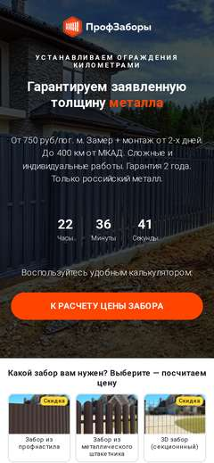</a></div><div class="fs-txt"><h4><a href="https://sales.prof-zabory.ru" target="_blank" rel="noopener">sales.prof-zabory.ru</a></h4><p class="h1q">«Устанавливаем ограждения километрами (H1 не размечен тегом)»</p><dl><dt>Предоплата</dt><dd>не указана на лендинге</dd><dt>Следующий шаг</dt><dd>Расчёт по телефону → бесплатный замер → договор</dd><dt>Ответ на заявку</dt><dd>«Менеджер свяжется в ближайшее время»</dd><dt>Lighthouse, телефон</dt><dd>23/100</dd></dl></div></article><article class="fs"><div class="fs-imgs"><a class="zoom" href="img/fs_zaborkin.ru_dl.jpg" target="_blank" rel="noopener">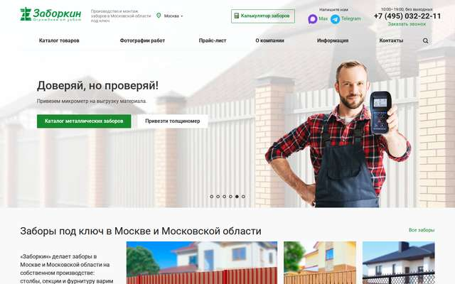</a><a class="zoom mob" href="img/fs_zaborkin.ru_ml.jpg" target="_blank" rel="noopener">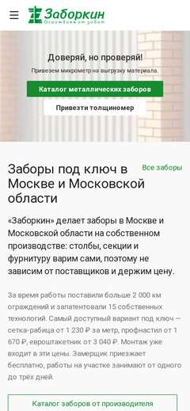</a></div><div class="fs-txt"><h4><a href="https://zaborkin.ru" target="_blank" rel="noopener">zaborkin.ru</a></h4><p class="h1q">«Заборы под ключ в Москве и Московской области (первый слайд: «Узнайте стоимость вашего забора за 1 минуту»)»</p><dl><dt>Предоплата</dt><dd>От 50% по договору, остаток после подписания акта</dd><dt>Следующий шаг</dt><dd>Заявка → бесплатный замер → смета на почту → доставка материалов с договором на подпись</dd><dt>Ответ на заявку</dt><dd>В мессенджерах — в течение 2 минут</dd><dt>Lighthouse, телефон</dt><dd>25/100</dd></dl></div></article><article class="fs"><div class="fs-imgs"><a class="zoom" href="img/fs_zavodzaborov.ru_dl.jpg" target="_blank" rel="noopener">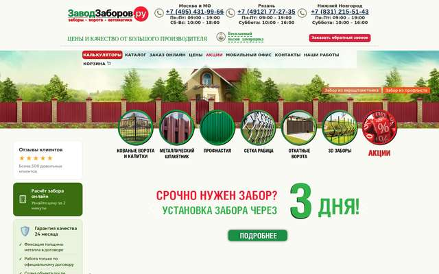</a><a class="zoom mob" href="img/fs_zavodzaborov.ru_ml.jpg" target="_blank" rel="noopener">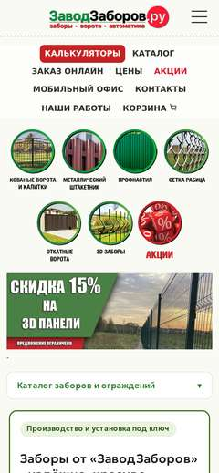</a></div><div class="fs-txt"><h4><a href="https://zavodzaborov.ru" target="_blank" rel="noopener">zavodzaborov.ru</a></h4><p class="h1q">«Заборы от «ЗаводЗаборов» - надёжно, красиво, доступно»</p><dl><dt>Предоплата</dt><dd>40% после договора (юрлица 100%); для рабицы — без предоплаты по акции</dd><dt>Следующий шаг</dt><dd>Заявка или обратный звонок → бесплатный замер с точной стоимостью на месте → договор и 40% предоплаты</dd><dt>Ответ на заявку</dt><dd>не указан</dd><dt>Lighthouse, телефон</dt><dd>27/100</dd></dl></div></article><article class="fs"><div class="fs-imgs"><a class="zoom" href="img/fs_zabor-dlya-vseh.site_dl.jpg" target="_blank" rel="noopener">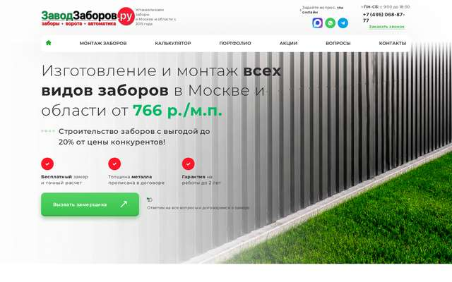</a><a class="zoom mob" href="img/fs_zabor-dlya-vseh.site_ml.jpg" target="_blank" rel="noopener"></a></div><div class="fs-txt"><h4><a href="https://zabor-dlya-vseh.site" target="_blank" rel="noopener">zabor-dlya-vseh.site</a></h4><p class="h1q">«Изготовление и монтаж всех видов заборов в Москве и области от 766 р./м.п.»</p><dl><dt>Предоплата</dt><dd>не указана на лендинге (на основном сайте той же компании — 40%)</dd><dt>Следующий шаг</dt><dd>Квиз → смета в мессенджер → бесплатный замер</dd><dt>Ответ на заявку</dt><dd>Смета «сегодня», «засекайте 45 минут»</dd><dt>Lighthouse, телефон</dt><dd>25/100</dd></dl></div></article><article class="fs"><div class="fs-imgs"><a class="zoom" href="img/fs_raduga-zaborov.ru_dl.jpg" target="_blank" rel="noopener">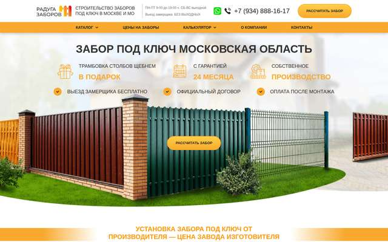</a><a class="zoom mob" href="img/fs_raduga-zaborov.ru_ml.jpg" target="_blank" rel="noopener">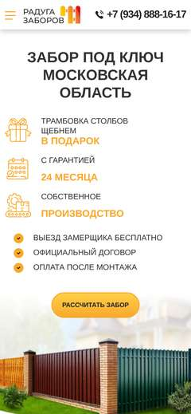</a></div><div class="fs-txt"><h4><a href="https://raduga-zaborov.ru" target="_blank" rel="noopener">raduga-zaborov.ru</a></h4><p class="h1q">«Забор под ключ Московская область»</p><dl><dt>Предоплата</dt><dd>Оплата после монтажа (на первом экране)</dd><dt>Следующий шаг</dt><dd>Квиз или калькулятор → расчёт в мессенджер → бесплатный замер</dd><dt>Ответ на заявку</dt><dd>«В ближайшее время»</dd><dt>Lighthouse, телефон</dt><dd>56/100</dd></dl></div></article><article class="fs"><div class="fs-imgs"><a class="zoom" href="img/fs_zaborovo.ru_dl.jpg" target="_blank" rel="noopener">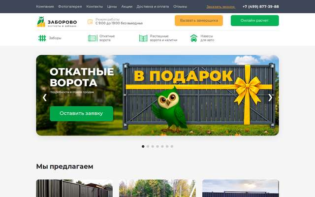</a><a class="zoom mob" href="img/fs_zaborovo.ru_ml.jpg" target="_blank" rel="noopener">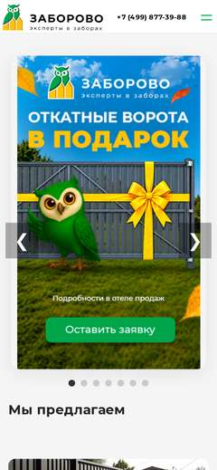</a></div><div class="fs-txt"><h4><a href="https://zaborovo.ru" target="_blank" rel="noopener">zaborovo.ru</a></h4><p class="h1q">«Профессиональное строительство заборов под ключ в Москве и Московской области (H1 на 3 500 px); первый экран — слайдер товарных баннеров»</p><dl><dt>Предоплата</dt><dd>Выезд без предоплаты для профнастила и М-штакетника 2 м RAL 6005/8017; аванс вносится перед монтажом при подписании договора</dd><dt>Следующий шаг</dt><dd>Заявка → расчёт → бесплатный замер с договором на участке</dd><dt>Ответ на заявку</dt><dd>На странице ворот: «перезвоним через 10 минут»</dd><dt>Lighthouse, телефон</dt><dd>36/100</dd></dl></div></article><article class="fs"><div class="fs-imgs"><a class="zoom" href="img/fs_p-z-z.ru_dl.jpg" target="_blank" rel="noopener">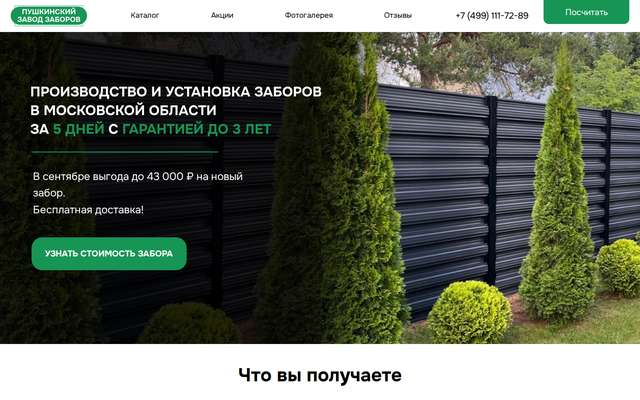</a><a class="zoom mob" href="img/fs_p-z-z.ru_ml.jpg" target="_blank" rel="noopener">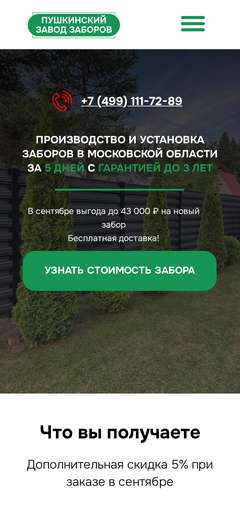</a></div><div class="fs-txt"><h4><a href="https://p-z-z.ru" target="_blank" rel="noopener">p-z-z.ru</a></h4><p class="h1q">«Производство и установка заборов в Московской области за 5 дней с гарантией до 3 лет (H1 не размечен)»</p><dl><dt>Предоплата</dt><dd>Аванс за материалы после договора (размер не указан)</dd><dt>Следующий шаг</dt><dd>Квиз → предварительный расчёт за 10 минут → замер с шоу-румом и договор на месте</dd><dt>Ответ на заявку</dt><dd>Предварительный расчёт за 10 минут</dd><dt>Lighthouse, телефон</dt><dd>48/100</dd></dl></div></article><article class="fs"><div class="fs-imgs"><a class="zoom" href="img/fs_oblzabor.ru_dl.jpg" target="_blank" rel="noopener">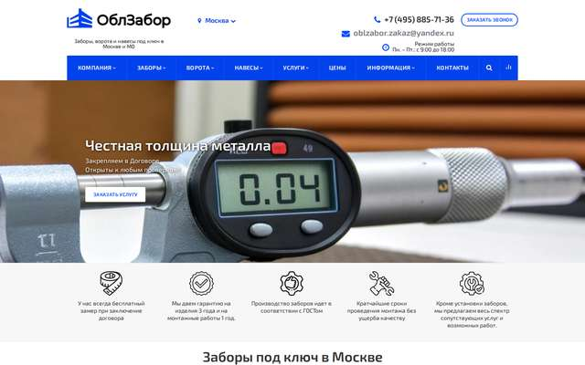</a><a class="zoom mob" href="img/fs_oblzabor.ru_ml.jpg" target="_blank" rel="noopener">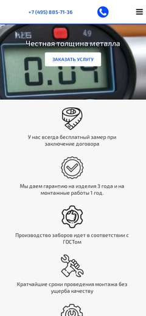</a></div><div class="fs-txt"><h4><a href="https://oblzabor.ru" target="_blank" rel="noopener">oblzabor.ru</a></h4><p class="h1q">«Заборы под ключ в Москве»</p><dl><dt>Предоплата</dt><dd>Оплата после того, как устроит качество (на главной)</dd><dt>Следующий шаг</dt><dd>Заявка → бесплатный замер с договором → монтаж → оплата</dd><dt>Ответ на заявку</dt><dd>не указан</dd><dt>Lighthouse, телефон</dt><dd>29/100</dd></dl></div></article><article class="fs"><div class="fs-imgs"><a class="zoom" href="img/fs_dostup-zabor.ru_dl.jpg" target="_blank" rel="noopener">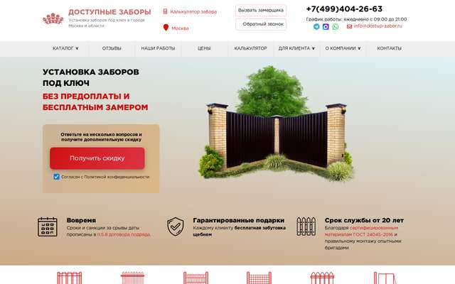</a><a class="zoom mob" href="img/fs_dostup-zabor.ru_ml.jpg" target="_blank" rel="noopener">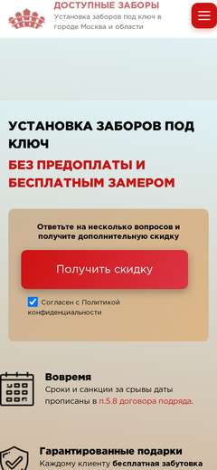</a></div><div class="fs-txt"><h4><a href="https://dostup-zabor.ru" target="_blank" rel="noopener">dostup-zabor.ru</a></h4><p class="h1q">«Установка заборов под ключ без предоплаты и бесплатным замером»</p><dl><dt>Предоплата</dt><dd>Без предоплаты, оплата по факту установки</dd><dt>Следующий шаг</dt><dd>Квиз или калькулятор → звонок со сметой → выездной менеджер (бесплатный замер) → договор</dd><dt>Ответ на заявку</dt><dd>Перезвоним за 5 минут (калькулятор); «свяжемся в течение 15 минут» (форма)</dd><dt>Lighthouse, телефон</dt><dd>53/100</dd></dl></div></article><article class="fs"><div class="fs-imgs"><a class="zoom" href="img/fs_zaboroff.ru_dl.jpg" target="_blank" rel="noopener">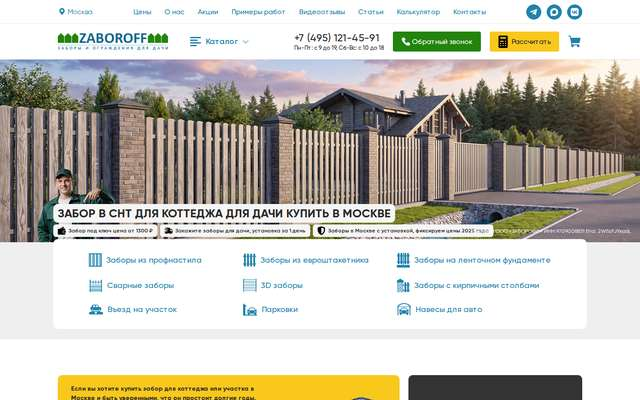</a><a class="zoom mob" href="img/fs_zaboroff.ru_ml.jpg" target="_blank" rel="noopener">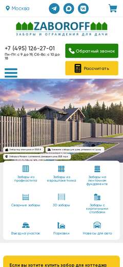</a></div><div class="fs-txt"><h4><a href="https://zaboroff.ru" target="_blank" rel="noopener">zaboroff.ru</a></h4><p class="h1q">«Забор в СНТ для коттеджа для дачи купить в Москве»</p><dl><dt>Предоплата</dt><dd>не указана</dd><dt>Следующий шаг</dt><dd>Заявка → бесплатный замерщик и смета → договор</dd><dt>Ответ на заявку</dt><dd>Перезвоним в течение 1–2 минут</dd><dt>Lighthouse, телефон</dt><dd>43/100</dd></dl></div></article><article class="fs"><div class="fs-imgs"><a class="zoom" href="img/fs_pskzabor.ru_dl.jpg" target="_blank" rel="noopener">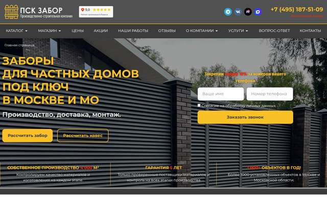</a><a class="zoom mob" href="img/fs_pskzabor.ru_ml.jpg" target="_blank" rel="noopener"></a></div><div class="fs-txt"><h4><a href="https://pskzabor.ru" target="_blank" rel="noopener">pskzabor.ru</a></h4><p class="h1q">«Заборы для частных домов под ключ в Москве и МО»</p><dl><dt>Предоплата</dt><dd>Не указана на главной; в рассрочке первоначальный взнос 30–50%</dd><dt>Следующий шаг</dt><dd>Расчёт или звонок → бесплатный замер → смета и договор</dd><dt>Ответ на заявку</dt><dd>«В самый короткий срок»</dd><dt>Lighthouse, телефон</dt><dd>42/100</dd></dl></div></article></div></section><aside class="obs"><span class="obs-k">Наблюдение</span><p>Условие без риска на первом экране — у Доступных заборов («без предоплаты и бесплатным замером» в H1) и Радуги («оплата после монтажа»). У Заборово слайдер первого экрана пустой, у ЗаводЗаборов заголовок ниже 1 800 px, у Мастеровита в заголовке «до 5 лет» гарантии при 24 месяцах в карточках.</p></aside><section class="blk"><h3>Доверие: сертификаты, дилерство, рейтинги, заказчики-организации</h3><div class="tscroll"><table class="tbl small"><thead><tr><th>Компания</th><th>Документ показан</th><th>Частично</th><th>Только слово</th><th>Из них дипломы и письма поставщиков, дилерство</th><th>Сторонние рейтинги-подборки (публикация показана)</th><th>Названные объекты и заказчики-организации</th></tr></thead><tbody><tr><th scope="row">Мастеровит<small>masterovit.ru</small></th><td class="n">12</td><td class="n">2</td><td class="n">2</td><td class="n">6</td><td class="n">5</td><td class="n">2</td></tr><tr><th scope="row">ЗаводЗаборов<small>zavodzaborov.ru</small></th><td class="n">3</td><td class="n">2</td><td class="n">1</td><td class="n">1</td><td class="n">4</td><td class="n">2</td></tr><tr><th scope="row">Доступные заборы<small>dostup-zabor.ru</small></th><td class="n">1</td><td class="n">1</td><td class="n">2</td><td class="n">0</td><td class="n">2</td><td class="n">0</td></tr><tr><th scope="row">ПрофЗаборы<small>prof-zabory.ru</small></th><td class="n">0</td><td class="n">2</td><td class="n">1</td><td class="n">0</td><td class="n">1</td><td class="n">0</td></tr><tr><th scope="row">Заборкин<small>zaborkin.ru</small></th><td class="n">0</td><td class="n">2</td><td class="n">4</td><td class="n">0</td><td class="n">3</td><td class="n">0</td></tr><tr><th scope="row">zabor-dlya-vseh.site<small>zabor-dlya-vseh.site</small></th><td class="n">0</td><td class="n">0</td><td class="n">1</td><td class="n">0</td><td class="n">0</td><td class="n">0</td></tr><tr><th scope="row">Радуга заборов<small>raduga-zaborov.ru</small></th><td class="n">0</td><td class="n">0</td><td class="n">2</td><td class="n">0</td><td class="n">1</td><td class="n">0</td></tr><tr><th scope="row">Заборово<small>zaborovo.ru</small></th><td class="n">0</td><td class="n">0</td><td class="n">2</td><td class="n">0</td><td class="n">0</td><td class="n">0</td></tr><tr><th scope="row">p-z-z.ru<small>p-z-z.ru</small></th><td class="n">0</td><td class="n">0</td><td class="n">1</td><td class="n">0</td><td class="n">0</td><td class="n">0</td></tr><tr><th scope="row">Облзабор<small>oblzabor.ru</small></th><td class="n">0</td><td class="n">2</td><td class="n">1</td><td class="n">0</td><td class="n">0</td><td class="n">0</td></tr><tr><th scope="row">Заборофф<small>zaboroff.ru</small></th><td class="n">0</td><td class="n">0</td><td class="n">2</td><td class="n">0</td><td class="n">3</td><td class="n">0</td></tr><tr><th scope="row">ПСК Забор<small>pskzabor.ru</small></th><td class="n">0</td><td class="n">3</td><td class="n">1</td><td class="n">0</td><td class="n">1</td><td class="n">4</td></tr></tbody></table></div><p class="note">Сайты 10 компаний: «О компании», «Сертификаты», «Партнёры», «Наши работы», отзывы; поиск рейтингов в интернете; 21.10.2026. «Документ показан» — изображение документа на сайте, включая дипломы и письма поставщиков; чужие и просроченные сертификаты — в столбце «Частично». Вторые сайты компаний (zabor-dlya-vseh.site — ЗаводЗаборов, p-z-z.ru — Заборово) показаны отдельными строками. Таблицы — sites_trust.csv и sites_b2b_cases.csv.</p></section><aside class="obs"><span class="obs-k">Наблюдение</span><p>Сертификат соответствия на свою продукцию или монтаж не показала ни одна из 10 компаний. Документы, выданные самой компании, есть у двух: у Мастеровита — сертификаты поставщиков металла 2025 года с ним как получателем, у ЗаводЗаборов — письма ВНИИС 2022 года о том, что продукция не подлежит обязательной сертификации. У четырёх показаны чужие или просроченные документы поставщиков (prof-zabory и dostup-zabor — один и тот же набор до 2018 года), у четырёх — только слова. Дилерство документом подтверждено у одной компании (ЗаводЗаборов, «Металл Профиль», 2026), логотипы DoorHan, CAME, Nice, Grand Line у пяти — без документов; СРО, ассоциаций и ISO нет ни у кого. Заказчики-организации с названием — у двух: Мастеровит (ассоциация «Стародачное», ООО «ДТ Груп»), ЗаводЗаборов (СНТ «Наука», СНТ «Лен»); у ПСК Забор — 6 названных объектов в коттеджных посёлках и на курорте, кто был заказчиком, не указано. Гипотеза для оффера: образец гарантийного талона и кейс с названием организации-заказчика и объёмом работ — этого нет ни у кого из 10; документы с компанией как получателем есть у двух из 10.</p></aside><section class="blk"><h3>Офферы и акции</h3><p class="lead">Обещание, акции, лид-магниты (что дают за контакт) и гарантия по 13 посадочным.</p><div class="tscroll"><table class="tbl small"><thead><tr><th>Сайт</th><th>Обещание (УТП)</th><th>Акции</th><th>Лид-магниты</th><th>Гарантия</th></tr></thead><tbody><tr><th scope="row">masterovit.ru</th><td>Контроль толщины металла: микрометр при клиенте, толщина в договоре, «забор за наш счёт» при нарушении; гарантия до 5 лет; масштаб (250 бригад, 3 базы)</td><td>Недельный цикл «цены и акции гарантированы с 19.10.2026 по 25.10.2026»: скидка до 28% на заборы; автоматика для откатных ворот за 1 ₽ при заказе забора от 100 м с откатными воротами; свая «Шуруп» за 1 ₽ вместо 1 476 ₽…</td><td>Калькулятор забора на странице (без отправки контактов); форма «Рассчитать стоимость»; выезд мобильного менеджера (замер, консультация, договор на месте); заявка «получить…</td><td>До 5 лет на забор (в карточках комплектаций: 24 мес. + 12 мес. при монтаже на сваях); толщина металла в договоре</td></tr><tr><th scope="row">prof-zabory.ru</th><td>Низкий порог входа: предоплата 10% для физлиц, договор в день заявки; толщина металла в договоре; уведомления о статусе работ в мессенджерах</td><td>−10% на цвет RAL 8017 (ограничено складом); дровница в подарок при заказе 150–500 тыс. ₽; 3 года бесплатного обслуживания автоматики откатных ворот; кешбэк до 1 100 ₽ за отзыв; кешбэк за друга «только до конца года»…</td><td>Калькуляторы по материалам (страница /raschet), бесплатный вызов замерщика, прайс-лист xlsx (от 28.04.22), заказ звонка на удобное время</td><td>До 2 лет: сварные швы и крепления 2 года, замки 2 года, покраска 1 год (грунтовка 1 месяц), ворота и калитки 6 мес. (2 года при…</td></tr><tr><th scope="row">sales.prof-zabory.ru</th><td>Фиксация цены до повышения + таймер; толщина металла в договоре и микрометр в день монтажа</td><td>Фиксация цены «до повышения цен» с таймером обратного отсчёта (таймер циклический)</td><td>Выбор типа забора → форма расчёта по параметрам; заказ звонка</td><td>2 года; заявленная толщина металла в договоре</td></tr><tr><th scope="row">zaborkin.ru</th><td>Собственное производство в Москве (столбы, секции, фурнитура) + цена ниже рынка на 15–20%; QR-паспорт забора; бессрочное обслуживание после гарантии</td><td>Скидка 10% на дачный забор от 50 м; скидка 3% за прохождение опроса; в видео: скидка 33% на монтаж, бесплатный эскиз-проект и отложенный монтаж на 6 месяцев до конца октября; на /info/sales/: подарок ко дню рождения…</td><td>Калькулятор забора и калькулятор ворот (на странице); квиз со скидкой 3%; пересчёт чужой сметы («в 93% случаев предлагаем меньшую стоимость»); экскурсия на производство; привоз…</td><td>2 года на конструкцию и монтаж с даты акта; бессрочное послегарантийное обслуживание (ураган, паводок); гарантийный отдел</td></tr><tr><th scope="row">zavodzaborov.ru</th><td>Производитель с офисами и интернет-магазином: собственное производство, фиксация толщины металла в договоре, сдача после одобрения клиента</td><td>Скидка 15% на 3D-панели; мангал в подарок при заказе от 100 000 ₽ с установкой в будние дни; металлическая грядка в подарок от 150 000 ₽; забор из рабицы без предоплаты; «забор через 3 дня»; бесплатная доставка — 1 км…</td><td>Онлайн-калькуляторы (отдельная страница), «узнайте цену за 2 минуты», бесплатный замер, мобильный офис, корзина интернет-магазина, забор в кредит</td><td>24 месяца на установку с даты окончания работ; грунт ГФ-021 — 1 месяц; толщина металла в договоре</td></tr><tr><th scope="row">zabor-dlya-vseh.site</th><td>Цена ниже рынка «до 20%» + бесплатный замер + толщина металла в договоре</td><td>Скидка до 15% на забор от 70 м.п.; скидка 3% новым владельцам дома или участка; «скидка на монтаж» за прохождение квиза; спеццены на монтаж 3D</td><td>Квиз из 7 вопросов со сметой в мессенджер; скачать прайс; бесплатная консультация мастера</td><td>До 2 лет на работы; толщина металла в договоре; монтаж только из материалов завода</td></tr><tr><th scope="row">raduga-zaborov.ru</th><td>Оплата после монтажа + подарок (трамбовка щебнем) + цена завода без посредников</td><td>Трамбовка щебнем в подарок при заказе с монтажом; скидка на популярный цвет; кешбэк за отзыв; скидка постоянным клиентам; сезонные акции</td><td>Квиз-калькулятор 6–8 вопросов с выдачей расчёта в WhatsApp/Telegram/MAX и «закрепить подарок»; калькулятор на странице</td><td>24 месяца на работы и продукцию: 2 года швы, 1 год покраска, 2 года ворота и калитка, 2 года автоматика; от 15 лет на полимерное покрытие</td></tr><tr><th scope="row">zaborovo.ru</th><td>Собственное производство в Пушкино (своя сваи многовитковые), порошковая покраска без доплаты, честная толщина металла в договоре</td><td>Рама откатных ворот под проём до 4,5 м за 1 ₽ при заказе забора от 100 м (при монтаже до 20 октября); порошковая покраска всех каркасов бесплатно; бесплатная доставка по МО для горизонтального штакетника или профнастила…</td><td>Онлайн-расчёт (форма с капчей), бесплатный замер, запрос звонка; квиз Marquiz со скидкой 10 000 ₽</td><td>24 месяца на комплектации; в FAQ — от 12 до 36 месяцев</td></tr><tr><th scope="row">p-z-z.ru</th><td>Скорость: 5 дней от договора до монтажа, монтаж за 1 день; «Наш стандарт» с конкретными параметрами конструкции</td><td>Выгода до 43 000 ₽ «в сентябре» / «до конца месяца»; доп. скидка 5% при заказе в сентябре; скидка 10 000 ₽ за прохождение квиза; порошковая покраска бесплатно; адресная табличка в подарок; бесплатная доставка; таймер…</td><td>Квиз 6 шагов со скидкой 10 000 ₽; запрос образца договора; замер с выездным шоу-румом</td><td>2 года, до 3 лет на усиленной комплектации</td></tr><tr><th scope="row">oblzabor.ru</th><td>Оплата после монтажа + толщина металла в договоре + бесплатный замер при договоре</td><td>Скидка 12% «при заказе до 25 октября» на 20.10.2026 и «до 26 октября» на 21.10.2026 — срок сдвигается ежедневно (страницы ворот, на ценах ворот «АКЦИЯ» с зачёркнутой ценой); заморозка цены на весну; скидки пенсионерам…</td><td>Калькулятор (с капчей), бесплатный расчёт, выезд замерщика</td><td>На главной: изделия 3 года, монтаж 1 год; на странице гарантий: до 2 лет; на странице ворот: до 5 лет; в прайсе профнастил «Эконом» — 6…</td></tr><tr><th scope="row">dostup-zabor.ru</th><td>Без предоплаты + санкции за срыв сроков в договоре (п. 5.8) + гарантированный подарок</td><td>Бесплатная забутовка щебнем каждому; бесплатная запорная фурнитура на ворота и калитку; скидка от объёма; персональная скидка за квиз; «выберите подарок» в квизе</td><td>Квиз со скидкой и выбором подарка; калькулятор с итоговой ценой и фиксацией на 7 дней; образец договора; выездной менеджер</td><td>2 года с даты акта; 24 месяца на 3D; санкции за срыв сроков в договоре</td></tr><tr><th scope="row">zaboroff.ru</th><td>Производитель с заводом 4 000 м² и 30 бригадами; цена фиксируется в договоре; гарантия до 5 лет</td><td>−10% на все карточки каталога (зачёркнутая цена); скидка 30% на односторонний профнастил RAL 8017/7024; скидка 10% на навес при покупке забора; 3 подарка при заборе от 40 000 ₽ (саморезы в цвет, стяжки на ворота и…</td><td>Калькулятор стоимости, «получить расчёт» в каждой карточке, бесплатный замер с договором на месте</td><td>2 года на монтаж (FAQ: 24 месяца), до 5 лет на материалы/забор по гарантийному сертификату</td></tr><tr><th scope="row">pskzabor.ru</th><td>Собственное производство 4 000 м² + гарантия 5 лет + фиксация цены в договоре</td><td>Скидка 10% за оставленный телефон; скидка 7% на материалы для забора</td><td>Калькуляторы забора и навеса, бесплатный замер, «закрепить скидку 10%»</td><td>На первом экране 5 лет; на странице гарантий — 2 года на материалы и монтаж, 2 года на ворота и автоматику</td></tr></tbody></table></div></section><aside class="obs"><span class="obs-k">Наблюдение</span><p>Подарки-доработки вместо скидок (забутовка, покраска, фурнитура) — у 8 из 10 компаний. Акции с прошедшей датой висят у 5 сайтов на 20.10.2026. Смету в мессенджер присылают 2 сайта, итог калькулятора без контакта показывают 3.</p></aside><section class="blk"><h3>Цены: профнастил с монтажом за погонный метр</h3><p class="lead">Цена «от» на главном сайте, первая строка «профнастил» с монтажом. Сравнение условное: у части компаний это лист 0,3–0,35 мм высотой 1,5 м.</p><div class="hb " role="img" aria-label="Цена профнастила за погонный метр"><div class="hb-row" data-tip="raduga-zaborov.ru: С8, 1,8–2 м с установкой На странице цен эконом 1,5 м 0,35 мм — 2 100 ₽"><div class="hb-lab">Радуга заборов<small>С8, 1,8–2 м с установкой</small></div><div class="hb-track"><div class="hb-line"><span class="hb-bar s1" style="--w:39.53%"></span><span class="hb-val">850 ₽</span></div><span class="hb-ref" style="--x:78.60%"><em>медиана 1 690 ₽</em></span></div></div><div class="hb-row" data-tip="zaboroff.ru: 1,8 м, 2 лаги, одностороннее покрытие H1: «от 1 300 ₽»"><div class="hb-lab">Заборофф<small>1,8 м, 2 лаги, одностороннее покрытие</small></div><div class="hb-track"><div class="hb-line"><span class="hb-bar s1" style="--w:62.33%"></span><span class="hb-val">1 340 ₽</span></div><span class="hb-ref" style="--x:78.60%"><em>медиана 1 690 ₽</em></span></div></div><div class="hb-row" data-tip="oblzabor.ru: 1,5 м, лист 0,3 мм, столбы 60×60×1,5, монтаж; гарантия 6 месяцев "><div class="hb-lab">Облзабор<small>1,5 м, лист 0,3 мм, столбы 60×60×1,5, монтаж; гарантия 6 месяцев</small></div><div class="hb-track"><div class="hb-line"><span class="hb-bar s1" style="--w:69.07%"></span><span class="hb-val">1 485 ₽</span></div><span class="hb-ref" style="--x:78.60%"><em>медиана 1 690 ₽</em></span></div></div><div class="hb-row" data-tip="prof-zabory.ru: С монтажом; прайс-таблица 1,5 м — 2 095 ₽ (столбы 60×60×2, лаги 40×20, С8 0,4 мм, грунт, монтаж, гарантия работ 24 мес.) Карточка каталога «от 1 491», таблица на той же странице «от 2 095»"><div class="hb-lab">ПрофЗаборы<small>С монтажом; прайс-таблица 1,5 м — 2 095 ₽ (столбы 60×60×2, лаги… · второй сайт sales.prof-zabory.ru: 1 490 ₽</small></div><div class="hb-track"><div class="hb-line"><span class="hb-bar s1" style="--w:69.35%"></span><span class="hb-val">1 491 ₽</span></div><span class="hb-ref" style="--x:78.60%"><em>медиана 1 690 ₽</em></span></div></div><div class="hb-row" data-tip="zaborkin.ru: 1,5 м, «Эконом», монтаж включён "><div class="hb-lab">Заборкин<small>1,5 м, «Эконом», монтаж включён</small></div><div class="hb-track"><div class="hb-line"><span class="hb-bar s1" style="--w:77.67%"></span><span class="hb-val">1 670 ₽</span></div><span class="hb-ref" style="--x:78.60%"><em>медиана 1 690 ₽</em></span></div></div><div class="hb-row" data-tip="pskzabor.ru: Односторонний 0,35 мм, 1,5 м, столбы 60×60×2, 2 лаги Монтаж в таблице профлиста отдельной колонкой не указан"><div class="hb-lab">ПСК Забор<small>Односторонний 0,35 мм, 1,5 м, столбы 60×60×2, 2 лаги</small></div><div class="hb-track"><div class="hb-line"><span class="hb-bar s1" style="--w:79.53%"></span><span class="hb-val">1 710 ₽</span></div><span class="hb-ref" style="--x:78.60%"><em>медиана 1 690 ₽</em></span></div></div><div class="hb-row" data-tip="zavodzaborov.ru: С-8 0,4 мм, 1,5 м, монтаж На главной карточка 2 м эконом от 2 257"><div class="hb-lab">ЗаводЗаборов<small>С-8 0,4 мм, 1,5 м, монтаж · второй сайт zabor-dlya-vseh.site: 1 376 ₽</small></div><div class="hb-track"><div class="hb-line"><span class="hb-bar s1" style="--w:86.23%"></span><span class="hb-val">1 854 ₽</span></div><span class="hb-ref" style="--x:78.60%"><em>медиана 1 690 ₽</em></span></div></div><div class="hb-row" data-tip="masterovit.ru: Забор из профнастила «Стандарт», 1,5 м: лист 0,4 мм, столбы 60×60×1,5, лаги 40×20, грунт ГФ-021, монтаж, гарантия 24 мес. На той же странице в карточке категории «от 2 004», в таблице «Эконом» 1,5 м «от 1 960»; на /price/ «от 2 004» (по ТУ) и «от 2 060» (эконом)"><div class="hb-lab">Мастеровит<small>Забор из профнастила «Стандарт», 1,5 м: лист 0,4 мм, столбы…</small></div><div class="hb-track"><div class="hb-line"><span class="hb-bar s1" style="--w:88.70%"></span><span class="hb-val">1 907 ₽</span></div><span class="hb-ref" style="--x:78.60%"><em>медиана 1 690 ₽</em></span></div></div><div class="hb-row" data-tip="dostup-zabor.ru: 1,5 м, под ключ Карточки вариантов от 1 800"><div class="hb-lab">Доступные заборы<small>1,5 м, под ключ</small></div><div class="hb-track"><div class="hb-line"><span class="hb-bar s1" style="--w:89.95%"></span><span class="hb-val">1 934 ₽</span></div><span class="hb-ref" style="--x:78.60%"><em>медиана 1 690 ₽</em></span></div></div><div class="hb-row" data-tip="zaborovo.ru: С8 0,3 мм оцинк., столбы 60×60×2, лаги 40×20×1,5, грунт, монтаж, гарантия 24 мес. Раздел «Заборы от 1 150 ₽» на главной"><div class="hb-lab">Заборово<small>С8 0,3 мм оцинк., столбы 60×60×2, лаги 40×20×1,5, грунт, монтаж… · второй сайт p-z-z.ru: 2 150 ₽</small></div><div class="hb-track"><div class="hb-line"><span class="hb-bar s1" style="--w:100.00%"></span><span class="hb-val">2 150 ₽</span></div><span class="hb-ref" style="--x:78.60%"><em>медиана 1 690 ₽</em></span></div></div></div></section><aside class="obs"><span class="obs-k">Наблюдение</span><p>Разброс — от 850 до 2 150 ₽, медиана 1 690 ₽ (n=10). Вторые сайты компаний дешевле основных: zabor-dlya-vseh.site — 1 376 ₽ против 1 854 ₽. У 6 из 10 компаний цены внутри сайта расходятся между собой.</p></aside><section class="blk"><h3>Сверка цен стратегии заказчика с сайтами</h3><p class="lead">Цены конкурентов из стратегии «Дома гирлянд» от 19.10.2026 против сайтов 20–21.10.2026. В расчётах отчёта взяты цены сайтов: у них известны дата, высота и состав.</p><div class="tscroll"><table class="tbl small"><thead><tr><th>Компания</th><th>Позиция</th><th>Стратегия заказчика, 19.10</th><th>Сайт, 20–21.10</th><th>Разница сайта к стратегии</th><th>Что взято</th><th>Почему</th></tr></thead><tbody><tr><th scope="row">Мастеровит</th><td>профнастил «от»</td><td class="n">1 550 ₽</td><td class="n">1 907 ₽</td><td class="n">+23%</td><td>сайт</td><td>в стратегии позиция и высота не указаны; на сайте 20.10 минимальная цена с монтажом — 1 907 ₽ (1,5 м); 1 550 ₽ могла быть акционной или без монтажа — не проверено</td></tr><tr><th scope="row">ЗаводЗаборов</th><td>профнастил «от»</td><td class="n">2 157 ₽</td><td class="n">1 854 ₽</td><td class="n">-14%</td><td>сайт</td><td>у компании четыре цены «от» на разных площадках (742 / 1 376 / 1 854 / 2 157 ₽); в сравнение взята цена главного сайта с указанной высотой</td></tr><tr><th scope="row">ПрофЗаборы</th><td>евроштакетник «от»</td><td class="n">2 091 ₽</td><td class="n">1 399 ₽</td><td class="n">-33%</td><td>сайт</td><td>цена 2 091 ₽ в таблице сайта 20.10 не найдена; ближайшая — 1 796 ₽ (1 м) и 2 450 ₽ (1,5 м); высота в стратегии не указана</td></tr><tr><th scope="row">Радуга заборов</th><td>профнастил</td><td class="n">2 200 ₽</td><td class="n">850 ₽</td><td class="n">-61%</td><td>сайт; в отчёте показаны обе</td><td>на самом сайте две цены (850 и 2 100 ₽); 2 200 ₽ стратегии ближе к странице цен (+5%)</td></tr><tr><th scope="row">Радуга заборов</th><td>жалюзи «от»</td><td class="n">3 430 ₽</td><td class="n">2 800 ₽</td><td class="n">-18%</td><td>сайт</td><td>разница −18%; дата съёма стратегии и высота не указаны</td></tr><tr><th scope="row">КупитьЗабор.ру</th><td>профнастил «от»</td><td class="n">4 500 ₽</td><td class="n">1 250 ₽</td><td class="n">не сравнимо: разные единицы</td><td>не сравнимо</td><td>единицы разные: на сайте цена за м², в стратегии единица не указана</td></tr><tr><th scope="row">СтройЗабор</th><td>профнастил «от»</td><td class="n">999 ₽</td><td class="n">нет данных</td><td class="n">не сравнимо</td><td>стратегия</td><td>не проверено</td></tr><tr><th scope="row">Завод Ворот</th><td>автоматические ворота «от» / ворота 4 × 2 м</td><td class="n">105 000 ₽</td><td class="n">нет данных</td><td class="n">не сравнимо</td><td>стратегия; рынок — медиана сайтов</td><td>105 000 ₽ стратегии близко к медиане сайтов 103 025 ₽ (+2%)</td></tr></tbody></table></div></section><aside class="obs"><span class="obs-k">Наблюдение</span><p>Расхождения — от −61% до +23%: у компаний по нескольку цен «от» на разных площадках (у ЗаводЗаборов — 742, 1 376, 1 854 и 2 157 ₽). Сравнивать цены можно только с указанием высоты, листа и состава; без этого цифры стратегии и сайтов описывают разные комплекты.</p></aside><section class="blk"><h3>Цены: откатные ворота 4 м, сопоставимый состав</h3><p class="lead">В медианы вошли только комплекты с проёмом 4 м, полотном с наполнением, высотой 1,9–2,0 м и монтажом, без калитки; механические n=12, с автоматикой n=6 (вместе с облегчённым списком и специалистами). Все цены — на вкладке «Откатные ворота».</p><div class="legend"><span><i class="sw s1"></i>механические, 4 м с монтажом</span><span><i class="sw s2"></i>с автоматикой, 4 м с монтажом</span></div><div class="hb " role="img" aria-label="Цены откатных ворот 4 м"><div class="hb-row" data-tip="masterovit.ru: «от» 75 884 ₽; с автоматикой «от» 116 713 ₽. Состав: нет (наполнение не входит), винтовые сваи, высота 1,95, привод R-Tech / CAME BX-608 (цены 4 м нет)"><div class="hb-lab">Мастеровит<small>masterovit.ru · без наполнения полотна</small></div><div class="hb-track"><div class="hb-line"><span class="hb-miss">4 м — 78 793 ₽, состав несопоставим</span></div><div class="hb-line"><span class="hb-miss">нет цены 4 м с автоматикой</span></div><span class="hb-ref" style="--x:47.39%"><em>медиана мех. 71 086 ₽</em></span><span class="hb-ref" style="--x:68.68%"><em>медиана авт. 103 025 ₽</em></span></div></div><div class="hb-row" data-tip="prof-zabory.ru: «от» 71 250 ₽; с автоматикой «от» 109 250 ₽. Состав: да (профнастил или евроштакетник), не указан, высота 2,0, привод ALUTECH + фотоэлементы и лампа"><div class="hb-lab">ПрофЗаборы<small>prof-zabory.ru</small></div><div class="hb-track"><div class="hb-line"><span class="hb-bar s1" style="--w:48.03%"></span><span class="hb-val">72 050 ₽</span></div><div class="hb-line"><span class="hb-bar s2" style="--w:73.37%"></span><span class="hb-val">110 050 ₽</span></div><span class="hb-ref" style="--x:47.39%"><em>медиана мех. 71 086 ₽</em></span><span class="hb-ref" style="--x:68.68%"><em>медиана авт. 103 025 ₽</em></span></div></div><div class="hb-row" data-tip="zaborkin.ru: «от» 72 150 ₽; с автоматикой «от» 123 350 ₽. Состав: , , высота , привод "><div class="hb-lab">Заборкин<small>zaborkin.ru · цена 4 м не опубликована</small></div><div class="hb-track"><div class="hb-line"><span class="hb-miss">нет цены 4 м («от» 72 150 ₽; с автоматикой «от» 123 350 ₽)</span></div><div class="hb-line"><span class="hb-miss">нет цены 4 м с автоматикой</span></div><span class="hb-ref" style="--x:47.39%"><em>медиана мех. 71 086 ₽</em></span><span class="hb-ref" style="--x:68.68%"><em>медиана авт. 103 025 ₽</em></span></div></div><div class="hb-row" data-tip="zavodzaborov.ru: «от» 80 760 ₽; с автоматикой «от» 123 460 ₽. Состав: да, винтовые сваи (в медиане); на бетоне 101 400 / 144 100 ₽, высота 2,0, привод марка не указана"><div class="hb-lab">ЗаводЗаборов<small>zavodzaborov.ru · для сравнения взят вариант на сваях</small></div><div class="hb-track"><div class="hb-line"><span class="hb-bar s1" style="--w:53.84%"></span><span class="hb-val">80 760 ₽</span></div><div class="hb-line"><span class="hb-bar s2" style="--w:82.31%"></span><span class="hb-val">123 460 ₽</span></div><span class="hb-ref" style="--x:47.39%"><em>медиана мех. 71 086 ₽</em></span><span class="hb-ref" style="--x:68.68%"><em>медиана авт. 103 025 ₽</em></span></div></div><div class="hb-row" data-tip="raduga-zaborov.ru: «от» 69 045 ₽. Состав: не указано (ориентир «под ключ»), винтовые сваи, высота 2,0, привод цена автоматики не опубликована"><div class="hb-lab">Радуга заборов<small>raduga-zaborov.ru · тип управления не указан</small></div><div class="hb-track"><div class="hb-line"><span class="hb-bar s1" style="--w:46.78%"></span><span class="hb-val">70 173 ₽</span></div><div class="hb-line"><span class="hb-miss">нет цены 4 м с автоматикой</span></div><span class="hb-ref" style="--x:47.39%"><em>медиана мех. 71 086 ₽</em></span><span class="hb-ref" style="--x:68.68%"><em>медиана авт. 103 025 ₽</em></span></div></div><div class="hb-row" data-tip="zaborovo.ru: «от» 72 500 ₽; с автоматикой «от» 101 500 ₽. Состав: механические — не исключено; автоматические — нет, не указан, высота не указана (проём 4 м), привод Doorhan Sliding-500"><div class="hb-lab">Заборово<small>zaborovo.ru · автоматические без наполнения</small></div><div class="hb-track"><div class="hb-line"><span class="hb-bar s1" style="--w:49.47%"></span><span class="hb-val">74 200 ₽</span></div><div class="hb-line"><span class="hb-miss">4 м с автоматикой — 103 200 ₽, состав несопоставим</span></div><span class="hb-ref" style="--x:47.39%"><em>медиана мех. 71 086 ₽</em></span><span class="hb-ref" style="--x:68.68%"><em>медиана авт. 103 025 ₽</em></span></div></div><div class="hb-row" data-tip="oblzabor.ru: с автоматикой «от» 31 428 ₽. Состав: , , высота , привод "><div class="hb-lab">Облзабор<small>oblzabor.ru · цена 4 м не опубликована</small></div><div class="hb-track"><div class="hb-line"><span class="hb-miss">нет цены 4 м (с автоматикой «от» 31 428 ₽)</span></div><div class="hb-line"><span class="hb-miss">нет цены 4 м с автоматикой</span></div><span class="hb-ref" style="--x:47.39%"><em>медиана мех. 71 086 ₽</em></span><span class="hb-ref" style="--x:68.68%"><em>медиана авт. 103 025 ₽</em></span></div></div><div class="hb-row" data-tip="dostup-zabor.ru: с автоматикой «от» 72 080 ₽. Состав: не раскрыто, не раскрыт, высота не указана, привод CAME / Nice (размер не указан)"><div class="hb-lab">Доступные заборы<small>dostup-zabor.ru · состав карточки 26 500 ₽ не раскрыт</small></div><div class="hb-track"><div class="hb-line"><span class="hb-miss">4 м — 26 500 ₽, состав несопоставим</span></div><div class="hb-line"><span class="hb-miss">нет цены 4 м с автоматикой</span></div><span class="hb-ref" style="--x:47.39%"><em>медиана мех. 71 086 ₽</em></span><span class="hb-ref" style="--x:68.68%"><em>медиана авт. 103 025 ₽</em></span></div></div><div class="hb-row" data-tip="zaboroff.ru: «от» 75 000 ₽; с автоматикой «от» 75 000 ₽. Состав: , , высота , привод "><div class="hb-lab">Заборофф<small>zaboroff.ru · цена 4 м не опубликована</small></div><div class="hb-track"><div class="hb-line"><span class="hb-miss">нет цены 4 м («от» 75 000 ₽; с автоматикой «от» 75 000 ₽)</span></div><div class="hb-line"><span class="hb-miss">нет цены 4 м с автоматикой</span></div><span class="hb-ref" style="--x:47.39%"><em>медиана мех. 71 086 ₽</em></span><span class="hb-ref" style="--x:68.68%"><em>медиана авт. 103 025 ₽</em></span></div></div><div class="hb-row" data-tip="pskzabor.ru: «от» 34 000 ₽; с автоматикой «от» 59 000 ₽. Состав: не указано, не указан, высота 2,0, привод размер с автоматикой не опубликован"><div class="hb-lab">ПСК Забор<small>pskzabor.ru</small></div><div class="hb-track"><div class="hb-line"><span class="hb-bar s1" style="--w:43.33%"></span><span class="hb-val">65 000 ₽</span></div><div class="hb-line"><span class="hb-miss">нет цены 4 м с автоматикой</span></div><span class="hb-ref" style="--x:47.39%"><em>медиана мех. 71 086 ₽</em></span><span class="hb-ref" style="--x:68.68%"><em>медиана авт. 103 025 ₽</em></span></div></div></div></section><aside class="obs"><span class="obs-k">Наблюдение</span><p>Цену 4 м механических и с автоматикой рядом публикуют 3 из 10 компаний: ПрофЗаборы, ЗаводЗаборов, Заборово (у последнего автоматические — без наполнения). Остальные дают цену «от» без размера или шаблон.</p></aside><section class="blk"><h3>Скорость: баллы Lighthouse</h3><p class="lead">Lighthouse 12, облачный сервер вне РФ: абсолютные значения хуже, чем у посетителя из Москвы; годятся для сравнения.</p><div class="legend"><span><i class="sw s1"></i>телефон</span><span><i class="sw s3"></i>компьютер</span></div><div class="hb " role="img" aria-label="Баллы Lighthouse"><div class="hb-row"><div class="hb-lab">raduga-zaborov.ru<small>LCP на телефоне 4.5 с</small></div><div class="hb-track"><div class="hb-line"><span class="hb-bar s1" style="--w:56.00%"></span><span class="hb-val">56</span></div><div class="hb-line"><span class="hb-bar s3" style="--w:82.00%"></span><span class="hb-val">82</span></div></div></div><div class="hb-row"><div class="hb-lab">dostup-zabor.ru<small>LCP на телефоне 3.3 с</small></div><div class="hb-track"><div class="hb-line"><span class="hb-bar s1" style="--w:53.00%"></span><span class="hb-val">53</span></div><div class="hb-line"><span class="hb-bar s3" style="--w:72.00%"></span><span class="hb-val">72</span></div></div></div><div class="hb-row"><div class="hb-lab">p-z-z.ru<small>LCP на телефоне 11.9 с</small></div><div class="hb-track"><div class="hb-line"><span class="hb-bar s1" style="--w:48.00%"></span><span class="hb-val">48</span></div><div class="hb-line"><span class="hb-bar s3" style="--w:61.00%"></span><span class="hb-val">61</span></div></div></div><div class="hb-row"><div class="hb-lab">zaboroff.ru<small>LCP на телефоне 9.1 с</small></div><div class="hb-track"><div class="hb-line"><span class="hb-bar s1" style="--w:43.00%"></span><span class="hb-val">43</span></div><div class="hb-line"><span class="hb-bar s3" style="--w:79.00%"></span><span class="hb-val">79</span></div></div></div><div class="hb-row"><div class="hb-lab">pskzabor.ru<small>LCP на телефоне 6.2 с</small></div><div class="hb-track"><div class="hb-line"><span class="hb-bar s1" style="--w:42.00%"></span><span class="hb-val">42</span></div><div class="hb-line"><span class="hb-bar s3" style="--w:70.00%"></span><span class="hb-val">70</span></div></div></div><div class="hb-row"><div class="hb-lab">zaborovo.ru<small>LCP на телефоне 7.1 с</small></div><div class="hb-track"><div class="hb-line"><span class="hb-bar s1" style="--w:36.00%"></span><span class="hb-val">36</span></div><div class="hb-line"><span class="hb-bar s3" style="--w:69.00%"></span><span class="hb-val">69</span></div></div></div><div class="hb-row"><div class="hb-lab">masterovit.ru<small>LCP на телефоне 8.3 с</small></div><div class="hb-track"><div class="hb-line"><span class="hb-bar s1" style="--w:34.00%"></span><span class="hb-val">34</span></div><div class="hb-line"><span class="hb-bar s3" style="--w:69.00%"></span><span class="hb-val">69</span></div></div></div><div class="hb-row"><div class="hb-lab">oblzabor.ru<small>LCP на телефоне 9.8 с</small></div><div class="hb-track"><div class="hb-line"><span class="hb-bar s1" style="--w:29.00%"></span><span class="hb-val">29</span></div><div class="hb-line"><span class="hb-bar s3" style="--w:69.00%"></span><span class="hb-val">69</span></div></div></div><div class="hb-row"><div class="hb-lab">zavodzaborov.ru<small>LCP на телефоне 12.1 с</small></div><div class="hb-track"><div class="hb-line"><span class="hb-bar s1" style="--w:27.00%"></span><span class="hb-val">27</span></div><div class="hb-line"><span class="hb-bar s3" style="--w:68.00%"></span><span class="hb-val">68</span></div></div></div><div class="hb-row"><div class="hb-lab">zaborkin.ru<small>LCP на телефоне 16.4 с · горизонтальная прокрутка</small></div><div class="hb-track"><div class="hb-line"><span class="hb-bar s1" style="--w:25.00%"></span><span class="hb-val">25</span></div><div class="hb-line"><span class="hb-bar s3" style="--w:48.00%"></span><span class="hb-val">48</span></div></div></div><div class="hb-row"><div class="hb-lab">zabor-dlya-vseh.site<small>LCP на телефоне 15.5 с</small></div><div class="hb-track"><div class="hb-line"><span class="hb-bar s1" style="--w:25.00%"></span><span class="hb-val">25</span></div><div class="hb-line"><span class="hb-bar s3" style="--w:65.00%"></span><span class="hb-val">65</span></div></div></div><div class="hb-row"><div class="hb-lab">sales.prof-zabory.ru<small>LCP на телефоне 23.9 с</small></div><div class="hb-track"><div class="hb-line"><span class="hb-bar s1" style="--w:23.00%"></span><span class="hb-val">23</span></div><div class="hb-line"><span class="hb-bar s3" style="--w:34.00%"></span><span class="hb-val">34</span></div></div></div><div class="hb-row"><div class="hb-lab">prof-zabory.ru<small>LCP на телефоне 11.6 с</small></div><div class="hb-track"><div class="hb-line"><span class="hb-bar s1" style="--w:14.00%"></span><span class="hb-val">14</span></div><div class="hb-line"><span class="hb-bar s3" style="--w:68.00%"></span><span class="hb-val">68</span></div></div></div></div></section><aside class="obs"><span class="obs-k">Наблюдение</span><p>По облачному Lighthouse у 11 из 13 страниц балл на телефоне ниже 50. Быстрее всех Радуга (56) и Доступные заборы (53) — у них же сильный первый экран. Доля мобильных визитов у prof-zabory.ru — 94%, у zavodzaborov.ru — 81%. Оценки критерия «посадочная страница» и сводки компаний опираются на этот замер 20.10.</p></aside><section class="blk"><h3>Скорость: Google PageSpeed Insights, телефон и компьютер</h3><div class="legend"><span><i class="sw s1"></i>телефон</span><span><i class="sw s2"></i>компьютер</span></div><div class="hb " role="img" aria-label="PageSpeed Insights: баллы производительности"><div class="hb-row"><div class="hb-lab">ЗаводЗаборов<small>LCP на телефоне 2,4 с</small></div><div class="hb-track"><div class="hb-line"><span class="hb-bar s1" style="--w:95.00%"></span><span class="hb-val">телефон 95</span></div><div class="hb-line"><span class="hb-bar s2" style="--w:98.00%"></span><span class="hb-val">компьютер 98</span></div></div></div><div class="hb-row"><div class="hb-lab">ПСК Забор<small>LCP на телефоне 2,8 с</small></div><div class="hb-track"><div class="hb-line"><span class="hb-bar s1" style="--w:90.00%"></span><span class="hb-val">телефон 90</span></div><div class="hb-line"><span class="hb-bar s2" style="--w:96.00%"></span><span class="hb-val">компьютер 96</span></div></div></div><div class="hb-row"><div class="hb-lab">Доступные заборы<small>PageSpeed не ответил (таймаут): компьютер</small></div><div class="hb-track"><div class="hb-line"><span class="hb-bar s1" style="--w:76.00%"></span><span class="hb-val">телефон 76</span></div><div class="hb-line"><span class="hb-miss">компьютер — нет ответа</span></div></div></div><div class="hb-row"><div class="hb-lab">Заборофф<small>LCP на телефоне 10,7 с</small></div><div class="hb-track"><div class="hb-line"><span class="hb-bar s1" style="--w:71.00%"></span><span class="hb-val">телефон 71</span></div><div class="hb-line"><span class="hb-bar s2" style="--w:70.00%"></span><span class="hb-val">компьютер 70</span></div></div></div><div class="hb-row"><div class="hb-lab">p-z-z.ru<small>LCP на телефоне 7,8 с</small></div><div class="hb-track"><div class="hb-line"><span class="hb-bar s1" style="--w:68.00%"></span><span class="hb-val">телефон 68</span></div><div class="hb-line"><span class="hb-bar s2" style="--w:82.00%"></span><span class="hb-val">компьютер 82</span></div></div></div><div class="hb-row"><div class="hb-lab">Радуга заборов<small>LCP на телефоне 2,6 с</small></div><div class="hb-track"><div class="hb-line"><span class="hb-bar s1" style="--w:66.00%"></span><span class="hb-val">телефон 66</span></div><div class="hb-line"><span class="hb-bar s2" style="--w:88.00%"></span><span class="hb-val">компьютер 88</span></div></div></div><div class="hb-row"><div class="hb-lab">zabor-dlya-vseh.site<small>LCP на телефоне 9,5 с</small></div><div class="hb-track"><div class="hb-line"><span class="hb-bar s1" style="--w:54.00%"></span><span class="hb-val">телефон 54</span></div><div class="hb-line"><span class="hb-bar s2" style="--w:78.00%"></span><span class="hb-val">компьютер 78</span></div></div></div><div class="hb-row"><div class="hb-lab">sales.prof-zabory.ru<small>PageSpeed не ответил (таймаут): компьютер</small></div><div class="hb-track"><div class="hb-line"><span class="hb-bar s1" style="--w:46.00%"></span><span class="hb-val">телефон 46</span></div><div class="hb-line"><span class="hb-miss">компьютер — нет ответа</span></div></div></div><div class="hb-row"><div class="hb-lab">Заборово<small>LCP на телефоне 16,1 с</small></div><div class="hb-track"><div class="hb-line"><span class="hb-bar s1" style="--w:37.00%"></span><span class="hb-val">телефон 37</span></div><div class="hb-line"><span class="hb-bar s2" style="--w:55.00%"></span><span class="hb-val">компьютер 55</span></div></div></div><div class="hb-row"><div class="hb-lab">ПрофЗаборы<small>LCP на телефоне 36,1 с</small></div><div class="hb-track"><div class="hb-line"><span class="hb-bar s1" style="--w:31.00%"></span><span class="hb-val">телефон 31</span></div><div class="hb-line"><span class="hb-bar s2" style="--w:60.00%"></span><span class="hb-val">компьютер 60</span></div></div></div><div class="hb-row"><div class="hb-lab">Облзабор<small>LCP на телефоне 9,1 с</small></div><div class="hb-track"><div class="hb-line"><span class="hb-bar s1" style="--w:21.00%"></span><span class="hb-val">телефон 21</span></div><div class="hb-line"><span class="hb-bar s2" style="--w:67.00%"></span><span class="hb-val">компьютер 67</span></div></div></div><div class="hb-row"><div class="hb-lab">Мастеровит<small>PageSpeed не ответил (таймаут): телефон</small></div><div class="hb-track"><div class="hb-line"><span class="hb-miss">телефон — нет ответа</span></div><div class="hb-line"><span class="hb-bar s2" style="--w:77.00%"></span><span class="hb-val">компьютер 77</span></div></div></div><div class="hb-row"><div class="hb-lab">Заборкин<small>PageSpeed не ответил (таймаут): телефон, компьютер</small></div><div class="hb-track"><div class="hb-line"><span class="hb-miss">телефон — нет ответа</span></div><div class="hb-line"><span class="hb-miss">компьютер — нет ответа</span></div></div></div></div><p class="note">Google PageSpeed Insights, лабораторный замер Lighthouse на серверах Google, 21.10.2026; запуск через Apify. По masterovit.ru (телефон), zaborkin.ru, sales.prof-zabory.ru и dostup-zabor.ru (компьютер) сервис не ответил за отведённое время. Данные реальных посетителей (CrUX) выгрузка не отдаёт. Балл и LCP колеблются от запуска к запуску на 5–15 пунктов.</p></section><aside class="obs"><span class="obs-k">Наблюдение</span><p>По PageSpeed на телефоне ниже 50 баллов — 4 из 11 ответивших страниц: ПрофЗаборы, sales.prof-zabory.ru, Заборово, Облзабор. Быстрее всех ЗаводЗаборов (95) и ПСК Забор (90), LCP 2,4–2,8 с. У ПрофЗаборов главный экран на телефоне появляется через 36 с, у Заборово — через 16 с, при 94% мобильных визитов у prof-zabory.ru. Облачный Lighthouse 20.10 давал ниже баллы (у ЗаводЗаборов 27 против 95); оба замера сделаны не из России, причина расхождения не установлена — для сравнения компаний между собой годится каждый, абсолютные значения проверить из Москвы. Цель для посадочной «Дома гирлянд» — 80+ на телефоне и LCP до 2,5 с.</p></aside><section class="blk"><h3>Идеальная страница: структура из лучших блоков рынка</h3><p class="lead">Нумерация блоков используется в карточках гипотез. Снимок — пример блока у того, у кого он взят.</p><div class="ideals"><article class="ideal"><div class="ideal-n">1</div><div class="ideal-t"><h4>Первый экран</h4><p>H1 «Заборы под ключ в Москве и МО» + условие без риска («без предоплаты, бесплатный замер») + цена «от … ₽/п.м. с монтажом» + срок «от договора до монтажа N дней» + одна кнопка «Рассчитать за 1 минуту»</p><p class="src">Взято у: dostup-zabor.ru (без предоплаты и замер в H1), zabor-dlya-vseh.site (цена в H1), p-z-z.ru (срок «5 дней от договора до монтажа»)</p></div><figure class="shot"><a class="zoom" href="img/bl_01_l.jpg" target="_blank" rel="noopener">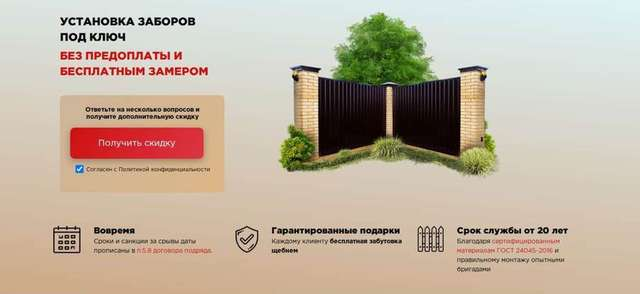</a></figure></article><article class="ideal"><div class="ideal-n">2</div><div class="ideal-t"><h4>Полоса фактов под первым экраном</h4><p>3–4 проверяемых обещания: санкции за срыв сроков с номером пункта договора, подарок каждому, гарантия, масштаб</p><p class="src">Взято у: dostup-zabor.ru (п. 5.8 договора, забутовка в подарок), masterovit.ru (бригады, базы)</p></div><figure class="shot"><a class="zoom" href="img/bl_02_l.jpg" target="_blank" rel="noopener">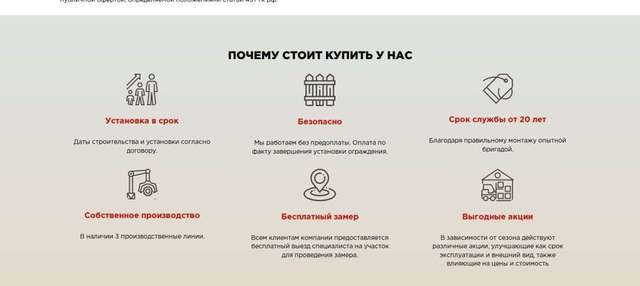</a></figure></article><article class="ideal"><div class="ideal-n">3</div><div class="ideal-t"><h4>Контроль металла</h4><p>Микрометр при клиенте, толщина в договоре, компенсация при нарушении; привоз микрометра на выгрузку</p><p class="src">Взято у: masterovit.ru, zaborkin.ru</p></div><figure class="shot"><a class="zoom" href="img/bl_03_l.jpg" target="_blank" rel="noopener">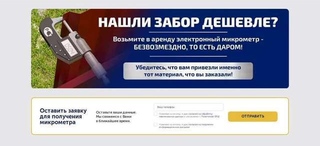</a></figure></article><article class="ideal"><div class="ideal-n">4</div><div class="ideal-t"><h4>Цены с монтажом</h4><p>Таблица «материал — цена от — высота», затем таблицы по высотам с составом (столбы, лаги, лист, грунт)</p><p class="src">Взято у: zaborkin.ru (короткая таблица сразу после первого экрана), prof-zabory.ru и masterovit.ru (таблицы с составом)</p></div><figure class="shot"><a class="zoom" href="img/bl_04_l.jpg" target="_blank" rel="noopener">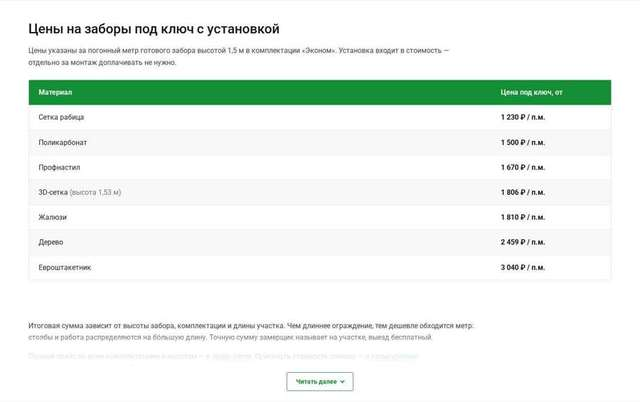</a></figure></article><article class="ideal"><div class="ideal-n">5</div><div class="ideal-t"><h4>Калькулятор / квиз</h4><p>Итоговая сумма без ввода телефона + «зафиксировать цену на 7 дней» и «прислать смету в WhatsApp / Telegram / MAX»</p><p class="src">Взято у: dostup-zabor.ru (фиксация на 7 дней), zabor-dlya-vseh.site и raduga-zaborov.ru (смета в мессенджер)</p></div><figure class="shot"><a class="zoom" href="img/bl_05_l.jpg" target="_blank" rel="noopener">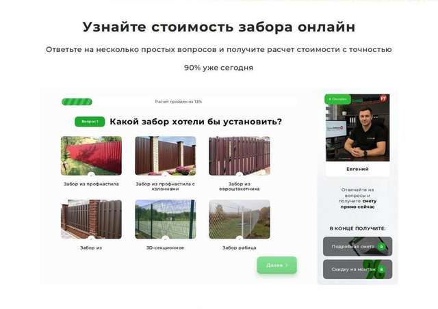</a></figure></article><article class="ideal"><div class="ideal-n">6</div><div class="ideal-t"><h4>Откатные ворота</h4><p>Таблица ширина × высота, механика и автоматика рядом, состав комплекта, бренд привода; связка «забор от N м + ворота»</p><p class="src">Взято у: prof-zabory.ru (таблица и 3 года обслуживания автоматики), zaborovo.ru (состав, рама за 1 ₽), zavodzaborov.ru (4 × 2 м с автоматикой и без)</p></div><figure class="shot"><a class="zoom" href="img/gt_prof-zabory.ru_l.jpg" target="_blank" rel="noopener">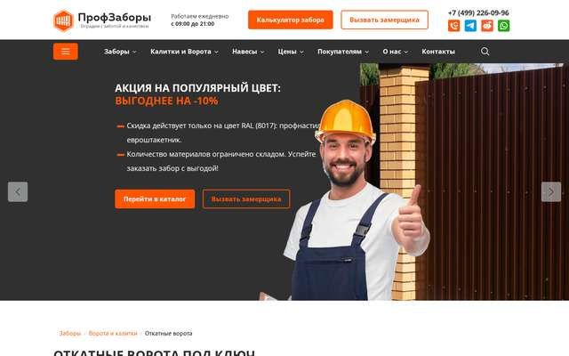</a></figure></article><article class="ideal"><div class="ideal-n">7</div><div class="ideal-t"><h4>Акции</h4><p>Одна-две акции с реальной датой и порогом суммы, реферальная программа</p><p class="src">Взято у: masterovit.ru (недельный срок), zavodzaborov.ru (подарок от 100 000 ₽), zaborovo.ru («приведи соседа» 2 000 + 2 000 ₽)</p></div><figure class="shot"><a class="zoom" href="img/bl_07_l.jpg" target="_blank" rel="noopener">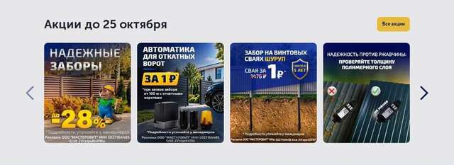</a></figure></article><article class="ideal"><div class="ideal-n">8</div><div class="ideal-t"><h4>Как работаем</h4><p>6–7 шагов с моментом оплаты и сроком каждого этапа</p><p class="src">Взято у: zaborkin.ru (оплата после акта), p-z-z.ru (3 дня изготовление + 1 день монтаж)</p></div><figure class="shot"><a class="zoom" href="img/bl_08_l.jpg" target="_blank" rel="noopener">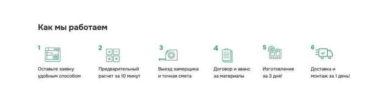</a></figure></article><article class="ideal"><div class="ideal-n">9</div><div class="ideal-t"><h4>Стандарт конструкции и договор</h4><p>Параметры цифрами (лист 0,4 мм, столбы 60×60×2, заглубление 1,5 м, порошковая окраска) + «запросить образец договора»</p><p class="src">Взято у: p-z-z.ru, dostup-zabor.ru (образец договора)</p></div><figure class="shot"><a class="zoom" href="img/bl_09_l.jpg" target="_blank" rel="noopener">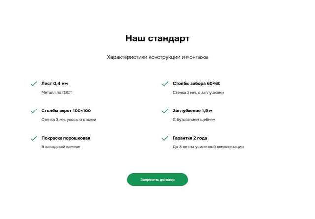</a></figure></article><article class="ideal"><div class="ideal-n">10</div><div class="ideal-t"><h4>Кейсы</h4><p>Фото с материалом, высотой, длиной и городом; видео с ценой объекта</p><p class="src">Взято у: zaborkin.ru, zabor-dlya-vseh.site</p></div><figure class="shot"><a class="zoom" href="img/bl_10_l.jpg" target="_blank" rel="noopener">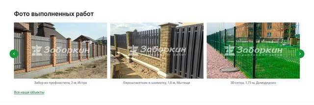</a></figure></article><article class="ideal"><div class="ideal-n">11</div><div class="ideal-t"><h4>Отзывы</h4><p>Виджет Яндекс Карт + отзывы с номерами договоров + видеоотзывы</p><p class="src">Взято у: raduga-zaborov.ru, pskzabor.ru, prof-zabory.ru, masterovit.ru</p></div><figure class="shot"><a class="zoom" href="img/bl_11_l.jpg" target="_blank" rel="noopener">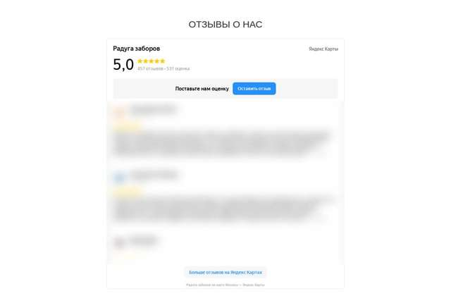</a></figure></article><article class="ideal"><div class="ideal-n">12</div><div class="ideal-t"><h4>Гарантия и сервис</h4><p>2 года с даты акта, послегарантийное обслуживание, QR-паспорт забора</p><p class="src">Взято у: zaborkin.ru</p></div><figure class="shot"><a class="zoom" href="img/bl_12_l.jpg" target="_blank" rel="noopener">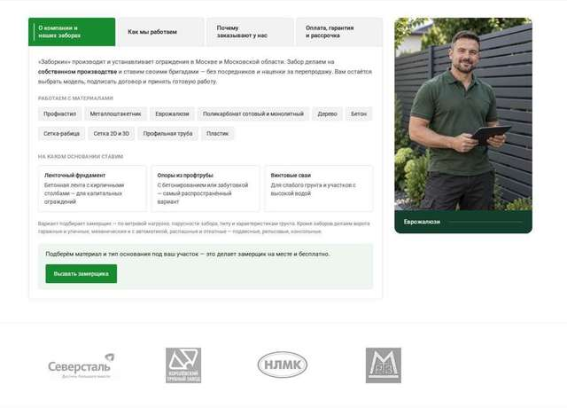</a></figure></article><article class="ideal"><div class="ideal-n">13</div><div class="ideal-t"><h4>Пересчёт чужой сметы</h4><p>«Пришлите смету другой компании — пересчитаем»</p><p class="src">Взято у: zaborkin.ru</p></div><div class="noimg">Пример блока — текстом, без снимка</div></article><article class="ideal"><div class="ideal-n">14</div><div class="ideal-t"><h4>FAQ</h4><p>Предоплата, рассрочка, зима, уклон, нормы СНТ, что входит в «под ключ»</p><p class="src">Взято у: zaborkin.ru, raduga-zaborov.ru, zabor-dlya-vseh.site</p></div><figure class="shot"><a class="zoom" href="img/bl_14_l.jpg" target="_blank" rel="noopener">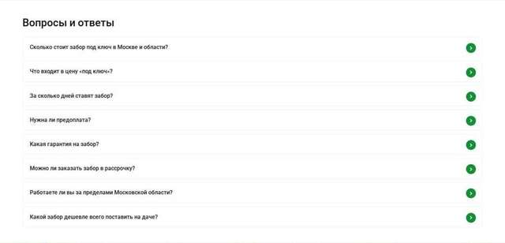</a></figure></article><article class="ideal"><div class="ideal-n">15</div><div class="ideal-t"><h4>Финальная форма и связь</h4><p>Мессенджеры с заявленным временем ответа; на телефоне закреплённая нижняя панель «позвонить / написать / расчёт»</p><p class="src">Взято у: zaborkin.ru (2 минуты), dostup-zabor.ru и raduga-zaborov.ru (нижняя панель)</p></div><figure class="shot"><a class="zoom" href="img/bl_15_l.jpg" target="_blank" rel="noopener">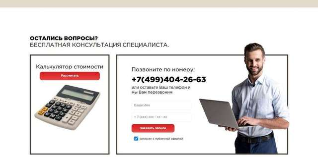</a></figure></article></div></section><aside class="obs"><span class="obs-k">Наблюдение</span><p>15 блоков взяты у 10 разных сайтов: лучшие решения рынка рассыпаны по компаниям. Блоки 1, 5 и 12 закрывают главные страхи клиента: цену без риска, итог без звонка и гарантию после монтажа.</p></aside><section class="blk"><h3>Что делают все и чего нет ни у кого</h3><div class="grid2"><div><h4>Что делают все</h4><p>(обязательный минимум)</p>
<ul><li>«Под ключ» с монтажом и цена «от» за погонный метр; бесплатный замер (12 из 13 страниц, у части — при заключении договора; у masterovit.ru бесплатность не заявлена, замер вынесен в допуслуги калькулятора).</li><li>Гарантия около 2 лет; калькулятор или форма расчёта; галерея работ; гео-список городов МО.</li><li>Подарки-доработки вместо скидок: щебень/забутовка, покраска, фурнитура, генератор, калитка (8 из 10 компаний полного разбора и 7 из 10 облегчённых).</li></ul></div><div><h4>Чего нет ни у кого из 13 страниц</h4><p>из 13 разобранных страниц</p>
<ul><li>Готового пакета с итоговой суммой «забор на участок 6 / 10 / 12 соток + откатные ворота 4 м с автоматикой + калитка» на самой странице (есть только поштучные цены и калькуляторы).</li><li>Денежной компенсации за срыв срока, названной в рублях (dostup-zabor.ru ссылается на пункт договора без суммы).</li><li>Срока ответа и срока монтажа, закреплённых одновременно; публичного графика свободных бригад или даты ближайшего монтажа.</li><li>Сравнения со сметами конкурентов на примерах (только предложение пересчитать у zaborkin.ru).</li><li>Видимого рейтинга Яндекс Карт или 2ГИС с числом отзывов на первом экране десктопа (на телефоне — только pskzabor.ru).</li></ul></div></div></section><aside class="obs"><span class="obs-k">Наблюдение</span><p>Обязательный минимум повторяют все, поэтому он не отличает. Отличие лежит в пустых местах: пакет с итоговой суммой, неустойка в рублях, дата ближайшего монтажа, рейтинг карт на первом экране.</p></aside></section><section class="panel" id="prozvon" role="tabpanel" aria-labelledby="t-prozvon" hidden><header class="ph"><h2>Прозвон</h2><p>Воронка продаж конкурентов по этапам</p></header><section class="blk"><h3>Воронка продаж конкурентов по этапам</h3><p class="lead">Прозвон командой «Дома гирлянд» 21.10.2026 по сценарию «частный клиент, забор с воротами под ключ». В сводной таблице команды компании не названы, кроме ЗаводЗаборов и ПрофЗаборов (по сообщениям после звонка); число звонков не указано, персонаж один. Итоговые цены после замера не сняты.</p><ol class="funnel"><li><span class="fn-n">1</span><span class="fn-t">Новая заявка</span><span class="fn-v">до 1 мин · 7–10 мин</span></li><li><span class="fn-n">2</span><span class="fn-t">Квалификация</span><span class="fn-v">5–7 · 0</span></li><li><span class="fn-n">3</span><span class="fn-t">Расчёт по телефону</span><span class="fn-v">да, базовая комплектация · детальный · 350–450 тыс. ₽ · +20% · у всех…</span></li><li><span class="fn-n">4</span><span class="fn-t">Замер назначен</span><span class="fn-v">2 000–4 000 ₽ · договор на месте · 0 при договоре; 3 000–5 500 ₽ без…</span></li><li><span class="fn-n">5</span><span class="fn-t">Замер проведён</span><span class="fn-v">5 000 ₽ — 40%</span></li><li><span class="fn-n">6</span><span class="fn-t">Итоговое КП</span><span class="fn-v">1 компания · да, с материалами доверия · 3 варианта 730–950 тыс. ₽</span></li><li><span class="fn-n">7</span><span class="fn-t">Монтаж</span><span class="fn-v">5 дней + 2–3 дня</span></li></ol><div class="stages"><article class="stage"><h4>1. Новая заявка</h4><ul><li><p><strong>часть компаний (не названы)</strong>: обработка заявки до 1 минуты</p><p class="impl">Для оффера: SLA ответа до 5 минут — на уровне лучших</p></li><li><p><strong>другие компании (не названы)</strong>: обработка в среднем 7–10 минут</p></li></ul></article><article class="stage"><h4>2. Квалификация</h4><ul><li><p><strong>часть компаний (не названы)</strong>: спрашивают локацию, тип забора, метраж, ворота и калитку (допродажа «под ключ»), тип ворот и штакетника, высоту 1,8 / 2 / 2,5 м («лучше 2 метра»); подробности — «расскажет инженер на выезде»</p><p class="impl">Для оффера: скрипт квалификации из стратегии (дом, материал, метры, ворота, сроки, адрес, фото) — на уровне лучших</p></li><li><p><strong>часть компаний (не названы)</strong>: ЛПР не выясняют и ничего не спрашивают</p><p class="impl">Для оффера: провал части рынка</p></li></ul></article><article class="stage"><h4>3. Расчёт по телефону</h4><ul><li><p><strong>большинство (не названы)</strong>: читают расчёт с калькулятора с цифрами, базовая комплектация; часть даёт прайс за 5 минут и сразу закрывает на замер</p><p class="impl">Для оффера: расчёт по телефону — обязательный минимум</p></li><li><p><strong>одна компания (не названа)</strong>: более детальный расчёт, чтобы цена не сильно отличалась от замерщика</p></li><li><p><strong>все опрошенные (не названы)</strong>: средний чек на объект с воротами под ключ в базовой комплектации</p><p class="impl">Для оффера: чек пакета по прозвону выше расчётного 170–226 тыс. ₽ (оценка по отзывам и ценам «от»)</p></li><li><p><strong>один менеджер (компания не названа)</strong>: «эта цена обычно на замере увеличивается на 20%»</p><p class="impl">Для оффера: подтверждает тему «смета и замер» (18,0% негатива); фиксированная смета остаётся отличием</p></li><li><p><strong>все опрошенные (не названы)</strong>: сразу дают скидку без понятного размера («со скидкой будет …»)</p><p class="impl">Для оффера: скидка — обязательный минимум и слабое отличие</p></li><li><p><strong>часть компаний (не названы)</strong>: аргументы: 2 года гарантии; «генератор свой»; подарки — грядка или мангал</p><p class="impl">Для оффера: не повторять «мангал/грядку»; бонусы — неценовые и отличные</p></li><li><p><strong>все опрошенные (не названы)</strong>: КП не обещают и на него не закрывают</p><p class="impl">Для оффера: письменное КП с двумя вариантами — свободно</p></li></ul></article><article class="stage"><h4>4. Замер назначен</h4><ul><li><p><strong>часть компаний (не названы)</strong>: выезд платный: 2 000 / 3 000 / 4 000 ₽; бесплатно в пределах около 30 км от МКАД у части</p><p class="impl">Для оффера: бесплатный замер в объявлениях не всегда бесплатный</p></li><li><p><strong>часть компаний (не названы)</strong>: замерщик с образцами, ноутбуком, принтером и печатью — договор на месте</p></li><li><p><strong>ЗаводЗаборов (ООО «Мособлстрой»)</strong>: выезд бесплатен при договоре (аванс 40%, юрлица 100%); без договора — 3 000 ₽ (0–40 км) … 5 500 ₽ (190–240 км); выезд засчитывается в аванс в течение 2 лет</p><p class="impl">Для оффера: в объявлениях «Бесплатный замер» без оговорки</p></li><li><p><strong>ЗаводЗаборов (ООО «Мособлстрой»)</strong>: после звонка письменно просят имя, телефон, шоссе и расстояние от МКАД, населённый пункт, СНТ/ДНП, дату; клиент должен знать границы, линия прокошена</p></li><li><p><strong>компания без названия</strong>: выезд инженера-замерщика 4 000 ₽, вычитается из сметы при договоре</p></li></ul></article><article class="stage"><h4>5. Замер проведён</h4><ul><li><p><strong>все опрошенные (не названы)</strong>: предоплата от 5 000 ₽ наличными до 40%; наличные или карта — по-разному</p><p class="impl">Для оффера: оплата после приёмки — отличие от прозвона</p></li></ul></article><article class="stage"><h4>6. Итоговое КП</h4><ul><li><p><strong>одна компания (не названа)</strong>: прислала КП одним файлом, «некрасивый, просто цифры»</p><p class="impl">Для оффера: КП с двумя вариантами и исключениями — свободный критерий</p></li><li><p><strong>ПрофЗаборы</strong>: сообщение «Вам выполнен расчёт» + ссылки: почему выбирают нас, примеры работ, акции (ВК, Telegram), отзывы, статья «как не попасть на обманщиков», видео о безопасной покупке, YouTube; призыв на замер (рельеф, уклоны, коммуникации)</p><p class="impl">Для оффера: образец прогрева после расчёта</p></li><li><p><strong>компания без названия</strong>: три варианта: профлист + откатные ворота + калитка — 730 тыс. ₽; евроштакетник шахматка + ворота + калитка — 950 тыс. ₽; евроштакетник односторонний + ворота + калитка — 810 тыс. ₽</p><p class="impl">Для оффера: три варианта въезда с ценами уже встречаются (1 компания)</p></li></ul></article><article class="stage"><h4>7. Монтаж</h4><ul><li><p><strong>все опрошенные (не названы)</strong>: изготовление 5 дней; монтаж штакетника 2–3 дня, профнастила 2 дня</p><p class="impl">Для оффера: срок «5 дней от договора» — на уровне рынка</p></li></ul></article></div></section><aside class="obs"><span class="obs-k">Наблюдение</span><p>На этапе расчёта рынок выглядит одинаково: расчёт с калькулятора по телефону, базовая комплектация, скидка «без размера» у всех, чек объекта с воротами 350–450 тыс. ₽. Различия начинаются после звонка: письменный расчёт с материалами доверия прислали ПрофЗаборы; итоговое КП прислала одна компания; три варианта въезда с ценами (730–950 тыс. ₽) дала одна компания.</p></aside><aside class="obs"><span class="obs-k">Наблюдение</span><p>Два признака слабой продажи: часть компаний ничего не спрашивает и не выясняет, кто принимает решение; менеджер одной компании сам говорит, что цена «на замере обычно увеличивается на 20%». Бесплатный замер из рекламы на деле часто бесплатен только при договоре: у ЗаводЗаборов без договора выезд стоит 3 000–5 500 ₽.</p></aside><section class="blk"><h3>Что из прозвона идёт в оффер</h3><ul><li>Письменное КП с двумя вариантами и исключениями — в прозвоне его прислала одна компания.</li><li>Квалификация по скрипту: дом, материал, метры, ворота, сроки, адрес, фото — часть рынка её пропускает.</li><li>Цена, которая не меняется после замера, — рынок сам предупреждает о росте на 20%.</li><li>Неценовые бонусы вместо «мангала и грядки» и скидки без размера.</li><li>Прогрев после расчёта: сообщение с примерами работ и отзывами, как у ПрофЗаборов.</li></ul></section><aside class="obs"><span class="obs-k">Наблюдение</span><p>Прозвон закрывает этап методики частично: нужны названия компаний, два персонажа (частный клиент и строитель) и прогон отдела продаж «Дома гирлянд» по тому же сценарию для сравнения.</p></aside></section><section class="panel" id="vorota" role="tabpanel" aria-labelledby="t-vorota" hidden><header class="ph"><h2>Откатные ворота</h2><p>Цены, специалисты, жалобы, оффер</p></header><section class="blk"><h3>Цены: все игроки</h3><p class="lead">Только явный проём 4 м и сопоставимый состав; если цены 4 м нет, рядом — цена «от» без размера. Наведите на строку, чтобы увидеть состав комплекта. Сайты, 20.10.2026.</p><div class="legend"><span><i class="sw s1"></i>механические, 4 м</span><span><i class="sw s2"></i>с автоматикой, 4 м</span></div><h4>Полный разбор</h4><div class="hb " role="img" aria-label="Цены ворот, Полный разбор"><div class="hb-row" data-tip="masterovit.ru: «от» 75 884 ₽; с автоматикой «от» 116 713 ₽. Состав: нет (наполнение не входит), винтовые сваи, высота 1,95, привод R-Tech / CAME BX-608 (цены 4 м нет)"><div class="hb-lab">Мастеровит<small>masterovit.ru · без наполнения полотна</small></div><div class="hb-track"><div class="hb-line"><span class="hb-miss">4 м — 78 793 ₽, состав несопоставим</span></div><div class="hb-line"><span class="hb-miss">нет цены 4 м с автоматикой</span></div><span class="hb-ref" style="--x:47.39%"><em>мед. мех.</em></span><span class="hb-ref" style="--x:68.68%"><em>мед. авт.</em></span></div></div><div class="hb-row" data-tip="prof-zabory.ru: «от» 71 250 ₽; с автоматикой «от» 109 250 ₽. Состав: да (профнастил или евроштакетник), не указан, высота 2,0, привод ALUTECH + фотоэлементы и лампа"><div class="hb-lab">ПрофЗаборы<small>prof-zabory.ru</small></div><div class="hb-track"><div class="hb-line"><span class="hb-bar s1" style="--w:48.03%"></span><span class="hb-val">72 050 ₽</span></div><div class="hb-line"><span class="hb-bar s2" style="--w:73.37%"></span><span class="hb-val">110 050 ₽</span></div><span class="hb-ref" style="--x:47.39%"><em>мед. мех.</em></span><span class="hb-ref" style="--x:68.68%"><em>мед. авт.</em></span></div></div><div class="hb-row" data-tip="zaborkin.ru: «от» 72 150 ₽; с автоматикой «от» 123 350 ₽. Состав: , , высота , привод "><div class="hb-lab">Заборкин<small>zaborkin.ru · цена 4 м не опубликована</small></div><div class="hb-track"><div class="hb-line"><span class="hb-miss">нет цены 4 м («от» 72 150 ₽; с автоматикой «от» 123 350 ₽)</span></div><div class="hb-line"><span class="hb-miss">нет цены 4 м с автоматикой</span></div><span class="hb-ref" style="--x:47.39%"><em>мед. мех.</em></span><span class="hb-ref" style="--x:68.68%"><em>мед. авт.</em></span></div></div><div class="hb-row" data-tip="zavodzaborov.ru: «от» 80 760 ₽; с автоматикой «от» 123 460 ₽. Состав: да, винтовые сваи (в медиане); на бетоне 101 400 / 144 100 ₽, высота 2,0, привод марка не указана"><div class="hb-lab">ЗаводЗаборов<small>zavodzaborov.ru · для сравнения взят вариант на сваях</small></div><div class="hb-track"><div class="hb-line"><span class="hb-bar s1" style="--w:53.84%"></span><span class="hb-val">80 760 ₽</span></div><div class="hb-line"><span class="hb-bar s2" style="--w:82.31%"></span><span class="hb-val">123 460 ₽</span></div><span class="hb-ref" style="--x:47.39%"><em>мед. мех.</em></span><span class="hb-ref" style="--x:68.68%"><em>мед. авт.</em></span></div></div><div class="hb-row" data-tip="raduga-zaborov.ru: «от» 69 045 ₽. Состав: не указано (ориентир «под ключ»), винтовые сваи, высота 2,0, привод цена автоматики не опубликована"><div class="hb-lab">Радуга заборов<small>raduga-zaborov.ru · тип управления не указан</small></div><div class="hb-track"><div class="hb-line"><span class="hb-bar s1" style="--w:46.78%"></span><span class="hb-val">70 173 ₽</span></div><div class="hb-line"><span class="hb-miss">нет цены 4 м с автоматикой</span></div><span class="hb-ref" style="--x:47.39%"><em>мед. мех.</em></span><span class="hb-ref" style="--x:68.68%"><em>мед. авт.</em></span></div></div><div class="hb-row" data-tip="zaborovo.ru: «от» 72 500 ₽; с автоматикой «от» 101 500 ₽. Состав: механические — не исключено; автоматические — нет, не указан, высота не указана (проём 4 м), привод Doorhan Sliding-500"><div class="hb-lab">Заборово<small>zaborovo.ru · автоматические без наполнения</small></div><div class="hb-track"><div class="hb-line"><span class="hb-bar s1" style="--w:49.47%"></span><span class="hb-val">74 200 ₽</span></div><div class="hb-line"><span class="hb-miss">4 м с автоматикой — 103 200 ₽, состав несопоставим</span></div><span class="hb-ref" style="--x:47.39%"><em>мед. мех.</em></span><span class="hb-ref" style="--x:68.68%"><em>мед. авт.</em></span></div></div><div class="hb-row" data-tip="p-z-z.ru: «от» 42 981 ₽; с автоматикой «от» 74 605 ₽. Состав: , , высота , привод "><div class="hb-lab">p-z-z.ru<small>p-z-z.ru · цена 4 м не опубликована</small></div><div class="hb-track"><div class="hb-line"><span class="hb-miss">нет цены 4 м («от» 42 981 ₽; с автоматикой «от» 74 605 ₽)</span></div><div class="hb-line"><span class="hb-miss">нет цены 4 м с автоматикой</span></div><span class="hb-ref" style="--x:47.39%"><em>мед. мех.</em></span><span class="hb-ref" style="--x:68.68%"><em>мед. авт.</em></span></div></div><div class="hb-row" data-tip="oblzabor.ru: с автоматикой «от» 31 428 ₽. Состав: , , высота , привод "><div class="hb-lab">Облзабор<small>oblzabor.ru · цена 4 м не опубликована</small></div><div class="hb-track"><div class="hb-line"><span class="hb-miss">нет цены 4 м (с автоматикой «от» 31 428 ₽)</span></div><div class="hb-line"><span class="hb-miss">нет цены 4 м с автоматикой</span></div><span class="hb-ref" style="--x:47.39%"><em>мед. мех.</em></span><span class="hb-ref" style="--x:68.68%"><em>мед. авт.</em></span></div></div><div class="hb-row" data-tip="dostup-zabor.ru: с автоматикой «от» 72 080 ₽. Состав: не раскрыто, не раскрыт, высота не указана, привод CAME / Nice (размер не указан)"><div class="hb-lab">Доступные заборы<small>dostup-zabor.ru · состав карточки 26 500 ₽ не раскрыт</small></div><div class="hb-track"><div class="hb-line"><span class="hb-miss">4 м — 26 500 ₽, состав несопоставим</span></div><div class="hb-line"><span class="hb-miss">нет цены 4 м с автоматикой</span></div><span class="hb-ref" style="--x:47.39%"><em>мед. мех.</em></span><span class="hb-ref" style="--x:68.68%"><em>мед. авт.</em></span></div></div><div class="hb-row" data-tip="zaboroff.ru: «от» 75 000 ₽; с автоматикой «от» 75 000 ₽. Состав: , , высота , привод "><div class="hb-lab">Заборофф<small>zaboroff.ru · цена 4 м не опубликована</small></div><div class="hb-track"><div class="hb-line"><span class="hb-miss">нет цены 4 м («от» 75 000 ₽; с автоматикой «от» 75 000 ₽)</span></div><div class="hb-line"><span class="hb-miss">нет цены 4 м с автоматикой</span></div><span class="hb-ref" style="--x:47.39%"><em>мед. мех.</em></span><span class="hb-ref" style="--x:68.68%"><em>мед. авт.</em></span></div></div><div class="hb-row" data-tip="pskzabor.ru: «от» 34 000 ₽; с автоматикой «от» 59 000 ₽. Состав: не указано, не указан, высота 2,0, привод размер с автоматикой не опубликован"><div class="hb-lab">ПСК Забор<small>pskzabor.ru</small></div><div class="hb-track"><div class="hb-line"><span class="hb-bar s1" style="--w:43.33%"></span><span class="hb-val">65 000 ₽</span></div><div class="hb-line"><span class="hb-miss">нет цены 4 м с автоматикой</span></div><span class="hb-ref" style="--x:47.39%"><em>мед. мех.</em></span><span class="hb-ref" style="--x:68.68%"><em>мед. авт.</em></span></div></div></div><h4>Облегчённый список</h4><div class="hb " role="img" aria-label="Цены ворот, Облегчённый список"><div class="hb-row" data-tip="zabormo.ru: «от» 35 000 ₽; с автоматикой «от» 55 000 ₽. Состав: да (профнастил), бетон М-300, 1,5 м, высота не указана (проём 4 м), привод DoorHan 800"><div class="hb-lab">zabormo.ru<small>zabormo.ru</small></div><div class="hb-track"><div class="hb-line"><span class="hb-bar s1" style="--w:46.40%"></span><span class="hb-val">69 600 ₽</span></div><div class="hb-line"><span class="hb-bar s2" style="--w:58.67%"></span><span class="hb-val">88 000 ₽</span></div><span class="hb-ref" style="--x:47.39%"><em>мед. мех.</em></span><span class="hb-ref" style="--x:68.68%"><em>мед. авт.</em></span></div></div><div class="hb-row" data-tip="pro-zabor.ru: «от» 74 990 ₽. Состав: , , высота , привод "><div class="hb-lab">pro-zabor.ru<small>pro-zabor.ru · цена 4 м не опубликована</small></div><div class="hb-track"><div class="hb-line"><span class="hb-miss">нет цены 4 м («от» 74 990 ₽)</span></div><div class="hb-line"><span class="hb-miss">нет цены 4 м с автоматикой</span></div><span class="hb-ref" style="--x:47.39%"><em>мед. мех.</em></span><span class="hb-ref" style="--x:68.68%"><em>мед. авт.</em></span></div></div><div class="hb-row" data-tip="moscow.kupitzabor.ru: «от» 75 000 ₽; с автоматикой «от» 110 000 ₽. Состав: , , высота , привод "><div class="hb-lab">moscow.kupitzabor.ru<small>moscow.kupitzabor.ru · цена 4 м не опубликована</small></div><div class="hb-track"><div class="hb-line"><span class="hb-miss">нет цены 4 м («от» 75 000 ₽; с автоматикой «от» 110 000 ₽)</span></div><div class="hb-line"><span class="hb-miss">нет цены 4 м с автоматикой</span></div><span class="hb-ref" style="--x:47.39%"><em>мед. мех.</em></span><span class="hb-ref" style="--x:68.68%"><em>мед. авт.</em></span></div></div><div class="hb-row" data-tip="33zabora.ru: «от» 42 600 ₽; с автоматикой «от» 96 000 ₽. Состав: да (профнастил), бетонирование, высота 2,0, привод CAME / NICE"><div class="hb-lab">33zabora.ru<small>33zabora.ru</small></div><div class="hb-track"><div class="hb-line"><span class="hb-bar s1" style="--w:31.43%"></span><span class="hb-val">47 150 ₽</span></div><div class="hb-line"><span class="hb-bar s2" style="--w:64.00%"></span><span class="hb-val">96 000 ₽</span></div><span class="hb-ref" style="--x:47.39%"><em>мед. мех.</em></span><span class="hb-ref" style="--x:68.68%"><em>мед. авт.</em></span></div></div><div class="hb-row" data-tip="zabor-vam.ru: «от» 42 600 ₽; с автоматикой «от» 110 000 ₽. Состав: да (профнастил), не указан, высота 2,0, привод цена с автоматикой в таблице не найдена"><div class="hb-lab">zabor-vam.ru<small>zabor-vam.ru · взята таблица «с установкой»</small></div><div class="hb-track"><div class="hb-line"><span class="hb-bar s1" style="--w:44.30%"></span><span class="hb-val">66 450 ₽</span></div><div class="hb-line"><span class="hb-miss">нет цены 4 м с автоматикой</span></div><span class="hb-ref" style="--x:47.39%"><em>мед. мех.</em></span><span class="hb-ref" style="--x:68.68%"><em>мед. авт.</em></span></div></div><div class="hb-row" data-tip="good-zabor.ru: «от» 28 048 ₽. Состав: , , высота , привод "><div class="hb-lab">good-zabor.ru<small>good-zabor.ru · цена 4 м не опубликована</small></div><div class="hb-track"><div class="hb-line"><span class="hb-miss">нет цены 4 м («от» 28 048 ₽)</span></div><div class="hb-line"><span class="hb-miss">нет цены 4 м с автоматикой</span></div><span class="hb-ref" style="--x:47.39%"><em>мед. мех.</em></span><span class="hb-ref" style="--x:68.68%"><em>мед. авт.</em></span></div></div><div class="hb-row" data-tip="moskovskie-zabory.ru: «от» 89 000 ₽; с автоматикой «от» 129 000 ₽. Состав: не указано, не указан, высота 2,0, привод NICE"><div class="hb-lab">moskovskie-zabory.ru<small>moskovskie-zabory.ru</small></div><div class="hb-track"><div class="hb-line"><span class="hb-bar s1" style="--w:61.33%"></span><span class="hb-val">92 000 ₽</span></div><div class="hb-line"><span class="hb-bar s2" style="--w:88.00%"></span><span class="hb-val">132 000 ₽</span></div><span class="hb-ref" style="--x:47.39%"><em>мед. мех.</em></span><span class="hb-ref" style="--x:68.68%"><em>мед. авт.</em></span></div></div><div class="hb-row" data-tip="ligazaborov.ru: «от» 38 500 ₽. Состав: , , высота , привод "><div class="hb-lab">ligazaborov.ru<small>ligazaborov.ru · цена 4 м не опубликована</small></div><div class="hb-track"><div class="hb-line"><span class="hb-miss">нет цены 4 м («от» 38 500 ₽)</span></div><div class="hb-line"><span class="hb-miss">нет цены 4 м с автоматикой</span></div><span class="hb-ref" style="--x:47.39%"><em>мед. мех.</em></span><span class="hb-ref" style="--x:68.68%"><em>мед. авт.</em></span></div></div><div class="hb-row" data-tip="zabory-deshevo.ru: «от» 72 600 ₽. Состав: , , высота , привод "><div class="hb-lab">zabory-deshevo.ru<small>zabory-deshevo.ru · цена 4 м не опубликована</small></div><div class="hb-track"><div class="hb-line"><span class="hb-miss">нет цены 4 м («от» 72 600 ₽)</span></div><div class="hb-line"><span class="hb-miss">нет цены 4 м с автоматикой</span></div><span class="hb-ref" style="--x:47.39%"><em>мед. мех.</em></span><span class="hb-ref" style="--x:68.68%"><em>мед. авт.</em></span></div></div><div class="hb-row" data-tip="gorodzaborov.ru: «от» 64 900 ₽. Состав: , , высота , привод "><div class="hb-lab">gorodzaborov.ru<small>gorodzaborov.ru · цена 4 м не опубликована</small></div><div class="hb-track"><div class="hb-line"><span class="hb-miss">нет цены 4 м («от» 64 900 ₽)</span></div><div class="hb-line"><span class="hb-miss">нет цены 4 м с автоматикой</span></div><span class="hb-ref" style="--x:47.39%"><em>мед. мех.</em></span><span class="hb-ref" style="--x:68.68%"><em>мед. авт.</em></span></div></div></div><h4>Специалисты по воротам</h4><div class="hb " role="img" aria-label="Цены ворот, Специалисты по воротам"><div class="hb-row" data-tip="alusys.ru: «от» 99 000 ₽. Состав: , , высота , привод "><div class="hb-lab">alusys.ru<small>alusys.ru · цена 4 м не опубликована</small></div><div class="hb-track"><div class="hb-line"><span class="hb-miss">нет цены 4 м («от» 99 000 ₽)</span></div><div class="hb-line"><span class="hb-miss">нет цены 4 м с автоматикой</span></div><span class="hb-ref" style="--x:47.39%"><em>мед. мех.</em></span><span class="hb-ref" style="--x:68.68%"><em>мед. авт.</em></span></div></div><div class="hb-row" data-tip="vorota750.ru: «от» 32 000 ₽; с автоматикой «от» 67 000 ₽. Состав: да (профлист), не указан, высота 2,0, привод Nice RD 400"><div class="hb-lab">vorota750.ru<small>vorota750.ru · включены генератор и доставка до 50 км</small></div><div class="hb-track"><div class="hb-line"><span class="hb-bar s1" style="--w:41.67%"></span><span class="hb-val">62 500 ₽</span></div><div class="hb-line"><span class="hb-bar s2" style="--w:53.67%"></span><span class="hb-val">80 500 ₽</span></div><span class="hb-ref" style="--x:47.39%"><em>мед. мех.</em></span><span class="hb-ref" style="--x:68.68%"><em>мед. авт.</em></span></div></div><div class="hb-row" data-tip="naves-pod-avto-msk.ru: «от» 60 000 ₽. Состав: да (профлист), не указан, высота 2,0, привод без автоматики"><div class="hb-lab">naves-pod-avto-msk.ru<small>naves-pod-avto-msk.ru · цена калькулятора</small></div><div class="hb-track"><div class="hb-line"><span class="hb-bar s1" style="--w:66.67%"></span><span class="hb-val">100 000 ₽</span></div><div class="hb-line"><span class="hb-miss">нет цены 4 м с автоматикой</span></div><span class="hb-ref" style="--x:47.39%"><em>мед. мех.</em></span><span class="hb-ref" style="--x:68.68%"><em>мед. авт.</em></span></div></div><div class="hb-row" data-tip="otkatnie-vorota.com: «от» 45 000 ₽. Состав: да, не указан, высота 1,8 (механические) / 2,0 (автоматические), привод не указан"><div class="hb-lab">otkatnie-vorota.com<small>otkatnie-vorota.com · проекты с отдельной калиткой, разная высота</small></div><div class="hb-track"><div class="hb-line"><span class="hb-miss">4 м — 88 500 ₽, состав несопоставим</span></div><div class="hb-line"><span class="hb-miss">4 м с автоматикой — 114 400 ₽, состав несопоставим</span></div><span class="hb-ref" style="--x:47.39%"><em>мед. мех.</em></span><span class="hb-ref" style="--x:68.68%"><em>мед. авт.</em></span></div></div><div class="hb-row" data-tip="gruppa-masterov.ru: «от» 35 000 ₽; с автоматикой «от» 85 000 ₽. Состав: , , высота , привод "><div class="hb-lab">gruppa-masterov.ru<small>gruppa-masterov.ru · цена 4 м не опубликована</small></div><div class="hb-track"><div class="hb-line"><span class="hb-miss">нет цены 4 м («от» 35 000 ₽; с автоматикой «от» 85 000 ₽)</span></div><div class="hb-line"><span class="hb-miss">нет цены 4 м с автоматикой</span></div><span class="hb-ref" style="--x:47.39%"><em>мед. мех.</em></span><span class="hb-ref" style="--x:68.68%"><em>мед. авт.</em></span></div></div><div class="hb-row" data-tip="metalsystems.ru: «от» 25 900 ₽. Состав: , , высота , привод "><div class="hb-lab">metalsystems.ru<small>metalsystems.ru · цена 4 м не опубликована</small></div><div class="hb-track"><div class="hb-line"><span class="hb-miss">нет цены 4 м («от» 25 900 ₽)</span></div><div class="hb-line"><span class="hb-miss">нет цены 4 м с автоматикой</span></div><span class="hb-ref" style="--x:47.39%"><em>мед. мех.</em></span><span class="hb-ref" style="--x:68.68%"><em>мед. авт.</em></span></div></div><div class="hb-row" data-tip="zabory-prestige.ru: «от» 54 000 ₽; с автоматикой «от» 97 000 ₽. Состав: не указано, сваи или плита, высота 2,0, привод Алютех / Came (размер не указан)"><div class="hb-lab">zabory-prestige.ru<small>zabory-prestige.ru</small></div><div class="hb-track"><div class="hb-line"><span class="hb-bar s1" style="--w:48.00%"></span><span class="hb-val">72 000 ₽</span></div><div class="hb-line"><span class="hb-miss">нет цены 4 м с автоматикой</span></div><span class="hb-ref" style="--x:47.39%"><em>мед. мех.</em></span><span class="hb-ref" style="--x:68.68%"><em>мед. авт.</em></span></div></div><div class="hb-row" data-tip="atlantzabor.ru: «от» 60 400 ₽. Состав: , , высота , привод "><div class="hb-lab">atlantzabor.ru<small>atlantzabor.ru · цена 4 м не опубликована</small></div><div class="hb-track"><div class="hb-line"><span class="hb-miss">нет цены 4 м («от» 60 400 ₽)</span></div><div class="hb-line"><span class="hb-miss">нет цены 4 м с автоматикой</span></div><span class="hb-ref" style="--x:47.39%"><em>мед. мех.</em></span><span class="hb-ref" style="--x:68.68%"><em>мед. авт.</em></span></div></div></div></section><aside class="obs"><span class="obs-k">Наблюдение</span><p>Медиана механических ворот 4 м с монтажом — 71 086 ₽ (n=12), с автоматикой — 103 025 ₽ (n=6). Надбавка за автоматику на одной странице — от 18 000 до 48 850 ₽, медиана 39 000 ₽ (оценка: фундамент и марка привода у пар разные). Цену 4 м с автоматикой публикуют 8 из 29 сайтов.</p></aside><section class="blk"><h3>Страницы ворот у компаний полного разбора</h3><div class="shots"><figure class="shot"><a class="zoom" href="img/gt_masterovit.ru_l.jpg" target="_blank" rel="noopener">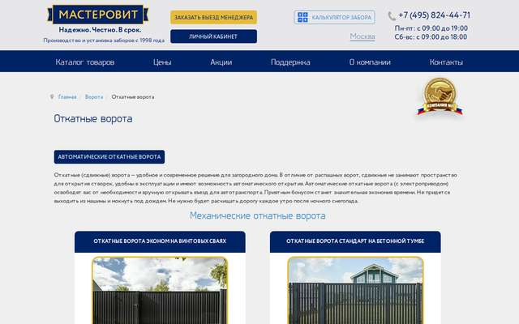</a><figcaption>Мастеровит</figcaption></figure><figure class="shot"><a class="zoom" href="img/gt_prof-zabory.ru_l.jpg" target="_blank" rel="noopener"></a><figcaption>ПрофЗаборы</figcaption></figure><figure class="shot"><a class="zoom" href="img/gt_zaborkin.ru_l.jpg" target="_blank" rel="noopener">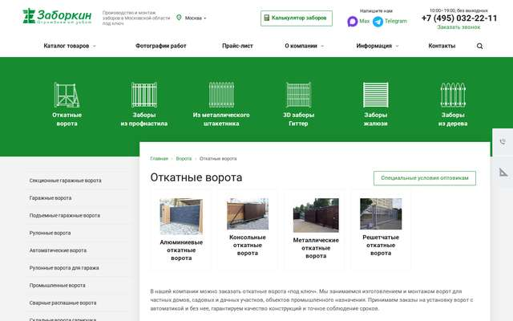</a><figcaption>Заборкин</figcaption></figure><figure class="shot"><a class="zoom" href="img/gt_zavodzaborov.ru_l.jpg" target="_blank" rel="noopener">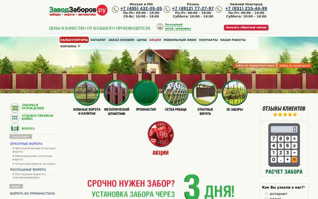</a><figcaption>ЗаводЗаборов</figcaption></figure><figure class="shot"><a class="zoom" href="img/gt_raduga-zaborov.ru_l.jpg" target="_blank" rel="noopener">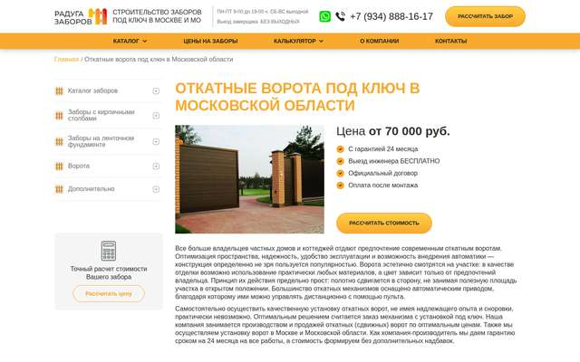</a><figcaption>Радуга заборов</figcaption></figure><figure class="shot"><a class="zoom" href="img/gt_zaborovo.ru_l.jpg" target="_blank" rel="noopener">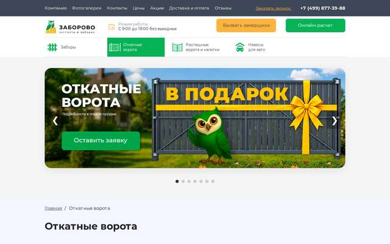</a><figcaption>Заборово</figcaption></figure><figure class="shot"><a class="zoom" href="img/gt_oblzabor.ru_l.jpg" target="_blank" rel="noopener">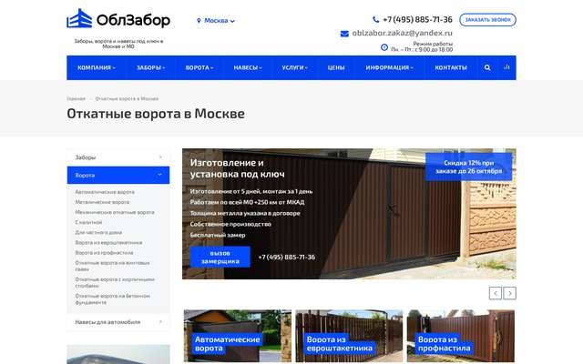</a><figcaption>Облзабор</figcaption></figure><figure class="shot"><a class="zoom" href="img/gt_dostup-zabor.ru_l.jpg" target="_blank" rel="noopener">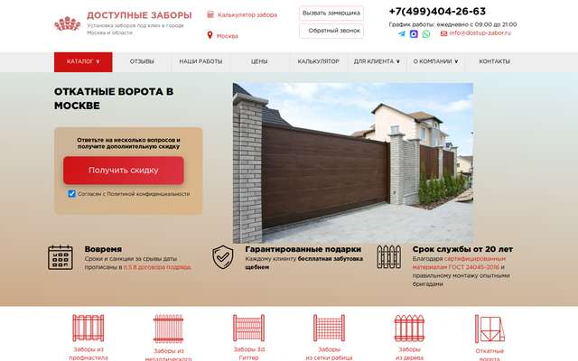</a><figcaption>Доступные заборы</figcaption></figure><figure class="shot"><a class="zoom" href="img/gt_zaboroff.ru_l.jpg" target="_blank" rel="noopener">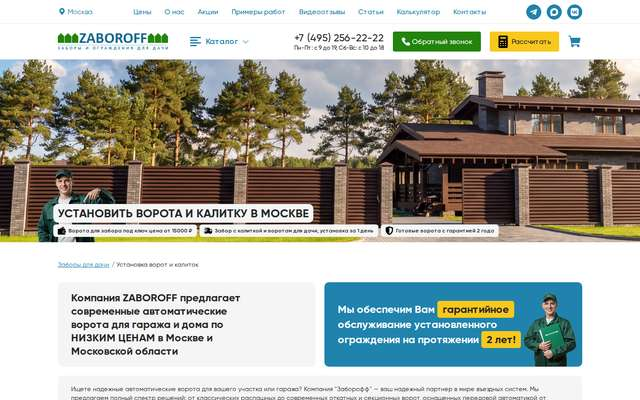</a><figcaption>Заборофф</figcaption></figure><figure class="shot"><a class="zoom" href="img/gt_pskzabor.ru_l.jpg" target="_blank" rel="noopener"></a><figcaption>ПСК Забор</figcaption></figure></div></section><section class="blk"><h3>Специалисты по откатным воротам</h3><p class="lead">8 специализированных игроков: страница откатных ворот, оффер, акции, условия оплаты и гарантии.</p><div class="tscroll"><table class="tbl small"><thead><tr><th>Сайт</th><th>Заголовок</th><th>Оффер</th><th>Акции</th><th>Предоплата</th><th>Гарантия</th></tr></thead><tbody><tr><th scope="row"><a href="https://alusys.ru" target="_blank" rel="noopener">alusys.ru</a></th><td>Производим и устанавливаем откатные ворота для частных домов и коммерческих объектов</td><td>15 лет; производство с 2010 г.; гарантия 5 лет; 2 пульта в подарок; срок 14 дней; замер и 3D-макет бесплатно</td><td>4 × 2 м: «средняя рыночная 110 000 ₽, со скидкой 99 000 ₽»; на свайном фундаменте 154 000 → 135 000 ₽; скидка 30% на любые размеры «с 6 июля по 22 октября»</td><td>Расчёт без предоплаты</td><td>5 лет</td></tr><tr><th scope="row"><a href="https://vorota750.ru" target="_blank" rel="noopener">vorota750.ru</a></th><td>Откатные ворота</td><td>Ворота без предоплаты; изготовление за 1 день; замер бесплатно; демонтаж старых ворот бесплатно; корзина и «купить в 1 клик»</td><td>Доставка бесплатно при заказе откатных ворот (таблица команды)</td><td>Без предоплаты</td><td>не найдено на странице</td></tr><tr><th scope="row"><a href="https://naves-pod-avto-msk.ru" target="_blank" rel="noopener">naves-pod-avto-msk.ru</a></th><td>Откатные ворота в Москве и Московской области на заказ</td><td>Производство за 2 дня, установка за 24 часа; предоплата от 10%; калькулятор 3D-модели ворот</td><td>не найдено</td><td>От 10%</td><td>Гарантия на монтаж (срок «года гарантии» без цифры в тексте)</td></tr><tr><th scope="row"><a href="https://otkatnie-vorota.com" target="_blank" rel="noopener">otkatnie-vorota.com</a></th><td>Установка откатных ворот «под ключ» в Москве и Московской области</td><td>Замер бесплатно; бригады со стажем 5–20 лет; гарантия 5 лет; таймер акции «Цены назад!»</td><td>Акция «Цены назад!» с таймером и полем телефона</td><td>не найдено</td><td>5 лет</td></tr><tr><th scope="row"><a href="https://gruppa-masterov.ru" target="_blank" rel="noopener">gruppa-masterov.ru</a></th><td>Производим ворота и заборы</td><td>Откатные ворота от 85 000 ₽; собственное производство; постгарантийное обслуживание; монтаж за 1 день; доставка бесплатно до 30 км</td><td>Акции «с 15 по 30 сентября 2025 года» (скидка 20% на обшивку, сигнальная лампа в подарок) на странице 20.10.2026</td><td>не найдено</td><td>12 месяцев на недочёты</td></tr><tr><th scope="row"><a href="https://metalsystems.ru" target="_blank" rel="noopener">metalsystems.ru</a></th><td>Откатные ворота и заборы под ключ</td><td>Более 10 лет; более 2 000 ворот в год; установка за 1 день; «цены ниже, чем у конкурентов»; квиз 5 шагов со скидкой или подарком</td><td>Скидка 10% за расчёт; сезонные скидки 2026; грунт ГФ-21 бесплатно</td><td>Есть рассрочка (в отзыве)</td><td>1 год</td></tr><tr><th scope="row"><a href="https://zabory-prestige.ru" target="_blank" rel="noopener">zabory-prestige.ru</a></th><td>Откатные ворота с установкой «под ключ»</td><td>Ширина 3–6 м, высота 1,5–3 м; сваи или армированная плита; смета за 10–15 минут; автоматика Алютех/Came/Nice</td><td>Зачёркнутые цены (−5…10%)</td><td>не найдено</td><td>Раздел гарантии (срок на странице ворот не указан)</td></tr><tr><th scope="row"><a href="https://atlantzabor.ru" target="_blank" rel="noopener">atlantzabor.ru</a></th><td>Изготовление откатных ворот под ключ в Москве и области</td><td>Более 1 000 объектов ежегодно; собственное производство; 73 модели в каталоге с корзиной</td><td>Скидки пенсионерам, постоянным клиентам и при комплексном заказе «забор + ворота + калитка»</td><td>До 30% в день договора, остаток после приёмки</td><td>2 года</td></tr></tbody></table></div><div class="shots"><figure class="shot"><a class="zoom" href="img/gt_alusys.ru_l.jpg" target="_blank" rel="noopener"></a><figcaption>alusys.ru</figcaption></figure><figure class="shot"><a class="zoom" href="img/gt_vorota750.ru_l.jpg" target="_blank" rel="noopener"></a><figcaption>vorota750.ru</figcaption></figure><figure class="shot"><a class="zoom" href="img/gt_naves-pod-avto-msk.ru_l.jpg" target="_blank" rel="noopener"></a><figcaption>naves-pod-avto-msk.ru</figcaption></figure><figure class="shot"><a class="zoom" href="img/gt_otkatnie-vorota.com_l.jpg" target="_blank" rel="noopener"></a><figcaption>otkatnie-vorota.com</figcaption></figure><figure class="shot"><a class="zoom" href="img/gt_gruppa-masterov.ru_l.jpg" target="_blank" rel="noopener"></a><figcaption>gruppa-masterov.ru</figcaption></figure><figure class="shot"><a class="zoom" href="img/gt_metalsystems.ru_l.jpg" target="_blank" rel="noopener"></a><figcaption>metalsystems.ru</figcaption></figure><figure class="shot"><a class="zoom" href="img/gt_zabory-prestige.ru_l.jpg" target="_blank" rel="noopener"></a><figcaption>zabory-prestige.ru</figcaption></figure><figure class="shot"><a class="zoom" href="img/gt_atlantzabor.ru_l.jpg" target="_blank" rel="noopener"></a><figcaption>atlantzabor.ru</figcaption></figure></div></section><aside class="obs"><span class="obs-k">Наблюдение</span><p>Специалисты продают скорость и производство: изготовление за 1–2 дня, «более 2 000 ворот в год», 3D-макет. Без предоплаты работают Алюсис и Ворота750. У Группы мастеров на странице висят акции сентября 2025 года.</p></aside><section class="blk"><h3>На что жалуются клиенты специалистов</h3><p class="lead">Доля тем в отзывах 1–3★ о четырёх специалистах (Алюсис, Металлические системы, Заборы Престиж, Ворота750), n=35. База меньше 30 по каждой компании — доли по компаниям незначимы.</p><div class="hb " role="img" aria-label="Жалобы на специалистов по воротам"><div class="hb-row"><div class="hb-lab">Связь</div><div class="hb-track"><div class="hb-line"><span class="hb-bar s2" style="--w:54.30%"></span><span class="hb-val">54,3%</span></div></div></div><div class="hb-row"><div class="hb-lab">Сроки</div><div class="hb-track"><div class="hb-line"><span class="hb-bar s2" style="--w:34.30%"></span><span class="hb-val">34,3%</span></div></div></div><div class="hb-row"><div class="hb-lab">Гарантия</div><div class="hb-track"><div class="hb-line"><span class="hb-bar s2" style="--w:25.70%"></span><span class="hb-val">25,7%</span></div></div></div><div class="hb-row"><div class="hb-lab">Материал</div><div class="hb-track"><div class="hb-line"><span class="hb-bar s2" style="--w:20.00%"></span><span class="hb-val">20,0%</span></div></div></div></div></section><aside class="obs"><span class="obs-k">Наблюдение</span><p>У специалистов по воротам главные жалобы — связь (54,3% против 28,4% у заборных компаний) и сроки (34,3% против 10,3%). Обещание срока монтажа и сервисного выезда в договоре закрывает эти темы.</p></aside><section class="blk"><h3>Откатные ворота на Яндекс Картах</h3><p><strong>Откатные ворота на картах — другой круг рекламодателей.</strong> <span class="tag tag-fact">факт</span> По «откатные ворота» в рекламе 27 компаний: производители и дилеры ворот и роллет (Ролсистем, Hormann — Северные врата, АвтоПроезд, Рол-тэк, Танком, Территория Ворот), ни одной компании из 10 полного разбора. В витринах цены откатных ворот: 38 800–57 800 ₽ (АвтоПроезд, 3 × 2 и 4 × 2 м), 53 000 ₽ (Hormann), 65 000 ₽ с приводом (ВиСмонтаж-М), 75 000 ₽ с установкой (М9), 90 000 ₽ проём 5 м (Dreamfence); привод — 14 000–17 000 ₽. Из списка специалистов по воротам реклама на картах — у alusys.ru и atlantzabor.ru (акция «−25% на все виды монтажа»).</p></section><aside class="obs"><span class="obs-k">Наблюдение</span><p>На картах ворота продают другие компании, чем заборы: производители и дилеры ворот. Цены в их витринах — 38 800–90 000 ₽ за ворота и 14 000–17 000 ₽ за привод; это ниже медиан сайтов, потому что в витрине чаще цена без монтажа или минимального размера (оценка).</p></aside><section class="blk"><h3>Оффер по откатным воротам для «Дома гирлянд»</h3><ul><li><strong>Автоматизация уже стоящих ворот.</strong> «Привод на ваши откатные ворота за 1 день: цена с монтажом и настройкой названа до выезда (рынок 30 000–51 200 ₽, 3 цены), проверка роликов и балки перед установкой, 3 года обслуживания». Основание: запросы о приводах +20,8% за год, зимний квартал — 21–23% годового спроса на приводы (исследование ворот).</li><li><strong>Пакет «забор + ворота».</strong> Итоговая сумма вместо «автоматика за 1 ₽ при заборе от 100 м» (masterovit.ru, zaborovo.ru): ворота 4 × 2 м с автоматикой по медиане рынка 103 025 ₽ (n=6), на сваях, с гарантией геометрии полотна после первой зимы; пакет 170 625–226 395 ₽ при 40–73 м забора (оценка).</li><li><strong>Сервис.</strong> Выезд мастера при сбое за 2 рабочих дня [параметр], годовой договор обслуживания для посёлков и СНТ (тендер юрлица — 192 тыс. ₽ в год, исследование ворот). Жалобы на специалистов по воротам — связь 54,3%, сроки 34,3% (n=35).</li><li><span class="tag tag-concl">вывод</span> Поиск по приводу в ноябре ограничен ёмкостью: около 55 кликов за 28 дней (оценка) и при конверсии 2% около 1 заявки; при клике 85–124 ₽ и конверсии 2% реклама — 111–161% чека привода; заявка на ворота с Авито у авитолога — 400–700 ₽. Проверка — гипотеза H8 (Авито).</li></ul></section><aside class="obs"><span class="obs-k">Наблюдение</span><p>Спрос смещается к уже стоящим воротам: запросы о приводах +20,8% за год при падении запросов о новых воротах на 20–55% (исследование ворот). Автоматизация стоящих ворот — небольшой растущий сегмент, его проверяют H5 и H8.</p></aside></section><section class="panel" id="predlozhenie" role="tabpanel" aria-labelledby="t-predlozhenie" hidden><header class="ph"><h2>Предложение</h2><p>Оффер против рынка, конструктор, УТП, SWOT</p></header><section class="blk"><h3>Целевой оффер против рынка</h3><p class="lead">Рынок оценён по исполнению: в 7 критериях балл складывается из обещания на сайте и жалоб в отзывах, в 2 — только из отзывов. «Дом гирлянд» оценён по обещанию: исполнения и отзывов ещё нет. Шкала дополнена 21.10 под целевой оффер (уровни 5 у пяти критериев, 4 — у двух, две новые строки), ни одна из 10 компаний под новые уровни не подпадает. Поэтому итог подан ролями критериев, сумма баллов победой не считается.</p><div class="tscroll"><table class="tbl"><thead><tr><th>Роль критерия</th><th>Критерии</th></tr></thead><tbody><tr><td>Обещание закрывает свободный критерий (рынок не закрывает, клиенту важно)</td><td>связь после оплаты, пакет «забор + ворота» с итоговой суммой, сервис автоматики 3 года</td></tr><tr><td>Обещание, которого нет ни у кого из 10 (уровни шкалы добавлены 21.10)</td><td>гарантия с весенним осмотром и сроком выезда, итоговая сумма с исключениями и доплатами 0 ₽, защита газона и уборка в акте, фото-акт скрытых работ и паспорт, неустойка в рублях, письменное КП с двумя вариантами</td></tr><tr><td>На уровне лучших обещаний рынка</td><td>срок 5 дней от договора, квалификация, прозрачная цена, бесплатный замер, стандарт конструкции, цена ворот 4 м, оплата после приёмки, демонтаж, мессенджеры, визуализация, нормы СНТ, квиз, посадочная</td></tr><tr><td>Ниже лучших обещаний рынка</td><td>покрытие, цена «от», фундамент, география, монтаж за 1 день, скорость ответа, скидки и подарки, толщина металла, бонус соседям, рассрочка</td></tr><tr><td>Не можем конкурировать на старте</td><td>качество монтажа по отзывам, отзывы на картах, производство, своя бригада, опыт и масштаб, доказательства на сайте</td></tr></tbody></table></div><p><strong>Оплата после приёмки — решение заказчика.</strong> В модели стратегии 19.10 — предоплата 50% по комплексу 480 тыс. ₽. Вариант оффера с предоплатой: «аванс 50% за материалы и изготовление ворот, остаток — после подписания фото-акта; сумма в договоре не меняется». По рубрике предоплата 50% — 0 баллов: так же, как у zaborkin.ru (от 50%); оплату после монтажа обещают 3 из 10 компаний. Промежуточный вариант — аванс только за привод и ворота.</p><details open><summary>Таблица по 38 критериям</summary><div class="det"><div class="tscroll"><table class="tbl small ovm"><thead><tr><th>Критерий</th><th>Рынок — исполнено: лучший / медиана</th><th>Рынок — лучшее обещание</th><th>«Дом гирлянд» — обещание</th><th>Что обещает «Дом гирлянд»</th><th>Компаний с обещанием не ниже</th><th>Роль</th></tr></thead><tbody><tr><th scope="row">Качество монтажа: ровно, калитка закрывается<small>ключевой · вес 70,0</small></th><td class="n">5 / 2,0</td><td class="n">н/п</td><td class="n dg">0</td><td>отзывов нет; механизм — фото-акт скрытых работ и приёмка с геометрией</td><td class="n">— (у «Дома гирлянд» 0)</td><td><span class="st st-open">на старте не конкурирует</span></td></tr><tr><th scope="row">Связь после оплаты: ответственный и статус работ<small>свободный · вес 63,4</small></th><td class="n">3 / 2,0</td><td class="n">3</td><td class="n dg">5</td><td>один координатор до конца гарантии, статус работ в мессенджере, срок ответа на обращение в договоре (рубрика 5)<span class="mark">шкала дополнена 21.10</span></td><td class="n">0</td><td><span class="st st-ok">закрывает свободный критерий</span></td></tr><tr><th scope="row">Антикоррозия и покраска<small>ключевой · вес 61,9</small></th><td class="n">5 / 3,0</td><td class="n">5</td><td class="n dg">4</td><td>порошковое покрытие каркасов и фото сварных швов в акте; гарантия покрытия 2 года (рубрика 4)<span class="mark">шкала дополнена 21.10</span></td><td class="n">1</td><td><span class="st st-part">ниже лучших обещаний</span></td></tr><tr><th scope="row">Гарантия: срок и одинаковость на всех страницах<small>обязательный · вес 61,6</small></th><td class="n">5 / 3,5</td><td class="n">4</td><td class="n dg">5</td><td>2 года с даты акта + весенний осмотр + срок выезда по гарантии в договоре (рубрика 5)<span class="mark">шкала дополнена 21.10</span></td><td class="n">0</td><td><span class="st st-ok">обещания нет ни у кого из 10</span></td></tr><tr><th scope="row">Фиксированная смета: цена после замера не меняется<small>ключевой · вес 40,1</small></th><td class="n">5 / 3,0</td><td class="n">4</td><td class="n dg">5</td><td>итоговая сумма в договоре, доплаты на объекте 0 ₽, список исключений письменно (рубрика 5)<span class="mark">шкала дополнена 21.10</span></td><td class="n">0</td><td><span class="st st-ok">обещания нет ни у кого из 10</span></td></tr><tr><th scope="row">Срок от договора до монтажа<small>обязательный · вес 36,8</small></th><td class="n">5 / 3,0</td><td class="n">5</td><td class="n dg">5</td><td>5 дней от договора до монтажа</td><td class="n">3</td><td><span class="st st-wait">на уровне лучших обещаний</span></td></tr><tr><th scope="row">Квалификация и консультация при первом контакте<small>ключевой · вес 35,6</small></th><td class="n">5 / 3,0</td><td class="n">5</td><td class="n dg">5</td><td>скрипт квалификации из стратегии 19.10: дом, материал, метры, ворота, сроки, адрес + просьба прислать план или фото<span class="mark">шкала дополнена 21.10</span></td><td class="n">1</td><td><span class="st st-wait">на уровне лучших обещаний</span></td></tr><tr><th scope="row">Прозрачность цены: таблицы с составом, итог без контакта<small>ключевой · вес 34,7</small></th><td class="n">5 / 3,0</td><td class="n">5</td><td class="n dg">5</td><td>итог без телефона и состав сметы на странице</td><td class="n">3</td><td><span class="st st-wait">на уровне лучших обещаний</span></td></tr><tr><th scope="row">Уровень цены: профнастил «от» с монтажом<small>ключевой · вес 31,5</small></th><td class="n">5 / 2,0</td><td class="n">5</td><td class="n dg">2</td><td>цена около медианы рынка 1 690 ₽/п.м. (по формуле оценки цены)</td><td class="n">6</td><td><span class="st st-part">ниже лучших обещаний</span></td></tr><tr><th scope="row">Аккуратность бригады и уборка участка<small>ключевой · вес 30,6</small></th><td class="n">4 / 3,0</td><td class="n">3</td><td class="n dg">4</td><td>защита газона и уборка — пункты акта приёмки (рубрика 4)<span class="mark">шкала дополнена 21.10</span></td><td class="n">0</td><td><span class="st st-ok">обещания нет ни у кого из 10</span></td></tr><tr><th scope="row">Бесплатный замер с консультацией на участке<small>обязательный · вес 29,9</small></th><td class="n">4 / 3,5</td><td class="n">4</td><td class="n dg">4</td><td>бесплатный технический выезд в течение 2 дней</td><td class="n">5</td><td><span class="st st-wait">на уровне лучших обещаний</span></td></tr><tr><th scope="row">Пакет «забор + ворота» с выгодой<small>свободный · вес 26,8</small></th><td class="n">5 / 2,0</td><td class="n">5</td><td class="n dg">5</td><td>итоговая сумма пакета «забор + ворота + калитка» на странице (рубрика 5)<span class="mark">шкала дополнена 21.10</span></td><td class="n">2</td><td><span class="st st-ok">закрывает свободный критерий</span></td></tr><tr><th scope="row">Фундамент и столбы (сваи, забутовка)<small>обязательный · вес 25,0</small></th><td class="n">5 / 4,0</td><td class="n">5</td><td class="n dg">4</td><td>сваи или забутовка по замеру; фото основания в акте</td><td class="n">4</td><td><span class="st st-part">ниже лучших обещаний</span></td></tr><tr><th scope="row">География выезда и страницы городов МО<small>обязательный · вес 18,1</small></th><td class="n">5 / 4,0</td><td class="n">5</td><td class="n dg">3</td><td>ограниченный радиус пилота (стратегия: ограниченная география)</td><td class="n">10</td><td><span class="st st-part">ниже лучших обещаний</span></td></tr><tr><th scope="row">Монтаж за 1 день<small>ключевой · вес 17,2</small></th><td class="n">5 / 4,0</td><td class="n">5</td><td class="n dg">4</td><td>монтаж 1–2 дня</td><td class="n">6</td><td><span class="st st-part">ниже лучших обещаний</span></td></tr><tr><th scope="row">Стандарт конструкции цифрами (лист, столбы, лаги, грунт)<small>ключевой · вес 16,0</small></th><td class="n">4 / 3,0</td><td class="n">4</td><td class="n dg">4</td><td>лист, столбы, лаги, грунт цифрами в смете</td><td class="n">3</td><td><span class="st st-wait">на уровне лучших обещаний</span></td></tr><tr><th scope="row">Скорость ответа на заявку<small>ключевой · вес 15,5</small></th><td class="n">5 / 2,5</td><td class="n">5</td><td class="n dg">4</td><td>SLA ответа до 5 минут (стратегия 19.10)</td><td class="n">4</td><td><span class="st st-part">ниже лучших обещаний</span></td></tr><tr><th scope="row">Сервис автоматики и послегарантийное обслуживание<small>свободный · вес 15,0</small></th><td class="n">5 / 1,5</td><td class="n">5</td><td class="n dg">5</td><td>3 года обслуживания автоматики</td><td class="n">1</td><td><span class="st st-ok">закрывает свободный критерий</span></td></tr><tr><th scope="row">Откатные ворота: открытая цена 4 м с автоматикой и без<small>ключевой · вес 11,7</small></th><td class="n">5 / 3,0</td><td class="n">5</td><td class="n dg">5</td><td>ворота 4 × 2 м с автоматикой и без — рядом в таблице</td><td class="n">2</td><td><span class="st st-wait">на уровне лучших обещаний</span></td></tr><tr><th scope="row">Скидки и подарки<small>обязательный · вес 10,7</small></th><td class="n">5 / 4,0</td><td class="n">5</td><td class="n dg">4</td><td>неценовой бонус к пакету: подсветка въезда или закладка кабеля под неё</td><td class="n">6</td><td><span class="st st-part">ниже лучших обещаний</span></td></tr><tr><th scope="row">Контроль толщины металла (микрометр, толщина в договоре)<small>второстепенный · вес 8,7</small></th><td class="n">5 / 3,0</td><td class="n">5</td><td class="n dg">4</td><td>микрометр на приёмке + толщина в договоре</td><td class="n">2</td><td><span class="st st-part">ниже лучших обещаний</span></td></tr><tr><th scope="row">Оплата после монтажа / размер предоплаты<small>второстепенный · вес 8,7</small></th><td class="n">5 / 2,5</td><td class="n">5</td><td class="n dg">5</td><td>оплата после приёмки (в стратегии 19.10 — предоплата 50%: решение заказчика)<span class="mark">решение заказчика: 0: вариант с предоплатой 50% по модели стратегии 19.10 — 0 по рубрике (≥ 50%)</span></td><td class="n">3</td><td><span class="st st-wait">на уровне лучших обещаний</span></td></tr><tr><th scope="row">Приёмка по акту, паспорт объекта<small>второстепенный · вес 6,6</small></th><td class="n">4 / 1,0</td><td class="n">4</td><td class="n dg">5</td><td>фото-акт скрытых работ + паспорт объекта (рубрика 5)<span class="mark">шкала дополнена 21.10</span></td><td class="n">0</td><td><span class="st st-ok">обещания нет ни у кого из 10</span></td></tr><tr><th scope="row">Рекомендация соседей и бонус за неё<small>второстепенный · вес 6,3</small></th><td class="n">5 / 0,0</td><td class="n">5</td><td class="n dg">0</td><td>в оффер не входит</td><td class="n">— (у «Дома гирлянд» 0)</td><td><span class="st st-part">ниже лучших обещаний</span></td></tr><tr><th scope="row">Демонтаж старого забора<small>второстепенный · вес 6,3</small></th><td class="n">4 / 0,0</td><td class="n">4</td><td class="n dg">4</td><td>демонтаж старого забора — отдельная опция</td><td class="n">2</td><td><span class="st st-wait">на уровне лучших обещаний</span></td></tr><tr><th scope="row">Собственное производство<small>второстепенный · вес 6,2</small></th><td class="n">5 / 3,5</td><td class="n">5</td><td class="n dg">0</td><td>производства нет (пилот без цеха)</td><td class="n">— (у «Дома гирлянд» 0)</td><td><span class="st st-open">на старте не конкурирует</span></td></tr><tr><th scope="row">Заявка в мессенджер (WhatsApp, Telegram, MAX)<small>второстепенный · вес 5,5</small></th><td class="n">5 / 4,0</td><td class="n">5</td><td class="n dg">5</td><td>WhatsApp, Telegram, MAX</td><td class="n">3</td><td><span class="st st-wait">на уровне лучших обещаний</span></td></tr><tr><th scope="row">Проект, образцы, визуализация на замере<small>второстепенный · вес 5,2</small></th><td class="n">4 / 2,0</td><td class="n">4</td><td class="n dg">4</td><td>визуальное согласование ворот и образцы на замере</td><td class="n">2</td><td><span class="st st-wait">на уровне лучших обещаний</span></td></tr><tr><th scope="row">Своя бригада, известная заранее<small>второстепенный · вес 5,0</small></th><td class="n">4 / 1,5</td><td class="n">4</td><td class="n dg">2</td><td>подрядные бригады под техконтролем; бригадир известен до монтажа</td><td class="n">5</td><td><span class="st st-open">на старте не конкурирует</span></td></tr><tr><th scope="row">Помощь с нормами СНТ и границами<small>второстепенный · вес 4,6</small></th><td class="n">4 / 1,0</td><td class="n">4</td><td class="n dg">4</td><td>консультация по нормам СНТ и границам на замере</td><td class="n">2</td><td><span class="st st-wait">на уровне лучших обещаний</span></td></tr><tr><th scope="row">Отзывы и рейтинг на картах (доля 1–3★)<small>второстепенный · вес 4,2</small></th><td class="n">5 / 3,0</td><td class="n">н/п</td><td class="n dg">0</td><td>отзывов нет</td><td class="n">— (у «Дома гирлянд» 0)</td><td><span class="st st-open">на старте не конкурирует</span></td></tr><tr><th scope="row">Ответственность за срыв сроков в договоре<small>второстепенный · вес 4,2</small></th><td class="n">4 / 0,0</td><td class="n">4</td><td class="n dg">5</td><td>неустойка в рублях за день переноса</td><td class="n">0</td><td><span class="st st-ok">обещания нет ни у кого из 10</span></td></tr><tr><th scope="row">Письменное КП или смета после замера<small>второстепенный · вес 3,1</small></th><td class="n">4 / 2,5</td><td class="n">4</td><td class="n dg">5</td><td>письменное КП: два варианта с исключениями (рубрика 5)<span class="mark">шкала дополнена 21.10</span></td><td class="n">0</td><td><span class="st st-ok">обещания нет ни у кого из 10</span></td></tr><tr><th scope="row">Опыт и масштаб, подтверждённые реестром<small>второстепенный · вес 2,4</small></th><td class="n">5 / 2,5</td><td class="n">5</td><td class="n dg">1</td><td>новое направление; опыт выездов «Дома гирлянд»</td><td class="n">10</td><td><span class="st st-open">на старте не конкурирует</span></td></tr><tr><th scope="row">Рассрочка и кредит<small>второстепенный · вес 2,2</small></th><td class="n">5 / 3,0</td><td class="n">5</td><td class="n dg">3</td><td>кредит через банк-партнёр</td><td class="n">6</td><td><span class="st st-part">ниже лучших обещаний</span></td></tr><tr><th scope="row">Квиз или калькулятор со сметой в мессенджер<small>второстепенный · вес 0,3</small></th><td class="n">5 / 3,5</td><td class="n">5</td><td class="n dg">5</td><td>квиз со сметой в мессенджер</td><td class="n">3</td><td><span class="st st-wait">на уровне лучших обещаний</span></td></tr><tr><th scope="row">Доказательства на сайте (видеоотзывы, номера договоров, карта объектов)<small>второстепенный · вес 0,3</small></th><td class="n">5 / 3,5</td><td class="n">5</td><td class="n dg">1</td><td>на старте кейсов нет; образец договора и фото-акта</td><td class="n">10</td><td><span class="st st-open">на старте не конкурирует</span></td></tr><tr><th scope="row">Посадочная: оффер на первом экране и скорость на телефоне<small>второстепенный · вес 0,0</small></th><td class="n">5 / 2,5</td><td class="n">5</td><td class="n dg">5</td><td>цель: условие без риска на первом экране, телефон ≥ 50/100 (страница не сделана)</td><td class="n">2</td><td><span class="st st-wait">на уровне лучших обещаний</span></td></tr></tbody></table></div></div></details></section><aside class="obs"><span class="obs-k">Наблюдение</span><p>Обещания закрывают три свободных критерия — связь после оплаты, пакет «забор + ворота» с итоговой суммой, сервис автоматики — и добавляют шесть обещаний, которых нет ни у кого из 10: гарантию с весенним осмотром, итоговую сумму с исключениями, защиту газона в акте, фото-акт и паспорт, неустойку в рублях, письменное КП. На старте целевой оффер не конкурирует по отзывам, производству, своей бригаде, опыту и кейсам.</p></aside><section class="blk"><h3>Общее, уникальное и оффер «Дома гирлянд»: диаграмма Венна</h3><p class="lead">Критерий у компании есть, если её оценка 3 и выше из 5. Общее — у 7–10 из 10 компаний, уникальное — у 1–2, середина рынка (3–6) вынесена под диаграмму. Круг оффера — обещание целевого оффера «Дома гирлянд» по той же шкале. На телефоне диаграмму можно прокрутить вбок.</p><div class="tscroll"><div style="min-width:760px"><!-- Диаграмма Венна критериев выбора. Цвета: var(--c1) общее, var(--c2) уникальное, var(--c3) наше; текст: var(--ink), var(--ink2). Источник: data/venn_criteria.csv; скрипт notes/scripts/synthesis/venn_values.py -->
<figure class="venn" style="margin:0">
<svg viewBox="0 0 960 930" width="100%" role="img" aria-labelledby="venn-t venn-d" style="max-width:960px;height:auto;font-family:inherit;display:block" xmlns="http://www.w3.org/2000/svg">
<title id="venn-t">Критерии выбора: общее у конкурентов, уникальное у отдельных, целевой оффер «Дома гирлянд»</title>
<desc id="venn-d">38 критериев. Общее (оценка 3+ у 7–10 из 10 компаний): 14. Уникальное (3+ у 1–2 компаний): 5. Середина рынка (3–6 компаний): 19. Целевой оффер закрывает 30, все — обещание.</desc>
<circle cx="255" cy="330" r="245" fill="var(--c1, #2f6fd6)" fill-opacity="0.12" stroke="var(--c1, #2f6fd6)" stroke-width="2"/>
<circle cx="735" cy="330" r="210" fill="var(--c2, #d9822b)" fill-opacity="0.12" stroke="var(--c2, #d9822b)" stroke-width="2"/>
<circle cx="480" cy="330" r="225" fill="var(--c3, #2e9e6a)" fill-opacity="0.12" stroke="var(--c3, #2e9e6a)" stroke-width="2"/>
<text x="120" y="36" font-size="13" fill="var(--c1, #2f6fd6)" font-weight="700" text-anchor="middle">ОБЩЕЕ У КОНКУРЕНТОВ</text>
<text x="120" y="53" font-size="11.5" fill="var(--ink2, #6e6e73)" font-weight="400" text-anchor="middle">оценка 3+ у 7–10 из 10 компаний</text>
<text x="845" y="58" font-size="13" fill="var(--c2, #d9822b)" font-weight="700" text-anchor="middle">УНИКАЛЬНОЕ У ОТДЕЛЬНЫХ</text>
<text x="845" y="75" font-size="11.5" fill="var(--ink2, #6e6e73)" font-weight="400" text-anchor="middle">оценка 3+ у 1–2 из 10 компаний</text>
<text x="480" y="598" font-size="13" fill="var(--c3, #2e9e6a)" font-weight="700" text-anchor="middle">НАШЕ: ЦЕЛЕВОЙ ОФФЕР «ДОМА ГИРЛЯНД»</text>
<text x="480" y="615" font-size="11.5" fill="var(--ink2, #6e6e73)" font-weight="400" text-anchor="middle">обещание 3+ по той же шкале; все пункты — обещание, исполнения нет</text>
<text x="128" y="290" font-size="12.5" fill="var(--ink, #1d1d1f)" font-weight="700" text-anchor="middle">Только у рынка: 2</text>
<text x="128" y="308" font-size="11" fill="var(--ink2, #6e6e73)" font-weight="400" text-anchor="middle">в оффере нет</text>
<text x="128" y="327" font-size="12" fill="var(--ink, #1d1d1f)" font-weight="400" text-anchor="middle">Своё производство</text>
<text x="128" y="344" font-size="12" fill="var(--ink, #1d1d1f)" font-weight="400" text-anchor="middle">Доказательства на сайте</text>
<text x="378" y="216" font-size="12.5" fill="var(--ink, #1d1d1f)" font-weight="700" text-anchor="middle">Обязательный минимум</text>
<text x="378" y="234" font-size="11" fill="var(--ink2, #6e6e73)" font-weight="400" text-anchor="middle">критериев: 12</text>
<text x="378" y="253" font-size="12" fill="var(--ink, #1d1d1f)" font-weight="400" text-anchor="middle">Гарантия ▲</text>
<text x="378" y="270" font-size="12" fill="var(--ink, #1d1d1f)" font-weight="400" text-anchor="middle">Фиксированная смета ▲</text>
<text x="378" y="287" font-size="12" fill="var(--ink, #1d1d1f)" font-weight="400" text-anchor="middle">Срок до монтажа</text>
<text x="378" y="304" font-size="12" fill="var(--ink, #1d1d1f)" font-weight="400" text-anchor="middle">Прозрачная цена</text>
<text x="378" y="321" font-size="12" fill="var(--ink, #1d1d1f)" font-weight="400" text-anchor="middle">Бесплатный замер</text>
<text x="378" y="338" font-size="12" fill="var(--ink, #1d1d1f)" font-weight="400" text-anchor="middle">Фундамент и столбы</text>
<text x="378" y="355" font-size="12" fill="var(--ink, #1d1d1f)" font-weight="400" text-anchor="middle">География по МО</text>
<text x="378" y="372" font-size="12" fill="var(--ink, #1d1d1f)" font-weight="400" text-anchor="middle">Конструкция цифрами</text>
<text x="378" y="389" font-size="12" fill="var(--ink, #1d1d1f)" font-weight="400" text-anchor="middle">Цена ворот 4 м</text>
<text x="378" y="406" font-size="12" fill="var(--ink, #1d1d1f)" font-weight="400" text-anchor="middle">Скидки и подарки</text>
<text x="378" y="423" font-size="12" fill="var(--ink, #1d1d1f)" font-weight="400" text-anchor="middle">Заявка в мессенджер</text>
<text x="378" y="440" font-size="12" fill="var(--ink, #1d1d1f)" font-weight="400" text-anchor="middle">Квиз со сметой</text>
<text x="616" y="262" font-size="12.5" fill="var(--ink, #1d1d1f)" font-weight="700" text-anchor="middle">Нужно догнать: 4</text>
<text x="616" y="282" font-size="12" fill="var(--ink, #1d1d1f)" font-weight="400" text-anchor="middle">Связь после оплаты ▲</text>
<text x="616" y="295" font-size="10.5" fill="var(--ink2, #6e6e73)" font-weight="400" text-anchor="middle">у prof-zabory · zaborkin</text>
<text x="616" y="314" font-size="12" fill="var(--ink, #1d1d1f)" font-weight="400" text-anchor="middle">Акт и паспорт объекта ▲</text>
<text x="616" y="327" font-size="10.5" fill="var(--ink2, #6e6e73)" font-weight="400" text-anchor="middle">у zaborkin</text>
<text x="616" y="346" font-size="12" fill="var(--ink, #1d1d1f)" font-weight="400" text-anchor="middle">Демонтаж старого</text>
<text x="616" y="359" font-size="10.5" fill="var(--ink2, #6e6e73)" font-weight="400" text-anchor="middle">у prof-zabory · zaborkin</text>
<text x="616" y="378" font-size="12" fill="var(--ink, #1d1d1f)" font-weight="400" text-anchor="middle">Неустойка за срок ▲</text>
<text x="616" y="391" font-size="10.5" fill="var(--ink2, #6e6e73)" font-weight="400" text-anchor="middle">у dostup</text>
<text x="838" y="300" font-size="12.5" fill="var(--ink, #1d1d1f)" font-weight="700" text-anchor="middle">Только у 1–2: 1</text>
<text x="838" y="318" font-size="11" fill="var(--ink2, #6e6e73)" font-weight="400" text-anchor="middle">в оффере нет</text>
<text x="838" y="337" font-size="12" fill="var(--ink, #1d1d1f)" font-weight="400" text-anchor="middle">Бонус за рекомендацию</text>
<text x="838" y="350" font-size="10.5" fill="var(--ink2, #6e6e73)" font-weight="400" text-anchor="middle">у prof-zabory · zaborovo</text>
<text x="515" y="486" font-size="12.5" fill="var(--ink, #1d1d1f)" font-weight="700" text-anchor="middle">Только у оффера: 0</text>
<text x="515" y="502" font-size="11" fill="var(--ink2, #6e6e73)" font-weight="400" text-anchor="middle">критериев нет;</text>
<text x="515" y="519" font-size="11.5" fill="var(--ink, #1d1d1f)" font-weight="400" text-anchor="middle">отстройка —</text>
<text x="515" y="534" font-size="11.5" fill="var(--ink, #1d1d1f)" font-weight="400" text-anchor="middle">уровнем ▲: 7</text>
<rect x="16" y="645" width="928" height="180" rx="10" fill="none" stroke="var(--ink2, #6e6e73)" stroke-dasharray="5 4" stroke-width="1.2"/>
<text x="32" y="669" font-size="12.5" fill="var(--ink, #1d1d1f)" font-weight="700" text-anchor="start">ВНЕ КРУГОВ: середина рынка — оценка 3+ у 3–6 из 10 компаний (19)</text>
<text x="32" y="691" font-size="12" fill="var(--c3, #2e9e6a)" font-weight="700" text-anchor="start">В оффере: 14</text>
<text x="32" y="711" font-size="12" fill="var(--ink, #1d1d1f)" font-weight="400" text-anchor="start">Антикоррозия, покраска</text>
<text x="32" y="728" font-size="12" fill="var(--ink, #1d1d1f)" font-weight="400" text-anchor="start">Консультация при контакте</text>
<text x="32" y="745" font-size="12" fill="var(--ink, #1d1d1f)" font-weight="400" text-anchor="start">Аккуратность, уборка ▲</text>
<text x="32" y="762" font-size="12" fill="var(--ink, #1d1d1f)" font-weight="400" text-anchor="start">Пакет «забор + ворота»</text>
<text x="32" y="779" font-size="12" fill="var(--ink, #1d1d1f)" font-weight="400" text-anchor="start">Монтаж за 1 день</text>
<text x="32" y="796" font-size="12" fill="var(--ink, #1d1d1f)" font-weight="400" text-anchor="start">Скорость ответа</text>
<text x="32" y="813" font-size="12" fill="var(--ink, #1d1d1f)" font-weight="400" text-anchor="start">Сервис автоматики</text>
<text x="262" y="711" font-size="12" fill="var(--ink, #1d1d1f)" font-weight="400" text-anchor="start">Контроль толщины</text>
<text x="262" y="728" font-size="12" fill="var(--ink, #1d1d1f)" font-weight="400" text-anchor="start">Оплата после монтажа</text>
<text x="262" y="745" font-size="12" fill="var(--ink, #1d1d1f)" font-weight="400" text-anchor="start">Образцы, визуализация</text>
<text x="262" y="762" font-size="12" fill="var(--ink, #1d1d1f)" font-weight="400" text-anchor="start">Нормы СНТ и границы</text>
<text x="262" y="779" font-size="12" fill="var(--ink, #1d1d1f)" font-weight="400" text-anchor="start">Письменное КП ▲</text>
<text x="262" y="796" font-size="12" fill="var(--ink, #1d1d1f)" font-weight="400" text-anchor="start">Рассрочка</text>
<text x="262" y="813" font-size="12" fill="var(--ink, #1d1d1f)" font-weight="400" text-anchor="start">Посадочная страница</text>
<text x="520" y="691" font-size="12" fill="var(--ink2, #6e6e73)" font-weight="700" text-anchor="start">В оффере нет: 5</text>
<text x="520" y="711" font-size="12" fill="var(--ink, #1d1d1f)" font-weight="400" text-anchor="start">Качество монтажа</text>
<text x="520" y="728" font-size="12" fill="var(--ink, #1d1d1f)" font-weight="400" text-anchor="start">Уровень цены</text>
<text x="520" y="745" font-size="12" fill="var(--ink, #1d1d1f)" font-weight="400" text-anchor="start">Своя бригада</text>
<text x="520" y="762" font-size="12" fill="var(--ink, #1d1d1f)" font-weight="400" text-anchor="start">Отзывы и рейтинг</text>
<text x="520" y="779" font-size="12" fill="var(--ink, #1d1d1f)" font-weight="400" text-anchor="start">Опыт и масштаб</text>
<text x="16" y="851" font-size="11.5" fill="var(--ink2, #6e6e73)" font-weight="400" text-anchor="start">Порог: критерий у компании есть, если её оценка 3 и выше из 5 (оценки 10 компаний полного разбора).</text>
<text x="16" y="868" font-size="11.5" fill="var(--ink2, #6e6e73)" font-weight="400" text-anchor="start">«Общее» — оценка 3+ у 7–10 компаний, «уникальное» — у 1–2; эти круги не пересекаются: у критерия одно число компаний.</text>
<text x="16" y="885" font-size="11.5" fill="var(--ink2, #6e6e73)" font-weight="400" text-anchor="start">Круг оффера — обещание целевого оффера «Дома гирлянд» 3+ по той же шкале; исполнения и отзывов у нового игрока нет.</text>
<text x="16" y="902" font-size="11.5" fill="var(--ink2, #6e6e73)" font-weight="400" text-anchor="start">▲ — уровень обещания, которого нет ни у одной из 10 компаний. Списки — по убыванию веса критерия. Дата: 21.10.2026.</text>
</svg>
</figure>
</div></div><details><summary>Таблица: 38 критериев по зонам</summary><div class="det"><div class="tscroll"><table class="tbl small"><thead><tr><th>Критерий</th><th>Вес</th><th>Компаний с оценкой 3+</th><th>Зона</th><th>Оффер «Дома гирлянд»</th></tr></thead><tbody><tr><th scope="row">Качество монтажа: ровно, калитка закрывается<small>C41 · ключевой</small></th><td class="n">70,0</td><td class="n">4</td><td>вне кругов: середина рынка (3–6), в оффере нет</td><td>не закрывает (обещание 0 из 5)</td></tr><tr><th scope="row">Связь после оплаты: ответственный и статус работ<small>C28 · свободный</small></th><td class="n">63,4</td><td class="n">2</td><td>уникальное ∩ оффер: нужно догнать</td><td>обещание</td></tr><tr><th scope="row">Антикоррозия и покраска<small>C18 · ключевой</small></th><td class="n">61,9</td><td class="n">6</td><td>вне кругов: середина рынка (3–6), наше</td><td>обещание</td></tr><tr><th scope="row">Гарантия: срок и одинаковость на всех страницах<small>C27 · обязательный</small></th><td class="n">61,6</td><td class="n">8</td><td>общее ∩ оффер: обязательный минимум</td><td>обещание</td></tr><tr><th scope="row">Фиксированная смета: цена после замера не меняется<small>C09 · ключевой</small></th><td class="n">40,1</td><td class="n">7</td><td>общее ∩ оффер: обязательный минимум</td><td>обещание</td></tr><tr><th scope="row">Срок от договора до монтажа<small>C14 · обязательный</small></th><td class="n">36,8</td><td class="n">9</td><td>общее ∩ оффер: обязательный минимум</td><td>обещание</td></tr><tr><th scope="row">Квалификация и консультация при первом контакте<small>C42 · ключевой</small></th><td class="n">35,6</td><td class="n">6</td><td>вне кругов: середина рынка (3–6), наше</td><td>обещание</td></tr><tr><th scope="row">Прозрачность цены: таблицы с составом, итог без контакта<small>C08 · ключевой</small></th><td class="n">34,7</td><td class="n">7</td><td>общее ∩ оффер: обязательный минимум</td><td>обещание</td></tr><tr><th scope="row">Уровень цены: профнастил «от» с монтажом<small>C07 · ключевой</small></th><td class="n">31,5</td><td class="n">4</td><td>вне кругов: середина рынка (3–6), в оффере нет</td><td>не закрывает (обещание 2 из 5)</td></tr><tr><th scope="row">Аккуратность бригады и уборка участка<small>C29 · ключевой</small></th><td class="n">30,6</td><td class="n">6</td><td>вне кругов: середина рынка (3–6), наше</td><td>обещание</td></tr><tr><th scope="row">Бесплатный замер с консультацией на участке<small>C33 · обязательный</small></th><td class="n">29,9</td><td class="n">9</td><td>общее ∩ оффер: обязательный минимум</td><td>обещание</td></tr><tr><th scope="row">Пакет «забор + ворота» с выгодой<small>C22 · свободный</small></th><td class="n">26,8</td><td class="n">3</td><td>вне кругов: середина рынка (3–6), наше</td><td>обещание</td></tr><tr><th scope="row">Фундамент и столбы (сваи, забутовка)<small>C19 · обязательный</small></th><td class="n">25,0</td><td class="n">10</td><td>общее ∩ оффер: обязательный минимум</td><td>обещание</td></tr><tr><th scope="row">География выезда и страницы городов МО<small>C31 · обязательный</small></th><td class="n">18,1</td><td class="n">10</td><td>общее ∩ оффер: обязательный минимум</td><td>обещание</td></tr><tr><th scope="row">Монтаж за 1 день<small>C15 · ключевой</small></th><td class="n">17,2</td><td class="n">6</td><td>вне кругов: середина рынка (3–6), наше</td><td>обещание</td></tr><tr><th scope="row">Стандарт конструкции цифрами (лист, столбы, лаги, грунт)<small>C17 · ключевой</small></th><td class="n">16,0</td><td class="n">7</td><td>общее ∩ оффер: обязательный минимум</td><td>обещание</td></tr><tr><th scope="row">Скорость ответа на заявку<small>C16 · ключевой</small></th><td class="n">15,5</td><td class="n">5</td><td>вне кругов: середина рынка (3–6), наше</td><td>обещание</td></tr><tr><th scope="row">Сервис автоматики и послегарантийное обслуживание<small>C23 · свободный</small></th><td class="n">15,0</td><td class="n">3</td><td>вне кругов: середина рынка (3–6), наше</td><td>обещание</td></tr><tr><th scope="row">Откатные ворота: открытая цена 4 м с автоматикой и без<small>C21 · ключевой</small></th><td class="n">11,7</td><td class="n">7</td><td>общее ∩ оффер: обязательный минимум</td><td>обещание</td></tr><tr><th scope="row">Скидки и подарки<small>C12 · обязательный</small></th><td class="n">10,7</td><td class="n">9</td><td>общее ∩ оффер: обязательный минимум</td><td>обещание</td></tr><tr><th scope="row">Контроль толщины металла (микрометр, толщина в договоре)<small>C05 · второстепенный</small></th><td class="n">8,7</td><td class="n">6</td><td>вне кругов: середина рынка (3–6), наше</td><td>обещание</td></tr><tr><th scope="row">Оплата после монтажа / размер предоплаты<small>C10 · второстепенный</small></th><td class="n">8,7</td><td class="n">5</td><td>вне кругов: середина рынка (3–6), наше</td><td>обещание</td></tr><tr><th scope="row">Приёмка по акту, паспорт объекта<small>C30 · второстепенный</small></th><td class="n">6,6</td><td class="n">1</td><td>уникальное ∩ оффер: нужно догнать</td><td>обещание</td></tr><tr><th scope="row">Рекомендация соседей и бонус за неё<small>C13 · второстепенный</small></th><td class="n">6,3</td><td class="n">2</td><td>уникальное: в оффере нет</td><td>не закрывает (обещание 0 из 5)</td></tr><tr><th scope="row">Демонтаж старого забора<small>C24 · второстепенный</small></th><td class="n">6,3</td><td class="n">2</td><td>уникальное ∩ оффер: нужно догнать</td><td>обещание</td></tr><tr><th scope="row">Собственное производство<small>C04 · второстепенный</small></th><td class="n">6,2</td><td class="n">8</td><td>общее: в оффере нет</td><td>не закрывает (обещание 0 из 5)</td></tr><tr><th scope="row">Заявка в мессенджер (WhatsApp, Telegram, MAX)<small>C34 · второстепенный</small></th><td class="n">5,5</td><td class="n">8</td><td>общее ∩ оффер: обязательный минимум</td><td>обещание</td></tr><tr><th scope="row">Проект, образцы, визуализация на замере<small>C26 · второстепенный</small></th><td class="n">5,2</td><td class="n">5</td><td>вне кругов: середина рынка (3–6), наше</td><td>обещание</td></tr><tr><th scope="row">Своя бригада, известная заранее<small>C20 · второстепенный</small></th><td class="n">5,0</td><td class="n">3</td><td>вне кругов: середина рынка (3–6), в оффере нет</td><td>не закрывает (обещание 2 из 5)</td></tr><tr><th scope="row">Помощь с нормами СНТ и границами<small>C25 · второстепенный</small></th><td class="n">4,6</td><td class="n">3</td><td>вне кругов: середина рынка (3–6), наше</td><td>обещание</td></tr><tr><th scope="row">Отзывы и рейтинг на картах (доля 1–3★)<small>C01 · второстепенный</small></th><td class="n">4,2</td><td class="n">6</td><td>вне кругов: середина рынка (3–6), в оффере нет</td><td>не закрывает (обещание 0 из 5)</td></tr><tr><th scope="row">Ответственность за срыв сроков в договоре<small>C06 · второстепенный</small></th><td class="n">4,2</td><td class="n">1</td><td>уникальное ∩ оффер: нужно догнать</td><td>обещание</td></tr><tr><th scope="row">Письменное КП или смета после замера<small>C44 · второстепенный</small></th><td class="n">3,1</td><td class="n">5</td><td>вне кругов: середина рынка (3–6), наше</td><td>обещание</td></tr><tr><th scope="row">Опыт и масштаб, подтверждённые реестром<small>C03 · второстепенный</small></th><td class="n">2,4</td><td class="n">5</td><td>вне кругов: середина рынка (3–6), в оффере нет</td><td>не закрывает (обещание 1 из 5)</td></tr><tr><th scope="row">Рассрочка и кредит<small>C11 · второстепенный</small></th><td class="n">2,2</td><td class="n">6</td><td>вне кругов: середина рынка (3–6), наше</td><td>обещание</td></tr><tr><th scope="row">Квиз или калькулятор со сметой в мессенджер<small>C35 · второстепенный</small></th><td class="n">0,3</td><td class="n">9</td><td>общее ∩ оффер: обязательный минимум</td><td>обещание</td></tr><tr><th scope="row">Доказательства на сайте (видеоотзывы, номера договоров, карта объектов)<small>C37 · второстепенный</small></th><td class="n">0,3</td><td class="n">9</td><td>общее: в оффере нет</td><td>не закрывает (обещание 1 из 5)</td></tr><tr><th scope="row">Посадочная: оффер на первом экране и скорость на телефоне<small>C36 · второстепенный</small></th><td class="n">0,0</td><td class="n">5</td><td>вне кругов: середина рынка (3–6), наше</td><td>обещание</td></tr></tbody></table></div></div></details></section><aside class="obs"><span class="obs-k">Наблюдение</span><p>Отдельного критерия, которого нет ни у кого, не нашлось: у каждого из 38 критериев оценку 3+ имеет хотя бы одна компания, зона «только наше» пуста. Обязательный минимум — 12 критериев (39,7% веса), оффер закрывает все 12. Отставание — там, где сильны 1–2 компании: связь после оплаты (вес 63,4, 2-й по весу), акт и паспорт объекта, демонтаж, неустойка. Отстройка возможна уровнем обещания: в 7 критериях (28,6% веса) обещание выше всех 10 компаний, но у 6 из 7 этот уровень шкалы добавлен 21.10 под оффер (в исходной шкале выше рынка только неустойка в рублях), а все 30 закрытых критериев пока обещание, исполнения нет. Вне оффера — качество монтажа (вес 70,0, первый) и уровень цены.</p></aside><section class="blk"><h3>Явные и скрытые ценности</h3><p class="lead">Эксплицитная — клиент называет сам (уточнение запроса или 2% отзывов и больше); имплицитная — вслух почти не называется. Цитаты без имён.</p><div class="tscroll"><table class="tbl small"><thead><tr><th>Имплицитный критерий</th><th>Тип</th><th>Уверенность</th><th>Скрытый мотив</th><th>Цитата</th></tr></thead><tbody><tr><th scope="row">Ответственность за срыв сроков в договоре</th><td>имплицитная</td><td>средняя (у порога 2%)</td><td>M5 цена потерянного дня</td><td>«Пришлось отпрашиваться с работы на понедельник.»<small>Яндекс Карты, raduga-zaborov.ru, 06.06.2022, 2★</small></td></tr><tr><th scope="row">Письменное КП или смета после замера</th><td>имплицитная</td><td>средняя (у порога 2%)</td><td>M2 страх неподконтрольной цены</td><td>«…на руках у меня несколько коммерческих предложений и замерщик из другой компании тоже уже выезжал.»<small>Яндекс Карты, zavodzaborov.ru, 08.08.2026, 1★</small></td></tr><tr><th scope="row">Опыт и масштаб, подтверждённые реестром</th><td>имплицитная</td><td>средняя (у порога 2%)</td><td>—</td><td>«Вроде контора давно на рынке, должна следить за имиджем, но нет.»<small>Яндекс Карты, masterovit.ru, 03.05.2025, 2★</small></td></tr><tr><th scope="row">Квиз или калькулятор со сметой в мессенджер</th><td>имплицитная</td><td>высокая</td><td>M2 страх неподконтрольной цены</td><td>«Все объяснили, скинули несколько вариантов в вотсап.»<small>Яндекс Карты, raduga-zaborov.ru, 17.06.2022, 5★</small></td></tr><tr><th scope="row">Доказательства на сайте (видеоотзывы, номера договоров, карта объектов)</th><td>имплицитная</td><td>высокая</td><td>—</td><td>«Менеджер предложил посмотреть примеры работ на фото, нам понравился евроштакетник»<small>Яндекс Карты, zaborkin.ru, 28.05.2022, 5★</small></td></tr><tr><th scope="row">Посадочная: оффер на первом экране и скорость на телефоне</th><td>имплицитная</td><td>высокая</td><td>—</td><td>«И ещё у них очень удобный сайт - всё ясно и понятно, и есть онлайн-калькулятор заборов.»<small>Яндекс Карты, masterovit.ru, 08.07.2023, 5★</small></td></tr></tbody></table></div></section><aside class="obs"><span class="obs-k">Наблюдение</span><p>Эксплицитных ценностей — 32, имплицитных — 6: неустойка, письменное КП, опыт и масштаб, квиз со сметой, доказательства на сайте, посадочная страница. Вес по голосу клиента их занижает (1,4% суммы), хотя рынок в них вкладывается: квиз и доказательства на сайте есть у 9 из 10. Оффер закрывает 4 из 6 имплицитных; не закрыты опыт и масштаб и доказательства на сайте. Порог «клиент называет сам» — 2% отзывов или одно уточнение запроса (допущение; при 1% имплицитных осталось бы 3).</p></aside><section class="blk"><h3>Конструктор оффера: три варианта</h3><p class="lead">Сегмент → боль → обещание → механизм → доказательства → снятие рисков → бонусы → срочность → следующий шаг. «Говорят то же» — сколько из 10 компаний обещают то же по рубрике оценки.</p><article class="variant"><h4>В1. Забор под ключ: сумма из договора</h4><p class="oneline">«Забор под ключ: сумма в договоре до замера и после, оплата после приёмки, весенний осмотр после первой зимы».</p><div class="tscroll"><table class="tbl small"><thead><tr><th>Блок</th><th>Содержание</th><th>Основание</th><th>Говорят то же, из 10</th><th>Отличимость</th></tr></thead><tbody><tr><th scope="row">Сегмент и персонаж</th><td>владельцы частных домов и участков в МО, запрос «забор под ключ»; в квизе вопрос «дом / дача»</td><td class="ev">дача 8,0% и дом 1,0–3,1% текстов отзывов</td><td class="n">—</td><td>—</td></tr><tr><th scope="row">Главная боль</th><td>цена растёт после замера; ржавчина в первый год; после оплаты не дозвониться</td><td class="ev">смета и замер 18,0%, материал 27,7%, связь 28,4% негатива (n=851); прозвон: «на замере обычно +20%»</td><td class="n">—</td><td>—</td></tr><tr><th scope="row">Обещание результата</th><td>ровный забор за 1–2 дня монтажа по сумме из договора</td><td class="ev">«монтаж за 1 день» — 7,7% позитива; срок от договора 5 дней — как у рынка</td><td class="n">6</td><td><span class="st st-open">есть у рынка</span></td></tr><tr><th scope="row">Механизм (технология)</th><td>технический выезд с образцами в течение 2 дней → письменное КП: два варианта с исключениями → договор с составом цифрами → монтаж бригадой под техконтролем → фото-акт скрытых работ (микрометр, глубина столбов, швы) → паспорт объекта</td><td class="ev">КП прислала 1 компания из прозвона; фото-акт и паспорт — только QR-паспорт zaborkin.ru</td><td class="n">1</td><td><span class="st st-wait">почти свободно</span></td></tr><tr><th scope="row">Доказательства</th><td>образец договора и фото-акта на сайте; состав сметы цифрами; первые объекты с фото и городом</td><td class="ev">стандарт цифрами есть у 7 из 10; образец договора — dostup-zabor.ru, p-z-z.ru</td><td class="n">3</td><td><span class="st st-open">есть у рынка</span></td></tr><tr><th scope="row">Снятие рисков</th><td>итоговая сумма в договоре, доплаты на объекте 0 ₽ (список исключений письменно); оплата после приёмки; неустойка в рублях за день переноса; гарантия 2 года с весенним осмотром</td><td class="ev">фиксацию сметы обещают 7 из 10; оплата после монтажа — 3 из 10; неустойка в рублях — 0; весенний осмотр — 0</td><td class="n">0</td><td><span class="st st-ok">свободно</span></td></tr><tr><th scope="row">Бонусы (неценовые)</th><td>весенний осмотр и регулировка калитки; паспорт объекта; защита газона и уборка — пункты акта</td><td class="ev">рынок дарит щебень, мангал, грядку, дровницу (прозвон, сайты); весенний осмотр и паспорт — у 0 и 1 компании</td><td class="n">0</td><td><span class="st st-ok">свободно</span></td></tr><tr><th scope="row">Честная срочность</th><td>свободные монтажные дни до промерзания — по графику бригад на сайте; после — запись на весну с ценой октября</td><td class="ev">таймеры без даты — sales.prof-zabory.ru, p-z-z.ru; «до 25/26 октября» сдвигается у oblzabor.ru</td><td class="n">0</td><td><span class="st st-ok">свободно</span></td></tr><tr><th scope="row">CTA</th><td>«Получить два варианта сметы в мессенджер за 2 часа»</td><td class="ev">смета в мессенджер — у 3 из 10; предрасчёт до 2 часов — стратегия 19.10</td><td class="n">3</td><td><span class="st st-open">есть у рынка</span></td></tr></tbody></table></div></article><article class="variant"><h4>В2. Въездная группа под ключ: забор + откатные ворота + автоматика + калитка</h4><p class="oneline">«Въездная группа в одной смете: забор, ворота, автоматика и подсветка — одна бригада и гарантия геометрии после первой зимы».</p><div class="tscroll"><table class="tbl small"><thead><tr><th>Блок</th><th>Содержание</th><th>Основание</th><th>Говорят то же, из 10</th><th>Отличимость</th></tr></thead><tbody><tr><th scope="row">Сегмент и персонаж</th><td>владелец дома постоянного проживания в МО; пакет 170–226 тыс. ₽ (оценка), по прозвону 350–450 тыс. ₽</td><td class="ev">позиционирование стратегии 19.10 «въездная группа в архитектуре дома»; прозвон 21.10</td><td class="n">—</td><td>—</td></tr><tr><th scope="row">Главная боль</th><td>несколько подрядчиков и смет; ворота перекосило после зимы; не дозвониться по гарантии</td><td class="ev">ворота и автоматика 6,0%, фундамент и столбы 8,2%, гарантия 27,6% (n=851); у специалистов по воротам связь 54,3%, сроки 34,3% (n=35); «в феврале их выперло и столб скрутило»</td><td class="n">—</td><td>—</td></tr><tr><th scope="row">Обещание результата</th><td>въезд открывается с пульта, забор и ворота в одном стиле — одна смета, одна бригада, одна гарантия</td><td class="ev">итоговой суммы пакета нет ни на одной из 13 страниц; по телефону пакет с воротами называют все</td><td class="n">2</td><td><span class="st st-wait">почти свободно</span></td></tr><tr><th scope="row">Механизм (технология)</th><td>три варианта въезда с ценами → визуальное согласование ворот → основание под ворота по замеру → закладка кабеля под автоматику и подсветку → пусконаладка с протоколом</td><td class="ev">три варианта с ценами дала 1 компания в прозвоне (730 / 810 / 950 тыс. ₽); образцы или шоу-рум на замере — 2 из 10</td><td class="n">2</td><td><span class="st st-wait">почти свободно</span></td></tr><tr><th scope="row">Доказательства</th><td>таблица ворот 4 × 2 м: механика и автоматика рядом, бренд привода, состав</td><td class="ev">открытая цена 4 × 2 м — prof-zabory.ru, zavodzaborov.ru</td><td class="n">2</td><td><span class="st st-wait">почти свободно</span></td></tr><tr><th scope="row">Снятие рисков</th><td>итоговая сумма пакета в договоре; гарантия геометрии полотна после первой зимы; 3 года обслуживания автоматики; неустойка за срок</td><td class="ev">3 года обслуживания — только prof-zabory.ru; гарантия геометрии после зимы — 0</td><td class="n">1</td><td><span class="st st-wait">почти свободно</span></td></tr><tr><th scope="row">Бонусы (неценовые)</th><td>подсветка въезда или закладка кабеля под неё; весенняя регулировка ворот</td><td class="ev">рынок: автоматика, рама или свая за 1 ₽ (masterovit.ru, zaborovo.ru) — ценовые; подсветка — 0</td><td class="n">0</td><td><span class="st st-ok">свободно</span></td></tr><tr><th scope="row">Честная срочность</th><td>изготовление ворот 5 дней — монтаж до промерзания по графику; после — договор на весну с фиксацией</td><td class="ev">изготовление 5 дней — у всех в прозвоне</td><td class="n">—</td><td>—</td></tr><tr><th scope="row">CTA</th><td>«Три варианта въезда с ценами — в мессенджер сегодня»</td><td class="ev">стратегия 19.10, оффер 7</td><td class="n">0</td><td><span class="st st-ok">свободно</span></td></tr></tbody></table></div></article><article class="variant"><h4>В3. Автоматизация уже стоящих откатных ворот</h4><p class="oneline">«Привод на ваши откатные ворота за 1 день: цена с монтажом до выезда и 3 года обслуживания».</p><div class="tscroll"><table class="tbl small"><thead><tr><th>Блок</th><th>Содержание</th><th>Основание</th><th>Говорят то же, из 10</th><th>Отличимость</th></tr></thead><tbody><tr><th scope="row">Сегмент и персонаж</th><td>владельцы механических откатных ворот в Москве и МО</td><td class="ev">запросы о приводах +20,8% за год; зимний квартал — 21–23% года (исследование ворот)</td><td class="n">—</td><td>—</td></tr><tr><th scope="row">Главная боль</th><td>выходить из машины открывать ворота; автоматика ломается, мастер не приезжает</td><td class="ev">ворота и автоматика 6,0% негатива (n=851); у специалистов по воротам связь 54,3% (n=35)</td><td class="n">—</td><td>—</td></tr><tr><th scope="row">Обещание результата</th><td>привод на ваши ворота за 1 день, цена с монтажом и настройкой названа до выезда</td><td class="ev">рынок 30 000–51 200 ₽ (3 цены); на сайтах 10 компаний услуга почти не упакована</td><td class="n">1</td><td><span class="st st-wait">почти свободно</span></td></tr><tr><th scope="row">Механизм (технология)</th><td>диагностика роликов и балки по фото до выезда → привод (Alutech, DoorHan, Nice) → пусконаладка с протоколом проверки фотоэлементов и разблокировки → инструктаж</td><td class="ev">чек-лист монтажа стратегии 19.10: «проверка автоматики, защитных устройств и разблокировки»</td><td class="n">0</td><td><span class="st st-ok">свободно</span></td></tr><tr><th scope="row">Доказательства</th><td>цена с монтажом и бренд привода на странице; протокол пусконаладки</td><td class="ev">zaborkin.ru: комплект 31 200 ₽ + установка 20 000 ₽</td><td class="n">1</td><td><span class="st st-wait">почти свободно</span></td></tr><tr><th scope="row">Снятие рисков</th><td>3 года обслуживания привода; выезд при сбое за 2 рабочих дня [параметр]</td><td class="ev">3 года обслуживания — prof-zabory.ru</td><td class="n">1</td><td><span class="st st-wait">почти свободно</span></td></tr><tr><th scope="row">Бонусы (неценовые)</th><td>GSM-модуль или подсветка въезда как опция; весенняя регулировка</td><td class="ev">GSM-ворота в ассортименте dostup-zabor.ru</td><td class="n">1</td><td><span class="st st-wait">почти свободно</span></td></tr><tr><th scope="row">Честная срочность</th><td>монтаж привода возможен зимой — свободные окна на ближайшую неделю</td><td class="ev">сезон приводов ровнее новых ворот (исследование ворот)</td><td class="n">—</td><td>—</td></tr><tr><th scope="row">CTA</th><td>«Пришлите фото ворот — цена с монтажом за 30 минут»</td><td class="ev">квалификация по фото — стратегия 19.10</td><td class="n">0</td><td><span class="st st-ok">свободно</span></td></tr></tbody></table></div></article><article class="variant"><h4>Оффер стратегии 19.10</h4><div class="tscroll"><table class="tbl small"><thead><tr><th>Блок</th><th>Содержание</th><th>Основание</th><th>Говорят то же, из 10</th><th>Отличимость</th></tr></thead><tbody><tr><th scope="row">Два варианта ограждения под бюджет</th><td>Два варианта ограждения под бюджет</td><td class="ev">таблицы комплектаций «Эконом / Стандарт» — masterovit.ru, zaborkin.ru, prof-zabory.ru; в прозвоне все дают одну базовую комплектацию</td><td class="n">3</td><td><span class="st st-na">частично</span></td></tr><tr><th scope="row">Полный расчёт въездной группы</th><td>Полный расчёт въездной группы</td><td class="ev">по телефону пакет с воротами называют все (350–450 тыс. ₽); на сайтах итоговой суммы нет ни у кого</td><td class="n">на сайтах 0; по телефону все</td><td><span class="st st-na">частично</span></td></tr><tr><th scope="row">Визуальное согласование ворот</th><td>Визуальное согласование ворот</td><td class="ev">образцы или шоу-рум — masterovit.ru, p-z-z.ru; 3D-макет — alusys.ru (специалист вне 10)</td><td class="n">2</td><td><span class="st st-wait">почти свободно</span></td></tr><tr><th scope="row">Подбор забора под архитектуру дома</th><td>Подбор забора под архитектуру дома</td><td class="ev">дизайн-проект — prof-zabory.ru; архитектурный проект — pskzabor.ru; эскиз — zaborkin.ru</td><td class="n">3</td><td><span class="st st-na">частично</span></td></tr><tr><th scope="row">Забор, ворота и калитка в одной смете</th><td>Забор, ворота и калитка в одной смете</td><td class="ev">все компании прозвона считают с воротами; на сайтах — поштучно</td><td class="n">на сайтах 0; по телефону все</td><td><span class="st st-na">есть у рынка по телефону</span></td></tr><tr><th scope="row">Проверка возможности автоматизации ворот</th><td>Проверка возможности автоматизации ворот</td><td class="ev">не найдено у 10 компаний</td><td class="n">0</td><td><span class="st st-ok">свободно</span></td></tr><tr><th scope="row">Три варианта въезда с ценами</th><td>Три варианта въезда с ценами</td><td class="ev">1 компания прозвона прислала 3 варианта (730 / 810 / 950 тыс. ₽); на сайтах — 0</td><td class="n">на сайтах 0; в прозвоне 1</td><td><span class="st st-wait">почти свободно</span></td></tr><tr><th scope="row">Подбор решения для участка с уклоном</th><td>Подбор решения для участка с уклоном</td><td class="ev">FAQ об уклоне — zabor-dlya-vseh.site; prof-zabory.ru после расчёта: «учтёт рельеф, уклоны»; в отзывах хвалят замерщика за уклон</td><td class="n">2</td><td><span class="st st-na">частично</span></td></tr><tr><th scope="row">Замена старого забора с демонтажем</th><td>Замена старого забора с демонтажем</td><td class="ev">демонтаж — prof-zabory.ru, zaborkin.ru</td><td class="n">2</td><td><span class="st st-wait">почти свободно</span></td></tr><tr><th scope="row">Въезд с освещением и автоматикой</th><td>Въезд с освещением и автоматикой</td><td class="ev">подсветку въезда не предлагает никто из 10; совпадает с компетенцией «Дома гирлянд»</td><td class="n">0</td><td><span class="st st-ok">свободно</span></td></tr></tbody></table></div></article></section><aside class="obs"><span class="obs-k">Наблюдение</span><p>Самый отличимый — вариант 2 «въездная группа в одной смете»: во всех шести блоках с подсчётом то же говорят 0–2 компании. У варианта 1 свободны риски, бонусы и срочность, обещание и доказательства есть у рынка. Вариант 3 почти свободен, но объём поиска мал: около 55 кликов за 28 дней в ноябре (оценка).</p></aside><section class="blk"><h3>Трансформационная идея и эмоции до и после</h3><p class="lead">Было → стало по логике, эмоциям и технологии отдельно для оффера, результата после монтажа и после первой зимы. Основание — цитаты из отзывов и прозвона.</p><h4>Трансформационная идея: оффер</h4><div class="tscroll"><table class="tbl small tt"><thead><tr><th>Слой</th><th>Было</th><th>Стало</th><th>Основание</th></tr></thead><tbody><tr><th scope="row">оффер<small>Логика</small></th><td>цена «от», которая на замере растёт на 20% и больше; три сметы несопоставимого состава</td><td>итоговая сумма в договоре, два варианта КП с исключениями, состав цифрами</td><td class="ev">«После приезда замерщика цена увеличилась на 70%, это у них обычное дело.» (Мастеровит, 1★); прозвон: «эта цена обычно на замере увеличивается на 20%»</td></tr><tr><th scope="row">оффер<small>Эмоции</small></th><td>недоверие и страх, что после предоплаты бросят</td><td>спокойствие: оплата после приёмки, один координатор до конца гарантии</td><td class="ev">«Как в предыдущих негативных отзывах написано, после предоплаты начинаются проблемы.» (Заборкин, 1★)</td></tr><tr><th scope="row">оффер<small>Технологии</small></th><td>менеджер продаёт по телефону с калькулятора, бригада «как повезёт»</td><td>квалификация по скрипту и фото участка, техвыезд, договор с неустойкой в рублях, статус работ в мессенджере</td><td class="ev">«С бригадой как повезет, лотерея.» (Заборово, 1★)</td></tr></tbody></table></div><h4>Трансформационная идея: результат после монтажа и после первой зимы</h4><div class="tscroll"><table class="tbl small tt"><thead><tr><th>Слой</th><th>Было</th><th>Стало</th><th>Основание</th></tr></thead><tbody><tr><th scope="row">результат после монтажа<small>Логика</small></th><td>доплаты на объекте за «сложный грунт», не хватило материала</td><td>смонтировано по смете без доплат, фото-акт скрытых работ подписан</td><td class="ev">пересказ: бригада потребовала 30 тыс. ₽ к договору на 182 тыс. ₽ за «тяжёлый грунт» (Радуга заборов, 2★)</td></tr><tr><th scope="row">результат после монтажа<small>Эмоции</small></th><td>стыдно перед соседями за кривую линию</td><td>ровный забор и въезд, сосед спрашивает подрядчика</td><td class="ev">«…уже порекомендовала компанию соседу — он тоже заказал здесь установку забора.» (Заборово, 5★)</td></tr><tr><th scope="row">результат после монтажа<small>Технологии</small></th><td>толщина и глубина столбов не проверяются глазом</td><td>толщина микрометром, глубина столбов и швы — в фото-акте и паспорте объекта</td><td class="ev">«В договоре толщина профнастила 0,4, по факту привезли 0,3.» (Радуга заборов, 1★)</td></tr><tr><th scope="row">после первой зимы<small>Логика</small></th><td>столбы выдавило, калитку перекосило, гарантия «не гарантийный случай»</td><td>весенний осмотр и регулировка по графику, выезд по гарантии в срок из договора</td><td class="ev">«После зимы выдавило столбы — в итоге 2-й год пытаюсь добиться исправления ситуации.» (Мастеровит, 2★)</td></tr><tr><th scope="row">после первой зимы<small>Эмоции</small></th><td>обида: гарантия закончилась, а краска отваливается</td><td>уверенность: покрытие под гарантией 2 года, приедут сами</td><td class="ev">«…краска стала отваливаться кусками, а под ней ржавчина, только теперь гарантия закончилась…» (ЗаводЗаборов, 1★)</td></tr><tr><th scope="row">после первой зимы<small>Технологии</small></th><td>ворота «ушли» после морозов</td><td>основание под ворота по замеру, протокол пусконаладки, регулировка весной</td><td class="ev">«…забор то гулять не ушёл, а ворота ушли, в феврале их выперло и столб скрутило.» (Радуга заборов, 1★)</td></tr></tbody></table></div><h4>Эмоции до и после: оффер</h4><div class="tscroll"><table class="tbl small tt"><thead><tr><th>Слой</th><th>Было</th><th>Стало</th><th>Основание</th></tr></thead><tbody><tr><th scope="row">оффер (обещание)<small>Имеет</small></th><td>три сметы с разной комплектацией и цена «от»</td><td>два варианта КП с исключениями и итоговой суммой</td><td class="ev">прозвон: КП прислала 1 компания, «некрасивый, просто цифры»</td></tr><tr><th scope="row">оффер (обещание)<small>Чувствует</small></th><td>«после замера цена вырастет», «после оплаты не дозвонишься»</td><td>контроль: сумма, дата и неустойка записаны до оплаты</td><td class="ev">«Смета, рассчитанная после выезда замерщика, в 1,5 раза выше той, что в предварительном расчёте.» (Заборкин, 1★)</td></tr><tr><th scope="row">оффер (обещание)<small>Обычный день</small></th><td>обзвон компаний, выезды замерщиков за 2–4 тыс. ₽</td><td>одно сообщение с фото участка — два варианта в мессенджер за 2 часа</td><td class="ev">прозвон: выезд 2 000–4 000 ₽</td></tr><tr><th scope="row">оффер (обещание)<small>Статус</small></th><td>клиент, которого «дожимают» скидкой «со скидкой будет …»</td><td>заказчик проекта въезда, которому показывают варианты</td><td class="ev">прозвон: все сразу дают скидку без размера</td></tr></tbody></table></div><h4>Эмоции до и после: результат</h4><div class="tscroll"><table class="tbl small tt"><thead><tr><th>Слой</th><th>Было</th><th>Стало</th><th>Основание</th></tr></thead><tbody><tr><th scope="row">результат после монтажа<small>Имеет</small></th><td>старый забор или его нет, механические ворота</td><td>ровный забор, ворота с пульта, паспорт объекта</td><td class="ev">«Ребята сделали всю работу всего за один день!» (Заборофф, 5★)</td></tr><tr><th scope="row">результат после монтажа<small>Чувствует</small></th><td>тревога: «доплатите на месте»</td><td>спокойствие: «указанная стоимость не изменилась»</td><td class="ev">«Указанная в смете стоимость работ после выезда замерщика не изменилась.» (Заборово, 5★)</td></tr><tr><th scope="row">результат после монтажа<small>Обычный день</small></th><td>выйти из машины открыть ворота в снег; отпроситься с работы под перенос монтажа</td><td>въезд с пульта; монтаж в названный день, отчёт с фото</td><td class="ev">«Бригада работает аккуратно, мусор убрали.» (Заборкин, 5★)</td></tr><tr><th scope="row">результат после монтажа<small>Статус</small></th><td>неровная линия видна соседям</td><td>аккуратный фасад участка, сосед заказывает там же</td><td class="ev">соседи — 6,6% негатива и 5,7% позитива (n=851 / 3 985)</td></tr><tr><th scope="row">после первой зимы<small>Имеет</small></th><td>перекошенная калитка, ржавые швы</td><td>отрегулированные ворота и калитка, покрытие без коррозии или под гарантией</td><td class="ev">«В декабре начались морозы и опять калитку перекосило (на замок не закрывается).» (Мастеровит, 2★)</td></tr><tr><th scope="row">после первой зимы<small>Чувствует</small></th><td>«кормят завтраками» по гарантии</td><td>компания приехала на весенний осмотр сама</td><td class="ev">«…он около 2-х месяцев кормит завтраками "приедем обязательно и исправим".» (Алюсис, 3★)</td></tr><tr><th scope="row">после первой зимы<small>Обычный день</small></th><td>звонки и переписка о гарантийном выезде</td><td>выезд в срок из договора, один координатор</td><td class="ev">«Два дня по телефону никто не отвечал.» (Доступные заборы, 2★)</td></tr><tr><th scope="row">после первой зимы<small>Статус</small></th><td>жалоба в отзывах</td><td>рекомендация соседям после весеннего осмотра</td><td class="ev">гипотеза; проверяется долей отзывов после осмотра</td></tr></tbody></table></div></section><aside class="obs"><span class="obs-k">Наблюдение</span><p>Обещание оффера проверяется дважды: в день приёмки (сумма не изменилась, акт подписан) и после первой зимы (столбы, калитка, покрытие). Вторая проверка — то, о чём клиенты пишут в негативных отзывах чаще всего.</p></aside><section class="blk"><h3>Целевой продукт по 11 вопросам</h3><p class="lead">Продукт собран из лучших решений рынка; у кого взято — в скобках. Основной персонаж — гипотеза.</p><p><strong>Основной персонаж</strong> <span class="tag tag-hyp">гипотеза</span>:</p>
<ul><li>популярность: «дача / СНТ / садовый участок» — 8,0% текстов; «дом» — 1,0% (коттедж, ИЖС, частный дом) или 3,1% (с любым словом «дом»); 89–91% отзывов тип участка не называют <span class="tag tag-fact">факт</span>;</li><li>чек: дом постоянного проживания со штакетником или жалюзи и откатными воротами даёт пакет 350–450 тыс. ₽ по прозвону (консервативно 170–226 тыс. ₽) против забора с медианой сумм в отзывах 259 825 ₽ (консервативно 68–123 тыс. ₽); данных о марже по сегментам нет;</li><li>опыт: клиенты «Дома гирлянд» — владельцы частных домов; исследование заборов (13.10.2026) рекомендует средний B2C через существующую базу <span class="tag tag-concl">вывод исследования</span>.</li><li>Выбор: владелец частного дома постоянного проживания в МО, нужен забор и автоматический въезд. Дачный сегмент по отзывам больше; в H1 и H4 заявки разделяются вопросом квиза «дом / дача», база клиентов проверяется гипотезой H6.</li></ul>
<p><strong>11 вопросов</strong> (собрано из лучших решений рынка; у кого взято — в скобках):</p>
<ol><li>Цель клиента: закрытый ровный участок с автоматическим въездом за 1–2 дня монтажа, по сумме из договора, без поездок «на разборки» после оплаты.</li><li>Путь клиента: заявка в мессенджер или квиз, ответ до 15 минут (zaborkin.ru — 2 минуты) → итоговая смета в мессенджер в течение часа по фото и кадастровой карте (raduga-zaborov.ru, zabor-dlya-vseh.site) → бесплатный замер с образцами в течение 2 дней (masterovit.ru, p-z-z.ru) → договор: сумма, состав цифрами, дата монтажа, неустойка → монтаж своей бригадой, бригадир звонит накануне (sales.prof-zabory.ru) → приёмка по фото-акту с микрометром (masterovit.ru) → оплата после приёмки (dostup-zabor.ru) → паспорт объекта (zaborkin.ru) → весенний осмотр → обслуживание автоматики 3 года (prof-zabory.ru).</li><li>Как выглядит: евроштакетник, жалюзи или двусторонний профнастил в цвет RAL; откатные ворота и калитка в тон; по желанию подсветка столбов и въезда.</li><li>Как применяется: участок ИЖС, проём 4 м; ворота с пульта или телефона.</li><li>Характеристики (стандарт рынка): лист 0,4 мм, столбы 60×60×2, лаги 40×20, заглубление до 1,5 м или винтовые сваи, порошковая окраска каркасов (prof-zabory.ru, zaborovo.ru); ворота 4 × 2 м на сваях, привод с фотоэлементами и лампой (prof-zabory.ru).</li><li>Скрытые возможности: закладка кабеля под автоматику и подсветку при монтаже забора <span class="tag tag-hyp">гипотеза</span>.</li><li>Примеры: дом с машиной — въезд без выхода из машины зимой; общая граница с соседом — ровная линия по согласованной схеме.</li><li>Доказательства: ГОСТ 31174-2017 на ворота (добровольный), сертификаты производителя приводов, статус установщика производителя; отзывов на старте нет — первые 20–30 объектов с фото и картой.</li><li>Сравнение с рынком: оплата после приёмки (3 из 10), итоговая сумма пакета (0 из 13 страниц), неустойка в рублях (0 из 10), проверка после зимы (0 из 10), связь после оплаты закрыта у 2 из 10.</li><li>Опции: демонтаж старого забора (2 из 10), подсветка въезда, GSM-модуль ворот, навес, вывоз мусора.</li><li>Ограничения: нет производства, отзывов и масштаба; монтаж зимой ограничен промерзанием; цена около медианы рынка (1 690 ₽/п.м. «от»); оплата после приёмки требует оборотных средств (около 2,0–3,5 млн ₽ на 10 объектов при базовом чеке, оценка; при авансе 50% — 0,7–1,2 млн ₽); осенью бригады делятся с гирляндами.</li></ol></section><section class="blk"><h3>УТП: идея и три выгоды</h3><p class="lead">Суммы неустойки, сроки выезда и порядок оплаты — параметры на решение заказчика.</p><p><strong>Одна фраза:</strong> «Забор и въезд под ключ: сумма из договора, оплата после приёмки, проверка после первой зимы».</p>
<p><strong>УТП = идея + три выгоды</strong> (суммы неустойки и сроки выезда — параметры на решение заказчика):</p>
<ol><li><strong>Твёрдая итоговая цена:</strong> сумма за забор и ворота записана в договоре после бесплатного замера, доплаты на объекте — 0 ₽; оплата после приёмки [параметр на решение заказчика; вариант — аванс 50% за материалы, остаток после фото-акта]. Закрывает смету и замер (18,0% негатива).</li><li><strong>Точная дата монтажа:</strong> 5 дней от договора, монтаж 1–2 дня, бригадир звонит накануне, неустойка в рублях за каждый день переноса [параметр]. Закрывает сроки (10,3%).</li><li><strong>Зимостойкая гарантия 2 года:</strong> весенний осмотр и регулировка ворот и калитки бесплатно, выезд по гарантии за 3 рабочих дня [параметр], один ответственный до конца гарантии. Закрывает гарантию (27,6%), связь (28,4%), фундамент после зимы (8,2%).</li></ol>
<p>Анатомия оффера: ядро — забор и ворота под ключ с фото-актом; бонусы — подсветка въезда или закладка кабеля, демонтаж старого забора; гарантия — неустойка за срок и весенний осмотр; срочность — реальная: число монтажных дней бригад до промерзания и запись на весну; название — «Периметр под ключ»; цена и оплата — итоговая сумма; оплата после приёмки или аванс 50% (решение заказчика); рассрочка через банк. <span class="tag tag-hyp">гипотеза</span> Скидка как главный мотив слабо отличает: скидки и подарки в оффере у 10 из 10, в отзыве ВК — «все скидки это маркетинг».</p>
<p>Сильные и слабые стороны против рынка. Сильные: обещания в договоре по трём из первых пяти критериев голоса клиента (связь после оплаты, гарантия, смета) и по двум другим свободным (пакет, сервис автоматики); по покрытию обещание ниже лучшего на рынке, качество монтажа на старте не подтверждено отзывами. Слабые: нет отзывов, производства и масштаба; оплата после приёмки требует оборотки.</p>
<p><strong>Идеи усиления</strong> <span class="tag tag-hyp">гипотеза</span>:</p>
<ol><li>Пакеты с итоговой суммой для 6, 10 и 12 соток на первом экране — нет ни на одной из 13 страниц.</li><li>«Пришлите смету другой компании — пересчитаем по тому же составу» с таблицей 8 параметров; на рынке есть только у zaborkin.ru.</li><li>Связка с основным бизнесом: подсветка въезда и столбов в пакете; закладка кабеля под автоматику и свет при монтаже.</li><li>«Весна по цене октября»: договор и дата монтажа сейчас, цена закреплена, хранение материала (как у prof-zabory.ru и zavodzaborov.ru).</li></ol></section><aside class="obs"><span class="obs-k">Наблюдение</span><p>Скидки и подарки есть в оффере у 10 из 10 компаний, в прозвоне скидку без размера дают все — скидка как главный мотив слабо отличает. Твёрдая цена, точная дата и гарантия после зимы закрывают смету (18,0% жалоб), сроки (10,3%), гарантию (27,6%) и связь после оплаты (28,4%).</p></aside><section class="blk"><h3>SWOT «Дома гирлянд» против рынка</h3><div class="swot"><div class="swq sw-s"><h4>Сильные стороны</h4><ul><li>клиентская база владельцев частных домов (первый канал по исследованию заборов)</li><li>CRM, маркетинг и опыт выездов (стратегия 19.10)</li><li>компетенция в освещении — подсветка въезда, которую не предлагает никто из 10</li><li>нет накопленного негатива (у лидера по объёму 31,9% 1–3★ на Яндекс Картах)</li></ul></div><div class="swq sw-w"><h4>Слабые стороны</h4><ul><li>нет отзывов, кейсов и масштаба</li><li>нет производства</li><li>нет экспертизы в ограждениях, зависимость от подрядчиков (стратегия 19.10)</li><li>осенью бригады и внимание делятся с гирляндами</li><li>оплата после приёмки требует около 2,0 млн ₽ на 10 заборов и 2,7–3,5 млн ₽ на 10 пакетов при базовом чеке (оценка)</li></ul></div><div class="swq sw-o"><h4>Возможности</h4><ul><li>свободные критерии: связь после оплаты (вес 63,4, оценка 3+ у 2 из 10), пакет с итоговой суммой (0 из 13 страниц), сервис автоматики (1 из 10)</li><li>письменное КП (1 компания из прозвона)</li><li>приводы +20,8% за год</li><li>объявлений «откатные ворота под ключ с автоматикой» у 5 доменов почти нет (съём 21.10)</li><li>4 из 10 компаний без рекламы на Яндекс Картах</li></ul></div><div class="swq sw-t"><h4>Угрозы</h4><ul><li>«ворота / автоматика / свая за 1 ₽» у masterovit.ru и zaborovo.ru</li><li>бюджет Директа masterovit.ru около 518 тыс. ₽ в месяц (Spywords, нижняя оценка), клик 85–124 ₽ (по запросам 71–245 ₽)</li><li>у всех 10 первых карточек Яндекс Карт реклама</li><li>верх выдачи Авито занят продвижением (44 из 50) — это конкуренция за показ, окупаемость из этого не следует</li><li>ввод жилья в МО −29,6% (январь–август 2026)</li><li>НДС на УСН с 2027 года</li><li>сезон — январь 17–38% мая (Вордстат, 2024–2026)</li></ul></div></div></section><section class="blk"><h3>Рекомендации: слабая сторона → возможность → способ</h3><p><span class="tag tag-hyp">гипотеза; решение за заказчиком</span></p>
<div class="tscroll"><table class="tbl"><thead><tr><th>Слабая сторона</th><th>Возможность</th><th>Каким способом</th></tr></thead><tbody><tr><td>нет отзывов и кейсов</td><td>клиенты «Дома гирлянд» уже доверяют бренду</td><td>H6: рассылка и звонок по базе; первые 20–30 объектов с фото-актом и картой; запрос отзыва после весеннего осмотра</td></tr><tr><td>нет масштаба и производства</td><td>рынок бьётся металлом и скидками, а связь после оплаты не закрыта</td><td>позиционирование «въездная группа с одной ответственной компанией»; в оффере обещания после оплаты: координатор, срок выезда, весенний осмотр</td></tr><tr><td>нет экспертизы, подрядные бригады</td><td>фото-акт скрытых работ и паспорт объекта есть только у 1 из 10</td><td>технический эксперт и чек-листы замера, поставщика, монтажа из стратегии; фото-акт как часть продукта</td></tr><tr><td>дорогой клик в поиске (85–124 ₽, по запросам 71–245 ₽)</td><td>чек пакета по прозвону 350–450 тыс. ₽: реклама поиска — 10,5–19,7% чека при конверсии 2%; Директ по «откатные ворота под ключ с автоматикой» занят слабо</td><td>H2 (пакет) — первый в поиске; H1 (забор) окупается по марже при чеке 259 825 ₽ только при клике около 85 ₽; H8 (Авито) — по кейсу (обращение 230 ₽, закрытие 2,3%) реклама 3,8% базового чека, но кейс один</td></tr><tr><td>оборотка при оплате после приёмки (около 2,0–3,5 млн ₽ на 10 объектов при базовом чеке, оценка)</td><td>продажа на весну с фиксацией цены (prof-zabory.ru, zavodzaborov.ru уже хранят материал)</td><td>H3 «весна по цене октября»; вариант оффера с авансом 50% за материалы или только за привод и ворота — решение заказчика</td></tr><tr><td>осенняя загрузка бригад гирляндами</td><td>спрос на заборы в ноябре–январе падает (январь — 17–38% мая, Вордстат)</td><td>ограничить радиус и число объектов пилота; монтажи заборов — весной, приводы — зимой (вариант 3)</td></tr></tbody></table></div></section><aside class="obs"><span class="obs-k">Наблюдение</span><p>Главная слабая сторона на старте — отсутствие отзывов и кейсов; её закрывают база клиентов «Дома гирлянд» (H6) и фото-акты первых 20–30 объектов. Оплата после приёмки требует оборотных денег — вариант с авансом 50% остаётся решением заказчика.</p></aside><section class="blk"><h3>Десять офферов стратегии заказчика: статус на рынке</h3><p class="lead">Офферы из стратегии «Дома гирлянд» от 19.10.2026 против сайтов и прозвона.</p><div class="tscroll"><table class="tbl"><thead><tr><th>Оффер стратегии</th><th>У рынка (из 10)</th><th>Статус</th><th>Основание</th></tr></thead><tbody><tr><td>Два варианта ограждения под бюджет</td><td>3</td><td>частично</td><td>таблицы «Эконом / Стандарт» на сайтах; в прозвоне все дают одну базовую комплектацию</td></tr><tr><td>Полный расчёт въездной группы</td><td>на сайтах 0; по телефону все</td><td>частично</td><td>итоговой суммы пакета на сайтах нет; по телефону называют 350–450 тыс. ₽</td></tr><tr><td>Визуальное согласование ворот</td><td>2</td><td>почти свободно</td><td>образцы (masterovit.ru), шоу-рум (p-z-z.ru)</td></tr><tr><td>Подбор забора под архитектуру дома</td><td>3</td><td>частично</td><td>дизайн-проект, архитектурный проект, эскиз</td></tr><tr><td>Забор, ворота и калитка в одной смете</td><td>на сайтах 0; по телефону все</td><td>есть у рынка по телефону</td><td>в письменном виде — 1 компания прозвона</td></tr><tr><td>Проверка возможности автоматизации ворот</td><td>0</td><td>свободно</td><td>—</td></tr><tr><td>Три варианта въезда с ценами</td><td>на сайтах 0; в прозвоне 1</td><td>почти свободно</td><td>730 / 810 / 950 тыс. ₽ у одной компании</td></tr><tr><td>Подбор решения для участка с уклоном</td><td>2</td><td>частично</td><td>FAQ об уклоне; сообщение prof-zabory.ru после расчёта</td></tr><tr><td>Замена старого забора с демонтажем</td><td>2</td><td>почти свободно</td><td>prof-zabory.ru, zaborkin.ru</td></tr><tr><td>Въезд с освещением и автоматикой</td><td>0</td><td>свободно</td><td>совпадает с компетенцией «Дома гирлянд»</td></tr></tbody></table></div>
<p><span class="tag tag-concl">вывод</span> Свободны два оффера стратегии: проверка возможности автоматизации ворот и въезд с освещением и автоматикой. Почти свободны три: визуальное согласование, три варианта въезда с ценами, замена с демонтажем. В голосе клиента они весят мало (демонтаж 6,3, проект и визуализация 5,2). Первые критерии по голосу клиента — связь после оплаты, гарантия, покрытие, смета; в офферы стратегии они входят через «без скрытых доплат», «один координатор», «доступный гарантийный сервис» (список незакрытых потребностей).</p></section><aside class="obs"><span class="obs-k">Наблюдение</span><p>Свободны два оффера стратегии: проверка возможности автоматизации ворот и въезд с освещением и автоматикой. Почти свободны три: визуальное согласование, три варианта въезда с ценами, замена с демонтажем.</p></aside></section><section class="panel" id="gipotezy" role="tabpanel" aria-labelledby="t-gipotezy" hidden><header class="ph"><h2>Гипотезы</h2><p>Тест рекламы с 22.10.2026: три сценария чека</p></header><section class="blk"><h3>Окупаемость при трёх сценариях чека</h3><p class="lead">Доля рекламы в чеке = цена заказа / чек при базовом сценарии трафика. Консервативный чек — модель «длина × цена «от»»; базовый — медиана сумм заказов в отзывах (забор, 259 825 ₽, n=20) и прозвон 21.10 (пакет 350–450 тыс. ₽); верхний — третий квартиль сумм в отзывах и КП конкурента 730–950 тыс. ₽. Цена клика поиска — диапазон 85–124 ₽ (Keys.so — Spywords), крайние 71–245 ₽. Все цифры — оценка.</p><div class="legend"><span><span class="st st-ok">≤ 11% чека</span> реклама не больше 11% чека</span><span><span class="st st-wait">по марже</span> реклама в пределах валовой маржи 25%</span><span><span class="st st-part">на границе</span> зависит от цены клика</span><span><span class="st st-open">не окупается</span> реклама больше маржи</span></div><div class="tscroll"><table class="tbl mxt"><thead><tr><th>Гипотеза · бюджет · цена заявки и заказа (база)</th><th>Консервативный чек</th><th>Базовый чек</th><th>Верхний чек</th></tr></thead><tbody><tr><th scope="row"><strong>H1</strong> Яндекс Директ, поиск<small>60 000 ₽ · заявка 4 270–6 200 ₽ · заказ 47 444–68 889 ₽</small></th><td class="mx mx-open" data-tip="консервативный: 40–73 м × медиана «от» 1 690 ₽: чек 67 600–123 370 ₽; безубыточная заявка 1 521–2 776 ₽"><b>38,5%–101,9%</b><small>не окупается</small><small class="ck">чек 67 600–123 370 ₽</small></td><td class="mx mx-part" data-tip="база: медиана сумм заказов в отзывах (n=20): чек 259 825 ₽; безубыточная заявка 5 846 ₽"><b>18,3%–26,5%</b><small>окупается по марже … не окупается</small><small class="ck">чек 259 825 ₽</small></td><td class="mx mx-wait" data-tip="верхний: третий квартиль сумм заказов в отзывах: чек 407 500 ₽; безубыточная заявка 9 169 ₽"><b>11,6%–16,9%</b><small>окупается по марже</small><small class="ck">чек 407 500 ₽</small></td></tr><tr><th scope="row"><strong>H2</strong> Яндекс Директ, поиск<small>14 000 ₽ · заявка 4 270–6 200 ₽ · заказ 47 444–68 889 ₽</small></th><td class="mx mx-part" data-tip="консервативный: модель забора + ворота с автоматикой 103 025 ₽: чек 170 625–226 395 ₽; безубыточная заявка 3 839–5 094 ₽"><b>21,0%–40,4%</b><small>окупается по марже … не окупается</small><small class="ck">чек 170 625–226 395 ₽</small></td><td class="mx mx-wait" data-tip="база: прозвон 21.10 — 350–450 тыс. ₽ с воротами: чек 350 000–450 000 ₽; безубыточная заявка 7 875–10 125 ₽"><b>10,5%–19,7%</b><small>≤ 11% чека … окупается по марже</small><small class="ck">чек 350 000–450 000 ₽</small></td><td class="mx mx-ok" data-tip="верхний: КП конкурента 730–950 тыс. ₽: чек 730 000–950 000 ₽; безубыточная заявка 16 425–21 375 ₽"><b>5,0%–9,4%</b><small>≤ 11% чека</small><small class="ck">чек 730 000–950 000 ₽</small></td></tr><tr><th scope="row"><strong>H3</strong> Яндекс Директ, РСЯ<small>30 000 ₽ · заявка 5 693–8 267 ₽ · заказ 63 259–91 852 ₽</small></th><td class="mx mx-open" data-tip="консервативный: 40–73 м × медиана «от» 1 690 ₽: чек 67 600–123 370 ₽; безубыточная заявка 1 521–2 776 ₽"><b>51,3%–135,9%</b><small>не окупается</small><small class="ck">чек 67 600–123 370 ₽</small></td><td class="mx mx-part" data-tip="база: медиана сумм заказов в отзывах (n=20): чек 259 825 ₽; безубыточная заявка 5 846 ₽"><b>24,3%–35,4%</b><small>окупается по марже … не окупается</small><small class="ck">чек 259 825 ₽</small></td><td class="mx mx-wait" data-tip="верхний: третий квартиль сумм заказов в отзывах: чек 407 500 ₽; безубыточная заявка 9 169 ₽"><b>15,5%–22,5%</b><small>окупается по марже</small><small class="ck">чек 407 500 ₽</small></td></tr><tr><th scope="row"><strong>H4</strong> VK Реклама (лид-форма или сообщения)<small>30 000 ₽ · заявка 1 300 ₽ · заказ 14 444 ₽</small></th><td class="mx mx-wait" data-tip="консервативный: 40–73 м × медиана «от» 1 690 ₽: чек 67 600–123 370 ₽; безубыточная заявка 1 521–2 776 ₽"><b>11,7%–21,4%</b><small>окупается по марже</small><small class="ck">чек 67 600–123 370 ₽</small></td><td class="mx mx-ok" data-tip="база: медиана сумм заказов в отзывах (n=20): чек 259 825 ₽; безубыточная заявка 5 846 ₽"><b>5,6%</b><small>≤ 11% чека</small><small class="ck">чек 259 825 ₽</small></td><td class="mx mx-ok" data-tip="верхний: третий квартиль сумм заказов в отзывах: чек 407 500 ₽; безубыточная заявка 9 169 ₽"><b>3,5%</b><small>≤ 11% чека</small><small class="ck">чек 407 500 ₽</small></td></tr><tr><th scope="row"><strong>H5</strong> Яндекс Директ, поиск<small>4 500 ₽ · заявка 4 270–6 200 ₽ · заказ 47 444–68 889 ₽</small></th><td class="mx mx-open" data-tip="единственный: медиана 3 цен привода с монтажом: чек 42 700 ₽; безубыточная заявка 961 ₽"><b>111,1%–161,3%</b><small>не окупается</small><small class="ck">чек 42 700 ₽</small></td><td class="mx na">—</td><td class="mx na">—</td></tr><tr><th scope="row"><strong>H6</strong> База клиентов «Дома гирлянд»: сообщение в мессенджер или СМС + звонок менеджера<small>10 000 ₽ · заявка не считается</small></th><td class="mx na">—</td><td class="mx na">—</td><td class="mx na">—</td></tr><tr><th scope="row"><strong>H7</strong> Яндекс Карты: приоритетное размещение (Яндекс Бизнес)<small>15 000 ₽ · заявка не считается</small></th><td class="mx mx-na" data-tip="консервативный: модель забора + ворота с автоматикой 103 025 ₽: чек 170 625–226 395 ₽; безубыточная заявка 3 839–5 094 ₽"><b>—</b><small>не считается</small><small class="ck">чек 170 625–226 395 ₽</small></td><td class="mx mx-na" data-tip="база: прозвон 21.10 — 350–450 тыс. ₽ с воротами: чек 350 000–450 000 ₽; безубыточная заявка 7 875–10 125 ₽"><b>—</b><small>не считается</small><small class="ck">чек 350 000–450 000 ₽</small></td><td class="mx mx-na" data-tip="верхний: КП конкурента 730–950 тыс. ₽: чек 730 000–950 000 ₽; безубыточная заявка 16 425–21 375 ₽"><b>—</b><small>не считается</small><small class="ck">чек 730 000–950 000 ₽</small></td></tr><tr><th scope="row"><strong>H8</strong> Авито: продвижение объявлений «забор под ключ» и «откатные ворота»<small>20 000 ₽ · заявка 230 ₽ · заказ 10 000 ₽</small></th><td class="mx mx-wait" data-tip="консервативный: 40–73 м × медиана «от» 1 690 ₽: чек 67 600–123 370 ₽; безубыточная заявка 389–709 ₽"><b>8,1%–14,8%</b><small>≤ 11% чека … окупается по марже</small><small class="ck">чек 67 600–123 370 ₽</small></td><td class="mx mx-ok" data-tip="база: медиана сумм заказов в отзывах (n=20): чек 259 825 ₽; безубыточная заявка 1 494 ₽"><b>3,8%</b><small>≤ 11% чека</small><small class="ck">чек 259 825 ₽</small></td><td class="mx mx-ok" data-tip="верхний: третий квартиль сумм заказов в отзывах: чек 407 500 ₽; безубыточная заявка 2 343 ₽"><b>2,5%</b><small>≤ 11% чека</small><small class="ck">чек 407 500 ₽</small></td></tr></tbody></table></div></section><aside class="obs"><span class="obs-k">Наблюдение</span><p>Окупаемость поиска зависит от чека. При модельном чеке поиск с конверсией 2% не окупается; при пакете по прозвону (350–450 тыс. ₽) реклама занимает 10,5–19,7% чека — в пределах валовой маржи; забор по медиане сумм в отзывах (259 825 ₽) — 18–27%, на границе маржи. 19 из 20 сумм в отзывах взяты из негативных отзывов, поэтому базовый чек забора смещён к крупным и проблемным заказам.</p></aside><section class="blk"><h3>Цена заявки против безубыточной</h3><p class="lead">Безубыточная заявка — цена заявки, при которой реклама съедает валовую маржу 25% базового чека при закрытии 9% (Авито — 2,3% по кейсу).</p><div class="legend"><span><i class="sw s1"></i>ожидаемая цена заявки (верх диапазона)</span><span><i class="sw s3"></i>безубыточная заявка при базовом чеке</span><span><i class="sw sg"></i>порог «реклама = 11% чека» при базовом чеке</span></div><div class="hb " role="img" aria-label="Цена заявки против порогов"><div class="hb-row"><div class="hb-lab"><strong>H1</strong> Яндекс Директ, поиск<small>базовый чек 259 825 ₽</small></div><div class="hb-track"><div class="hb-line"><span class="hb-bar s1" style="--w:61.23%"></span><span class="hb-val">до 6 200 ₽</span></div><div class="hb-line"><span class="hb-bar s3" style="--w:57.74%"></span><span class="hb-val">до 5 846 ₽</span></div><div class="hb-line"><span class="hb-bar sg" style="--w:25.40%"></span><span class="hb-val">до 2 572 ₽</span></div></div></div><div class="hb-row"><div class="hb-lab"><strong>H2</strong> Яндекс Директ, поиск<small>базовый чек 350 000–450 000 ₽</small></div><div class="hb-track"><div class="hb-line"><span class="hb-bar s1" style="--w:61.23%"></span><span class="hb-val">до 6 200 ₽</span></div><div class="hb-line"><span class="hb-bar s3" style="--w:100.00%"></span><span class="hb-val">до 10 125 ₽</span></div><div class="hb-line"><span class="hb-bar sg" style="--w:44.00%"></span><span class="hb-val">до 4 455 ₽</span></div></div></div><div class="hb-row"><div class="hb-lab"><strong>H3</strong> Яндекс Директ, РСЯ<small>базовый чек 259 825 ₽</small></div><div class="hb-track"><div class="hb-line"><span class="hb-bar s1" style="--w:81.65%"></span><span class="hb-val">до 8 267 ₽</span></div><div class="hb-line"><span class="hb-bar s3" style="--w:57.74%"></span><span class="hb-val">до 5 846 ₽</span></div><div class="hb-line"><span class="hb-bar sg" style="--w:25.40%"></span><span class="hb-val">до 2 572 ₽</span></div></div></div><div class="hb-row"><div class="hb-lab"><strong>H4</strong> VK Реклама (лид-форма или сообщения)<small>базовый чек 259 825 ₽</small></div><div class="hb-track"><div class="hb-line"><span class="hb-bar s1" style="--w:12.84%"></span><span class="hb-val">до 1 300 ₽</span></div><div class="hb-line"><span class="hb-bar s3" style="--w:57.74%"></span><span class="hb-val">до 5 846 ₽</span></div><div class="hb-line"><span class="hb-bar sg" style="--w:25.40%"></span><span class="hb-val">до 2 572 ₽</span></div></div></div><div class="hb-row"><div class="hb-lab"><strong>H5</strong> Яндекс Директ, поиск<small>базовый чек 42 700 ₽</small></div><div class="hb-track"><div class="hb-line"><span class="hb-bar s1" style="--w:61.23%"></span><span class="hb-val">до 6 200 ₽</span></div><div class="hb-line"><span class="hb-bar s3" style="--w:9.49%"></span><span class="hb-val">до 961 ₽</span></div><div class="hb-line"><span class="hb-bar sg" style="--w:4.18%"></span><span class="hb-val">до 423 ₽</span></div></div></div><div class="hb-row"><div class="hb-lab"><strong>H6</strong> База клиентов «Дома гирлянд»: сообщение в мессенджер или СМС + звонок менеджера<small>базовый чек 350 000–450 000 ₽</small></div><div class="hb-track"><div class="hb-line"><span class="hb-miss">цена заявки не считается</span></div><div class="hb-line"><span class="hb-miss">нет</span></div><div class="hb-line"><span class="hb-bar sg" style="--w:44.00%"></span><span class="hb-val">до 4 455 ₽</span></div></div></div><div class="hb-row"><div class="hb-lab"><strong>H7</strong> Яндекс Карты: приоритетное размещение (Яндекс Бизнес)<small>базовый чек 350 000–450 000 ₽</small></div><div class="hb-track"><div class="hb-line"><span class="hb-miss">цена заявки не считается</span></div><div class="hb-line"><span class="hb-bar s3" style="--w:100.00%"></span><span class="hb-val">до 10 125 ₽</span></div><div class="hb-line"><span class="hb-bar sg" style="--w:44.00%"></span><span class="hb-val">до 4 455 ₽</span></div></div></div><div class="hb-row"><div class="hb-lab"><strong>H8</strong> Авито: продвижение объявлений «забор под ключ» и «откатные ворота»<small>базовый чек 259 825 ₽</small></div><div class="hb-track"><div class="hb-line"><span class="hb-bar s1" style="--w:2.27%"></span><span class="hb-val">до 230 ₽</span></div><div class="hb-line"><span class="hb-bar s3" style="--w:14.76%"></span><span class="hb-val">до 1 494 ₽</span></div><div class="hb-line"><span class="hb-bar sg" style="--w:6.49%"></span><span class="hb-val">до 657 ₽</span></div></div></div></div></section><aside class="obs"><span class="obs-k">Наблюдение</span><p>Пакет «забор + ворота» (H2) — первый кандидат в поиске, но его объём в ноябре ограничен 161–172 кликами. Авито (H8) по кейсу укладывается в 11% базового чека; кейс с продажами один (2 из 86 обращений), поэтому H8 проверяет допущение; подтверждением канала один кейс служить не может. Вопрос заказчику: какую базу чека брать — суммы первых КП покажут её через 2–3 недели.</p></aside><section class="blk"><h3>Карточки гипотез H1–H8</h3><p class="lead">Все бюджеты — допущение аналитика, всего 183 500 ₽; заказчик бюджет не называл.</p><div class="hyps"><article class="hyp"><header><span class="hid">H1</span><div><h4>Забор под ключ: итоговая сумма в договоре после бесплатного замера, гарантия на покраску и столбы «после первой зимы» с весенним осмотром; оплата — по решению заказчика (после приёмки или аванс). В квизе вопрос «дом / дача»</h4>
<p class="hmeta">Яндекс Директ, поиск · 22.10–11.11.2026 (21 день)</p></div></header>
<dl class="hdl">
<dt>Бюджет</dt><dd>60 000 ₽ <span class="tag tag-est">допущение</span></dd>
<dt>Цена клика</dt><dd>85,4–124,0 ₽</dd>
<dt>Семантика и аудитория</dt><dd>Поиск: «забор под ключ», «установка забора», «забор из профнастила под ключ», «забор из евроштакетника», «забор жалюзи», «забор в московской области», «монтаж забора цена», «заказать забор»; гео Москва и МО</dd>
<dt>Посадочная</dt><dd>Блоки идеальной страницы: 1, 2, 4, 5 (итог без телефона, смета в мессенджер), 8, 9, 12, 13, 14, 15</dd>
<dt>Базовый сценарий</dt><dd>база: конверсия страницы 2,0%; заявка 4 270–6 200; заказов 0,87–1,26; заказ 47 444–68 889</dd>
<dt>Окупаемость по сценариям чека</dt><dd>консервативный: 40–73 м × медиана «от» 1 690 ₽: 38,5%–101,9% чека — не окупается; база: медиана сумм заказов в отзывах (n=20): 18,3%–26,5% чека — окупается по марже … не окупается; верхний: третий квартиль сумм заказов в отзывах: 11,6%–16,9% чека — окупается по марже</dd>
<dt>Базовый чек</dt><dd>259 825 ₽ <span class="tag tag-est">оценка</span>; порог «реклама = 11% чека» — заявка до 2 572 ₽</dd>
<dt>Главная метрика</dt><dd>цена заявки, конверсия страницы, доля квалифицированных и средний чек первых КП; заказов за тест 0–4 — для решения мало</dd>
<dt class="stop">Остановить</dt><dd>Остановить или сменить оффер, если после 20 000 ₽ нет ни одной заявки, либо после 40 000 ₽ цена заявки выше 5 145 ₽ (2 × порог «реклама = 11% чека» при базовом чеке), либо квалифицированных меньше 50%</dd>
<dt class="go">Продолжить</dt><dd>Сохранить на весну и увеличивать бюджет, если цена заявки ≤ 2 572 ₽ (порог при базовом чеке 259 825 ₽), квалифицированных ≥ 60% и средний чек первых КП не ниже базового</dd>
<dt>Что проверяет</dt><dd>монтаж, связь после оплаты, покрытие, гарантия, смета</dd>
</dl><details><summary>Медиаплан по сценариям и другие сценарии</summary><div class="det"><div class="tscroll"><table class="tbl small"><thead><tr><th>Сценарий</th><th>Клик, ₽</th><th>Клики</th><th>Конверсия страницы</th><th>Заявки</th><th>Цена заявки, ₽</th><th>Закрытие</th><th>Заказы</th><th>Цена заказа, ₽</th><th>Реклама в чеке: консерв. / база / верх</th></tr></thead><tbody><tr><td>база: конверсия страницы 2,0%</td><td class="n">85,4–124,0</td><td class="n">484–703</td><td class="n">2,0%</td><td class="n">9,7–14,1</td><td class="n">4 270–6 200</td><td class="n">9% (8–10%)</td><td class="n">0,87–1,26</td><td class="n">47 444–68 889</td><td>38,5%–101,9% / 18,3%–26,5% / 11,6%–16,9%</td></tr><tr><td>сверка: цена заявки кейсов 1 300 ₽</td><td class="n">85,4–124,0</td><td class="n">484–703</td><td class="n">6,6%–9,5%</td><td class="n">46,2</td><td class="n">1 300</td><td class="n">9% (8–10%)</td><td class="n">4,15</td><td class="n">14 444</td><td>11,7%–21,4% / 5,6% / 3,5%</td></tr></tbody></table></div><p class="note">сверка: цена заявки кейсов 1 300 ₽: заявка 1 300 ₽, заказ 14 444 ₽; консервативный: 40–73 м × медиана «от» 1 690 ₽: 11,7%–21,4% чека — окупается по марже; база: медиана сумм заказов в отзывах (n=20): 5,6% чека — ≤ 11% чека; верхний: третий квартиль сумм заказов в отзывах: 3,5% чека — ≤ 11% чека</p></div></details></article><article class="hyp"><header><span class="hid">H2</span><div><h4>Пакет «забор + откатные ворота 4 м с автоматикой + калитка» с итоговой суммой для участка 6, 10 и 12 соток; монтаж одной бригадой; 3 года обслуживания автоматики</h4>
<p class="hmeta">Яндекс Директ, поиск · 22.10–18.11.2026 (28 дней); ёмкость 161–172 клика за срок, бюджет 14 000 ₽ даёт 113–164 клика; при CTR ниже 5% бюджет не открутится — продлить срок или расширить семантику (оценка)</p></div></header>
<dl class="hdl">
<dt>Бюджет</dt><dd>14 000 ₽ <span class="tag tag-est">допущение</span></dd>
<dt>Цена клика</dt><dd>85,4–124,0 ₽</dd>
<dt>Семантика и аудитория</dt><dd>Поиск: «забор с откатными воротами», «откатные ворота под ключ цена с установкой», «откатные ворота с калиткой под ключ», «откатные ворота цена с установкой в московской области»</dd>
<dt>Посадочная</dt><dd>Блоки: 1 (пакет и итоговая сумма), 6, 4, 5, 2, 9, 11, 12, 15</dd>
<dt>Базовый сценарий</dt><dd>база: конверсия страницы 2,0%; заявка 4 270–6 200; заказов 0,20–0,30; заказ 47 444–68 889</dd>
<dt>Окупаемость по сценариям чека</dt><dd>консервативный: модель забора + ворота с автоматикой 103 025 ₽: 21,0%–40,4% чека — окупается по марже … не окупается; база: прозвон 21.10 — 350–450 тыс. ₽ с воротами: 10,5%–19,7% чека — ≤ 11% чека … окупается по марже; верхний: КП конкурента 730–950 тыс. ₽: 5,0%–9,4% чека — ≤ 11% чека</dd>
<dt>Базовый чек</dt><dd>350 000–450 000 ₽ <span class="tag tag-est">оценка</span>; порог «реклама = 11% чека» — заявка до 3 465–4 455 ₽</dd>
<dt>Главная метрика</dt><dd>цена заявки, конверсия страницы, доля квалифицированных и средний чек первых КП; заказов за тест 0–4 — для решения мало</dd>
<dt class="stop">Остановить</dt><dd>Остановить или сменить оффер, если после 9 000 ₽ нет ни одной заявки, либо после 12 000 ₽ цена заявки выше 8 910 ₽ (2 × порог «реклама = 11% чека» при базовом чеке), либо квалифицированных меньше 50%</dd>
<dt class="go">Продолжить</dt><dd>Сохранить на весну и увеличивать бюджет, если цена заявки ≤ 3 465 ₽ (порог при базовом чеке 350 000–450 000 ₽), квалифицированных ≥ 60% и средний чек первых КП не ниже базового</dd>
<dt>Что проверяет</dt><dd>пакет, цена ворот, сервис автоматики</dd>
</dl><details><summary>Медиаплан по сценариям и другие сценарии</summary><div class="det"><div class="tscroll"><table class="tbl small"><thead><tr><th>Сценарий</th><th>Клик, ₽</th><th>Клики</th><th>Конверсия страницы</th><th>Заявки</th><th>Цена заявки, ₽</th><th>Закрытие</th><th>Заказы</th><th>Цена заказа, ₽</th><th>Реклама в чеке: консерв. / база / верх</th></tr></thead><tbody><tr><td>база: конверсия страницы 2,0%</td><td class="n">85,4–124,0</td><td class="n">113–164</td><td class="n">2,0%</td><td class="n">2,3–3,3</td><td class="n">4 270–6 200</td><td class="n">9% (8–10%)</td><td class="n">0,20–0,30</td><td class="n">47 444–68 889</td><td>21,0%–40,4% / 10,5%–19,7% / 5,0%–9,4%</td></tr><tr><td>сверка: цена заявки кейсов 1 300 ₽</td><td class="n">85,4–124,0</td><td class="n">113–164</td><td class="n">6,6%–9,5%</td><td class="n">10,8</td><td class="n">1 300</td><td class="n">9% (8–10%)</td><td class="n">0,97</td><td class="n">14 444</td><td>6,4%–8,5% / 3,2%–4,1% / 1,5%–2,0%</td></tr></tbody></table></div><p class="note">сверка: цена заявки кейсов 1 300 ₽: заявка 1 300 ₽, заказ 14 444 ₽; консервативный: модель забора + ворота с автоматикой 103 025 ₽: 6,4%–8,5% чека — ≤ 11% чека; база: прозвон 21.10 — 350–450 тыс. ₽ с воротами: 3,2%–4,1% чека — ≤ 11% чека; верхний: КП конкурента 730–950 тыс. ₽: 1,5%–2,0% чека — ≤ 11% чека</p></div></details></article><article class="hyp"><header><span class="hid">H3</span><div><h4>«Весна по цене октября»: договор и замер сейчас, цена и дата монтажа закрепляются в договоре</h4>
<p class="hmeta">Яндекс Директ, РСЯ · 22.10–18.11.2026 (28 дней)</p></div></header>
<dl class="hdl">
<dt>Бюджет</dt><dd>30 000 ₽ <span class="tag tag-est">допущение</span></dd>
<dt>Цена клика</dt><dd>56,9–82,7 ₽</dd>
<dt>Семантика и аудитория</dt><dd>РСЯ: аудитории по запросам о заборах и воротах за 30 дней, ретаргетинг посетителей H1–H2; гео МО</dd>
<dt>Посадочная</dt><dd>Блоки: 1, 7, 8, 5, 12, 15</dd>
<dt>Базовый сценарий</dt><dd>база: конверсия страницы 1,0%; заявка 5 693–8 267; заказов 0,33–0,47; заказ 63 259–91 852</dd>
<dt>Окупаемость по сценариям чека</dt><dd>консервативный: 40–73 м × медиана «от» 1 690 ₽: 51,3%–135,9% чека — не окупается; база: медиана сумм заказов в отзывах (n=20): 24,3%–35,4% чека — окупается по марже … не окупается; верхний: третий квартиль сумм заказов в отзывах: 15,5%–22,5% чека — окупается по марже</dd>
<dt>Базовый чек</dt><dd>259 825 ₽ <span class="tag tag-est">оценка</span>; порог «реклама = 11% чека» — заявка до 2 572 ₽</dd>
<dt>Главная метрика</dt><dd>цена заявки, конверсия страницы, доля квалифицированных и средний чек первых КП; заказов за тест 0–4 — для решения мало</dd>
<dt class="stop">Остановить</dt><dd>Остановить или сменить оффер, если после 15 000 ₽ нет ни одной заявки, либо после 25 000 ₽ цена заявки выше 5 145 ₽ (2 × порог «реклама = 11% чека» при базовом чеке), либо квалифицированных меньше 50%</dd>
<dt class="go">Продолжить</dt><dd>Сохранить на весну и увеличивать бюджет, если цена заявки ≤ 2 572 ₽ (порог при базовом чеке 259 825 ₽), квалифицированных ≥ 60% и средний чек первых КП не ниже базового</dd>
<dt>Что проверяет</dt><dd>смета, срок; межсезонье</dd>
</dl><details><summary>Медиаплан по сценариям и другие сценарии</summary><div class="det"><div class="tscroll"><table class="tbl small"><thead><tr><th>Сценарий</th><th>Клик, ₽</th><th>Клики</th><th>Конверсия страницы</th><th>Заявки</th><th>Цена заявки, ₽</th><th>Закрытие</th><th>Заказы</th><th>Цена заказа, ₽</th><th>Реклама в чеке: консерв. / база / верх</th></tr></thead><tbody><tr><td>база: конверсия страницы 1,0%</td><td class="n">56,9–82,7</td><td class="n">363–527</td><td class="n">1,0%</td><td class="n">3,6–5,3</td><td class="n">5 693–8 267</td><td class="n">9% (8–10%)</td><td class="n">0,33–0,47</td><td class="n">63 259–91 852</td><td>51,3%–135,9% / 24,3%–35,4% / 15,5%–22,5%</td></tr><tr><td>сверка: цена заявки кейсов 741 ₽</td><td class="n">56,9–82,7</td><td class="n">363–527</td><td class="n">7,7%–11,2%</td><td class="n">40,5</td><td class="n">741</td><td class="n">9% (8–10%)</td><td class="n">3,64</td><td class="n">8 233</td><td>6,7%–12,2% / 3,2% / 2,0%</td></tr></tbody></table></div><p class="note">сверка: цена заявки кейсов 741 ₽: заявка 741 ₽, заказ 8 233 ₽; консервативный: 40–73 м × медиана «от» 1 690 ₽: 6,7%–12,2% чека — ≤ 11% чека … окупается по марже; база: медиана сумм заказов в отзывах (n=20): 3,2% чека — ≤ 11% чека; верхний: третий квартиль сумм заказов в отзывах: 2,0% чека — ≤ 11% чека</p></div></details></article><article class="hyp"><header><span class="hid">H4</span><div><h4>Смета в мессенджер за 1 час и цена, которая не меняется после замера; пакет с воротами</h4>
<p class="hmeta">VK Реклама (лид-форма или сообщения) · 22.10–11.11.2026 (21 день)</p></div></header>
<dl class="hdl">
<dt>Бюджет</dt><dd>30 000 ₽ <span class="tag tag-est">допущение</span></dd>
<dt>Цена клика</dt><dd>не применяется</dd>
<dt>Семантика и аудитория</dt><dd>VK Реклама: лид-форма или сообщения сообщества; гео — города МО из подсказок; интересы «строительство и ремонт», «загородная недвижимость»</dd>
<dt>Посадочная</dt><dd>Лид-форма 4–5 вопросов (материал, длина, ворота, дом или дача, сроки) → автоответ со сметой; посадочная H1 сокращённая: 1, 5, 2, 10, 11, 15</dd>
<dt>Базовый сценарий</dt><dd>по кейсам: заявка 1 300 ₽ (1 257–1 373 ₽, eLama); заявка 1 300; заказов 2,08; заказ 14 444</dd>
<dt>Окупаемость по сценариям чека</dt><dd>консервативный: 40–73 м × медиана «от» 1 690 ₽: 11,7%–21,4% чека — окупается по марже; база: медиана сумм заказов в отзывах (n=20): 5,6% чека — ≤ 11% чека; верхний: третий квартиль сумм заказов в отзывах: 3,5% чека — ≤ 11% чека</dd>
<dt>Базовый чек</dt><dd>259 825 ₽ <span class="tag tag-est">оценка</span>; порог «реклама = 11% чека» — заявка до 2 572 ₽</dd>
<dt>Главная метрика</dt><dd>цена заявки, конверсия страницы, доля квалифицированных и средний чек первых КП; заказов за тест 0–4 — для решения мало</dd>
<dt class="stop">Остановить</dt><dd>Остановить или сменить оффер, если после 10 000 ₽ нет ни одной заявки, либо после 20 000 ₽ цена заявки выше 5 145 ₽ (2 × порог «реклама = 11% чека» при базовом чеке), либо квалифицированных меньше 50%</dd>
<dt class="go">Продолжить</dt><dd>Сохранить на весну и увеличивать бюджет, если цена заявки ≤ 2 572 ₽ (порог при базовом чеке 259 825 ₽), квалифицированных ≥ 60% и средний чек первых КП не ниже базового</dd>
<dt>Что проверяет</dt><dd>письменное КП, скорость ответа, смета</dd>
</dl><details><summary>Медиаплан по сценариям и другие сценарии</summary><div class="det"><div class="tscroll"><table class="tbl small"><thead><tr><th>Сценарий</th><th>Клик, ₽</th><th>Клики</th><th>Конверсия страницы</th><th>Заявки</th><th>Цена заявки, ₽</th><th>Закрытие</th><th>Заказы</th><th>Цена заказа, ₽</th><th>Реклама в чеке: консерв. / база / верх</th></tr></thead><tbody><tr><td>по кейсам: заявка 1 300 ₽ (1 257–1 373 ₽, eLama)</td><td class="n">не применяется</td><td class="n">не считается</td><td class="n">не считается</td><td class="n">23,1</td><td class="n">1 300</td><td class="n">9% (8–10%)</td><td class="n">2,08</td><td class="n">14 444</td><td>11,7%–21,4% / 5,6% / 3,5%</td></tr></tbody></table></div></div></details></article><article class="hyp"><header><span class="hid">H5</span><div><h4>Привод на уже стоящие откатные ворота за 1 день с монтажом и настройкой; 3 года обслуживания</h4>
<p class="hmeta">Яндекс Директ, поиск · 22.10–18.11.2026 (28 дней); ёмкость около 55 кликов за срок, ожидается около 1 заявки (оценка)</p></div></header>
<dl class="hdl">
<dt>Бюджет</dt><dd>4 500 ₽ <span class="tag tag-est">допущение</span></dd>
<dt>Цена клика</dt><dd>85,4–124,0 ₽</dd>
<dt>Семантика и аудитория</dt><dd>Поиск: «привод для откатных ворот», «автоматика для откатных ворот с установкой», «ремонт откатных ворот»; гео Москва и МО</dd>
<dt>Посадочная</dt><dd>Отдельная короткая страница: 1, 6, 12, 15</dd>
<dt>Базовый сценарий</dt><dd>база: конверсия страницы 2,0%; заявка 4 270–6 200; заказов 0,07–0,09; заказ 47 444–68 889</dd>
<dt>Окупаемость по сценариям чека</dt><dd>единственный: медиана 3 цен привода с монтажом: 111,1%–161,3% чека — не окупается</dd>
<dt>Базовый чек</dt><dd>42 700 ₽ <span class="tag tag-est">оценка</span>; порог «реклама = 11% чека» — заявка до 423 ₽</dd>
<dt>Главная метрика</dt><dd>цена заявки, конверсия страницы, доля квалифицированных и средний чек первых КП; заказов за тест 0–4 — для решения мало</dd>
<dt class="stop">Остановить</dt><dd>Остановить или сменить оффер, если после 2 500 ₽ нет ни одной заявки, либо после 4 000 ₽ цена заявки выше 845 ₽ (2 × порог «реклама = 11% чека» при базовом чеке), либо квалифицированных меньше 50%</dd>
<dt class="go">Продолжить</dt><dd>Сохранить на весну и увеличивать бюджет, если цена заявки ≤ 423 ₽ (порог при базовом чеке 42 700 ₽), квалифицированных ≥ 60% и средний чек первых КП не ниже базового</dd>
<dt>Что проверяет</dt><dd>сервис автоматики; приводы +20,8% за год (исследование ворот)</dd>
</dl><details><summary>Медиаплан по сценариям и другие сценарии</summary><div class="det"><div class="tscroll"><table class="tbl small"><thead><tr><th>Сценарий</th><th>Клик, ₽</th><th>Клики</th><th>Конверсия страницы</th><th>Заявки</th><th>Цена заявки, ₽</th><th>Закрытие</th><th>Заказы</th><th>Цена заказа, ₽</th><th>Реклама в чеке: консерв. / база / верх</th></tr></thead><tbody><tr><td>база: конверсия страницы 2,0%</td><td class="n">85,4–124,0</td><td class="n">36–53</td><td class="n">2,0%</td><td class="n">0,7–1,1</td><td class="n">4 270–6 200</td><td class="n">9% (8–10%)</td><td class="n">0,07–0,09</td><td class="n">47 444–68 889</td><td>111,1%–161,3% / — / —</td></tr></tbody></table></div></div></details></article><article class="hyp"><header><span class="hid">H6</span><div><h4>Клиентам «Дома гирлянд» с частными домами: «Периметр под ключ» — забор и въезд с итоговой суммой в договоре, подсветка въезда в пакете</h4>
<p class="hmeta">База клиентов «Дома гирлянд»: сообщение в мессенджер или СМС + звонок менеджера · 22.10–11.11.2026 (21 день)</p></div></header>
<dl class="hdl">
<dt>Бюджет</dt><dd>10 000 ₽ <span class="tag tag-est">допущение</span></dd>
<dt>Цена клика</dt><dd>не применяется</dd>
<dt>Семантика и аудитория</dt><dd>Клиенты с частными домами в Москве и МО (из CRM «Дома гирлянд»); первый канал по исследованию заборов 13.10.2026</dd>
<dt>Посадочная</dt><dd>Посадочная H1 с блоком «для клиентов Дома гирлянд»: 1, 5, 6, 12, 15</dd>
<dt>Базовый сценарий</dt><dd>не считается: размер базы и доля владельцев домов не найдены; заявка не считается; заказов —; заказ —</dd>
<dt>Окупаемость по сценариям чека</dt><dd>не считается</dd>
<dt>Базовый чек</dt><dd>350 000–450 000 ₽ <span class="tag tag-est">оценка</span>; порог «реклама = 11% чека» — заявка до 3 465–4 455 ₽</dd>
<dt>Главная метрика</dt><dd>доля ответивших, заявок на 100 контактов, цена заявки = расходы на рассылку и звонки / заявки</dd>
<dt class="stop">Остановить</dt><dd>Остановить, если после двух касаний заявок меньше 1 на 100 контактов (оценка порога) или больше 2% отписок</dd>
<dt class="go">Продолжить</dt><dd>Продолжить и делать регулярной, если цена заказа ≤ 11% среднего чека первых договоров и квалифицированных ≥ 60%</dd>
<dt>Что проверяет</dt><dd>персонаж «владелец дома»; пакет; доверие к знакомому бренду</dd>
</dl><details><summary>Медиаплан по сценариям и другие сценарии</summary><div class="det"></div></details></article><article class="hyp"><header><span class="hid">H7</span><div><h4>Карточка «Дома гирлянд — заборы и въездные группы»: витрина трёх пакетов с итоговой суммой, акция «итоговая сумма в договоре», сторис с фото-актом</h4>
<p class="hmeta">Яндекс Карты: приоритетное размещение (Яндекс Бизнес) · 22.10–18.11.2026 (28 дней); у новой карточки нет отзывов — риск низкого отклика</p></div></header>
<dl class="hdl">
<dt>Бюджет</dt><dd>15 000 ₽ <span class="tag tag-est">допущение</span></dd>
<dt>Цена клика</dt><dd>не применяется</dd>
<dt>Семантика и аудитория</dt><dd>Яндекс Карты: запросы «заборы», «забор под ключ», «откатные ворота», «установка заборов»; у всех 10 первых карточек по этим запросам есть реклама (21.10.2026)</dd>
<dt>Посадочная</dt><dd>Карточка организации: витрина, акция, кнопка «Написать», ссылка на посадочную H2</dd>
<dt>Базовый сценарий</dt><dd>не считается: цена обращения с карт не найдена; заявка не считается; заказов не считается; заказ не считается</dd>
<dt>Окупаемость по сценариям чека</dt><dd>не считается</dd>
<dt>Базовый чек</dt><dd>350 000–450 000 ₽ <span class="tag tag-est">оценка</span>; порог «реклама = 11% чека» — заявка до 3 465–4 455 ₽</dd>
<dt>Главная метрика</dt><dd>цена заявки, конверсия страницы, доля квалифицированных и средний чек первых КП; заказов за тест 0–4 — для решения мало</dd>
<dt class="stop">Остановить</dt><dd>Остановить, если после 7 500 ₽ меньше 3 обращений (звонки, сообщения, маршруты) или после 15 000 ₽ ни одной квалифицированной заявки</dd>
<dt class="go">Продолжить</dt><dd>Продолжить, если цена заказа ≤ 11% среднего чека первых договоров; ориентир — квалифицированная заявка ≤ 3 465–4 455 ₽ (пакет 350–450 тыс. ₽)</dd>
<dt>Что проверяет</dt><dd>пакет, отзывы (на старте 0)</dd>
</dl><details><summary>Медиаплан по сценариям и другие сценарии</summary><div class="det"><div class="tscroll"><table class="tbl small"><thead><tr><th>Сценарий</th><th>Клик, ₽</th><th>Клики</th><th>Конверсия страницы</th><th>Заявки</th><th>Цена заявки, ₽</th><th>Закрытие</th><th>Заказы</th><th>Цена заказа, ₽</th><th>Реклама в чеке: консерв. / база / верх</th></tr></thead><tbody><tr><td>не считается: цена обращения с карт не найдена</td><td class="n">не применяется</td><td class="n">не считается</td><td class="n">не считается</td><td class="n">не считается</td><td class="n">не считается</td><td class="n">не считается</td><td class="n">не считается</td><td class="n">не считается</td><td>не считается / не считается / не считается</td></tr></tbody></table></div></div></details></article><article class="hyp"><header><span class="hid">H8</span><div><h4>Забор и въезд под ключ: итоговая сумма в договоре; в объявлении цена с единицей и составом (единица цены указана у 16 из 249 уникальных объявлений, 21.10)</h4>
<p class="hmeta">Авито: продвижение объявлений «забор под ключ» и «откатные ворота» · 22.10–11.11.2026 (21 день); цена продвижения и число контактов снаружи не видны — только в кабинете продавца</p></div></header>
<dl class="hdl">
<dt>Бюджет</dt><dd>20 000 ₽ <span class="tag tag-est">допущение</span></dd>
<dt>Цена клика</dt><dd>не применяется</dd>
<dt>Семантика и аудитория</dt><dd>Авито: «забор под ключ» и «откатные ворота» (Москва), «установка забора» (МО). Рынок 21.10 (3 запроса × 100 объявлений, 249 уникальных): профнастил — медиана 700 ₽/п.м. (n=33, единица — оценка), откатные ворота — от 41 000 ₽ (медиана, n=13); объявление об установке ворот — около 11 просмотров в день (оценка сверху); верх выдачи в Москве — компании (17 из 20 по «забор под ключ»), в МО — частные мастера (17 из 20 по «установка забора»)</dd>
<dt>Посадочная</dt><dd>Объявление с прайсом из трёх пакетов и составом; переход в мессенджер и на посадочную H1</dd>
<dt>Базовый сценарий</dt><dd>база: кейс Авито — обращение 230 ₽ (120–339 ₽) и закрытие 2,3%; заявка 230; заказов 2,00; заказ 10 000</dd>
<dt>Окупаемость по сценариям чека</dt><dd>консервативный: 40–73 м × медиана «от» 1 690 ₽: 8,1%–14,8% чека — ≤ 11% чека … окупается по марже; база: медиана сумм заказов в отзывах (n=20): 3,8% чека — ≤ 11% чека; верхний: третий квартиль сумм заказов в отзывах: 2,5% чека — ≤ 11% чека</dd>
<dt>Базовый чек</dt><dd>259 825 ₽ <span class="tag tag-est">оценка</span>; порог «реклама = 11% чека» — заявка до 657 ₽</dd>
<dt>Главная метрика</dt><dd>цена заявки, конверсия страницы, доля квалифицированных и средний чек первых КП; заказов за тест 0–4 — для решения мало</dd>
<dt class="stop">Остановить</dt><dd>Остановить, если после 7 000 ₽ цена обращения выше 339 ₽ (верх кейсов Авито) или после 12 000 ₽ ни одного замера; реклама дороже 657 ₽ за обращение при закрытии 2,3% даёт цену заказа выше 11% базового чека</dd>
<dt class="go">Продолжить</dt><dd>Продолжить, если цена заказа (расходы / договоры) ≤ 11% среднего чека заключённых договоров; ориентир — обращение ≤ 657 ₽ при закрытии 2,3% и чеке 259 825 ₽; при чеке модели 67 600 ₽ — ≤ 171 ₽</dd>
<dt>Что проверяет</dt><dd>прозрачность цены, смета</dd>
</dl><details><summary>Медиаплан по сценариям и другие сценарии</summary><div class="det"><div class="tscroll"><table class="tbl small"><thead><tr><th>Сценарий</th><th>Клик, ₽</th><th>Клики</th><th>Конверсия страницы</th><th>Заявки</th><th>Цена заявки, ₽</th><th>Закрытие</th><th>Заказы</th><th>Цена заказа, ₽</th><th>Реклама в чеке: консерв. / база / верх</th></tr></thead><tbody><tr><td>база: кейс Авито — обращение 230 ₽ (120–339 ₽) и закрытие 2,3%</td><td class="n">не применяется</td><td class="n">не считается</td><td class="n">не считается</td><td class="n">87,0</td><td class="n">230</td><td class="n">2,3%</td><td class="n">2,00</td><td class="n">10 000</td><td>8,1%–14,8% / 3,8% / 2,5%</td></tr><tr><td>оптимистичный: обращение 230 ₽, закрытие 9% (как у квалифицированных заявок Директа)</td><td class="n">не применяется</td><td class="n">не считается</td><td class="n">не считается</td><td class="n">87,0</td><td class="n">230</td><td class="n">9% (8–10%)</td><td class="n">7,83</td><td class="n">2 556</td><td>2,1%–3,8% / 1,0% / 0,6%</td></tr><tr><td>справочно, ворота: заявка 550 ₽ (авитолог, 400–700 ₽), закрытие 9%</td><td class="n">не применяется</td><td class="n">не считается</td><td class="n">не считается</td><td class="n">36,4</td><td class="n">550</td><td class="n">9% (8–10%)</td><td class="n">3,27</td><td class="n">6 111</td><td>5,0%–9,0% / 2,4% / 1,5%</td></tr></tbody></table></div><p class="note">оптимистичный: обращение 230 ₽, закрытие 9% (как у квалифицированных заявок Директа): заявка 230 ₽, заказ 2 556 ₽; консервативный: 40–73 м × медиана «от» 1 690 ₽: 2,1%–3,8% чека — ≤ 11% чека; база: медиана сумм заказов в отзывах (n=20): 1,0% чека — ≤ 11% чека; верхний: третий квартиль сумм заказов в отзывах: 0,6% чека — ≤ 11% чека | справочно, ворота: заявка 550 ₽ (авитолог, 400–700 ₽), закрытие 9%: заявка 550 ₽, заказ 6 111 ₽; консервативный: 40–73 м × медиана «от» 1 690 ₽: 5,0%–9,0% чека — ≤ 11% чека; база: медиана сумм заказов в отзывах (n=20): 2,4% чека — ≤ 11% чека; верхний: третий квартиль сумм заказов в отзывах: 1,5% чека — ≤ 11% чека</p></div></details></article></div></section><section class="blk"><h3>Квалифицированная заявка и допущения</h3><p class="lead">По доле квалифицированных заявок срабатывают правила остановки (меньше 50%) и продолжения (от 60%).</p><p class="qual">Квалифицированная заявка: адрес в Москве или МО; нужен монтаж под ключ (не покупка материала без монтажа); названы длина забора или проём ворот; клиент согласен на замер в течение 30 дней; телефон или мессенджер отвечает</p><ul><li>Бюджеты — допущение аналитика (заказчик бюджет не назвал), всего 183 500 ₽.</li><li>Цена клика поиска — диапазон 85–124 ₽: прогноз Keys.so «Средняя ставка» по 8 запросам о заборах (85,4 ₽) — Spywords по masterovit.ru (бюджет / переходы = 124 ₽; одна точка, включает бренд и навесы). Крайние значения по запросам Spywords — 71–245 ₽ («забор под ключ» 77,76 ₽, «заборы в московской области под ключ» 244,92 ₽). РСЯ = поиск / 1,5.</li><li>Конверсия страницы: 2% поиск (методика), 1% РСЯ (оценка). Сценарий «сверка» с ценой заявки кейсов (1 300 ₽ поиск, 741 ₽ РСЯ) предполагает конверсию страницы 6,6–11,2% — это сверка; прогноз строится на базовой конверсии.</li><li>Заявка → договор 9% (8–10%). Авито: база — кейс (обращение 230 ₽, до оплаты 2,3%), оптимистичный — закрытие 9%, справочно — заявка на ворота 550 ₽ у авитолога.</li><li>Чек — три сценария:<ul><li>консервативный (модель «длина 40–73 м × цена «от» 1 690 ₽»): забор 67 600–123 370 ₽, пакет 170 625–226 395 ₽;</li><li>база: забор — медиана сумм заказов в отзывах 259 825 ₽; пакет — прозвон 21.10, 350–450 тыс. ₽ с воротами;</li><li>верхний: забор — третий квартиль сумм в отзывах 407 500 ₽; пакет — КП конкурента 730–950 тыс. ₽.</li></ul></li><li>Вердикт по сценарию: «≤ 11% чека» (ориентир модели исследования ворот), «окупается по марже» (реклама ≤ 25% чека, валовая маржа — оценка), «не окупается».</li><li>Квалифицированная заявка: Москва или МО; монтаж под ключ; названы длина или проём; согласие на замер в течение 30 дней; контакт отвечает (доля 65% — справочно).</li><li>Ёмкость кликов: широкая частотность × 0,248 × сезон ноября 0,51–0,70 × CTR 5% (оценка).</li></ul><p>Правила продолжения записаны через цену заказа: расходы / договоры ≤ 11% среднего чека первых договоров. Для Авито при закрытии 2,3% и базовом чеке 259 825 ₽ это обращение не дороже 657 ₽; при чеке модели 67 600 ₽ — не дороже 171 ₽. Кейс Авито с продажами один (2 из 86 обращений), цена обращения 120–339 ₽ — по трём кейсам; поэтому H8 проверяет допущение; подтверждением канала один кейс служить не может. Доля продвинутых объявлений на Авито (44 из первых 50) показывает конкуренцию за верх выдачи; окупаемость из неё не следует.</p></section><aside class="obs"><span class="obs-k">Наблюдение</span><p>За 3–4 недели теста ожидается 0–4 заказа на гипотезу — для решения о масштабе этого мало. Решение по тесту принимается по цене заявки, конверсии страницы, доле квалифицированных и среднему чеку первых КП.</p></aside></section><section class="panel" id="finansy" role="tabpanel" aria-labelledby="t-finansy" hidden><header class="ph"><h2>Финансы и рынок</h2><p>Динамика 2023–2025, группы, ИП</p></header><section class="blk"><h3>Динамика 2023–2025 по каждому ООО</h3><p class="lead">ГИР БО (государственный информационный ресурс бухгалтерской отчётности): выручка — строка 2110, чистая прибыль — 2400; маржа = чистая прибыль / выручка; дни дебиторки = дебиторская задолженность / выручка × 365. Группа «Мастеровит» — сумма двух ООО без исключения внутригрупповых оборотов. У упрощённой отчётности в дебиторку входят прочие оборотные активы — дни у малых ООО завышены. Отрицательные значения уходят вниз от нулевой линии.</p><div class="fins"><article class="fin"><h4>Группа «Мастеровит» (Мастеровит + Мастеровит Руф)<small>masterovit.ru · сотрудников: 314</small></h4><div class="fin-g"><figure><figcaption>Выручка, млн ₽</figcaption><svg class="svgc mini" viewBox="0 0 200 118" role="img" aria-label="Выручка"><line class="axis" x1="4" x2="196" y1="96.0" y2="96.0"/><text class="tick" x="33.3" y="112" text-anchor="middle">23</text><rect class="bar" x="21.3" y="32.2" width="24.0" height="63.8" rx="2"/><text class="val" x="33.3" y="28.2" text-anchor="middle">2 695</text><text class="tick" x="100.0" y="112" text-anchor="middle">24</text><rect class="bar" x="88.0" y="20.3" width="24.0" height="75.7" rx="2"/><text class="val" x="100.0" y="16.3" text-anchor="middle">3 199</text><text class="tick" x="166.7" y="112" text-anchor="middle">25</text><rect class="bar" x="154.7" y="18.0" width="24.0" height="78.0" rx="2"/><text class="val" x="166.7" y="14.0" text-anchor="middle">3 295</text></svg></figure><figure><figcaption>Чистая прибыль, млн ₽</figcaption><svg class="svgc mini" viewBox="0 0 200 118" role="img" aria-label="Чистая прибыль"><line class="axis" x1="4" x2="196" y1="96.0" y2="96.0"/><text class="tick" x="33.3" y="112" text-anchor="middle">23</text><rect class="bar" x="21.3" y="18.0" width="24.0" height="78.0" rx="2"/><text class="val" x="33.3" y="14.0" text-anchor="middle">183,4</text><text class="tick" x="100.0" y="112" text-anchor="middle">24</text><rect class="bar" x="88.0" y="32.5" width="24.0" height="63.5" rx="2"/><text class="val" x="100.0" y="28.5" text-anchor="middle">149,4</text><text class="tick" x="166.7" y="112" text-anchor="middle">25</text><rect class="bar" x="154.7" y="43.0" width="24.0" height="53.0" rx="2"/><text class="val" x="166.7" y="39.0" text-anchor="middle">124,7</text></svg></figure><figure><figcaption>Чистая маржа, %</figcaption><svg class="svgc mini" viewBox="0 0 200 118" role="img" aria-label="Маржа"><line class="axis" x1="4" x2="196" y1="96.0" y2="96.0"/><text class="tick" x="33.3" y="112" text-anchor="middle">23</text><rect class="bar" x="21.3" y="18.0" width="24.0" height="78.0" rx="2"/><text class="val" x="33.3" y="14.0" text-anchor="middle">6,8</text><text class="tick" x="100.0" y="112" text-anchor="middle">24</text><rect class="bar" x="88.0" y="42.1" width="24.0" height="53.9" rx="2"/><text class="val" x="100.0" y="38.1" text-anchor="middle">4,7</text><text class="tick" x="166.7" y="112" text-anchor="middle">25</text><rect class="bar" x="154.7" y="52.4" width="24.0" height="43.6" rx="2"/><text class="val" x="166.7" y="48.4" text-anchor="middle">3,8</text></svg></figure><figure><figcaption>Дебиторка, дней</figcaption><svg class="svgc mini" viewBox="0 0 200 118" role="img" aria-label="Дебиторка"><line class="axis" x1="4" x2="196" y1="96.0" y2="96.0"/><text class="tick" x="33.3" y="112" text-anchor="middle">23</text><rect class="bar" x="21.3" y="18.0" width="24.0" height="78.0" rx="2"/><text class="val" x="33.3" y="14.0" text-anchor="middle">20</text><text class="tick" x="100.0" y="112" text-anchor="middle">24</text><rect class="bar" x="88.0" y="68.7" width="24.0" height="27.3" rx="2"/><text class="val" x="100.0" y="64.7" text-anchor="middle">7</text><text class="tick" x="166.7" y="112" text-anchor="middle">25</text><rect class="bar" x="154.7" y="41.4" width="24.0" height="54.6" rx="2"/><text class="val" x="166.7" y="37.4" text-anchor="middle">14</text></svg></figure></div></article><article class="fin"><h4>ООО «Мастеровит»<small>masterovit.ru · сотрудников: 285</small></h4><div class="fin-g"><figure><figcaption>Выручка, млн ₽</figcaption><svg class="svgc mini" viewBox="0 0 200 118" role="img" aria-label="Выручка"><line class="axis" x1="4" x2="196" y1="96.0" y2="96.0"/><text class="tick" x="33.3" y="112" text-anchor="middle">23</text><rect class="bar" x="21.3" y="27.6" width="24.0" height="68.4" rx="2"/><text class="val" x="33.3" y="23.6" text-anchor="middle">2 584</text><text class="tick" x="100.0" y="112" text-anchor="middle">24</text><rect class="bar" x="88.0" y="18.0" width="24.0" height="78.0" rx="2"/><text class="val" x="100.0" y="14.0" text-anchor="middle">2 947</text><text class="tick" x="166.7" y="112" text-anchor="middle">25</text><rect class="bar" x="154.7" y="27.2" width="24.0" height="68.8" rx="2"/><text class="val" x="166.7" y="23.2" text-anchor="middle">2 599</text></svg></figure><figure><figcaption>Чистая прибыль, млн ₽</figcaption><svg class="svgc mini" viewBox="0 0 200 118" role="img" aria-label="Чистая прибыль"><line class="axis" x1="4" x2="196" y1="96.0" y2="96.0"/><text class="tick" x="33.3" y="112" text-anchor="middle">23</text><rect class="bar" x="21.3" y="18.0" width="24.0" height="78.0" rx="2"/><text class="val" x="33.3" y="14.0" text-anchor="middle">157,5</text><text class="tick" x="100.0" y="112" text-anchor="middle">24</text><rect class="bar" x="88.0" y="43.3" width="24.0" height="52.7" rx="2"/><text class="val" x="100.0" y="39.3" text-anchor="middle">106,4</text><text class="tick" x="166.7" y="112" text-anchor="middle">25</text><rect class="bar" x="154.7" y="63.2" width="24.0" height="32.8" rx="2"/><text class="val" x="166.7" y="59.2" text-anchor="middle">66,2</text></svg></figure><figure><figcaption>Чистая маржа, %</figcaption><svg class="svgc mini" viewBox="0 0 200 118" role="img" aria-label="Маржа"><line class="axis" x1="4" x2="196" y1="96.0" y2="96.0"/><text class="tick" x="33.3" y="112" text-anchor="middle">23</text><rect class="bar" x="21.3" y="18.0" width="24.0" height="78.0" rx="2"/><text class="val" x="33.3" y="14.0" text-anchor="middle">6,1</text><text class="tick" x="100.0" y="112" text-anchor="middle">24</text><rect class="bar" x="88.0" y="50.0" width="24.0" height="46.0" rx="2"/><text class="val" x="100.0" y="46.0" text-anchor="middle">3,6</text><text class="tick" x="166.7" y="112" text-anchor="middle">25</text><rect class="bar" x="154.7" y="64.0" width="24.0" height="32.0" rx="2"/><text class="val" x="166.7" y="60.0" text-anchor="middle">2,5</text></svg></figure><figure><figcaption>Дебиторка, дней</figcaption><svg class="svgc mini" viewBox="0 0 200 118" role="img" aria-label="Дебиторка"><line class="axis" x1="4" x2="196" y1="96.0" y2="96.0"/><text class="tick" x="33.3" y="112" text-anchor="middle">23</text><rect class="bar" x="21.3" y="18.0" width="24.0" height="78.0" rx="2"/><text class="val" x="33.3" y="14.0" text-anchor="middle">20</text><text class="tick" x="100.0" y="112" text-anchor="middle">24</text><rect class="bar" x="88.0" y="68.7" width="24.0" height="27.3" rx="2"/><text class="val" x="100.0" y="64.7" text-anchor="middle">7</text><text class="tick" x="166.7" y="112" text-anchor="middle">25</text><rect class="bar" x="154.7" y="64.8" width="24.0" height="31.2" rx="2"/><text class="val" x="166.7" y="60.8" text-anchor="middle">8</text></svg></figure></div></article><article class="fin"><h4>ООО «Мособлстрой»<small>zavodzaborov.ru · сотрудников: 34</small></h4><div class="fin-g"><figure><figcaption>Выручка, млн ₽</figcaption><svg class="svgc mini" viewBox="0 0 200 118" role="img" aria-label="Выручка"><line class="axis" x1="4" x2="196" y1="96.0" y2="96.0"/><text class="tick" x="33.3" y="112" text-anchor="middle">23</text><rect class="bar" x="21.3" y="26.4" width="24.0" height="69.6" rx="2"/><text class="val" x="33.3" y="22.4" text-anchor="middle">663</text><text class="tick" x="100.0" y="112" text-anchor="middle">24</text><rect class="bar" x="88.0" y="18.0" width="24.0" height="78.0" rx="2"/><text class="val" x="100.0" y="14.0" text-anchor="middle">744</text><text class="tick" x="166.7" y="112" text-anchor="middle">25</text><rect class="bar" x="154.7" y="45.9" width="24.0" height="50.1" rx="2"/><text class="val" x="166.7" y="41.9" text-anchor="middle">478</text></svg></figure><figure><figcaption>Чистая прибыль, млн ₽</figcaption><svg class="svgc mini" viewBox="0 0 200 118" role="img" aria-label="Чистая прибыль"><line class="axis" x1="4" x2="196" y1="96.0" y2="96.0"/><text class="tick" x="33.3" y="112" text-anchor="middle">23</text><rect class="bar" x="21.3" y="80.3" width="24.0" height="15.7" rx="2"/><text class="val" x="33.3" y="76.3" text-anchor="middle">3,7</text><text class="tick" x="100.0" y="112" text-anchor="middle">24</text><rect class="bar" x="88.0" y="18.0" width="24.0" height="78.0" rx="2"/><text class="val" x="100.0" y="14.0" text-anchor="middle">18,3</text><text class="tick" x="166.7" y="112" text-anchor="middle">25</text><rect class="bar" x="154.7" y="61.6" width="24.0" height="34.4" rx="2"/><text class="val" x="166.7" y="57.6" text-anchor="middle">8,1</text></svg></figure><figure><figcaption>Чистая маржа, %</figcaption><svg class="svgc mini" viewBox="0 0 200 118" role="img" aria-label="Маржа"><line class="axis" x1="4" x2="196" y1="96.0" y2="96.0"/><text class="tick" x="33.3" y="112" text-anchor="middle">23</text><rect class="bar" x="21.3" y="77.3" width="24.0" height="18.7" rx="2"/><text class="val" x="33.3" y="73.3" text-anchor="middle">0,6</text><text class="tick" x="100.0" y="112" text-anchor="middle">24</text><rect class="bar" x="88.0" y="18.0" width="24.0" height="78.0" rx="2"/><text class="val" x="100.0" y="14.0" text-anchor="middle">2,5</text><text class="tick" x="166.7" y="112" text-anchor="middle">25</text><rect class="bar" x="154.7" y="43.0" width="24.0" height="53.0" rx="2"/><text class="val" x="166.7" y="39.0" text-anchor="middle">1,7</text></svg></figure><figure><figcaption>Дебиторка, дней</figcaption><svg class="svgc mini" viewBox="0 0 200 118" role="img" aria-label="Дебиторка"><line class="axis" x1="4" x2="196" y1="96.0" y2="96.0"/><text class="tick" x="33.3" y="112" text-anchor="middle">23</text><rect class="bar" x="21.3" y="26.3" width="24.0" height="69.7" rx="2"/><text class="val" x="33.3" y="22.3" text-anchor="middle">42</text><text class="tick" x="100.0" y="112" text-anchor="middle">24</text><rect class="bar" x="88.0" y="37.9" width="24.0" height="58.1" rx="2"/><text class="val" x="100.0" y="33.9" text-anchor="middle">35</text><text class="tick" x="166.7" y="112" text-anchor="middle">25</text><rect class="bar" x="154.7" y="18.0" width="24.0" height="78.0" rx="2"/><text class="val" x="166.7" y="14.0" text-anchor="middle">47</text></svg></figure></div></article><article class="fin"><h4>ООО «Заборово»<small>zaborovo.ru · сотрудников: 26</small></h4><div class="fin-g"><figure><figcaption>Выручка, млн ₽</figcaption><svg class="svgc mini" viewBox="0 0 200 118" role="img" aria-label="Выручка"><line class="axis" x1="4" x2="196" y1="96.0" y2="96.0"/><text class="tick" x="33.3" y="112" text-anchor="middle">23</text><rect class="bar" x="21.3" y="41.0" width="24.0" height="55.0" rx="2"/><text class="val" x="33.3" y="37.0" text-anchor="middle">154</text><text class="tick" x="100.0" y="112" text-anchor="middle">24</text><rect class="bar" x="88.0" y="18.0" width="24.0" height="78.0" rx="2"/><text class="val" x="100.0" y="14.0" text-anchor="middle">218</text><text class="tick" x="166.7" y="112" text-anchor="middle">25</text><rect class="bar" x="154.7" y="38.9" width="24.0" height="57.1" rx="2"/><text class="val" x="166.7" y="34.9" text-anchor="middle">159</text></svg></figure><figure><figcaption>Чистая прибыль, млн ₽</figcaption><svg class="svgc mini" viewBox="0 0 200 118" role="img" aria-label="Чистая прибыль"><line class="axis" x1="4" x2="196" y1="96.0" y2="96.0"/><text class="tick" x="33.3" y="112" text-anchor="middle">23</text><rect class="bar" x="21.3" y="92.1" width="24.0" height="3.9" rx="2"/><text class="val" x="33.3" y="88.1" text-anchor="middle">0,4</text><text class="tick" x="100.0" y="112" text-anchor="middle">24</text><rect class="bar" x="88.0" y="29.9" width="24.0" height="66.1" rx="2"/><text class="val" x="100.0" y="25.9" text-anchor="middle">6,7</text><text class="tick" x="166.7" y="112" text-anchor="middle">25</text><rect class="bar" x="154.7" y="18.0" width="24.0" height="78.0" rx="2"/><text class="val" x="166.7" y="14.0" text-anchor="middle">7,9</text></svg></figure><figure><figcaption>Чистая маржа, %</figcaption><svg class="svgc mini" viewBox="0 0 200 118" role="img" aria-label="Маржа"><line class="axis" x1="4" x2="196" y1="96.0" y2="96.0"/><text class="tick" x="33.3" y="112" text-anchor="middle">23</text><rect class="bar" x="21.3" y="91.3" width="24.0" height="4.7" rx="2"/><text class="val" x="33.3" y="87.3" text-anchor="middle">0,3</text><text class="tick" x="100.0" y="112" text-anchor="middle">24</text><rect class="bar" x="88.0" y="47.6" width="24.0" height="48.4" rx="2"/><text class="val" x="100.0" y="43.6" text-anchor="middle">3,1</text><text class="tick" x="166.7" y="112" text-anchor="middle">25</text><rect class="bar" x="154.7" y="18.0" width="24.0" height="78.0" rx="2"/><text class="val" x="166.7" y="14.0" text-anchor="middle">5,0</text></svg></figure><figure><figcaption>Дебиторка, дней</figcaption><svg class="svgc mini" viewBox="0 0 200 118" role="img" aria-label="Дебиторка"><line class="axis" x1="4" x2="196" y1="96.0" y2="96.0"/><text class="tick" x="33.3" y="112" text-anchor="middle">23</text><rect class="bar" x="21.3" y="74.3" width="24.0" height="21.7" rx="2"/><text class="val" x="33.3" y="70.3" text-anchor="middle">5</text><text class="tick" x="100.0" y="112" text-anchor="middle">24</text><rect class="bar" x="88.0" y="70.0" width="24.0" height="26.0" rx="2"/><text class="val" x="100.0" y="66.0" text-anchor="middle">6</text><text class="tick" x="166.7" y="112" text-anchor="middle">25</text><rect class="bar" x="154.7" y="18.0" width="24.0" height="78.0" rx="2"/><text class="val" x="166.7" y="14.0" text-anchor="middle">18</text></svg></figure></div></article><article class="fin"><h4>ООО «Первый строительный»<small>zaborkin.ru · сотрудников: 2</small></h4><div class="fin-g"><figure><figcaption>Выручка, млн ₽</figcaption><svg class="svgc mini" viewBox="0 0 200 118" role="img" aria-label="Выручка"><line class="axis" x1="4" x2="196" y1="96.0" y2="96.0"/><text class="tick" x="33.3" y="112" text-anchor="middle">23</text><rect class="bar" x="21.3" y="88.1" width="24.0" height="7.9" rx="2"/><text class="val" x="33.3" y="84.1" text-anchor="middle">19,3</text><text class="tick" x="100.0" y="112" text-anchor="middle">24</text><rect class="bar" x="88.0" y="18.0" width="24.0" height="78.0" rx="2"/><text class="val" x="100.0" y="14.0" text-anchor="middle">191</text><text class="tick" x="166.7" y="112" text-anchor="middle">25</text><rect class="bar" x="154.7" y="52.2" width="24.0" height="43.8" rx="2"/><text class="val" x="166.7" y="48.2" text-anchor="middle">107</text></svg></figure><figure><figcaption>Чистая прибыль, млн ₽</figcaption><svg class="svgc mini" viewBox="0 0 200 118" role="img" aria-label="Чистая прибыль"><line class="axis" x1="4" x2="196" y1="96.0" y2="96.0"/><text class="tick" x="33.3" y="112" text-anchor="middle">23</text><rect class="bar" x="21.3" y="74.0" width="24.0" height="22.0" rx="2"/><text class="val" x="33.3" y="70.0" text-anchor="middle">1,9</text><text class="tick" x="100.0" y="112" text-anchor="middle">24</text><rect class="bar" x="88.0" y="18.0" width="24.0" height="78.0" rx="2"/><text class="val" x="100.0" y="14.0" text-anchor="middle">6,8</text><text class="tick" x="166.7" y="112" text-anchor="middle">25</text><rect class="bar" x="154.7" y="34.9" width="24.0" height="61.1" rx="2"/><text class="val" x="166.7" y="30.9" text-anchor="middle">5,3</text></svg></figure><figure><figcaption>Чистая маржа, %</figcaption><svg class="svgc mini" viewBox="0 0 200 118" role="img" aria-label="Маржа"><line class="axis" x1="4" x2="196" y1="96.0" y2="96.0"/><text class="tick" x="33.3" y="112" text-anchor="middle">23</text><rect class="bar" x="21.3" y="18.0" width="24.0" height="78.0" rx="2"/><text class="val" x="33.3" y="14.0" text-anchor="middle">9,9</text><text class="tick" x="100.0" y="112" text-anchor="middle">24</text><rect class="bar" x="88.0" y="67.6" width="24.0" height="28.4" rx="2"/><text class="val" x="100.0" y="63.6" text-anchor="middle">3,6</text><text class="tick" x="166.7" y="112" text-anchor="middle">25</text><rect class="bar" x="154.7" y="56.6" width="24.0" height="39.4" rx="2"/><text class="val" x="166.7" y="52.6" text-anchor="middle">5,0</text></svg></figure><figure><figcaption>Дебиторка, дней</figcaption><svg class="svgc mini" viewBox="0 0 200 118" role="img" aria-label="Дебиторка"><line class="axis" x1="4" x2="196" y1="96.0" y2="96.0"/><text class="tick" x="33.3" y="112" text-anchor="middle">23</text><rect class="bar" x="21.3" y="33.6" width="24.0" height="62.4" rx="2"/><text class="val" x="33.3" y="29.6" text-anchor="middle">40</text><text class="tick" x="100.0" y="112" text-anchor="middle">24</text><rect class="bar" x="88.0" y="67.9" width="24.0" height="28.1" rx="2"/><text class="val" x="100.0" y="63.9" text-anchor="middle">18</text><text class="tick" x="166.7" y="112" text-anchor="middle">25</text><rect class="bar" x="154.7" y="18.0" width="24.0" height="78.0" rx="2"/><text class="val" x="166.7" y="14.0" text-anchor="middle">50</text></svg></figure></div></article><article class="fin"><h4>ООО «ПК АЛЮСИС»<small>alusys.ru · сотрудников: 19</small></h4><div class="fin-g"><figure><figcaption>Выручка, млн ₽</figcaption><svg class="svgc mini" viewBox="0 0 200 118" role="img" aria-label="Выручка"><line class="axis" x1="4" x2="196" y1="96.0" y2="96.0"/><text class="tick" x="33.3" y="112" text-anchor="middle">23</text><rect class="bar" x="21.3" y="30.8" width="24.0" height="65.2" rx="2"/><text class="val" x="33.3" y="26.8" text-anchor="middle">76,6</text><text class="tick" x="100.0" y="112" text-anchor="middle">24</text><rect class="bar" x="88.0" y="18.0" width="24.0" height="78.0" rx="2"/><text class="val" x="100.0" y="14.0" text-anchor="middle">91,7</text><text class="tick" x="166.7" y="112" text-anchor="middle">25</text><rect class="bar" x="154.7" y="34.1" width="24.0" height="61.9" rx="2"/><text class="val" x="166.7" y="30.1" text-anchor="middle">72,7</text></svg></figure><figure><figcaption>Чистая прибыль, млн ₽</figcaption><svg class="svgc mini" viewBox="0 0 200 118" role="img" aria-label="Чистая прибыль"><line class="axis" x1="4" x2="196" y1="96.0" y2="96.0"/><text class="tick" x="33.3" y="112" text-anchor="middle">23</text><rect class="bar" x="21.3" y="18.0" width="24.0" height="78.0" rx="2"/><text class="val" x="33.3" y="14.0" text-anchor="middle">0,7</text><text class="tick" x="100.0" y="112" text-anchor="middle">24</text><rect class="bar" x="88.0" y="48.5" width="24.0" height="47.5" rx="2"/><text class="val" x="100.0" y="44.5" text-anchor="middle">0,4</text><text class="tick" x="166.7" y="112" text-anchor="middle">25</text><rect class="bar" x="154.7" y="75.8" width="24.0" height="20.2" rx="2"/><text class="val" x="166.7" y="71.8" text-anchor="middle">0,2</text></svg></figure><figure><figcaption>Чистая маржа, %</figcaption><svg class="svgc mini" viewBox="0 0 200 118" role="img" aria-label="Маржа"><line class="axis" x1="4" x2="196" y1="96.0" y2="96.0"/><text class="tick" x="33.3" y="112" text-anchor="middle">23</text><rect class="bar" x="21.3" y="18.0" width="24.0" height="78.0" rx="2"/><text class="val" x="33.3" y="14.0" text-anchor="middle">1,0</text><text class="tick" x="100.0" y="112" text-anchor="middle">24</text><rect class="bar" x="88.0" y="57.0" width="24.0" height="39.0" rx="2"/><text class="val" x="100.0" y="53.0" text-anchor="middle">0,5</text><text class="tick" x="166.7" y="112" text-anchor="middle">25</text><rect class="bar" x="154.7" y="72.6" width="24.0" height="23.4" rx="2"/><text class="val" x="166.7" y="68.6" text-anchor="middle">0,3</text></svg></figure><figure><figcaption>Дебиторка, дней</figcaption><svg class="svgc mini" viewBox="0 0 200 118" role="img" aria-label="Дебиторка"><line class="axis" x1="4" x2="196" y1="96.0" y2="96.0"/><text class="tick" x="33.3" y="112" text-anchor="middle">23</text><rect class="bar" x="21.3" y="76.5" width="24.0" height="19.5" rx="2"/><text class="val" x="33.3" y="72.5" text-anchor="middle">9</text><text class="tick" x="100.0" y="112" text-anchor="middle">24</text><rect class="bar" x="88.0" y="18.0" width="24.0" height="78.0" rx="2"/><text class="val" x="100.0" y="14.0" text-anchor="middle">36</text><text class="tick" x="166.7" y="112" text-anchor="middle">25</text><rect class="bar" x="154.7" y="89.5" width="24.0" height="6.5" rx="2"/><text class="val" x="166.7" y="85.5" text-anchor="middle">3</text></svg></figure></div></article><article class="fin"><h4>ООО «Строймонтаж 2015»<small>pskzabor.ru · сотрудников: 3</small></h4><div class="fin-g"><figure><figcaption>Выручка, млн ₽</figcaption><svg class="svgc mini" viewBox="0 0 200 118" role="img" aria-label="Выручка"><line class="axis" x1="4" x2="196" y1="96.0" y2="96.0"/><text class="tick" x="33.3" y="112" text-anchor="middle">23</text><rect class="bar" x="21.3" y="64.2" width="24.0" height="31.8" rx="2"/><text class="val" x="33.3" y="60.2" text-anchor="middle">24,5</text><text class="tick" x="100.0" y="112" text-anchor="middle">24</text><rect class="bar" x="88.0" y="45.5" width="24.0" height="50.5" rx="2"/><text class="val" x="100.0" y="41.5" text-anchor="middle">38,9</text><text class="tick" x="166.7" y="112" text-anchor="middle">25</text><rect class="bar" x="154.7" y="18.0" width="24.0" height="78.0" rx="2"/><text class="val" x="166.7" y="14.0" text-anchor="middle">60,1</text></svg></figure><figure><figcaption>Чистая прибыль, млн ₽</figcaption><svg class="svgc mini" viewBox="0 0 200 118" role="img" aria-label="Чистая прибыль"><line class="axis" x1="4" x2="196" y1="96.0" y2="96.0"/><text class="tick" x="33.3" y="112" text-anchor="middle">23</text><rect class="bar" x="21.3" y="57.7" width="24.0" height="38.3" rx="2"/><text class="val" x="33.3" y="53.7" text-anchor="middle">1,0</text><text class="tick" x="100.0" y="112" text-anchor="middle">24</text><rect class="bar" x="88.0" y="35.1" width="24.0" height="60.9" rx="2"/><text class="val" x="100.0" y="31.1" text-anchor="middle">1,6</text><text class="tick" x="166.7" y="112" text-anchor="middle">25</text><rect class="bar" x="154.7" y="18.0" width="24.0" height="78.0" rx="2"/><text class="val" x="166.7" y="14.0" text-anchor="middle">2,0</text></svg></figure><figure><figcaption>Чистая маржа, %</figcaption><svg class="svgc mini" viewBox="0 0 200 118" role="img" aria-label="Маржа"><line class="axis" x1="4" x2="196" y1="96.0" y2="96.0"/><text class="tick" x="33.3" y="112" text-anchor="middle">23</text><rect class="bar" x="21.3" y="18.0" width="24.0" height="78.0" rx="2"/><text class="val" x="33.3" y="14.0" text-anchor="middle">4,0</text><text class="tick" x="100.0" y="112" text-anchor="middle">24</text><rect class="bar" x="88.0" y="18.0" width="24.0" height="78.0" rx="2"/><text class="val" x="100.0" y="14.0" text-anchor="middle">4,0</text><text class="tick" x="166.7" y="112" text-anchor="middle">25</text><rect class="bar" x="154.7" y="31.7" width="24.0" height="64.3" rx="2"/><text class="val" x="166.7" y="27.7" text-anchor="middle">3,3</text></svg></figure><figure><figcaption>Дебиторка, дней</figcaption><svg class="svgc mini" viewBox="0 0 200 118" role="img" aria-label="Дебиторка"><line class="axis" x1="4" x2="196" y1="96.0" y2="96.0"/><text class="tick" x="33.3" y="112" text-anchor="middle">23</text><rect class="bar" x="21.3" y="67.9" width="24.0" height="28.1" rx="2"/><text class="val" x="33.3" y="63.9" text-anchor="middle">45</text><text class="tick" x="100.0" y="112" text-anchor="middle">24</text><rect class="bar" x="88.0" y="21.1" width="24.0" height="74.9" rx="2"/><text class="val" x="100.0" y="17.1" text-anchor="middle">120</text><text class="tick" x="166.7" y="112" text-anchor="middle">25</text><rect class="bar" x="154.7" y="18.0" width="24.0" height="78.0" rx="2"/><text class="val" x="166.7" y="14.0" text-anchor="middle">125</text></svg></figure></div></article><article class="fin"><h4>ООО «СТРОЙ-ЦЕНТР»<small>good-zabor.ru · сотрудников: 8</small></h4><div class="fin-g"><figure><figcaption>Выручка, млн ₽</figcaption><svg class="svgc mini" viewBox="0 0 200 118" role="img" aria-label="Выручка"><line class="axis" x1="4" x2="196" y1="96.0" y2="96.0"/><text class="tick" x="33.3" y="112" text-anchor="middle">23</text><rect class="bar" x="21.3" y="18.0" width="24.0" height="78.0" rx="2"/><text class="val" x="33.3" y="14.0" text-anchor="middle">87,6</text><text class="tick" x="100.0" y="112" text-anchor="middle">24</text><rect class="bar" x="88.0" y="19.6" width="24.0" height="76.4" rx="2"/><text class="val" x="100.0" y="15.6" text-anchor="middle">85,8</text><text class="tick" x="166.7" y="112" text-anchor="middle">25</text><rect class="bar" x="154.7" y="50.3" width="24.0" height="45.7" rx="2"/><text class="val" x="166.7" y="46.3" text-anchor="middle">51,4</text></svg></figure><figure><figcaption>Чистая прибыль, млн ₽</figcaption><svg class="svgc mini" viewBox="0 0 200 118" role="img" aria-label="Чистая прибыль"><line class="axis" x1="4" x2="196" y1="88.4" y2="88.4"/><text class="tick" x="33.3" y="112" text-anchor="middle">23</text><rect class="bar" x="21.3" y="29.1" width="24.0" height="59.3" rx="2"/><text class="val" x="33.3" y="25.1" text-anchor="middle">5,4</text><text class="tick" x="100.0" y="112" text-anchor="middle">24</text><rect class="bar neg" x="88.0" y="88.4" width="24.0" height="7.6" rx="2"/><text class="val" x="100.0" y="107.0" text-anchor="middle">-0,7</text><text class="tick" x="166.7" y="112" text-anchor="middle">25</text><rect class="bar" x="154.7" y="18.0" width="24.0" height="70.4" rx="2"/><text class="val" x="166.7" y="14.0" text-anchor="middle">6,4</text></svg></figure><figure><figcaption>Чистая маржа, %</figcaption><svg class="svgc mini" viewBox="0 0 200 118" role="img" aria-label="Маржа"><line class="axis" x1="4" x2="196" y1="91.3" y2="91.3"/><text class="tick" x="33.3" y="112" text-anchor="middle">23</text><rect class="bar" x="21.3" y="54.9" width="24.0" height="36.4" rx="2"/><text class="val" x="33.3" y="50.9" text-anchor="middle">6,2</text><text class="tick" x="100.0" y="112" text-anchor="middle">24</text><rect class="bar neg" x="88.0" y="91.3" width="24.0" height="4.7" rx="2"/><text class="val" x="100.0" y="107.0" text-anchor="middle">-0,8</text><text class="tick" x="166.7" y="112" text-anchor="middle">25</text><rect class="bar" x="154.7" y="18.0" width="24.0" height="73.3" rx="2"/><text class="val" x="166.7" y="14.0" text-anchor="middle">12,5</text></svg></figure><figure><figcaption>Дебиторка, дней</figcaption><svg class="svgc mini" viewBox="0 0 200 118" role="img" aria-label="Дебиторка"><line class="axis" x1="4" x2="196" y1="96.0" y2="96.0"/><text class="tick" x="33.3" y="112" text-anchor="middle">23</text><rect class="bar" x="21.3" y="77.8" width="24.0" height="18.2" rx="2"/><text class="val" x="33.3" y="73.8" text-anchor="middle">31</text><text class="tick" x="100.0" y="112" text-anchor="middle">24</text><rect class="bar" x="88.0" y="80.2" width="24.0" height="15.8" rx="2"/><text class="val" x="100.0" y="76.2" text-anchor="middle">27</text><text class="tick" x="166.7" y="112" text-anchor="middle">25</text><rect class="bar" x="154.7" y="18.0" width="24.0" height="78.0" rx="2"/><text class="val" x="166.7" y="14.0" text-anchor="middle">133</text></svg></figure></div></article><article class="fin"><h4>ООО «ЗАБОРОФФ»<small>zaboroff.ru · сотрудников: 12</small></h4><div class="fin-g"><figure><figcaption>Выручка, млн ₽</figcaption><svg class="svgc mini" viewBox="0 0 200 118" role="img" aria-label="Выручка"><line class="axis" x1="4" x2="196" y1="96.0" y2="96.0"/><text class="tick" x="33.3" y="112" text-anchor="middle">23</text><rect class="bar" x="21.3" y="19.5" width="24.0" height="76.5" rx="2"/><text class="val" x="33.3" y="15.5" text-anchor="middle">116</text><text class="tick" x="100.0" y="112" text-anchor="middle">24</text><rect class="bar" x="88.0" y="18.0" width="24.0" height="78.0" rx="2"/><text class="val" x="100.0" y="14.0" text-anchor="middle">119</text><text class="tick" x="166.7" y="112" text-anchor="middle">25</text><rect class="bar" x="154.7" y="65.7" width="24.0" height="30.3" rx="2"/><text class="val" x="166.7" y="61.7" text-anchor="middle">46,2</text></svg></figure><figure><figcaption>Чистая прибыль, млн ₽</figcaption><svg class="svgc mini" viewBox="0 0 200 118" role="img" aria-label="Чистая прибыль"><line class="axis" x1="4" x2="196" y1="96.0" y2="96.0"/><text class="tick" x="33.3" y="112" text-anchor="middle">23</text><rect class="bar" x="21.3" y="18.0" width="24.0" height="78.0" rx="2"/><text class="val" x="33.3" y="14.0" text-anchor="middle">11,7</text><text class="tick" x="100.0" y="112" text-anchor="middle">24</text><rect class="bar" x="88.0" y="30.4" width="24.0" height="65.6" rx="2"/><text class="val" x="100.0" y="26.4" text-anchor="middle">9,9</text><text class="tick" x="166.7" y="112" text-anchor="middle">25</text><rect class="bar" x="154.7" y="94.9" width="24.0" height="1.1" rx="2"/><text class="val" x="166.7" y="90.9" text-anchor="middle">0,2</text></svg></figure><figure><figcaption>Чистая маржа, %</figcaption><svg class="svgc mini" viewBox="0 0 200 118" role="img" aria-label="Маржа"><line class="axis" x1="4" x2="196" y1="96.0" y2="96.0"/><text class="tick" x="33.3" y="112" text-anchor="middle">23</text><rect class="bar" x="21.3" y="18.0" width="24.0" height="78.0" rx="2"/><text class="val" x="33.3" y="14.0" text-anchor="middle">10,1</text><text class="tick" x="100.0" y="112" text-anchor="middle">24</text><rect class="bar" x="88.0" y="31.9" width="24.0" height="64.1" rx="2"/><text class="val" x="100.0" y="27.9" text-anchor="middle">8,3</text><text class="tick" x="166.7" y="112" text-anchor="middle">25</text><rect class="bar" x="154.7" y="92.9" width="24.0" height="3.1" rx="2"/><text class="val" x="166.7" y="88.9" text-anchor="middle">0,4</text></svg></figure><figure><figcaption>Дебиторка, дней</figcaption><svg class="svgc mini" viewBox="0 0 200 118" role="img" aria-label="Дебиторка"><line class="axis" x1="4" x2="196" y1="96.0" y2="96.0"/><text class="tick" x="33.3" y="112" text-anchor="middle">23</text><rect class="bar" x="21.3" y="57.0" width="24.0" height="39.0" rx="2"/><text class="val" x="33.3" y="53.0" text-anchor="middle">6</text><text class="tick" x="100.0" y="112" text-anchor="middle">24</text><rect class="bar" x="88.0" y="44.0" width="24.0" height="52.0" rx="2"/><text class="val" x="100.0" y="40.0" text-anchor="middle">8</text><text class="tick" x="166.7" y="112" text-anchor="middle">25</text><rect class="bar" x="154.7" y="18.0" width="24.0" height="78.0" rx="2"/><text class="val" x="166.7" y="14.0" text-anchor="middle">12</text></svg></figure></div></article><article class="fin"><h4>ООО «ПРО-СТРОЙ»<small>pro-zabor.ru · сотрудников: 6</small></h4><div class="fin-g"><figure><figcaption>Выручка, млн ₽</figcaption><svg class="svgc mini" viewBox="0 0 200 118" role="img" aria-label="Выручка"><line class="axis" x1="4" x2="196" y1="96.0" y2="96.0"/><text class="tick" x="33.3" y="112" text-anchor="middle">23</text><text class="tick miss" x="33.3" y="92.0" text-anchor="middle">нет</text><text class="tick" x="100.0" y="112" text-anchor="middle">24</text><rect class="bar" x="88.0" y="46.1" width="24.0" height="49.9" rx="2"/><text class="val" x="100.0" y="42.1" text-anchor="middle">24,6</text><text class="tick" x="166.7" y="112" text-anchor="middle">25</text><rect class="bar" x="154.7" y="18.0" width="24.0" height="78.0" rx="2"/><text class="val" x="166.7" y="14.0" text-anchor="middle">38,4</text></svg></figure><figure><figcaption>Чистая прибыль, млн ₽</figcaption><svg class="svgc mini" viewBox="0 0 200 118" role="img" aria-label="Чистая прибыль"><line class="axis" x1="4" x2="196" y1="96.0" y2="96.0"/><text class="tick" x="33.3" y="112" text-anchor="middle">23</text><text class="tick miss" x="33.3" y="92.0" text-anchor="middle">нет</text><text class="tick" x="100.0" y="112" text-anchor="middle">24</text><rect class="bar" x="88.0" y="72.3" width="24.0" height="23.7" rx="2"/><text class="val" x="100.0" y="68.3" text-anchor="middle">0,9</text><text class="tick" x="166.7" y="112" text-anchor="middle">25</text><rect class="bar" x="154.7" y="18.0" width="24.0" height="78.0" rx="2"/><text class="val" x="166.7" y="14.0" text-anchor="middle">3,0</text></svg></figure><figure><figcaption>Чистая маржа, %</figcaption><svg class="svgc mini" viewBox="0 0 200 118" role="img" aria-label="Маржа"><line class="axis" x1="4" x2="196" y1="96.0" y2="96.0"/><text class="tick" x="33.3" y="112" text-anchor="middle">23</text><text class="tick miss" x="33.3" y="92.0" text-anchor="middle">нет</text><text class="tick" x="100.0" y="112" text-anchor="middle">24</text><rect class="bar" x="88.0" y="58.5" width="24.0" height="37.5" rx="2"/><text class="val" x="100.0" y="54.5" text-anchor="middle">3,7</text><text class="tick" x="166.7" y="112" text-anchor="middle">25</text><rect class="bar" x="154.7" y="18.0" width="24.0" height="78.0" rx="2"/><text class="val" x="166.7" y="14.0" text-anchor="middle">7,7</text></svg></figure><figure><figcaption>Дебиторка, дней</figcaption><svg class="svgc mini" viewBox="0 0 200 118" role="img" aria-label="Дебиторка"><line class="axis" x1="4" x2="196" y1="96.0" y2="96.0"/><text class="tick" x="33.3" y="112" text-anchor="middle">23</text><text class="tick miss" x="33.3" y="92.0" text-anchor="middle">нет</text><text class="tick" x="100.0" y="112" text-anchor="middle">24</text><rect class="bar" x="88.0" y="18.0" width="24.0" height="78.0" rx="2"/><text class="val" x="100.0" y="14.0" text-anchor="middle">57</text><text class="tick" x="166.7" y="112" text-anchor="middle">25</text><rect class="bar" x="154.7" y="41.3" width="24.0" height="54.7" rx="2"/><text class="val" x="166.7" y="37.3" text-anchor="middle">40</text></svg></figure></div></article><article class="fin"><h4>ООО «Строй Модуль»<small>gorodzaborov.ru · сотрудников: 7</small></h4><div class="fin-g"><figure><figcaption>Выручка, млн ₽</figcaption><svg class="svgc mini" viewBox="0 0 200 118" role="img" aria-label="Выручка"><line class="axis" x1="4" x2="196" y1="96.0" y2="96.0"/><text class="tick" x="33.3" y="112" text-anchor="middle">23</text><rect class="bar" x="21.3" y="69.0" width="24.0" height="27.0" rx="2"/><text class="val" x="33.3" y="65.0" text-anchor="middle">14,4</text><text class="tick" x="100.0" y="112" text-anchor="middle">24</text><rect class="bar" x="88.0" y="18.0" width="24.0" height="78.0" rx="2"/><text class="val" x="100.0" y="14.0" text-anchor="middle">41,5</text><text class="tick" x="166.7" y="112" text-anchor="middle">25</text><rect class="bar" x="154.7" y="26.5" width="24.0" height="69.5" rx="2"/><text class="val" x="166.7" y="22.5" text-anchor="middle">36,9</text></svg></figure><figure><figcaption>Чистая прибыль, млн ₽</figcaption><svg class="svgc mini" viewBox="0 0 200 118" role="img" aria-label="Чистая прибыль"><line class="axis" x1="4" x2="196" y1="96.0" y2="96.0"/><text class="tick" x="33.3" y="112" text-anchor="middle">23</text><rect class="bar" x="21.3" y="53.2" width="24.0" height="42.8" rx="2"/><text class="val" x="33.3" y="49.2" text-anchor="middle">0,3</text><text class="tick" x="100.0" y="112" text-anchor="middle">24</text><rect class="bar" x="88.0" y="18.0" width="24.0" height="78.0" rx="2"/><text class="val" x="100.0" y="14.0" text-anchor="middle">0,5</text><text class="tick" x="166.7" y="112" text-anchor="middle">25</text><rect class="bar" x="154.7" y="21.6" width="24.0" height="74.4" rx="2"/><text class="val" x="166.7" y="17.6" text-anchor="middle">0,5</text></svg></figure><figure><figcaption>Чистая маржа, %</figcaption><svg class="svgc mini" viewBox="0 0 200 118" role="img" aria-label="Маржа"><line class="axis" x1="4" x2="196" y1="96.0" y2="96.0"/><text class="tick" x="33.3" y="112" text-anchor="middle">23</text><rect class="bar" x="21.3" y="18.0" width="24.0" height="78.0" rx="2"/><text class="val" x="33.3" y="14.0" text-anchor="middle">2,0</text><text class="tick" x="100.0" y="112" text-anchor="middle">24</text><rect class="bar" x="88.0" y="49.2" width="24.0" height="46.8" rx="2"/><text class="val" x="100.0" y="45.2" text-anchor="middle">1,2</text><text class="tick" x="166.7" y="112" text-anchor="middle">25</text><rect class="bar" x="154.7" y="45.3" width="24.0" height="50.7" rx="2"/><text class="val" x="166.7" y="41.3" text-anchor="middle">1,3</text></svg></figure><figure><figcaption>Дебиторка, дней</figcaption><svg class="svgc mini" viewBox="0 0 200 118" role="img" aria-label="Дебиторка"><line class="axis" x1="4" x2="196" y1="96.0" y2="96.0"/><text class="tick" x="33.3" y="112" text-anchor="middle">23</text><rect class="bar" x="21.3" y="70.3" width="24.0" height="25.7" rx="2"/><text class="val" x="33.3" y="66.3" text-anchor="middle">53</text><text class="tick" x="100.0" y="112" text-anchor="middle">24</text><rect class="bar" x="88.0" y="90.7" width="24.0" height="5.3" rx="2"/><text class="val" x="100.0" y="86.7" text-anchor="middle">11</text><text class="tick" x="166.7" y="112" text-anchor="middle">25</text><rect class="bar" x="154.7" y="18.0" width="24.0" height="78.0" rx="2"/><text class="val" x="166.7" y="14.0" text-anchor="middle">161</text></svg></figure></div></article><article class="fin"><h4>ООО «Металлические системы»<small>metalsystems.ru · сотрудников: 5</small></h4><div class="fin-g"><figure><figcaption>Выручка, млн ₽</figcaption><svg class="svgc mini" viewBox="0 0 200 118" role="img" aria-label="Выручка"><line class="axis" x1="4" x2="196" y1="96.0" y2="96.0"/><text class="tick" x="33.3" y="112" text-anchor="middle">23</text><rect class="bar" x="21.3" y="60.3" width="24.0" height="35.7" rx="2"/><text class="val" x="33.3" y="56.3" text-anchor="middle">26,4</text><text class="tick" x="100.0" y="112" text-anchor="middle">24</text><rect class="bar" x="88.0" y="18.0" width="24.0" height="78.0" rx="2"/><text class="val" x="100.0" y="14.0" text-anchor="middle">57,6</text><text class="tick" x="166.7" y="112" text-anchor="middle">25</text><rect class="bar" x="154.7" y="56.8" width="24.0" height="39.2" rx="2"/><text class="val" x="166.7" y="52.8" text-anchor="middle">28,9</text></svg></figure><figure><figcaption>Чистая прибыль, млн ₽</figcaption><svg class="svgc mini" viewBox="0 0 200 118" role="img" aria-label="Чистая прибыль"><line class="axis" x1="4" x2="196" y1="96.0" y2="96.0"/><text class="tick" x="33.3" y="112" text-anchor="middle">23</text><rect class="bar" x="21.3" y="91.5" width="24.0" height="4.5" rx="2"/><text class="val" x="33.3" y="87.5" text-anchor="middle">0,1</text><text class="tick" x="100.0" y="112" text-anchor="middle">24</text><rect class="bar" x="88.0" y="49.7" width="24.0" height="46.3" rx="2"/><text class="val" x="100.0" y="45.7" text-anchor="middle">1,4</text><text class="tick" x="166.7" y="112" text-anchor="middle">25</text><rect class="bar" x="154.7" y="18.0" width="24.0" height="78.0" rx="2"/><text class="val" x="166.7" y="14.0" text-anchor="middle">2,4</text></svg></figure><figure><figcaption>Чистая маржа, %</figcaption><svg class="svgc mini" viewBox="0 0 200 118" role="img" aria-label="Маржа"><line class="axis" x1="4" x2="196" y1="96.0" y2="96.0"/><text class="tick" x="33.3" y="112" text-anchor="middle">23</text><rect class="bar" x="21.3" y="91.4" width="24.0" height="4.6" rx="2"/><text class="val" x="33.3" y="87.4" text-anchor="middle">0,5</text><text class="tick" x="100.0" y="112" text-anchor="middle">24</text><rect class="bar" x="88.0" y="72.8" width="24.0" height="23.2" rx="2"/><text class="val" x="100.0" y="68.8" text-anchor="middle">2,5</text><text class="tick" x="166.7" y="112" text-anchor="middle">25</text><rect class="bar" x="154.7" y="18.0" width="24.0" height="78.0" rx="2"/><text class="val" x="166.7" y="14.0" text-anchor="middle">8,4</text></svg></figure><figure><figcaption>Дебиторка, дней</figcaption><svg class="svgc mini" viewBox="0 0 200 118" role="img" aria-label="Дебиторка"><line class="axis" x1="4" x2="196" y1="96.0" y2="96.0"/><text class="tick" x="33.3" y="112" text-anchor="middle">23</text><rect class="bar" x="21.3" y="18.0" width="24.0" height="78.0" rx="2"/><text class="val" x="33.3" y="14.0" text-anchor="middle">121</text><text class="tick" x="100.0" y="112" text-anchor="middle">24</text><rect class="bar" x="88.0" y="76.0" width="24.0" height="20.0" rx="2"/><text class="val" x="100.0" y="72.0" text-anchor="middle">31</text><text class="tick" x="166.7" y="112" text-anchor="middle">25</text><rect class="bar" x="154.7" y="86.3" width="24.0" height="9.7" rx="2"/><text class="val" x="166.7" y="82.3" text-anchor="middle">15</text></svg></figure></div></article><article class="fin"><h4>ООО «СУ-8»<small>atlantzabor.ru · сотрудников: 3</small></h4><div class="fin-g"><figure><figcaption>Выручка, млн ₽</figcaption><svg class="svgc mini" viewBox="0 0 200 118" role="img" aria-label="Выручка"><line class="axis" x1="4" x2="196" y1="96.0" y2="96.0"/><text class="tick" x="33.3" y="112" text-anchor="middle">23</text><rect class="bar" x="21.3" y="34.6" width="24.0" height="61.4" rx="2"/><text class="val" x="33.3" y="30.6" text-anchor="middle">10,6</text><text class="tick" x="100.0" y="112" text-anchor="middle">24</text><rect class="bar" x="88.0" y="18.0" width="24.0" height="78.0" rx="2"/><text class="val" x="100.0" y="14.0" text-anchor="middle">13,4</text><text class="tick" x="166.7" y="112" text-anchor="middle">25</text><rect class="bar" x="154.7" y="33.4" width="24.0" height="62.6" rx="2"/><text class="val" x="166.7" y="29.4" text-anchor="middle">10,8</text></svg></figure><figure><figcaption>Чистая прибыль, млн ₽</figcaption><svg class="svgc mini" viewBox="0 0 200 118" role="img" aria-label="Чистая прибыль"><line class="axis" x1="4" x2="196" y1="96.0" y2="96.0"/><text class="tick" x="33.3" y="112" text-anchor="middle">23</text><rect class="bar" x="21.3" y="18.0" width="24.0" height="78.0" rx="2"/><text class="val" x="33.3" y="14.0" text-anchor="middle">0,0</text><text class="tick" x="100.0" y="112" text-anchor="middle">24</text><rect class="bar" x="88.0" y="36.5" width="24.0" height="59.5" rx="2"/><text class="val" x="100.0" y="32.5" text-anchor="middle">0,0</text><text class="tick" x="166.7" y="112" text-anchor="middle">25</text><rect class="bar" x="154.7" y="40.6" width="24.0" height="55.4" rx="2"/><text class="val" x="166.7" y="36.6" text-anchor="middle">0,0</text></svg></figure><figure><figcaption>Чистая маржа, %</figcaption><svg class="svgc mini" viewBox="0 0 200 118" role="img" aria-label="Маржа"><line class="axis" x1="4" x2="196" y1="96.0" y2="96.0"/><text class="tick" x="33.3" y="112" text-anchor="middle">23</text><rect class="bar" x="21.3" y="18.0" width="24.0" height="78.0" rx="2"/><text class="val" x="33.3" y="14.0" text-anchor="middle">0,4</text><text class="tick" x="100.0" y="112" text-anchor="middle">24</text><rect class="bar" x="88.0" y="57.0" width="24.0" height="39.0" rx="2"/><text class="val" x="100.0" y="53.0" text-anchor="middle">0,2</text><text class="tick" x="166.7" y="112" text-anchor="middle">25</text><rect class="bar" x="154.7" y="37.5" width="24.0" height="58.5" rx="2"/><text class="val" x="166.7" y="33.5" text-anchor="middle">0,3</text></svg></figure><figure><figcaption>Дебиторка, дней</figcaption><svg class="svgc mini" viewBox="0 0 200 118" role="img" aria-label="Дебиторка"><line class="axis" x1="4" x2="196" y1="96.0" y2="96.0"/><text class="tick" x="33.3" y="112" text-anchor="middle">23</text><rect class="bar" x="21.3" y="91.5" width="24.0" height="4.5" rx="2"/><text class="val" x="33.3" y="87.5" text-anchor="middle">6</text><text class="tick" x="100.0" y="112" text-anchor="middle">24</text><rect class="bar" x="88.0" y="56.6" width="24.0" height="39.4" rx="2"/><text class="val" x="100.0" y="52.6" text-anchor="middle">53</text><text class="tick" x="166.7" y="112" text-anchor="middle">25</text><rect class="bar" x="154.7" y="18.0" width="24.0" height="78.0" rx="2"/><text class="val" x="166.7" y="14.0" text-anchor="middle">105</text></svg></figure></div></article><article class="fin"><h4>ООО «СВ Компани»<small>moskovskie-zabory.ru · сотрудников: 0</small></h4><div class="fin-g"><figure><figcaption>Выручка, млн ₽</figcaption><svg class="svgc mini" viewBox="0 0 200 118" role="img" aria-label="Выручка"><line class="axis" x1="4" x2="196" y1="96.0" y2="96.0"/><text class="tick" x="33.3" y="112" text-anchor="middle">23</text><rect class="bar" x="21.3" y="18.0" width="24.0" height="78.0" rx="2"/><text class="val" x="33.3" y="14.0" text-anchor="middle">0,9</text><text class="tick" x="100.0" y="112" text-anchor="middle">24</text><rect class="bar" x="88.0" y="23.0" width="24.0" height="73.0" rx="2"/><text class="val" x="100.0" y="19.0" text-anchor="middle">0,9</text><text class="tick" x="166.7" y="112" text-anchor="middle">25</text><text class="tick miss" x="166.7" y="92.0" text-anchor="middle">нет</text></svg></figure><figure><figcaption>Чистая прибыль, млн ₽</figcaption><svg class="svgc mini" viewBox="0 0 200 118" role="img" aria-label="Чистая прибыль"><line class="axis" x1="4" x2="196" y1="96.0" y2="96.0"/><text class="tick" x="33.3" y="112" text-anchor="middle">23</text><rect class="bar" x="21.3" y="73.5" width="24.0" height="22.5" rx="2"/><text class="val" x="33.3" y="69.5" text-anchor="middle">0,0</text><text class="tick" x="100.0" y="112" text-anchor="middle">24</text><rect class="bar" x="88.0" y="18.0" width="24.0" height="78.0" rx="2"/><text class="val" x="100.0" y="14.0" text-anchor="middle">0,1</text><text class="tick" x="166.7" y="112" text-anchor="middle">25</text><text class="tick miss" x="166.7" y="92.0" text-anchor="middle">нет</text></svg></figure><figure><figcaption>Чистая маржа, %</figcaption><svg class="svgc mini" viewBox="0 0 200 118" role="img" aria-label="Маржа"><line class="axis" x1="4" x2="196" y1="96.0" y2="96.0"/><text class="tick" x="33.3" y="112" text-anchor="middle">23</text><rect class="bar" x="21.3" y="75.2" width="24.0" height="20.8" rx="2"/><text class="val" x="33.3" y="71.2" text-anchor="middle">2,8</text><text class="tick" x="100.0" y="112" text-anchor="middle">24</text><rect class="bar" x="88.0" y="18.0" width="24.0" height="78.0" rx="2"/><text class="val" x="100.0" y="14.0" text-anchor="middle">10,5</text><text class="tick" x="166.7" y="112" text-anchor="middle">25</text><text class="tick miss" x="166.7" y="92.0" text-anchor="middle">нет</text></svg></figure><figure><figcaption>Дебиторка, дней</figcaption><svg class="svgc mini" viewBox="0 0 200 118" role="img" aria-label="Дебиторка"><line class="axis" x1="4" x2="196" y1="96.0" y2="96.0"/><text class="tick" x="33.3" y="112" text-anchor="middle">23</text><rect class="bar" x="21.3" y="77.4" width="24.0" height="18.6" rx="2"/><text class="val" x="33.3" y="73.4" text-anchor="middle">118</text><text class="tick" x="100.0" y="112" text-anchor="middle">24</text><rect class="bar" x="88.0" y="18.0" width="24.0" height="78.0" rx="2"/><text class="val" x="100.0" y="14.0" text-anchor="middle">495</text><text class="tick" x="166.7" y="112" text-anchor="middle">25</text><text class="tick miss" x="166.7" y="92.0" text-anchor="middle">нет</text></svg></figure></div></article></div></section><aside class="obs"><span class="obs-k">Наблюдение</span><p>У 10 из 12 ООО выручка 2025 года ниже 2024-го; сильнее всех упали ЗАБОРОФФ (−61%), Первый строительный (−44%) и Мособлстрой (−36%). Чистая маржа низкая: медиана средней маржи за 3 года — 3,8% (n=15), у ООО «Мастеровит» она снизилась с 6,1% до 2,5%. Быстрее всех деньги получают модели с предоплатой: дебиторка Мастеровита — 8 дней, ЗАБОРОФФ — 12 дней.</p></aside><section class="blk"><h3>Группы и связи</h3><p class="lead">Связи — по ЕГРЮЛ; совпадения адресов и текстов — по сайтам, картам и отзывам. Имена физлиц в отчёт не включены.</p><ul><li><strong>Группа «Мастеровит»</strong> — ООО «Мастеровит», ООО «Мастеровит Руф» (кровля, с 2022 года), два ООО «Мастеровит СПБ» (старое и созданное в декабре 2024 года), ООО «Парус»: общий директор и участники по ЕГРЮЛ. Оборот перетекает на новые юрлица: ООО «Мастеровит» −12% за 2025 год, группа с «Мастеровит Руф» +3%.</li><li><strong>ООО «Мособлстрой»</strong> (zavodzaborov.ru и zabor-dlya-vseh.site) — через участника связано с ООО «ЦЕНТРЗАБОРОВ» (выручка до 0 к 2024 году, вероятный предшественник, оценка) и ООО «ЗЗ-НН» в Нижнем Новгороде.</li><li><strong>ООО «Заборово»</strong> — оба сайта (zaborovo.ru и p-z-z.ru) на одном юрлице.</li><li><strong>moskovskie-zabory.ru</strong> — ООО «СВ Компани» и ООО «М-ЗАБОР» (признано банкротом) принадлежат одному лицу.</li></ul><h4>Совпадения между брендами без подтверждения реестром</h4><div class="tscroll"><table class="tbl"><thead><tr><th>Пара</th><th>Совпадение (источник)</th><th>Итог</th></tr></thead><tbody><tr><td>Мастеровит — ЗАБОРОФФ</td><td>офис на ул. Яблочкова, 21 к3 (сайты masterovit.ru и zaboroff.ru, Яндекс Карты)</td><td>адрес подтверждён реестром для одной стороны; связь не подтверждена — общий деловой центр</td></tr><tr><td>Мастеровит — moskovskie-zabory.ru / moszabory.ru</td><td>БП «Румянцево», Киевское ш., 22-й км (2ГИС; masterovit.ru, moszabory.ru)</td><td>совпадение без подтверждения — общий бизнес-парк</td></tr><tr><td>zaborkin.ru — good-zabor.ru</td><td>офис «Каширское шоссе, вл63к1» на обоих сайтах</td><td>совпадение без подтверждения</td></tr><tr><td>dostup-zabor.ru — ЗаводЗаборов (Мособлстрой)</td><td>карточка «Доступные заборы» в Химках входит в сеть ЗаводЗаборов на Яндекс Картах</td><td>совпадение без подтверждения; самый сильный признак связи из списка (общая сеть на картах), реестром не подтверждён</td></tr><tr><td>zaborkin.ru — dostup-zabor.ru</td><td>одинаковый текст гарантийного случая</td><td>совпадение без подтверждения</td></tr><tr><td>zaborkin.ru — ligazaborov.ru</td><td>одинаковый блок «Гарантия качества · Оптимальный выбор · Всегда рядом · Доставка в срок»</td><td>совпадение без подтверждения</td></tr><tr><td>ligazaborov.ru — gorodzaborov.ru</td><td>фраза «Работаем с 2015 года. Цены на сайте актуальны и действительны»</td><td>совпадение без подтверждения</td></tr><tr><td>33zabora.ru — zabor-vam.ru</td><td>одинаковая таблица цен откатных ворот (42 600 / 45 550 / 47 150 ₽)</td><td>совпадение без подтверждения</td></tr><tr><td>oblzabor.ru — zabory-deshevo.ru</td><td>одинаковый шаблон title и схема sitemap (1С-Битрикс)</td><td>не проверено</td></tr></tbody></table></div></section><aside class="obs"><span class="obs-k">Наблюдение</span><p>Между разными брендами списка общих участников, директоров и юрадресов в ЕГРЮЛ нет. Самый сильный признак связи — карточка «Доступные заборы» в Химках входит в сеть ЗаводЗаборов на Яндекс Картах; реестром не подтверждён.</p></aside><section class="blk"><h3>ИП и компании без отчётности</h3><p class="lead">13 сайтов оформлены на ИП: выручка ИП в открытых реестрах не раскрывается. Имена предпринимателей не показаны.</p><div class="tscroll"><table class="tbl small"><thead><tr><th>Сайт</th><th>Список</th><th>ИП с</th><th>Налоговый режим</th><th>Основной вид деятельности</th></tr></thead><tbody><tr><th scope="row"><a href="https://prof-zabory.ru" target="_blank" rel="noopener">prof-zabory.ru</a></th><td>полный разбор</td><td>2019</td><td>Упрощенная система налогообложения</td><td>41.20 Строительство жилых и нежилых зданий; регион…</td></tr><tr><th scope="row"><a href="https://raduga-zaborov.ru" target="_blank" rel="noopener">raduga-zaborov.ru</a></th><td>полный разбор</td><td>2017</td><td>Упрощенная система налогообложения</td><td>43.29 Производство прочих строительно-монтажных работ…</td></tr><tr><th scope="row"><a href="https://oblzabor.ru" target="_blank" rel="noopener">oblzabor.ru</a></th><td>полный разбор</td><td>2014</td><td>Упрощенная система налогообложения</td><td>43.99.5 Работы по монтажу стальных строительных…</td></tr><tr><th scope="row"><a href="https://dostup-zabor.ru" target="_blank" rel="noopener">dostup-zabor.ru</a></th><td>полный разбор</td><td>2013</td><td>Упрощенная система налогообложения</td><td>41.20 Строительство жилых и нежилых зданий; регион…</td></tr><tr><th scope="row"><a href="https://zabormo.ru" target="_blank" rel="noopener">zabormo.ru</a></th><td>облегчённо</td><td>2026</td><td>спецрежим в реестре не указан (ОСНО или режим ещё не…</td><td>25.11 Производство строительных металлических конструкций…</td></tr><tr><th scope="row"><a href="https://moscow.kupitzabor.ru" target="_blank" rel="noopener">moscow.kupitzabor.ru</a></th><td>облегчённо</td><td>2004</td><td>спецрежим в реестре не указан (ОСНО или режим ещё не…</td><td>24.33 Производство профилей с помощью холодной штамповки…</td></tr><tr><th scope="row"><a href="https://33zabora.ru" target="_blank" rel="noopener">33zabora.ru</a></th><td>облегчённо</td><td>2025</td><td>Упрощенная система налогообложения Патентная система…</td><td>43.99.5 Работы по монтажу стальных строительных…</td></tr><tr><th scope="row"><a href="https://zabor-vam.ru" target="_blank" rel="noopener">zabor-vam.ru</a></th><td>облегчённо</td><td>2024</td><td>Упрощенная система налогообложения</td><td>43.99.5 Работы по монтажу стальных строительных…</td></tr><tr><th scope="row"><a href="https://ligazaborov.ru" target="_blank" rel="noopener">ligazaborov.ru</a></th><td>облегчённо</td><td>2019</td><td>Патентная система налогообложения</td><td>43.99.9 Работы строительные специализированные, не…</td></tr><tr><th scope="row"><a href="https://zabory-deshevo.ru" target="_blank" rel="noopener">zabory-deshevo.ru</a></th><td>облегчённо</td><td></td><td></td><td></td></tr><tr><th scope="row"><a href="https://vorota750.ru" target="_blank" rel="noopener">vorota750.ru</a></th><td>ворота</td><td>2017</td><td>Упрощенная система налогообложения</td><td>47.52.7 Торговля розничная строительными материалами, не…</td></tr><tr><th scope="row"><a href="https://naves-pod-avto-msk.ru" target="_blank" rel="noopener">naves-pod-avto-msk.ru</a></th><td>ворота</td><td>2017</td><td>Упрощенная система налогообложения</td><td>43.99.5 Работы по монтажу стальных строительных…</td></tr><tr><th scope="row"><a href="https://otkatnie-vorota.com" target="_blank" rel="noopener">otkatnie-vorota.com</a></th><td>ворота</td><td></td><td></td><td></td></tr><tr><th scope="row"><a href="https://gruppa-masterov.ru" target="_blank" rel="noopener">gruppa-masterov.ru</a></th><td>ворота</td><td>2015</td><td>Упрощенная система налогообложения</td><td>47.52.73 Торговля розничная металлическими и…</td></tr><tr><th scope="row"><a href="https://zabory-prestige.ru" target="_blank" rel="noopener">zabory-prestige.ru</a></th><td>ворота</td><td>2023</td><td>Автоматизированная упрощенная система налогообложения</td><td>43.29 Производство прочих строительно-монтажных работ…</td></tr></tbody></table></div></section><aside class="obs"><span class="obs-k">Наблюдение</span><p>Среди ИП — лидер по визитам ПрофЗаборы (366 903 визита за июль–сентябрь 2026), Радуга заборов, Облзабор и Доступные заборы. Их выручку можно оценить только косвенно: бригады × объекты × чек.</p></aside><section class="blk"><h3>Все наблюдения по финансам</h3><details><summary>Открыть 10 наблюдений</summary><div class="det"><ol><li><strong>Масштаб лидера.</strong> Группа «Мастеровит» (ООО «Мастеровит» + ООО «Мастеровит Руф», общий директор и участники) — 3 295 млн ₽ выручки в 2025, 314 сотрудников. Следующий по величине — ООО «Мособлстрой» (zavodzaborov.ru): 478 млн ₽, в 6,9 раза меньше. Остальные ООО из списка — от 11 до 160 млн ₽ (кроме ООО «СВ Компани»: 0,9 млн ₽ за 2024, за 2025 отчётности нет). Источник: ГИР БО.</li><li><strong>Выручка ООО из выборки в 2025 ниже, чем в 2024; величина зависит от границ юрлиц.</strong> Отчётность за оба года есть у 12 из 13 ООО списка (у ООО «СВ Компани» нет 2025); у 10 из 12 выручка в 2025 ниже. Три варианта суммы:<ul><li>12 ООО списка: 4 572 → 3 688 млн ₽, −19,3%;</li><li>12 ООО + ООО «Мастеровит Руф» (те же владельцы, что у ООО «Мастеровит», +444 млн ₽ за год), то есть группа «Мастеровит» целиком: 4 824 → 4 385 млн ₽, −9,1%;</li><li>11 ООО без группы «Мастеровит»: 1 625 → 1 090 млн ₽, −32,9%. Оборот группы «Мастеровит» переходит на новые юрлица (см. п. 3), поэтому падение отдельного ООО «Мастеровит» (−12%) не равно падению бизнеса группы (+3%). Сильнее всех упали ЗАБОРОФФ (−61%: 118,8 → 46,2 млн ₽), Металлические системы (−50%), Первый строительный (−44%: 190,7 → 107,1 млн ₽), СТРОЙ-ЦЕНТР (−40%), Мособлстрой (−36%: 743,9 → 477,6 млн ₽). Выросли три: Мастеровит Руф (+176%: 252 → 697 млн ₽), Строймонтаж 2015 / pskzabor.ru (+54%: 38,9 → 60,1 млн ₽), ПРО-СТРОЙ / pro-zabor.ru (+56%: 24,6 → 38,4 млн ₽).</li></ul></li><li><strong>Внутри группы «Мастеровит» оборот перетекает на новые юрлица.</strong> ООО «Мастеровит»: 2 947 → 2 599 млн ₽ (−12%), ООО «Мастеровит Руф» (кровля, создано 2022): +444 млн ₽ за год; в сумме группа +3% (3 199 → 3 295 млн ₽). Та же схема в Санкт-Петербурге: старое ООО «Мастеровит СПБ» 210,5 → 11,0 млн ₽, новое (создано 17.12.2024) — 250,2 млн ₽ в 2025.</li><li><strong>Маржа низкая и снижается у лидера.</strong> Медиана средней чистой маржи за 3 года — 3,8% (n = 15 ООО). У ООО «Мастеровит» чистая маржа 6,1% → 3,6% → 2,5% (2023→2025), валовая — 23–25% (себестоимость 75–77% выручки); коммерческие расходы выросли со 138,6 до 199,0 млн ₽ (+44%) при падении выручки на 12%. У ООО «ЗАБОРОФФ» валовая маржа выше (32–38%), но чистая в 2025 — 0,4%. У 5 из 12 ООО с тремя годами отчётности 2025 — год с минимальной маржой.</li><li><strong>Отчётная прибыль части малых ООО держится на прочих доходах.</strong> ООО «Заборово» в 2025: расходы по обычной деятельности 187,8 млн ₽ при выручке 159,5 млн ₽; чистая прибыль 7,9 млн ₽ получена за счёт прочих доходов 42,3 млн ₽. ООО «Строй Модуль»: расходы выше выручки на 0,1 млн ₽, прибыль 0,5 млн ₽ за счёт прочих доходов.</li><li><strong>Оборачиваемость дебиторки: медиана 40 дней (2025, n = 13).</strong> Минимум у моделей с предоплатой: ПК АЛЮСИС — 3 дня, ООО «Мастеровит» — 8 дней, ЗАБОРОФФ — 12 дней. Максимум — 161 день (Строй Модуль), 133 (СТРОЙ-ЦЕНТР), 125 (Строймонтаж 2015). У упрощённой отчётности строка включает прочие оборотные активы, поэтому дни у малых ООО завышены относительно чистой дебиторки.</li><li><strong>Выручка на сотрудника различается примерно в 15 раз (3,6–53,5 млн ₽) — признак работы через внештатные бригады.</strong> ООО «Мастеровит» — 9,1 млн ₽ на сотрудника (285 человек), ЗАБОРОФФ — 3,8, Заборово — 6,1. ООО «Первый строительный» (zaborkin.ru) — 107 млн ₽ выручки при 2 сотрудниках (53,5 млн ₽ на человека), Строймонтаж 2015 — 60 млн ₽ при 3 сотрудниках. Монтаж у таких компаний, по всей видимости, выполняют субподрядные бригады или ИП (оценка); по правилу проверки серой отчётности их маржа в медиану берётся с оговоркой.</li><li><strong>Госзаказ в нише отсутствует.</strong> Из 28 компаний контракты как поставщик есть у двух: ООО «Мастеровит» — 1 контракт на 32,5 тыс. ₽, ООО «СУ-8» (atlantzabor.ru) — 1 контракт на 688,9 тыс. ₽. Все 13 ИП не зарегистрированы как участники закупок по 44-ФЗ и 223-ФЗ. Модель — B2C (частные дома и дачи).</li><li><strong>Суды и долги — точечно.</strong> У ООО «Мастеровит» 38 арбитражных дел на 37,1 млн ₽ (14 — ответчик, 24 — истец), 1,4% выручки 2025; у Мособлстроя — 14 дел на 16,3 млн ₽ (3,4% выручки 2025). У ООО «ПК АЛЮСИС» 15 дел в роли ответчика на 35,5 тыс. ₽ суммарно (мелкие иски). ООО «М-ЗАБОР» (связано с moskovskie-zabory.ru) признано банкротом: 85 исполнительных производств на 12,2 млн ₽, остаток долга 10,5 млн ₽, выручка 192,9 → 94,3 млн ₽ (2023→2024). Суть дел и стороны скрыты платным доступом.</li><li><strong>Половина игроков — ИП без отчётности.</strong> 13 из 28 сайтов оформлены на ИП, у 2 юрлицо не установлено (zabory-deshevo.ru, otkatnie-vorota.com). Среди ИП в «полном разборе» — prof-zabory.ru (лидер по визитам в группе, 366 903 за июль–сентябрь 2026), raduga-zaborov.ru, oblzabor.ru, dostup-zabor.ru: их выручка в открытых реестрах не раскрывается.</li></ol></div></details></section></section><section class="panel" id="istochniki" role="tabpanel" aria-labelledby="t-istochniki" hidden><header class="ph"><h2>Источники и данные</h2><p>Полнота, ограничения, проверка</p></header><section class="blk"><h3>Источники и даты съёма</h3><div class="tscroll"><table class="tbl"><thead><tr><th>Что</th><th>Источник</th><th>Период и дата съёма</th><th>Ссылка</th></tr></thead><tbody><tr><th scope="row">Выдача и реклама Яндекса</th><td>Keys.so, база «Москва», топ-10 по 9 запросам</td><td>05.09–05.10.2026</td><td><a href="https://www.keys.so/" target="_blank" rel="noopener">открыть</a></td></tr><tr><th scope="row">Объявления и бюджеты Директа, РСЯ</th><td>Keys.so (отчёты по 4 доменам, демо), Spywords (превью по 3 доменам), регион Москва</td><td>21.10.2026</td><td><a href="https://spywords.ru/" target="_blank" rel="noopener">открыть</a></td></tr><tr><th scope="row">Цена клика</th><td>Keys.so «Средняя ставка (CPC)» (05.09–02.10.2026) и расчёт Spywords «бюджет / переходы»</td><td>21.10.2026</td><td><a href="https://www.keys.so/" target="_blank" rel="noopener">открыть</a></td></tr><tr><th scope="row">Яндекс Карты и 2ГИС как реклама</th><td>Яндекс Карты (4 запроса, 312 карточек), 2ГИС (4 запроса × 3 страницы)</td><td>21.10.2026</td><td><a href="https://yandex.ru/maps/" target="_blank" rel="noopener">открыть</a></td></tr><tr><th scope="row">Яндекс Услуги</th><td>14 запросов: исполнители и объявления Директа на страницах Услуг</td><td>21.10.2026</td><td><a href="https://uslugi.yandex.ru/" target="_blank" rel="noopener">открыть</a></td></tr><tr><th scope="row">Авито</th><td>3 запроса × 100 объявлений, 12 профилей компаний, 368 отзывов; выгрузка Apify</td><td>21.10.2026</td><td><a href="https://www.avito.ru/" target="_blank" rel="noopener">открыть</a></td></tr><tr><th scope="row">Прозвон конкурентов</th><td>команда «Дома гирлянд»: сводная таблица по этапам воронки и сообщения после звонков</td><td>21.10.2026</td><td>—</td></tr><tr><th scope="row">Стратегия заказчика</th><td>документ «Заборы и откатные ворота. Стратегия запуска нового направления»</td><td>19.10.2026</td><td>—</td></tr><tr><th scope="row">Частотность, сезонность, бренд-спрос, округа МО</th><td>Вордстат: «Динамика» 17 рядов и «Регионы» 2 запроса, выгрузки пользователя; Keys.so и подсказки Яндекса — сверка</td><td>янв 2024 — сен 2026 и 20.09–20.10.2026; съём 21.10.2026</td><td><a href="https://wordstat.yandex.ru/" target="_blank" rel="noopener">открыть</a></td></tr><tr><th scope="row">Трафик сайтов</th><td>Similarweb Pro, Website performance, весь мир</td><td>июль–сентябрь 2026, съём 20.10.2026</td><td><a href="https://pro.similarweb.com/" target="_blank" rel="noopener">открыть</a></td></tr><tr><th scope="row">Сайты конкурентов</th><td>13 посадочных полностью, 10 облегчённо, 8 страниц ворот; Lighthouse 12; пересъёмка первых экранов</td><td>20–21.10.2026</td><td>—</td></tr><tr><th scope="row">Отзывы</th><td>Яндекс Карты (75 карточек), 2ГИС (35), Отзовик, irecommend, Zoon, Яндекс Услуги</td><td>20.10.2026</td><td><a href="https://yandex.ru/maps/" target="_blank" rel="noopener">открыть</a></td></tr><tr><th scope="row">Финансы и юрлица</th><td>ГИР БО, ЕГРЮЛ, zachestnyibiznes.ru (штат, суды, госзакупки)</td><td>20.10.2026</td><td><a href="https://bo.nalog.gov.ru/" target="_blank" rel="noopener">открыть</a></td></tr><tr><th scope="row">SEO</th><td>robots.txt и sitemap.xml сайтов, who.is, Яндекс Вебмастер (ИКС)</td><td>20.10.2026</td><td><a href="https://webmaster.yandex.ru/siteinfo/" target="_blank" rel="noopener">открыть</a></td></tr><tr><th scope="row">Соцсети и посевы</th><td>ВКонтакте, SeedHunter (библиотека посевов), Telegram, MAX, YouTube, Rutube</td><td>окно 20.07–20.10.2026</td><td><a href="https://seed.targethunter.ru/" target="_blank" rel="noopener">открыть</a></td></tr><tr><th scope="row">Исследования проекта</th><td>рынок заборов под ключ (13.10.2026), рынок откатных ворот (19.10.2026)</td><td>13.10 и 19.10.2026</td><td>—</td></tr><tr><th scope="row">Данные авитолога</th><td>цена заявки на Авито: ворота 400–700 ₽, септики 1 200–1 800 ₽</td><td>октябрь 2026</td><td>—</td></tr></tbody></table></div><h4>Компании полного разбора</h4><div class="clinks"><span><a href="https://masterovit.ru" target="_blank" rel="noopener">masterovit.ru</a><small>Мастеровит</small></span><span><a href="https://prof-zabory.ru" target="_blank" rel="noopener">prof-zabory.ru</a><small>ПрофЗаборы</small></span><span><a href="https://zaborkin.ru" target="_blank" rel="noopener">zaborkin.ru</a><small>Заборкин</small></span><span><a href="https://zavodzaborov.ru" target="_blank" rel="noopener">zavodzaborov.ru</a><small>ЗаводЗаборов</small></span><span><a href="https://raduga-zaborov.ru" target="_blank" rel="noopener">raduga-zaborov.ru</a><small>Радуга заборов</small></span><span><a href="https://zaborovo.ru" target="_blank" rel="noopener">zaborovo.ru</a><small>Заборово</small></span><span><a href="https://oblzabor.ru" target="_blank" rel="noopener">oblzabor.ru</a><small>Облзабор</small></span><span><a href="https://dostup-zabor.ru" target="_blank" rel="noopener">dostup-zabor.ru</a><small>Доступные заборы</small></span><span><a href="https://zaboroff.ru" target="_blank" rel="noopener">zaboroff.ru</a><small>Заборофф</small></span><span><a href="https://pskzabor.ru" target="_blank" rel="noopener">pskzabor.ru</a><small>ПСК Забор</small></span></div></section><section class="blk"><h3>Полнота по методике</h3><p class="lead">Проверка полноты 21.10.2026 независимым проверяющим: каждый элемент методики и просьбы пользователя — сделано, частично или нет, и почему. Статусы обновлены после проверки перед публикацией 21.10.2026.</p><div class="hb " role="img" aria-label="Полнота по методике"><div class="hb-row"><div class="hb-lab">сделано</div><div class="hb-track"><div class="hb-line"><span class="hb-bar s3" style="--w:70.97%"></span><span class="hb-val">66 из 93</span></div></div></div><div class="hb-row"><div class="hb-lab">частично</div><div class="hb-track"><div class="hb-line"><span class="hb-bar s2" style="--w:24.73%"></span><span class="hb-val">23 из 93</span></div></div></div><div class="hb-row"><div class="hb-lab">не сделано</div><div class="hb-track"><div class="hb-line"><span class="hb-bar sg" style="--w:2.15%"></span><span class="hb-val">2 из 93</span></div></div></div><div class="hb-row"><div class="hb-lab">не требуется</div><div class="hb-track"><div class="hb-line"><span class="hb-bar sg" style="--w:2.15%"></span><span class="hb-val">2 из 93</span></div></div></div></div><details><summary>Открыть таблицу: 93 элемента методики</summary><div class="det"><div class="tscroll"><table class="tbl small compl"><thead><tr><th>Блок</th><th>Элемент методики</th><th>Статус</th><th>Что не закрыто и почему</th><th>Как закрыть</th></tr></thead><tbody><tr><td>Рамка</td><td>Ниша, услуги, регион</td><td><span class="st st-ok">сделано</span></td><td>—</td><td>—</td></tr><tr><td>Рамка</td><td>Основной персонаж (80–90% продаж)</td><td><span class="st st-wait">частично</span></td><td>выбор — [ГИПОТЕЗА]: 89–91% отзывов тип участка не называют; доли продаж по персонажам и маржи по сегментам нет</td><td>выгрузка CRM «Дома гирлянд» (тип объекта, чек) — команда заказчика; вопрос «дом / дача» в квизе H1</td></tr><tr><td>Рамка</td><td>Свой или целевой продукт из лучших решений рынка</td><td><span class="st st-ok">сделано</span></td><td>—</td><td>—</td></tr><tr><td>Рамка</td><td>Вопросы заказчика (3–5)</td><td><span class="st st-ok">сделано</span></td><td>бюджет теста заказчиком не назван — 183 500 ₽ (сумма H1–H8), допущение</td><td>подтвердить бюджет теста у заказчика</td></tr><tr><td>Конкуренты</td><td>Транзакционные запросы 5–10: реклама и органика в Яндексе</td><td><span class="st st-wait">частично</span></td><td>рекламные места выгрузка Apify не отдала; скриншотов нет</td><td>браузер или другой актёр с рекламой</td></tr><tr><td>Конкуренты</td><td>Выдача Google по тем же запросам</td><td><span class="st st-open">не сделано</span></td><td>не снималась; для РФ второстепенно</td><td>браузер, 15 минут</td></tr><tr><td>Конкуренты</td><td>10–15 компаний, 5 приоритетных, роль, где встречается</td><td><span class="st st-ok">сделано</span></td><td>—</td><td>—</td></tr><tr><td>Конкуренты</td><td>ИНН, выручка и прибыль (ГИР БО, Checko)</td><td><span class="st st-ok">сделано</span></td><td>ИП отчётности не сдают — помечено</td><td>—</td></tr><tr><td>Конкуренты</td><td>Площадки как отдельный канал: Авито, Профи.ру, Яндекс Услуги</td><td><span class="st st-wait">частично</span></td><td>Авито снят 21.10 (3 запроса × 100 объявлений, 12 профилей компаний); Профи.ру — бот-защита (HTTP 418)</td><td>Профи.ру — браузер пользователя</td></tr><tr><td>Конкуренты</td><td>B2B: заказчики конкурентов (госзакупки, кейсы)</td><td><span class="st st-ok">сделано</span></td><td>заказчики ПСК Забор (УК, застройщик или владелец) не установлены</td><td>—</td></tr><tr><td>Критерии</td><td>Объявления по транзакционным запросам как источник критериев</td><td><span class="st st-wait">частично</span></td><td>тексты по 4 из 10 компаний; лимит Keys.so, блокировка браузера</td><td>Keys.so после сброса лимита; Spywords по 9 доменам — браузер</td></tr><tr><td>Критерии</td><td>Wordstat: уточнения запроса («Топы запросов»)</td><td><span class="st st-ok">сделано</span></td><td>выгрузки строго по Москве и МО нет: регион «Россия без 16 областей Центра» включает Москву и МО</td><td>—</td></tr><tr><td>Критерии</td><td>Подсказки поиска</td><td><span class="st st-ok">сделано</span></td><td>—</td><td>—</td></tr><tr><td>Критерии</td><td>«Связанные запросы» внизу выдачи</td><td><span class="st st-ok">сделано</span></td><td>у 9 запросов блок не отдан</td><td>—</td></tr><tr><td>Критерии</td><td>Сайты: сравнение подобного с подобным (состав, пакеты, CTA, фишки, следующий шаг)</td><td><span class="st st-ok">сделано</span></td><td>«что после кнопки» — формы не отправлялись (правило)</td><td>—</td></tr><tr><td>Критерии</td><td>Тайный покупатель по персонажам (частный, строитель, архитектор) + свой отдел продаж</td><td><span class="st st-wait">частично</span></td><td>прозвон командой: компании не названы (кроме 2), n не указан, один персонаж, итоговые цены после замера и КП не сняты; отдел продаж «Дома гирлянд» не прогнан</td><td>команда заказчика: таблица прозвона с названиями, 2 персонажа, КП после замера; прогон своего ОП по тому же скрипту</td></tr><tr><td>Критерии</td><td>Отзывы, особенно негативные (Яндекс Карты, 2ГИС, Авито, Профи, форумы, соцсети)</td><td><span class="st st-ok">сделано</span></td><td>отзывы Авито собраны (368 у 11 компаний); Профи.ру — нет (бот-защита)</td><td>Профи.ру — браузер пользователя</td></tr><tr><td>Критерии</td><td>Скрытые мотивы («боль боли»)</td><td><span class="st st-ok">сделано</span></td><td>—</td><td>—</td></tr><tr><td>Критерии</td><td>таблица фактов по критериям + оценки 0–5, сумма по компании</td><td><span class="st st-ok">сделано</span></td><td>—</td><td>—</td></tr><tr><td>Критерии</td><td>Классы ключевой / обязательный / свободный и вес по частоте</td><td><span class="st st-ok">сделано</span></td><td>—</td><td>—</td></tr><tr><td>Критерии</td><td>таблица текстов объявлений: чем бьются в рекламе (цена, сервис, акция, гарантия)</td><td><span class="st st-wait">частично</span></td><td>отдельной таблицы текстов объявлений нет (тексты — вкладка «Реклама»); 6 компаний без текстов</td><td>после досъёма Директа (Keys.so)</td></tr><tr><td>Критерии</td><td>offers: заголовок, УТП, выгоды, акция, следующий шаг</td><td><span class="st st-ok">сделано</span></td><td>—</td><td>—</td></tr><tr><td>Реклама</td><td>Spywords / Serpstat / Advse: запросы, объявления, бюджет, трафик</td><td><span class="st st-wait">частично</span></td><td>Spywords — 3 домена (превью), Serpstat и Advse не использовались, Keys.so — 4 отчёта + блоки «Конкуренты»</td><td>браузер; Keys.so (оплата на месяц, если демо не хватит)</td></tr><tr><td>Реклама</td><td>Чек-лист объявления по 1–3 объявлениям (заголовок, 2-й заголовок, быстрые ссылки, уточнения, визитка, фавикон, рейтинг, позиция)</td><td><span class="st st-wait">частично</span></td><td>4 компании; визитка, фавикон, рейтинг, позиция без подписки не видны</td><td>живая выдача Яндекса — браузер</td></tr><tr><td>Реклама</td><td>Посадочная: совпадение с объявлением, PageSpeed телефон и компьютер</td><td><span class="st st-ok">сделано</span></td><td>совпадение заголовка объявления и посадочной — 4 компании; CrUX не отдан</td><td>—</td></tr><tr><td>Реклама</td><td>Цифры: запросов в контексте, уникальных объявлений, бюджет Директ и Google в день</td><td><span class="st st-wait">частично</span></td><td>бюджет в рублях — 3 домена (Spywords), прогноз Keys.so без периода — 4; Google — 0 запросов у 3 доменов, остальные не сняты</td><td>Spywords по 9 доменам — браузер</td></tr><tr><td>Реклама</td><td>Расчёт: месяц = день × 30, клик, заказы, цена заказа</td><td><span class="st st-ok">сделано</span></td><td>конверсия 1% — допущение</td><td>—</td></tr><tr><td>Реклама</td><td>РСЯ: дни в открутке, креативы, ИНН</td><td><span class="st st-wait">частично</span></td><td>выборка смещена к новым объявлениям</td><td>Keys.so (лимит)</td></tr><tr><td>Реклама</td><td>Соцсети: VK Реклама, Publer, посевы</td><td><span class="st st-wait">частично</span></td><td>посевы в чужих каналах и VK-таргет без входа не видны: поиск ВК по словам через Apify не вернул данных</td><td>вход в SeedHunter / TGStat — пользователь</td></tr><tr><td>Реклама</td><td>Яндекс Карты и 2ГИС как рекламный канал</td><td><span class="st st-ok">сделано</span></td><td>—</td><td>—</td></tr><tr><td>Реклама</td><td>Google Ads: формат и Transparency (зарубежье)</td><td><span class="st st-na">не требуется</span></td><td>рынок РФ; Spywords: 0 запросов в Google у 3 доменов</td><td>—</td></tr><tr><td>Реклама</td><td>Скриншоты объявлений, 5–8 лучших с разбором</td><td><span class="st st-open">не сделано</span></td><td>расширение браузера отключилось до съёма</td><td>браузер</td></tr><tr><td>Реклама</td><td>Шаблон анализа Директа и медиаплан</td><td><span class="st st-wait">частично</span></td><td>тексты объявлений — 4 компании; медиаплан в трёх сценариях чека проверен перед публикацией</td><td>досъём Директа (Keys.so, браузер)</td></tr><tr><td>Трафик</td><td>Объём трафика, время, глубина, отказы</td><td><span class="st st-ok">сделано</span></td><td>18 доменов ниже порога или не сняты</td><td>—</td></tr><tr><td>Трафик</td><td>Каналы Similarweb → визиты (канал, платный поиск, соцсеть)</td><td><span class="st st-ok">сделано</span></td><td>—</td><td>—</td></tr><tr><td>Трафик</td><td>Входящие ссылки / источники переходов</td><td><span class="st st-wait">частично</span></td><td>полный список — только masterovit.ru (лимит пробного доступа)</td><td>Similarweb Pro (платный) или Keys.so</td></tr><tr><td>Трафик</td><td>Аудитория: устройства, география, демография</td><td><span class="st st-wait">частично</span></td><td>демография по малым сайтам не отдаётся</td><td>Similarweb Pro</td></tr><tr><td>Трафик</td><td>Похожие сайты (Similar sites / Competitors)</td><td><span class="st st-ok">сделано</span></td><td>—</td><td>—</td></tr><tr><td>Трафик</td><td>Социальная активность</td><td><span class="st st-ok">сделано</span></td><td>—</td><td>—</td></tr><tr><td>Трафик</td><td>Ключевые слова (органика)</td><td><span class="st st-wait">частично</span></td><td>полные списки ключей — частично (лимит)</td><td>Keys.so</td></tr><tr><td>Трафик</td><td>Стоимость рекламного трафика = визиты × цена клика</td><td><span class="st st-ok">сделано</span></td><td>Similarweb и Spywords расходятся в 3–50 раз — годится только ранг</td><td>—</td></tr><tr><td>Бренд</td><td>Бренд-спрос: Wordstat «Динамика» за 2 года по написаниям, тренд линейный и логарифмический</td><td><span class="st st-ok">сделано</span></td><td>—</td><td>—</td></tr><tr><td>Бренд</td><td>Региональный коэффициент «Москва vs город»</td><td><span class="st st-ok">сделано</span></td><td>Москва отдельно от области в «Регионах» не выделяется</td><td>—</td></tr><tr><td>Бренд</td><td>Сезонность ниши (Wordstat за 24–36 мес.)</td><td><span class="st st-ok">сделано</span></td><td>—</td><td>—</td></tr><tr><td>Бренд</td><td>Google Trends (зарубежье)</td><td><span class="st st-na">не требуется</span></td><td>рынок РФ</td><td>—</td></tr><tr><td>Бренд</td><td>Оценка выручки конкурента: выручка на брендовый запрос × бренд-спрос</td><td><span class="st st-ok">сделано</span></td><td>бренд-запросы только Москва и МО, выручка — все регионы</td><td>—</td></tr><tr><td>Финансы</td><td>Финансы Rusprofile / ГИР БО за 3 года с динамикой</td><td><span class="st st-ok">сделано</span></td><td>ИП — без отчётности; суть судебных дел — платный доступ</td><td>—</td></tr><tr><td>Финансы</td><td>Суды, долги, госзакупки</td><td><span class="st st-ok">сделано</span></td><td>детали дел — платно</td><td>—</td></tr><tr><td>Продукт</td><td>Описание продукта по 11 вопросам</td><td><span class="st st-ok">сделано</span></td><td>—</td><td>—</td></tr><tr><td>Продукт</td><td>Эксплицитная и имплицитная ценность</td><td><span class="st st-ok">сделано</span></td><td>порог 2% — допущение</td><td>—</td></tr><tr><td>Продукт</td><td>Внешний вид</td><td><span class="st st-wait">частично</span></td><td>текстом; визуала (референсы, рендер въездной группы) нет</td><td>дизайн заказчика</td></tr><tr><td>Продукт</td><td>Процесс применения</td><td><span class="st st-ok">сделано</span></td><td>—</td><td>—</td></tr><tr><td>Продукт</td><td>Контекст использования</td><td><span class="st st-ok">сделано</span></td><td>—</td><td>—</td></tr><tr><td>Продукт</td><td>Таблица ощущений до / после (имеет, чувствует, обычный день, статус)</td><td><span class="st st-ok">сделано</span></td><td>—</td><td>—</td></tr><tr><td>Продукт</td><td>Скрытые возможности</td><td><span class="st st-ok">сделано</span></td><td>—</td><td>—</td></tr><tr><td>Продукт</td><td>Сертификаты, награды, обзоры</td><td><span class="st st-ok">сделано</span></td><td>часть изображений документов не открыта; реестры не проверялись</td><td>—</td></tr><tr><td>Продукт</td><td>Дополнительные опции и ограничения</td><td><span class="st st-ok">сделано</span></td><td>—</td><td>—</td></tr><tr><td>Оффер</td><td>Критерии выгоды: конкретная проблема, цифры и факты, эмоциональная окраска</td><td><span class="st st-ok">сделано</span></td><td>эмоциональная окраска слабее, параметры неустойки — на решение заказчика</td><td>—</td></tr><tr><td>Оффер</td><td>Выбор персонажа: популярность, маржа, опыт</td><td><span class="st st-wait">частично</span></td><td>маржи по сегментам нет</td><td>данные заказчика</td></tr><tr><td>Оффер</td><td>Трансформационная идея: было / стало (логика, эмоции, технология) + одна фраза</td><td><span class="st st-ok">сделано</span></td><td>—</td><td>—</td></tr><tr><td>Оффер</td><td>УТП = идея + три выгоды; 3–4 идеи усиления</td><td><span class="st st-ok">сделано</span></td><td>«оплата после приёмки» против предоплаты 50% в стратегии — вариант оффера с авансом показан</td><td>решение заказчика</td></tr><tr><td>Оффер</td><td>Конструктор оффера</td><td><span class="st st-ok">сделано</span></td><td>—</td><td>—</td></tr><tr><td>Оффер</td><td>Оффер по откатным воротам отдельно</td><td><span class="st st-ok">сделано</span></td><td>Директ и Авито по воротам не сняты</td><td>Keys.so, браузер</td></tr><tr><td>Расчёты</td><td>Суммы оценок, классы</td><td><span class="st st-ok">сделано</span></td><td>—</td><td>—</td></tr><tr><td>Расчёты</td><td>Медиаплан: бюджет → клики → заказы → цена заказа → окупаемость</td><td><span class="st st-wait">частично</span></td><td>база чека — три сценария; выбор базы вынесен заказчику; CPC — диапазон двух оценок</td><td>решение заказчика по чеку; фактический CPC — по тесту</td></tr><tr><td>Расчёты</td><td>Гипотезы 3–5: бюджет, цена заявки, срок, стоп-правило</td><td><span class="st st-ok">сделано</span></td><td>бюджеты — допущение</td><td>бюджет заказчика</td></tr><tr><td>Отчёт</td><td>Отчёт-страница с вкладками (Коротко … Источники)</td><td><span class="st st-ok">сделано</span></td><td>отчёт пересобран 21.10.2026 после досбора 21.10 и проверен перед публикацией</td><td>—</td></tr><tr><td>Отчёт</td><td>Коротко: ответы на вопросы и 5–6 цифр ниши</td><td><span class="st st-ok">сделано</span></td><td>—</td><td>—</td></tr><tr><td>Отчёт</td><td>Наблюдение после каждого блока</td><td><span class="st st-ok">сделано</span></td><td>—</td><td>—</td></tr><tr><td>Отчёт</td><td>Источники и данные + блок «Проверка данных»</td><td><span class="st st-ok">сделано</span></td><td>блок «Проверка данных» включает проверку перед публикацией</td><td>—</td></tr><tr><td>Шаблоны</td><td>Критериальная таблица (текст + баллы + тепловая карта)</td><td><span class="st st-ok">сделано</span></td><td>—</td><td>—</td></tr><tr><td>Шаблоны</td><td>Анализ рынка и УТП: оценки</td><td><span class="st st-ok">сделано</span></td><td>—</td><td>—</td></tr><tr><td>Шаблоны</td><td>Анализ рынка и УТП: визуал (первые экраны)</td><td><span class="st st-ok">сделано</span></td><td>dostup-zabor.ru телефон — пустой блок под шапкой (баннер не догрузился)</td><td>переснять при следующем съёме</td></tr><tr><td>Шаблоны</td><td>Анализ рынка и УТП: SWOT</td><td><span class="st st-ok">сделано</span></td><td>—</td><td>—</td></tr><tr><td>Шаблоны</td><td>Анализ рынка и УТП: диаграмма Венна (общее у конкурентов / уникальное / наше)</td><td><span class="st st-ok">сделано</span></td><td>—</td><td>—</td></tr><tr><td>Шаблоны</td><td>Анализ рынка и УТП: рекомендации и выводы</td><td><span class="st st-ok">сделано</span></td><td>—</td><td>—</td></tr><tr><td>Шаблоны</td><td>Шаблон конкурентного анализа: анализ текстов и офферов</td><td><span class="st st-ok">сделано</span></td><td>—</td><td>—</td></tr><tr><td>Шаблоны</td><td>Шаблон конкурентного анализа: анализ знания бренда</td><td><span class="st st-ok">сделано</span></td><td>—</td><td>—</td></tr><tr><td>Шаблоны</td><td>Шаблон конкурентного анализа: данные по трафику</td><td><span class="st st-ok">сделано</span></td><td>—</td><td>—</td></tr><tr><td>Шаблоны</td><td>Шаблон конкурентного анализа: анализ бюджетов</td><td><span class="st st-wait">частично</span></td><td>3 домена в рублях</td><td>Spywords — браузер</td></tr><tr><td>Шаблоны</td><td>Шаблон разбора B2B-рынка: список с финансами</td><td><span class="st st-ok">сделано</span></td><td>—</td><td>—</td></tr><tr><td>Шаблоны</td><td>Шаблон разбора B2B-рынка: анализ заказчиков</td><td><span class="st st-ok">сделано</span></td><td>—</td><td>—</td></tr><tr><td>Шаблоны</td><td>Шаблон разбора B2B-рынка: анализ ОП по персонажам</td><td><span class="st st-wait">частично</span></td><td>один персонаж, компании не названы</td><td>команда заказчика</td></tr><tr><td>Шаблоны</td><td>Шаблон разбора B2B-рынка: анализ ЦА</td><td><span class="st st-wait">частично</span></td><td>по отзывам; без CRM и интервью</td><td>данные заказчика</td></tr><tr><td>Просьбы</td><td>Финпоказатели за 3 года с динамикой</td><td><span class="st st-ok">сделано</span></td><td>—</td><td>—</td></tr><tr><td>Просьбы</td><td>Авито: сколько объявлений у кого, показатели, что говорят</td><td><span class="st st-ok">сделано</span></td><td>страницы 2–3 основных запросов не выгружались; цена продвижения снаружи не видна</td><td>—</td></tr><tr><td>Просьбы</td><td>Объявления ВК / таргет</td><td><span class="st st-wait">частично</span></td><td>таргет ВК без поста снаружи не виден; поиск ВК без токена не работает</td><td>SeedHunter / TGStat — вход пользователя</td></tr><tr><td>Просьбы</td><td>Объявления Директа</td><td><span class="st st-wait">частично</span></td><td>4 из 10 компаний с текстами</td><td>Keys.so после сброса лимита; браузер</td></tr><tr><td>Просьбы</td><td>Бренд-спрос в Wordstat</td><td><span class="st st-ok">сделано</span></td><td>—</td><td>—</td></tr><tr><td>Просьбы</td><td>Региональная разбивка</td><td><span class="st st-ok">сделано</span></td><td>часть округов без отдельной строки</td><td>—</td></tr><tr><td>Просьбы</td><td>Конструктор оффера</td><td><span class="st st-ok">сделано</span></td><td>—</td><td>—</td></tr><tr><td>Просьбы</td><td>Таблица сравнения по баллам</td><td><span class="st st-ok">сделано</span></td><td>—</td><td>—</td></tr><tr><td>Просьбы</td><td>Эмоциональная составляющая до / после</td><td><span class="st st-ok">сделано</span></td><td>—</td><td>—</td></tr></tbody></table></div></div></details></section><aside class="obs"><span class="obs-k">Наблюдение</span><p>Открытыми остаются две группы: реклама Директа по 6 компаниям и скриншоты объявлений (лимит Keys.so и браузер), прозвон с названиями компаний и вторым персонажем (команда заказчика). Вордстат снят 21.10 по выгрузкам.</p></aside><section class="blk"><h3>Что не удалось снять и ограничения</h3><ul><li>Директ: тексты объявлений по 6 компаниям (raduga-zaborov.ru, zaboroff.ru, oblzabor.ru, zaborkin.ru — Директ есть; dostup-zabor.ru, pskzabor.ru — данных нет), живая выдача Яндекса и скриншоты объявлений — лимит Keys.so и недоступный браузер 21.10.</li><li>Бюджеты Директа в рублях — по 3 доменам Spywords; прогноз Keys.so без периода; Spywords и Keys.so по Мастеровиту расходятся в 3,8 раза.</li><li>Вордстат: «Топ запросов» по «откатные ворота» и динамика «установка забора» по остальной России не выгружались; Москва отдельно от области в «Регионах» не выделяется, часть округов МО (Подольск, Балашиха, Химки и др.) отдельной строки не получила.</li><li>Прозвон: компании в сводной таблице не названы (кроме двух), число звонков не указано, один персонаж; итоговые цены после замера и прогон своего отдела продаж — не сняты.</li><li>Авито: страницы 2–3 и запрос «забор из профнастила» не выгружались; отметки продвижения (XL, выделение) и цена заявки снаружи не видны.</li><li>Similarweb: 18 доменов не собраны (дневной лимит пробного доступа); Россия отдельно и 12 месяцев пробный доступ не даёт.</li><li>Регион и период источников не совпадают с рамкой «Москва и МО»: частотность и выдача — Москва, Similarweb — весь мир, июль–сентябрь 2026.</li><li>Профи.ру — бот-защита; Google Trends, TGStat, Telemetr, число подписчиков MAX — ограничения сервисов.</li><li>Отсрочка поставщиков, стоимость гарантийных выездов, динамика цен металла и монтажа за 2–3 года — не найдено.</li><li>База чека забора — 20 сумм из отзывов, 19 из них негативные: смещение к крупным и проблемным заказам.</li><li>Размер базы клиентов «Дома гирлянд» и доля владельцев домов в ней — заполняет заказчик.</li></ul></section><section class="blk"><h3>Проверка данных</h3><p class="lead">Каждый этап проверял независимый проверяющий: пересчёт цифр, сверка источников, логика выводов, стиль. Всего замечаний — 82: закрыто или исправлено — 73, исправлено и ждёт повторной проверки — 0, частично или с оговоркой — 9, открыто — 0.</p><div class="tscroll"><table class="tbl small qa"><thead><tr><th>Этап</th><th>Уровень</th><th>Что найдено</th><th>Как решено</th><th>Статус</th></tr></thead><tbody><tr><td>Первый сбор данных</td><td><span class="lvl lvl-c">критично</span></td><td>В расчёт видимости в выдаче не вошли 4 сайта облегчённого списка, из-за этого список лидеров органики был неверен.</td><td>Сайты добавлены, индекс видимости и раскладка мест в топ-10 пересчитаны.</td><td><span class="st st-ok">исправлено, проверено повторно</span></td></tr><tr><td>Первый сбор данных</td><td><span class="lvl lvl-c">критично</span></td><td>В сырых выгрузках отзывов оставались имена, отчества и телефоны авторов.</td><td>Выгрузки обезличены, исходные страницы удалены; повторная проверка нашла 0 телефонов и 0 отчеств.</td><td><span class="st st-ok">исправлено, проверено повторно</span></td></tr><tr><td>Первый сбор данных</td><td><span class="lvl lvl-i">важно</span></td><td>Доля Мастеровита в негативе рынка (56%) зависела от числа его карточек и площадок.</td><td>Для сравнения используется доля 1–3★ в собственных отзывах: 27,2% у Мастеровита против 12,0% у остальных девяти.</td><td><span class="st st-ok">исправлено, проверено повторно</span></td></tr><tr><td>Первый сбор данных</td><td><span class="lvl lvl-i">важно</span></td><td>Падение выручки ООО на 19% зависело от того, какие юрлица включены в сумму.</td><td>Показаны три варианта суммы; с ООО «Мастеровит Руф» падение — 9,1%.</td><td><span class="st st-ok">исправлено, проверено повторно</span></td></tr><tr><td>Первый сбор данных</td><td><span class="lvl lvl-i">важно</span></td><td>В списке конкурентов не было строки pskzabor.ru.</td><td>Строка добавлена, визиты сверены.</td><td><span class="st st-ok">исправлено, проверено повторно</span></td></tr><tr><td>Первый сбор данных</td><td><span class="lvl lvl-i">важно</span></td><td>Финансовый блок не упоминал совпадения адресов и текстов между брендами.</td><td>Добавлена таблица совпадений с пометкой, что реестр юридических связей не подтверждает.</td><td><span class="st st-ok">исправлено, проверено повторно</span></td></tr><tr><td>Первый сбор данных</td><td><span class="lvl lvl-i">важно</span></td><td>Видимость в выдаче и органический трафик по Similarweb расходились больше чем на 20%.</td><td>Причины описаны, индекс видимости используется только для сравнения сайтов по 9 запросам; съём органики Keys.so ждёт сброса лимита.</td><td><span class="st st-part">принято с оговоркой</span></td></tr><tr><td>Первый сбор данных</td><td><span class="lvl lvl-i">важно</span></td><td>Визиты каналов считались двумя способами, расхождение доходило до 38%.</td><td>Все визиты каналов пересчитаны одной формулой: визиты сайта × доля канала.</td><td><span class="st st-ok">исправлено, проверено повторно</span></td></tr><tr><td>Первый сбор данных</td><td><span class="lvl lvl-i">важно</span></td><td>Деление платного трафика на поиск и медийную рекламу для Рунета ненадёжно.</td><td>В выводах используется сумма платных каналов с пометкой «оценка Similarweb, весь мир».</td><td><span class="st st-ok">исправлено, проверено повторно</span></td></tr><tr><td>Первый сбор данных</td><td><span class="lvl lvl-i">важно</span></td><td>Медианы цен ворот 4 м смешивали разный состав комплектов.</td><td>Несопоставимые позиции исключены: медиана механических 71 087 ₽ (n=12), с автоматикой 103 025 ₽ (n=6).</td><td><span class="st st-ok">исправлено, проверено повторно</span></td></tr><tr><td>Первый сбор данных</td><td><span class="lvl lvl-i">важно</span></td><td>Пробелы методики (объявления, бюджеты, звонки «тайного покупателя») не были названы.</td><td>Пробелы перечислены в разделе ограничений; объявления и бюджеты — вторая волна.</td><td><span class="st st-part">принято с оговоркой</span></td></tr><tr><td>Первый сбор данных</td><td><span class="lvl lvl-i">важно</span></td><td>Регион и период источников не совпадают с рамкой «Москва и МО».</td><td>Ограничение указано у цифр и в списке пробелов.</td><td><span class="st st-part">принято с оговоркой</span></td></tr><tr><td>Первый сбор данных</td><td><span class="lvl lvl-i">важно</span></td><td>Выводы на малой базе (60 и 320 визитов) были поданы как факт.</td><td>Переведены в гипотезы с абсолютными числами.</td><td><span class="st st-ok">исправлено, проверено повторно</span></td></tr><tr><td>Первый сбор данных</td><td><span class="lvl lvl-m">мелочь</span></td><td>Цена ворот 31 428 ₽ записана как цена 4 м с автоматикой; на сайте это шаблонная цена «от».</td><td>Перенесена в цены «от», в сравнение 4 м не входит.</td><td><span class="st st-ok">исправлено</span></td></tr><tr><td>Первый сбор данных</td><td><span class="lvl lvl-m">мелочь</span></td><td>Пустые ячейки ИНН и выручки 2024 года.</td><td>Заполнены по реестрам.</td><td><span class="st st-ok">исправлено</span></td></tr><tr><td>Первый сбор данных</td><td><span class="lvl lvl-m">мелочь</span></td><td>После обезличивания оставались отчества и номера договоров.</td><td>Удалены.</td><td><span class="st st-ok">исправлено</span></td></tr><tr><td>Первый сбор данных</td><td><span class="lvl lvl-m">мелочь</span></td><td>Две доли ответов Мастеровита без указания базы.</td><td>Базы подписаны: 1 134 из 1 306 и 395 из 416.</td><td><span class="st st-ok">исправлено, проверено повторно</span></td></tr><tr><td>Первый сбор данных</td><td><span class="lvl lvl-m">мелочь</span></td><td>База позитивных отзывов не воспроизводилась.</td><td>Фильтр описан: 4 008 отзывов минус 23 коротких = 3 985.</td><td><span class="st st-ok">исправлено, проверено повторно</span></td></tr><tr><td>Первый сбор данных</td><td><span class="lvl lvl-m">мелочь</span></td><td>Два разных значения ширины страницы zaborkin.ru на телефоне.</td><td>Указано «более 5 000 px» с обоими замерами.</td><td><span class="st st-ok">исправлено, проверено повторно</span></td></tr><tr><td>Первый сбор данных</td><td><span class="lvl lvl-m">мелочь</span></td><td>Имена директоров и адрес с номером квартиры не нужны в отчёте.</td><td>На этой странице не показаны.</td><td><span class="st st-ok">закрыто после повторной проверки</span></td></tr><tr><td>Первый сбор данных</td><td><span class="lvl lvl-m">мелочь</span></td><td>Цены за кв. м и за п. м. стояли в одном столбце.</td><td>Добавлены единица и признак сопоставимости; в сравнении за п. м. — только сопоставимые строки.</td><td><span class="st st-ok">исправлено, проверено повторно</span></td></tr><tr><td>Первый сбор данных</td><td><span class="lvl lvl-m">мелочь</span></td><td>Вырезка блока отзывов была пустой — виджет не загрузился.</td><td>Блок переснят.</td><td><span class="st st-ok">исправлено, проверено повторно</span></td></tr><tr><td>Первый сбор данных</td><td><span class="lvl lvl-m">мелочь</span></td><td>В топ-10 выдачи есть подрядчики вне списка.</td><td>Шесть проверены облегчённо (возраст домена, ИКС, число страниц); в сравнение по критериям не входят.</td><td><span class="st st-part">принято с оговоркой</span></td></tr><tr><td>Первый сбор данных</td><td><span class="lvl lvl-m">мелочь</span></td><td>У облегчённых компаний подписчиков ВК больше, чем у части полного списка.</td><td>Добавлены в таблицу сообществ на вкладке «Откуда клиенты».</td><td><span class="st st-ok">закрыто после повторной проверки</span></td></tr><tr><td>Первый сбор данных</td><td><span class="lvl lvl-m">мелочь</span></td><td>Фраза о совпадении визитов «по всем 10 сайтам» неверна для pskzabor.ru.</td><td>Исправлена.</td><td><span class="st st-ok">исправлено, проверено повторно</span></td></tr><tr><td>Расчёты и выводы</td><td><span class="lvl lvl-c">критично</span></td><td>Вес критериев складывался в основном из офферов конкурентов, поэтому «акции» попадали в первую тройку.</td><td>Вес считается только по голосу клиента (отзывы 0,7, уточнения запросов 0,3); офферы — отдельной колонкой.</td><td><span class="st st-ok">закрыто после повторной проверки</span></td></tr><tr><td>Расчёты и выводы</td><td><span class="lvl lvl-i">важно</span></td><td>Класс критерия определялся только охватом рынка.</td><td>Класс = важность (вес от 10) × охват; добавлен класс «второстепенный», показатели силы компаний вынесены отдельно.</td><td><span class="st st-ok">закрыто после повторной проверки</span></td></tr><tr><td>Расчёты и выводы</td><td><span class="lvl lvl-c">критично</span></td><td>Динамика доли негатива Мастеровита по годам была указана неверно.</td><td>Исправлено: 27% (2021), 43% (2024), 47% (2025), 24% (2026).</td><td><span class="st st-ok">закрыто после повторной проверки</span></td></tr><tr><td>Расчёты и выводы</td><td><span class="lvl lvl-c">критично</span></td><td>Чек забора (80 м) был выше третьего квартиля длин в отзывах.</td><td>Чек задан диапазоном 40–73 м: забор 67 600–123 370 ₽, пакет 170 625–226 395 ₽.</td><td><span class="st st-ok">закрыто после повторной проверки</span></td></tr><tr><td>Расчёты и выводы</td><td><span class="lvl lvl-i">важно</span></td><td>Порог «реклама = 11% чека» был назван безубыточностью.</td><td>Разведены два порога: «реклама = 11% чека» и безубыточность по валовой марже 25%.</td><td><span class="st st-ok">закрыто после повторной проверки</span></td></tr><tr><td>Расчёты и выводы</td><td><span class="lvl lvl-i">важно</span></td><td>Сценарий «по кейсам» неявно предполагал конверсию страницы 6,6–8,2%.</td><td>Неявная конверсия подписана; сценарий подан как сверка, прогноз строится на базовой конверсии.</td><td><span class="st st-ok">закрыто после повторной проверки</span></td></tr><tr><td>Расчёты и выводы</td><td><span class="lvl lvl-i">важно</span></td><td>Ёмкость кликов считалась по широкой частотности.</td><td>Ёмкость × 0,248 (точная к широкой) и сезон 0,51–0,70; бюджеты H2 и H5 снижены под ёмкость.</td><td><span class="st st-part">принято с оговоркой</span></td></tr><tr><td>Расчёты и выводы</td><td><span class="lvl lvl-i">важно</span></td><td>Выбор персонажа «владелец дома» не был помечен как гипотеза, доли «дача / дом» не воспроизводились.</td><td>Доли пересчитаны (дача 8,0%, дом 1,0–3,1%), персонаж — гипотеза; добавлены вопрос «дом / дача» в квиз и гипотеза H6.</td><td><span class="st st-ok">закрыто после повторной проверки</span></td></tr><tr><td>Расчёты и выводы</td><td><span class="lvl lvl-i">важно</span></td><td>Число жалоб на сторонний монтаж давалось тремя разными значениями.</td><td>Везде 19 из 851 (14 у Мастеровита), ручная разметка.</td><td><span class="st st-ok">закрыто после повторной проверки</span></td></tr><tr><td>Расчёты и выводы</td><td><span class="lvl lvl-i">важно</span></td><td>Голос клиента у части критериев был взят по неподходящей теме.</td><td>Темы заменены; у каждого критерия указано, чем измерен голос клиента.</td><td><span class="st st-ok">закрыто после повторной проверки</span></td></tr><tr><td>Расчёты и выводы</td><td><span class="lvl lvl-i">важно</span></td><td>Вывод о колебаниях трафика платных сайтов стоял на сравнении одного сайта с одним.</td><td>Добавлен третий сайт и оговорка о сезоне.</td><td><span class="st st-ok">исправлено</span></td></tr><tr><td>Расчёты и выводы</td><td><span class="lvl lvl-i">важно</span></td><td>Квалифицированная заявка не была определена.</td><td>Определение добавлено в карточки гипотез.</td><td><span class="st st-ok">закрыто после повторной проверки</span></td></tr><tr><td>Расчёты и выводы</td><td><span class="lvl lvl-i">важно</span></td><td>У цены клика не было даты и определения метрики.</td><td>Указаны: Keys.so, «Средняя ставка (CPC)», Москва, 05.09–02.10.2026, прогноз сервиса.</td><td><span class="st st-ok">закрыто после повторной проверки</span></td></tr><tr><td>Расчёты и выводы</td><td><span class="lvl lvl-m">мелочь</span></td><td>Отдельные ручные оценки расходились с рубрикой.</td><td>Оценки исправлены по рубрике.</td><td><span class="st st-ok">закрыто после повторной проверки</span></td></tr><tr><td>Расчёты и выводы</td><td><span class="lvl lvl-m">мелочь</span></td><td>Цена ворот ЗаводЗаборов указана на бетоне, в сравнении — на сваях.</td><td>Показаны оба варианта.</td><td><span class="st st-ok">закрыто после повторной проверки</span></td></tr><tr><td>Расчёты и выводы</td><td><span class="lvl lvl-m">мелочь</span></td><td>Неточные доли ответов на отзывы и база жалоб.</td><td>Исправлены с базами.</td><td><span class="st st-ok">исправлено</span></td></tr><tr><td>Расчёты и выводы</td><td><span class="lvl lvl-m">мелочь</span></td><td>Себестоимость и условия предоплаты сформулированы неточно.</td><td>Уточнены: себестоимость 76,6–76,8%, у Заборово — выезд без предоплаты и аванс перед монтажом.</td><td><span class="st st-ok">исправлено</span></td></tr><tr><td>Расчёты и выводы</td><td><span class="lvl lvl-m">мелочь</span></td><td>В SEO-блоке оставались визиты каналов по старой формуле.</td><td>Приведены к одной формуле.</td><td><span class="st st-ok">исправлено</span></td></tr><tr><td>Расчёты и выводы</td><td><span class="lvl lvl-m">мелочь</span></td><td>В рамке не было вопросов заказчика и бюджета теста.</td><td>Вопросы добавлены; бюджет помечен как допущение.</td><td><span class="st st-ok">закрыто после повторной проверки</span></td></tr><tr><td>Расчёты и выводы</td><td><span class="lvl lvl-m">мелочь</span></td><td>Расхождение с исследованием 13.10 по предоплате у Заборофф.</td><td>На сайте 20.10.2026 предоплата не найдена; расхождение указано в оценке.</td><td><span class="st st-ok">закрыто после повторной проверки</span></td></tr><tr><td>Досбор рекламы и пересчёт</td><td><span class="lvl lvl-c">критично</span></td><td>Критерий «квалификация и консультация» измерялся общей похвалой («профессионалы», «вежливые») и вышел на первое место.</td><td>Голос клиента сужен до консультации, менеджера и замерщика: критерий стал 7-м (вес 35,6); первые пять — монтаж, связь, покраска, гарантия, смета.</td><td><span class="st st-ok">закрыто после повторной проверки</span></td></tr><tr><td>Досбор рекламы и пересчёт</td><td><span class="lvl lvl-c">критично</span></td><td>Чек в медиаплане (длина × цена «от») в 1,5–2,6 раза ниже чека по прозвону и суммам заказов в отзывах.</td><td>Медиаплан посчитан в трёх сценариях чека: консервативный (модель), базовый (медиана сумм в отзывах и прозвон), верхний (третий квартиль и КП конкурента).</td><td><span class="st st-ok">закрыто после повторной проверки</span></td></tr><tr><td>Досбор рекламы и пересчёт</td><td><span class="lvl lvl-i">важно</span></td><td>Логика гипотезы по Авито брала дешёвую цену обращения из одного кейса и закрытие из другого.</td><td>База H8 — кейс Авито целиком (обращение 230 ₽, закрытие 2,3%); закрытие 9% — оптимистичный сценарий; правило продолжения через цену заказа.</td><td><span class="st st-ok">закрыто после повторной проверки</span></td></tr><tr><td>Досбор рекламы и пересчёт</td><td><span class="lvl lvl-i">важно</span></td><td>Сравнение целевого оффера с рынком ставило обещание рядом с исполнением, а шкала дополнялась под целевой оффер.</td><td>Таблица разделяет «рынок — исполнено» и «Дом гирлянд — обещание», шкала подписана «дополнена 21.10», итог подан ролями критериев; оплата после приёмки помечена решением заказчика.</td><td><span class="st st-ok">закрыто после повторной проверки</span></td></tr><tr><td>Досбор рекламы и пересчёт</td><td><span class="lvl lvl-i">важно</span></td><td>Выводы стояли на одной цене клика 124 ₽, бюджет 518 тыс. ₽ без оговорки.</td><td>Цена клика — диапазон 85–124 ₽, крайние 71–245 ₽; 518 тыс. ₽ — нижняя оценка Spywords, Keys.so — 1,97 млн ₽ без периода.</td><td><span class="st st-ok">закрыто после повторной проверки</span></td></tr><tr><td>Досбор рекламы и пересчёт</td><td><span class="lvl lvl-i">важно</span></td><td>Цены конкурентов из стратегии заказчика не сведены с ценами сайтов: расхождение до 61%.</td><td>Добавлена таблица сверки: 8 позиций, что взято и почему (вкладка «Сайты и офферы»).</td><td><span class="st st-ok">закрыто после повторной проверки</span></td></tr><tr><td>Досбор рекламы и пересчёт</td><td><span class="lvl lvl-i">важно</span></td><td>Два рекламодателя на Яндекс Картах — физлица, их ФИО и ИНН попали в рабочие данные.</td><td>Данные заменены меткой; в отчёт не попадали.</td><td><span class="st st-ok">исправлено</span></td></tr><tr><td>Досбор рекламы и пересчёт</td><td><span class="lvl lvl-i">важно</span></td><td>Реклама собрана частично: тексты Директа по 4 компаниям, нет живой выдачи и скриншотов объявлений.</td><td>Открыто: досъём после сброса лимита Keys.so и восстановления браузера; на вкладке «Реклама» — пустые места с пометкой.</td><td><span class="st st-part">принято с оговоркой</span></td></tr><tr><td>Досбор рекламы и пересчёт</td><td><span class="lvl lvl-i">важно</span></td><td>Бренд-спрос, региональный коэффициент и сезонность Москвы и МО не сняты: Вордстат требует вход.</td><td>Снято 21.10: выгрузки Вордстата — 10 брендов и 4 запроса рынка по месяцам за 33 месяца, округа МО по двум запросам; тренды и коэффициент пересчитаны.</td><td><span class="st st-ok">закрыто после повторной проверки</span></td></tr><tr><td>Досбор рекламы и пересчёт</td><td><span class="lvl lvl-i">важно</span></td><td>Авито был снят на одной странице одного запроса, профили и отзывы продавцов — нет.</td><td>После проверки снят Авито: 3 запроса × 100 объявлений, 12 профилей компаний, 368 отзывов (вкладка «Авито»).</td><td><span class="st st-ok">закрыто после повторной проверки</span></td></tr><tr><td>Досбор рекламы и пересчёт</td><td><span class="lvl lvl-i">важно</span></td><td>Отчёт был собран до сводок второй волны.</td><td>Отчёт пересобран 21.10.2026 — эта версия.</td><td><span class="st st-ok">закрыто после повторной проверки</span></td></tr><tr><td>Досбор рекламы и пересчёт</td><td><span class="lvl lvl-m">мелочь</span></td><td>Подпись источника цены клика в медиаплане.</td><td>Исправлена.</td><td><span class="st st-ok">исправлено</span></td></tr><tr><td>Досбор рекламы и пересчёт</td><td><span class="lvl lvl-m">мелочь</span></td><td>Цена заявки считалась от округлённого числа заявок.</td><td>Пересчитана без округления: 12 447 ₽ и 3 167 ₽.</td><td><span class="st st-ok">исправлено</span></td></tr><tr><td>Досбор рекламы и пересчёт</td><td><span class="lvl lvl-m">мелочь</span></td><td>Неверная подпись размера выборки в ответе о платном трафике.</td><td>Исправлено: «n=2 против n=1».</td><td><span class="st st-ok">исправлено</span></td></tr><tr><td>Досбор рекламы и пересчёт</td><td><span class="lvl lvl-m">мелочь</span></td><td>Служебная фраза без диапазона; 88% продвинутых на Авито не сведены с данными исследования ворот.</td><td>Диапазон и сверка добавлены.</td><td><span class="st st-ok">исправлено</span></td></tr><tr><td>Досбор рекламы и пересчёт</td><td><span class="lvl lvl-m">мелочь</span></td><td>Вывод «тренд спроса слабый» при R² 0,08.</td><td>Заменён оценкой с оговоркой «вывод не делается».</td><td><span class="st st-ok">исправлено</span></td></tr><tr><td>Досбор рекламы и пересчёт</td><td><span class="lvl lvl-m">мелочь</span></td><td>Бюджет Мастеровита без метки «оценка».</td><td>Метка добавлена.</td><td><span class="st st-ok">исправлено</span></td></tr><tr><td>Досбор рекламы и пересчёт</td><td><span class="lvl lvl-m">мелочь</span></td><td>Метка цены клика стояла у гипотез, где клик не применяется.</td><td>Метка оставлена только у поиска и РСЯ.</td><td><span class="st st-ok">исправлено</span></td></tr><tr><td>Досбор рекламы и пересчёт</td><td><span class="lvl lvl-m">мелочь</span></td><td>Доля ответов Радуги на негатив — два значения.</td><td>Подписаны обе базы: 47% по всем площадкам, 49% на Яндекс Картах.</td><td><span class="st st-ok">исправлено</span></td></tr><tr><td>Досбор рекламы и пересчёт</td><td><span class="lvl lvl-m">мелочь</span></td><td>При пересъёмке сайтов принимались баннеры cookies — правило брифа это запрещало.</td><td>Принято с оговоркой: cookies принимать можно, оферты и формы — нет.</td><td><span class="st st-part">принято с оговоркой</span></td></tr><tr><td>Досбор рекламы и пересчёт</td><td><span class="lvl lvl-m">мелочь</span></td><td>На снимке dostup-zabor.ru (телефон) пустой блок под шапкой — баннер не догрузился.</td><td>Принято с оговоркой: переснять при следующем съёме.</td><td><span class="st st-part">принято с оговоркой</span></td></tr><tr><td>Досбор рекламы и пересчёт</td><td><span class="lvl lvl-m">мелочь</span></td><td>Бюджет H2 равнялся нижней границе ёмкости запросов.</td><td>Бюджет H2 снижен до 14 000 ₽, в карточке — оговорка о CTR.</td><td><span class="st st-ok">исправлено</span></td></tr><tr><td>Досбор рекламы и пересчёт</td><td><span class="lvl lvl-m">мелочь</span></td><td>ИП в рекламных данных записаны полным ФИО.</td><td>На этой странице ИП показаны без имени — по сайту и названию бренда.</td><td><span class="st st-ok">закрыто после повторной проверки</span></td></tr><tr><td>Проверка перед публикацией</td><td><span class="lvl lvl-c">критично</span></td><td>Страница открывалась под тёмным окном просмотра картинок, вкладки не нажимались.</td><td>Окно скрыто до клика по картинке; все 13 вкладок проверены на телефоне (390 px) и компьютере (1320 px).</td><td><span class="st st-ok">закрыто после повторной проверки</span></td></tr><tr><td>Проверка перед публикацией</td><td><span class="lvl lvl-i">важно</span></td><td>В таблицах для скачивания оставались полные ФИО трёх предпринимателей.</td><td>ФИО убраны, предприниматели — по названию бренда и сайту.</td><td><span class="st st-ok">закрыто после повторной проверки</span></td></tr><tr><td>Проверка перед публикацией</td><td><span class="lvl lvl-i">важно</span></td><td>Вывод о связи просмотров на Авито с числом объявлений противоречил таблице продавцов.</td><td>Вывод переформулирован: связь слабая, n=15 продавцов, оценка.</td><td><span class="st st-ok">закрыто после повторной проверки</span></td></tr><tr><td>Проверка перед публикацией</td><td><span class="lvl lvl-i">важно</span></td><td>Сильные стороны оффера были описаны шире, чем показывает таблица ролей критериев.</td><td>Уточнено: обещания закрывают три из первых пяти критериев и два свободных; покрытие ниже лучшего на рынке, качество монтажа на старте не подтверждено.</td><td><span class="st st-ok">закрыто после повторной проверки</span></td></tr><tr><td>Проверка перед публикацией</td><td><span class="lvl lvl-i">важно</span></td><td>В таблице полноты стояли служебные пометки и устаревшие статусы.</td><td>Пометки убраны, статусы обновлены после проверки.</td><td><span class="st st-ok">закрыто после повторной проверки</span></td></tr><tr><td>Проверка перед публикацией</td><td><span class="lvl lvl-i">важно</span></td><td>Термины и сокращения не были расшифрованы.</td><td>В шапке страницы добавлен блок «Термины и сокращения».</td><td><span class="st st-ok">закрыто после повторной проверки</span></td></tr><tr><td>Проверка перед публикацией</td><td><span class="lvl lvl-m">мелочь</span></td><td>Обрывок текста в строке «Уровень цены» таблицы критериев.</td><td>Исправлено.</td><td><span class="st st-ok">закрыто после повторной проверки</span></td></tr><tr><td>Проверка перед публикацией</td><td><span class="lvl lvl-m">мелочь</span></td><td>Доля 1–3★ Мастеровита на Авито дана двумя значениями без баз.</td><td>Показаны обе базы: 7% (11 из 157) и 9% (7 из 75).</td><td><span class="st st-ok">закрыто после повторной проверки</span></td></tr><tr><td>Проверка перед публикацией</td><td><span class="lvl lvl-m">мелочь</span></td><td>Доля негатива лидера в SWOT без указания площадки.</td><td>Добавлено «на Яндекс Картах».</td><td><span class="st st-ok">закрыто после повторной проверки</span></td></tr><tr><td>Проверка перед публикацией</td><td><span class="lvl lvl-m">мелочь</span></td><td>Служебные слова в тексте для заказчика.</td><td>Заменены датами съёма и обычными словами.</td><td><span class="st st-ok">закрыто после повторной проверки</span></td></tr><tr><td>Проверка перед публикацией</td><td><span class="lvl lvl-m">мелочь</span></td><td>Формы первого лица в таблице оффера.</td><td>Заменены названием заказчика.</td><td><span class="st st-ok">закрыто после повторной проверки</span></td></tr><tr><td>Проверка перед публикацией</td><td><span class="lvl lvl-m">мелочь</span></td><td>Опечатки и перенос внутри чисел в плитках.</td><td>Исправлены.</td><td><span class="st st-ok">закрыто после повторной проверки</span></td></tr><tr><td>Проверка перед публикацией</td><td><span class="lvl lvl-m">мелочь</span></td><td>Квартили сумм заказов и цен Авито посчитаны разными методами (расхождение до 4%).</td><td>Цифры не менялись: база чека — медиана, она от метода не зависит.</td><td><span class="st st-part">принято с оговоркой</span></td></tr><tr><td>Проверка перед публикацией</td><td><span class="lvl lvl-m">мелочь</span></td><td>Скрипт пересчёта отставал от доработанных таблиц.</td><td>Обновлён: 191 проверка, включая 43 ключевых значения на вкладках, без расхождений.</td><td><span class="st st-ok">закрыто после повторной проверки</span></td></tr></tbody></table></div></section><aside class="obs"><span class="obs-k">Наблюдение</span><p>Крупные исправления второй волны: критерий «консультация» перестал быть первым после сужения темы, медиаплан посчитан в трёх сценариях чека, гипотеза по Авито построена на одном кейсе целиком, сравнение оффера с рынком разделено на «исполнено» и «обещание».</p></aside><section class="blk"><h3>Рабочие данные для скачивания</h3><p class="lead">Таблицы в формате CSV (UTF-8, разделитель — запятая). Имена предпринимателей и физлиц, ИНН физлиц из таблиц удалены.</p><ul class="dl"><li><a href="data/criteria.csv" target="_blank" rel="noopener">criteria.csv</a><span>Критерии выбора: вес по голосу клиента, класс, охват рынка</span></li><li><a href="data/criteria_scores.csv" target="_blank" rel="noopener">criteria_scores.csv</a><span>Оценки 0–5: критерии × 10 компаний, итоговые баллы</span></li><li><a href="data/criteria_text.csv" target="_blank" rel="noopener">criteria_text.csv</a><span>Факты по критериям × компаниям</span></li><li><a href="data/competitor_strength.csv" target="_blank" rel="noopener">competitor_strength.csv</a><span>Сила конкурента: визиты, оценки, соцсети, выручка</span></li><li><a href="data/competitors.csv" target="_blank" rel="noopener">competitors.csv</a><span>Список конкурентов: роль, юрлицо, визиты, присутствие в выдаче</span></li><li><a href="data/traffic_overview.csv" target="_blank" rel="noopener">traffic_overview.csv</a><span>Трафик Similarweb: визиты, вовлечённость, устройства</span></li><li><a href="data/traffic_channels_wide.csv" target="_blank" rel="noopener">traffic_channels_wide.csv</a><span>Каналы трафика: доли и визиты</span></li><li><a href="data/serp_presence_msk.csv" target="_blank" rel="noopener">serp_presence_msk.csv</a><span>Присутствие доменов в выдаче Яндекса, Москва, 9 запросов</span></li><li><a href="data/seo_sites.csv" target="_blank" rel="noopener">seo_sites.csv</a><span>SEO: страницы, гео, поддомены, ИКС, разметка</span></li><li><a href="data/ws_monthly.csv" target="_blank" rel="noopener">ws_monthly.csv</a><span>Вордстат: 17 рядов по месяцам, январь 2024 — сентябрь 2026</span></li><li><a href="data/ws_market_stats.csv" target="_blank" rel="noopener">ws_market_stats.csv</a><span>Вордстат: сезон и динамика 4 запросов рынка</span></li><li><a href="data/brand_demand_stats.csv" target="_blank" rel="noopener">brand_demand_stats.csv</a><span>Вордстат: бренд-спрос 10 конкурентов</span></li><li><a href="data/brand_revenue_ratio.csv" target="_blank" rel="noopener">brand_revenue_ratio.csv</a><span>Выручка на брендовый запрос и оценка выручки ИП</span></li><li><a href="data/wordstat_mo_districts.csv" target="_blank" rel="noopener">wordstat_mo_districts.csv</a><span>Вордстат: округа МО по двум запросам</span></li><li><a href="data/wordstat_dynamics.csv" target="_blank" rel="noopener">wordstat_dynamics.csv</a><span>Keys.so: частотность «забор под ключ» по месяцам (сверка)</span></li><li><a href="data/wordstat_tops.csv" target="_blank" rel="noopener">wordstat_tops.csv</a><span>Уточнения запросов и подсказки</span></li><li><a href="data/sites_offers.csv" target="_blank" rel="noopener">sites_offers.csv</a><span>Офферы 13 посадочных</span></li><li><a href="data/sites_prices.csv" target="_blank" rel="noopener">sites_prices.csv</a><span>Цены с сайтов</span></li><li><a href="data/sites_gates.csv" target="_blank" rel="noopener">sites_gates.csv</a><span>Откатные ворота: цены 4 м и «от», состав, условия</span></li><li><a href="data/sites_gates_specialists.csv" target="_blank" rel="noopener">sites_gates_specialists.csv</a><span>Специализированные игроки по воротам</span></li><li><a href="data/sites_speed.csv" target="_blank" rel="noopener">sites_speed.csv</a><span>Скорость сайтов (Lighthouse, замер браузером)</span></li><li><a href="data/reviews_cards.csv" target="_blank" rel="noopener">reviews_cards.csv</a><span>Карточки на картах и площадках отзывов</span></li><li><a href="data/reviews_themes.csv" target="_blank" rel="noopener">reviews_themes.csv</a><span>Темы отзывов по компаниям</span></li><li><a href="data/social_vk.csv" target="_blank" rel="noopener">social_vk.csv</a><span>Сообщества ВКонтакте</span></li><li><a href="data/vk_ads.csv" target="_blank" rel="noopener">vk_ads.csv</a><span>Рекламные посты и посевы ВКонтакте</span></li><li><a href="data/finance.csv" target="_blank" rel="noopener">finance.csv</a><span>Финансы ООО по ГИР БО, 2023–2025</span></li><li><a href="data/hypotheses.csv" target="_blank" rel="noopener">hypotheses.csv</a><span>Гипотезы теста с 22.10.2026</span></li><li><a href="data/mediaplan.csv" target="_blank" rel="noopener">mediaplan.csv</a><span>Медиаплан по сценариям и трём сценариям чека</span></li><li><a href="data/ads_yandex.csv" target="_blank" rel="noopener">ads_yandex.csv</a><span>Объявления Директа и РСЯ: тексты, быстрые ссылки, дни в показе</span></li><li><a href="data/ad_budgets.csv" target="_blank" rel="noopener">ad_budgets.csv</a><span>Директ: объявления, запросы, бюджеты (оценки Spywords и Keys.so)</span></li><li><a href="data/ads_maps.csv" target="_blank" rel="noopener">ads_maps.csv</a><span>Яндекс Карты и 2ГИС: карточки, реклама, акции, витрины</span></li><li><a href="data/ads_platforms.csv" target="_blank" rel="noopener">ads_platforms.csv</a><span>Яндекс Услуги: исполнители и объявления Директа</span></li><li><a href="data/avito_sellers.csv" target="_blank" rel="noopener">avito_sellers.csv</a><span>Авито: продавцы трёх выдач</span></li><li><a href="data/avito_claims_shares.csv" target="_blank" rel="noopener">avito_claims_shares.csv</a><span>Авито: доли обещаний</span></li><li><a href="data/avito_vs_sites.csv" target="_blank" rel="noopener">avito_vs_sites.csv</a><span>Авито против сайтов: цены</span></li><li><a href="data/mystery_shopper.csv" target="_blank" rel="noopener">mystery_shopper.csv</a><span>Прозвон конкурентов: наблюдения по этапам</span></li><li><a href="data/offer_vs_market.csv" target="_blank" rel="noopener">offer_vs_market.csv</a><span>Целевой оффер против рынка: исполнено и обещание</span></li><li><a href="data/offer_variants.csv" target="_blank" rel="noopener">offer_variants.csv</a><span>Конструктор оффера: три варианта по блокам</span></li><li><a href="data/transformation_table.csv" target="_blank" rel="noopener">transformation_table.csv</a><span>Трансформационная идея и эмоции до и после</span></li><li><a href="data/price_reconciliation.csv" target="_blank" rel="noopener">price_reconciliation.csv</a><span>Сверка цен стратегии заказчика с сайтами</span></li><li><a href="data/brand_trend.csv" target="_blank" rel="noopener">brand_trend.csv</a><span>Тренды: линейный, логарифмический, скользящая сумма 12 месяцев</span></li><li><a href="data/ws_tops.csv" target="_blank" rel="noopener">ws_tops.csv</a><span>Вордстат: «Топы запросов» с классами намерения и критериев</span></li><li><a href="data/ws_tops_intents.csv" target="_blank" rel="noopener">ws_tops_intents.csv</a><span>Вордстат: доли намерений, критериев и материалов</span></li><li><a href="data/ws_tops_mo_phrases.csv" target="_blank" rel="noopener">ws_tops_mo_phrases.csv</a><span>Вордстат: фразы с Москвой, МО и городами области</span></li><li><a href="data/tg_posts_wave3.csv" target="_blank" rel="noopener">tg_posts_wave3.csv</a><span>Telegram: посты каналов Мастеровита и Заборкина</span></li><li><a href="data/sites_pagespeed.csv" target="_blank" rel="noopener">sites_pagespeed.csv</a><span>PageSpeed Insights: 13 посадочных, телефон и компьютер</span></li><li><a href="data/paid_traffic_cost.csv" target="_blank" rel="noopener">paid_traffic_cost.csv</a><span>Стоимость рекламного трафика: визиты × цена клика</span></li><li><a href="data/venn_criteria.csv" target="_blank" rel="noopener">venn_criteria.csv</a><span>Диаграмма Венна: критерии по зонам</span></li><li><a href="data/criteria_value_type.csv" target="_blank" rel="noopener">criteria_value_type.csv</a><span>Эксплицитные и имплицитные ценности с цитатами</span></li><li><a href="data/sites_trust.csv" target="_blank" rel="noopener">sites_trust.csv</a><span>Сертификаты, партнёрства, награды, рейтинги</span></li><li><a href="data/sites_b2b_cases.csv" target="_blank" rel="noopener">sites_b2b_cases.csv</a><span>B2B-заказчики и объекты в СНТ и посёлках</span></li><li><a href="data/avito_q4_summary.csv" target="_blank" rel="noopener">avito_q4_summary.csv</a><span>Авито: «забор из профнастила под ключ», сводка</span></li><li><a href="data/avito_q4_sellers.csv" target="_blank" rel="noopener">avito_q4_sellers.csv</a><span>Авито: «забор из профнастила под ключ», продавцы</span></li><li><a href="data/avito_profiles_wave3.csv" target="_blank" rel="noopener">avito_profiles_wave3.csv</a><span>Авито: профили Заборкина, Заборово, ПрофЗаборов</span></li><li><a href="data/serp_mo_presence.csv" target="_blank" rel="noopener">serp_mo_presence.csv</a><span>Выдача Яндекса, Москва и МО: домены в топ-10 и топ-20 по 15 запросам</span></li><li><a href="data/serp_mo_organic.csv" target="_blank" rel="noopener">serp_mo_organic.csv</a><span>Выдача Яндекса, Москва и МО: все органические результаты</span></li><li><a href="data/serp_related.csv" target="_blank" rel="noopener">serp_related.csv</a><span>«Связанные запросы» Яндекса</span></li><li><a href="data/sw_apify.csv" target="_blank" rel="noopener">sw_apify.csv</a><span>Similarweb, сентябрь 2026: 31 домен</span></li><li><a href="data/sw_similar_sites.csv" target="_blank" rel="noopener">sw_similar_sites.csv</a><span>Similarweb: похожие сайты</span></li><li><a href="data/regional_coef.csv" target="_blank" rel="noopener">regional_coef.csv</a><span>Региональный коэффициент по округам МО</span></li></ul></section></section></main>
<footer class="wrap">Данные актуальны на 21.10.2026. Источники и даты съёма — на вкладке «Источники и данные». Решения остаются за заказчиком: в отчёте факты, закономерности и гипотезы.</footer>
<script>
(function(){
  var tabs=[].slice.call(document.querySelectorAll('.tabs a[data-tab]'));
  var panels=[].slice.call(document.querySelectorAll('.panel'));
  function show(id,scroll){
    var ok=panels.some(function(p){return p.id===id});
    if(!ok) id=panels[0].id;
    panels.forEach(function(p){p.hidden=(p.id!==id)});
    tabs.forEach(function(t){var on=t.dataset.tab===id;t.setAttribute('aria-selected',on?'true':'false');if(on&&t.scrollIntoView){try{t.scrollIntoView({block:'nearest',inline:'nearest'})}catch(e){}}});
    try{localStorage.setItem('zabory-tab',id)}catch(e){}
    if(scroll) window.scrollTo(0,0);
  }
  tabs.forEach(function(t){t.addEventListener('click',function(e){e.preventDefault();show(t.dataset.tab,true);try{history.replaceState(null,'','#'+t.dataset.tab)}catch(err){}})});
  var start=(location.hash||'').replace('#','');
  if(!start){try{start=localStorage.getItem('zabory-tab')||''}catch(e){}}
  show(start,false);
  window.addEventListener('hashchange',function(){show(location.hash.replace('#',''),true)});
  document.querySelectorAll('[data-goto]').forEach(function(a){a.addEventListener('click',function(e){e.preventDefault();show(a.dataset.goto,true)})});
  var tip=document.createElement('div');tip.id='tip';tip.hidden=true;document.body.appendChild(tip);
  function place(x,y){var w=tip.offsetWidth,h=tip.offsetHeight;var nx=Math.min(x+14,window.innerWidth-w-8),ny=y+16;if(ny+h>window.innerHeight-8)ny=y-h-12;tip.style.left=Math.max(8,nx)+'px';tip.style.top=Math.max(8,ny)+'px'}
  document.addEventListener('mouseover',function(e){var el=e.target.closest&&e.target.closest('[data-tip]');if(!el){tip.hidden=true;return}tip.textContent=el.getAttribute('data-tip');tip.hidden=false;place(e.clientX,e.clientY)});
  document.addEventListener('mousemove',function(e){if(!tip.hidden)place(e.clientX,e.clientY)});
  document.addEventListener('scroll',function(){tip.hidden=true},{passive:true});
  var lb=document.createElement('div');lb.id='lb';lb.hidden=true;lb.innerHTML='<button type="button">Закрыть</button>';document.body.appendChild(lb);
  var lbimg=lb.querySelector('img');
  document.addEventListener('click',function(e){var a=e.target.closest&&e.target.closest('a.zoom');if(!a)return;e.preventDefault();lbimg.src=a.getAttribute('href');lbimg.alt=(a.querySelector('img')||{}).alt||'';lb.hidden=false;lb.scrollTop=0;lb.querySelector('button').focus()});
  lb.addEventListener('click',function(e){if(e.target!==lbimg){lb.hidden=true;lbimg.removeAttribute('src')}});
  document.addEventListener('keydown',function(e){if(e.key==='Escape'&&!lb.hidden){lb.hidden=true;lbimg.removeAttribute('src')}});
})();
</script>
